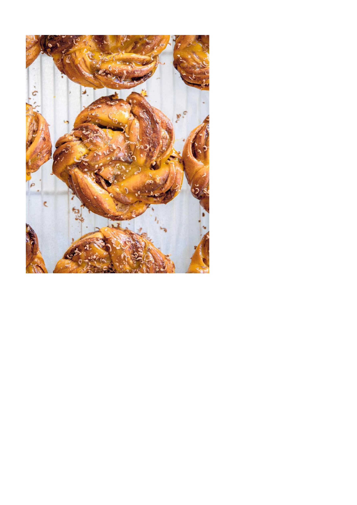
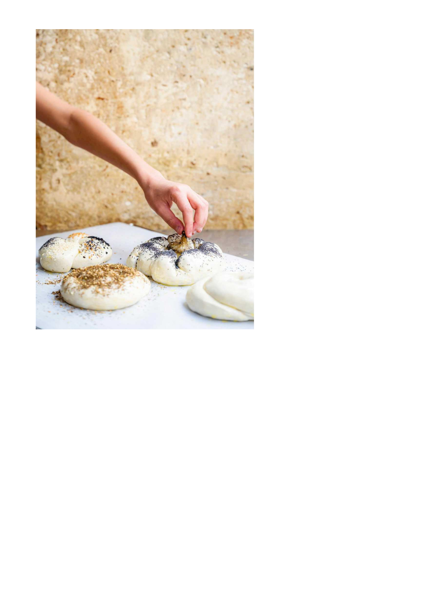
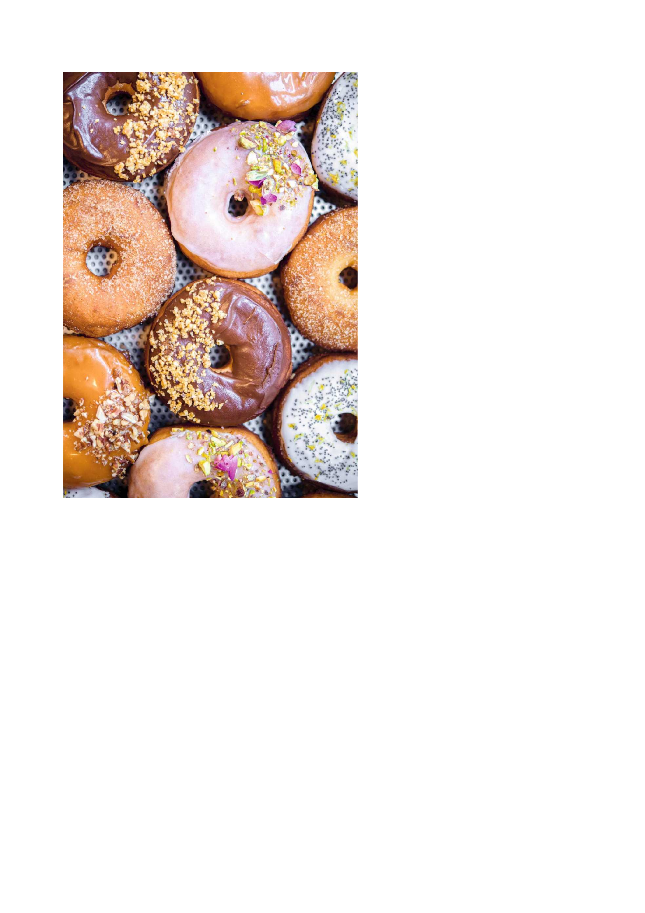

<!DOCTYPE html>
<html lang="" xml:lang="" xmlns="http://www.w3.org/1999/xhtml"><head><title>static/downloads/38dc6b48-ff2d-4ecf-b7e3-f177679876d0/Babka-Zana-Boulangerie-levantine-Sarah-Amouyal-Emm-html.html</title><meta content="text/html; charset=utf-8" http-equiv="Content-Type"/><br/><style type="text/css"></style>
    <link rel="stylesheet" href="css/style.css">
</head><body bgcolor="#A0A0A0" link="blue" vlink="blue"><div id="page1-div" style="position:relative;width:1784px;height:2526px;"></div></body></html><!DOCTYPE html>
<html lang="" xml:lang="" xmlns="http://www.w3.org/1999/xhtml"><head><title>static/downloads/38dc6b48-ff2d-4ecf-b7e3-f177679876d0/Babka-Zana-Boulangerie-levantine-Sarah-Amouyal-Emm-html.html</title><meta content="text/html; charset=utf-8" http-equiv="Content-Type"/><br/><style type="text/css"></style></head><body bgcolor="#A0A0A0" link="blue" vlink="blue"><div id="page2-div" style="position:relative;width:1784px;height:2526px;"></div></body></html><!DOCTYPE html>
<html lang="" xml:lang="" xmlns="http://www.w3.org/1999/xhtml"><head><title>static/downloads/38dc6b48-ff2d-4ecf-b7e3-f177679876d0/Babka-Zana-Boulangerie-levantine-Sarah-Amouyal-Emm-html.html</title><meta content="text/html; charset=utf-8" http-equiv="Content-Type"/><br/><style type="text/css">
	p {margin: 0; padding: 0;}	.ft30{font-size:45px;font-family:Times;color:#121312;}
	.ft31{font-size:23px;font-family:Times;color:#121312;}
--></style></head><body bgcolor="#A0A0A0" link="blue" vlink="blue"><div id="page3-div" style="position:relative;width:1784px;height:2526px;"><p class="ft30" style="position:absolute;top:880px;left:469px;white-space:nowrap">Histoire d’une </p><p class="ft30" style="position:absolute;top:934px;left:390px;white-space:nowrap">boulangerie levantine</p><p class="ft31" style="position:absolute;top:1137px;left:419px;white-space:nowrap">Photographies : Géraldine Martens</p><p class="ft31" style="position:absolute;top:1165px;left:488px;white-space:nowrap">Stylisme : Élise Dumas</p></div></body></html><!DOCTYPE html>
<html lang="" xml:lang="" xmlns="http://www.w3.org/1999/xhtml"><head><title>static/downloads/38dc6b48-ff2d-4ecf-b7e3-f177679876d0/Babka-Zana-Boulangerie-levantine-Sarah-Amouyal-Emm-html.html</title><meta content="text/html; charset=utf-8" http-equiv="Content-Type"/><br/><style type="text/css"><!--
	p {margin: 0; padding: 0;}--></style></head><body bgcolor="#A0A0A0" link="blue" vlink="blue"><div id="page4-div" style="position:relative;width:1784px;height:2526px;"></div></body></html><!DOCTYPE html>
<html lang="" xml:lang="" xmlns="http://www.w3.org/1999/xhtml"><head><title>static/downloads/38dc6b48-ff2d-4ecf-b7e3-f177679876d0/Babka-Zana-Boulangerie-levantine-Sarah-Amouyal-Emm-html.html</title><meta content="text/html; charset=utf-8" http-equiv="Content-Type"/><br/><style type="text/css"><!--
	p {margin: 0; padding: 0;}	.ft50{font-size:28px;font-family:Times;color:#121312;}
--></style></head><body bgcolor="#A0A0A0" link="blue" vlink="blue"><div id="page5-div" style="position:relative;width:1784px;height:2526px;"><p class="ft50" style="position:absolute;top:625px;left:518px;white-space:nowrap">À nos enfants </p><p class="ft50" style="position:absolute;top:657px;left:461px;white-space:nowrap">Élicha, Jeanne et Tilda</p></div></body></html><!DOCTYPE html>
<html lang="" xml:lang="" xmlns="http://www.w3.org/1999/xhtml"><head><title>static/downloads/38dc6b48-ff2d-4ecf-b7e3-f177679876d0/Babka-Zana-Boulangerie-levantine-Sarah-Amouyal-Emm-html.html</title><meta content="text/html; charset=utf-8" http-equiv="Content-Type"/><br/><style type="text/css"><!--
	p {margin: 0; padding: 0;}	.ft60{font-size:36px;font-family:Times;color:#121312;}
	.ft61{font-size:23px;font-family:Times;color:#121312;}
	.ft62{font-size:23px;line-height:58px;font-family:Times;color:#121312;}
	.ft63{font-size:23px;line-height:57px;font-family:Times;color:#121312;}
--></style></head><body bgcolor="#A0A0A0" link="blue" vlink="blue"><div id="page6-div" style="position:relative;width:1784px;height:2526px;"><p class="ft60" style="position:absolute;top:103px;left:104px;white-space:nowrap">SOMMAIRE</p><p class="ft62" style="position:absolute;top:536px;left:104px;white-space:nowrap">BABKAS  <br/>BRIOCHES  <br/>HALLAH ET AUTRES PAINS   <br/>SANDWICHS  <br/>BOREKAS  <br/>RUGELACHS  <br/>GOURMANDISES  <br/>DE MÈRE EN… FILS  <br/>ON RÉCUPÈRE TOUT  </p></div></body></html><!DOCTYPE html>
<html lang="" xml:lang="" xmlns="http://www.w3.org/1999/xhtml"><head><title>static/downloads/38dc6b48-ff2d-4ecf-b7e3-f177679876d0/Babka-Zana-Boulangerie-levantine-Sarah-Amouyal-Emm-html.html</title><meta content="text/html; charset=utf-8" http-equiv="Content-Type"/><br/><style type="text/css"><!--
	p {margin: 0; padding: 0;}--></style></head><body bgcolor="#A0A0A0" link="blue" vlink="blue"><div id="page7-div" style="position:relative;width:1784px;height:2526px;"></div></body></html><!DOCTYPE html>
<html lang="" xml:lang="" xmlns="http://www.w3.org/1999/xhtml"><head><title>static/downloads/38dc6b48-ff2d-4ecf-b7e3-f177679876d0/Babka-Zana-Boulangerie-levantine-Sarah-Amouyal-Emm-html.html</title><meta content="text/html; charset=utf-8" http-equiv="Content-Type"/><br/><style type="text/css"><!--
	p {margin: 0; padding: 0;}	.ft80{font-size:28px;font-family:Times;color:#121312;}
	.ft81{font-size:16px;font-family:Times;color:#121312;}
--></style></head><body bgcolor="#A0A0A0" link="blue" vlink="blue"><div id="page8-div" style="position:relative;width:1784px;height:2526px;"><p class="ft80" style="position:absolute;top:137px;left:419px;white-space:nowrap">TRANSMISSION ET PARTAGE</p><p class="ft80" style="position:absolute;top:278px;left:107px;white-space:nowrap">Passer la porte de Babka Zana, rue Condorcet dans le 9e arrondissement</p><p class="ft80" style="position:absolute;top:311px;left:107px;white-space:nowrap">de Paris, c’est découvrir une histoire de famille, de transmission </p><p class="ft80" style="position:absolute;top:344px;left:107px;white-space:nowrap">et de gourmandise.</p><p class="ft80" style="position:absolute;top:376px;left:107px;white-space:nowrap">On se laisse immédiatement transporter par une irrésistible odeur </p><p class="ft80" style="position:absolute;top:408px;left:107px;white-space:nowrap">de brioche, de beurre et de sucre, réveillant à la seconde l’enfant qui </p><p class="ft80" style="position:absolute;top:440px;left:107px;white-space:nowrap">est en nous. </p><p class="ft80" style="position:absolute;top:473px;left:107px;white-space:nowrap">Les Babkaset bien d’autres merveilles sucrées et saléessont </p><p class="ft80" style="position:absolute;top:505px;left:107px;white-space:nowrap">façonnées et cuisent sous nos yeux, à travers tant de formes et </p><p class="ft80" style="position:absolute;top:537px;left:107px;white-space:nowrap">de saveurs que l’on a du mal à choisir, quitte à les goûter toutes,</p><p class="ft80" style="position:absolute;top:569px;left:107px;white-space:nowrap">et à revenir... souvent.</p><p class="ft80" style="position:absolute;top:635px;left:107px;white-space:nowrap">Encore inconnue il y a peu de temps, la Babka a très vite tourné la </p><p class="ft80" style="position:absolute;top:667px;left:107px;white-space:nowrap">tête et conquis le palais des gourmands. Elle est aujourd’hui en passe </p><p class="ft80" style="position:absolute;top:699px;left:107px;white-space:nowrap">d’entrer dans la cour des grands aux côtés de ses cousins les croissants,</p><p class="ft80" style="position:absolute;top:732px;left:107px;white-space:nowrap">pains aux raisins et autres merveilles de notre viennoiserie traditionnelle.</p><p class="ft80" style="position:absolute;top:796px;left:107px;white-space:nowrap">Babka Zana est avant tout une ode à la gourmandise dans laquelle </p><p class="ft80" style="position:absolute;top:829px;left:107px;white-space:nowrap">Sarah et Emmanuel ont grandi. D’ailleurs « Babka Zana » n’est-il pas </p><p class="ft80" style="position:absolute;top:861px;left:107px;white-space:nowrap">un hommage à toutes les mères et les grands-mères qui ont su nourrir </p><p class="ft80" style="position:absolute;top:894px;left:107px;white-space:nowrap">et transmettre ?</p><p class="ft80" style="position:absolute;top:958px;left:107px;white-space:nowrap">C’est à leurs côtés qu’Emmanuel a développé sa passion de la cuisine.</p><p class="ft80" style="position:absolute;top:990px;left:107px;white-space:nowrap">Avec sa femme Sarah, ils ont longuement mûri l’envie de partager </p><p class="ft80" style="position:absolute;top:1023px;left:107px;white-space:nowrap">cette passion dans un lieu convivial, où chaque proposition sera d’une </p><p class="ft80" style="position:absolute;top:1055px;left:107px;white-space:nowrap">justesse maitrisée, fruit d’un minutieux travail de recherche du goût, </p><p class="ft80" style="position:absolute;top:1088px;left:107px;white-space:nowrap">mêlant savoir-faire artisanal et produits de première qualité. </p><p class="ft80" style="position:absolute;top:1152px;left:107px;white-space:nowrap">Cette aventure est portée par la vague qui redécouvre avec émerveil ement</p><p class="ft80" style="position:absolute;top:1185px;left:107px;white-space:nowrap">les richesses des cuisines méditerranéennes.</p><p class="ft80" style="position:absolute;top:1217px;left:107px;white-space:nowrap">Les traditions se revisitent sans complexes, dans une sorte de joyeux</p><p class="ft80" style="position:absolute;top:1249px;left:107px;white-space:nowrap">melting-pot et une totale liberté. Rien n’est codifié, tout est possible. </p><p class="ft80" style="position:absolute;top:1282px;left:107px;white-space:nowrap">Les frontières s’estompent, les influences se mélangent…</p></div></body></html><!DOCTYPE html>
<html lang="" xml:lang="" xmlns="http://www.w3.org/1999/xhtml"><head><title>static/downloads/38dc6b48-ff2d-4ecf-b7e3-f177679876d0/Babka-Zana-Boulangerie-levantine-Sarah-Amouyal-Emm-html.html</title><meta content="text/html; charset=utf-8" http-equiv="Content-Type"/><br/><style type="text/css"><!--
	p {margin: 0; padding: 0;}	.ft90{font-size:28px;font-family:Times;color:#121312;}
--></style></head><body bgcolor="#A0A0A0" link="blue" vlink="blue"><div id="page9-div" style="position:relative;width:1784px;height:2526px;"><p class="ft90" style="position:absolute;top:275px;left:149px;white-space:nowrap">La pâte à tartiner se faufile entre les plis de la Babka tout comme </p><p class="ft90" style="position:absolute;top:308px;left:149px;white-space:nowrap">la pistache ; la fleur d’oranger parfume la Mouna ; le thon et le citron</p><p class="ft90" style="position:absolute;top:341px;left:149px;white-space:nowrap">confit flirtent avec la tahina et le zaatar… Pickles, yaourt, sumac…</p><p class="ft90" style="position:absolute;top:373px;left:149px;white-space:nowrap">l’acide pointe son nez partout. La shakshouka a quitté son berceau </p><p class="ft90" style="position:absolute;top:405px;left:149px;white-space:nowrap">tunisien, elle voyage et on se l’approprie en ajoutant son grain de sel </p><p class="ft90" style="position:absolute;top:437px;left:149px;white-space:nowrap">ou de cumin. </p><p class="ft90" style="position:absolute;top:502px;left:149px;white-space:nowrap">C’est aussi une reconnaissance festive de la street-food levantine.</p><p class="ft90" style="position:absolute;top:534px;left:149px;white-space:nowrap">Un seul credo : produits frais, de saison, circuits courts, proximité</p><p class="ft90" style="position:absolute;top:566px;left:149px;white-space:nowrap">avec le consommateur.</p><p class="ft90" style="position:absolute;top:632px;left:149px;white-space:nowrap">Babka Zana participe à sa manière à cette révolution en apportant </p><p class="ft90" style="position:absolute;top:664px;left:149px;white-space:nowrap">son univers, sa créativité, sa rigueur, sa générosité et son esthétique.</p><p class="ft90" style="position:absolute;top:729px;left:149px;white-space:nowrap">Et puisque c’est à moi que revient l’honneur de vous faire entrer dans </p><p class="ft90" style="position:absolute;top:761px;left:149px;white-space:nowrap">ce livre, sachez que je suis fière du parcours accompli, fière que cette </p><p class="ft90" style="position:absolute;top:793px;left:149px;white-space:nowrap">aventure ait suscité un tel engouement et fière maintenant de vous </p><p class="ft90" style="position:absolute;top:825px;left:149px;white-space:nowrap">présenter ces trésors.</p><p class="ft90" style="position:absolute;top:891px;left:149px;white-space:nowrap">Sarah, Emmanuel, mes enfants, ne changez rien, continuez d’être</p><p class="ft90" style="position:absolute;top:923px;left:149px;white-space:nowrap">exigeants, inventez encore et toujours, surpassez-vous… pour nous </p><p class="ft90" style="position:absolute;top:955px;left:149px;white-space:nowrap">enchanter les papilles et le cœur.</p><p class="ft90" style="position:absolute;top:1052px;left:731px;white-space:nowrap">Andrée ZANA Murat</p></div></body></html><!DOCTYPE html>
<html lang="" xml:lang="" xmlns="http://www.w3.org/1999/xhtml"><head><title>static/downloads/38dc6b48-ff2d-4ecf-b7e3-f177679876d0/Babka-Zana-Boulangerie-levantine-Sarah-Amouyal-Emm-html.html</title><meta content="text/html; charset=utf-8" http-equiv="Content-Type"/><br/><style type="text/css"><!--
	p {margin: 0; padding: 0;}	.ft100{font-size:28px;font-family:Times;color:#121312;}
--></style></head><body bgcolor="#A0A0A0" link="blue" vlink="blue"><div id="page10-div" style="position:relative;width:1784px;height:2526px;"><p class="ft100" style="position:absolute;top:137px;left:419px;white-space:nowrap">POUR COMMENCER</p><p class="ft100" style="position:absolute;top:278px;left:107px;white-space:nowrap">Nous sommes un couple de gourmands.</p><p class="ft100" style="position:absolute;top:311px;left:107px;white-space:nowrap">Chaque événement heureux de notre quotidien, de notre vie, chaque </p><p class="ft100" style="position:absolute;top:344px;left:107px;white-space:nowrap">souvenir est associé à un plat, un déjeuner, un dîner, une saveur...</p><p class="ft100" style="position:absolute;top:376px;left:107px;white-space:nowrap">Nous aimons goûter, tester, découvrir, nous régaler mais nous adorons </p><p class="ft100" style="position:absolute;top:408px;left:107px;white-space:nowrap">tout autant faire la cuisine pour notre famille, nos amis…</p><p class="ft100" style="position:absolute;top:473px;left:107px;white-space:nowrap">Pour nous, la table est toujours une belle promesse, une fête, une </p><p class="ft100" style="position:absolute;top:505px;left:107px;white-space:nowrap">cérémonie ! Des plats dont on la couvre, à la vaisselle, au linge et à tous </p><p class="ft100" style="position:absolute;top:537px;left:107px;white-space:nowrap">les objets qui l’embellissent.</p><p class="ft100" style="position:absolute;top:602px;left:107px;white-space:nowrap">Nous sommes tous les deux porteurs d’un héritage culinaire, du Maroc </p><p class="ft100" style="position:absolute;top:635px;left:107px;white-space:nowrap">ou de la Tunisie, riche, généreux, ensoleillé, divers, ouvert aux produits</p><p class="ft100" style="position:absolute;top:667px;left:107px;white-space:nowrap">locaux et aux autres cultures mais les gourmands que nous sommes </p><p class="ft100" style="position:absolute;top:699px;left:107px;white-space:nowrap">ont vite été rattrapés par d’autres délices venus notamment d’Europe</p><p class="ft100" style="position:absolute;top:731px;left:107px;white-space:nowrap">de l’Est, découverts un peu partout et en particulier aux États-Unis </p><p class="ft100" style="position:absolute;top:764px;left:107px;white-space:nowrap">et en Israël. </p><p class="ft100" style="position:absolute;top:796px;left:107px;white-space:nowrap">Ces merveilles ont voyagé, se sont transmises. Nous avons eu la </p><p class="ft100" style="position:absolute;top:829px;left:107px;white-space:nowrap">curiosité et l’envie de creuser ce sillon en nous inscrivant dans cette </p><p class="ft100" style="position:absolute;top:861px;left:107px;white-space:nowrap">tradition pour nous les approprier, les bousculer, les embellir et les </p><p class="ft100" style="position:absolute;top:894px;left:107px;white-space:nowrap">faire connaître.</p><p class="ft100" style="position:absolute;top:959px;left:107px;white-space:nowrap">Sarah Quand nous la visitions, nous passions notre vie dans la cuisine</p><p class="ft100" style="position:absolute;top:990px;left:107px;white-space:nowrap">de Mamie Sarah, ma grand-mère paternelle, spécialiste de plats</p><p class="ft100" style="position:absolute;top:1023px;left:107px;white-space:nowrap">marocains. Et… le sucre ? C’est ma grande sœur qui m’a initiée </p><p class="ft100" style="position:absolute;top:1055px;left:107px;white-space:nowrap">aux plaisirs sucrés. Sa cuisine est toujours remplie de gâteaux et </p><p class="ft100" style="position:absolute;top:1088px;left:107px;white-space:nowrap">de pâtisseries à n’importe quelle heure du jour. J’ai une vraie passion</p><p class="ft100" style="position:absolute;top:1120px;left:107px;white-space:nowrap">pour les préparations sucrées et singulièrement pour le chocolat.</p><p class="ft100" style="position:absolute;top:1185px;left:107px;white-space:nowrap">Emmanuel Pour ma part, j’ai grandi dans les cuisines de ma grand-mère</p><p class="ft100" style="position:absolute;top:1217px;left:107px;white-space:nowrap">Mathilde, une cuisinière comme on n’en fait plus, et de ma mère douée </p><p class="ft100" style="position:absolute;top:1249px;left:107px;white-space:nowrap">pour toutes les cuisines et qui a repris le flambeau. </p><p class="ft100" style="position:absolute;top:1282px;left:107px;white-space:nowrap">La transmission s’est faite de manière naturelle.</p></div></body></html><!DOCTYPE html>
<html lang="" xml:lang="" xmlns="http://www.w3.org/1999/xhtml"><head><title>static/downloads/38dc6b48-ff2d-4ecf-b7e3-f177679876d0/Babka-Zana-Boulangerie-levantine-Sarah-Amouyal-Emm-html.html</title><meta content="text/html; charset=utf-8" http-equiv="Content-Type"/><br/><style type="text/css"><!--
	p {margin: 0; padding: 0;}	.ft110{font-size:28px;font-family:Times;color:#121312;}
--></style></head><body bgcolor="#A0A0A0" link="blue" vlink="blue"><div id="page11-div" style="position:relative;width:1784px;height:2526px;"><p class="ft110" style="position:absolute;top:275px;left:149px;white-space:nowrap">Nous avons découvert la Babka il y a quelques années, lors de notre </p><p class="ft110" style="position:absolute;top:308px;left:149px;white-space:nowrap">premier voyage ensemble à Tel Aviv. Un coup de foudre, un plaisir inouï, </p><p class="ft110" style="position:absolute;top:341px;left:149px;white-space:nowrap">une addiction, une obsession !</p><p class="ft110" style="position:absolute;top:405px;left:149px;white-space:nowrap">Nous avions des métiers que nous adorions, chacun dans des domaines </p><p class="ft110" style="position:absolute;top:437px;left:149px;white-space:nowrap">artistiques mais nous ne voulions pas passer à côté d’une envie qui </p><p class="ft110" style="position:absolute;top:470px;left:149px;white-space:nowrap">se faisait de plus en plus pressante: celle de produire tous les deux </p><p class="ft110" style="position:absolute;top:502px;left:149px;white-space:nowrap">le meilleur de ce que nous aimions pour le partager.</p><p class="ft110" style="position:absolute;top:566px;left:149px;white-space:nowrap">En créant Babka Zana, nous avons réalisé un rêve, ouvrir au cœur </p><p class="ft110" style="position:absolute;top:599px;left:149px;white-space:nowrap">de notre quartier une boulangerie levantine.</p><p class="ft110" style="position:absolute;top:696px;left:648px;white-space:nowrap">Sarah et Emmanuel Murat</p></div></body></html><!DOCTYPE html>
<html lang="" xml:lang="" xmlns="http://www.w3.org/1999/xhtml"><head><title>static/downloads/38dc6b48-ff2d-4ecf-b7e3-f177679876d0/Babka-Zana-Boulangerie-levantine-Sarah-Amouyal-Emm-html.html</title><meta content="text/html; charset=utf-8" http-equiv="Content-Type"/><br/><style type="text/css"><!--
	p {margin: 0; padding: 0;}	.ft120{font-size:28px;font-family:Times;color:#121312;}
--></style></head><body bgcolor="#A0A0A0" link="blue" vlink="blue"><div id="page12-div" style="position:relative;width:1784px;height:2526px;"><p class="ft120" style="position:absolute;top:130px;left:419px;white-space:nowrap">LE LIVRE, MODE D’EMPLOI</p><p class="ft120" style="position:absolute;top:278px;left:107px;white-space:nowrap">LA CUISSON — Vous trouverez souvent une information du type : </p><p class="ft120" style="position:absolute;top:311px;left:107px;white-space:nowrap">de 20 à 25 min. À partir du temps minimum, il vous faudra surveiller </p><p class="ft120" style="position:absolute;top:344px;left:107px;white-space:nowrap">et vérifier si la cuisson est terminée ou pas. Si vous enfoncez la lame </p><p class="ft120" style="position:absolute;top:376px;left:107px;white-space:nowrap">d’un couteau dans la pâte, elle doit ressortir sèche.</p><p class="ft120" style="position:absolute;top:408px;left:107px;white-space:nowrap">Selon votre goût, vous modulerez le temps de cuisson si vous préférez </p><p class="ft120" style="position:absolute;top:440px;left:107px;white-space:nowrap">un résultat plus ou moins cuit, ou plus ou moins doré.</p><p class="ft120" style="position:absolute;top:473px;left:107px;white-space:nowrap">Mais cela dépend aussi de votre four. En eet, il existe de légères </p><p class="ft120" style="position:absolute;top:505px;left:107px;white-space:nowrap">diérences d’un four à l’autre et elles sont souvent plus importantes </p><p class="ft120" style="position:absolute;top:537px;left:107px;white-space:nowrap">entre un four simple et un four professionnel.</p><p class="ft120" style="position:absolute;top:602px;left:107px;white-space:nowrap">LA POUSSE — Nos recettes sont exécutées dans une chambre de pousse</p><p class="ft120" style="position:absolute;top:635px;left:107px;white-space:nowrap">où la température est assez élevée (28 °C). Plus il fait chaud et plus vite</p><p class="ft120" style="position:absolute;top:667px;left:107px;white-space:nowrap">cela pousse. Les temps de pousse peuvent varier considérablement  </p><p class="ft120" style="position:absolute;top:699px;left:107px;white-space:nowrap">d’un lieu à un autre.</p><p class="ft120" style="position:absolute;top:732px;left:107px;white-space:nowrap">Mais il faut, partout, éviter les endroits frais ou soumis aux courants </p><p class="ft120" style="position:absolute;top:764px;left:107px;white-space:nowrap">d’air et placer la pâte à lever bien recouverte dans l’endroit le plus </p><p class="ft120" style="position:absolute;top:796px;left:107px;white-space:nowrap">chaud de la maison.</p><p class="ft120" style="position:absolute;top:829px;left:107px;white-space:nowrap">En Tunisie, l’hiver, on utilisait un morceau de couverture pour envelopper </p><p class="ft120" style="position:absolute;top:861px;left:107px;white-space:nowrap">le saladier contenant la pâte à lever.</p><p class="ft120" style="position:absolute;top:894px;left:107px;white-space:nowrap">Sinon, vous pouvez aussi laisser lever la pâte dans votre four éteint mais </p><p class="ft120" style="position:absolute;top:926px;left:107px;white-space:nowrap">lumière allumée.</p><p class="ft120" style="position:absolute;top:990px;left:107px;white-space:nowrap">LES QUANTITÉS — Parfois, pour certaines préparations, les quantités </p><p class="ft120" style="position:absolute;top:1023px;left:107px;white-space:nowrap">peuvent vous paraître énormes, voire disproportionnées avec l’utilisation</p><p class="ft120" style="position:absolute;top:1055px;left:107px;white-space:nowrap">qui en sera faite. Pour celles qui incluent des œufs, nous vous les avons </p><p class="ft120" style="position:absolute;top:1088px;left:107px;white-space:nowrap">proposées avec 1 œuf ou 1 jaune d’œuf plutôt qu’avec ⁄ d’œuf…</p><p class="ft120" style="position:absolute;top:1120px;left:107px;white-space:nowrap">C’est le cas ailleurs, par exemple, pour le Confit de framboise entrant </p><p class="ft120" style="position:absolute;top:1152px;left:107px;white-space:nowrap">dans la composition de la Babka Amour de la Saint-Valentin. </p><p class="ft120" style="position:absolute;top:1185px;left:107px;white-space:nowrap">Il est souvent très dicile de cuisiner de toutes petites quantités.</p><p class="ft120" style="position:absolute;top:1217px;left:107px;white-space:nowrap">Les préparations présentées ici sont toutes recyclables, réutilisables,</p><p class="ft120" style="position:absolute;top:1249px;left:107px;white-space:nowrap">quelques pistes vous sont parfois suggérées.</p></div></body></html><!DOCTYPE html>
<html lang="" xml:lang="" xmlns="http://www.w3.org/1999/xhtml"><head><title>static/downloads/38dc6b48-ff2d-4ecf-b7e3-f177679876d0/Babka-Zana-Boulangerie-levantine-Sarah-Amouyal-Emm-html.html</title><meta content="text/html; charset=utf-8" http-equiv="Content-Type"/><br/><style type="text/css"><!--
	p {margin: 0; padding: 0;}	.ft130{font-size:28px;font-family:Times;color:#121312;}
	.ft131{font-size:21px;font-family:Times;color:#121312;}
--></style></head><body bgcolor="#A0A0A0" link="blue" vlink="blue"><div id="page13-div" style="position:relative;width:1784px;height:2526px;"><p class="ft130" style="position:absolute;top:282px;left:149px;white-space:nowrap">LES PICTOGRAMMES — Voici quelques pictos pour évoquer les temps </p><p class="ft130" style="position:absolute;top:314px;left:149px;white-space:nowrap">de préparation, de repos, de pousse et de cuisson.</p><p class="ft130" style="position:absolute;top:347px;left:149px;white-space:nowrap">Et pour agrémenter la lecture, quelques informations bien utiles : </p><p class="ft130" style="position:absolute;top:379px;left:149px;white-space:nowrap">histoires, anecdotes, conseils, astuces…</p><p class="ft131" style="position:absolute;top:586px;left:305px;white-space:nowrap">Préparation</p><p class="ft131" style="position:absolute;top:664px;left:305px;white-space:nowrap">Repos</p><p class="ft131" style="position:absolute;top:741px;left:305px;white-space:nowrap">Cuisson au four</p><p class="ft131" style="position:absolute;top:819px;left:305px;white-space:nowrap">Cuisson sur le feu</p><p class="ft131" style="position:absolute;top:586px;left:773px;white-space:nowrap">Façonnage</p><p class="ft131" style="position:absolute;top:664px;left:773px;white-space:nowrap">Astuce</p><p class="ft131" style="position:absolute;top:741px;left:773px;white-space:nowrap">À savoir</p><p class="ft131" style="position:absolute;top:819px;left:773px;white-space:nowrap">Petites histoires</p></div></body></html><!DOCTYPE html>
<html lang="" xml:lang="" xmlns="http://www.w3.org/1999/xhtml"><head><title>static/downloads/38dc6b48-ff2d-4ecf-b7e3-f177679876d0/Babka-Zana-Boulangerie-levantine-Sarah-Amouyal-Emm-html.html</title><meta content="text/html; charset=utf-8" http-equiv="Content-Type"/><br/><style type="text/css"><!--
	p {margin: 0; padding: 0;}--></style></head><body bgcolor="#A0A0A0" link="blue" vlink="blue"><div id="page14-div" style="position:relative;width:1784px;height:2526px;"></div></body></html><!DOCTYPE html>
<html lang="" xml:lang="" xmlns="http://www.w3.org/1999/xhtml"><head><title>static/downloads/38dc6b48-ff2d-4ecf-b7e3-f177679876d0/Babka-Zana-Boulangerie-levantine-Sarah-Amouyal-Emm-html.html</title><meta content="text/html; charset=utf-8" http-equiv="Content-Type"/><br/><style type="text/css"><!--
	p {margin: 0; padding: 0;}--></style></head><body bgcolor="#A0A0A0" link="blue" vlink="blue"><div id="page15-div" style="position:relative;width:1784px;height:2526px;"></div></body></html><!DOCTYPE html>
<html lang="" xml:lang="" xmlns="http://www.w3.org/1999/xhtml"><head><title>static/downloads/38dc6b48-ff2d-4ecf-b7e3-f177679876d0/Babka-Zana-Boulangerie-levantine-Sarah-Amouyal-Emm-html.html</title><meta content="text/html; charset=utf-8" http-equiv="Content-Type"/><br/><style type="text/css"><!--
	p {margin: 0; padding: 0;}	.ft160{font-size:28px;font-family:Times;color:#121312;}
--></style></head><body bgcolor="#A0A0A0" link="blue" vlink="blue"><div id="page16-div" style="position:relative;width:1784px;height:2526px;"><p class="ft160" style="position:absolute;top:1028px;left:107px;white-space:nowrap">Cette merveille vient de loin… du froid… Servie les jours</p><p class="ft160" style="position:absolute;top:1060px;left:107px;white-space:nowrap">de fête… Contraction de Babouchka, grand-mère </p><p class="ft160" style="position:absolute;top:1092px;left:107px;white-space:nowrap">polonaise… Évocation des plis de la jupe de l’aïeule…</p><p class="ft160" style="position:absolute;top:1125px;left:107px;white-space:nowrap">Les explications sont multiples. Nous, on les prend toutes.</p><p class="ft160" style="position:absolute;top:1157px;left:107px;white-space:nowrap">Comme nos souvenirs entre réalité et vie rêvée, enfance,</p><p class="ft160" style="position:absolute;top:1189px;left:107px;white-space:nowrap">êtres chers, présents et disparus… pour se perdre dans </p><p class="ft160" style="position:absolute;top:1222px;left:107px;white-space:nowrap">les plis et replis de la mémoire… C’est tout cela que nous </p><p class="ft160" style="position:absolute;top:1254px;left:107px;white-space:nowrap">raconte la Babka, vrai ou faux, peu importe tant qu’il y a </p><p class="ft160" style="position:absolute;top:1287px;left:107px;white-space:nowrap">de la douceur et de la volupté ! Belle à regarder et délicieuse </p><p class="ft160" style="position:absolute;top:1319px;left:107px;white-space:nowrap">à déguster, elle est irrésistible.</p><p class="ft160" style="position:absolute;top:1351px;left:107px;white-space:nowrap">Régaler et réconforter… Telle est la mission de la Babka.</p><p class="ft160" style="position:absolute;top:135px;left:419px;white-space:nowrap">BABKAS</p></div></body></html><!DOCTYPE html>
<html lang="" xml:lang="" xmlns="http://www.w3.org/1999/xhtml"><head><title>static/downloads/38dc6b48-ff2d-4ecf-b7e3-f177679876d0/Babka-Zana-Boulangerie-levantine-Sarah-Amouyal-Emm-html.html</title><meta content="text/html; charset=utf-8" http-equiv="Content-Type"/><br/><style type="text/css"><!--
	p {margin: 0; padding: 0;}	.ft170{font-size:280px;font-family:Times;color:#121312;}
--></style></head><body bgcolor="#A0A0A0" link="blue" vlink="blue"><div id="page17-div" style="position:relative;width:1784px;height:2526px;"><p class="ft170" style="position:absolute;top:207px;left:384px;white-space:nowrap">B A</p><p class="ft170" style="position:absolute;top:508px;left:384px;white-space:nowrap">B K</p><p class="ft170" style="position:absolute;top:807px;left:379px;white-space:nowrap">A S</p></div></body></html><!DOCTYPE html>
<html lang="" xml:lang="" xmlns="http://www.w3.org/1999/xhtml"><head><title>static/downloads/38dc6b48-ff2d-4ecf-b7e3-f177679876d0/Babka-Zana-Boulangerie-levantine-Sarah-Amouyal-Emm-html.html</title><meta content="text/html; charset=utf-8" http-equiv="Content-Type"/><br/><style type="text/css"><!--
	p {margin: 0; padding: 0;}	.ft180{font-size:45px;font-family:Times;color:#121312;}
	.ft181{font-size:21px;font-family:Times;color:#121312;}
	.ft182{font-size:28px;font-family:Times;color:#121312;}
	.ft183{font-size:12px;font-family:Times;color:#121312;}
	.ft184{font-size:45px;line-height:61px;font-family:Times;color:#121312;}
	.ft185{font-size:21px;line-height:32px;font-family:Times;color:#121312;}
--></style></head><body bgcolor="#A0A0A0" link="blue" vlink="blue"><div id="page18-div" style="position:relative;width:1784px;height:2526px;"><p class="ft180" style="position:absolute;top:1399px;left:248px;white-space:nowrap">16</p><p class="ft181" style="position:absolute;top:1422px;left:404px;white-space:nowrap">Babkas</p><p class="ft184" style="position:absolute;top:109px;left:263px;white-space:nowrap">LA BABKA<br/>RECETTE DE BASE DE LA PÂTE</p><p class="ft181" style="position:absolute;top:281px;left:107px;white-space:nowrap">POUR BABKA CAKE </p><p class="ft181" style="position:absolute;top:306px;left:107px;white-space:nowrap">PERSONNES </p><p class="ft181" style="position:absolute;top:332px;left:107px;white-space:nowrap">OU  À ROLLS</p><p class="ft181" style="position:absolute;top:375px;left:150px;white-space:nowrap"> 15min + 20min </p><p class="ft181" style="position:absolute;top:410px;left:150px;white-space:nowrap">(pétrissage)</p><p class="ft181" style="position:absolute;top:436px;left:150px;white-space:nowrap">(hors temps </p><p class="ft181" style="position:absolute;top:461px;left:150px;white-space:nowrap">de préparation</p><p class="ft185" style="position:absolute;top:488px;left:150px;white-space:nowrap">de la garniture)<br/>2h (1re pousse)</p><p class="ft185" style="position:absolute;top:545px;left:150px;white-space:nowrap">+ 1h (2e pousse)<br/>15 à 20min (rolls), </p><p class="ft181" style="position:absolute;top:604px;left:150px;white-space:nowrap">45 à 50min (cake)</p><p class="ft181" style="position:absolute;top:649px;left:107px;white-space:nowrap">LA PÂTE (550g)</p><p class="ft181" style="position:absolute;top:675px;left:107px;white-space:nowrap">250g de farine T45</p><p class="ft181" style="position:absolute;top:701px;left:107px;white-space:nowrap">12g de levure fraîche </p><p class="ft181" style="position:absolute;top:727px;left:107px;white-space:nowrap">de boulanger</p><p class="ft181" style="position:absolute;top:753px;left:107px;white-space:nowrap">50g de sucre en poudre</p><p class="ft181" style="position:absolute;top:779px;left:107px;white-space:nowrap">100g de lait entier</p><p class="ft181" style="position:absolute;top:804px;left:107px;white-space:nowrap">1œuf</p><p class="ft181" style="position:absolute;top:831px;left:107px;white-space:nowrap">80g de beurre + 20g </p><p class="ft181" style="position:absolute;top:856px;left:107px;white-space:nowrap">pour le moule</p><p class="ft181" style="position:absolute;top:882px;left:107px;white-space:nowrap">3g de sel</p><p class="ft181" style="position:absolute;top:927px;left:107px;white-space:nowrap">LA GARNITURE </p><p class="ft181" style="position:absolute;top:953px;left:107px;white-space:nowrap">(200g environ)</p><p class="ft181" style="position:absolute;top:980px;left:107px;white-space:nowrap">(cf. recettes pages suivantes)</p><p class="ft181" style="position:absolute;top:1024px;left:107px;white-space:nowrap">LE SIROP</p><p class="ft181" style="position:absolute;top:1050px;left:107px;white-space:nowrap">40g d’eau (4cuil. à soupe)</p><p class="ft181" style="position:absolute;top:1077px;left:107px;white-space:nowrap">40g de sucre en poudre</p><p class="ft181" style="position:absolute;top:1102px;left:107px;white-space:nowrap">(3 à 4cuil. à soupe)</p><p class="ft181" style="position:absolute;top:281px;left:419px;white-space:nowrap">LA PÂTE  Sortez le beurre à l’avance afin qu’il soit</p><p class="ft181" style="position:absolute;top:306px;left:419px;white-space:nowrap">à température ambiante au moment de l’utiliser.</p><p class="ft181" style="position:absolute;top:332px;left:419px;white-space:nowrap">Diluez la levure dans le lait tiède (attention ni froid, ni chaud) </p><p class="ft181" style="position:absolute;top:358px;left:419px;white-space:nowrap">et laissez reposer 10 min en remuant de temps en temps.</p><p class="ft181" style="position:absolute;top:384px;left:419px;white-space:nowrap">Assemblez les éléments secs au robot ou à la main : sel, sucre, </p><p class="ft181" style="position:absolute;top:410px;left:419px;white-space:nowrap">farine, puis ajoutez l’œuf battu et enfin le mélange lait-levure. </p><p class="ft181" style="position:absolute;top:436px;left:419px;white-space:nowrap">Pétrissez 5 min à vitesse moyenne (ou à la main), ajoutez  </p><p class="ft181" style="position:absolute;top:461px;left:419px;white-space:nowrap">le beurre coupé en petits cubes jusqu’à ce que la pâte</p><p class="ft181" style="position:absolute;top:488px;left:419px;white-space:nowrap">se décolle des parois (soit 15 min de pétrissage en tout). </p><p class="ft181" style="position:absolute;top:513px;left:419px;white-space:nowrap">À chaque étape, à l’aide d’une maryse, raclez les parois </p><p class="ft181" style="position:absolute;top:539px;left:419px;white-space:nowrap">de la cuve du robot pour récupérer la farine d’abord</p><p class="ft181" style="position:absolute;top:565px;left:419px;white-space:nowrap">et le beurre ensuite. </p><p class="ft181" style="position:absolute;top:611px;left:419px;white-space:nowrap">La pâte garde un aspect un peu collant, posez-la dans </p><p class="ft181" style="position:absolute;top:636px;left:419px;white-space:nowrap">un saladier recouvert d’un torchon propre, puis laissez-la </p><p class="ft181" style="position:absolute;top:663px;left:419px;white-space:nowrap">pousser 2 h à température ambiante (à l’abri des courants </p><p class="ft181" style="position:absolute;top:688px;left:419px;white-space:nowrap">d’air). La pâte doit doubler de volume (1re pousse).</p><p class="ft181" style="position:absolute;top:733px;left:419px;white-space:nowrap">Dégazez la pâte : pressez-la avec les doigts pour faire sortir </p><p class="ft181" style="position:absolute;top:759px;left:419px;white-space:nowrap">un peu d’air, ou enfoncez plusieurs fois votre poing dans </p><p class="ft181" style="position:absolute;top:785px;left:419px;white-space:nowrap">la pâte. Vous verrez, c’est jouissif ! </p><p class="ft181" style="position:absolute;top:811px;left:419px;white-space:nowrap">Puis, sur un plan de travail fariné, étalez la pâte pour obtenir </p><p class="ft181" style="position:absolute;top:837px;left:419px;white-space:nowrap">1 rectangle (de la longueur du moule par 3 fois sa largeur). </p><p class="ft181" style="position:absolute;top:863px;left:419px;white-space:nowrap">À cause du beurre, la pâte peut-être un peu col ante, n’hésitez </p><p class="ft181" style="position:absolute;top:888px;left:419px;white-space:nowrap">pas à vous aider d’un peu de farine pour la manipuler.</p><p class="ft181" style="position:absolute;top:934px;left:419px;white-space:nowrap">LA GARNITURE  Recouvrez le rectangle de pâte de </p><p class="ft181" style="position:absolute;top:960px;left:419px;white-space:nowrap">la garniture de votre choix (cf. recettes pages suivantes) </p><p class="ft181" style="position:absolute;top:986px;left:419px;white-space:nowrap">jusqu’à 1 cm du bord.</p><p class="ft181" style="position:absolute;top:1031px;left:419px;white-space:nowrap">LE FAÇONNAGE  Pour la Babka cake : faites un pli de </p><p class="ft181" style="position:absolute;top:1057px;left:419px;white-space:nowrap">2 ou 3 cm en le rabattant sur toute la longueur, puis roulez </p><p class="ft181" style="position:absolute;top:1083px;left:419px;white-space:nowrap">sur la largeur en serrant bien, la longueur reste la même.</p><p class="ft181" style="position:absolute;top:1109px;left:419px;white-space:nowrap">Retournez le boudin, soudure au-dessus.</p><p class="ft181" style="position:absolute;top:1134px;left:419px;white-space:nowrap">Pour fendre le boudin, suivez la soudure et coupez-le en deux</p><p class="ft181" style="position:absolute;top:1161px;left:419px;white-space:nowrap">dans son épaisseur sur toute la longueur.</p><p class="ft181" style="position:absolute;top:1186px;left:419px;white-space:nowrap">Assemblez les 2 demi-boudins face coupée vers le haut en </p><p class="ft181" style="position:absolute;top:1212px;left:419px;white-space:nowrap">formant un X et tressez de part et d’autre du X. La tresse doit </p><p class="ft181" style="position:absolute;top:1238px;left:419px;white-space:nowrap">être régulière et serrée. (cf. photos p. 20).</p></div></body></html><!DOCTYPE html>
<html lang="" xml:lang="" xmlns="http://www.w3.org/1999/xhtml"><head><title>static/downloads/38dc6b48-ff2d-4ecf-b7e3-f177679876d0/Babka-Zana-Boulangerie-levantine-Sarah-Amouyal-Emm-html.html</title><meta content="text/html; charset=utf-8" http-equiv="Content-Type"/><br/><style type="text/css"><!--
	p {margin: 0; padding: 0;}	.ft190{font-size:45px;font-family:Times;color:#121312;}
	.ft191{font-size:21px;font-family:Times;color:#121312;}
	.ft192{font-size:12px;font-family:Times;color:#121312;}
--></style></head><body bgcolor="#A0A0A0" link="blue" vlink="blue"><div id="page19-div" style="position:relative;width:1784px;height:2526px;"><p class="ft190" style="position:absolute;top:1399px;left:320px;white-space:nowrap">17</p><p class="ft191" style="position:absolute;top:1422px;left:476px;white-space:nowrap">Babkas</p><p class="ft191" style="position:absolute;top:280px;left:149px;white-space:nowrap">Les autres utilisations </p><p class="ft191" style="position:absolute;top:306px;left:149px;white-space:nowrap">de la pâte à Babka</p><p class="ft191" style="position:absolute;top:332px;left:149px;white-space:nowrap">Mouna (cf. p.62) </p><p class="ft191" style="position:absolute;top:358px;left:149px;white-space:nowrap">Brioche Pumpkin (cf. p.67) </p><p class="ft191" style="position:absolute;top:384px;left:149px;white-space:nowrap">Brioche aux marrons (cf. </p><p class="ft191" style="position:absolute;top:410px;left:149px;white-space:nowrap">p.70) </p><p class="ft191" style="position:absolute;top:436px;left:149px;white-space:nowrap">Hot Cross Bun (cf. p.73) </p><p class="ft191" style="position:absolute;top:461px;left:149px;white-space:nowrap">Dirty Strudel (cf. p.153)</p><p class="ft191" style="position:absolute;top:287px;left:462px;white-space:nowrap">Tapissez le moule de papier sulfurisé et graissez-le de beurre </p><p class="ft191" style="position:absolute;top:313px;left:462px;white-space:nowrap">(ou d’huile). </p><p class="ft191" style="position:absolute;top:338px;left:462px;white-space:nowrap">Posez la tresse dans le moule. Si el e est trop longue, </p><p class="ft191" style="position:absolute;top:365px;left:462px;white-space:nowrap">compressez-la un peu et repliez les 2 extrémités par en-dessous </p><p class="ft191" style="position:absolute;top:390px;left:462px;white-space:nowrap">pour bien la caler. Si el e est au contraire trop courte, étirez-la </p><p class="ft191" style="position:absolute;top:416px;left:462px;white-space:nowrap">un peu. </p><p class="ft191" style="position:absolute;top:461px;left:462px;white-space:nowrap">Pour le roll, la pie ou la Babka Amour de la Saint-Valentin : </p><p class="ft191" style="position:absolute;top:488px;left:462px;white-space:nowrap">même façonnage avec plus ou moins de pâte. La tresse est </p><p class="ft191" style="position:absolute;top:513px;left:462px;white-space:nowrap">enroulée sur el e-même comme un escargot (ou bien nouée </p><p class="ft191" style="position:absolute;top:539px;left:462px;white-space:nowrap">pour le roll). L’extrémité extérieure est repliée par en-dessous.</p><p class="ft191" style="position:absolute;top:584px;left:462px;white-space:nowrap">Recouvrez d’un torchon propre et laissez pousser au moins 1 h </p><p class="ft191" style="position:absolute;top:611px;left:462px;white-space:nowrap">(2e pousse).</p><p class="ft191" style="position:absolute;top:656px;left:462px;white-space:nowrap">Préchauez le four à 180 °C (th. 6). </p><p class="ft191" style="position:absolute;top:681px;left:462px;white-space:nowrap">Enfournez pour 15 à 20 min (rolls) ou 45 à 50 min (cake). </p><p class="ft191" style="position:absolute;top:708px;left:462px;white-space:nowrap">Attendez 5 min avant de démouler la Babka cake.</p><p class="ft191" style="position:absolute;top:753px;left:462px;white-space:nowrap">Pour la Babka pie: faites-la cuire 1h30 à 160°C (th. 5-6): </p><p class="ft191" style="position:absolute;top:779px;left:462px;white-space:nowrap">1h10, puis 20min four entrouvert.</p><p class="ft191" style="position:absolute;top:824px;left:462px;white-space:nowrap">LE SIROP  Faites bouil ir l’eau et le sucre jusqu’à ce qu’il ait </p><p class="ft191" style="position:absolute;top:850px;left:462px;white-space:nowrap">fondu. Enduisez (sirotez) la Babka au pinceau dès sa sortie </p><p class="ft191" style="position:absolute;top:876px;left:462px;white-space:nowrap">du four. N’hésitez pas à la siroter plusieurs fois, el e sera plus </p><p class="ft191" style="position:absolute;top:902px;left:462px;white-space:nowrap">moel euse, plus bril ante et se gardera plus longtemps. </p></div></body></html><!DOCTYPE html>
<html lang="" xml:lang="" xmlns="http://www.w3.org/1999/xhtml"><head><title>static/downloads/38dc6b48-ff2d-4ecf-b7e3-f177679876d0/Babka-Zana-Boulangerie-levantine-Sarah-Amouyal-Emm-html.html</title><meta content="text/html; charset=utf-8" http-equiv="Content-Type"/><br/><style type="text/css"><!--
	p {margin: 0; padding: 0;}	.ft200{font-size:45px;font-family:Times;color:#121312;}
	.ft201{font-size:21px;font-family:Times;color:#121312;}
	.ft202{font-size:12px;font-family:Times;color:#121312;}
--></style></head><body bgcolor="#A0A0A0" link="blue" vlink="blue"><div id="page20-div" style="position:relative;width:1784px;height:2526px;"><p class="ft200" style="position:absolute;top:1399px;left:248px;white-space:nowrap">18</p><p class="ft201" style="position:absolute;top:1422px;left:404px;white-space:nowrap">Babkas</p><p class="ft201" style="position:absolute;top:278px;left:457px;white-space:nowrap">LA PÂTE  Vous pouvez la préparer la veille pour </p><p class="ft201" style="position:absolute;top:305px;left:419px;white-space:nowrap">le lendemain et la laisser reposer au réfrigérateur avant</p><p class="ft201" style="position:absolute;top:330px;left:419px;white-space:nowrap">la 1re pousse.</p><p class="ft201" style="position:absolute;top:375px;left:419px;white-space:nowrap">LA GARNITURE  Elle pèse environ du poids de la pâte. </p><p class="ft201" style="position:absolute;top:401px;left:419px;white-space:nowrap">Ici, pour 1Babka préparée avec 550g de pâte, la garniture </p><p class="ft201" style="position:absolute;top:427px;left:419px;white-space:nowrap">devra donc peser de 180 à 200g. Tiédissez-la un peu </p><p class="ft201" style="position:absolute;top:453px;left:419px;white-space:nowrap">pour l’étaler plus facilement (attention, pas trop, sinon ça </p><p class="ft201" style="position:absolute;top:479px;left:419px;white-space:nowrap">dégouline). À l’inverse, si elle est trop liquide, réservez-la </p><p class="ft201" style="position:absolute;top:505px;left:419px;white-space:nowrap">un peu au réfrigérateur. (Très important)</p><p class="ft201" style="position:absolute;top:550px;left:419px;white-space:nowrap">LA BABKA CAKE  Pour cette forme de Babka et cette</p><p class="ft201" style="position:absolute;top:576px;left:419px;white-space:nowrap">quantité de pâte, choisissez 1 moule à cake de 23 à 25 cm de</p><p class="ft201" style="position:absolute;top:602px;left:419px;white-space:nowrap">longueur, en métal de préférence. Ou bien des moules en bois </p><p class="ft201" style="position:absolute;top:628px;left:419px;white-space:nowrap">chemisés de papier sulfurisé.</p><p class="ft201" style="position:absolute;top:673px;left:419px;white-space:nowrap">LE ROLL  Avec cette quantité de pâte, vous pouvez réaliser </p><p class="ft201" style="position:absolute;top:699px;left:419px;white-space:nowrap">3 gros rolls ou 4 moyens. 1 roll cru pèse environ 180 g. Pour les </p><p class="ft201" style="position:absolute;top:725px;left:419px;white-space:nowrap">« tenir » (sinon, ils s’étalent, surtout si la garniture est lourde), </p><p class="ft201" style="position:absolute;top:751px;left:419px;white-space:nowrap">posez-les dans des cercles de 10 cm de diamètre, en les</p><p class="ft201" style="position:absolute;top:777px;left:419px;white-space:nowrap">espaçant, sur une plaque allant au four, recouverte de papier </p><p class="ft201" style="position:absolute;top:803px;left:419px;white-space:nowrap">sulfurisé. Si vous en faites beaucoup, vous pouvez utiliser  </p><p class="ft201" style="position:absolute;top:828px;left:419px;white-space:nowrap">un moule à alvéoles (10,5 cm de diamètre) Flexipan®. </p><p class="ft201" style="position:absolute;top:874px;left:419px;white-space:nowrap">LA BABKA PIE  Très spectaculaire sur une table de fête, </p><p class="ft201" style="position:absolute;top:900px;left:419px;white-space:nowrap">elle nécessite 900 g de pâte et 300 g de garniture minimum. </p><p class="ft201" style="position:absolute;top:926px;left:419px;white-space:nowrap">Utilisez un cercle de 24 cm de diamètre.</p><p class="ft201" style="position:absolute;top:1018px;left:457px;white-space:nowrap"> La Babka peut se conserver 2 jours à température </p><p class="ft201" style="position:absolute;top:1042px;left:419px;white-space:nowrap">ambiante, enveloppée de film alimentaire ou de papier </p><p class="ft201" style="position:absolute;top:1068px;left:419px;white-space:nowrap">aluminium. </p><p class="ft201" style="position:absolute;top:1094px;left:419px;white-space:nowrap">Si vous en préparez 2 ou plusieurs en même temps, vous </p><p class="ft201" style="position:absolute;top:1119px;left:419px;white-space:nowrap">pouvez en surgeler une partie. Pour la réchauer, glissez-la </p><p class="ft201" style="position:absolute;top:1146px;left:419px;white-space:nowrap">5 min à 160 °C (th. 5-6). </p><p class="ft201" style="position:absolute;top:1171px;left:419px;white-space:nowrap">La Babka supporte tout sauf le réfrigérateur et le micro-ondes.</p><p class="ft201" style="position:absolute;top:130px;left:107px;white-space:nowrap">La Babka</p><p class="ft201" style="position:absolute;top:156px;left:107px;white-space:nowrap">Recette de base de la pâte</p></div></body></html><!DOCTYPE html>
<html lang="" xml:lang="" xmlns="http://www.w3.org/1999/xhtml"><head><title>static/downloads/38dc6b48-ff2d-4ecf-b7e3-f177679876d0/Babka-Zana-Boulangerie-levantine-Sarah-Amouyal-Emm-html.html</title><meta content="text/html; charset=utf-8" http-equiv="Content-Type"/><br/><style type="text/css"><!--
	p {margin: 0; padding: 0;}--></style></head><body bgcolor="#A0A0A0" link="blue" vlink="blue"><div id="page21-div" style="position:relative;width:1784px;height:2526px;"></div></body></html><!DOCTYPE html>
<html lang="" xml:lang="" xmlns="http://www.w3.org/1999/xhtml"><head><title>static/downloads/38dc6b48-ff2d-4ecf-b7e3-f177679876d0/Babka-Zana-Boulangerie-levantine-Sarah-Amouyal-Emm-html.html</title><meta content="text/html; charset=utf-8" http-equiv="Content-Type"/><br/><style type="text/css"><!--
	p {margin: 0; padding: 0;}	.ft220{font-size:45px;font-family:Times;color:#121312;}
	.ft221{font-size:21px;font-family:Times;color:#121312;}
--></style></head><body bgcolor="#A0A0A0" link="blue" vlink="blue"><div id="page22-div" style="position:relative;width:1784px;height:2526px;"><p class="ft220" style="position:absolute;top:1399px;left:248px;white-space:nowrap">20</p><p class="ft221" style="position:absolute;top:1422px;left:404px;white-space:nowrap">Babkas</p><p class="ft221" style="position:absolute;top:462px;left:356px;white-space:nowrap">1</p><p class="ft221" style="position:absolute;top:876px;left:354px;white-space:nowrap">4</p><p class="ft221" style="position:absolute;top:1290px;left:355px;white-space:nowrap">7</p><p class="ft221" style="position:absolute;top:462px;left:666px;white-space:nowrap">2</p><p class="ft221" style="position:absolute;top:876px;left:666px;white-space:nowrap">5</p><p class="ft221" style="position:absolute;top:1290px;left:666px;white-space:nowrap">8</p><p class="ft221" style="position:absolute;top:462px;left:976px;white-space:nowrap">3</p><p class="ft221" style="position:absolute;top:876px;left:976px;white-space:nowrap">6</p><p class="ft221" style="position:absolute;top:1290px;left:976px;white-space:nowrap">9</p></div></body></html><!DOCTYPE html>
<html lang="" xml:lang="" xmlns="http://www.w3.org/1999/xhtml"><head><title>static/downloads/38dc6b48-ff2d-4ecf-b7e3-f177679876d0/Babka-Zana-Boulangerie-levantine-Sarah-Amouyal-Emm-html.html</title><meta content="text/html; charset=utf-8" http-equiv="Content-Type"/><br/><style type="text/css"><!--
	p {margin: 0; padding: 0;}	.ft230{font-size:45px;font-family:Times;color:#121312;}
	.ft231{font-size:21px;font-family:Times;color:#121312;}
--></style></head><body bgcolor="#A0A0A0" link="blue" vlink="blue"><div id="page23-div" style="position:relative;width:1784px;height:2526px;"><p class="ft230" style="position:absolute;top:1399px;left:320px;white-space:nowrap">21</p><p class="ft231" style="position:absolute;top:1422px;left:476px;white-space:nowrap">Babkas</p><p class="ft230" style="position:absolute;top:109px;left:304px;white-space:nowrap">FAÇONNAGES</p><p class="ft231" style="position:absolute;top:876px;left:388px;white-space:nowrap">10</p><p class="ft231" style="position:absolute;top:1290px;left:389px;white-space:nowrap">12</p><p class="ft231" style="position:absolute;top:876px;left:702px;white-space:nowrap">11</p><p class="ft231" style="position:absolute;top:1290px;left:699px;white-space:nowrap">13</p><p class="ft231" style="position:absolute;top:287px;left:462px;white-space:nowrap">Babka Cake </p><p class="ft231" style="position:absolute;top:287px;left:618px;white-space:nowrap">Étapes de 1 à 9 </p><p class="ft231" style="position:absolute;top:326px;left:462px;white-space:nowrap">Babka Roll </p><p class="ft231" style="position:absolute;top:326px;left:618px;white-space:nowrap">Étapes de 1 à 8 et de 10 à 11 </p><p class="ft231" style="position:absolute;top:365px;left:462px;white-space:nowrap">Babka Pie </p><p class="ft231" style="position:absolute;top:365px;left:617px;white-space:nowrap">Étapes de 1 à 8 et de 12 à 13 </p></div></body></html><!DOCTYPE html>
<html lang="" xml:lang="" xmlns="http://www.w3.org/1999/xhtml"><head><title>static/downloads/38dc6b48-ff2d-4ecf-b7e3-f177679876d0/Babka-Zana-Boulangerie-levantine-Sarah-Amouyal-Emm-html.html</title><meta content="text/html; charset=utf-8" http-equiv="Content-Type"/><br/><style type="text/css"><!--
	p {margin: 0; padding: 0;}--></style></head><body bgcolor="#A0A0A0" link="blue" vlink="blue"><div id="page24-div" style="position:relative;width:1784px;height:2526px;"></div></body></html><!DOCTYPE html>
<html lang="" xml:lang="" xmlns="http://www.w3.org/1999/xhtml"><head><title>static/downloads/38dc6b48-ff2d-4ecf-b7e3-f177679876d0/Babka-Zana-Boulangerie-levantine-Sarah-Amouyal-Emm-html.html</title><meta content="text/html; charset=utf-8" http-equiv="Content-Type"/><br/><style type="text/css"><!--
	p {margin: 0; padding: 0;}	.ft250{font-size:45px;font-family:Times;color:#121312;}
	.ft251{font-size:21px;font-family:Times;color:#121312;}
	.ft252{font-size:21px;line-height:32px;font-family:Times;color:#121312;}
--></style></head><body bgcolor="#A0A0A0" link="blue" vlink="blue"><div id="page25-div" style="position:relative;width:1784px;height:2526px;"><p class="ft250" style="position:absolute;top:1399px;left:320px;white-space:nowrap">23</p><p class="ft251" style="position:absolute;top:1422px;left:476px;white-space:nowrap">Babkas</p><p class="ft250" style="position:absolute;top:109px;left:305px;white-space:nowrap">BABKA CHOCOLAT, </p><p class="ft250" style="position:absolute;top:161px;left:305px;white-space:nowrap">NOISETTE</p><p class="ft251" style="position:absolute;top:281px;left:149px;white-space:nowrap">POUR BABKA CAKE </p><p class="ft251" style="position:absolute;top:306px;left:149px;white-space:nowrap">PERSONNES  </p><p class="ft251" style="position:absolute;top:332px;left:149px;white-space:nowrap">OU  À ROLLS</p><p class="ft251" style="position:absolute;top:373px;left:185px;white-space:nowrap"> 20min (hors temps de </p><p class="ft251" style="position:absolute;top:410px;left:149px;white-space:nowrap"> </p><p class="ft251" style="position:absolute;top:410px;left:191px;white-space:nowrap">préparation de la pâte)</p><p class="ft252" style="position:absolute;top:442px;left:185px;white-space:nowrap"> 2h + 1h<br/> 15 à 20min (rolls), </p><p class="ft251" style="position:absolute;top:500px;left:149px;white-space:nowrap"> </p><p class="ft251" style="position:absolute;top:500px;left:191px;white-space:nowrap">45 à 50min (cake)</p><p class="ft251" style="position:absolute;top:546px;left:149px;white-space:nowrap">LA PÂTE (550g)</p><p class="ft251" style="position:absolute;top:572px;left:149px;white-space:nowrap">(cf. recette de base p.16)</p><p class="ft251" style="position:absolute;top:617px;left:149px;white-space:nowrap">LA GARNITURE (200g)</p><p class="ft251" style="position:absolute;top:643px;left:149px;white-space:nowrap">190g de pâte à tartiner</p><p class="ft251" style="position:absolute;top:669px;left:149px;white-space:nowrap">10g d’huile de pépins </p><p class="ft251" style="position:absolute;top:695px;left:149px;white-space:nowrap">de raisin</p><p class="ft251" style="position:absolute;top:720px;left:149px;white-space:nowrap">40g de noisettes </p><p class="ft251" style="position:absolute;top:747px;left:149px;white-space:nowrap">concassées (ou noix  </p><p class="ft251" style="position:absolute;top:772px;left:149px;white-space:nowrap">de cajou, ou amandes…)</p><p class="ft251" style="position:absolute;top:798px;left:149px;white-space:nowrap">30g de pépites de </p><p class="ft251" style="position:absolute;top:824px;left:149px;white-space:nowrap">chocolat noir</p><p class="ft251" style="position:absolute;top:869px;left:149px;white-space:nowrap">LE SIROP</p><p class="ft251" style="position:absolute;top:895px;left:149px;white-space:nowrap">40g d’eau (4cuil. à soupe)</p><p class="ft251" style="position:absolute;top:921px;left:149px;white-space:nowrap">40g de sucre en poudre </p><p class="ft251" style="position:absolute;top:947px;left:149px;white-space:nowrap">(3 à 4cuil. à soupe)</p><p class="ft251" style="position:absolute;top:281px;left:461px;white-space:nowrap">Mélangez la pâte à tartiner et l’huile de pépins de raisin. </p><p class="ft251" style="position:absolute;top:306px;left:461px;white-space:nowrap">Recouvrez la pâte une fois étalée de cette garniture jusqu’à </p><p class="ft251" style="position:absolute;top:332px;left:461px;white-space:nowrap">1cm du bord. </p><p class="ft251" style="position:absolute;top:358px;left:461px;white-space:nowrap">Éparpil ez les pépites de chocolat et les noisettes concassées </p><p class="ft251" style="position:absolute;top:384px;left:461px;white-space:nowrap">(gardez-en un peu pour la décoration).</p><p class="ft251" style="position:absolute;top:429px;left:461px;white-space:nowrap">Façonnez: roulez, coupez, tressez (cake) et nouez ou enroulez </p><p class="ft251" style="position:absolute;top:455px;left:461px;white-space:nowrap">(rolls). Couvrez d’un torchon propre et laissez pousser 1h.</p><p class="ft251" style="position:absolute;top:500px;left:461px;white-space:nowrap">Préchauez le four à 180°C (th.6). </p><p class="ft251" style="position:absolute;top:526px;left:461px;white-space:nowrap">Parsemez les noisettes réservées sur le dessus, faites cuire </p><p class="ft251" style="position:absolute;top:552px;left:461px;white-space:nowrap">de 15 à 20min (rolls) ou de 45 à 50min (cake), puis sirotez  </p><p class="ft251" style="position:absolute;top:578px;left:462px;white-space:nowrap">la Babka (cf. recette de base, p.16).</p><p class="ft251" style="position:absolute;top:671px;left:497px;white-space:nowrap"> La garniture est composée de 190g de pâte à tartiner  </p><p class="ft251" style="position:absolute;top:695px;left:458px;white-space:nowrap">+ 10g d’huile de pépins de raisin (5% de la quantité de pâte </p><p class="ft251" style="position:absolute;top:720px;left:461px;white-space:nowrap">à tartiner). Utilisez la pâte à tartiner de votre choix mais </p><p class="ft251" style="position:absolute;top:747px;left:461px;white-space:nowrap">soyez vigilant sur les produits entrant dans sa composition. </p><p class="ft251" style="position:absolute;top:772px;left:461px;white-space:nowrap">Il en existe maintenant un grand choix dans la plupart des </p><p class="ft251" style="position:absolute;top:798px;left:461px;white-space:nowrap">commerces. Depuis sa création, Babka Zana a choisi la pâte </p><p class="ft251" style="position:absolute;top:824px;left:461px;white-space:nowrap">à tartiner «Originale» de À la Mère de Famil e®. </p></div></body></html><!DOCTYPE html>
<html lang="" xml:lang="" xmlns="http://www.w3.org/1999/xhtml"><head><title>static/downloads/38dc6b48-ff2d-4ecf-b7e3-f177679876d0/Babka-Zana-Boulangerie-levantine-Sarah-Amouyal-Emm-html.html</title><meta content="text/html; charset=utf-8" http-equiv="Content-Type"/><br/><style type="text/css"><!--
	p {margin: 0; padding: 0;}	.ft260{font-size:45px;font-family:Times;color:#121312;}
	.ft261{font-size:21px;font-family:Times;color:#121312;}
	.ft262{font-size:21px;line-height:32px;font-family:Times;color:#121312;}
--></style></head><body bgcolor="#A0A0A0" link="blue" vlink="blue"><div id="page26-div" style="position:relative;width:1784px;height:2526px;"><p class="ft260" style="position:absolute;top:1399px;left:248px;white-space:nowrap">24</p><p class="ft261" style="position:absolute;top:1422px;left:404px;white-space:nowrap">Babkas</p><p class="ft260" style="position:absolute;top:109px;left:263px;white-space:nowrap">BABKA CANNELLE,</p><p class="ft260" style="position:absolute;top:161px;left:263px;white-space:nowrap">MUSCOVADO</p><p class="ft261" style="position:absolute;top:281px;left:107px;white-space:nowrap">POUR  BABKA CAKE </p><p class="ft261" style="position:absolute;top:306px;left:107px;white-space:nowrap"> PERSONNES </p><p class="ft261" style="position:absolute;top:332px;left:107px;white-space:nowrap">OU  À  ROLLS</p><p class="ft261" style="position:absolute;top:375px;left:150px;white-space:nowrap"> 20 min (hors temps </p><p class="ft261" style="position:absolute;top:410px;left:150px;white-space:nowrap">de préparation</p><p class="ft262" style="position:absolute;top:436px;left:150px;white-space:nowrap">de lapâte)<br/>2 h + 1 h<br/>15 à 20 min (rolls), </p><p class="ft261" style="position:absolute;top:526px;left:150px;white-space:nowrap">45 à 50 min (cake)</p><p class="ft261" style="position:absolute;top:572px;left:107px;white-space:nowrap">LA PÂTE (550 g)</p><p class="ft261" style="position:absolute;top:598px;left:107px;white-space:nowrap">(cf. recette de base p. 16)</p><p class="ft261" style="position:absolute;top:642px;left:107px;white-space:nowrap">LA GARNITURE </p><p class="ft261" style="position:absolute;top:669px;left:107px;white-space:nowrap">(200 g environ)</p><p class="ft261" style="position:absolute;top:695px;left:107px;white-space:nowrap">45 g de sucre muscovado</p><p class="ft261" style="position:absolute;top:720px;left:107px;white-space:nowrap">18 g de vergeoise</p><p class="ft261" style="position:absolute;top:747px;left:107px;white-space:nowrap">17 g de cannelle en poudre</p><p class="ft261" style="position:absolute;top:772px;left:107px;white-space:nowrap">90 g de chocolat blanc</p><p class="ft261" style="position:absolute;top:798px;left:107px;white-space:nowrap">30 g de beurre</p><p class="ft261" style="position:absolute;top:843px;left:107px;white-space:nowrap">LE SIROP</p><p class="ft261" style="position:absolute;top:870px;left:107px;white-space:nowrap">40 g d’eau (4 cuil. à soupe)</p><p class="ft261" style="position:absolute;top:895px;left:107px;white-space:nowrap">40 g de sucre en poudre</p><p class="ft261" style="position:absolute;top:921px;left:107px;white-space:nowrap">(3 à 4 cuil. à soupe)</p><p class="ft261" style="position:absolute;top:281px;left:419px;white-space:nowrap">Mélangez tous les éléments secs dans un cul-de-poule </p><p class="ft261" style="position:absolute;top:306px;left:419px;white-space:nowrap">ou un saladier.</p><p class="ft261" style="position:absolute;top:352px;left:419px;white-space:nowrap">Cassez le chocolat blanc en petits morceaux ou utilisez </p><p class="ft261" style="position:absolute;top:377px;left:419px;white-space:nowrap">des galets de chocolat.</p><p class="ft261" style="position:absolute;top:422px;left:419px;white-space:nowrap">Faites fondre le beurre puis le chocolat blanc dans un</p><p class="ft261" style="position:absolute;top:449px;left:419px;white-space:nowrap">bain-marie pas trop chaud, puis versez-les sur le mélange sec </p><p class="ft261" style="position:absolute;top:474px;left:419px;white-space:nowrap">et amalgamez le tout. Le résultat est diérent des autres </p><p class="ft261" style="position:absolute;top:500px;left:419px;white-space:nowrap">garnitures et ressemble à une pâte sableuse à eriter.</p><p class="ft261" style="position:absolute;top:545px;left:419px;white-space:nowrap">Façonnez : roulez, coupez, tressez (cake) et nouez ou enroulez </p><p class="ft261" style="position:absolute;top:572px;left:419px;white-space:nowrap">(rolls). Couvrez d’un torchon propre et laissez pousser 1h.</p><p class="ft261" style="position:absolute;top:617px;left:419px;white-space:nowrap">Préchauez le four à 180 °C (th. 6). </p><p class="ft261" style="position:absolute;top:643px;left:419px;white-space:nowrap">Faites cuire de 15 à 20 min (rolls) ou de 45 à 50 min (cake), </p><p class="ft261" style="position:absolute;top:669px;left:419px;white-space:nowrap">puis sirotez la Babka (cf. recette de base, p. 16).</p><p class="ft261" style="position:absolute;top:714px;left:419px;white-space:nowrap"></p></div></body></html><!DOCTYPE html>
<html lang="" xml:lang="" xmlns="http://www.w3.org/1999/xhtml"><head><title>static/downloads/38dc6b48-ff2d-4ecf-b7e3-f177679876d0/Babka-Zana-Boulangerie-levantine-Sarah-Amouyal-Emm-html.html</title><meta content="text/html; charset=utf-8" http-equiv="Content-Type"/><br/><style type="text/css"><!--
	p {margin: 0; padding: 0;}--></style></head><body bgcolor="#A0A0A0" link="blue" vlink="blue"><div id="page27-div" style="position:relative;width:1784px;height:2526px;"></div></body></html><!DOCTYPE html>
<html lang="" xml:lang="" xmlns="http://www.w3.org/1999/xhtml"><head><title>static/downloads/38dc6b48-ff2d-4ecf-b7e3-f177679876d0/Babka-Zana-Boulangerie-levantine-Sarah-Amouyal-Emm-html.html</title><meta content="text/html; charset=utf-8" http-equiv="Content-Type"/><br/><style type="text/css"><!--
	p {margin: 0; padding: 0;}--></style></head><body bgcolor="#A0A0A0" link="blue" vlink="blue"><div id="page28-div" style="position:relative;width:1784px;height:2526px;"></div></body></html><!DOCTYPE html>
<html lang="" xml:lang="" xmlns="http://www.w3.org/1999/xhtml"><head><title>static/downloads/38dc6b48-ff2d-4ecf-b7e3-f177679876d0/Babka-Zana-Boulangerie-levantine-Sarah-Amouyal-Emm-html.html</title><meta content="text/html; charset=utf-8" http-equiv="Content-Type"/><br/><style type="text/css"><!--
	p {margin: 0; padding: 0;}	.ft290{font-size:45px;font-family:Times;color:#121312;}
	.ft291{font-size:21px;font-family:Times;color:#121312;}
--></style></head><body bgcolor="#A0A0A0" link="blue" vlink="blue"><div id="page29-div" style="position:relative;width:1784px;height:2526px;"><p class="ft290" style="position:absolute;top:1399px;left:320px;white-space:nowrap">27</p><p class="ft291" style="position:absolute;top:1422px;left:476px;white-space:nowrap">Babkas</p><p class="ft290" style="position:absolute;top:109px;left:305px;white-space:nowrap">BABKA PISTACHE,  </p><p class="ft290" style="position:absolute;top:161px;left:305px;white-space:nowrap">FLEUR D’ORANGER</p><p class="ft291" style="position:absolute;top:281px;left:149px;white-space:nowrap">POUR  BABKA CAKE  </p><p class="ft291" style="position:absolute;top:306px;left:149px;white-space:nowrap"> PERSONNES  </p><p class="ft291" style="position:absolute;top:332px;left:149px;white-space:nowrap">OU  À  ROLLS</p><p class="ft291" style="position:absolute;top:375px;left:185px;white-space:nowrap"> 20 min (hors temps de </p><p class="ft291" style="position:absolute;top:410px;left:149px;white-space:nowrap"> </p><p class="ft291" style="position:absolute;top:410px;left:191px;white-space:nowrap">préparation de la pâte)</p><p class="ft291" style="position:absolute;top:442px;left:185px;white-space:nowrap"> 2 h + 1 h</p><p class="ft291" style="position:absolute;top:488px;left:182px;white-space:nowrap">  15 à 20 min (rolls), </p><p class="ft291" style="position:absolute;top:500px;left:149px;white-space:nowrap"> </p><p class="ft291" style="position:absolute;top:500px;left:191px;white-space:nowrap">45 à 50 min (cake)</p><p class="ft291" style="position:absolute;top:546px;left:149px;white-space:nowrap">LA PÂTE (550 g)</p><p class="ft291" style="position:absolute;top:572px;left:149px;white-space:nowrap">(cf. recette de base, p. 16)</p><p class="ft291" style="position:absolute;top:617px;left:149px;white-space:nowrap">LA GARNITURE (200 g)</p><p class="ft291" style="position:absolute;top:643px;left:149px;white-space:nowrap">80 g de chocolat blanc</p><p class="ft291" style="position:absolute;top:669px;left:149px;white-space:nowrap">60 g de beurre </p><p class="ft291" style="position:absolute;top:695px;left:149px;white-space:nowrap">65 g de pâte de pistache</p><p class="ft291" style="position:absolute;top:720px;left:149px;white-space:nowrap">1 cuil. à soupe deau de </p><p class="ft291" style="position:absolute;top:747px;left:149px;white-space:nowrap">fleur doranger</p><p class="ft291" style="position:absolute;top:772px;left:149px;white-space:nowrap">50 g de pistaches entières </p><p class="ft291" style="position:absolute;top:817px;left:149px;white-space:nowrap">LE SIROP</p><p class="ft291" style="position:absolute;top:843px;left:149px;white-space:nowrap">40 g d’eau (4 cuil. à soupe)</p><p class="ft291" style="position:absolute;top:870px;left:149px;white-space:nowrap">40 g de sucre en poudre </p><p class="ft291" style="position:absolute;top:895px;left:149px;white-space:nowrap">(3 à 4 cuil. à soupe)</p><p class="ft291" style="position:absolute;top:966px;left:186px;white-space:nowrap">Si vous souhaitez réaliser </p><p class="ft291" style="position:absolute;top:992px;left:149px;white-space:nowrap">une Babka pie (10 personnes, </p><p class="ft291" style="position:absolute;top:1018px;left:149px;white-space:nowrap">cf. photo ci-contre et p. 18), </p><p class="ft291" style="position:absolute;top:1044px;left:149px;white-space:nowrap">il vous faudra 900g de pâte </p><p class="ft291" style="position:absolute;top:1070px;left:149px;white-space:nowrap">et 300g de garniture. Faites-la </p><p class="ft291" style="position:absolute;top:1095px;left:149px;white-space:nowrap">cuire 1h30 à 160°C (th. </p><p class="ft291" style="position:absolute;top:1122px;left:149px;white-space:nowrap">5-6): 1h10, puis 20min four </p><p class="ft291" style="position:absolute;top:1147px;left:149px;white-space:nowrap">entrouvert.</p><p class="ft291" style="position:absolute;top:281px;left:461px;white-space:nowrap">Cassez le chocolat blanc en petits morceaux ou utilisez  </p><p class="ft291" style="position:absolute;top:306px;left:461px;white-space:nowrap">des galets de chocolat. Hachez grossièrement les pistaches. </p><p class="ft291" style="position:absolute;top:332px;left:461px;white-space:nowrap">Faites fondre le beurre, puis le chocolat au bain-marie. </p><p class="ft291" style="position:absolute;top:358px;left:461px;white-space:nowrap">Ajoutez la pâte de pistache, puis, hors du feu, l’eau de fleur </p><p class="ft291" style="position:absolute;top:384px;left:461px;white-space:nowrap">d’oranger. Pour bien homogénéiser la préparation, vous </p><p class="ft291" style="position:absolute;top:410px;left:461px;white-space:nowrap">pouvez vous aider d’un mixeur plongeant. </p><p class="ft291" style="position:absolute;top:436px;left:461px;white-space:nowrap">Étalez ce mélange sur la pâte, parsemez 40 g de pistaches.</p><p class="ft291" style="position:absolute;top:481px;left:461px;white-space:nowrap">Façonnez : roulez, coupez, tressez (cake) et nouez ou enroulez </p><p class="ft291" style="position:absolute;top:507px;left:461px;white-space:nowrap">(rolls). Couvrez d’un torchon propre et laissez pousser 1h.</p><p class="ft291" style="position:absolute;top:552px;left:461px;white-space:nowrap">Préchauez le four à 180 °C (th. 6). </p><p class="ft291" style="position:absolute;top:578px;left:461px;white-space:nowrap">Parsemez les 10 g de pistaches restantes sur le dessus, faites </p><p class="ft291" style="position:absolute;top:604px;left:461px;white-space:nowrap">cuire de 15 à 20 min (rolls) ou de 45 à 50 min (cake), puis </p><p class="ft291" style="position:absolute;top:629px;left:461px;white-space:nowrap">sirotez la Babka (cf. recette de base, p. 16).</p><p class="ft291" style="position:absolute;top:675px;left:461px;white-space:nowrap">Si vous appréciez vraiment le goût de l’eau de fleur d’oranger, </p><p class="ft291" style="position:absolute;top:701px;left:461px;white-space:nowrap">parfumez-en le sirop en l’ajoutant hors du feu.</p><p class="ft291" style="position:absolute;top:792px;left:461px;white-space:nowrap">VARIANTEBABKA PISTACHE, FRAMBOISE </p><p class="ft291" style="position:absolute;top:818px;left:461px;white-space:nowrap">1 œuf, 65 g de pistaches, 40 g de sucre glace, 20 g de beurre </p><p class="ft291" style="position:absolute;top:843px;left:461px;white-space:nowrap">ramolli, 1,5 ml d’extrait de vanil e, 1 pincée de sel, 100 g de </p><p class="ft291" style="position:absolute;top:870px;left:461px;white-space:nowrap">chocolat blanc et 40 g de framboises.</p><p class="ft291" style="position:absolute;top:915px;left:461px;white-space:nowrap">Mixez tous les ingrédients sauf le chocolat et les framboises.</p><p class="ft291" style="position:absolute;top:940px;left:461px;white-space:nowrap">Faites fondre le chocolat au bain-marie. </p><p class="ft291" style="position:absolute;top:966px;left:461px;white-space:nowrap">Mêlez les 2 préparations. </p><p class="ft291" style="position:absolute;top:992px;left:461px;white-space:nowrap">Étalez cette garniture sur la pâte, parsemez de framboises </p><p class="ft291" style="position:absolute;top:1018px;left:461px;white-space:nowrap">coupées en deux et continuez comme précédemment.</p></div></body></html><!DOCTYPE html>
<html lang="" xml:lang="" xmlns="http://www.w3.org/1999/xhtml"><head><title>static/downloads/38dc6b48-ff2d-4ecf-b7e3-f177679876d0/Babka-Zana-Boulangerie-levantine-Sarah-Amouyal-Emm-html.html</title><meta content="text/html; charset=utf-8" http-equiv="Content-Type"/><br/><style type="text/css"><!--
	p {margin: 0; padding: 0;}	.ft300{font-size:45px;font-family:Times;color:#121312;}
	.ft301{font-size:21px;font-family:Times;color:#121312;}
	.ft302{font-size:21px;line-height:32px;font-family:Times;color:#121312;}
--></style></head><body bgcolor="#A0A0A0" link="blue" vlink="blue"><div id="page30-div" style="position:relative;width:1784px;height:2526px;"><p class="ft300" style="position:absolute;top:1399px;left:248px;white-space:nowrap">28</p><p class="ft301" style="position:absolute;top:1422px;left:404px;white-space:nowrap">Babkas</p><p class="ft300" style="position:absolute;top:109px;left:265px;white-space:nowrap">BABKA HALVA, CITRON</p><p class="ft301" style="position:absolute;top:281px;left:419px;white-space:nowrap">Pour cette garniture, faites plutôt des rolls. </p><p class="ft301" style="position:absolute;top:306px;left:419px;white-space:nowrap">Cassez le chocolat blanc en petits morceaux ou utilisez </p><p class="ft301" style="position:absolute;top:332px;left:419px;white-space:nowrap">des galets de chocolat.</p><p class="ft301" style="position:absolute;top:358px;left:419px;white-space:nowrap">Faites fondre le beurre puis le chocolat dans un bain-marie </p><p class="ft301" style="position:absolute;top:384px;left:419px;white-space:nowrap">pas trop chaud. </p><p class="ft301" style="position:absolute;top:410px;left:419px;white-space:nowrap">Hors du feu, ajoutez la tahina, puis le sucre glace tamisé </p><p class="ft301" style="position:absolute;top:436px;left:419px;white-space:nowrap">et mélangez délicatement à la maryse sans trop travailler </p><p class="ft301" style="position:absolute;top:461px;left:419px;white-space:nowrap">l’ensemble.</p><p class="ft301" style="position:absolute;top:488px;left:419px;white-space:nowrap">Étalez la garniture, eritez la halva et ajoutez le zeste </p><p class="ft301" style="position:absolute;top:513px;left:419px;white-space:nowrap">du citron.</p><p class="ft301" style="position:absolute;top:559px;left:419px;white-space:nowrap">Façonnez : roulez, coupez et nouez ou enroulez (rolls). </p><p class="ft301" style="position:absolute;top:585px;left:419px;white-space:nowrap">Couvrez d’un torchon propre et laissez pousser 1h.</p><p class="ft301" style="position:absolute;top:630px;left:419px;white-space:nowrap">Préchauez le four à 180 °C (th. 6). </p><p class="ft301" style="position:absolute;top:656px;left:419px;white-space:nowrap">Parsemez de graines de sésame sur le dessus, enfournez pour </p><p class="ft301" style="position:absolute;top:681px;left:419px;white-space:nowrap">25 à 30 min, puis sirotez la Babka (cf. recette de base, p. 16).</p><p class="ft301" style="position:absolute;top:772px;left:419px;white-space:nowrap">VARIANTEBABKA HALVA, COCO</p><p class="ft301" style="position:absolute;top:798px;left:419px;white-space:nowrap">65 g de lamelles de coco (pour le beurre de coco), 80 g de </p><p class="ft301" style="position:absolute;top:824px;left:419px;white-space:nowrap">chocolat blanc , 20 g de sucre glace, 24 g de tahina, 10 g </p><p class="ft301" style="position:absolute;top:850px;left:419px;white-space:nowrap">de noix de coco râpée (décoration). </p><p class="ft301" style="position:absolute;top:895px;left:419px;white-space:nowrap">Le beurre de coco : mixez les lamelles de coco pendant un </p><p class="ft301" style="position:absolute;top:921px;left:419px;white-space:nowrap">bon quart d’heure. Il se forme une pâte. Puis, continuez de</p><p class="ft301" style="position:absolute;top:947px;left:419px;white-space:nowrap">mixer pour que cette pâte s’assouplisse (à cause du gras qui </p><p class="ft301" style="position:absolute;top:973px;left:419px;white-space:nowrap">s’en dégage). Faites fondre le chocolat blanc au bain-marie.</p><p class="ft301" style="position:absolute;top:999px;left:419px;white-space:nowrap">Puis, mélangez le beurre de coco, le chocolat fondu, le sucre</p><p class="ft301" style="position:absolute;top:1025px;left:419px;white-space:nowrap">glace et la tahina. </p><p class="ft301" style="position:absolute;top:1050px;left:419px;white-space:nowrap">Garnissez, façonnez : roulez, coupez, et nouez ou enroulez </p><p class="ft301" style="position:absolute;top:1077px;left:419px;white-space:nowrap">(rolls). Couvrez d’un torchon propre et laissez pousser 1h, </p><p class="ft301" style="position:absolute;top:1102px;left:419px;white-space:nowrap">faites cuire 30 min, puis sirotez la Babka (cf. recette de base,</p><p class="ft301" style="position:absolute;top:1128px;left:419px;white-space:nowrap">p. 16). Et enfin, poudrez de noix de coco râpée.</p><p class="ft301" style="position:absolute;top:1221px;left:455px;white-space:nowrap"> Pour le beurre de coco, préférez les lamelles de coco.</p><p class="ft301" style="position:absolute;top:1245px;left:419px;white-space:nowrap">La poudre donne un résultat trop sec. L’huile de coco n’est</p><p class="ft301" style="position:absolute;top:1270px;left:419px;white-space:nowrap">d’aucune utilité dans cette recette. On trouve du beurre</p><p class="ft301" style="position:absolute;top:1297px;left:419px;white-space:nowrap">de coco dans certains magasins bio.</p><p class="ft301" style="position:absolute;top:281px;left:107px;white-space:nowrap">POUR  BABKA CAKE </p><p class="ft301" style="position:absolute;top:306px;left:107px;white-space:nowrap"> PERSONNES </p><p class="ft301" style="position:absolute;top:332px;left:107px;white-space:nowrap">OU  À  ROLLS</p><p class="ft301" style="position:absolute;top:384px;left:150px;white-space:nowrap">20 min (hors temps de </p><p class="ft302" style="position:absolute;top:410px;left:150px;white-space:nowrap">préparation de la pâte)<br/>2 h + 1 h<br/>25 à 30 min + 5 min </p><p class="ft301" style="position:absolute;top:500px;left:150px;white-space:nowrap">(à four ouvert)</p><p class="ft301" style="position:absolute;top:546px;left:107px;white-space:nowrap">LA PÂTE (550 g)</p><p class="ft301" style="position:absolute;top:572px;left:107px;white-space:nowrap">(cf. recette de base p. 16)</p><p class="ft301" style="position:absolute;top:617px;left:107px;white-space:nowrap">LA GARNITURE (200 g)</p><p class="ft301" style="position:absolute;top:643px;left:107px;white-space:nowrap">70 g de chocolat blanc</p><p class="ft301" style="position:absolute;top:669px;left:107px;white-space:nowrap">60 g de beurre</p><p class="ft301" style="position:absolute;top:695px;left:107px;white-space:nowrap">55 g de sucre glace</p><p class="ft301" style="position:absolute;top:720px;left:107px;white-space:nowrap">16 g de tahina</p><p class="ft301" style="position:absolute;top:747px;left:107px;white-space:nowrap">50 g de halva</p><p class="ft301" style="position:absolute;top:772px;left:107px;white-space:nowrap">1 citron non traité (zeste)</p><p class="ft301" style="position:absolute;top:824px;left:107px;white-space:nowrap">LA DÉCORATION</p><p class="ft301" style="position:absolute;top:850px;left:107px;white-space:nowrap">20 g de sésame blanc</p><p class="ft301" style="position:absolute;top:895px;left:107px;white-space:nowrap">LE SIROP</p><p class="ft301" style="position:absolute;top:921px;left:107px;white-space:nowrap">40 g d’eau (4 cuil. à soupe)</p><p class="ft301" style="position:absolute;top:947px;left:107px;white-space:nowrap">40 g de sucre en poudre</p><p class="ft301" style="position:absolute;top:973px;left:107px;white-space:nowrap">(3 à 4 cuil. à soupe)</p><p class="ft301" style="position:absolute;top:1044px;left:145px;white-space:nowrap">Cette Babka étant très</p><p class="ft301" style="position:absolute;top:1070px;left:107px;white-space:nowrap">grasse, il est conseillé de</p><p class="ft301" style="position:absolute;top:1095px;left:107px;white-space:nowrap">poursuivre sa cuisson 5 min </p><p class="ft301" style="position:absolute;top:1122px;left:107px;white-space:nowrap">à four ouvert. Même si la</p><p class="ft301" style="position:absolute;top:1147px;left:107px;white-space:nowrap">coloration externe semble </p><p class="ft301" style="position:absolute;top:1173px;left:107px;white-space:nowrap">parfaite, elle peut ne pas </p><p class="ft301" style="position:absolute;top:1199px;left:107px;white-space:nowrap">être totalement cuite</p><p class="ft301" style="position:absolute;top:1225px;left:107px;white-space:nowrap">à l’intérieur.</p></div></body></html><!DOCTYPE html>
<html lang="" xml:lang="" xmlns="http://www.w3.org/1999/xhtml"><head><title>static/downloads/38dc6b48-ff2d-4ecf-b7e3-f177679876d0/Babka-Zana-Boulangerie-levantine-Sarah-Amouyal-Emm-html.html</title><meta content="text/html; charset=utf-8" http-equiv="Content-Type"/><br/><style type="text/css"><!--
	p {margin: 0; padding: 0;}--></style></head><body bgcolor="#A0A0A0" link="blue" vlink="blue"><div id="page31-div" style="position:relative;width:1784px;height:2526px;"></div></body></html><!DOCTYPE html>
<html lang="" xml:lang="" xmlns="http://www.w3.org/1999/xhtml"><head><title>static/downloads/38dc6b48-ff2d-4ecf-b7e3-f177679876d0/Babka-Zana-Boulangerie-levantine-Sarah-Amouyal-Emm-html.html</title><meta content="text/html; charset=utf-8" http-equiv="Content-Type"/><br/><style type="text/css"><!--
	p {margin: 0; padding: 0;}	.ft320{font-size:45px;font-family:Times;color:#121312;}
	.ft321{font-size:21px;font-family:Times;color:#121312;}
	.ft322{font-size:21px;line-height:32px;font-family:Times;color:#121312;}
--></style></head><body bgcolor="#A0A0A0" link="blue" vlink="blue"><div id="page32-div" style="position:relative;width:1784px;height:2526px;"><p class="ft320" style="position:absolute;top:1399px;left:248px;white-space:nowrap">30</p><p class="ft321" style="position:absolute;top:1422px;left:404px;white-space:nowrap">Babkas</p><p class="ft320" style="position:absolute;top:109px;left:263px;white-space:nowrap">BABKADAMIA, CARAMEL</p><p class="ft320" style="position:absolute;top:161px;left:263px;white-space:nowrap">AU BEURRE SALÉ</p><p class="ft321" style="position:absolute;top:287px;left:107px;white-space:nowrap">POUR  BABKA CAKE </p><p class="ft321" style="position:absolute;top:313px;left:107px;white-space:nowrap"> PERSONNES </p><p class="ft321" style="position:absolute;top:338px;left:107px;white-space:nowrap">OU  À  ROLLS</p><p class="ft321" style="position:absolute;top:390px;left:150px;white-space:nowrap">20 min (hors temps de </p><p class="ft322" style="position:absolute;top:416px;left:150px;white-space:nowrap">préparation de la pâte)<br/>2 h + 1 h<br/>15 à 20 min</p><p class="ft321" style="position:absolute;top:526px;left:107px;white-space:nowrap">LA PÂTE (550 g)</p><p class="ft321" style="position:absolute;top:553px;left:107px;white-space:nowrap">(cf. recette de base, p. 16)</p><p class="ft321" style="position:absolute;top:597px;left:107px;white-space:nowrap">LA GARNITURE (200 g)</p><p class="ft321" style="position:absolute;top:649px;left:107px;white-space:nowrap">LE CARAMEL AU </p><p class="ft321" style="position:absolute;top:675px;left:107px;white-space:nowrap">BEURRE SALÉ </p><p class="ft321" style="position:absolute;top:701px;left:107px;white-space:nowrap">100 g de sucre en poudre</p><p class="ft321" style="position:absolute;top:727px;left:107px;white-space:nowrap">50 g de beurre</p><p class="ft321" style="position:absolute;top:753px;left:107px;white-space:nowrap">50 g de crème liquide</p><p class="ft321" style="position:absolute;top:779px;left:107px;white-space:nowrap">0,5 g de fleur de sel</p><p class="ft321" style="position:absolute;top:804px;left:107px;white-space:nowrap">75 g de noix de macadamia</p><p class="ft321" style="position:absolute;top:831px;left:107px;white-space:nowrap">Fleur de sel</p><p class="ft321" style="position:absolute;top:876px;left:107px;white-space:nowrap">LE SIROP</p><p class="ft321" style="position:absolute;top:902px;left:107px;white-space:nowrap">40 g d’eau (4 cuil. à soupe)</p><p class="ft321" style="position:absolute;top:927px;left:107px;white-space:nowrap">40 g de sucre en poudre</p><p class="ft321" style="position:absolute;top:954px;left:107px;white-space:nowrap">(3 à 4 cuil. à soupe)</p><p class="ft321" style="position:absolute;top:287px;left:419px;white-space:nowrap">Préchauez le four à 180 °C (th. 6). </p><p class="ft321" style="position:absolute;top:313px;left:419px;white-space:nowrap">Répartissez les noix de macadamia sur une plaque allant</p><p class="ft321" style="position:absolute;top:338px;left:419px;white-space:nowrap">au four pour les torréfier légèrement pendant 10 min. Vous </p><p class="ft321" style="position:absolute;top:365px;left:419px;white-space:nowrap">pouvez aussi le faire dans une poêle sèche (sans matière</p><p class="ft321" style="position:absolute;top:390px;left:419px;white-space:nowrap">grasse) sur feu moyen. Elles doivent être juste blondes.</p><p class="ft321" style="position:absolute;top:416px;left:419px;white-space:nowrap">Puis, concassez-les grossièrement.</p><p class="ft321" style="position:absolute;top:461px;left:419px;white-space:nowrap">Dans une casserole, faites fondre le sucre à sec (sans </p><p class="ft321" style="position:absolute;top:488px;left:419px;white-space:nowrap">eau), lorsqu’il commence à prendre une couleur caramel, </p><p class="ft321" style="position:absolute;top:513px;left:419px;white-space:nowrap">détendez-le avec le beurre, puis ajoutez la crème (attention </p><p class="ft321" style="position:absolute;top:539px;left:419px;white-space:nowrap">aux projections !), salez et mélangez bien. </p><p class="ft321" style="position:absolute;top:584px;left:419px;white-space:nowrap">Étalez très finement 100 g de ce caramel sur la pâte à Babka.</p><p class="ft321" style="position:absolute;top:611px;left:419px;white-space:nowrap">Ajoutez 50 g de noix de macadamia torréfiées et concassées</p><p class="ft321" style="position:absolute;top:636px;left:419px;white-space:nowrap">et une pincée de fleur de sel.</p><p class="ft321" style="position:absolute;top:681px;left:419px;white-space:nowrap">Façonnez : roulez, coupez et enroulez. Faites une petite</p><p class="ft321" style="position:absolute;top:708px;left:419px;white-space:nowrap">pression au cœur du roll en enfonçant un peu la pâte. Après </p><p class="ft321" style="position:absolute;top:733px;left:419px;white-space:nowrap">la pousse, il se sera formé un creux au centre comme un nid </p><p class="ft321" style="position:absolute;top:759px;left:419px;white-space:nowrap">qui va retenir le caramel. </p><p class="ft321" style="position:absolute;top:785px;left:419px;white-space:nowrap">Couvrez d’un torchon propre et laissez pousser 1h.</p><p class="ft321" style="position:absolute;top:831px;left:419px;white-space:nowrap">Préchauez le four à 180 °C (th. 6). </p><p class="ft321" style="position:absolute;top:856px;left:419px;white-space:nowrap">Parsemez les noix de macadamia restantes sur le dessus,</p><p class="ft321" style="position:absolute;top:882px;left:419px;white-space:nowrap">faites cuire de 15 à 20 min, puis sirotez la Babka (cf. recette</p><p class="ft321" style="position:absolute;top:908px;left:419px;white-space:nowrap">de base, p. 16).</p><p class="ft321" style="position:absolute;top:954px;left:419px;white-space:nowrap">Attendez que les rolls refroidissent, versez le caramel restant</p><p class="ft321" style="position:absolute;top:979px;left:419px;white-space:nowrap">dans une poche pâtissière et remplissez-en le petit creux  </p><p class="ft321" style="position:absolute;top:1005px;left:419px;white-space:nowrap">au centre du roll. Poudrez de fleur de sel.</p></div></body></html><!DOCTYPE html>
<html lang="" xml:lang="" xmlns="http://www.w3.org/1999/xhtml"><head><title>static/downloads/38dc6b48-ff2d-4ecf-b7e3-f177679876d0/Babka-Zana-Boulangerie-levantine-Sarah-Amouyal-Emm-html.html</title><meta content="text/html; charset=utf-8" http-equiv="Content-Type"/><br/><style type="text/css"><!--
	p {margin: 0; padding: 0;}--></style></head><body bgcolor="#A0A0A0" link="blue" vlink="blue"><div id="page33-div" style="position:relative;width:1784px;height:2526px;"></div></body></html><!DOCTYPE html>
<html lang="" xml:lang="" xmlns="http://www.w3.org/1999/xhtml"><head><title>static/downloads/38dc6b48-ff2d-4ecf-b7e3-f177679876d0/Babka-Zana-Boulangerie-levantine-Sarah-Amouyal-Emm-html.html</title><meta content="text/html; charset=utf-8" http-equiv="Content-Type"/><br/><style type="text/css"><!--
	p {margin: 0; padding: 0;}--></style></head><body bgcolor="#A0A0A0" link="blue" vlink="blue"><div id="page34-div" style="position:relative;width:1784px;height:2526px;"></div></body></html><!DOCTYPE html>
<html lang="" xml:lang="" xmlns="http://www.w3.org/1999/xhtml"><head><title>static/downloads/38dc6b48-ff2d-4ecf-b7e3-f177679876d0/Babka-Zana-Boulangerie-levantine-Sarah-Amouyal-Emm-html.html</title><meta content="text/html; charset=utf-8" http-equiv="Content-Type"/><br/><style type="text/css"><!--
	p {margin: 0; padding: 0;}	.ft350{font-size:45px;font-family:Times;color:#121312;}
	.ft351{font-size:21px;font-family:Times;color:#121312;}
--></style></head><body bgcolor="#A0A0A0" link="blue" vlink="blue"><div id="page35-div" style="position:relative;width:1784px;height:2526px;"><p class="ft350" style="position:absolute;top:1399px;left:320px;white-space:nowrap">33</p><p class="ft351" style="position:absolute;top:1422px;left:476px;white-space:nowrap">Babkas</p><p class="ft350" style="position:absolute;top:109px;left:305px;white-space:nowrap">BABKA DOUBLE CHOCO</p><p class="ft351" style="position:absolute;top:281px;left:149px;white-space:nowrap">POUR  BABKA CAKE  </p><p class="ft351" style="position:absolute;top:306px;left:149px;white-space:nowrap"> PERSONNES  </p><p class="ft351" style="position:absolute;top:332px;left:149px;white-space:nowrap">OU  À  ROLLS</p><p class="ft351" style="position:absolute;top:375px;left:185px;white-space:nowrap"> 20 min (hors temps de </p><p class="ft351" style="position:absolute;top:410px;left:149px;white-space:nowrap"> </p><p class="ft351" style="position:absolute;top:410px;left:191px;white-space:nowrap">préparation de la pâte)</p><p class="ft351" style="position:absolute;top:442px;left:185px;white-space:nowrap"> 2 h + 1 h</p><p class="ft351" style="position:absolute;top:483px;left:182px;white-space:nowrap">  15 à 20 min (rolls), </p><p class="ft351" style="position:absolute;top:500px;left:149px;white-space:nowrap"> </p><p class="ft351" style="position:absolute;top:500px;left:191px;white-space:nowrap">45 à 50 min (cake)</p><p class="ft351" style="position:absolute;top:546px;left:149px;white-space:nowrap">LA PÂTE (550 g)</p><p class="ft351" style="position:absolute;top:572px;left:149px;white-space:nowrap">(cf. recette de base p. 16)</p><p class="ft351" style="position:absolute;top:597px;left:149px;white-space:nowrap">Ajoutez 18 g de cacao  </p><p class="ft351" style="position:absolute;top:623px;left:149px;white-space:nowrap">en poudre non sucré </p><p class="ft351" style="position:absolute;top:649px;left:149px;white-space:nowrap">dans la pâte</p><p class="ft351" style="position:absolute;top:694px;left:149px;white-space:nowrap">LA GARNITURE  </p><p class="ft351" style="position:absolute;top:720px;left:149px;white-space:nowrap">(200 g environ)</p><p class="ft351" style="position:absolute;top:747px;left:149px;white-space:nowrap">80 g de chocolat noir </p><p class="ft351" style="position:absolute;top:772px;left:149px;white-space:nowrap">75 g de beurre</p><p class="ft351" style="position:absolute;top:798px;left:149px;white-space:nowrap">30 g de sucre glace</p><p class="ft351" style="position:absolute;top:824px;left:149px;white-space:nowrap">20 g de cacao en poudre  </p><p class="ft351" style="position:absolute;top:850px;left:149px;white-space:nowrap">non sucré</p><p class="ft351" style="position:absolute;top:876px;left:149px;white-space:nowrap">1 pincée de cannel e </p><p class="ft351" style="position:absolute;top:902px;left:149px;white-space:nowrap">(facultatif)</p><p class="ft351" style="position:absolute;top:927px;left:149px;white-space:nowrap">40 g de pépites de chocolat</p><p class="ft351" style="position:absolute;top:972px;left:149px;white-space:nowrap">LE SIROP</p><p class="ft351" style="position:absolute;top:999px;left:149px;white-space:nowrap">40 g d’eau (4 cuil. à soupe)</p><p class="ft351" style="position:absolute;top:1025px;left:149px;white-space:nowrap">40 g de sucre en poudre </p><p class="ft351" style="position:absolute;top:1050px;left:149px;white-space:nowrap">(3 à 4 cuil. à soupe)</p><p class="ft351" style="position:absolute;top:1096px;left:149px;white-space:nowrap">LA DÉCORATION</p><p class="ft351" style="position:absolute;top:1122px;left:149px;white-space:nowrap">Chocolat noir</p><p class="ft351" style="position:absolute;top:281px;left:461px;white-space:nowrap">Cassez le chocolat noir en petits morceaux ou utilisez  </p><p class="ft351" style="position:absolute;top:306px;left:461px;white-space:nowrap">des galets de chocolat. </p><p class="ft351" style="position:absolute;top:332px;left:461px;white-space:nowrap">Faites fondre le chocolat noir et le beurre au bain-marie. </p><p class="ft351" style="position:absolute;top:358px;left:461px;white-space:nowrap">Ajoutez le sucre glace, le cacao en poudre et la cannel e </p><p class="ft351" style="position:absolute;top:384px;left:461px;white-space:nowrap">(facultatif) en les tamisant à travers un chinois. </p><p class="ft351" style="position:absolute;top:410px;left:461px;white-space:nowrap">Mélangez bien.</p><p class="ft351" style="position:absolute;top:455px;left:461px;white-space:nowrap">Étalez cette préparation sur la pâte et éparpil ez les pépites </p><p class="ft351" style="position:absolute;top:481px;left:461px;white-space:nowrap">de chocolat.</p><p class="ft351" style="position:absolute;top:526px;left:461px;white-space:nowrap">Façonnez : roulez, coupez, tressez (cake) et nouez ou </p><p class="ft351" style="position:absolute;top:552px;left:461px;white-space:nowrap">enroulez (rolls). Couvrez d’un torchon propre et laissez </p><p class="ft351" style="position:absolute;top:578px;left:461px;white-space:nowrap">pousser 1h.</p><p class="ft351" style="position:absolute;top:623px;left:461px;white-space:nowrap">Préchauez le four à 180 °C (th. 6). </p><p class="ft351" style="position:absolute;top:649px;left:461px;white-space:nowrap">Enfournez pour 15 à 20 min (rolls) ou 45 à 50 min (cake).</p><p class="ft351" style="position:absolute;top:695px;left:461px;white-space:nowrap">Sirotez la Babka (cf. recette de base, p. 16). Puis, râpez  </p><p class="ft351" style="position:absolute;top:720px;left:461px;white-space:nowrap">un peu de chocolat noir pour la décoration finale.</p></div></body></html><!DOCTYPE html>
<html lang="" xml:lang="" xmlns="http://www.w3.org/1999/xhtml"><head><title>static/downloads/38dc6b48-ff2d-4ecf-b7e3-f177679876d0/Babka-Zana-Boulangerie-levantine-Sarah-Amouyal-Emm-html.html</title><meta content="text/html; charset=utf-8" http-equiv="Content-Type"/><br/><style type="text/css"><!--
	p {margin: 0; padding: 0;}	.ft360{font-size:45px;font-family:Times;color:#121312;}
	.ft361{font-size:21px;font-family:Times;color:#121312;}
	.ft362{font-size:28px;font-family:Times;color:#121312;}
	.ft363{font-size:12px;font-family:Times;color:#121312;}
	.ft364{font-size:45px;line-height:61px;font-family:Times;color:#121312;}
	.ft365{font-size:21px;line-height:32px;font-family:Times;color:#121312;}
--></style></head><body bgcolor="#A0A0A0" link="blue" vlink="blue"><div id="page36-div" style="position:relative;width:1784px;height:2526px;"><p class="ft360" style="position:absolute;top:1399px;left:248px;white-space:nowrap">34</p><p class="ft361" style="position:absolute;top:1422px;left:404px;white-space:nowrap">Babkas</p><p class="ft364" style="position:absolute;top:107px;left:263px;white-space:nowrap">BABKAMILLE, <br/>CHOCOLAT AU LAIT, PASSION </p><p class="ft361" style="position:absolute;top:285px;left:107px;white-space:nowrap">POUR  BABKA CAKE </p><p class="ft361" style="position:absolute;top:311px;left:107px;white-space:nowrap"> PERSONNES </p><p class="ft361" style="position:absolute;top:337px;left:107px;white-space:nowrap">OU  À  ROLLS</p><p class="ft361" style="position:absolute;top:389px;left:150px;white-space:nowrap">30 min (hors temps de </p><p class="ft365" style="position:absolute;top:414px;left:150px;white-space:nowrap">préparation de la pâte)<br/>2 h + 1 h<br/>15 à 20 min</p><p class="ft361" style="position:absolute;top:525px;left:107px;white-space:nowrap">LA PÂTE (550 g)</p><p class="ft361" style="position:absolute;top:551px;left:107px;white-space:nowrap">(cf. recette de base p. 16)</p><p class="ft361" style="position:absolute;top:595px;left:107px;white-space:nowrap">LA GARNITURE (200 g)</p><p class="ft361" style="position:absolute;top:621px;left:107px;white-space:nowrap">115 g de chocolat </p><p class="ft361" style="position:absolute;top:647px;left:107px;white-space:nowrap">au lait (40 %)</p><p class="ft361" style="position:absolute;top:673px;left:107px;white-space:nowrap">80 g de beurre</p><p class="ft361" style="position:absolute;top:699px;left:107px;white-space:nowrap">1 pincée de sel</p><p class="ft361" style="position:absolute;top:744px;left:107px;white-space:nowrap">LA FEUILLANTINE </p><p class="ft361" style="position:absolute;top:770px;left:107px;white-space:nowrap">PRALINÉ, CHOCOLAT</p><p class="ft361" style="position:absolute;top:796px;left:107px;white-space:nowrap">AU LAIT (100 g)</p><p class="ft361" style="position:absolute;top:822px;left:107px;white-space:nowrap">60 g de praliné </p><p class="ft361" style="position:absolute;top:848px;left:107px;white-space:nowrap">(cf. recette p. 184)</p><p class="ft361" style="position:absolute;top:874px;left:107px;white-space:nowrap">20 g de chocolat au lait</p><p class="ft361" style="position:absolute;top:900px;left:107px;white-space:nowrap">20 g de crêpes dentelle</p><p class="ft361" style="position:absolute;top:945px;left:107px;white-space:nowrap">LE GLAÇAGE FRUIT </p><p class="ft361" style="position:absolute;top:971px;left:107px;white-space:nowrap">DE LA PASSION (200 g)</p><p class="ft361" style="position:absolute;top:996px;left:107px;white-space:nowrap">160 g de jus ou de purée </p><p class="ft361" style="position:absolute;top:1023px;left:107px;white-space:nowrap">de fruits de la Passion</p><p class="ft361" style="position:absolute;top:1048px;left:107px;white-space:nowrap">(10 fruits sans les pépins)</p><p class="ft361" style="position:absolute;top:1074px;left:107px;white-space:nowrap">6 g de glucose</p><p class="ft361" style="position:absolute;top:1100px;left:107px;white-space:nowrap">5 g de pectine NH</p><p class="ft361" style="position:absolute;top:1126px;left:107px;white-space:nowrap">25 g de sucre en poudre</p><p class="ft361" style="position:absolute;top:1171px;left:107px;white-space:nowrap">LA DÉCORATION</p><p class="ft361" style="position:absolute;top:1197px;left:107px;white-space:nowrap">Chocolat au lait</p><p class="ft361" style="position:absolute;top:278px;left:419px;white-space:nowrap">Dans une casserole, faites chauer au bain-marie la purée </p><p class="ft361" style="position:absolute;top:305px;left:419px;white-space:nowrap">ou le jus de fruits de la Passion avec le glucose à 40 °C.</p><p class="ft361" style="position:absolute;top:330px;left:419px;white-space:nowrap">Mélangez la pectine et le sucre et versez-les dans la casserole </p><p class="ft361" style="position:absolute;top:356px;left:419px;white-space:nowrap">du bain-marie en fouettant. Portez à ébullition tout </p><p class="ft361" style="position:absolute;top:382px;left:419px;white-space:nowrap">en continuant de fouetter. Laissez refroidir et réservez  </p><p class="ft361" style="position:absolute;top:408px;left:419px;white-space:nowrap">au réfrigérateur.</p><p class="ft361" style="position:absolute;top:453px;left:419px;white-space:nowrap">Faites fondre tous les ingrédients de la garniture au bain-marie.</p><p class="ft361" style="position:absolute;top:498px;left:419px;white-space:nowrap">Pour la feuillantine, préparez le praliné (15 g d’amandes,</p><p class="ft361" style="position:absolute;top:524px;left:419px;white-space:nowrap">15 g de noisettes et 30 g de sucre en poudre). Faites fondre </p><p class="ft361" style="position:absolute;top:550px;left:419px;white-space:nowrap">le chocolat au lait au bain-marie, puis ajoutez le praliné,</p><p class="ft361" style="position:absolute;top:576px;left:419px;white-space:nowrap">mélangez bien et finissez en ajoutant les crêpes dentelle </p><p class="ft361" style="position:absolute;top:602px;left:419px;white-space:nowrap">eritées.</p><p class="ft361" style="position:absolute;top:648px;left:419px;white-space:nowrap">Étalez la garniture sur la pâte et façonnez-la : roulez, coupez </p><p class="ft361" style="position:absolute;top:673px;left:419px;white-space:nowrap">et nouez ou enroulez (rolls). Couvrez d’un torchon propre et</p><p class="ft361" style="position:absolute;top:699px;left:419px;white-space:nowrap">laissez pousser 1h (cf. recette de base, p. 16).</p><p class="ft361" style="position:absolute;top:744px;left:419px;white-space:nowrap">Préchauez le four à 180 °C (th. 6). </p><p class="ft361" style="position:absolute;top:771px;left:419px;white-space:nowrap">Enfournez les rolls pour 15 à 20 min. Attendez de pouvoir  </p><p class="ft361" style="position:absolute;top:796px;left:419px;white-space:nowrap">les manipuler. </p><p class="ft361" style="position:absolute;top:822px;left:419px;white-space:nowrap">Retournez chaque rol et avec la pointe d’un couteau d’oce,</p><p class="ft361" style="position:absolute;top:848px;left:419px;white-space:nowrap">creusez au centre un trou de 1 cm de diamètre sur 3 cm </p><p class="ft361" style="position:absolute;top:874px;left:419px;white-space:nowrap">de profondeur.</p><p class="ft361" style="position:absolute;top:900px;left:419px;white-space:nowrap">Versez la feuillantine praliné, chocolat au lait dans une poche</p><p class="ft361" style="position:absolute;top:926px;left:419px;white-space:nowrap">pâtissière et remplissez-en chaque trou.</p><p class="ft361" style="position:absolute;top:971px;left:419px;white-space:nowrap">Tiédissez les ingrédients du glaçage au fruit de la Passion </p><p class="ft361" style="position:absolute;top:996px;left:419px;white-space:nowrap">et à l’aide d’un pinceau, badigeonnez-en le dessus des rolls.</p><p class="ft361" style="position:absolute;top:1023px;left:419px;white-space:nowrap">Attendez qu’ils aient refroidi pour râper un peu de chocolat </p><p class="ft361" style="position:absolute;top:1048px;left:419px;white-space:nowrap">au lait sur le glaçage.</p><p class="ft361" style="position:absolute;top:1139px;left:462px;white-space:nowrap">BABKAMILLE  C’est la contraction de Babka et de </p><p class="ft361" style="position:absolute;top:1165px;left:419px;white-space:nowrap">Camille, l’heureuse gagnante du 1er prix d’un concours initié </p><p class="ft361" style="position:absolute;top:1191px;left:419px;white-space:nowrap">par Babka Zana. Camille a eu le privilège de pouvoir créer  </p><p class="ft361" style="position:absolute;top:1217px;left:419px;white-space:nowrap">la Babka de ses rêves et pour ce faire, d’être accompagnée </p><p class="ft361" style="position:absolute;top:1243px;left:419px;white-space:nowrap">par toute l’équipe de Babka Zana.</p><p class="ft361" style="position:absolute;top:1290px;left:456px;white-space:nowrap"> Pectine NH et purée et pulpe de fruits (cf. Répertoire/ </p><p class="ft361" style="position:absolute;top:1314px;left:419px;white-space:nowrap">Les produits p. 181).</p></div></body></html><!DOCTYPE html>
<html lang="" xml:lang="" xmlns="http://www.w3.org/1999/xhtml"><head><title>static/downloads/38dc6b48-ff2d-4ecf-b7e3-f177679876d0/Babka-Zana-Boulangerie-levantine-Sarah-Amouyal-Emm-html.html</title><meta content="text/html; charset=utf-8" http-equiv="Content-Type"/><br/><style type="text/css"><!--
	p {margin: 0; padding: 0;}--></style></head><body bgcolor="#A0A0A0" link="blue" vlink="blue"><div id="page37-div" style="position:relative;width:1784px;height:2526px;"></div></body></html><!DOCTYPE html>
<html lang="" xml:lang="" xmlns="http://www.w3.org/1999/xhtml"><head><title>static/downloads/38dc6b48-ff2d-4ecf-b7e3-f177679876d0/Babka-Zana-Boulangerie-levantine-Sarah-Amouyal-Emm-html.html</title><meta content="text/html; charset=utf-8" http-equiv="Content-Type"/><br/><style type="text/css"><!--
	p {margin: 0; padding: 0;}--></style></head><body bgcolor="#A0A0A0" link="blue" vlink="blue"><div id="page38-div" style="position:relative;width:1784px;height:2526px;"></div></body></html><!DOCTYPE html>
<html lang="" xml:lang="" xmlns="http://www.w3.org/1999/xhtml"><head><title>static/downloads/38dc6b48-ff2d-4ecf-b7e3-f177679876d0/Babka-Zana-Boulangerie-levantine-Sarah-Amouyal-Emm-html.html</title><meta content="text/html; charset=utf-8" http-equiv="Content-Type"/><br/><style type="text/css"><!--
	p {margin: 0; padding: 0;}	.ft390{font-size:45px;font-family:Times;color:#121312;}
	.ft391{font-size:21px;font-family:Times;color:#121312;}
	.ft392{font-size:21px;line-height:32px;font-family:Times;color:#121312;}
--></style></head><body bgcolor="#A0A0A0" link="blue" vlink="blue"><div id="page39-div" style="position:relative;width:1784px;height:2526px;"><p class="ft390" style="position:absolute;top:1399px;left:320px;white-space:nowrap">37</p><p class="ft391" style="position:absolute;top:1422px;left:476px;white-space:nowrap">Babkas</p><p class="ft390" style="position:absolute;top:109px;left:305px;white-space:nowrap">BABKA CHOCOLAT</p><p class="ft390" style="position:absolute;top:161px;left:305px;white-space:nowrap">AU LAIT, TAHINA</p><p class="ft391" style="position:absolute;top:281px;left:149px;white-space:nowrap">POUR  BABKA CAKE </p><p class="ft391" style="position:absolute;top:306px;left:149px;white-space:nowrap"> PERSONNES </p><p class="ft391" style="position:absolute;top:332px;left:149px;white-space:nowrap">OU  À  ROLLS</p><p class="ft391" style="position:absolute;top:384px;left:191px;white-space:nowrap">30 min (hors temps de </p><p class="ft392" style="position:absolute;top:410px;left:191px;white-space:nowrap">préparation de la pâte)<br/>2 h + 1 h<br/>15 à 20 min (rolls), </p><p class="ft391" style="position:absolute;top:500px;left:191px;white-space:nowrap">45 à 50 min (cake)</p><p class="ft391" style="position:absolute;top:546px;left:149px;white-space:nowrap">LA PÂTE (550 g)</p><p class="ft391" style="position:absolute;top:572px;left:149px;white-space:nowrap">(cf. recette de base p. 16)</p><p class="ft391" style="position:absolute;top:617px;left:149px;white-space:nowrap">LA GARNITURE (200 g)</p><p class="ft391" style="position:absolute;top:643px;left:149px;white-space:nowrap">70 g de chocolat blanc</p><p class="ft391" style="position:absolute;top:669px;left:149px;white-space:nowrap">60 g de beurre</p><p class="ft391" style="position:absolute;top:695px;left:149px;white-space:nowrap">55 g de sucre glace</p><p class="ft391" style="position:absolute;top:720px;left:149px;white-space:nowrap">16 g de tahina</p><p class="ft391" style="position:absolute;top:765px;left:149px;white-space:nowrap">LA CRÈME  </p><p class="ft391" style="position:absolute;top:792px;left:149px;white-space:nowrap">(40 g par roll)</p><p class="ft391" style="position:absolute;top:818px;left:149px;white-space:nowrap">50 cl de lait entier</p><p class="ft391" style="position:absolute;top:843px;left:149px;white-space:nowrap">50 cl de crème fleurette</p><p class="ft391" style="position:absolute;top:870px;left:149px;white-space:nowrap">(35 %)</p><p class="ft391" style="position:absolute;top:895px;left:149px;white-space:nowrap">1 jaune d’œuf</p><p class="ft391" style="position:absolute;top:921px;left:149px;white-space:nowrap">70 g de tahina</p><p class="ft391" style="position:absolute;top:947px;left:149px;white-space:nowrap">50 g de chocolat au lait</p><p class="ft391" style="position:absolute;top:973px;left:149px;white-space:nowrap">1 pincée de sel</p><p class="ft391" style="position:absolute;top:1018px;left:149px;white-space:nowrap">LA CRÈME  </p><p class="ft391" style="position:absolute;top:1044px;left:149px;white-space:nowrap">(10 g par roll)</p><p class="ft391" style="position:absolute;top:1070px;left:149px;white-space:nowrap">30 g de miel d’acacia</p><p class="ft391" style="position:absolute;top:1095px;left:149px;white-space:nowrap">90 g de tahina</p><p class="ft391" style="position:absolute;top:1122px;left:149px;white-space:nowrap">5 g d’huile végétale neutre</p><p class="ft391" style="position:absolute;top:1147px;left:149px;white-space:nowrap">Fleur de sel</p><p class="ft391" style="position:absolute;top:1193px;left:149px;white-space:nowrap">LE SIROP</p><p class="ft391" style="position:absolute;top:1218px;left:149px;white-space:nowrap">40 g d’eau (4 cuil. à soupe)</p><p class="ft391" style="position:absolute;top:1245px;left:149px;white-space:nowrap">40 g de sucre en poudre</p><p class="ft391" style="position:absolute;top:1270px;left:149px;white-space:nowrap">(3 à 4 cuil. à soupe)</p><p class="ft391" style="position:absolute;top:287px;left:461px;white-space:nowrap">LA GARNITURE  Faites fondre le beurre au bain-marie,</p><p class="ft391" style="position:absolute;top:313px;left:461px;white-space:nowrap">puis le chocolat blanc et ajoutez le reste des ingrédients de </p><p class="ft391" style="position:absolute;top:338px;left:461px;white-space:nowrap">la garniture.</p><p class="ft391" style="position:absolute;top:384px;left:461px;white-space:nowrap">LA CRÈME   Pour vous organiser, un conseil : préparez </p><p class="ft391" style="position:absolute;top:410px;left:461px;white-space:nowrap">cette crème à l’avance. D’un côté, faites fondre le chocolat </p><p class="ft391" style="position:absolute;top:436px;left:461px;white-space:nowrap">au lait au bain-marie, puis, hors du feu, ajoutez la tahina </p><p class="ft391" style="position:absolute;top:461px;left:461px;white-space:nowrap">et le sel.</p><p class="ft391" style="position:absolute;top:488px;left:461px;white-space:nowrap">De l’autre, dans une casserole, portez à ébullition le lait </p><p class="ft391" style="position:absolute;top:513px;left:461px;white-space:nowrap">et la crème. Prélevez un peu de ce mélange, diluez-y le jaune </p><p class="ft391" style="position:absolute;top:539px;left:461px;white-space:nowrap">d’œuf, puis reversez dans la casserole, faites cuire à 82 °C </p><p class="ft391" style="position:absolute;top:565px;left:461px;white-space:nowrap">(utilisez un thermomètre) et retirez du feu. </p><p class="ft391" style="position:absolute;top:591px;left:461px;white-space:nowrap">Mêlez ces 2 préparations jusqu’à obtenir un appareil</p><p class="ft391" style="position:absolute;top:617px;left:461px;white-space:nowrap">très homogène. Réservez au réfrigérateur 4 h ou préparez-la </p><p class="ft391" style="position:absolute;top:643px;left:461px;white-space:nowrap">la veille pour le lendemain.</p><p class="ft391" style="position:absolute;top:688px;left:461px;white-space:nowrap">LA CRÈME   Mélangez tous les ingrédients et réservez  </p><p class="ft391" style="position:absolute;top:714px;left:461px;white-space:nowrap">à température ambiante.</p><p class="ft391" style="position:absolute;top:759px;left:461px;white-space:nowrap">Étalez la garniture sur la pâte, façonnez : roulez, coupez,</p><p class="ft391" style="position:absolute;top:785px;left:461px;white-space:nowrap">tressez (cake) et nouez ou enroulez (rolls). Couvrez d’un </p><p class="ft391" style="position:absolute;top:811px;left:461px;white-space:nowrap">torchon propre et laissez pousser 1h.</p><p class="ft391" style="position:absolute;top:856px;left:461px;white-space:nowrap">Préchauez le four à 180 °C (th. 6). </p><p class="ft391" style="position:absolute;top:882px;left:461px;white-space:nowrap">Enfournez pour 15 à 20 min (rolls) ou 45 à 50 min (cake), puis </p><p class="ft391" style="position:absolute;top:908px;left:461px;white-space:nowrap">sirotez la Babka (cf. recette de base, p. 16). Laissez refroidir  </p><p class="ft391" style="position:absolute;top:934px;left:461px;white-space:nowrap">1 h environ.</p><p class="ft391" style="position:absolute;top:979px;left:461px;white-space:nowrap">Retournez chaque roll et avec la pointe d’un couteau d’oce,</p><p class="ft391" style="position:absolute;top:1005px;left:461px;white-space:nowrap">creusez au centre un trou d’1 cm de diamètre sur 3 cm de </p><p class="ft391" style="position:absolute;top:1031px;left:461px;white-space:nowrap">profondeur.</p><p class="ft391" style="position:absolute;top:1077px;left:461px;white-space:nowrap">Versez la crème (1) dans une poche pâtissière (avec ou sans </p><p class="ft391" style="position:absolute;top:1102px;left:461px;white-space:nowrap">douille) et remplissez le trou d’environ 40 g de crème. De </p><p class="ft391" style="position:absolute;top:1128px;left:461px;white-space:nowrap">la même façon, versez la crème (2) dans une autre poche </p><p class="ft391" style="position:absolute;top:1154px;left:461px;white-space:nowrap">pâtissière et remplissez le même trou avec 10 g de crème.</p><p class="ft391" style="position:absolute;top:1199px;left:461px;white-space:nowrap">Retournez le roll, garnissez le dessus d’une noisette de</p><p class="ft391" style="position:absolute;top:1225px;left:461px;white-space:nowrap">chaque crème et parsemez de fleur de sel.</p><p class="ft391" style="position:absolute;top:1318px;left:497px;white-space:nowrap"> BABKA ZANA/GOMI  Cette Babka est le fruit de la </p><p class="ft391" style="position:absolute;top:1316px;left:717px;white-space:nowrap"> </p><p class="ft391" style="position:absolute;top:1342px;left:461px;white-space:nowrap">première collaboration entre Babka Zana et le restaurant</p><p class="ft391" style="position:absolute;top:1368px;left:461px;white-space:nowrap">Gomi, partenariat fructueux qui se poursuit encore.</p></div></body></html><!DOCTYPE html>
<html lang="" xml:lang="" xmlns="http://www.w3.org/1999/xhtml"><head><title>static/downloads/38dc6b48-ff2d-4ecf-b7e3-f177679876d0/Babka-Zana-Boulangerie-levantine-Sarah-Amouyal-Emm-html.html</title><meta content="text/html; charset=utf-8" http-equiv="Content-Type"/><br/><style type="text/css"><!--
	p {margin: 0; padding: 0;}	.ft400{font-size:45px;font-family:Times;color:#121312;}
	.ft401{font-size:21px;font-family:Times;color:#121312;}
	.ft402{font-size:28px;font-family:Times;color:#121312;}
	.ft403{font-size:45px;line-height:61px;font-family:Times;color:#121312;}
	.ft404{font-size:21px;line-height:32px;font-family:Times;color:#121312;}
--></style></head><body bgcolor="#A0A0A0" link="blue" vlink="blue"><div id="page40-div" style="position:relative;width:1784px;height:2526px;"><p class="ft400" style="position:absolute;top:1399px;left:248px;white-space:nowrap">38</p><p class="ft401" style="position:absolute;top:1422px;left:404px;white-space:nowrap">Babkas</p><p class="ft403" style="position:absolute;top:109px;left:264px;white-space:nowrap">LA B.B.<br/>BABKA DE BENOÎT CASTEL</p><p class="ft401" style="position:absolute;top:281px;left:107px;white-space:nowrap">POUR  BABKA CAKE </p><p class="ft401" style="position:absolute;top:306px;left:107px;white-space:nowrap"> PERSONNES </p><p class="ft401" style="position:absolute;top:332px;left:107px;white-space:nowrap">OU  À  ROLLS</p><p class="ft401" style="position:absolute;top:384px;left:150px;white-space:nowrap">30 min (hors temps de </p><p class="ft404" style="position:absolute;top:410px;left:150px;white-space:nowrap">préparation de la pâte)<br/>2 h + 1 h<br/>15 à 20 min</p><p class="ft401" style="position:absolute;top:520px;left:107px;white-space:nowrap">LA PÂTE (550 g)</p><p class="ft401" style="position:absolute;top:546px;left:107px;white-space:nowrap">(cf. recette de base p. 16)</p><p class="ft401" style="position:absolute;top:591px;left:107px;white-space:nowrap">LA GARNITURE (180 g)</p><p class="ft401" style="position:absolute;top:617px;left:107px;white-space:nowrap">70 g de chocolat noir</p><p class="ft401" style="position:absolute;top:643px;left:107px;white-space:nowrap">65 g de beurre</p><p class="ft401" style="position:absolute;top:669px;left:107px;white-space:nowrap">25 g de sucre glace</p><p class="ft401" style="position:absolute;top:695px;left:107px;white-space:nowrap">15 g de poudre de cacao</p><p class="ft401" style="position:absolute;top:720px;left:107px;white-space:nowrap">1 cuil. à café rase de</p><p class="ft401" style="position:absolute;top:747px;left:107px;white-space:nowrap">cannelle en poudre</p><p class="ft401" style="position:absolute;top:772px;left:107px;white-space:nowrap">2 cuil. à café rases</p><p class="ft401" style="position:absolute;top:798px;left:107px;white-space:nowrap">de zeste d’orange</p><p class="ft401" style="position:absolute;top:843px;left:107px;white-space:nowrap">LE SIROP</p><p class="ft401" style="position:absolute;top:870px;left:107px;white-space:nowrap">100 g de sirop de café</p><p class="ft401" style="position:absolute;top:895px;left:107px;white-space:nowrap">ou café fort sucré</p><p class="ft401" style="position:absolute;top:940px;left:107px;white-space:nowrap">LE CARAMEL AU BAILEYS </p><p class="ft401" style="position:absolute;top:966px;left:107px;white-space:nowrap">(200 g)</p><p class="ft401" style="position:absolute;top:992px;left:107px;white-space:nowrap">75 g de sucre en poudre</p><p class="ft401" style="position:absolute;top:1018px;left:107px;white-space:nowrap">75 g de crème fraîche entière </p><p class="ft401" style="position:absolute;top:1044px;left:107px;white-space:nowrap">16 g d’eau chaude</p><p class="ft401" style="position:absolute;top:1070px;left:107px;white-space:nowrap">32 g de Baileys</p><p class="ft401" style="position:absolute;top:1115px;left:107px;white-space:nowrap">LA DÉCORATION</p><p class="ft401" style="position:absolute;top:1141px;left:107px;white-space:nowrap">20 g de zestes d’oranges  </p><p class="ft401" style="position:absolute;top:1167px;left:107px;white-space:nowrap">confites</p><p class="ft401" style="position:absolute;top:281px;left:419px;white-space:nowrap">Cassez le chocolat noir en petits morceaux ou utilisez </p><p class="ft401" style="position:absolute;top:306px;left:419px;white-space:nowrap">des galets de chocolat. Faites-le fondre au bain-marie </p><p class="ft401" style="position:absolute;top:332px;left:419px;white-space:nowrap">avec le beurre, puis ajoutez tous les autres ingrédients.</p><p class="ft401" style="position:absolute;top:358px;left:419px;white-space:nowrap">Réservez au réfrigérateur. Sortez la garniture un peu avant</p><p class="ft401" style="position:absolute;top:384px;left:419px;white-space:nowrap">de vous en servir pour lui donner le temps de s’assouplir.</p><p class="ft401" style="position:absolute;top:429px;left:419px;white-space:nowrap">Étalez la garniture sur la pâte. Façonnez : roulez, coupez et</p><p class="ft401" style="position:absolute;top:455px;left:419px;white-space:nowrap">nouez ou enroulez. Couvrez d’un torchon propre et laissez </p><p class="ft401" style="position:absolute;top:481px;left:419px;white-space:nowrap">pousser 1h.</p><p class="ft401" style="position:absolute;top:526px;left:419px;white-space:nowrap">Préchauez le four à 180 °C (th. 6). </p><p class="ft401" style="position:absolute;top:552px;left:419px;white-space:nowrap">Enfournez pour 15 à 20 min. (cf. recette de base, p. 16).</p><p class="ft401" style="position:absolute;top:597px;left:419px;white-space:nowrap">Pendant ce temps, préparez le caramel : versez le sucre et</p><p class="ft401" style="position:absolute;top:623px;left:419px;white-space:nowrap">la crème dans une casserole, portez à ébullition jusqu’à ce </p><p class="ft401" style="position:absolute;top:649px;left:419px;white-space:nowrap">que cela colore bien et prenne une teinte foncée, cela doit </p><p class="ft401" style="position:absolute;top:675px;left:419px;white-space:nowrap">presque sentir le brûlé. Versez lentement l’eau chaude pour </p><p class="ft401" style="position:absolute;top:701px;left:419px;white-space:nowrap">déglacer le caramel et ajoutez le Baileys (la chaleur va faire </p><p class="ft401" style="position:absolute;top:727px;left:419px;white-space:nowrap">baisser le taux d’alcool). Laissez refroidir.</p><p class="ft401" style="position:absolute;top:772px;left:419px;white-space:nowrap">Dès leur sortie du four, badigeonnez les rolls de sirop de</p><p class="ft401" style="position:absolute;top:798px;left:419px;white-space:nowrap">café. Quand ils ont refroidi, retournez-les et avec la pointe </p><p class="ft401" style="position:absolute;top:824px;left:419px;white-space:nowrap">d’un couteau d’oce, creusez au centre un trou d’1 cm de</p><p class="ft401" style="position:absolute;top:850px;left:419px;white-space:nowrap">diamètre sur 3 cm de profondeur.</p><p class="ft401" style="position:absolute;top:895px;left:419px;white-space:nowrap">Versez le caramel au Baileys dans une poche pâtissière</p><p class="ft401" style="position:absolute;top:921px;left:419px;white-space:nowrap">et remplissez-en les trous (40 g par roll). </p><p class="ft401" style="position:absolute;top:966px;left:419px;white-space:nowrap">Répartissez les écorces d’oranges confites sur le glaçage </p><p class="ft401" style="position:absolute;top:992px;left:419px;white-space:nowrap">au café.</p><p class="ft401" style="position:absolute;top:1083px;left:462px;white-space:nowrap">BB pour la Babka de Benoît  Benoît, c’est Benoît Castel, </p><p class="ft401" style="position:absolute;top:1109px;left:419px;white-space:nowrap">la bonne fée qui s’est penchée sur le berceau de Babka Zana </p><p class="ft401" style="position:absolute;top:1134px;left:419px;white-space:nowrap">dès que l’idée a germé en nous. Une Babka, pour fêter les 1 an </p><p class="ft401" style="position:absolute;top:1161px;left:419px;white-space:nowrap">de BZ, ne pouvait être que la sienne.</p></div></body></html><!DOCTYPE html>
<html lang="" xml:lang="" xmlns="http://www.w3.org/1999/xhtml"><head><title>static/downloads/38dc6b48-ff2d-4ecf-b7e3-f177679876d0/Babka-Zana-Boulangerie-levantine-Sarah-Amouyal-Emm-html.html</title><meta content="text/html; charset=utf-8" http-equiv="Content-Type"/><br/><style type="text/css"><!--
	p {margin: 0; padding: 0;}--></style></head><body bgcolor="#A0A0A0" link="blue" vlink="blue"><div id="page41-div" style="position:relative;width:1784px;height:2526px;"></div></body></html><!DOCTYPE html>
<html lang="" xml:lang="" xmlns="http://www.w3.org/1999/xhtml"><head><title>static/downloads/38dc6b48-ff2d-4ecf-b7e3-f177679876d0/Babka-Zana-Boulangerie-levantine-Sarah-Amouyal-Emm-html.html</title><meta content="text/html; charset=utf-8" http-equiv="Content-Type"/><br/><style type="text/css"><!--
	p {margin: 0; padding: 0;}--></style></head><body bgcolor="#A0A0A0" link="blue" vlink="blue"><div id="page42-div" style="position:relative;width:1784px;height:2526px;"></div></body></html><!DOCTYPE html>
<html lang="" xml:lang="" xmlns="http://www.w3.org/1999/xhtml"><head><title>static/downloads/38dc6b48-ff2d-4ecf-b7e3-f177679876d0/Babka-Zana-Boulangerie-levantine-Sarah-Amouyal-Emm-html.html</title><meta content="text/html; charset=utf-8" http-equiv="Content-Type"/><br/><style type="text/css"><!--
	p {margin: 0; padding: 0;}	.ft430{font-size:45px;font-family:Times;color:#121312;}
	.ft431{font-size:21px;font-family:Times;color:#121312;}
	.ft432{font-size:28px;font-family:Times;color:#121312;}
	.ft433{font-size:21px;font-family:Times;color:#e03524;}
	.ft434{font-size:19px;font-family:Times;color:#121312;}
	.ft435{font-size:45px;line-height:61px;font-family:Times;color:#121312;}
	.ft436{font-size:21px;line-height:32px;font-family:Times;color:#121312;}
--></style></head><body bgcolor="#A0A0A0" link="blue" vlink="blue"><div id="page43-div" style="position:relative;width:1784px;height:2526px;"><p class="ft430" style="position:absolute;top:1399px;left:320px;white-space:nowrap">41</p><p class="ft431" style="position:absolute;top:1422px;left:476px;white-space:nowrap">Babkas</p><p class="ft435" style="position:absolute;top:109px;left:305px;white-space:nowrap">BABKA DE NOËL <br/>GIANDUJA, TONKA, PRALINÉ</p><p class="ft431" style="position:absolute;top:281px;left:148px;white-space:nowrap">POUR  BABKA CAKE </p><p class="ft431" style="position:absolute;top:306px;left:148px;white-space:nowrap"> PERSONNES</p><p class="ft431" style="position:absolute;top:358px;left:191px;white-space:nowrap">1 h (hors temps de </p><p class="ft436" style="position:absolute;top:384px;left:191px;white-space:nowrap">préparation de la pâte)<br/>2 h + 1 h<br/>45 à 50 min</p><p class="ft431" style="position:absolute;top:494px;left:148px;white-space:nowrap">LA PÂTE  g</p><p class="ft431" style="position:absolute;top:520px;left:148px;white-space:nowrap">(cf. recette de base p. 16)</p><p class="ft431" style="position:absolute;top:565px;left:148px;white-space:nowrap">LA GARNITURE </p><p class="ft431" style="position:absolute;top:591px;left:148px;white-space:nowrap">(200 g environ)</p><p class="ft431" style="position:absolute;top:642px;left:148px;white-space:nowrap">CRÈME CHOCOLAT</p><p class="ft431" style="position:absolute;top:669px;left:148px;white-space:nowrap">TONKA</p><p class="ft431" style="position:absolute;top:695px;left:148px;white-space:nowrap">75 g de chocolat noir</p><p class="ft431" style="position:absolute;top:720px;left:148px;white-space:nowrap">70 g de beurre</p><p class="ft431" style="position:absolute;top:747px;left:148px;white-space:nowrap">30 g de sucre glace</p><p class="ft431" style="position:absolute;top:772px;left:148px;white-space:nowrap">18 g de cacao en poudre</p><p class="ft431" style="position:absolute;top:798px;left:148px;white-space:nowrap">non sucré</p><p class="ft431" style="position:absolute;top:824px;left:148px;white-space:nowrap">3 g de fève de tonka râpée </p><p class="ft431" style="position:absolute;top:850px;left:148px;white-space:nowrap">(facultatif)</p><p class="ft431" style="position:absolute;top:876px;left:148px;white-space:nowrap">1 g de sel</p><p class="ft431" style="position:absolute;top:902px;left:148px;white-space:nowrap">80 g de gianduja</p><p class="ft431" style="position:absolute;top:927px;left:148px;white-space:nowrap">Fleur de sel</p><p class="ft431" style="position:absolute;top:972px;left:148px;white-space:nowrap">LES NOISETTES </p><p class="ft431" style="position:absolute;top:999px;left:148px;white-space:nowrap">CARAMÉLISÉES</p><p class="ft431" style="position:absolute;top:1025px;left:148px;white-space:nowrap">50 g de noisettes </p><p class="ft431" style="position:absolute;top:1050px;left:148px;white-space:nowrap">8 g de sucre en poudre</p><p class="ft431" style="position:absolute;top:1095px;left:148px;white-space:nowrap">LE POCHAGE </p><p class="ft431" style="position:absolute;top:1122px;left:148px;white-space:nowrap">100 g de praliné amande- </p><p class="ft431" style="position:absolute;top:1147px;left:148px;white-space:nowrap">noisette (cf. recette p. 184)</p><p class="ft431" style="position:absolute;top:1193px;left:148px;white-space:nowrap">LA DÉCORATION </p><p class="ft431" style="position:absolute;top:1218px;left:148px;white-space:nowrap">4 noisettes caramélisées  </p><p class="ft431" style="position:absolute;top:1245px;left:148px;white-space:nowrap">enrobées de chocolat</p><p class="ft431" style="position:absolute;top:1270px;left:148px;white-space:nowrap">6 à 7 petits cubes </p><p class="ft431" style="position:absolute;top:1296px;left:148px;white-space:nowrap">de gianduja</p><p class="ft431" style="position:absolute;top:281px;left:461px;white-space:nowrap">Préparez le praliné amande-noisette avec 25 g d’amandes,</p><p class="ft431" style="position:absolute;top:306px;left:461px;white-space:nowrap">25 g de noisettes et 50 g de sucre en poudre (cf. recette </p><p class="ft431" style="position:absolute;top:332px;left:461px;white-space:nowrap">p. 184).</p><p class="ft431" style="position:absolute;top:377px;left:461px;white-space:nowrap">Pour la crème chocolat tonka, faites d’abord fondre</p><p class="ft431" style="position:absolute;top:404px;left:461px;white-space:nowrap">au bain-marie le chocolat noir cassé en petits morceaux  </p><p class="ft431" style="position:absolute;top:429px;left:461px;white-space:nowrap">ou utilisez des galets de chocolat. </p><p class="ft431" style="position:absolute;top:455px;left:461px;white-space:nowrap">Si vous utilisez de la fève de tonka : dans une casserole,</p><p class="ft431" style="position:absolute;top:481px;left:461px;white-space:nowrap">faites chauer le beurre. Attendez qu’il soit bouillant pour </p><p class="ft431" style="position:absolute;top:507px;left:461px;white-space:nowrap">éteindre et y faire infuser la fève de tonka râpée pendant </p><p class="ft431" style="position:absolute;top:533px;left:461px;white-space:nowrap">10 min (sinon, faites fondre le beurre au bain-marie avec le</p><p class="ft431" style="position:absolute;top:559px;left:461px;white-space:nowrap">chocolat). Mélangez le chocolat fondu au beurre, puis ajoutez </p><p class="ft431" style="position:absolute;top:584px;left:461px;white-space:nowrap">la poudre de cacao, le sel et le sucre glace.</p><p class="ft431" style="position:absolute;top:629px;left:461px;white-space:nowrap">Préchauez le four à 160 °C (th. 5-6). </p><p class="ft431" style="position:absolute;top:656px;left:461px;white-space:nowrap">Disposez les noisettes sur une plaque allant au four pour </p><p class="ft431" style="position:absolute;top:681px;left:461px;white-space:nowrap">les torréfier légèrement pendant 15 min. On peut aussi le faire </p><p class="ft431" style="position:absolute;top:708px;left:461px;white-space:nowrap">dans une poêle à sec (sans matière grasse) posée sur feu </p><p class="ft431" style="position:absolute;top:733px;left:461px;white-space:nowrap">moyen. Elles doivent être juste blondes. Puis concassez-les </p><p class="ft431" style="position:absolute;top:759px;left:461px;white-space:nowrap">grossièrement (gardez-en 4 entières).</p><p class="ft431" style="position:absolute;top:804px;left:461px;white-space:nowrap">Versez le sucre dans une poêle sèche (sans matière grasse), </p><p class="ft431" style="position:absolute;top:831px;left:461px;white-space:nowrap">laissez-le fondre et caraméliser, ajoutez les fruits et enrobez-</p><p class="ft431" style="position:absolute;top:856px;left:461px;white-space:nowrap">les rapidement de caramel.</p><p class="ft431" style="position:absolute;top:902px;left:461px;white-space:nowrap">Étalez la crème chocolat tonka sur la pâte, parsemez de</p><p class="ft431" style="position:absolute;top:927px;left:461px;white-space:nowrap">gianduja en petits morceaux et de noisettes caramélisées</p><p class="ft431" style="position:absolute;top:954px;left:461px;white-space:nowrap">(réservez les 4 noisettes entières), saupoudrez de fleur de sel.</p><p class="ft431" style="position:absolute;top:999px;left:461px;white-space:nowrap">Façonnez (roulez, coupez, tressez), couvrez d’un torchon </p><p class="ft431" style="position:absolute;top:1025px;left:461px;white-space:nowrap">propre, puis laissez pousser 1h.</p><p class="ft431" style="position:absolute;top:1070px;left:461px;white-space:nowrap">Préchauez le four à 180 °C (th. 6). </p><p class="ft431" style="position:absolute;top:1095px;left:461px;white-space:nowrap">Enfournez pour 45 à 50 min, puis sirotez la Babka (cf. recette</p><p class="ft431" style="position:absolute;top:1122px;left:461px;white-space:nowrap">de base, p. 16). Après cuisson, laissez refroidir.</p><p class="ft431" style="position:absolute;top:1167px;left:461px;white-space:nowrap">Avec la pointe d’un couteau d’oce, creusez 7 à 8 trous </p><p class="ft431" style="position:absolute;top:1193px;left:461px;white-space:nowrap">sous la Babka, d’1 cm de diamètre sur 3 cm de profondeur.</p><p class="ft431" style="position:absolute;top:1218px;left:461px;white-space:nowrap">Versez le praliné amande-noisette dans une poche pâtissière</p><p class="ft431" style="position:absolute;top:1245px;left:461px;white-space:nowrap">et remplissez-en les trous. Réservez la Babka 10 min au</p><p class="ft431" style="position:absolute;top:1270px;left:461px;white-space:nowrap">réfrigérateur pour qu’elle refroidisse complètement.</p><p class="ft434" style="position:absolute;top:1318px;left:960px;white-space:nowrap">Suite p. 42</p></div></body></html><!DOCTYPE html>
<html lang="" xml:lang="" xmlns="http://www.w3.org/1999/xhtml"><head><title>static/downloads/38dc6b48-ff2d-4ecf-b7e3-f177679876d0/Babka-Zana-Boulangerie-levantine-Sarah-Amouyal-Emm-html.html</title><meta content="text/html; charset=utf-8" http-equiv="Content-Type"/><br/><style type="text/css"><!--
	p {margin: 0; padding: 0;}	.ft440{font-size:45px;font-family:Times;color:#121312;}
	.ft441{font-size:21px;font-family:Times;color:#121312;}
--></style></head><body bgcolor="#A0A0A0" link="blue" vlink="blue"><div id="page44-div" style="position:relative;width:1784px;height:2526px;"><p class="ft440" style="position:absolute;top:1399px;left:248px;white-space:nowrap">42</p><p class="ft441" style="position:absolute;top:1422px;left:404px;white-space:nowrap">Babkas</p><p class="ft441" style="position:absolute;top:281px;left:419px;white-space:nowrap">Pour le glaçage, faites fondre le chocolat noir au bain-marie, </p><p class="ft441" style="position:absolute;top:306px;left:419px;white-space:nowrap">versez l’huile et mélangez bien. Trempez la Babka de bas en</p><p class="ft441" style="position:absolute;top:332px;left:419px;white-space:nowrap">haut dans ce chocolat mais sans aller jusqu’au bout (aux ⁄). </p><p class="ft441" style="position:absolute;top:358px;left:419px;white-space:nowrap">On ne l’immerge pas complètement pour laisser le tressage </p><p class="ft441" style="position:absolute;top:384px;left:419px;white-space:nowrap">apparent. </p><p class="ft441" style="position:absolute;top:410px;left:419px;white-space:nowrap">Posez la Babka sur une planche ou une surface plane </p><p class="ft441" style="position:absolute;top:436px;left:419px;white-space:nowrap">recouverte d’une feuille de papier sulfurisé.</p><p class="ft441" style="position:absolute;top:481px;left:419px;white-space:nowrap">Roulez les 4 noisettes caramélisées réservées dans le cacao </p><p class="ft441" style="position:absolute;top:507px;left:419px;white-space:nowrap">et coupez-les en deux.</p><p class="ft441" style="position:absolute;top:552px;left:419px;white-space:nowrap">Versez le reste du glaçage chocolat dans une poche </p><p class="ft441" style="position:absolute;top:578px;left:419px;white-space:nowrap">pâtissière pour en décorer le dessus de la Babka en dessinant</p><p class="ft441" style="position:absolute;top:604px;left:419px;white-space:nowrap">des zigzags ou des traits parallèles. </p><p class="ft441" style="position:absolute;top:630px;left:419px;white-space:nowrap">Avant que le chocolat ne fige, poudrez la Babka avec de la</p><p class="ft441" style="position:absolute;top:656px;left:419px;white-space:nowrap">fève de tonka râpée (facultatif), disposez les demi-noisettes </p><p class="ft441" style="position:absolute;top:681px;left:419px;white-space:nowrap">caramélisées et cacaotées et 6 à 7 petits cubes de gianduja.</p><p class="ft441" style="position:absolute;top:772px;left:462px;white-space:nowrap">On trouve du gianduja tout prêt en tablette. Il se </p><p class="ft441" style="position:absolute;top:798px;left:419px;white-space:nowrap">compose d’ de fruits (noisettes seules ou un mélange</p><p class="ft441" style="position:absolute;top:824px;left:419px;white-space:nowrap">amandes-noisettes), d’ de chocolat au lait le moins sucré</p><p class="ft441" style="position:absolute;top:850px;left:419px;white-space:nowrap">possible (ou noir), d’ de sucre glace et d’1 pincée de sel. </p><p class="ft441" style="position:absolute;top:876px;left:419px;white-space:nowrap">Si vous souhaitez le réaliser vous-même reportez-vous </p><p class="ft441" style="position:absolute;top:902px;left:419px;white-space:nowrap">à la recette p. 146).</p><p class="ft441" style="position:absolute;top:947px;left:419px;white-space:nowrap">Le praliné amande-noisette est une préparation pâteuse que</p><p class="ft441" style="position:absolute;top:973px;left:419px;white-space:nowrap">l’on trouve dans des boutiques spécialisées et qui se compose </p><p class="ft441" style="position:absolute;top:999px;left:419px;white-space:nowrap">pour moitié de fruits à coque secs et pour moitié de caramel.</p><p class="ft441" style="position:absolute;top:1025px;left:419px;white-space:nowrap">Si vous souhaitez le réaliser vous-même, reportez-vous </p><p class="ft441" style="position:absolute;top:1050px;left:419px;white-space:nowrap">à la recette p. 184). </p><p class="ft441" style="position:absolute;top:1077px;left:419px;white-space:nowrap">On trouve de la fève de tonka dans les commerces spécialisés.</p><p class="ft441" style="position:absolute;top:280px;left:107px;white-space:nowrap">LE SIROP</p><p class="ft441" style="position:absolute;top:306px;left:107px;white-space:nowrap">40 g d’eau (4 cuil. à soupe)</p><p class="ft441" style="position:absolute;top:332px;left:107px;white-space:nowrap">40 g de sucre en poudre</p><p class="ft441" style="position:absolute;top:358px;left:107px;white-space:nowrap">(3 à 4 cuil. à soupe)</p><p class="ft441" style="position:absolute;top:403px;left:107px;white-space:nowrap">LE GLAÇAGE CHOCOLAT</p><p class="ft441" style="position:absolute;top:429px;left:107px;white-space:nowrap">450 g de chocolat noir</p><p class="ft441" style="position:absolute;top:455px;left:107px;white-space:nowrap">50 g d’huile végétale neutre</p><p class="ft441" style="position:absolute;top:125px;left:107px;white-space:nowrap">Babka de Noël </p><p class="ft441" style="position:absolute;top:151px;left:107px;white-space:nowrap">gianduja, tonka, praliné</p></div></body></html><!DOCTYPE html>
<html lang="" xml:lang="" xmlns="http://www.w3.org/1999/xhtml"><head><title>static/downloads/38dc6b48-ff2d-4ecf-b7e3-f177679876d0/Babka-Zana-Boulangerie-levantine-Sarah-Amouyal-Emm-html.html</title><meta content="text/html; charset=utf-8" http-equiv="Content-Type"/><br/><style type="text/css"><!--
	p {margin: 0; padding: 0;}	.ft450{font-size:45px;font-family:Times;color:#121312;}
	.ft451{font-size:21px;font-family:Times;color:#121312;}
	.ft452{font-size:28px;font-family:Times;color:#121312;}
	.ft453{font-size:45px;line-height:61px;font-family:Times;color:#121312;}
--></style></head><body bgcolor="#A0A0A0" link="blue" vlink="blue"><div id="page45-div" style="position:relative;width:1784px;height:2526px;"><p class="ft450" style="position:absolute;top:1399px;left:320px;white-space:nowrap">43</p><p class="ft451" style="position:absolute;top:1422px;left:476px;white-space:nowrap">Babkas</p><p class="ft453" style="position:absolute;top:109px;left:305px;white-space:nowrap">BABKA D’HALLOWEEN<br/>POTIRON, PRALINÉ, PÉCAN</p><p class="ft451" style="position:absolute;top:287px;left:149px;white-space:nowrap">POUR  BABKA CAKE  </p><p class="ft451" style="position:absolute;top:313px;left:149px;white-space:nowrap"> PERSONNES  </p><p class="ft451" style="position:absolute;top:338px;left:149px;white-space:nowrap">OU  À  ROLLS</p><p class="ft451" style="position:absolute;top:382px;left:186px;white-space:nowrap"> 30 min (hors temps de </p><p class="ft451" style="position:absolute;top:416px;left:149px;white-space:nowrap"> </p><p class="ft451" style="position:absolute;top:416px;left:192px;white-space:nowrap">préparation de la pâte)</p><p class="ft451" style="position:absolute;top:449px;left:186px;white-space:nowrap"> 2 h + 1 h</p><p class="ft451" style="position:absolute;top:490px;left:183px;white-space:nowrap">  2 h (potiron), 15 à 20 </p><p class="ft451" style="position:absolute;top:507px;left:149px;white-space:nowrap"> </p><p class="ft451" style="position:absolute;top:507px;left:192px;white-space:nowrap">min (rolls), 45 à 50 min </p><p class="ft451" style="position:absolute;top:533px;left:149px;white-space:nowrap"> </p><p class="ft451" style="position:absolute;top:533px;left:192px;white-space:nowrap">(cake)</p><p class="ft451" style="position:absolute;top:578px;left:149px;white-space:nowrap">LA PÂTE  g</p><p class="ft451" style="position:absolute;top:604px;left:149px;white-space:nowrap">(cf. recette de base p. 16) </p><p class="ft451" style="position:absolute;top:629px;left:149px;white-space:nowrap">25 g de sucre en poudre </p><p class="ft451" style="position:absolute;top:656px;left:149px;white-space:nowrap">25 g de sucre muscovado </p><p class="ft451" style="position:absolute;top:681px;left:149px;white-space:nowrap">(à la place de 50 g de  </p><p class="ft451" style="position:absolute;top:708px;left:149px;white-space:nowrap">sucre en poudre) </p><p class="ft451" style="position:absolute;top:733px;left:149px;white-space:nowrap">250 g de potiron frais </p><p class="ft451" style="position:absolute;top:759px;left:149px;white-space:nowrap">(on utilisera 100 g de purée  </p><p class="ft451" style="position:absolute;top:785px;left:149px;white-space:nowrap">de potiron) </p><p class="ft451" style="position:absolute;top:811px;left:149px;white-space:nowrap">1 filet d’huile végétale neutre</p><p class="ft451" style="position:absolute;top:856px;left:149px;white-space:nowrap">LA GARNITURE  </p><p class="ft451" style="position:absolute;top:882px;left:149px;white-space:nowrap">(200 g environ)</p><p class="ft451" style="position:absolute;top:908px;left:149px;white-space:nowrap">Le praliné de pécan </p><p class="ft451" style="position:absolute;top:934px;left:149px;white-space:nowrap">(cf. recette p. 184)</p><p class="ft451" style="position:absolute;top:960px;left:149px;white-space:nowrap">50 g de noix de pécan </p><p class="ft451" style="position:absolute;top:986px;left:149px;white-space:nowrap">concassées</p><p class="ft451" style="position:absolute;top:1031px;left:149px;white-space:nowrap">LE SIROP</p><p class="ft451" style="position:absolute;top:1057px;left:149px;white-space:nowrap">80 g de sirop d’érable</p><p class="ft451" style="position:absolute;top:287px;left:461px;white-space:nowrap">Préchauez le four à 190 °C (th. 6-7). </p><p class="ft451" style="position:absolute;top:313px;left:461px;white-space:nowrap">Préparez la purée de potiron au minimum 2 h à l’avance ou </p><p class="ft451" style="position:absolute;top:338px;left:461px;white-space:nowrap">la veil e pour le lendemain. Retirez les graines et les filaments </p><p class="ft451" style="position:absolute;top:365px;left:461px;white-space:nowrap">du potiron. Coupez-le en gros morceaux. Une fois rincés et </p><p class="ft451" style="position:absolute;top:390px;left:461px;white-space:nowrap">séchés, enduisez-les d’huile et posez-les dans un plat al ant </p><p class="ft451" style="position:absolute;top:416px;left:461px;white-space:nowrap">au four avec un petit fond d’eau. Laissez cuire 2 h. </p><p class="ft451" style="position:absolute;top:442px;left:461px;white-space:nowrap">Surveil ez et s’il n’y a plus d’eau, ajoutez-en un peu pour éviter </p><p class="ft451" style="position:absolute;top:468px;left:461px;white-space:nowrap">que cela ne brûle. Vérifiez que c’est cuit en plantant la pointe </p><p class="ft451" style="position:absolute;top:494px;left:461px;white-space:nowrap">d’un couteau dans la chair du potiron, la lame doit s’enfoncer </p><p class="ft451" style="position:absolute;top:520px;left:461px;white-space:nowrap">sans diculté. </p><p class="ft451" style="position:absolute;top:545px;left:461px;white-space:nowrap">Retirez la peau et mixez la chair. On doit obtenir une purée </p><p class="ft451" style="position:absolute;top:572px;left:461px;white-space:nowrap">très fine et lisse. Laissez refroidir et réservez au réfrigérateur.</p><p class="ft451" style="position:absolute;top:617px;left:461px;white-space:nowrap">Mélangez les ingrédients de la pâte dans l’esprit de la recette </p><p class="ft451" style="position:absolute;top:643px;left:461px;white-space:nowrap">de base (p. 16), en tenant compte des diérences (25 g de </p><p class="ft451" style="position:absolute;top:669px;left:461px;white-space:nowrap">sucre muscovado + 25 g de sucre en poudre à la place de </p><p class="ft451" style="position:absolute;top:695px;left:461px;white-space:nowrap">50 g de sucre en poudre) et en y incorporant 100 g de purée </p><p class="ft451" style="position:absolute;top:720px;left:461px;white-space:nowrap">de potiron. </p><p class="ft451" style="position:absolute;top:766px;left:461px;white-space:nowrap">Préparez le praliné de pécan (avec 50 g de noix de pécan, </p><p class="ft451" style="position:absolute;top:792px;left:461px;white-space:nowrap">50 g d’amandes et 100 g de sucre en poudre). Étalez  </p><p class="ft451" style="position:absolute;top:818px;left:461px;white-space:nowrap">le praliné sur la pâte, parsemez de 40 g de noix de pécan. </p><p class="ft451" style="position:absolute;top:843px;left:461px;white-space:nowrap">Réservez les 10 g restants.</p><p class="ft451" style="position:absolute;top:888px;left:461px;white-space:nowrap">Façonnez : roulez, coupez, tressez (cake) et nouez ou </p><p class="ft451" style="position:absolute;top:915px;left:461px;white-space:nowrap">enroulez (rolls). Couvrez d’un torchon propre et laissez </p><p class="ft451" style="position:absolute;top:940px;left:461px;white-space:nowrap">pousser 1h.</p><p class="ft451" style="position:absolute;top:986px;left:461px;white-space:nowrap">Préchauez le four à 180 °C (th. 6). </p><p class="ft451" style="position:absolute;top:1011px;left:461px;white-space:nowrap">Décorez des noix de pécan réservées, enfournez pour  </p><p class="ft451" style="position:absolute;top:1038px;left:461px;white-space:nowrap">15 à 20 min (rolls) ou 45 à 50 min (cake), puis enduisez  </p><p class="ft451" style="position:absolute;top:1063px;left:461px;white-space:nowrap">la Babka de sirop d’érable.</p></div></body></html><!DOCTYPE html>
<html lang="" xml:lang="" xmlns="http://www.w3.org/1999/xhtml"><head><title>static/downloads/38dc6b48-ff2d-4ecf-b7e3-f177679876d0/Babka-Zana-Boulangerie-levantine-Sarah-Amouyal-Emm-html.html</title><meta content="text/html; charset=utf-8" http-equiv="Content-Type"/><br/><style type="text/css"><!--
	p {margin: 0; padding: 0;}	.ft460{font-size:45px;font-family:Times;color:#121312;}
	.ft461{font-size:21px;font-family:Times;color:#121312;}
	.ft462{font-size:21px;line-height:33px;font-family:Times;color:#121312;}
	.ft463{font-size:21px;line-height:32px;font-family:Times;color:#121312;}
--></style></head><body bgcolor="#A0A0A0" link="blue" vlink="blue"><div id="page46-div" style="position:relative;width:1784px;height:2526px;"><p class="ft460" style="position:absolute;top:1399px;left:248px;white-space:nowrap">44</p><p class="ft461" style="position:absolute;top:1422px;left:404px;white-space:nowrap">Babkas</p><p class="ft460" style="position:absolute;top:109px;left:263px;white-space:nowrap">BABKA STOLLEN</p><p class="ft461" style="position:absolute;top:287px;left:107px;white-space:nowrap">POUR  BABKA CAKE </p><p class="ft461" style="position:absolute;top:313px;left:106px;white-space:nowrap"> PERSONNES </p><p class="ft461" style="position:absolute;top:338px;left:107px;white-space:nowrap">OU  À  ROLLS</p><p class="ft461" style="position:absolute;top:397px;left:149px;white-space:nowrap">1 h (hors temps de</p><p class="ft462" style="position:absolute;top:422px;left:149px;white-space:nowrap">préparation de la pâte)<br/>2 h (rolls) ou 3 h (cake) </p><p class="ft463" style="position:absolute;top:481px;left:149px;white-space:nowrap">+ 2 h<br/>20 à 25 min (rolls), </p><p class="ft461" style="position:absolute;top:539px;left:149px;white-space:nowrap">45 à 50 min (cake)</p><p class="ft461" style="position:absolute;top:585px;left:107px;white-space:nowrap">LA PÂTE (550 g)</p><p class="ft461" style="position:absolute;top:611px;left:106px;white-space:nowrap">(cf. recette de base p. 16)</p><p class="ft461" style="position:absolute;top:636px;left:106px;white-space:nowrap">15 g de levure fraîche de</p><p class="ft461" style="position:absolute;top:663px;left:106px;white-space:nowrap">boulanger (au lieu de 12 g)</p><p class="ft461" style="position:absolute;top:688px;left:106px;white-space:nowrap">60 g de raisins secs jaunes</p><p class="ft461" style="position:absolute;top:714px;left:106px;white-space:nowrap">60 g de raisins secs noirs</p><p class="ft461" style="position:absolute;top:740px;left:106px;white-space:nowrap">16 g de rhum</p><p class="ft461" style="position:absolute;top:766px;left:106px;white-space:nowrap">2 g d’épices de Noël ou de  </p><p class="ft461" style="position:absolute;top:792px;left:106px;white-space:nowrap">mélange pour pain d’épice</p><p class="ft461" style="position:absolute;top:818px;left:106px;white-space:nowrap">3,5 g de zeste d’orange</p><p class="ft461" style="position:absolute;top:843px;left:106px;white-space:nowrap">(¾ d’orange environ)</p><p class="ft461" style="position:absolute;top:870px;left:106px;white-space:nowrap">40 g d’amandes en </p><p class="ft461" style="position:absolute;top:895px;left:106px;white-space:nowrap">bâtonnets torréfiées</p><p class="ft461" style="position:absolute;top:940px;left:107px;white-space:nowrap">LA GARNITURE (200 g)</p><p class="ft461" style="position:absolute;top:966px;left:106px;white-space:nowrap">135 g de pâte d’amandes</p><p class="ft461" style="position:absolute;top:992px;left:106px;white-space:nowrap">65 g de beurre (1)</p><p class="ft461" style="position:absolute;top:1038px;left:107px;white-space:nowrap">LA FINITION</p><p class="ft461" style="position:absolute;top:1063px;left:106px;white-space:nowrap">50 g de beurre clarifié (2)</p><p class="ft461" style="position:absolute;top:1089px;left:106px;white-space:nowrap">100 g de sucre en poudre</p><p class="ft461" style="position:absolute;top:1115px;left:106px;white-space:nowrap">5 g d’épices de Noël</p><p class="ft461" style="position:absolute;top:1141px;left:106px;white-space:nowrap">5 tranches ou lamelles  </p><p class="ft461" style="position:absolute;top:1167px;left:106px;white-space:nowrap">d’écorces d’orange confites </p><p class="ft461" style="position:absolute;top:1238px;left:144px;white-space:nowrap"> La pâte étant alourdie </p><p class="ft461" style="position:absolute;top:1258px;left:106px;white-space:nowrap">par les fruits secs et confits, </p><p class="ft461" style="position:absolute;top:1284px;left:106px;white-space:nowrap">on incorporera un peu plus</p><p class="ft461" style="position:absolute;top:1309px;left:106px;white-space:nowrap">de levure (15 g au lieu de 12 g)</p><p class="ft461" style="position:absolute;top:1336px;left:106px;white-space:nowrap">dans la recette de base </p><p class="ft461" style="position:absolute;top:1361px;left:106px;white-space:nowrap">de la pâte à Babka. </p><p class="ft461" style="position:absolute;top:287px;left:419px;white-space:nowrap">Faites chauer le rhum et versez-le sur les raisins. Laissez-les</p><p class="ft461" style="position:absolute;top:313px;left:419px;white-space:nowrap">macérer au minimum la veille pour le lendemain. Le rhum ne </p><p class="ft461" style="position:absolute;top:338px;left:419px;white-space:nowrap">servira pas par la suite.</p><p class="ft461" style="position:absolute;top:384px;left:419px;white-space:nowrap">Mélangez les épices et les zestes d’orange à la pâte. Quand </p><p class="ft461" style="position:absolute;top:410px;left:419px;white-space:nowrap">la pâte est bien homogène et lisse, ajoutez les raisins </p><p class="ft461" style="position:absolute;top:436px;left:419px;white-space:nowrap">égouttés et les amandes en bâtonnets. Vous pouvez préparer </p><p class="ft461" style="position:absolute;top:461px;left:419px;white-space:nowrap">cette pâte à l’avance et la réserver au réfrigérateur.</p><p class="ft461" style="position:absolute;top:507px;left:419px;white-space:nowrap">LA GARNITURE  Sortez le beurre (1) à l’avance pour </p><p class="ft461" style="position:absolute;top:533px;left:419px;white-space:nowrap">qu’il soit à température ambiante, travaillez-le d’abord</p><p class="ft461" style="position:absolute;top:559px;left:419px;white-space:nowrap">pour l’assouplir, puis mélangez-le longuement avec la pâte</p><p class="ft461" style="position:absolute;top:585px;left:419px;white-space:nowrap">d’amandes pour un résultat bien homogène. Prélevez-en</p><p class="ft461" style="position:absolute;top:611px;left:419px;white-space:nowrap">200 g et formez un boudin de la longueur du cake. Si vous </p><p class="ft461" style="position:absolute;top:636px;left:419px;white-space:nowrap">confectionnez des rolls, divisez la garniture en 3 ou 4 parts</p><p class="ft461" style="position:absolute;top:663px;left:419px;white-space:nowrap">égales et façonnez de plus petits boudins. Réservez au </p><p class="ft461" style="position:absolute;top:688px;left:419px;white-space:nowrap">réfrigérateur.</p><p class="ft461" style="position:absolute;top:733px;left:419px;white-space:nowrap">LE FAÇONNAGE  C’est un peu diérent : au lieu d’étaler </p><p class="ft461" style="position:absolute;top:759px;left:419px;white-space:nowrap">la garniture sur la pâte, on posera le boudin sur un bord de </p><p class="ft461" style="position:absolute;top:785px;left:419px;white-space:nowrap">pâte que l’on enroulera autour de cette garniture. Continuez </p><p class="ft461" style="position:absolute;top:811px;left:419px;white-space:nowrap">comme dans la recette de base, coupez le rouleau obtenu en </p><p class="ft461" style="position:absolute;top:837px;left:419px;white-space:nowrap">deux dans la longueur, tressez (cake) et nouez ou enroulez </p><p class="ft461" style="position:absolute;top:863px;left:419px;white-space:nowrap">(rolls). Couvrez d’un torchon propre et laissez pousser 2h.</p><p class="ft461" style="position:absolute;top:908px;left:419px;white-space:nowrap">Préchauez le four à 180 °C (th. 6). </p><p class="ft461" style="position:absolute;top:934px;left:419px;white-space:nowrap">Enfournez pour 20 min (rolls) ou 45 à 50 min (cake). Attendez </p><p class="ft461" style="position:absolute;top:960px;left:419px;white-space:nowrap">5 à 10 min avant de démouler la Babka ou les rolls.</p><p class="ft461" style="position:absolute;top:1005px;left:419px;white-space:nowrap">Pour le beurre clarifié, faites fondre le beurre (2) et ne gardez </p><p class="ft461" style="position:absolute;top:1031px;left:419px;white-space:nowrap">que la partie grasse qui est au-dessus sans entraîner le petit</p><p class="ft461" style="position:absolute;top:1057px;left:419px;white-space:nowrap">lait qui s’est déposé au fond.</p><p class="ft461" style="position:absolute;top:1083px;left:419px;white-space:nowrap">Mélangez le sucre en poudre et les épices de Noël. </p><p class="ft461" style="position:absolute;top:1109px;left:419px;white-space:nowrap">À l’aide d’un pinceau, badigeonnez généreusement le dessus </p><p class="ft461" style="position:absolute;top:1134px;left:419px;white-space:nowrap">et les côtés de la Babka (ou des rolls) de beurre clarifié.</p><p class="ft461" style="position:absolute;top:1161px;left:419px;white-space:nowrap">Saisissez la Babka (ou les rolls) par le dessous et retournez-la</p><p class="ft461" style="position:absolute;top:1186px;left:419px;white-space:nowrap">(les). Pressez cette partie couverte de beurre clarifié sur </p><p class="ft461" style="position:absolute;top:1212px;left:419px;white-space:nowrap">le mélange sucre-épices de Noël en appuyant bien. </p><p class="ft461" style="position:absolute;top:1238px;left:419px;white-space:nowrap">Décorez avec les écorces d’orange confites.</p></div></body></html><!DOCTYPE html>
<html lang="" xml:lang="" xmlns="http://www.w3.org/1999/xhtml"><head><title>static/downloads/38dc6b48-ff2d-4ecf-b7e3-f177679876d0/Babka-Zana-Boulangerie-levantine-Sarah-Amouyal-Emm-html.html</title><meta content="text/html; charset=utf-8" http-equiv="Content-Type"/><br/><style type="text/css"><!--
	p {margin: 0; padding: 0;}--></style></head><body bgcolor="#A0A0A0" link="blue" vlink="blue"><div id="page47-div" style="position:relative;width:1784px;height:2526px;"></div></body></html><!DOCTYPE html>
<html lang="" xml:lang="" xmlns="http://www.w3.org/1999/xhtml"><head><title>static/downloads/38dc6b48-ff2d-4ecf-b7e3-f177679876d0/Babka-Zana-Boulangerie-levantine-Sarah-Amouyal-Emm-html.html</title><meta content="text/html; charset=utf-8" http-equiv="Content-Type"/><br/><style type="text/css"><!--
	p {margin: 0; padding: 0;}--></style></head><body bgcolor="#A0A0A0" link="blue" vlink="blue"><div id="page48-div" style="position:relative;width:1784px;height:2526px;"></div></body></html><!DOCTYPE html>
<html lang="" xml:lang="" xmlns="http://www.w3.org/1999/xhtml"><head><title>static/downloads/38dc6b48-ff2d-4ecf-b7e3-f177679876d0/Babka-Zana-Boulangerie-levantine-Sarah-Amouyal-Emm-html.html</title><meta content="text/html; charset=utf-8" http-equiv="Content-Type"/><br/><style type="text/css"><!--
	p {margin: 0; padding: 0;}	.ft490{font-size:45px;font-family:Times;color:#121312;}
	.ft491{font-size:21px;font-family:Times;color:#121312;}
	.ft492{font-size:19px;font-family:Times;color:#121312;}
	.ft493{font-size:21px;line-height:32px;font-family:Times;color:#121312;}
--></style></head><body bgcolor="#A0A0A0" link="blue" vlink="blue"><div id="page49-div" style="position:relative;width:1784px;height:2526px;"><p class="ft490" style="position:absolute;top:1399px;left:320px;white-space:nowrap">47</p><p class="ft491" style="position:absolute;top:1422px;left:476px;white-space:nowrap">Babkas</p><p class="ft490" style="position:absolute;top:109px;left:306px;white-space:nowrap">BABKA DES ROIS</p><p class="ft491" style="position:absolute;top:281px;left:149px;white-space:nowrap">POUR  BABKA CAKE </p><p class="ft491" style="position:absolute;top:306px;left:149px;white-space:nowrap"> PERSONNES</p><p class="ft491" style="position:absolute;top:358px;left:191px;white-space:nowrap">1 h (hors temps de </p><p class="ft493" style="position:absolute;top:384px;left:191px;white-space:nowrap">préparation de la pâte)<br/>1 nuit + 1 h + 4 h<br/>35 min + 10 min </p><p class="ft491" style="position:absolute;top:474px;left:191px;white-space:nowrap">(four éteint)</p><p class="ft491" style="position:absolute;top:520px;left:149px;white-space:nowrap">LA PÂTE À BRIOCHE </p><p class="ft491" style="position:absolute;top:546px;left:149px;white-space:nowrap">FEUILLETÉE</p><p class="ft491" style="position:absolute;top:572px;left:149px;white-space:nowrap">250 g de farine T45</p><p class="ft491" style="position:absolute;top:597px;left:149px;white-space:nowrap">3 g de sel</p><p class="ft491" style="position:absolute;top:623px;left:149px;white-space:nowrap">50 g de sucre en poudre</p><p class="ft491" style="position:absolute;top:649px;left:149px;white-space:nowrap">12 g de levure fraîche </p><p class="ft491" style="position:absolute;top:675px;left:149px;white-space:nowrap">de boulanger</p><p class="ft491" style="position:absolute;top:701px;left:149px;white-space:nowrap">150 g de lait entier</p><p class="ft491" style="position:absolute;top:727px;left:149px;white-space:nowrap">50 g de beurre (1) </p><p class="ft491" style="position:absolute;top:753px;left:149px;white-space:nowrap">+ 20 g pour le moule</p><p class="ft491" style="position:absolute;top:779px;left:149px;white-space:nowrap">175 g de beurre (2)</p><p class="ft491" style="position:absolute;top:824px;left:149px;white-space:nowrap">LA FRANGIPANE (340 g) </p><p class="ft491" style="position:absolute;top:849px;left:149px;white-space:nowrap">La crème pâtissière</p><p class="ft491" style="position:absolute;top:876px;left:149px;white-space:nowrap">(il vous en faut 40 g)</p><p class="ft491" style="position:absolute;top:902px;left:149px;white-space:nowrap">8,5 cl de lait</p><p class="ft491" style="position:absolute;top:927px;left:149px;white-space:nowrap">20 g de sucre en poudre</p><p class="ft491" style="position:absolute;top:954px;left:149px;white-space:nowrap">1 jaune d’œuf</p><p class="ft491" style="position:absolute;top:979px;left:149px;white-space:nowrap">14 g de Maïzena®</p><p class="ft491" style="position:absolute;top:1005px;left:149px;white-space:nowrap">1 pincée de vanille ou </p><p class="ft491" style="position:absolute;top:1031px;left:149px;white-space:nowrap">1 sachet de sucre vanillé</p><p class="ft491" style="position:absolute;top:1076px;left:149px;white-space:nowrap">La crème d’amandes</p><p class="ft491" style="position:absolute;top:1102px;left:149px;white-space:nowrap">(il vous en faut 300 g)</p><p class="ft491" style="position:absolute;top:1128px;left:149px;white-space:nowrap">80 g de sucre glace</p><p class="ft491" style="position:absolute;top:1154px;left:149px;white-space:nowrap">80 g de beurre ramolli</p><p class="ft491" style="position:absolute;top:1180px;left:149px;white-space:nowrap">80 g de poudre d’amandes</p><p class="ft491" style="position:absolute;top:1206px;left:149px;white-space:nowrap">20 g de pâte d’amandes </p><p class="ft491" style="position:absolute;top:1232px;left:149px;white-space:nowrap">liquide ou de purée d’amandes</p><p class="ft491" style="position:absolute;top:1258px;left:149px;white-space:nowrap">2 œufs</p><p class="ft491" style="position:absolute;top:1284px;left:149px;white-space:nowrap">1 pincée de Maïzena®</p><p class="ft491" style="position:absolute;top:1309px;left:149px;white-space:nowrap">5 g (½ cuil. à soupe)</p><p class="ft491" style="position:absolute;top:1336px;left:149px;white-space:nowrap">de rhum brun</p><p class="ft491" style="position:absolute;top:289px;left:497px;white-space:nowrap"> Cette « galette des Rois » à la mode Babka Zana est </p><p class="ft491" style="position:absolute;top:313px;left:461px;white-space:nowrap">devenue un classique de notre répertoire. Nous la présenterons</p><p class="ft491" style="position:absolute;top:338px;left:461px;white-space:nowrap">tous les ans avec, parfois, quelques changements comme </p><p class="ft491" style="position:absolute;top:365px;left:461px;white-space:nowrap">par exemple la Babka des rois aux 2 sésames. Nous ne vous </p><p class="ft491" style="position:absolute;top:390px;left:461px;white-space:nowrap">cacherons pas que cette recette est un peu technique et</p><p class="ft491" style="position:absolute;top:416px;left:461px;white-space:nowrap">complexe. Cependant, nous avons tenu à vous en proposer </p><p class="ft491" style="position:absolute;top:442px;left:461px;white-space:nowrap">une version un peu simplifiée mais très proche de l’originale </p><p class="ft491" style="position:absolute;top:468px;left:461px;white-space:nowrap">afin que vous puissiez la réaliser chez vous.</p><p class="ft491" style="position:absolute;top:559px;left:461px;white-space:nowrap">LA PÂTE  C’est une pâte feuil etée à 3 tours </p><p class="ft491" style="position:absolute;top:584px;left:461px;white-space:nowrap">ou à 3plis. C’est une sorte de pâte levée feuilletée,</p><p class="ft491" style="position:absolute;top:611px;left:461px;white-space:nowrap">proche de celle que l’on utilise pour faire des croissants.</p><p class="ft491" style="position:absolute;top:636px;left:461px;white-space:nowrap">Mélangez tous les ingrédients, sauf le beurre (attention, la </p><p class="ft491" style="position:absolute;top:663px;left:461px;white-space:nowrap">levure ne doit jamais toucher le sel) au robot 3 min à vitesse 1, </p><p class="ft491" style="position:absolute;top:688px;left:461px;white-space:nowrap">puis 15 min à vitesse 2. Sinon, procédez à la main. </p><p class="ft491" style="position:absolute;top:714px;left:461px;white-space:nowrap">On obtient une pâte assez lisse. Réservez 1 nuit au réfrigérateur.</p><p class="ft491" style="position:absolute;top:759px;left:461px;white-space:nowrap">Prélevez ⁄ de la pâte et réservez-le.</p><p class="ft491" style="position:absolute;top:804px;left:461px;white-space:nowrap">Sur un plan de travail bien fariné, façonnez le reste de la pâte</p><p class="ft491" style="position:absolute;top:831px;left:461px;white-space:nowrap">en un rectangle 3 fois plus grand que le morceau de beurre.</p><p class="ft491" style="position:absolute;top:856px;left:461px;white-space:nowrap">Posez le morceau de beurre (2) au centre du rectangle de </p><p class="ft491" style="position:absolute;top:882px;left:461px;white-space:nowrap">pâte et repliez les bords à droite et à gauche, en portefeuille.</p><p class="ft491" style="position:absolute;top:908px;left:461px;white-space:nowrap">Étalez la pâte en un rectangle 3 fois plus grand, retournez-le </p><p class="ft491" style="position:absolute;top:934px;left:461px;white-space:nowrap">et repliez-le en 3 comme précédemment. Recommencez cette</p><p class="ft491" style="position:absolute;top:960px;left:461px;white-space:nowrap">opération 3 fois en tout. C’est ce que l’on appelle le tourage. </p><p class="ft491" style="position:absolute;top:986px;left:461px;white-space:nowrap">Laissez reposer ce pâton 1 h au réfrigérateur.</p><p class="ft491" style="position:absolute;top:1031px;left:461px;white-space:nowrap">LA CRÈME PÂTISSIÈRE  Faites bouil ir le lait avec la vanil e.</p><p class="ft491" style="position:absolute;top:1057px;left:461px;white-space:nowrap">Mélangez bien le sucre, l’œuf et la Maïzena®. Versez le lait</p><p class="ft491" style="position:absolute;top:1083px;left:461px;white-space:nowrap">chaud sur ce mélange sans cesser de remuer. Reversez</p><p class="ft491" style="position:absolute;top:1109px;left:461px;white-space:nowrap">le tout dans la casserole. Sur feu doux à moyen, faites cuire </p><p class="ft491" style="position:absolute;top:1134px;left:461px;white-space:nowrap">en mélangeant jusqu’à ce que le liquide épaississe et nappe </p><p class="ft491" style="position:absolute;top:1161px;left:461px;white-space:nowrap">la cuil ère. Éteignez et réservez dans un bol.</p><p class="ft491" style="position:absolute;top:1206px;left:461px;white-space:nowrap">LA CRÈME D’AMANDES  Sortez tous les ingrédients de la </p><p class="ft491" style="position:absolute;top:1232px;left:461px;white-space:nowrap">crème d’amandes à l’avance pour qu’ils soient à température</p><p class="ft491" style="position:absolute;top:1258px;left:461px;white-space:nowrap">ambiante au moment de les utiliser.</p><p class="ft491" style="position:absolute;top:1284px;left:461px;white-space:nowrap">Mélangez d’abord le beurre, le sucre glace, la poudre</p><p class="ft491" style="position:absolute;top:1309px;left:461px;white-space:nowrap">d’amandes, la pâte d’amandes liquide et la Maïzena®, </p><p class="ft491" style="position:absolute;top:1336px;left:461px;white-space:nowrap">puis ajoutez les œufs et le rhum en dernier.</p><p class="ft492" style="position:absolute;top:1376px;left:945px;white-space:nowrap">Suite p. 48</p></div></body></html><!DOCTYPE html>
<html lang="" xml:lang="" xmlns="http://www.w3.org/1999/xhtml"><head><title>static/downloads/38dc6b48-ff2d-4ecf-b7e3-f177679876d0/Babka-Zana-Boulangerie-levantine-Sarah-Amouyal-Emm-html.html</title><meta content="text/html; charset=utf-8" http-equiv="Content-Type"/><br/><style type="text/css"><!--
	p {margin: 0; padding: 0;}	.ft500{font-size:45px;font-family:Times;color:#121312;}
	.ft501{font-size:21px;font-family:Times;color:#121312;}
--></style></head><body bgcolor="#A0A0A0" link="blue" vlink="blue"><div id="page50-div" style="position:relative;width:1784px;height:2526px;"><p class="ft500" style="position:absolute;top:1399px;left:248px;white-space:nowrap">48</p><p class="ft501" style="position:absolute;top:1422px;left:404px;white-space:nowrap">Babkas</p><p class="ft501" style="position:absolute;top:280px;left:108px;white-space:nowrap">LA DÉCORATION</p><p class="ft501" style="position:absolute;top:306px;left:108px;white-space:nowrap">10 g d’amandes concassées</p><p class="ft501" style="position:absolute;top:332px;left:108px;white-space:nowrap">1 fève</p><p class="ft501" style="position:absolute;top:358px;left:108px;white-space:nowrap">3 amandes entières </p><p class="ft501" style="position:absolute;top:384px;left:108px;white-space:nowrap">avec peau</p><p class="ft501" style="position:absolute;top:410px;left:108px;white-space:nowrap">4 amandes entières </p><p class="ft501" style="position:absolute;top:436px;left:108px;white-space:nowrap">sans peau</p><p class="ft501" style="position:absolute;top:461px;left:108px;white-space:nowrap">1 cuil. à soupe de miel</p><p class="ft501" style="position:absolute;top:488px;left:108px;white-space:nowrap">d’acacia</p><p class="ft501" style="position:absolute;top:533px;left:108px;white-space:nowrap">LE SIROP </p><p class="ft501" style="position:absolute;top:558px;left:108px;white-space:nowrap">(il vous en faut 30 g)</p><p class="ft501" style="position:absolute;top:584px;left:108px;white-space:nowrap">25 g d’eau (2 cuil. à soupe)</p><p class="ft501" style="position:absolute;top:611px;left:108px;white-space:nowrap">20 g de sucre en poudre</p><p class="ft501" style="position:absolute;top:636px;left:108px;white-space:nowrap">(1,5 cuil. à soupe)</p><p class="ft501" style="position:absolute;top:663px;left:108px;white-space:nowrap">10 g de miel liquide </p><p class="ft501" style="position:absolute;top:281px;left:419px;white-space:nowrap">Mélangez 275 g de crème d’amandes avec 30 g de crème</p><p class="ft501" style="position:absolute;top:306px;left:419px;white-space:nowrap">pâtissière soit 300 g de frangipane par galette.</p><p class="ft501" style="position:absolute;top:352px;left:419px;white-space:nowrap">Étalez le morceau de pâte non feuilletée réservé en formant</p><p class="ft501" style="position:absolute;top:377px;left:419px;white-space:nowrap">un disque de 20 cm de diamètre sur 3 mm d’épaisseur. </p><p class="ft501" style="position:absolute;top:404px;left:419px;white-space:nowrap">Posez-le dans un moule de 24 cm de diamètre tapissé </p><p class="ft501" style="position:absolute;top:429px;left:419px;white-space:nowrap">d’un cercle de papier sulfurisé beurré. </p><p class="ft501" style="position:absolute;top:474px;left:419px;white-space:nowrap">Versez la frangipane dans une poche pâtissière munie d’un </p><p class="ft501" style="position:absolute;top:500px;left:419px;white-space:nowrap">embout de 2 cm de diamètre et dessinez un escargot sur </p><p class="ft501" style="position:absolute;top:526px;left:419px;white-space:nowrap">la pâte en partant du centre mais sans aller jusqu’au bout </p><p class="ft501" style="position:absolute;top:552px;left:419px;white-space:nowrap">(arrêtez-vous à 1 cm du bord) et ajoutez le reste au-dessus.</p><p class="ft501" style="position:absolute;top:578px;left:419px;white-space:nowrap">Éparpillez les amandes concassées et posez la fève. </p><p class="ft501" style="position:absolute;top:623px;left:419px;white-space:nowrap">Reprenez le pâton réservé au réfrigérateur et abaissez-le </p><p class="ft501" style="position:absolute;top:649px;left:419px;white-space:nowrap">sur 7 mm d’épaisseur en un rectangle de 30 cm de côté.</p><p class="ft501" style="position:absolute;top:675px;left:419px;white-space:nowrap">Coupez des bandes de 1 cm de largeur, vous obtenez 12 à </p><p class="ft501" style="position:absolute;top:701px;left:419px;white-space:nowrap">14 bandes. Avec chaque bande faites un nœud simple et</p><p class="ft501" style="position:absolute;top:727px;left:419px;white-space:nowrap">assez lâche, surtout pas serré. Posez ces nœuds de l’extérieur </p><p class="ft501" style="position:absolute;top:753px;left:419px;white-space:nowrap">vers l’intérieur, côté striures vers le haut (pour visualiser le</p><p class="ft501" style="position:absolute;top:779px;left:419px;white-space:nowrap">feuil etage après la cuisson), en veillant à bien recouvrir la </p><p class="ft501" style="position:absolute;top:804px;left:419px;white-space:nowrap">frangipane pour une soudure parfaite, sinon celle-ci pourrait </p><p class="ft501" style="position:absolute;top:831px;left:419px;white-space:nowrap">s’échapper.</p><p class="ft501" style="position:absolute;top:876px;left:419px;white-space:nowrap">Arrosez du miel d’acacia en mince filet. Laissez pousser 4 h </p><p class="ft501" style="position:absolute;top:902px;left:419px;white-space:nowrap">à température ambiante. Le gâteau va finir par occuper tout</p><p class="ft501" style="position:absolute;top:927px;left:419px;white-space:nowrap">le moule, c’est ainsi que l’on saura que la pousse est bonne.</p><p class="ft501" style="position:absolute;top:973px;left:419px;white-space:nowrap">Préchauez le four à 180 °C (th. 6) et glissez-y le moule pour </p><p class="ft501" style="position:absolute;top:999px;left:419px;white-space:nowrap">35 min. </p><p class="ft501" style="position:absolute;top:1025px;left:419px;white-space:nowrap">10 min avant la fin de la cuisson, ajoutez les amandes entières. </p><p class="ft501" style="position:absolute;top:1050px;left:419px;white-space:nowrap">La cuisson terminée, laissez la Babka reposer dans le four </p><p class="ft501" style="position:absolute;top:1077px;left:419px;white-space:nowrap">éteint pendant 10 min, porte entrouverte.</p><p class="ft501" style="position:absolute;top:1122px;left:419px;white-space:nowrap">Réalisez un sirop en tiédissant l’eau pour y faire fondre le sucre,</p><p class="ft501" style="position:absolute;top:1147px;left:419px;white-space:nowrap">puis ajoutez le miel. À l’aide d’un pinceau, badigeonnez </p><p class="ft501" style="position:absolute;top:1173px;left:419px;white-space:nowrap">le gâteau de sirop (sirotez) dès sa sortie du four.</p><p class="ft501" style="position:absolute;top:125px;left:107px;white-space:nowrap">Babka des Rois</p></div></body></html><!DOCTYPE html>
<html lang="" xml:lang="" xmlns="http://www.w3.org/1999/xhtml"><head><title>static/downloads/38dc6b48-ff2d-4ecf-b7e3-f177679876d0/Babka-Zana-Boulangerie-levantine-Sarah-Amouyal-Emm-html.html</title><meta content="text/html; charset=utf-8" http-equiv="Content-Type"/><br/><style type="text/css"><!--
	p {margin: 0; padding: 0;}	.ft510{font-size:45px;font-family:Times;color:#121312;}
	.ft511{font-size:21px;font-family:Times;color:#121312;}
--></style></head><body bgcolor="#A0A0A0" link="blue" vlink="blue"><div id="page51-div" style="position:relative;width:1784px;height:2526px;"><p class="ft510" style="position:absolute;top:1399px;left:320px;white-space:nowrap">49</p><p class="ft511" style="position:absolute;top:1422px;left:476px;white-space:nowrap">Babkas</p></div></body></html><!DOCTYPE html>
<html lang="" xml:lang="" xmlns="http://www.w3.org/1999/xhtml"><head><title>static/downloads/38dc6b48-ff2d-4ecf-b7e3-f177679876d0/Babka-Zana-Boulangerie-levantine-Sarah-Amouyal-Emm-html.html</title><meta content="text/html; charset=utf-8" http-equiv="Content-Type"/><br/><style type="text/css"><!--
	p {margin: 0; padding: 0;}--></style></head><body bgcolor="#A0A0A0" link="blue" vlink="blue"><div id="page52-div" style="position:relative;width:1784px;height:2526px;"></div></body></html><!DOCTYPE html>
<html lang="" xml:lang="" xmlns="http://www.w3.org/1999/xhtml"><head><title>static/downloads/38dc6b48-ff2d-4ecf-b7e3-f177679876d0/Babka-Zana-Boulangerie-levantine-Sarah-Amouyal-Emm-html.html</title><meta content="text/html; charset=utf-8" http-equiv="Content-Type"/><br/><style type="text/css"><!--
	p {margin: 0; padding: 0;}	.ft530{font-size:45px;font-family:Times;color:#121312;}
	.ft531{font-size:21px;font-family:Times;color:#121312;}
	.ft532{font-size:19px;font-family:Times;color:#121312;}
	.ft533{font-size:21px;line-height:32px;font-family:Times;color:#121312;}
--></style></head><body bgcolor="#A0A0A0" link="blue" vlink="blue"><div id="page53-div" style="position:relative;width:1784px;height:2526px;"><p class="ft530" style="position:absolute;top:1399px;left:320px;white-space:nowrap">51</p><p class="ft531" style="position:absolute;top:1422px;left:476px;white-space:nowrap">Babkas</p><p class="ft530" style="position:absolute;top:103px;left:304px;white-space:nowrap">BABKA AMOUR  </p><p class="ft530" style="position:absolute;top:155px;left:304px;white-space:nowrap">DE LA SAINTVALENTIN</p><p class="ft531" style="position:absolute;top:287px;left:149px;white-space:nowrap"> MINIPIE POUR  </p><p class="ft531" style="position:absolute;top:338px;left:191px;white-space:nowrap">40 min (hors temps de </p><p class="ft533" style="position:absolute;top:365px;left:191px;white-space:nowrap">préparation de la pâte)<br/>2 h + 1 h<br/>25 à 30 min</p><p class="ft531" style="position:absolute;top:474px;left:149px;white-space:nowrap">LA PÂTE (300 g)</p><p class="ft531" style="position:absolute;top:501px;left:149px;white-space:nowrap">(cf. recette de base p. 16 en </p><p class="ft531" style="position:absolute;top:526px;left:149px;white-space:nowrap">divisant les quantités par 2)</p><p class="ft531" style="position:absolute;top:572px;left:149px;white-space:nowrap">LA GARNITURE (100 g)</p><p class="ft531" style="position:absolute;top:597px;left:149px;white-space:nowrap">40 g de chocolat blanc</p><p class="ft531" style="position:absolute;top:623px;left:149px;white-space:nowrap">25 g de beurre</p><p class="ft531" style="position:absolute;top:649px;left:149px;white-space:nowrap">35 g de praliné amande*</p><p class="ft531" style="position:absolute;top:675px;left:149px;white-space:nowrap">(cf. recette p. 184)</p><p class="ft531" style="position:absolute;top:701px;left:149px;white-space:nowrap">1,45 g d’eau de rose</p><p class="ft531" style="position:absolute;top:727px;left:149px;white-space:nowrap">20 amandes</p><p class="ft531" style="position:absolute;top:753px;left:149px;white-space:nowrap">2 g de sucre</p><p class="ft531" style="position:absolute;top:798px;left:149px;white-space:nowrap">LE CONFIT DE </p><p class="ft531" style="position:absolute;top:824px;left:149px;white-space:nowrap">FRAMBOISES </p><p class="ft531" style="position:absolute;top:849px;left:149px;white-space:nowrap">(il vous en faut 50 g)</p><p class="ft531" style="position:absolute;top:876px;left:149px;white-space:nowrap">160 g de purée de framboises</p><p class="ft531" style="position:absolute;top:902px;left:149px;white-space:nowrap">4 g de pectine NH</p><p class="ft531" style="position:absolute;top:927px;left:149px;white-space:nowrap">40 g de sucre en poudre</p><p class="ft531" style="position:absolute;top:954px;left:149px;white-space:nowrap">Quelques gouttes de jus</p><p class="ft531" style="position:absolute;top:979px;left:149px;white-space:nowrap">de citron</p><p class="ft531" style="position:absolute;top:1024px;left:149px;white-space:nowrap">LE SIROP</p><p class="ft531" style="position:absolute;top:1050px;left:149px;white-space:nowrap">40 g d’eau (4 cuil. à soupe)</p><p class="ft531" style="position:absolute;top:1077px;left:149px;white-space:nowrap">40 g de sucre en poudre</p><p class="ft531" style="position:absolute;top:1102px;left:149px;white-space:nowrap">(3 à 4 cuil. à soupe)</p><p class="ft531" style="position:absolute;top:1147px;left:149px;white-space:nowrap">LA DÉCORATION</p><p class="ft531" style="position:absolute;top:1173px;left:149px;white-space:nowrap">2 g de peau de baie </p><p class="ft531" style="position:absolute;top:1199px;left:149px;white-space:nowrap">de rose</p><p class="ft531" style="position:absolute;top:1225px;left:149px;white-space:nowrap">50 g de sucre en poudre</p><p class="ft531" style="position:absolute;top:1251px;left:149px;white-space:nowrap">Pétales de boutons </p><p class="ft531" style="position:absolute;top:1277px;left:149px;white-space:nowrap">de roses séchés </p><p class="ft531" style="position:absolute;top:287px;left:461px;white-space:nowrap">Préchauez le four à 160 °C (th. 5-6). </p><p class="ft531" style="position:absolute;top:313px;left:461px;white-space:nowrap">Disposez les amandes sur une plaque allant au four pour  </p><p class="ft531" style="position:absolute;top:338px;left:461px;white-space:nowrap">les torréfier légèrement pendant 15 min. On peut aussi </p><p class="ft531" style="position:absolute;top:365px;left:462px;white-space:nowrap">le faire dans une poêle à sec (sans matière grasse) posée </p><p class="ft531" style="position:absolute;top:390px;left:462px;white-space:nowrap">sur feu moyen. Elles doivent être juste blondes. Puis mettez-les</p><p class="ft531" style="position:absolute;top:416px;left:461px;white-space:nowrap">sur une planche et hachez-les. Dans la même poêle, versez </p><p class="ft531" style="position:absolute;top:442px;left:461px;white-space:nowrap">le sucre, laissez-le fondre et caraméliser, ajoutez les amandes </p><p class="ft531" style="position:absolute;top:468px;left:461px;white-space:nowrap">et enrobez-les rapidement de caramel. Réservez-les sur une </p><p class="ft531" style="position:absolute;top:494px;left:461px;white-space:nowrap">feuille de papier sulfurisé.</p><p class="ft531" style="position:absolute;top:539px;left:461px;white-space:nowrap">Préparez le praliné amande (cf. recette p. 184) avec 18 g </p><p class="ft531" style="position:absolute;top:565px;left:461px;white-space:nowrap">d’amandes et 18 g de sucre en poudre. </p><p class="ft531" style="position:absolute;top:611px;left:461px;white-space:nowrap">Pour la peau de baies de rose, écrasez les baies de rose,</p><p class="ft531" style="position:absolute;top:636px;left:461px;white-space:nowrap">tamisez-les et gardez uniquement la peau à mélanger au</p><p class="ft531" style="position:absolute;top:662px;left:461px;white-space:nowrap">sucre en poudre. La baie de rose n’est utilisée ici que pour la </p><p class="ft531" style="position:absolute;top:688px;left:461px;white-space:nowrap">décoration, pas pour le goût.</p><p class="ft531" style="position:absolute;top:733px;left:461px;white-space:nowrap">Cassez le chocolat blanc en petits morceaux ou utilisez des </p><p class="ft531" style="position:absolute;top:759px;left:461px;white-space:nowrap">galets. Faites fondre le beurre au bain-marie, puis ajoutez  </p><p class="ft531" style="position:absolute;top:785px;left:461px;white-space:nowrap">le chocolat blanc. Mélangez avec le praliné amande et l’eau </p><p class="ft531" style="position:absolute;top:811px;left:461px;white-space:nowrap">de rose.</p><p class="ft531" style="position:absolute;top:856px;left:461px;white-space:nowrap">Pour le confit de framboises, mélangez le sucre avec la pectine.</p><p class="ft531" style="position:absolute;top:882px;left:461px;white-space:nowrap">Versez la purée de framboises dans une casserole et faites-la </p><p class="ft531" style="position:absolute;top:908px;left:461px;white-space:nowrap">chauer à 40 °C, ajoutez le mélange pectine-sucre. Portez à </p><p class="ft531" style="position:absolute;top:934px;left:461px;white-space:nowrap">ébullition, puis hors du feu, relevez de jus de citron. Réservez </p><p class="ft531" style="position:absolute;top:960px;left:461px;white-space:nowrap">au réfrigérateur, puis homogénéisez le mélange au mixeur </p><p class="ft531" style="position:absolute;top:986px;left:461px;white-space:nowrap">plongeant avant de l’utiliser.</p><p class="ft531" style="position:absolute;top:1031px;left:461px;white-space:nowrap">Étalez la garniture au praliné et chocolat blanc et parsemez </p><p class="ft531" style="position:absolute;top:1057px;left:461px;white-space:nowrap">les amandes hachées et caramélisées.</p><p class="ft531" style="position:absolute;top:1102px;left:461px;white-space:nowrap">Façonnez (roulez, coupez, tressez et enroulez) la mini-pie </p><p class="ft531" style="position:absolute;top:1128px;left:461px;white-space:nowrap">(cf. façonnages p. 20-21). </p><p class="ft531" style="position:absolute;top:1173px;left:461px;white-space:nowrap">Posez un cercle de 14 cm de diamètre sur une plaque al ant au</p><p class="ft531" style="position:absolute;top:1199px;left:461px;white-space:nowrap">four, recouverte de papier sulfurisé. Disposez la pie dans ce </p><p class="ft531" style="position:absolute;top:1225px;left:461px;white-space:nowrap">cercle, couvrez d’un torchon propre et laissez-la pousser 1h.</p><p class="ft531" style="position:absolute;top:1270px;left:461px;white-space:nowrap">Préchauez le four à 180 °C (th. 6). </p><p class="ft531" style="position:absolute;top:1297px;left:461px;white-space:nowrap">Faites cuire de 25 à 30 min.</p><p class="ft532" style="position:absolute;top:1364px;left:945px;white-space:nowrap">Suite p. 52</p></div></body></html><!DOCTYPE html>
<html lang="" xml:lang="" xmlns="http://www.w3.org/1999/xhtml"><head><title>static/downloads/38dc6b48-ff2d-4ecf-b7e3-f177679876d0/Babka-Zana-Boulangerie-levantine-Sarah-Amouyal-Emm-html.html</title><meta content="text/html; charset=utf-8" http-equiv="Content-Type"/><br/><style type="text/css"><!--
	p {margin: 0; padding: 0;}	.ft540{font-size:45px;font-family:Times;color:#121312;}
	.ft541{font-size:21px;font-family:Times;color:#121312;}
--></style></head><body bgcolor="#A0A0A0" link="blue" vlink="blue"><div id="page54-div" style="position:relative;width:1784px;height:2526px;"><p class="ft540" style="position:absolute;top:1399px;left:248px;white-space:nowrap">52</p><p class="ft541" style="position:absolute;top:1422px;left:404px;white-space:nowrap">Babkas</p><p class="ft541" style="position:absolute;top:285px;left:149px;white-space:nowrap">Pour les pétales de </p><p class="ft541" style="position:absolute;top:311px;left:106px;white-space:nowrap">roses, achetez des boutons </p><p class="ft541" style="position:absolute;top:337px;left:106px;white-space:nowrap">de rose séchés et détachez </p><p class="ft541" style="position:absolute;top:362px;left:106px;white-space:nowrap">délicatement les pétales </p><p class="ft541" style="position:absolute;top:389px;left:106px;white-space:nowrap">pour ne pas trop les eriter.</p><p class="ft541" style="position:absolute;top:434px;left:149px;white-space:nowrap">La pectine NH est</p><p class="ft541" style="position:absolute;top:460px;left:106px;white-space:nowrap">en général destinée </p><p class="ft541" style="position:absolute;top:485px;left:106px;white-space:nowrap">aux nappages avec fruits</p><p class="ft541" style="position:absolute;top:512px;left:106px;white-space:nowrap">et aux pochages.</p><p class="ft541" style="position:absolute;top:278px;left:419px;white-space:nowrap">Enduisez de sirop une première fois (cf. recette de base,</p><p class="ft541" style="position:absolute;top:305px;left:419px;white-space:nowrap">p. 185) et laissez refroidir la Babka. </p><p class="ft541" style="position:absolute;top:330px;left:419px;white-space:nowrap">Retournez-la et avec la pointe d’un couteau d’oce, creusez </p><p class="ft541" style="position:absolute;top:356px;left:419px;white-space:nowrap">6 trous d’1 cm de diamètre sur 3 cm de profondeur. Versez </p><p class="ft541" style="position:absolute;top:382px;left:419px;white-space:nowrap">le confit de framboises dans une poche pâtissière (avec ou </p><p class="ft541" style="position:absolute;top:408px;left:419px;white-space:nowrap">sans douille) et remplissez-en les trous.</p><p class="ft541" style="position:absolute;top:453px;left:419px;white-space:nowrap">Sirotez la mini-pie une deuxième fois pour pouvoir la rouler </p><p class="ft541" style="position:absolute;top:479px;left:419px;white-space:nowrap">dans le mélange sucre-peau de baies de rose et parsemez-la </p><p class="ft541" style="position:absolute;top:505px;left:419px;white-space:nowrap">de quelques pétales de roses.</p><p class="ft541" style="position:absolute;top:550px;left:419px;white-space:nowrap">Praliné amande* : plus dicile à trouver que le praliné noisette, </p><p class="ft541" style="position:absolute;top:576px;left:419px;white-space:nowrap">c’est un mélange d’amandes et de caramel broyés en poudre</p><p class="ft541" style="position:absolute;top:602px;left:419px;white-space:nowrap">grossière. Vous pouvez le trouver tout prêt dans des commerces </p><p class="ft541" style="position:absolute;top:628px;left:419px;white-space:nowrap">spécialisés. Si vous souhaitez le faire vous-même, reportez-vous</p><p class="ft541" style="position:absolute;top:654px;left:419px;white-space:nowrap">à la recette p. 184.</p><p class="ft541" style="position:absolute;top:130px;left:107px;white-space:nowrap">Babka Amour  </p><p class="ft541" style="position:absolute;top:155px;left:107px;white-space:nowrap">de la Saint-Valentin</p></div></body></html><!DOCTYPE html>
<html lang="" xml:lang="" xmlns="http://www.w3.org/1999/xhtml"><head><title>static/downloads/38dc6b48-ff2d-4ecf-b7e3-f177679876d0/Babka-Zana-Boulangerie-levantine-Sarah-Amouyal-Emm-html.html</title><meta content="text/html; charset=utf-8" http-equiv="Content-Type"/><br/><style type="text/css"><!--
	p {margin: 0; padding: 0;}--></style></head><body bgcolor="#A0A0A0" link="blue" vlink="blue"><div id="page55-div" style="position:relative;width:1784px;height:2526px;"></div></body></html><!DOCTYPE html>
<html lang="" xml:lang="" xmlns="http://www.w3.org/1999/xhtml"><head><title>static/downloads/38dc6b48-ff2d-4ecf-b7e3-f177679876d0/Babka-Zana-Boulangerie-levantine-Sarah-Amouyal-Emm-html.html</title><meta content="text/html; charset=utf-8" http-equiv="Content-Type"/><br/><style type="text/css"><!--
	p {margin: 0; padding: 0;}--></style></head><body bgcolor="#A0A0A0" link="blue" vlink="blue"><div id="page56-div" style="position:relative;width:1784px;height:2526px;"></div></body></html><!DOCTYPE html>
<html lang="" xml:lang="" xmlns="http://www.w3.org/1999/xhtml"><head><title>static/downloads/38dc6b48-ff2d-4ecf-b7e3-f177679876d0/Babka-Zana-Boulangerie-levantine-Sarah-Amouyal-Emm-html.html</title><meta content="text/html; charset=utf-8" http-equiv="Content-Type"/><br/><style type="text/css"><!--
	p {margin: 0; padding: 0;}	.ft570{font-size:45px;font-family:Times;color:#121312;}
	.ft571{font-size:21px;font-family:Times;color:#121312;}
	.ft572{font-size:21px;line-height:33px;font-family:Times;color:#121312;}
	.ft573{font-size:21px;line-height:32px;font-family:Times;color:#121312;}
--></style></head><body bgcolor="#A0A0A0" link="blue" vlink="blue"><div id="page57-div" style="position:relative;width:1784px;height:2526px;"><p class="ft570" style="position:absolute;top:1399px;left:320px;white-space:nowrap">55</p><p class="ft571" style="position:absolute;top:1422px;left:476px;white-space:nowrap">Babkas salées</p><p class="ft570" style="position:absolute;top:103px;left:305px;white-space:nowrap">BABKALAMATA</p><p class="ft571" style="position:absolute;top:190px;left:149px;white-space:nowrap">POUR  CAKE</p><p class="ft571" style="position:absolute;top:242px;left:191px;white-space:nowrap">10 min (hors temps de</p><p class="ft573" style="position:absolute;top:267px;left:191px;white-space:nowrap">préparation de la pâte)<br/>2 h + 1 h<br/>30 à 35 min</p><p class="ft571" style="position:absolute;top:377px;left:149px;white-space:nowrap">LA PÂTE (300 g)</p><p class="ft571" style="position:absolute;top:404px;left:149px;white-space:nowrap">Hallah à l’huile d’olive</p><p class="ft571" style="position:absolute;top:430px;left:149px;white-space:nowrap">(cf. recette p. 85 en divisant </p><p class="ft571" style="position:absolute;top:455px;left:149px;white-space:nowrap">les quantités par 3)</p><p class="ft571" style="position:absolute;top:501px;left:149px;white-space:nowrap">LA GARNITURE</p><p class="ft571" style="position:absolute;top:526px;left:149px;white-space:nowrap">100 g de pâte d’olives </p><p class="ft571" style="position:absolute;top:552px;left:149px;white-space:nowrap">de Kalamata</p><p class="ft571" style="position:absolute;top:597px;left:149px;white-space:nowrap">LE SIROP</p><p class="ft571" style="position:absolute;top:623px;left:149px;white-space:nowrap">Huile d’olive</p><p class="ft571" style="position:absolute;top:190px;left:461px;white-space:nowrap">Préparez 300 g de pâte, étalez-la en formant un rectangle </p><p class="ft571" style="position:absolute;top:215px;left:461px;white-space:nowrap">de 0,5 cm d’épaisseur.</p><p class="ft571" style="position:absolute;top:242px;left:461px;white-space:nowrap">Enduisez-le de pâte d’olives de Kalamata, puis façonnez </p><p class="ft571" style="position:absolute;top:267px;left:461px;white-space:nowrap">(roulez, coupez, tressez), couvrez d’un torchon propre</p><p class="ft571" style="position:absolute;top:293px;left:461px;white-space:nowrap">et laissez pousser 1h.</p><p class="ft571" style="position:absolute;top:338px;left:461px;white-space:nowrap">Préchauez le four à 180 °C (th. 6). </p><p class="ft571" style="position:absolute;top:365px;left:461px;white-space:nowrap">Enfournez pour 30 à 35 min.</p><p class="ft571" style="position:absolute;top:410px;left:461px;white-space:nowrap">Enduisez la Babka d’huile d’olive (cf. recette de base, p. 85)</p><p class="ft571" style="position:absolute;top:436px;left:461px;white-space:nowrap">et poudrez-la de fleur de sel.</p><p class="ft571" style="position:absolute;top:488px;left:504px;white-space:nowrap">BABKALAMATA  Le « Mézé d’olive Kalamata » vient</p><p class="ft571" style="position:absolute;top:513px;left:461px;white-space:nowrap">de chez Kalios. Nous l’avons choisi pour son goût, sa fine </p><p class="ft571" style="position:absolute;top:539px;left:461px;white-space:nowrap">texture et la qualité des produits utilisés. Vous pouvez le </p><p class="ft571" style="position:absolute;top:565px;left:461px;white-space:nowrap">faire vous-mêmes en mixant des olives noires avec un trait </p><p class="ft571" style="position:absolute;top:591px;left:461px;white-space:nowrap">d’une bonne huile d’olive, et selon les goûts, comme pour une </p><p class="ft571" style="position:absolute;top:617px;left:461px;white-space:nowrap">tapenade, le relever d’une herbe (origan, thym frais…), d’ail,</p><p class="ft571" style="position:absolute;top:643px;left:461px;white-space:nowrap">d’anchois…</p><p class="ft570" style="position:absolute;top:698px;left:305px;white-space:nowrap">BABKA PESTO, RICOTTA</p><p class="ft571" style="position:absolute;top:779px;left:149px;white-space:nowrap">POUR  CAKE</p><p class="ft571" style="position:absolute;top:831px;left:192px;white-space:nowrap">15 min (hors temps de</p><p class="ft572" style="position:absolute;top:856px;left:192px;white-space:nowrap">préparation de la pâte)<br/>2 h + 1 h<br/>40 min</p><p class="ft571" style="position:absolute;top:966px;left:149px;white-space:nowrap">LA PÂTE (300 g)</p><p class="ft571" style="position:absolute;top:992px;left:149px;white-space:nowrap">Hallah à l’huile d’olive</p><p class="ft571" style="position:absolute;top:1019px;left:149px;white-space:nowrap">(cf. recette p. 85 en divisant </p><p class="ft571" style="position:absolute;top:1044px;left:149px;white-space:nowrap">les quantités par 3)</p><p class="ft571" style="position:absolute;top:1090px;left:149px;white-space:nowrap">LE PESTO DE BASILIC</p><p class="ft571" style="position:absolute;top:1115px;left:149px;white-space:nowrap">1 gros bouquet de basilic</p><p class="ft571" style="position:absolute;top:1141px;left:149px;white-space:nowrap">4 gousses d’ail</p><p class="ft571" style="position:absolute;top:1167px;left:149px;white-space:nowrap">100 g de pignons de pin</p><p class="ft571" style="position:absolute;top:1193px;left:149px;white-space:nowrap">100 g de parmesan</p><p class="ft571" style="position:absolute;top:1218px;left:149px;white-space:nowrap">en petits morceaux</p><p class="ft571" style="position:absolute;top:1245px;left:149px;white-space:nowrap">15 cl d’huile d’olive</p><p class="ft571" style="position:absolute;top:1270px;left:149px;white-space:nowrap">50 g de ricotta</p><p class="ft571" style="position:absolute;top:1315px;left:149px;white-space:nowrap">LE SIROP</p><p class="ft571" style="position:absolute;top:1342px;left:149px;white-space:nowrap">Huile d’olive</p><p class="ft571" style="position:absolute;top:785px;left:461px;white-space:nowrap">Mixez les ingrédients du pesto, sauf la ricotta, dans l’ordre </p><p class="ft571" style="position:absolute;top:811px;left:461px;white-space:nowrap">où ils sont indiqués.</p><p class="ft571" style="position:absolute;top:837px;left:461px;white-space:nowrap">Pour cette recette, préparez 300 g de pâte, étalez-la </p><p class="ft571" style="position:absolute;top:863px;left:461px;white-space:nowrap">en formant un rectangle 0,5 cm d’épaisseur, enduisez-le</p><p class="ft571" style="position:absolute;top:888px;left:461px;white-space:nowrap">de pesto, émiettez la ricotta, façonnez (roulez, coupez,</p><p class="ft571" style="position:absolute;top:915px;left:461px;white-space:nowrap">tressez), couvrez d’un torchon propre et laissez pousser 1h.</p><p class="ft571" style="position:absolute;top:960px;left:461px;white-space:nowrap">Préchauez le four à 180°C (th.6). </p><p class="ft571" style="position:absolute;top:986px;left:461px;white-space:nowrap">Faites cuire 40 min, puis sirotez la Babka à l’huile d’olive. </p><p class="ft571" style="position:absolute;top:1011px;left:461px;white-space:nowrap">Posez quelques feuilles de basilic frais sur le dessus.</p><p class="ft571" style="position:absolute;top:1063px;left:499px;white-space:nowrap"> On peut faire davantage de pesto en doublant les</p><p class="ft571" style="position:absolute;top:1083px;left:461px;white-space:nowrap">quantités. Il se gardera très bien dans un bocal en verre. </p><p class="ft571" style="position:absolute;top:1109px;left:461px;white-space:nowrap">Versez un peu d’huile d’olive sur le pesto avant de refermer  </p><p class="ft571" style="position:absolute;top:1134px;left:461px;white-space:nowrap">le bocal et réservez-le au réfrigérateur. Ce pesto se gardera</p><p class="ft571" style="position:absolute;top:1161px;left:461px;white-space:nowrap">une bonne semaine. Vous pourrez confectionner des pâtes </p><p class="ft571" style="position:absolute;top:1186px;left:461px;white-space:nowrap">au pesto, arroser des tranches de tomates ou des légumes </p><p class="ft571" style="position:absolute;top:1212px;left:461px;white-space:nowrap">justes cuits nature, il servira de sauce pour des lasagnes </p><p class="ft571" style="position:absolute;top:1238px;left:461px;white-space:nowrap">aux légumes verts… </p><p class="ft571" style="position:absolute;top:1264px;left:461px;white-space:nowrap">Cela s’applique aussi bien pour le pesto d’ail des ours </p><p class="ft571" style="position:absolute;top:1290px;left:461px;white-space:nowrap">que pour le pesto de roquette (cf. Répertoire/Les préparations </p><p class="ft571" style="position:absolute;top:1316px;left:461px;white-space:nowrap">p. 187). </p></div></body></html><!DOCTYPE html>
<html lang="" xml:lang="" xmlns="http://www.w3.org/1999/xhtml"><head><title>static/downloads/38dc6b48-ff2d-4ecf-b7e3-f177679876d0/Babka-Zana-Boulangerie-levantine-Sarah-Amouyal-Emm-html.html</title><meta content="text/html; charset=utf-8" http-equiv="Content-Type"/><br/><style type="text/css"><!--
	p {margin: 0; padding: 0;}	.ft580{font-size:45px;font-family:Times;color:#121312;}
	.ft581{font-size:21px;font-family:Times;color:#121312;}
	.ft582{font-size:21px;line-height:32px;font-family:Times;color:#121312;}
--></style></head><body bgcolor="#A0A0A0" link="blue" vlink="blue"><div id="page58-div" style="position:relative;width:1784px;height:2526px;"><p class="ft580" style="position:absolute;top:1399px;left:248px;white-space:nowrap">56</p><p class="ft581" style="position:absolute;top:1422px;left:404px;white-space:nowrap">Babkas salées</p><p class="ft580" style="position:absolute;top:107px;left:263px;white-space:nowrap">BABKA ASPERGES, AIL DES OURS,</p><p class="ft580" style="position:absolute;top:159px;left:263px;white-space:nowrap">TOMATES, BELDI</p><p class="ft581" style="position:absolute;top:285px;left:107px;white-space:nowrap">POUR  CAKE</p><p class="ft581" style="position:absolute;top:337px;left:150px;white-space:nowrap">30 min (hors temps de </p><p class="ft582" style="position:absolute;top:362px;left:150px;white-space:nowrap">préparation de la pâte)<br/>2 h + 1 h<br/>30 à 35 min</p><p class="ft581" style="position:absolute;top:473px;left:107px;white-space:nowrap">LA PÂTE (300 g)</p><p class="ft581" style="position:absolute;top:498px;left:107px;white-space:nowrap">Hallah à l’huile d’olive</p><p class="ft581" style="position:absolute;top:525px;left:107px;white-space:nowrap">(cf. recette p. 85 en divisant</p><p class="ft581" style="position:absolute;top:551px;left:107px;white-space:nowrap">les quantités par 3)</p><p class="ft581" style="position:absolute;top:595px;left:107px;white-space:nowrap">LA GARNITURE</p><p class="ft581" style="position:absolute;top:621px;left:107px;white-space:nowrap">80 g d’asperges</p><p class="ft581" style="position:absolute;top:647px;left:107px;white-space:nowrap">40 g de tomates semi-</p><p class="ft581" style="position:absolute;top:673px;left:107px;white-space:nowrap">séchées</p><p class="ft581" style="position:absolute;top:699px;left:107px;white-space:nowrap">8 g de citron beldi</p><p class="ft581" style="position:absolute;top:725px;left:107px;white-space:nowrap">8 g de graines de courge</p><p class="ft581" style="position:absolute;top:751px;left:107px;white-space:nowrap">30 g de parmesan râpé </p><p class="ft581" style="position:absolute;top:802px;left:107px;white-space:nowrap">Le pesto d’ail des ours</p><p class="ft581" style="position:absolute;top:828px;left:107px;white-space:nowrap">150 g d’ail des ours</p><p class="ft581" style="position:absolute;top:855px;left:107px;white-space:nowrap">4 gousses d’ail</p><p class="ft581" style="position:absolute;top:880px;left:107px;white-space:nowrap">50 g d’amandes</p><p class="ft581" style="position:absolute;top:906px;left:107px;white-space:nowrap">70 g de parmesan en petits</p><p class="ft581" style="position:absolute;top:932px;left:107px;white-space:nowrap">morceaux</p><p class="ft581" style="position:absolute;top:958px;left:107px;white-space:nowrap">15 cl d’huile d’olive</p><p class="ft581" style="position:absolute;top:984px;left:107px;white-space:nowrap">Sel, poivre, piment de</p><p class="ft581" style="position:absolute;top:1010px;left:107px;white-space:nowrap">Cayenne </p><p class="ft581" style="position:absolute;top:1061px;left:107px;white-space:nowrap">LE SIROP </p><p class="ft581" style="position:absolute;top:1087px;left:107px;white-space:nowrap">Huile d’olive</p><p class="ft581" style="position:absolute;top:278px;left:419px;white-space:nowrap">Préparez 300 g de pâte.</p><p class="ft581" style="position:absolute;top:323px;left:419px;white-space:nowrap">Rincez, séchez et mixez l’ail des ours avec l’ail et l’huile d’olive</p><p class="ft581" style="position:absolute;top:350px;left:419px;white-space:nowrap">jusqu’à obtenir une pâte, puis ajoutez le reste des ingrédients </p><p class="ft581" style="position:absolute;top:375px;left:419px;white-space:nowrap">du pesto et mixez 30 secondes par à-coups. </p><p class="ft581" style="position:absolute;top:421px;left:419px;white-space:nowrap">Pelez les asperges et retirez 5 à 10 cm du bout.</p><p class="ft581" style="position:absolute;top:446px;left:419px;white-space:nowrap">Faites bouillir de l’eau, salez et plongez-y les asperges.</p><p class="ft581" style="position:absolute;top:473px;left:419px;white-space:nowrap">Dès la reprise de l’ébullition, retirez-les, mettez-les à égoutter </p><p class="ft581" style="position:absolute;top:498px;left:419px;white-space:nowrap">et émincez-les en lamelles dans la longueur.</p><p class="ft581" style="position:absolute;top:550px;left:419px;white-space:nowrap">Coupez les tomates et le beldi en morceaux irréguliers. </p><p class="ft581" style="position:absolute;top:596px;left:419px;white-space:nowrap">Étalez la pâte en formant un rectangle de ½ cm d’épaisseur.</p><p class="ft581" style="position:absolute;top:641px;left:419px;white-space:nowrap">Enduisez-le de 50 g de pesto d’ail des ours, éparpillez le reste </p><p class="ft581" style="position:absolute;top:667px;left:419px;white-space:nowrap">des ingrédients sur le pesto. </p><p class="ft581" style="position:absolute;top:712px;left:419px;white-space:nowrap">Façonnez (roulez, coupez, tressez), couvrez d’un torchon propre</p><p class="ft581" style="position:absolute;top:738px;left:419px;white-space:nowrap">et laissez pousser 1h (cf. recette de base de la Babka p. 16).</p><p class="ft581" style="position:absolute;top:783px;left:419px;white-space:nowrap">Préchauez le four à 180 °C (th. 6). </p><p class="ft581" style="position:absolute;top:809px;left:419px;white-space:nowrap">Enfournez pour 30 à 35 min. Dès sa sortie du four, enduisez </p><p class="ft581" style="position:absolute;top:835px;left:419px;white-space:nowrap">la Babka d’huile d’olive. </p></div></body></html><!DOCTYPE html>
<html lang="" xml:lang="" xmlns="http://www.w3.org/1999/xhtml"><head><title>static/downloads/38dc6b48-ff2d-4ecf-b7e3-f177679876d0/Babka-Zana-Boulangerie-levantine-Sarah-Amouyal-Emm-html.html</title><meta content="text/html; charset=utf-8" http-equiv="Content-Type"/><br/><style type="text/css"><!--
	p {margin: 0; padding: 0;}--></style></head><body bgcolor="#A0A0A0" link="blue" vlink="blue"><div id="page59-div" style="position:relative;width:1784px;height:2526px;"></div></body></html><!DOCTYPE html>
<html lang="" xml:lang="" xmlns="http://www.w3.org/1999/xhtml"><head><title>static/downloads/38dc6b48-ff2d-4ecf-b7e3-f177679876d0/Babka-Zana-Boulangerie-levantine-Sarah-Amouyal-Emm-html.html</title><meta content="text/html; charset=utf-8" http-equiv="Content-Type"/><br/><style type="text/css"><!--
	p {margin: 0; padding: 0;}--></style></head><body bgcolor="#A0A0A0" link="blue" vlink="blue"><div id="page60-div" style="position:relative;width:1784px;height:2526px;"></div></body></html><!DOCTYPE html>
<html lang="" xml:lang="" xmlns="http://www.w3.org/1999/xhtml"><head><title>static/downloads/38dc6b48-ff2d-4ecf-b7e3-f177679876d0/Babka-Zana-Boulangerie-levantine-Sarah-Amouyal-Emm-html.html</title><meta content="text/html; charset=utf-8" http-equiv="Content-Type"/><br/><style type="text/css"><!--
	p {margin: 0; padding: 0;}	.ft610{font-size:45px;font-family:Times;color:#121312;}
	.ft611{font-size:21px;font-family:Times;color:#121312;}
--></style></head><body bgcolor="#A0A0A0" link="blue" vlink="blue"><div id="page61-div" style="position:relative;width:1784px;height:2526px;"><p class="ft610" style="position:absolute;top:1399px;left:320px;white-space:nowrap">59</p><p class="ft611" style="position:absolute;top:1422px;left:476px;white-space:nowrap">Babkas salées</p><p class="ft610" style="position:absolute;top:104px;left:305px;white-space:nowrap">BABKA DUKKAH, COMTÉ</p><p class="ft611" style="position:absolute;top:282px;left:461px;white-space:nowrap">Préparez 400 g de pâte.</p><p class="ft611" style="position:absolute;top:327px;left:461px;white-space:nowrap">Rincez, séchez et mixez la roquette avec l’ail et l’huile d’olive </p><p class="ft611" style="position:absolute;top:353px;left:461px;white-space:nowrap">jusqu’à obtenir une pâte, puis ajoutez le parmesan, le citron </p><p class="ft611" style="position:absolute;top:379px;left:461px;white-space:nowrap">et les pistaches en mixant 20 secondes par à-coups.</p><p class="ft611" style="position:absolute;top:424px;left:461px;white-space:nowrap">Étalez la pâte en formant un rectangle de ½ cm d’épaisseur.</p><p class="ft611" style="position:absolute;top:470px;left:461px;white-space:nowrap">Enduisez-le de 50 g de pesto de roquette. Éparpil ez le comté, </p><p class="ft611" style="position:absolute;top:495px;left:461px;white-space:nowrap">les tomates, les pistaches hachées et le dukkah sur le pesto. </p><p class="ft611" style="position:absolute;top:541px;left:461px;white-space:nowrap">Façonnez (roulez, coupez, enroulez) (cf. recette de base de la </p><p class="ft611" style="position:absolute;top:566px;left:461px;white-space:nowrap">Babka p. 16).</p><p class="ft611" style="position:absolute;top:612px;left:461px;white-space:nowrap">Disposez un cercle de 16 cm de diamètre sur une plaque al ant </p><p class="ft611" style="position:absolute;top:638px;left:461px;white-space:nowrap">au four, recouverte de papier sulfurisé. Posez la mini-pie dans </p><p class="ft611" style="position:absolute;top:664px;left:461px;white-space:nowrap">le cercle, couvrez d’un torchon propre et laissez pousser 1h.</p><p class="ft611" style="position:absolute;top:709px;left:461px;white-space:nowrap">Préchauez le four à 180 °C (th. 6). </p><p class="ft611" style="position:absolute;top:735px;left:461px;white-space:nowrap">Enfournez pour 40 min. </p><p class="ft611" style="position:absolute;top:761px;left:461px;white-space:nowrap">Dès sa sortie du four, enduisez la mini-pie d’huile d’olive. </p><p class="ft611" style="position:absolute;top:282px;left:149px;white-space:nowrap">POUR  MINIPIE</p><p class="ft611" style="position:absolute;top:323px;left:185px;white-space:nowrap"> 20 min (hors temps de </p><p class="ft611" style="position:absolute;top:359px;left:149px;white-space:nowrap"> </p><p class="ft611" style="position:absolute;top:359px;left:191px;white-space:nowrap">préparation de la pâte)</p><p class="ft611" style="position:absolute;top:392px;left:185px;white-space:nowrap"> 2 h + 1 h</p><p class="ft611" style="position:absolute;top:433px;left:182px;white-space:nowrap">  40 min</p><p class="ft611" style="position:absolute;top:470px;left:149px;white-space:nowrap">LA PÂTE (400 g)</p><p class="ft611" style="position:absolute;top:495px;left:149px;white-space:nowrap">Recette de la Hal ah à l’huile </p><p class="ft611" style="position:absolute;top:521px;left:149px;white-space:nowrap">d’olive (cf. p. 85)</p><p class="ft611" style="position:absolute;top:547px;left:149px;white-space:nowrap">200 g de farine T45</p><p class="ft611" style="position:absolute;top:573px;left:149px;white-space:nowrap">8 à 9 g de levure fraîche </p><p class="ft611" style="position:absolute;top:599px;left:149px;white-space:nowrap">de boulanger</p><p class="ft611" style="position:absolute;top:625px;left:149px;white-space:nowrap">100 g d’eau tiède</p><p class="ft611" style="position:absolute;top:651px;left:149px;white-space:nowrap">25 g d’huile de tournesol</p><p class="ft611" style="position:absolute;top:677px;left:149px;white-space:nowrap">25 g de sucre en poudre</p><p class="ft611" style="position:absolute;top:702px;left:149px;white-space:nowrap">4 g de sel (1 cuil. à soupe)</p><p class="ft611" style="position:absolute;top:729px;left:149px;white-space:nowrap">½ œuf</p><p class="ft611" style="position:absolute;top:774px;left:149px;white-space:nowrap">LA GARNITURE</p><p class="ft611" style="position:absolute;top:800px;left:149px;white-space:nowrap">40 g de comté en petits dés</p><p class="ft611" style="position:absolute;top:825px;left:149px;white-space:nowrap">40 g de tomates semi-séchées</p><p class="ft611" style="position:absolute;top:852px;left:149px;white-space:nowrap">10 g de pistaches hachées</p><p class="ft611" style="position:absolute;top:877px;left:149px;white-space:nowrap">15 g de dukkah (cf. recette </p><p class="ft611" style="position:absolute;top:903px;left:149px;white-space:nowrap">p. 185)</p><p class="ft611" style="position:absolute;top:948px;left:149px;white-space:nowrap">Le pesto de roquette </p><p class="ft611" style="position:absolute;top:975px;left:149px;white-space:nowrap">150 g de roquette</p><p class="ft611" style="position:absolute;top:1000px;left:149px;white-space:nowrap">1 gousse d’ail</p><p class="ft611" style="position:absolute;top:1026px;left:149px;white-space:nowrap">70 g de parmesan en petits </p><p class="ft611" style="position:absolute;top:1052px;left:149px;white-space:nowrap">morceaux</p><p class="ft611" style="position:absolute;top:1078px;left:149px;white-space:nowrap">1 cuil. à soupe de jus </p><p class="ft611" style="position:absolute;top:1104px;left:149px;white-space:nowrap">de citron (10 g)</p><p class="ft611" style="position:absolute;top:1130px;left:149px;white-space:nowrap">50 g de pistaches</p><p class="ft611" style="position:absolute;top:1155px;left:149px;white-space:nowrap">15 cl d’huile d’olive</p><p class="ft611" style="position:absolute;top:1182px;left:149px;white-space:nowrap">Sel, poivre, piment </p><p class="ft611" style="position:absolute;top:1207px;left:149px;white-space:nowrap">de Cayenne</p><p class="ft611" style="position:absolute;top:1259px;left:149px;white-space:nowrap">LE SIROP</p><p class="ft611" style="position:absolute;top:1285px;left:149px;white-space:nowrap">Huile d’olive</p></div></body></html><!DOCTYPE html>
<html lang="" xml:lang="" xmlns="http://www.w3.org/1999/xhtml"><head><title>static/downloads/38dc6b48-ff2d-4ecf-b7e3-f177679876d0/Babka-Zana-Boulangerie-levantine-Sarah-Amouyal-Emm-html.html</title><meta content="text/html; charset=utf-8" http-equiv="Content-Type"/><br/><style type="text/css"><!--
	p {margin: 0; padding: 0;}	.ft620{font-size:28px;font-family:Times;color:#121312;}
	.ft621{font-size:28px;line-height:51px;font-family:Times;color:#121312;}
--></style></head><body bgcolor="#A0A0A0" link="blue" vlink="blue"><div id="page62-div" style="position:relative;width:1784px;height:2526px;"><p class="ft620" style="position:absolute;top:1137px;left:107px;white-space:nowrap">À chaque culture sa ou ses brioches: la brioche est </p><p class="ft620" style="position:absolute;top:1170px;left:107px;white-space:nowrap">en eet le point de départ d’une multitude de préparations </p><p class="ft620" style="position:absolute;top:1203px;left:107px;white-space:nowrap">boulangères en France et à travers le monde. Cette </p><p class="ft621" style="position:absolute;top:1235px;left:107px;white-space:nowrap">gourmandise à base de pâte levée fait l’unanimité.<br/>Qui dit Babka dit brioche. Qui dit Hallot dit pain à la saveur </p><p class="ft620" style="position:absolute;top:1319px;left:107px;white-space:nowrap">briochée. Les ingrédients, peu nombreux, doivent être </p><p class="ft620" style="position:absolute;top:1351px;left:107px;white-space:nowrap">d’une qualité irréprochable.</p><p class="ft620" style="position:absolute;top:135px;left:419px;white-space:nowrap">BRIOCHES</p></div></body></html><!DOCTYPE html>
<html lang="" xml:lang="" xmlns="http://www.w3.org/1999/xhtml"><head><title>static/downloads/38dc6b48-ff2d-4ecf-b7e3-f177679876d0/Babka-Zana-Boulangerie-levantine-Sarah-Amouyal-Emm-html.html</title><meta content="text/html; charset=utf-8" http-equiv="Content-Type"/><br/><style type="text/css"><!--
	p {margin: 0; padding: 0;}	.ft630{font-size:280px;font-family:Times;color:#121312;}
--></style></head><body bgcolor="#A0A0A0" link="blue" vlink="blue"><div id="page63-div" style="position:relative;width:1784px;height:2526px;"><p class="ft630" style="position:absolute;top:325px;left:245px;white-space:nowrap">B R I</p><p class="ft630" style="position:absolute;top:463px;left:482px;white-space:nowrap">O</p><p class="ft630" style="position:absolute;top:654px;left:221px;white-space:nowrap">C H E</p><p class="ft630" style="position:absolute;top:1048px;left:512px;white-space:nowrap">S</p></div></body></html><!DOCTYPE html>
<html lang="" xml:lang="" xmlns="http://www.w3.org/1999/xhtml"><head><title>static/downloads/38dc6b48-ff2d-4ecf-b7e3-f177679876d0/Babka-Zana-Boulangerie-levantine-Sarah-Amouyal-Emm-html.html</title><meta content="text/html; charset=utf-8" http-equiv="Content-Type"/><br/><style type="text/css"><!--
	p {margin: 0; padding: 0;}	.ft640{font-size:45px;font-family:Times;color:#121312;}
	.ft641{font-size:21px;font-family:Times;color:#121312;}
	.ft642{font-size:21px;line-height:32px;font-family:Times;color:#121312;}
--></style></head><body bgcolor="#A0A0A0" link="blue" vlink="blue"><div id="page64-div" style="position:relative;width:1784px;height:2526px;"><p class="ft640" style="position:absolute;top:1399px;left:248px;white-space:nowrap">62</p><p class="ft641" style="position:absolute;top:1422px;left:404px;white-space:nowrap">Brioches</p><p class="ft640" style="position:absolute;top:109px;left:263px;white-space:nowrap">MOUNA</p><p class="ft641" style="position:absolute;top:281px;left:107px;white-space:nowrap">POUR  MOUNAS</p><p class="ft642" style="position:absolute;top:332px;left:150px;white-space:nowrap">35 min<br/>2 h + 2 h<br/>20 à 25 min</p><p class="ft641" style="position:absolute;top:442px;left:107px;white-space:nowrap">LA PÂTE  g</p><p class="ft641" style="position:absolute;top:468px;left:107px;white-space:nowrap">Recette de la pâte à Babka</p><p class="ft641" style="position:absolute;top:494px;left:107px;white-space:nowrap">(cf. p. 16)</p><p class="ft641" style="position:absolute;top:539px;left:107px;white-space:nowrap">LA DORURE</p><p class="ft641" style="position:absolute;top:565px;left:107px;white-space:nowrap">1 jaune d’œuf</p><p class="ft641" style="position:absolute;top:610px;left:107px;white-space:nowrap">LA DÉCORATION</p><p class="ft641" style="position:absolute;top:636px;left:107px;white-space:nowrap">60 g de sucre en grains</p><p class="ft641" style="position:absolute;top:681px;left:107px;white-space:nowrap">LE SIROP</p><p class="ft641" style="position:absolute;top:708px;left:107px;white-space:nowrap">60 g d’eau (6 cuil. à soupe)</p><p class="ft641" style="position:absolute;top:733px;left:107px;white-space:nowrap">60 g de sucre en poudre</p><p class="ft641" style="position:absolute;top:759px;left:107px;white-space:nowrap">(5 à 6 cuil. à soupe)</p><p class="ft641" style="position:absolute;top:785px;left:107px;white-space:nowrap">1 à 2 cuil. à soupe d’eau</p><p class="ft641" style="position:absolute;top:811px;left:107px;white-space:nowrap">de fleur d’oranger</p><p class="ft641" style="position:absolute;top:281px;left:419px;white-space:nowrap">Préparez 550 g de pâte à Babka.</p><p class="ft641" style="position:absolute;top:326px;left:419px;white-space:nowrap">Divisez la pâte en 4 pâtons. Avec chaque pâton, façonnez </p><p class="ft641" style="position:absolute;top:352px;left:419px;white-space:nowrap">un boudin d’environ 40 cm de long (cf. ci-contre. Vous pouvez </p><p class="ft641" style="position:absolute;top:377px;left:419px;white-space:nowrap">aussi faire de simples boules, des nœuds ou d’autres formes). </p><p class="ft641" style="position:absolute;top:404px;left:419px;white-space:nowrap">Posez-les sur une plaque recouverte de papier sulfurisé </p><p class="ft641" style="position:absolute;top:429px;left:419px;white-space:nowrap">en les espaçant bien. </p><p class="ft641" style="position:absolute;top:455px;left:419px;white-space:nowrap">Couvrez d’un torchon propre et laissez pousser 2 h </p><p class="ft641" style="position:absolute;top:481px;left:419px;white-space:nowrap">à température ambiante. Les tresses doivent doubler  </p><p class="ft641" style="position:absolute;top:507px;left:419px;white-space:nowrap">de volume.</p><p class="ft641" style="position:absolute;top:552px;left:419px;white-space:nowrap">Préchauez le four à 180 °C (th. 6). </p><p class="ft641" style="position:absolute;top:578px;left:419px;white-space:nowrap">Quand les Mounas ont gonflé, à l’aide d’un pinceau, </p><p class="ft641" style="position:absolute;top:604px;left:419px;white-space:nowrap">enduisez-les de jaune d’œuf additionné d’un peu d’eau, </p><p class="ft641" style="position:absolute;top:629px;left:419px;white-space:nowrap">parsemez de sucre en grains et laissez-les cuire 20 à 25 min. </p><p class="ft641" style="position:absolute;top:656px;left:419px;white-space:nowrap">Elles ne doivent pas être trop colorées, juste blondes pour </p><p class="ft641" style="position:absolute;top:681px;left:419px;white-space:nowrap">garder tout leur moelleux.</p><p class="ft641" style="position:absolute;top:727px;left:419px;white-space:nowrap">Pour le sirop, faites bouillir l’eau et le sucre jusqu’à ce qu’il </p><p class="ft641" style="position:absolute;top:753px;left:419px;white-space:nowrap">ait fondu. Laissez refroidir et ajoutez l’eau de fleur d’oranger.</p><p class="ft641" style="position:absolute;top:779px;left:419px;white-space:nowrap">Dès leur sortie du four, badigeonnez les Mounas de sirop</p><p class="ft641" style="position:absolute;top:804px;left:419px;white-space:nowrap">relevé d’eau de fleur d’oranger.</p><p class="ft641" style="position:absolute;top:895px;left:462px;white-space:nowrap">Comptez 130 g de pâte par Mouna. La Mouna peut se </p><p class="ft641" style="position:absolute;top:921px;left:419px;white-space:nowrap">conserver 2 jours enveloppée de film alimentaire ou de papier </p><p class="ft641" style="position:absolute;top:947px;left:419px;white-space:nowrap">d’aluminium. Si vous en préparez beaucoup, vous pouvez en</p><p class="ft641" style="position:absolute;top:973px;left:419px;white-space:nowrap">surgeler une partie.</p><p class="ft641" style="position:absolute;top:1018px;left:462px;white-space:nowrap">Si vous aimez le goût de l’eau de fleur d’oranger,</p><p class="ft641" style="position:absolute;top:1044px;left:419px;white-space:nowrap">vous pouvez en parfumer la pâte de 2 à 3 cuil. à soupe.</p><p class="ft641" style="position:absolute;top:1070px;left:419px;white-space:nowrap">Vous pouvez aussi la relever de vanille.</p></div></body></html><!DOCTYPE html>
<html lang="" xml:lang="" xmlns="http://www.w3.org/1999/xhtml"><head><title>static/downloads/38dc6b48-ff2d-4ecf-b7e3-f177679876d0/Babka-Zana-Boulangerie-levantine-Sarah-Amouyal-Emm-html.html</title><meta content="text/html; charset=utf-8" http-equiv="Content-Type"/><br/><style type="text/css"><!--
	p {margin: 0; padding: 0;}	.ft650{font-size:45px;font-family:Times;color:#121312;}
	.ft651{font-size:21px;font-family:Times;color:#121312;}
--></style></head><body bgcolor="#A0A0A0" link="blue" vlink="blue"><div id="page65-div" style="position:relative;width:1784px;height:2526px;"><p class="ft650" style="position:absolute;top:1399px;left:320px;white-space:nowrap">63</p><p class="ft651" style="position:absolute;top:1422px;left:476px;white-space:nowrap">Brioches</p><p class="ft650" style="position:absolute;top:109px;left:305px;white-space:nowrap">FAÇONNAGE</p></div></body></html><!DOCTYPE html>
<html lang="" xml:lang="" xmlns="http://www.w3.org/1999/xhtml"><head><title>static/downloads/38dc6b48-ff2d-4ecf-b7e3-f177679876d0/Babka-Zana-Boulangerie-levantine-Sarah-Amouyal-Emm-html.html</title><meta content="text/html; charset=utf-8" http-equiv="Content-Type"/><br/><style type="text/css"><!--
	p {margin: 0; padding: 0;}	.ft660{font-size:45px;font-family:Times;color:#121312;}
	.ft661{font-size:21px;font-family:Times;color:#121312;}
	.ft662{font-size:21px;line-height:32px;font-family:Times;color:#121312;}
--></style></head><body bgcolor="#A0A0A0" link="blue" vlink="blue"><div id="page66-div" style="position:relative;width:1784px;height:2526px;"><p class="ft660" style="position:absolute;top:1399px;left:248px;white-space:nowrap">64</p><p class="ft661" style="position:absolute;top:1422px;left:404px;white-space:nowrap">Brioches</p><p class="ft660" style="position:absolute;top:109px;left:263px;white-space:nowrap">MOUNA DE ROCH HACHANA</p><p class="ft661" style="position:absolute;top:281px;left:107px;white-space:nowrap">POUR  MOUNA </p><p class="ft661" style="position:absolute;top:306px;left:107px;white-space:nowrap"> PORTIONS</p><p class="ft662" style="position:absolute;top:358px;left:150px;white-space:nowrap">40 min<br/>2 h à 2 h 30<br/>25 à 35 min</p><p class="ft661" style="position:absolute;top:468px;left:107px;white-space:nowrap">LA PÂTE</p><p class="ft661" style="position:absolute;top:494px;left:107px;white-space:nowrap">500 g de farine T45</p><p class="ft661" style="position:absolute;top:520px;left:107px;white-space:nowrap">8 à 10 g de levure fraîche</p><p class="ft661" style="position:absolute;top:545px;left:107px;white-space:nowrap">de boulanger</p><p class="ft661" style="position:absolute;top:572px;left:107px;white-space:nowrap">65 g de sucre en poudre</p><p class="ft661" style="position:absolute;top:597px;left:107px;white-space:nowrap">65 g d’huile de tournesol</p><p class="ft661" style="position:absolute;top:623px;left:107px;white-space:nowrap">10 g de sel</p><p class="ft661" style="position:absolute;top:649px;left:107px;white-space:nowrap">1 œuf</p><p class="ft661" style="position:absolute;top:675px;left:107px;white-space:nowrap">180 g de boisson d’amande*</p><p class="ft661" style="position:absolute;top:701px;left:107px;white-space:nowrap">100 g de jus d’orange</p><p class="ft661" style="position:absolute;top:727px;left:107px;white-space:nowrap">6,5 g de zeste d’orange </p><p class="ft661" style="position:absolute;top:753px;left:107px;white-space:nowrap">(1 + ¼ d’orange non traitée)</p><p class="ft661" style="position:absolute;top:779px;left:107px;white-space:nowrap">5 g d’eau de fleur d’oranger</p><p class="ft661" style="position:absolute;top:824px;left:107px;white-space:nowrap">* appelé lait d’amande </p><p class="ft661" style="position:absolute;top:850px;left:107px;white-space:nowrap">dans le commerce</p><p class="ft661" style="position:absolute;top:895px;left:107px;white-space:nowrap">LA DORURE</p><p class="ft661" style="position:absolute;top:921px;left:107px;white-space:nowrap">2 jaunes d’œufs</p><p class="ft661" style="position:absolute;top:947px;left:107px;white-space:nowrap">40 g de sucre en grains</p><p class="ft661" style="position:absolute;top:992px;left:107px;white-space:nowrap">LE SIROP</p><p class="ft661" style="position:absolute;top:1018px;left:107px;white-space:nowrap">40 g de sucre en poudre</p><p class="ft661" style="position:absolute;top:1044px;left:107px;white-space:nowrap">50 g d’eau</p><p class="ft661" style="position:absolute;top:1070px;left:107px;white-space:nowrap">30 g de miel d’acacia</p><p class="ft661" style="position:absolute;top:274px;left:419px;white-space:nowrap">Diluez la levure dans un peu de boisson d’amande tiédie </p><p class="ft661" style="position:absolute;top:300px;left:419px;white-space:nowrap">et laissez reposer 10 min en remuant de temps en temps.</p><p class="ft661" style="position:absolute;top:345px;left:419px;white-space:nowrap">Préparez la pâte : mélangez tous les ingrédients, puis ajoutez </p><p class="ft661" style="position:absolute;top:371px;left:419px;white-space:nowrap">la levure diluée. Pétrissez 5 min à vitesse 1, puis 15 min à </p><p class="ft661" style="position:absolute;top:397px;left:419px;white-space:nowrap">vitesse 2, jusqu’à ce que la pâte se décolle de la cuve et soit </p><p class="ft661" style="position:absolute;top:422px;left:419px;white-space:nowrap">parfaitement lisse et homogène. Ou pétrissez-la à la main </p><p class="ft661" style="position:absolute;top:449px;left:419px;white-space:nowrap">mais un peu plus longtemps.</p><p class="ft661" style="position:absolute;top:474px;left:419px;white-space:nowrap">Façonnez 12 boules de 80 g en rabattant régulièrement la </p><p class="ft661" style="position:absolute;top:500px;left:419px;white-space:nowrap">pâte vers le dessous et en les serrant bien. Si vous appuyez un </p><p class="ft661" style="position:absolute;top:526px;left:419px;white-space:nowrap">peu, la pâte résiste, le doigt ne s’enfonce pas, cela remplace </p><p class="ft661" style="position:absolute;top:552px;left:419px;white-space:nowrap">le dégazage.</p><p class="ft661" style="position:absolute;top:597px;left:419px;white-space:nowrap">Posez un cercle de 24 cm de diamètre sur une plaque allant</p><p class="ft661" style="position:absolute;top:623px;left:419px;white-space:nowrap">au four, recouverte de papier sulfurisé. Chemisez le cercle </p><p class="ft661" style="position:absolute;top:649px;left:419px;white-space:nowrap">de papier sulfurisé pour lui donner plus de hauteur.</p><p class="ft661" style="position:absolute;top:675px;left:419px;white-space:nowrap">Disposez les boules dans le cercle en partant du milieu et</p><p class="ft661" style="position:absolute;top:701px;left:419px;white-space:nowrap">en les serrant bien. Il doit rester un espace entre les boules </p><p class="ft661" style="position:absolute;top:727px;left:419px;white-space:nowrap">et le cercle.</p><p class="ft661" style="position:absolute;top:753px;left:419px;white-space:nowrap">Couvrez d’un torchon propre et laissez pousser au moins </p><p class="ft661" style="position:absolute;top:779px;left:419px;white-space:nowrap">2 h à 2 h 30 à température ambiante. La pâte doit doubler  </p><p class="ft661" style="position:absolute;top:804px;left:419px;white-space:nowrap">de volume et occuper tout le cercle.</p><p class="ft661" style="position:absolute;top:850px;left:419px;white-space:nowrap">Préchauez le four à 180 °C (th. 6). </p><p class="ft661" style="position:absolute;top:876px;left:419px;white-space:nowrap">À l’aide d’un pinceau, badigeonnez la Mouna de jaunes d’œufs</p><p class="ft661" style="position:absolute;top:902px;left:419px;white-space:nowrap">additionnés d’un peu d’eau, parsemez de sucre en grains </p><p class="ft661" style="position:absolute;top:927px;left:419px;white-space:nowrap">et enfournez-la pour 30 à 35 min selon que vous l’appréciez </p><p class="ft661" style="position:absolute;top:954px;left:419px;white-space:nowrap">plus ou moins dorée.</p><p class="ft661" style="position:absolute;top:999px;left:419px;white-space:nowrap">Pour le sirop, faites chauez l’eau et le sucre jusqu’à ce qu’il </p><p class="ft661" style="position:absolute;top:1025px;left:419px;white-space:nowrap">ait fondu et, hors du feu, ajoutez le miel. </p><p class="ft661" style="position:absolute;top:1050px;left:419px;white-space:nowrap">À sa sortie du four, à l’aide d’un pinceau, badigeonnez </p><p class="ft661" style="position:absolute;top:1077px;left:419px;white-space:nowrap">généreusement la Mouna de ce sirop au miel.</p><p class="ft661" style="position:absolute;top:1161px;left:462px;white-space:nowrap">C’est une Mouna parfumée à l’orange mais sans aucun </p><p class="ft661" style="position:absolute;top:1186px;left:419px;white-space:nowrap">produit laitier. Elle est faite d’une pâte à Hallah enrichie de </p><p class="ft661" style="position:absolute;top:1212px;left:419px;white-space:nowrap">parfums. La boisson d’amande et le jus d’orange remplacent</p><p class="ft661" style="position:absolute;top:1238px;left:419px;white-space:nowrap">l’eau. Le zeste d’orange et l’eau de fleur d’oranger viennent</p><p class="ft661" style="position:absolute;top:1264px;left:419px;white-space:nowrap">intensifier son goût.</p></div></body></html><!DOCTYPE html>
<html lang="" xml:lang="" xmlns="http://www.w3.org/1999/xhtml"><head><title>static/downloads/38dc6b48-ff2d-4ecf-b7e3-f177679876d0/Babka-Zana-Boulangerie-levantine-Sarah-Amouyal-Emm-html.html</title><meta content="text/html; charset=utf-8" http-equiv="Content-Type"/><br/><style type="text/css"><!--
	p {margin: 0; padding: 0;}--></style></head><body bgcolor="#A0A0A0" link="blue" vlink="blue"><div id="page67-div" style="position:relative;width:1784px;height:2526px;"></div></body></html><!DOCTYPE html>
<html lang="" xml:lang="" xmlns="http://www.w3.org/1999/xhtml"><head><title>static/downloads/38dc6b48-ff2d-4ecf-b7e3-f177679876d0/Babka-Zana-Boulangerie-levantine-Sarah-Amouyal-Emm-html.html</title><meta content="text/html; charset=utf-8" http-equiv="Content-Type"/><br/><style type="text/css"><!--
	p {margin: 0; padding: 0;}--></style></head><body bgcolor="#A0A0A0" link="blue" vlink="blue"><div id="page68-div" style="position:relative;width:1784px;height:2526px;"></div></body></html><!DOCTYPE html>
<html lang="" xml:lang="" xmlns="http://www.w3.org/1999/xhtml"><head><title>static/downloads/38dc6b48-ff2d-4ecf-b7e3-f177679876d0/Babka-Zana-Boulangerie-levantine-Sarah-Amouyal-Emm-html.html</title><meta content="text/html; charset=utf-8" http-equiv="Content-Type"/><br/><style type="text/css"><!--
	p {margin: 0; padding: 0;}	.ft690{font-size:45px;font-family:Times;color:#121312;}
	.ft691{font-size:21px;font-family:Times;color:#121312;}
	.ft692{font-size:19px;font-family:Times;color:#121312;}
	.ft693{font-size:21px;line-height:32px;font-family:Times;color:#121312;}
	.ft694{font-size:21px;line-height:33px;font-family:Times;color:#121312;}
--></style></head><body bgcolor="#A0A0A0" link="blue" vlink="blue"><div id="page69-div" style="position:relative;width:1784px;height:2526px;"><p class="ft690" style="position:absolute;top:1399px;left:320px;white-space:nowrap">67</p><p class="ft691" style="position:absolute;top:1422px;left:476px;white-space:nowrap">Brioches</p><p class="ft690" style="position:absolute;top:104px;left:305px;white-space:nowrap">BRIOCHE PUMPKIN</p><p class="ft691" style="position:absolute;top:282px;left:148px;white-space:nowrap">POUR  BRIOCHES</p><p class="ft691" style="position:absolute;top:340px;left:191px;white-space:nowrap">1 h (hors temps de </p><p class="ft691" style="position:absolute;top:366px;left:191px;white-space:nowrap">préparation et de repos </p><p class="ft694" style="position:absolute;top:392px;left:191px;white-space:nowrap">de la pâte)<br/>2 h <br/>2 h (potiron) + </p><p class="ft691" style="position:absolute;top:482px;left:191px;white-space:nowrap">25 à 30 min (brioches)</p><p class="ft691" style="position:absolute;top:528px;left:148px;white-space:nowrap">LA PÂTE (800 g)</p><p class="ft691" style="position:absolute;top:554px;left:148px;white-space:nowrap">(cf. Recette de la pâte</p><p class="ft691" style="position:absolute;top:580px;left:148px;white-space:nowrap">à Babka p. 16)</p><p class="ft691" style="position:absolute;top:605px;left:148px;white-space:nowrap">360 g de farine T45</p><p class="ft691" style="position:absolute;top:631px;left:148px;white-space:nowrap">18 g de levure fraîche</p><p class="ft691" style="position:absolute;top:657px;left:148px;white-space:nowrap">de boulanger </p><p class="ft691" style="position:absolute;top:683px;left:148px;white-space:nowrap">35 g de sucre en poudre</p><p class="ft691" style="position:absolute;top:709px;left:148px;white-space:nowrap">35 g de sucre muscovado</p><p class="ft691" style="position:absolute;top:735px;left:148px;white-space:nowrap">90 g de lait entier</p><p class="ft691" style="position:absolute;top:761px;left:148px;white-space:nowrap">120 g de beurre</p><p class="ft691" style="position:absolute;top:786px;left:148px;white-space:nowrap">1 gros œuf</p><p class="ft691" style="position:absolute;top:813px;left:148px;white-space:nowrap">6 g de sel</p><p class="ft691" style="position:absolute;top:858px;left:148px;white-space:nowrap">LA PURÉE DE POTIRON </p><p class="ft691" style="position:absolute;top:884px;left:148px;white-space:nowrap">(il vous en faut 100 g)</p><p class="ft691" style="position:absolute;top:909px;left:148px;white-space:nowrap">250 g de potiron frais</p><p class="ft691" style="position:absolute;top:936px;left:148px;white-space:nowrap">0,6 g d’épices de Noël ou de  </p><p class="ft691" style="position:absolute;top:961px;left:148px;white-space:nowrap">mélange pour pain d’épice</p><p class="ft691" style="position:absolute;top:987px;left:148px;white-space:nowrap">1 trait d’huile végétale neutre</p><p class="ft691" style="position:absolute;top:1032px;left:148px;white-space:nowrap">LE CRÉMEUX AU SIROP </p><p class="ft691" style="position:absolute;top:1058px;left:148px;white-space:nowrap">D’ÉRABLE (il vous en faut</p><p class="ft691" style="position:absolute;top:1084px;left:148px;white-space:nowrap">300 g)</p><p class="ft691" style="position:absolute;top:1110px;left:148px;white-space:nowrap">65 g de sirop d’érable</p><p class="ft691" style="position:absolute;top:1136px;left:148px;white-space:nowrap">7 g de lait entier</p><p class="ft691" style="position:absolute;top:1162px;left:148px;white-space:nowrap">65 g de crème liquide</p><p class="ft691" style="position:absolute;top:1188px;left:148px;white-space:nowrap">10 g de Maïzena®</p><p class="ft691" style="position:absolute;top:1214px;left:148px;white-space:nowrap">1 jaune d’œuf</p><p class="ft691" style="position:absolute;top:1239px;left:148px;white-space:nowrap">70 g de beurre</p><p class="ft691" style="position:absolute;top:1266px;left:148px;white-space:nowrap">1 pincée de sel</p><p class="ft691" style="position:absolute;top:1311px;left:148px;white-space:nowrap">LA DORURE</p><p class="ft691" style="position:absolute;top:1337px;left:148px;white-space:nowrap">2 jaunes d’œufs</p><p class="ft691" style="position:absolute;top:282px;left:461px;white-space:nowrap">Préchauez le four à 190 °C (th. 6-7). </p><p class="ft691" style="position:absolute;top:308px;left:461px;white-space:nowrap">Préparez la purée de potiron au minimum 2 h à l’avance ou </p><p class="ft691" style="position:absolute;top:334px;left:461px;white-space:nowrap">la veille pour le lendemain. Retirez les graines et les filaments</p><p class="ft691" style="position:absolute;top:359px;left:461px;white-space:nowrap">du potiron. Coupez-le en gros morceaux. Une fois rincés et</p><p class="ft691" style="position:absolute;top:386px;left:461px;white-space:nowrap">séchés, enduisez-les d’huile et posez-les dans un plat allant</p><p class="ft691" style="position:absolute;top:411px;left:461px;white-space:nowrap">au four avec un petit fond d’eau. Laissez cuire 2 h. Surveillez </p><p class="ft691" style="position:absolute;top:437px;left:461px;white-space:nowrap">bien : s’il n’y a plus d’eau, ajoutez-en un peu pour éviter que </p><p class="ft691" style="position:absolute;top:463px;left:461px;white-space:nowrap">cela brûle.</p><p class="ft691" style="position:absolute;top:489px;left:461px;white-space:nowrap">Vérifiez que c’est cuit en plantant la pointe d’un couteau dans </p><p class="ft691" style="position:absolute;top:515px;left:461px;white-space:nowrap">la chair du potiron, la lame doit s’enfoncer sans diculté.</p><p class="ft691" style="position:absolute;top:541px;left:461px;white-space:nowrap">Retirez la peau et mixez la chair. Vous devez obtenir une purée </p><p class="ft691" style="position:absolute;top:566px;left:461px;white-space:nowrap">très fine et lisse. Laissez refroidir et réservez au réfrigérateur.</p><p class="ft691" style="position:absolute;top:612px;left:461px;white-space:nowrap">Sortez le beurre à l’avance.</p><p class="ft691" style="position:absolute;top:638px;left:461px;white-space:nowrap">Préparez la pâte des brioches (cf. recette de base de la pâte</p><p class="ft691" style="position:absolute;top:664px;left:461px;white-space:nowrap">à Babka p. 16) en y incorporant 100 g de la purée épaisse de</p><p class="ft691" style="position:absolute;top:690px;left:461px;white-space:nowrap">potiron et les épices. Couvrez d’un torchon propre et laissez </p><p class="ft691" style="position:absolute;top:716px;left:461px;white-space:nowrap">pousser 2h.</p><p class="ft691" style="position:absolute;top:761px;left:461px;white-space:nowrap">Coupez la pâte en 6 morceaux égaux et façonnez des boules.</p><p class="ft691" style="position:absolute;top:786px;left:461px;white-space:nowrap">Au besoin, placez-les au réfrigérateur pour faciliter leur </p><p class="ft691" style="position:absolute;top:813px;left:461px;white-space:nowrap">manipulation. </p><p class="ft691" style="position:absolute;top:838px;left:461px;white-space:nowrap">Comme pour un paquet cadeau, posez 1 boule de pâte sur un </p><p class="ft691" style="position:absolute;top:864px;left:461px;white-space:nowrap">morceau de ficelle, remontez les 2 extrémités de la ficelle et</p><p class="ft691" style="position:absolute;top:890px;left:461px;white-space:nowrap">assemblez-les en les twistant mais sans serrer, refaites 1 tour </p><p class="ft691" style="position:absolute;top:916px;left:461px;white-space:nowrap">de ficelle vers le bas en les twistant par en-dessous, remontez </p><p class="ft691" style="position:absolute;top:942px;left:461px;white-space:nowrap">la ficelle, tournez, refaites 1 tour et ce, 4 fois à intervalles </p><p class="ft691" style="position:absolute;top:968px;left:461px;white-space:nowrap">réguliers, comme si on avait dessiné 8 tranches avec la ficelle.</p><p class="ft691" style="position:absolute;top:993px;left:461px;white-space:nowrap">Posez les boules ficelées en les espaçant bien sur une plaque </p><p class="ft691" style="position:absolute;top:1020px;left:461px;white-space:nowrap">allant au four, recouverte de papier sulfurisé. Couvrez-les </p><p class="ft691" style="position:absolute;top:1045px;left:461px;white-space:nowrap">d’un torchon propre et laissez pousser 2 h à température</p><p class="ft691" style="position:absolute;top:1071px;left:461px;white-space:nowrap">ambiante. Elles doivent doubler de volume et prendre la forme </p><p class="ft691" style="position:absolute;top:1097px;left:461px;white-space:nowrap">de… mini-citrouilles.</p><p class="ft691" style="position:absolute;top:1143px;left:461px;white-space:nowrap">Dans une casserole, faites chauer le sirop d’érable sur feu </p><p class="ft691" style="position:absolute;top:1168px;left:461px;white-space:nowrap">fort pour qu’il réduise et caramélise. La couleur doit être bien </p><p class="ft691" style="position:absolute;top:1194px;left:461px;white-space:nowrap">foncée (on pourrait penser le sirop brulé mais il résiste plus </p><p class="ft691" style="position:absolute;top:1220px;left:461px;white-space:nowrap">que le sucre). Cette opération dure environ 20 min.</p><p class="ft691" style="position:absolute;top:1266px;left:461px;white-space:nowrap">Dans une autre casserole, portez à ébullition le lait et</p><p class="ft691" style="position:absolute;top:1291px;left:461px;white-space:nowrap">la crème et versez-les doucement sur le sirop d’érable réduit </p><p class="ft691" style="position:absolute;top:1318px;left:461px;white-space:nowrap">en remuant constamment.</p><p class="ft692" style="position:absolute;top:1378px;left:960px;white-space:nowrap">Suite p. 68</p></div></body></html><!DOCTYPE html>
<html lang="" xml:lang="" xmlns="http://www.w3.org/1999/xhtml"><head><title>static/downloads/38dc6b48-ff2d-4ecf-b7e3-f177679876d0/Babka-Zana-Boulangerie-levantine-Sarah-Amouyal-Emm-html.html</title><meta content="text/html; charset=utf-8" http-equiv="Content-Type"/><br/><style type="text/css"><!--
	p {margin: 0; padding: 0;}	.ft700{font-size:45px;font-family:Times;color:#121312;}
	.ft701{font-size:21px;font-family:Times;color:#121312;}
--></style></head><body bgcolor="#A0A0A0" link="blue" vlink="blue"><div id="page70-div" style="position:relative;width:1784px;height:2526px;"><p class="ft700" style="position:absolute;top:1399px;left:248px;white-space:nowrap">68</p><p class="ft701" style="position:absolute;top:1422px;left:404px;white-space:nowrap">Brioches</p><p class="ft701" style="position:absolute;top:281px;left:419px;white-space:nowrap">Remettez le tout sur le feu et portez à ébullition.</p><p class="ft701" style="position:absolute;top:326px;left:419px;white-space:nowrap">Pendant ce temps, mélangez le jaune d’œuf à la Maïzena®</p><p class="ft701" style="position:absolute;top:352px;left:419px;white-space:nowrap">et versez tout doucement sur le mélange précédent en </p><p class="ft701" style="position:absolute;top:377px;left:419px;white-space:nowrap">continuant de fouetter et en évitant que cela accroche.</p><p class="ft701" style="position:absolute;top:404px;left:419px;white-space:nowrap">Salez, laissez refroidir à 50 °C, ajoutez le beurre et</p><p class="ft701" style="position:absolute;top:429px;left:419px;white-space:nowrap">amalgamez l’ensemble à l’aide d’un mixeur plongeant. </p><p class="ft701" style="position:absolute;top:455px;left:419px;white-space:nowrap">Réservez ce crémeux au réfrigérateur.</p><p class="ft701" style="position:absolute;top:501px;left:419px;white-space:nowrap">Préchauez le four à 180 °C (th. 6). </p><p class="ft701" style="position:absolute;top:526px;left:419px;white-space:nowrap">À l’aide d’un pinceau, badigeonnez les citrouilles de jaunes</p><p class="ft701" style="position:absolute;top:552px;left:419px;white-space:nowrap">d’œufs additionnés d’un peu d’eau et enfournez-les pour  </p><p class="ft701" style="position:absolute;top:578px;left:419px;white-space:nowrap">25à 30 min.</p><p class="ft701" style="position:absolute;top:624px;left:419px;white-space:nowrap">Laissez-les refroidir 1 h. Et de façon très délicate, coupez </p><p class="ft701" style="position:absolute;top:649px;left:419px;white-space:nowrap">la ficel e avec une paire de ciseaux. Retirez-la tout doucement,</p><p class="ft701" style="position:absolute;top:675px;left:419px;white-space:nowrap">sinon cela se défait et un peu de pâte peut venir avec la ficel e. </p><p class="ft701" style="position:absolute;top:701px;left:419px;white-space:nowrap">Retournez chaque brioche et, avec la pointe d’un couteau </p><p class="ft701" style="position:absolute;top:727px;left:419px;white-space:nowrap">d’oce, creusez au centre 1 trou d’1 cm de diamètre sur 3 cm </p><p class="ft701" style="position:absolute;top:753px;left:419px;white-space:nowrap">de profondeur.</p><p class="ft701" style="position:absolute;top:798px;left:419px;white-space:nowrap">Versez le crémeux au sirop d’érable dans une poche pâtissière</p><p class="ft701" style="position:absolute;top:824px;left:419px;white-space:nowrap">et remplissez-en les trous (45 g à 50 g de crémeux par brioche).</p><p class="ft701" style="position:absolute;top:125px;left:107px;white-space:nowrap">Brioche Pumpkin</p></div></body></html><!DOCTYPE html>
<html lang="" xml:lang="" xmlns="http://www.w3.org/1999/xhtml"><head><title>static/downloads/38dc6b48-ff2d-4ecf-b7e3-f177679876d0/Babka-Zana-Boulangerie-levantine-Sarah-Amouyal-Emm-html.html</title><meta content="text/html; charset=utf-8" http-equiv="Content-Type"/><br/><style type="text/css"><!--
	p {margin: 0; padding: 0;}--></style></head><body bgcolor="#A0A0A0" link="blue" vlink="blue"><div id="page71-div" style="position:relative;width:1784px;height:2526px;"></div></body></html><!DOCTYPE html>
<html lang="" xml:lang="" xmlns="http://www.w3.org/1999/xhtml"><head><title>static/downloads/38dc6b48-ff2d-4ecf-b7e3-f177679876d0/Babka-Zana-Boulangerie-levantine-Sarah-Amouyal-Emm-html.html</title><meta content="text/html; charset=utf-8" http-equiv="Content-Type"/><br/><style type="text/css"><!--
	p {margin: 0; padding: 0;}	.ft720{font-size:45px;font-family:Times;color:#121312;}
	.ft721{font-size:21px;font-family:Times;color:#121312;}
	.ft722{font-size:21px;line-height:32px;font-family:Times;color:#121312;}
	.ft723{font-size:21px;line-height:33px;font-family:Times;color:#121312;}
--></style></head><body bgcolor="#A0A0A0" link="blue" vlink="blue"><div id="page72-div" style="position:relative;width:1784px;height:2526px;"><p class="ft720" style="position:absolute;top:1399px;left:248px;white-space:nowrap">70</p><p class="ft721" style="position:absolute;top:1422px;left:404px;white-space:nowrap">Brioches</p><p class="ft720" style="position:absolute;top:103px;left:264px;white-space:nowrap">BRIOCHE AUX MARRONS</p><p class="ft721" style="position:absolute;top:281px;left:107px;white-space:nowrap">POUR  BRIOCHES</p><p class="ft721" style="position:absolute;top:328px;left:150px;white-space:nowrap"> 50 min (hors temps </p><p class="ft721" style="position:absolute;top:365px;left:150px;white-space:nowrap">de préparation et</p><p class="ft723" style="position:absolute;top:390px;left:150px;white-space:nowrap">de pousse de la pâte)<br/>2 h + 30 min<br/>20 min</p><p class="ft721" style="position:absolute;top:501px;left:107px;white-space:nowrap">LA PÂTE (550 g)</p><p class="ft721" style="position:absolute;top:526px;left:107px;white-space:nowrap">(cf. Recette de base de</p><p class="ft721" style="position:absolute;top:553px;left:107px;white-space:nowrap">la pâte à Babka p. 16)</p><p class="ft721" style="position:absolute;top:597px;left:107px;white-space:nowrap">LE CRÉMEUX DE </p><p class="ft721" style="position:absolute;top:624px;left:107px;white-space:nowrap">MARRONS</p><p class="ft721" style="position:absolute;top:649px;left:107px;white-space:nowrap">200 g de lait</p><p class="ft721" style="position:absolute;top:675px;left:107px;white-space:nowrap">30 g de jaune d’œuf </p><p class="ft721" style="position:absolute;top:701px;left:107px;white-space:nowrap">(1 + ½ jaune)</p><p class="ft721" style="position:absolute;top:727px;left:107px;white-space:nowrap">25 g de sucre en poudre</p><p class="ft721" style="position:absolute;top:753px;left:107px;white-space:nowrap">10 g de Maïzena®</p><p class="ft721" style="position:absolute;top:779px;left:107px;white-space:nowrap">6 g de gélatine en poudre</p><p class="ft721" style="position:absolute;top:804px;left:107px;white-space:nowrap">75 g de crème de marrons </p><p class="ft721" style="position:absolute;top:831px;left:107px;white-space:nowrap">150 g de purée de marrons  </p><p class="ft721" style="position:absolute;top:856px;left:107px;white-space:nowrap">non sucrée </p><p class="ft721" style="position:absolute;top:882px;left:107px;white-space:nowrap">8 g de rhum (½ cuil. à soupe)</p><p class="ft721" style="position:absolute;top:908px;left:107px;white-space:nowrap">50 g de beurre</p><p class="ft721" style="position:absolute;top:934px;left:107px;white-space:nowrap">3 marrons conservés </p><p class="ft721" style="position:absolute;top:960px;left:107px;white-space:nowrap">dans le sirop (ou brisures </p><p class="ft721" style="position:absolute;top:986px;left:107px;white-space:nowrap">de marrons glacés) </p><p class="ft721" style="position:absolute;top:1011px;left:107px;white-space:nowrap">36 g d’eau froide</p><p class="ft721" style="position:absolute;top:1057px;left:107px;white-space:nowrap">LA DORURE </p><p class="ft721" style="position:absolute;top:1083px;left:107px;white-space:nowrap">1 jaune d’œuf</p><p class="ft721" style="position:absolute;top:1109px;left:107px;white-space:nowrap">15 g d’extrait de café</p><p class="ft721" style="position:absolute;top:281px;left:419px;white-space:nowrap">Faites fondre la gélatine en poudre dans l’eau froide</p><p class="ft721" style="position:absolute;top:306px;left:419px;white-space:nowrap">et réservez-la au moins 30 min au réfrigérateur avant</p><p class="ft721" style="position:absolute;top:332px;left:419px;white-space:nowrap">de l’utiliser.</p><p class="ft721" style="position:absolute;top:377px;left:419px;white-space:nowrap">Comme pour une crème pâtissière, portez le lait à ébullition </p><p class="ft721" style="position:absolute;top:404px;left:419px;white-space:nowrap">dans un casserole. Par ailleurs, à l’aide d’un fouet, mélangez </p><p class="ft721" style="position:absolute;top:429px;left:419px;white-space:nowrap">bien le sucre, l’œuf et la Maïzena®. Versez un peu de lait </p><p class="ft721" style="position:absolute;top:455px;left:419px;white-space:nowrap">chaud sur ce mélange sans cesser de remuer, puis reversez </p><p class="ft721" style="position:absolute;top:481px;left:419px;white-space:nowrap">le tout dans la casserole. Posez sur feu doux à moyen et faites </p><p class="ft721" style="position:absolute;top:507px;left:419px;white-space:nowrap">cuire en mélangeant jusqu’à ce que le liquide épaississe.</p><p class="ft721" style="position:absolute;top:533px;left:419px;white-space:nowrap">Éteignez, incorporez la gélatine pour qu’elle fonde dans </p><p class="ft721" style="position:absolute;top:559px;left:419px;white-space:nowrap">la crème chaude. Ajoutez la crème et la purée de marrons,</p><p class="ft721" style="position:absolute;top:585px;left:419px;white-space:nowrap">le rhum et le beurre, puis mixez avec un mixeur plongeant. </p><p class="ft721" style="position:absolute;top:611px;left:419px;white-space:nowrap">Réservez au réfrigérateur.</p><p class="ft721" style="position:absolute;top:656px;left:419px;white-space:nowrap">Préparez la pâte comme indiqué p. 16. Coupez la pâte en </p><p class="ft721" style="position:absolute;top:681px;left:419px;white-space:nowrap">6 morceaux égaux (90 g) et donnez-leur une forme de boule </p><p class="ft721" style="position:absolute;top:708px;left:419px;white-space:nowrap">bien lisse.</p><p class="ft721" style="position:absolute;top:753px;left:419px;white-space:nowrap">Mélangez l’extrait de café (ou du café serré) avec le jaune </p><p class="ft721" style="position:absolute;top:779px;left:419px;white-space:nowrap">d’œuf et, à l’aide d’un pinceau, badigeonnez-en chaque </p><p class="ft721" style="position:absolute;top:804px;left:419px;white-space:nowrap">boule une première fois.</p><p class="ft721" style="position:absolute;top:850px;left:419px;white-space:nowrap">Couvrez d’un torchon propre. Laissez pousser 2 h à température </p><p class="ft721" style="position:absolute;top:876px;left:419px;white-space:nowrap">ambiante. Chaque boule doit avoir doublé de volume.</p><p class="ft721" style="position:absolute;top:921px;left:419px;white-space:nowrap">Badigeonnez-les une deuxième fois, puis réservez-les</p><p class="ft721" style="position:absolute;top:947px;left:419px;white-space:nowrap">au réfrigérateur pendant 30 min.</p><p class="ft721" style="position:absolute;top:992px;left:419px;white-space:nowrap">Préchauez le four à 180 °C (th. 6). </p><p class="ft721" style="position:absolute;top:1018px;left:419px;white-space:nowrap">Pratiquez 7 entailles sur chaque boule en incisant la pâte</p><p class="ft721" style="position:absolute;top:1044px;left:419px;white-space:nowrap">à 1mm de profondeur. Posez les boules sur une plaque </p><p class="ft721" style="position:absolute;top:1070px;left:419px;white-space:nowrap">al ant au four, recouverte de papier sulfurisé, puis enfournez </p><p class="ft721" style="position:absolute;top:1095px;left:419px;white-space:nowrap">pour 20min.</p><p class="ft721" style="position:absolute;top:1141px;left:419px;white-space:nowrap">Laissez refroidir les brioches 1 h. Retournez-les, et avec la</p><p class="ft721" style="position:absolute;top:1167px;left:419px;white-space:nowrap">pointe d’un couteau d’oce, creusez au centre 1 trou d’1 cm </p><p class="ft721" style="position:absolute;top:1193px;left:419px;white-space:nowrap">de diamètre sur 3 cm de profondeur.</p><p class="ft721" style="position:absolute;top:1238px;left:419px;white-space:nowrap">Sortez le crémeux de marrons un peu avant de vous en </p><p class="ft721" style="position:absolute;top:1264px;left:419px;white-space:nowrap">servir, fouettez-le pour l’assouplir, ajoutez les 3 marrons </p><p class="ft721" style="position:absolute;top:1290px;left:419px;white-space:nowrap">entiers hachés et versez le tout dans une poche pâtissière. </p><p class="ft721" style="position:absolute;top:1316px;left:419px;white-space:nowrap">Remplissez chaque trou avec 50 g de crémeux de marrons.</p></div></body></html><!DOCTYPE html>
<html lang="" xml:lang="" xmlns="http://www.w3.org/1999/xhtml"><head><title>static/downloads/38dc6b48-ff2d-4ecf-b7e3-f177679876d0/Babka-Zana-Boulangerie-levantine-Sarah-Amouyal-Emm-html.html</title><meta content="text/html; charset=utf-8" http-equiv="Content-Type"/><br/><style type="text/css"><!--
	p {margin: 0; padding: 0;}--></style></head><body bgcolor="#A0A0A0" link="blue" vlink="blue"><div id="page73-div" style="position:relative;width:1784px;height:2526px;"></div></body></html><!DOCTYPE html>
<html lang="" xml:lang="" xmlns="http://www.w3.org/1999/xhtml"><head><title>static/downloads/38dc6b48-ff2d-4ecf-b7e3-f177679876d0/Babka-Zana-Boulangerie-levantine-Sarah-Amouyal-Emm-html.html</title><meta content="text/html; charset=utf-8" http-equiv="Content-Type"/><br/><style type="text/css"><!--
	p {margin: 0; padding: 0;}--></style></head><body bgcolor="#A0A0A0" link="blue" vlink="blue"><div id="page74-div" style="position:relative;width:1784px;height:2526px;"></div></body></html><!DOCTYPE html>
<html lang="" xml:lang="" xmlns="http://www.w3.org/1999/xhtml"><head><title>static/downloads/38dc6b48-ff2d-4ecf-b7e3-f177679876d0/Babka-Zana-Boulangerie-levantine-Sarah-Amouyal-Emm-html.html</title><meta content="text/html; charset=utf-8" http-equiv="Content-Type"/><br/><style type="text/css"><!--
	p {margin: 0; padding: 0;}	.ft750{font-size:45px;font-family:Times;color:#121312;}
	.ft751{font-size:21px;font-family:Times;color:#121312;}
--></style></head><body bgcolor="#A0A0A0" link="blue" vlink="blue"><div id="page75-div" style="position:relative;width:1784px;height:2526px;"><p class="ft750" style="position:absolute;top:1399px;left:320px;white-space:nowrap">73</p><p class="ft751" style="position:absolute;top:1422px;left:476px;white-space:nowrap">Brioches</p><p class="ft750" style="position:absolute;top:109px;left:305px;white-space:nowrap">HOT CROSS BUN</p><p class="ft751" style="position:absolute;top:281px;left:149px;white-space:nowrap">POUR  BUNS</p><p class="ft751" style="position:absolute;top:328px;left:185px;white-space:nowrap"> 20 min (hors temps de </p><p class="ft751" style="position:absolute;top:365px;left:149px;white-space:nowrap"> </p><p class="ft751" style="position:absolute;top:365px;left:191px;white-space:nowrap">préparation de la pâte)</p><p class="ft751" style="position:absolute;top:397px;left:185px;white-space:nowrap"> 2 h + 4 h + 2 à 3 h</p><p class="ft751" style="position:absolute;top:438px;left:182px;white-space:nowrap">  20 min</p><p class="ft751" style="position:absolute;top:474px;left:149px;white-space:nowrap">LA PÂTE (1,1 kg)</p><p class="ft751" style="position:absolute;top:501px;left:149px;white-space:nowrap">(cf. recette de base </p><p class="ft751" style="position:absolute;top:527px;left:149px;white-space:nowrap">de la pâte à Babka p. 16 </p><p class="ft751" style="position:absolute;top:553px;left:149px;white-space:nowrap">en doublant les quantités)</p><p class="ft751" style="position:absolute;top:578px;left:149px;white-space:nowrap">10 g d’épices de Noël </p><p class="ft751" style="position:absolute;top:604px;left:149px;white-space:nowrap">ou de mélange pour pain </p><p class="ft751" style="position:absolute;top:629px;left:149px;white-space:nowrap">d’épice </p><p class="ft751" style="position:absolute;top:656px;left:149px;white-space:nowrap">2 g de cardamome </p><p class="ft751" style="position:absolute;top:681px;left:149px;white-space:nowrap">en poudre </p><p class="ft751" style="position:absolute;top:708px;left:149px;white-space:nowrap">240 g de petits raisins blonds </p><p class="ft751" style="position:absolute;top:733px;left:149px;white-space:nowrap">3,5 g de zeste d’orange </p><p class="ft751" style="position:absolute;top:759px;left:149px;white-space:nowrap">(⁄ d’orange non traitée) </p><p class="ft751" style="position:absolute;top:785px;left:149px;white-space:nowrap">7 g de zestes de citron </p><p class="ft751" style="position:absolute;top:811px;left:149px;white-space:nowrap">(2 citrons moyens non </p><p class="ft751" style="position:absolute;top:837px;left:149px;white-space:nowrap">traités)</p><p class="ft751" style="position:absolute;top:882px;left:149px;white-space:nowrap">LA DORURE</p><p class="ft751" style="position:absolute;top:908px;left:149px;white-space:nowrap">1 jaune d’œuf </p><p class="ft751" style="position:absolute;top:953px;left:149px;white-space:nowrap">LA DÉCORATION</p><p class="ft751" style="position:absolute;top:979px;left:149px;white-space:nowrap">50 g de farine T65</p><p class="ft751" style="position:absolute;top:1005px;left:149px;white-space:nowrap">50 g d’eau</p><p class="ft751" style="position:absolute;top:1031px;left:149px;white-space:nowrap">50 g de gelée de fruits</p><p class="ft751" style="position:absolute;top:281px;left:461px;white-space:nowrap">Préparez une pâte à Babka selon la recette de base </p><p class="ft751" style="position:absolute;top:306px;left:461px;white-space:nowrap">(cf. p. 16) et parfumez-la de tous les autres ingrédients </p><p class="ft751" style="position:absolute;top:332px;left:461px;white-space:nowrap">(épices, raisins et zestes). Couvrez-la d’un torchon propre </p><p class="ft751" style="position:absolute;top:358px;left:461px;white-space:nowrap">et laissez-la pousser 2 h à température ambiante. Elle doit </p><p class="ft751" style="position:absolute;top:384px;left:461px;white-space:nowrap">doubler de volume. </p><p class="ft751" style="position:absolute;top:429px;left:461px;white-space:nowrap">Dégazez-la une première fois, manipulez-la très </p><p class="ft751" style="position:absolute;top:455px;left:461px;white-space:nowrap">grossièrement de façon à faire sortir de l’air, posez-la dans </p><p class="ft751" style="position:absolute;top:481px;left:461px;white-space:nowrap">un récipient un peu plus volumineux, filmez-la, puis glissez-la </p><p class="ft751" style="position:absolute;top:507px;left:461px;white-space:nowrap">dans le bas du réfrigérateur 4 h ou, mieux, toute une nuit. </p><p class="ft751" style="position:absolute;top:533px;left:461px;white-space:nowrap">Pour al er plus vite, travail ée une première fois, la pâte peut </p><p class="ft751" style="position:absolute;top:559px;left:461px;white-space:nowrap">être mise tout de suite au réfrigérateur dans un récipient </p><p class="ft751" style="position:absolute;top:584px;left:461px;white-space:nowrap">2 fois plus grand, el e poussera quand même.</p><p class="ft751" style="position:absolute;top:629px;left:461px;white-space:nowrap">Dégazez-la une deuxième fois et partagez-la </p><p class="ft751" style="position:absolute;top:656px;left:461px;white-space:nowrap">en 12morceaux égaux. Formez des boules en rabattant </p><p class="ft751" style="position:absolute;top:681px;left:461px;white-space:nowrap">la pâte vers le dessous. Disposez les boules de pâte dans </p><p class="ft751" style="position:absolute;top:708px;left:461px;white-space:nowrap">un plat rectangulaire al ant au four (par exemple : 4 dans </p><p class="ft751" style="position:absolute;top:733px;left:461px;white-space:nowrap">la longueur et 3 dans la largeur ou autre selon la forme et </p><p class="ft751" style="position:absolute;top:759px;left:461px;white-space:nowrap">la tail e du moule). Couvrez d’un torchon propre et laissez </p><p class="ft751" style="position:absolute;top:785px;left:461px;white-space:nowrap">pousser 2 à 3 h à température ambiante. Les boules vont </p><p class="ft751" style="position:absolute;top:811px;left:461px;white-space:nowrap">doubler de volume. </p><p class="ft751" style="position:absolute;top:856px;left:461px;white-space:nowrap">Préchauez le four à 180 °C (th. 6). </p><p class="ft751" style="position:absolute;top:882px;left:461px;white-space:nowrap">À l’aide d’un pinceau, dorez les boules de pâte avec le jaune </p><p class="ft751" style="position:absolute;top:908px;left:461px;white-space:nowrap">d’œuf additionné d’un peu d’eau.</p><p class="ft751" style="position:absolute;top:954px;left:461px;white-space:nowrap">Mélangez la farine et l’eau, versez ce mélange dans une </p><p class="ft751" style="position:absolute;top:979px;left:461px;white-space:nowrap">poche pâtissière, coupez un tout petit trou et dessinez  </p><p class="ft751" style="position:absolute;top:1005px;left:461px;white-space:nowrap">une croix sur chaque bun. Faites-les cuire 20 min.</p><p class="ft751" style="position:absolute;top:1050px;left:461px;white-space:nowrap">Chauez légèrement la gelée de fruits pour la rendre plus </p><p class="ft751" style="position:absolute;top:1077px;left:461px;white-space:nowrap">fluide et, à l’aide d’un pinceau, badigeonnez-en les buns pour </p><p class="ft751" style="position:absolute;top:1102px;left:461px;white-space:nowrap">qu’ils bril ent. Laissez sécher. </p><p class="ft751" style="position:absolute;top:1199px;left:499px;white-space:nowrap"> Les raisins : s’ils sont très secs, mettez-les à gonfler dans </p><p class="ft751" style="position:absolute;top:1218px;left:461px;white-space:nowrap">de l’eau chaude, égouttez-les et séchez-les avant de les </p><p class="ft751" style="position:absolute;top:1245px;left:461px;white-space:nowrap">utiliser. Vous pouvez les remplacer par des cranberries </p><p class="ft751" style="position:absolute;top:1270px;left:461px;white-space:nowrap">ou un mélange des deux.</p></div></body></html><!DOCTYPE html>
<html lang="" xml:lang="" xmlns="http://www.w3.org/1999/xhtml"><head><title>static/downloads/38dc6b48-ff2d-4ecf-b7e3-f177679876d0/Babka-Zana-Boulangerie-levantine-Sarah-Amouyal-Emm-html.html</title><meta content="text/html; charset=utf-8" http-equiv="Content-Type"/><br/><style type="text/css"><!--
	p {margin: 0; padding: 0;}	.ft760{font-size:28px;font-family:Times;color:#121312;}
	.ft761{font-size:28px;line-height:51px;font-family:Times;color:#121312;}
--></style></head><body bgcolor="#A0A0A0" link="blue" vlink="blue"><div id="page76-div" style="position:relative;width:1784px;height:2526px;"><p class="ft760" style="position:absolute;top:135px;left:419px;white-space:nowrap">HALLAH ET AUTRES PAINS</p><p class="ft760" style="position:absolute;top:452px;left:109px;white-space:nowrap">Dans la tradition juive, pas de repas sans pain. </p><p class="ft760" style="position:absolute;top:484px;left:109px;white-space:nowrap">Il est même l’élément essentiel de la prière du shabbat à </p><p class="ft760" style="position:absolute;top:516px;left:109px;white-space:nowrap">l’issue de laquelle l’ainé rompt le pain et le distribue à toute </p><p class="ft760" style="position:absolute;top:549px;left:109px;white-space:nowrap">la tablée en l’ayant préalablement tamponné dans le sel </p><p class="ft760" style="position:absolute;top:581px;left:109px;white-space:nowrap">— sauf pour Roch Hachana, où le sucre remplace le sel pour </p><p class="ft761" style="position:absolute;top:614px;left:109px;white-space:nowrap">que l’année soit douce et prospère.<br/>LA BOULANGERIE — Babka Zana voulait également </p><p class="ft760" style="position:absolute;top:698px;left:109px;white-space:nowrap">s’inscrire dans une tradition ancestrale dans laquelle la </p><p class="ft760" style="position:absolute;top:730px;left:109px;white-space:nowrap">boulangerie a toujours été au centre de l’activité humaine.</p><p class="ft760" style="position:absolute;top:762px;left:109px;white-space:nowrap">C’est le lieu où l’on achète l’aliment de base à toute </p><p class="ft760" style="position:absolute;top:795px;left:109px;white-space:nowrap">nourriture. En Tunisie et ailleurs, la boulangerie était aussi  </p><p class="ft760" style="position:absolute;top:827px;left:109px;white-space:nowrap">le lieu où toutes les familles venaient apporter les plats</p><p class="ft760" style="position:absolute;top:860px;left:109px;white-space:nowrap">de fête trop grands pour entrer dans les fours. À la veille </p><p class="ft760" style="position:absolute;top:892px;left:109px;white-space:nowrap">des fêtes, chaque famille apportait son plat, le plus souvent  </p><p class="ft761" style="position:absolute;top:924px;left:109px;white-space:nowrap">des gâteaux, avec sa signature pour ne pas les confondre.<br/>LA HALLAH — Pain traditionnel d’origine juive, sans beurre</p><p class="ft760" style="position:absolute;top:1008px;left:109px;white-space:nowrap">ni lait pour ne pas l’associer à des mets carnés, par respect </p><p class="ft760" style="position:absolute;top:1041px;left:109px;white-space:nowrap">pour l’une des grandes règles de la cachrout: « Tu ne cuiras </p><p class="ft760" style="position:absolute;top:1073px;left:109px;white-space:nowrap">pas le veau dans le lait de sa mère ». </p><p class="ft760" style="position:absolute;top:1105px;left:109px;white-space:nowrap">La plupart du temps tressée, la Hallah trône sur la table </p><p class="ft760" style="position:absolute;top:1138px;left:109px;white-space:nowrap">du shabbat par paire (double ration pour ce jour sacré). </p><p class="ft760" style="position:absolute;top:1170px;left:109px;white-space:nowrap">Elle tirerait son nom d’une boule de la grosseur d’un œuf </p><p class="ft760" style="position:absolute;top:1203px;left:109px;white-space:nowrap">que chacun devait prélever sur sa pâte avant de façonner </p><p class="ft760" style="position:absolute;top:1235px;left:109px;white-space:nowrap">son pain pour en faire don au rabbin, comme une sorte</p><p class="ft761" style="position:absolute;top:1267px;left:109px;white-space:nowrap">de dîme.<br/>Le pain symbole du partage, avec ses proches, </p><p class="ft760" style="position:absolute;top:1351px;left:109px;white-space:nowrap">sa communauté, ses voisins…</p></div></body></html><!DOCTYPE html>
<html lang="" xml:lang="" xmlns="http://www.w3.org/1999/xhtml"><head><title>static/downloads/38dc6b48-ff2d-4ecf-b7e3-f177679876d0/Babka-Zana-Boulangerie-levantine-Sarah-Amouyal-Emm-html.html</title><meta content="text/html; charset=utf-8" http-equiv="Content-Type"/><br/><style type="text/css"><!--
	p {margin: 0; padding: 0;}	.ft770{font-size:86px;font-family:Times;color:#121312;}
	.ft771{font-size:280px;font-family:Times;color:#121312;}
--></style></head><body bgcolor="#A0A0A0" link="blue" vlink="blue"><div id="page77-div" style="position:relative;width:1784px;height:2526px;"><p class="ft770" style="position:absolute;top:1239px;left:210px;white-space:nowrap">ET AUTRES PAINS</p><p class="ft771" style="position:absolute;top:117px;left:373px;white-space:nowrap">H A</p><p class="ft771" style="position:absolute;top:418px;left:397px;white-space:nowrap">L L</p><p class="ft771" style="position:absolute;top:717px;left:379px;white-space:nowrap">A H</p></div></body></html><!DOCTYPE html>
<html lang="" xml:lang="" xmlns="http://www.w3.org/1999/xhtml"><head><title>static/downloads/38dc6b48-ff2d-4ecf-b7e3-f177679876d0/Babka-Zana-Boulangerie-levantine-Sarah-Amouyal-Emm-html.html</title><meta content="text/html; charset=utf-8" http-equiv="Content-Type"/><br/><style type="text/css"><!--
	p {margin: 0; padding: 0;}--></style></head><body bgcolor="#A0A0A0" link="blue" vlink="blue"><div id="page78-div" style="position:relative;width:1784px;height:2526px;"></div></body></html><!DOCTYPE html>
<html lang="" xml:lang="" xmlns="http://www.w3.org/1999/xhtml"><head><title>static/downloads/38dc6b48-ff2d-4ecf-b7e3-f177679876d0/Babka-Zana-Boulangerie-levantine-Sarah-Amouyal-Emm-html.html</title><meta content="text/html; charset=utf-8" http-equiv="Content-Type"/><br/><style type="text/css"><!--
	p {margin: 0; padding: 0;}--></style></head><body bgcolor="#A0A0A0" link="blue" vlink="blue"><div id="page79-div" style="position:relative;width:1784px;height:2526px;"></div></body></html><!DOCTYPE html>
<html lang="" xml:lang="" xmlns="http://www.w3.org/1999/xhtml"><head><title>static/downloads/38dc6b48-ff2d-4ecf-b7e3-f177679876d0/Babka-Zana-Boulangerie-levantine-Sarah-Amouyal-Emm-html.html</title><meta content="text/html; charset=utf-8" http-equiv="Content-Type"/><br/><style type="text/css"><!--
	p {margin: 0; padding: 0;}	.ft800{font-size:45px;font-family:Times;color:#121312;}
	.ft801{font-size:21px;font-family:Times;color:#121312;}
	.ft802{font-size:28px;font-family:Times;color:#121312;}
	.ft803{font-size:21px;font-family:Times;color:#e03524;}
	.ft804{font-size:45px;line-height:61px;font-family:Times;color:#121312;}
	.ft805{font-size:21px;line-height:32px;font-family:Times;color:#121312;}
	.ft806{font-size:21px;line-height:33px;font-family:Times;color:#121312;}
--></style></head><body bgcolor="#A0A0A0" link="blue" vlink="blue"><div id="page80-div" style="position:relative;width:1784px;height:2526px;"><p class="ft800" style="position:absolute;top:1399px;left:248px;white-space:nowrap">78</p><p class="ft801" style="position:absolute;top:1422px;left:404px;white-space:nowrap">Hal ah et autres pains</p><p class="ft804" style="position:absolute;top:103px;left:263px;white-space:nowrap">LA HALLAH OU PAIN DE SHABBAT<br/>RECETTE DE BASE</p><p class="ft801" style="position:absolute;top:287px;left:107px;white-space:nowrap">POUR  HALLOT</p><p class="ft806" style="position:absolute;top:338px;left:150px;white-space:nowrap">20 min<br/>2 h 30 + 45 min à 1 h<br/>15 à 20 min</p><p class="ft801" style="position:absolute;top:449px;left:107px;white-space:nowrap">LA PÂTE (1 kg environ)</p><p class="ft801" style="position:absolute;top:474px;left:107px;white-space:nowrap">500 g de farine T45</p><p class="ft801" style="position:absolute;top:500px;left:107px;white-space:nowrap">21 g de levure fraîche de</p><p class="ft801" style="position:absolute;top:526px;left:107px;white-space:nowrap">boulanger (½ cube)</p><p class="ft803" style="position:absolute;top:526px;left:235px;white-space:nowrap"> </p><p class="ft801" style="position:absolute;top:552px;left:107px;white-space:nowrap">250 g d’eau tiède</p><p class="ft801" style="position:absolute;top:578px;left:107px;white-space:nowrap">65 g d’huile de tournesol</p><p class="ft801" style="position:absolute;top:604px;left:107px;white-space:nowrap">65 g de sucre en poudre</p><p class="ft801" style="position:absolute;top:629px;left:107px;white-space:nowrap">10 g de sel</p><p class="ft801" style="position:absolute;top:656px;left:107px;white-space:nowrap">(1 cuil. à soupe rase)</p><p class="ft801" style="position:absolute;top:681px;left:107px;white-space:nowrap">1 œuf</p><p class="ft801" style="position:absolute;top:727px;left:107px;white-space:nowrap">LA DORURE</p><p class="ft801" style="position:absolute;top:753px;left:107px;white-space:nowrap">1 jaune d’œuf</p><p class="ft801" style="position:absolute;top:798px;left:107px;white-space:nowrap">LA DÉCORATION</p><p class="ft801" style="position:absolute;top:824px;left:107px;white-space:nowrap">Gros sel, graines de sésame,</p><p class="ft801" style="position:absolute;top:850px;left:107px;white-space:nowrap">pavot (facultatif)</p><p class="ft801" style="position:absolute;top:895px;left:107px;white-space:nowrap">Les autres utilisations </p><p class="ft801" style="position:absolute;top:921px;left:107px;white-space:nowrap">de la pâte à Hallah</p><p class="ft801" style="position:absolute;top:947px;left:107px;white-space:nowrap">Babkas salées (cf. p. 55 à 59) </p><p class="ft801" style="position:absolute;top:973px;left:107px;white-space:nowrap">Garlic knot (cf. p. 86)</p><p class="ft801" style="position:absolute;top:999px;left:107px;white-space:nowrap">Mouna de Roch Hachana </p><p class="ft801" style="position:absolute;top:1025px;left:107px;white-space:nowrap">(cf. p. 64) </p><p class="ft801" style="position:absolute;top:1050px;left:107px;white-space:nowrap">Sandwichs (cf. p. 96 à 111)</p><p class="ft801" style="position:absolute;top:287px;left:419px;white-space:nowrap">Diluez la levure dans l’eau tiède et laissez 10 min en attente </p><p class="ft801" style="position:absolute;top:313px;left:419px;white-space:nowrap">en remuant de temps en temps. Mélangez l’huile, le sucre, </p><p class="ft801" style="position:absolute;top:338px;left:419px;white-space:nowrap">l’œuf, puis ajoutez l’eau et la levure. </p><p class="ft801" style="position:absolute;top:365px;left:419px;white-space:nowrap">Mettez la farine dans un robot ou un saladier, creusez 1 puits</p><p class="ft801" style="position:absolute;top:390px;left:419px;white-space:nowrap">au centre et incorporez tout doucement le mélange précédent </p><p class="ft801" style="position:absolute;top:416px;left:419px;white-space:nowrap">(ou pétrissez tout à la main). Ajoutez le sel en dernier. </p><p class="ft801" style="position:absolute;top:442px;left:419px;white-space:nowrap">Pétrissez la pâte au moins 10 min (à la main ou au robot). </p><p class="ft801" style="position:absolute;top:468px;left:419px;white-space:nowrap">On doit pouvoir l’étirer des 2 mains sans qu’elle se déchire.</p><p class="ft801" style="position:absolute;top:513px;left:419px;white-space:nowrap">Posez-la dans un saladier, couvrez-la d’un torchon propre</p><p class="ft801" style="position:absolute;top:539px;left:419px;white-space:nowrap">et laissez-la pousser 1 à 2 h environ à température ambiante. </p><p class="ft801" style="position:absolute;top:565px;left:419px;white-space:nowrap">Elle doit doubler de volume.</p><p class="ft801" style="position:absolute;top:611px;left:419px;white-space:nowrap">Dégazez-la : pressez-la avec les doigts pour faire partir  </p><p class="ft801" style="position:absolute;top:636px;left:419px;white-space:nowrap">un peu d’air, ou enfoncez plusieurs fois votre poing dans la </p><p class="ft801" style="position:absolute;top:663px;left:419px;white-space:nowrap">pâte… Vous verrez, c’est jouissif !</p><p class="ft801" style="position:absolute;top:708px;left:419px;white-space:nowrap">Coupez la pâte en 3 morceaux égaux, puis chaque pâton</p><p class="ft801" style="position:absolute;top:733px;left:419px;white-space:nowrap">en 3 morceaux égaux (9 morceaux en tout). Roulez chaque</p><p class="ft801" style="position:absolute;top:759px;left:419px;white-space:nowrap">morceau en boudins de 20 à 25 cm de long. </p><p class="ft801" style="position:absolute;top:785px;left:419px;white-space:nowrap">Réalisez 3 tresses à 3 brins (voir façonnage, p. 63). Posez-les </p><p class="ft801" style="position:absolute;top:811px;left:419px;white-space:nowrap">en les espaçant bien sur une plaque allant au four recouverte</p><p class="ft801" style="position:absolute;top:837px;left:419px;white-space:nowrap">de papier sulfurisé. Couvrez d’un torchon propre et laissez </p><p class="ft801" style="position:absolute;top:863px;left:419px;white-space:nowrap">encore pousser 45 min à 1 h.</p><p class="ft801" style="position:absolute;top:908px;left:419px;white-space:nowrap">Préchauez le four à 200 °C (th. 6-7). </p><p class="ft801" style="position:absolute;top:934px;left:419px;white-space:nowrap">À l’aide d’un pinceau, badigeonnez les tresses de jaune </p><p class="ft801" style="position:absolute;top:960px;left:419px;white-space:nowrap">d’œuf additionné d’un peu d’eau, laissez-les telles quelles </p><p class="ft801" style="position:absolute;top:986px;left:419px;white-space:nowrap">ou poudrez-les de ce que vous aimez (gros sel, sésame, pavot,</p><p class="ft801" style="position:absolute;top:1011px;left:419px;white-space:nowrap">graines…). Enfournez-les pour 15 à 20 min, selon que vous </p><p class="ft801" style="position:absolute;top:1038px;left:419px;white-space:nowrap">les appréciez bien cuites ou non. </p><p class="ft801" style="position:absolute;top:1134px;left:457px;white-space:nowrap"> Plutôt sucrées ou plutôt salées? Vous pouvez enrichir  </p><p class="ft801" style="position:absolute;top:1154px;left:419px;white-space:nowrap">la pâte de pépites de chocolat, de raisins secs, de zestes</p><p class="ft801" style="position:absolute;top:1180px;left:419px;white-space:nowrap">d’agrumes, de graines ou de fruits secs.</p></div></body></html><!DOCTYPE html>
<html lang="" xml:lang="" xmlns="http://www.w3.org/1999/xhtml"><head><title>static/downloads/38dc6b48-ff2d-4ecf-b7e3-f177679876d0/Babka-Zana-Boulangerie-levantine-Sarah-Amouyal-Emm-html.html</title><meta content="text/html; charset=utf-8" http-equiv="Content-Type"/><br/><style type="text/css"><!--
	p {margin: 0; padding: 0;}	.ft810{font-size:45px;font-family:Times;color:#121312;}
	.ft811{font-size:21px;font-family:Times;color:#121312;}
--></style></head><body bgcolor="#A0A0A0" link="blue" vlink="blue"><div id="page81-div" style="position:relative;width:1784px;height:2526px;"><p class="ft810" style="position:absolute;top:1399px;left:320px;white-space:nowrap">79</p><p class="ft811" style="position:absolute;top:1422px;left:476px;white-space:nowrap">Hal ah et autres pains</p><p class="ft811" style="position:absolute;top:281px;left:503px;white-space:nowrap">Si vous voulez préparer la pâte à l’avance et la cuire</p><p class="ft811" style="position:absolute;top:306px;left:461px;white-space:nowrap">plus tard, gardez-la au réfrigérateur et procédez de la même </p><p class="ft811" style="position:absolute;top:332px;left:461px;white-space:nowrap">façon. Mais attention: elle va continuer à pousser.</p><p class="ft811" style="position:absolute;top:358px;left:461px;white-space:nowrap">Contenez-la bien en l’enveloppant de film alimentaire.</p><p class="ft811" style="position:absolute;top:384px;left:461px;white-space:nowrap">Pour cette quantité de pâte, vous pouvez réaliser 6 hallot</p><p class="ft811" style="position:absolute;top:410px;left:461px;white-space:nowrap">plus petites pour faire des sandwichs.</p><p class="ft811" style="position:absolute;top:436px;left:461px;white-space:nowrap">La Hallah peut se conserver 3 jours enveloppée de film </p><p class="ft811" style="position:absolute;top:461px;left:461px;white-space:nowrap">alimentaire ou de papier d’aluminium. Si vous en préparez </p><p class="ft811" style="position:absolute;top:488px;left:461px;white-space:nowrap">une grande quantité, vous pouvez en surgeler une partie…</p><p class="ft811" style="position:absolute;top:513px;left:461px;white-space:nowrap">Et s’il vous en reste, reportez-vous au chapitre « On récupère</p><p class="ft811" style="position:absolute;top:539px;left:461px;white-space:nowrap">tout » (cf. p. 166 à 179) pour découvrir quelques pistes afin de</p><p class="ft811" style="position:absolute;top:565px;left:461px;white-space:nowrap">ne rien en perdre.</p></div></body></html><!DOCTYPE html>
<html lang="" xml:lang="" xmlns="http://www.w3.org/1999/xhtml"><head><title>static/downloads/38dc6b48-ff2d-4ecf-b7e3-f177679876d0/Babka-Zana-Boulangerie-levantine-Sarah-Amouyal-Emm-html.html</title><meta content="text/html; charset=utf-8" http-equiv="Content-Type"/><br/><style type="text/css"><!--
	p {margin: 0; padding: 0;}	.ft820{font-size:45px;font-family:Times;color:#121312;}
	.ft821{font-size:21px;font-family:Times;color:#121312;}
	.ft822{font-size:28px;font-family:Times;color:#121312;}
--></style></head><body bgcolor="#A0A0A0" link="blue" vlink="blue"><div id="page82-div" style="position:relative;width:1784px;height:2526px;"><p class="ft820" style="position:absolute;top:1399px;left:248px;white-space:nowrap">80</p><p class="ft821" style="position:absolute;top:1422px;left:404px;white-space:nowrap">Hal ah et autres pains</p><p class="ft820" style="position:absolute;top:103px;left:263px;white-space:nowrap">TRESSAGE</p><p class="ft822" style="position:absolute;top:170px;left:260px;white-space:nowrap">COURONNE À  BRINS</p></div></body></html><!DOCTYPE html>
<html lang="" xml:lang="" xmlns="http://www.w3.org/1999/xhtml"><head><title>static/downloads/38dc6b48-ff2d-4ecf-b7e3-f177679876d0/Babka-Zana-Boulangerie-levantine-Sarah-Amouyal-Emm-html.html</title><meta content="text/html; charset=utf-8" http-equiv="Content-Type"/><br/><style type="text/css"><!--
	p {margin: 0; padding: 0;}	.ft830{font-size:45px;font-family:Times;color:#121312;}
	.ft831{font-size:21px;font-family:Times;color:#121312;}
	.ft832{font-size:28px;font-family:Times;color:#121312;}
	.ft833{font-size:45px;line-height:61px;font-family:Times;color:#121312;}
--></style></head><body bgcolor="#A0A0A0" link="blue" vlink="blue"><div id="page83-div" style="position:relative;width:1784px;height:2526px;"><p class="ft830" style="position:absolute;top:1399px;left:320px;white-space:nowrap">81</p><p class="ft831" style="position:absolute;top:1422px;left:476px;white-space:nowrap">Hal ah et autres pains</p><p class="ft833" style="position:absolute;top:103px;left:308px;white-space:nowrap">TRESSAGE<br/>HALLAH À  BRINS</p></div></body></html><!DOCTYPE html>
<html lang="" xml:lang="" xmlns="http://www.w3.org/1999/xhtml"><head><title>static/downloads/38dc6b48-ff2d-4ecf-b7e3-f177679876d0/Babka-Zana-Boulangerie-levantine-Sarah-Amouyal-Emm-html.html</title><meta content="text/html; charset=utf-8" http-equiv="Content-Type"/><br/><style type="text/css"><!--
	p {margin: 0; padding: 0;}	.ft840{font-size:45px;font-family:Times;color:#121312;}
	.ft841{font-size:21px;font-family:Times;color:#121312;}
	.ft842{font-size:21px;font-family:Times;color:#e03524;}
	.ft843{font-size:21px;line-height:32px;font-family:Times;color:#121312;}
--></style></head><body bgcolor="#A0A0A0" link="blue" vlink="blue"><div id="page84-div" style="position:relative;width:1784px;height:2526px;"><p class="ft840" style="position:absolute;top:1399px;left:248px;white-space:nowrap">82</p><p class="ft841" style="position:absolute;top:1422px;left:404px;white-space:nowrap">Hal ah et autres pains</p><p class="ft840" style="position:absolute;top:103px;left:263px;white-space:nowrap">HALLAH AU BLÉ COMPLET</p><p class="ft841" style="position:absolute;top:287px;left:107px;white-space:nowrap">POUR  HALLOT</p><p class="ft843" style="position:absolute;top:345px;left:150px;white-space:nowrap">20 min<br/>2 h 30 minimum</p><p class="ft843" style="position:absolute;top:404px;left:150px;white-space:nowrap">+ 45 min à 1 h<br/>20 à 25 min</p><p class="ft841" style="position:absolute;top:481px;left:107px;white-space:nowrap">LA PÂTE (1 kg environ)</p><p class="ft841" style="position:absolute;top:507px;left:107px;white-space:nowrap">335 g de farine complète</p><p class="ft841" style="position:absolute;top:533px;left:107px;white-space:nowrap">165 g de farine T45</p><p class="ft841" style="position:absolute;top:559px;left:107px;white-space:nowrap">21 g de levure fraîche</p><p class="ft841" style="position:absolute;top:584px;left:107px;white-space:nowrap">de boulanger (½ cube)</p><p class="ft842" style="position:absolute;top:584px;left:265px;white-space:nowrap"> </p><p class="ft841" style="position:absolute;top:611px;left:107px;white-space:nowrap">260 g d’eau tiède (1)</p><p class="ft841" style="position:absolute;top:636px;left:107px;white-space:nowrap">45 g de sucre en poudre</p><p class="ft841" style="position:absolute;top:662px;left:107px;white-space:nowrap">65 g d’huile de tournesol</p><p class="ft841" style="position:absolute;top:688px;left:107px;white-space:nowrap">10 g de sel</p><p class="ft841" style="position:absolute;top:714px;left:107px;white-space:nowrap">(1 cuil. à soupe rase)</p><p class="ft841" style="position:absolute;top:740px;left:107px;white-space:nowrap">1 œuf</p><p class="ft841" style="position:absolute;top:766px;left:107px;white-space:nowrap">40 g d’eau (2)</p><p class="ft841" style="position:absolute;top:811px;left:107px;white-space:nowrap">LA DORURE</p><p class="ft841" style="position:absolute;top:837px;left:107px;white-space:nowrap">1 jaune d’œuf</p><p class="ft841" style="position:absolute;top:882px;left:107px;white-space:nowrap">LA DÉCORATION</p><p class="ft841" style="position:absolute;top:908px;left:107px;white-space:nowrap">Flocons d’avoine ou autres  </p><p class="ft841" style="position:absolute;top:934px;left:107px;white-space:nowrap">graines (facultatif)</p><p class="ft841" style="position:absolute;top:287px;left:419px;white-space:nowrap">Pour préparer la pâte, suivez la recette de base de la </p><p class="ft841" style="position:absolute;top:313px;left:419px;white-space:nowrap">Hallah (</p><p class="ft841" style="position:absolute;top:313px;left:540px;white-space:nowrap">).</p><p class="ft841" style="position:absolute;top:313px;left:493px;white-space:nowrap">p. 78</p><p class="ft841" style="position:absolute;top:358px;left:419px;white-space:nowrap">5 min avant la fin du pétrissage, ajoutez les 40 g d’eau</p><p class="ft841" style="position:absolute;top:384px;left:419px;white-space:nowrap">supplémentaires (2) (c’est ce que l’on appelle le bassinage).</p><p class="ft841" style="position:absolute;top:429px;left:419px;white-space:nowrap">Pour que cette Hallah soit plus moelleuse, façonnez des </p><p class="ft841" style="position:absolute;top:455px;left:419px;white-space:nowrap">boudins plus gros et plus courts. Tressez-les et laissez-les</p><p class="ft841" style="position:absolute;top:481px;left:419px;white-space:nowrap">pousser de 45 min à 1 h bien espacés sur une plaque allant</p><p class="ft841" style="position:absolute;top:507px;left:419px;white-space:nowrap">au four recouverte de papier sulfurisé.</p><p class="ft841" style="position:absolute;top:552px;left:419px;white-space:nowrap">Préchauez le four à 200 °C (th. 6-7). </p><p class="ft841" style="position:absolute;top:578px;left:419px;white-space:nowrap">À l’aide d’un pinceau, badigeonnez les tresses de jaune </p><p class="ft841" style="position:absolute;top:604px;left:419px;white-space:nowrap">d’œuf additionné d’un peu d’eau, laissez-les telles quelles ou </p><p class="ft841" style="position:absolute;top:629px;left:419px;white-space:nowrap">poudrez-les de flocons d’avoine ou d’autres graines.</p><p class="ft841" style="position:absolute;top:656px;left:419px;white-space:nowrap">Enfournez-les pour 20 à 25 min. </p><p class="ft841" style="position:absolute;top:747px;left:462px;white-space:nowrap">Vous pouvez enrichir ces pains de raisins secs, de figues,</p><p class="ft841" style="position:absolute;top:772px;left:419px;white-space:nowrap">de noix... Ou les préférer salés, à l’huile d’olive, avec ou sans </p><p class="ft841" style="position:absolute;top:798px;left:419px;white-space:nowrap">herbes, poudrés de gros sel...</p></div></body></html><!DOCTYPE html>
<html lang="" xml:lang="" xmlns="http://www.w3.org/1999/xhtml"><head><title>static/downloads/38dc6b48-ff2d-4ecf-b7e3-f177679876d0/Babka-Zana-Boulangerie-levantine-Sarah-Amouyal-Emm-html.html</title><meta content="text/html; charset=utf-8" http-equiv="Content-Type"/><br/><style type="text/css"><!--
	p {margin: 0; padding: 0;}--></style></head><body bgcolor="#A0A0A0" link="blue" vlink="blue"><div id="page85-div" style="position:relative;width:1784px;height:2526px;"></div></body></html><!DOCTYPE html>
<html lang="" xml:lang="" xmlns="http://www.w3.org/1999/xhtml"><head><title>static/downloads/38dc6b48-ff2d-4ecf-b7e3-f177679876d0/Babka-Zana-Boulangerie-levantine-Sarah-Amouyal-Emm-html.html</title><meta content="text/html; charset=utf-8" http-equiv="Content-Type"/><br/><style type="text/css"><!--
	p {margin: 0; padding: 0;}--></style></head><body bgcolor="#A0A0A0" link="blue" vlink="blue"><div id="page86-div" style="position:relative;width:1784px;height:2526px;"></div></body></html><!DOCTYPE html>
<html lang="" xml:lang="" xmlns="http://www.w3.org/1999/xhtml"><head><title>static/downloads/38dc6b48-ff2d-4ecf-b7e3-f177679876d0/Babka-Zana-Boulangerie-levantine-Sarah-Amouyal-Emm-html.html</title><meta content="text/html; charset=utf-8" http-equiv="Content-Type"/><br/><style type="text/css"><!--
	p {margin: 0; padding: 0;}	.ft870{font-size:45px;font-family:Times;color:#121312;}
	.ft871{font-size:21px;font-family:Times;color:#121312;}
	.ft872{font-size:21px;font-family:Times;color:#e13425;}
--></style></head><body bgcolor="#A0A0A0" link="blue" vlink="blue"><div id="page87-div" style="position:relative;width:1784px;height:2526px;"><p class="ft870" style="position:absolute;top:1399px;left:320px;white-space:nowrap">85</p><p class="ft871" style="position:absolute;top:1422px;left:476px;white-space:nowrap">Hal ah et autres pains</p><p class="ft870" style="position:absolute;top:103px;left:304px;white-space:nowrap">HALLAH À L’HUILE D’OLIVE</p><p class="ft871" style="position:absolute;top:281px;left:148px;white-space:nowrap">POUR  HALLOT</p><p class="ft871" style="position:absolute;top:313px;left:185px;white-space:nowrap"> </p><p class="ft871" style="position:absolute;top:332px;left:191px;white-space:nowrap">20 min</p><p class="ft871" style="position:absolute;top:365px;left:185px;white-space:nowrap"> 2 h 30 + 45 min à 1 h </p><p class="ft871" style="position:absolute;top:405px;left:182px;white-space:nowrap">  15 à 20 min</p><p class="ft871" style="position:absolute;top:442px;left:148px;white-space:nowrap">LA PÂTE (1 kg environ)</p><p class="ft871" style="position:absolute;top:468px;left:148px;white-space:nowrap">500 g de farine T45</p><p class="ft871" style="position:absolute;top:494px;left:148px;white-space:nowrap">21 g de levure fraîche </p><p class="ft871" style="position:absolute;top:520px;left:148px;white-space:nowrap">de boulanger (½ cube) </p><p class="ft872" style="position:absolute;top:520px;left:305px;white-space:nowrap"> </p><p class="ft871" style="position:absolute;top:545px;left:148px;white-space:nowrap">250 g d’eau tiède</p><p class="ft871" style="position:absolute;top:572px;left:148px;white-space:nowrap">50 g de sucre en poudre</p><p class="ft871" style="position:absolute;top:597px;left:148px;white-space:nowrap">65 g d’huile d’olive</p><p class="ft871" style="position:absolute;top:623px;left:148px;white-space:nowrap">15 g de sel (1,5 cuil. à soupe)</p><p class="ft871" style="position:absolute;top:649px;left:148px;white-space:nowrap">1 œuf</p><p class="ft871" style="position:absolute;top:694px;left:148px;white-space:nowrap">LA DORURE</p><p class="ft871" style="position:absolute;top:720px;left:148px;white-space:nowrap">1 jaune d’œuf</p><p class="ft871" style="position:absolute;top:281px;left:460px;white-space:nowrap">Pour préparer la pâte, suivez la recette de base de la Hal ah </p><p class="ft871" style="position:absolute;top:306px;left:460px;white-space:nowrap">(p. 78) en remplaçant l’huile de tournesol par de l’huile d’olive. </p><p class="ft871" style="position:absolute;top:332px;left:460px;white-space:nowrap">Ramenez la quantité de sucre à 50 g et augmentez cel e du </p><p class="ft871" style="position:absolute;top:358px;left:460px;white-space:nowrap">sel de 5 g soit 15 g en tout. </p><p class="ft871" style="position:absolute;top:384px;left:460px;white-space:nowrap">Procédez de la même manière pour le mélange et le pétrissage </p><p class="ft871" style="position:absolute;top:410px;left:460px;white-space:nowrap">de la pâte ainsi que pour le façonnage et la cuisson.</p><p class="ft871" style="position:absolute;top:501px;left:460px;white-space:nowrap">VARIANTEHALLAH AU ROMARIN, FLEUR DE SEL</p><p class="ft871" style="position:absolute;top:526px;left:460px;white-space:nowrap">Ajoutez 12 g de romarin séché dans la pâte. </p><p class="ft871" style="position:absolute;top:552px;left:460px;white-space:nowrap">Tressez les hal ot à 2 brins, badigeonnez-les de jaune d’œuf </p><p class="ft871" style="position:absolute;top:578px;left:460px;white-space:nowrap">additionné d’un peu d’eau et continuez comme précédemment. </p><p class="ft871" style="position:absolute;top:604px;left:460px;white-space:nowrap">Avant de les cuire, glissez ici et là, dans un pli, une sommité </p><p class="ft871" style="position:absolute;top:629px;left:460px;white-space:nowrap">de romarin frais.</p><p class="ft871" style="position:absolute;top:720px;left:460px;white-space:nowrap">VARIANTEHALLAH AU ZAATAR </p><p class="ft871" style="position:absolute;top:747px;left:460px;white-space:nowrap">Reprenez la recette de la Hal ah à l’huile d’olive et procédez </p><p class="ft871" style="position:absolute;top:772px;left:460px;white-space:nowrap">de la même façon jusqu’à la cuisson. </p><p class="ft871" style="position:absolute;top:798px;left:460px;white-space:nowrap">Mélangez 60 g d’huile d’olive à 40 g de zaatar. </p><p class="ft871" style="position:absolute;top:824px;left:460px;white-space:nowrap">Une fois les hal ot cuites, badigeonnez-les de cette huile </p><p class="ft871" style="position:absolute;top:850px;left:460px;white-space:nowrap">parfumée.</p></div></body></html><!DOCTYPE html>
<html lang="" xml:lang="" xmlns="http://www.w3.org/1999/xhtml"><head><title>static/downloads/38dc6b48-ff2d-4ecf-b7e3-f177679876d0/Babka-Zana-Boulangerie-levantine-Sarah-Amouyal-Emm-html.html</title><meta content="text/html; charset=utf-8" http-equiv="Content-Type"/><br/><style type="text/css"><!--
	p {margin: 0; padding: 0;}	.ft880{font-size:45px;font-family:Times;color:#121312;}
	.ft881{font-size:21px;font-family:Times;color:#121312;}
	.ft882{font-size:28px;font-family:Times;color:#121312;}
	.ft883{font-size:45px;line-height:61px;font-family:Times;color:#121312;}
	.ft884{font-size:21px;line-height:32px;font-family:Times;color:#121312;}
	.ft885{font-size:21px;line-height:33px;font-family:Times;color:#121312;}
--></style></head><body bgcolor="#A0A0A0" link="blue" vlink="blue"><div id="page88-div" style="position:relative;width:1784px;height:2526px;"><p class="ft880" style="position:absolute;top:1399px;left:248px;white-space:nowrap">86</p><p class="ft881" style="position:absolute;top:1422px;left:404px;white-space:nowrap">Hal ah et autres pains</p><p class="ft883" style="position:absolute;top:109px;left:263px;white-space:nowrap">GARLIC KNOT <br/>PETIT PAIN À L’AIL ET AUX HERBES</p><p class="ft881" style="position:absolute;top:287px;left:107px;white-space:nowrap">POUR  À  GARLIC </p><p class="ft881" style="position:absolute;top:313px;left:107px;white-space:nowrap">KNOTS</p><p class="ft884" style="position:absolute;top:365px;left:150px;white-space:nowrap">20 min<br/>30 min (hors du temps </p><p class="ft885" style="position:absolute;top:422px;left:150px;white-space:nowrap">de pousse de la pâte)<br/>15 min</p><p class="ft881" style="position:absolute;top:501px;left:107px;white-space:nowrap">LA PÂTE  kg environ</p><p class="ft881" style="position:absolute;top:527px;left:107px;white-space:nowrap">(cf. recette de base de la </p><p class="ft881" style="position:absolute;top:552px;left:107px;white-space:nowrap">pâte à Hallah p. 78) </p><p class="ft881" style="position:absolute;top:578px;left:107px;white-space:nowrap">4 gousses d’ail </p><p class="ft881" style="position:absolute;top:604px;left:107px;white-space:nowrap">1 beau bouquet de persil plat </p><p class="ft881" style="position:absolute;top:629px;left:107px;white-space:nowrap">(ou mélange d’herbes) </p><p class="ft881" style="position:absolute;top:675px;left:107px;white-space:nowrap">DORURE</p><p class="ft881" style="position:absolute;top:701px;left:107px;white-space:nowrap">20 cl d’huile d’olive</p><p class="ft881" style="position:absolute;top:281px;left:419px;white-space:nowrap">Rincez, séchez et ciselez le persil. Pelez et écrasez </p><p class="ft881" style="position:absolute;top:306px;left:419px;white-space:nowrap">les gousses d’ail.</p><p class="ft881" style="position:absolute;top:332px;left:419px;white-space:nowrap">Préparez la pâte selon la recette de base en ajoutant</p><p class="ft881" style="position:absolute;top:358px;left:419px;white-space:nowrap">2gousses d’ail et ½ bouquet de persil. Réservez les gousses </p><p class="ft881" style="position:absolute;top:384px;left:419px;white-space:nowrap">d’ail et le persil restant.</p><p class="ft881" style="position:absolute;top:429px;left:419px;white-space:nowrap">Après avoir dégazé la pâte, divisez-la en 12 ou 15 pâtons </p><p class="ft881" style="position:absolute;top:455px;left:419px;white-space:nowrap">de même taille. </p><p class="ft881" style="position:absolute;top:481px;left:419px;white-space:nowrap">Roulez des boudins de 30 cm. Faites un nœud avec chaque </p><p class="ft881" style="position:absolute;top:507px;left:419px;white-space:nowrap">boudin. </p><p class="ft881" style="position:absolute;top:533px;left:419px;white-space:nowrap">Posez-les en les espaçant légèrement sur une plaque allant</p><p class="ft881" style="position:absolute;top:559px;left:419px;white-space:nowrap">au four, recouverte de papier sulfurisé huilé. Couvrez d’un </p><p class="ft881" style="position:absolute;top:584px;left:419px;white-space:nowrap">torchon propre et laissez pousser 30 min à température </p><p class="ft881" style="position:absolute;top:611px;left:419px;white-space:nowrap">ambiante.</p><p class="ft881" style="position:absolute;top:656px;left:419px;white-space:nowrap">Préchauez le four à 180 °C (th. 6). </p><p class="ft881" style="position:absolute;top:681px;left:419px;white-space:nowrap">À l’aide d’un pinceau, badigeonnez les pains d’huile d’olive</p><p class="ft881" style="position:absolute;top:708px;left:419px;white-space:nowrap">et faites-les cuire 15 min. </p><p class="ft881" style="position:absolute;top:753px;left:419px;white-space:nowrap">Dans le même bol, parfumez ce qu’il reste d’huile, du persil et</p><p class="ft881" style="position:absolute;top:779px;left:419px;white-space:nowrap">de l’ail réservés. Dès la sortie du four, badigeonnez les petits </p><p class="ft881" style="position:absolute;top:804px;left:419px;white-space:nowrap">pains cuits de cette huile parfumée.</p></div></body></html><!DOCTYPE html>
<html lang="" xml:lang="" xmlns="http://www.w3.org/1999/xhtml"><head><title>static/downloads/38dc6b48-ff2d-4ecf-b7e3-f177679876d0/Babka-Zana-Boulangerie-levantine-Sarah-Amouyal-Emm-html.html</title><meta content="text/html; charset=utf-8" http-equiv="Content-Type"/><br/><style type="text/css"><!--
	p {margin: 0; padding: 0;}	.ft890{font-size:45px;font-family:Times;color:#121312;}
	.ft891{font-size:21px;font-family:Times;color:#121312;}
--></style></head><body bgcolor="#A0A0A0" link="blue" vlink="blue"><div id="page89-div" style="position:relative;width:1784px;height:2526px;"><p class="ft890" style="position:absolute;top:1399px;left:320px;white-space:nowrap">87</p><p class="ft891" style="position:absolute;top:1422px;left:476px;white-space:nowrap">Hal ah et autres pains</p><p class="ft891" style="position:absolute;top:287px;left:498px;white-space:nowrap"> Vous pouvez aussi poser ces pains côte à côte dans un </p><p class="ft891" style="position:absolute;top:313px;left:461px;white-space:nowrap">plat huilé (25 cm x 35 cm) al ant au four. En gonflant, ils vont </p><p class="ft891" style="position:absolute;top:338px;left:461px;white-space:nowrap">probablement se rejoindre un peu. Il faudra les détacher en </p><p class="ft891" style="position:absolute;top:365px;left:461px;white-space:nowrap">portions. Prévoyez 30 min de cuisson. Ou encore, il faudra les </p><p class="ft891" style="position:absolute;top:390px;left:461px;white-space:nowrap">tresser comme des hal ot classiques… Le persil plat peut être </p><p class="ft891" style="position:absolute;top:416px;left:461px;white-space:nowrap">remplacé par de la ciboulette ou mélangé à d’autres herbes: </p><p class="ft891" style="position:absolute;top:442px;left:461px;white-space:nowrap">ciboulette, thym, romarin… </p></div></body></html><!DOCTYPE html>
<html lang="" xml:lang="" xmlns="http://www.w3.org/1999/xhtml"><head><title>static/downloads/38dc6b48-ff2d-4ecf-b7e3-f177679876d0/Babka-Zana-Boulangerie-levantine-Sarah-Amouyal-Emm-html.html</title><meta content="text/html; charset=utf-8" http-equiv="Content-Type"/><br/><style type="text/css"><!--
	p {margin: 0; padding: 0;}	.ft900{font-size:45px;font-family:Times;color:#121312;}
	.ft901{font-size:21px;font-family:Times;color:#121312;}
	.ft902{font-size:21px;line-height:32px;font-family:Times;color:#121312;}
--></style></head><body bgcolor="#A0A0A0" link="blue" vlink="blue"><div id="page90-div" style="position:relative;width:1784px;height:2526px;"><p class="ft900" style="position:absolute;top:1399px;left:248px;white-space:nowrap">88</p><p class="ft901" style="position:absolute;top:1422px;left:404px;white-space:nowrap">Hal ah et autres pains</p><p class="ft900" style="position:absolute;top:103px;left:263px;white-space:nowrap">JERUSALEM BAGEL</p><p class="ft901" style="position:absolute;top:281px;left:107px;white-space:nowrap">POUR  BAGELS</p><p class="ft902" style="position:absolute;top:332px;left:150px;white-space:nowrap">30 min<br/>1 h<br/>15 min</p><p class="ft901" style="position:absolute;top:442px;left:107px;white-space:nowrap">LA PÂTE </p><p class="ft901" style="position:absolute;top:468px;left:107px;white-space:nowrap">500 g de farine T45</p><p class="ft901" style="position:absolute;top:494px;left:107px;white-space:nowrap">280 g d’eau à température</p><p class="ft901" style="position:absolute;top:520px;left:107px;white-space:nowrap">ambiante</p><p class="ft901" style="position:absolute;top:545px;left:107px;white-space:nowrap">25 g de levure fraîche de </p><p class="ft901" style="position:absolute;top:572px;left:107px;white-space:nowrap">boulanger</p><p class="ft901" style="position:absolute;top:597px;left:107px;white-space:nowrap">30 g de sucre en poudre</p><p class="ft901" style="position:absolute;top:623px;left:107px;white-space:nowrap">20 g d’huile d’olive</p><p class="ft901" style="position:absolute;top:649px;left:107px;white-space:nowrap">12 g de sel</p><p class="ft901" style="position:absolute;top:694px;left:107px;white-space:nowrap">LA DORURE</p><p class="ft901" style="position:absolute;top:720px;left:107px;white-space:nowrap">3 jaunes d’œufs</p><p class="ft901" style="position:absolute;top:765px;left:107px;white-space:nowrap">LA DÉCORATION</p><p class="ft901" style="position:absolute;top:792px;left:107px;white-space:nowrap">100 g de graines de sésame,</p><p class="ft901" style="position:absolute;top:818px;left:107px;white-space:nowrap">de pavot et/ou d’un mélange </p><p class="ft901" style="position:absolute;top:843px;left:107px;white-space:nowrap">de graines</p><p class="ft901" style="position:absolute;top:281px;left:419px;white-space:nowrap">Diluez la levure dans un peu d’eau tiède et laissez reposer  </p><p class="ft901" style="position:absolute;top:306px;left:419px;white-space:nowrap">10 min en remuant de temps en temps.</p><p class="ft901" style="position:absolute;top:332px;left:419px;white-space:nowrap">Dans le bol d’un robot, mélangez à vitesse 3 pendant 10 à </p><p class="ft901" style="position:absolute;top:358px;left:419px;white-space:nowrap">12min la farine et le sucre, ajoutez le mélange eau-levure</p><p class="ft901" style="position:absolute;top:384px;left:419px;white-space:nowrap">et terminez par l’huile d’olive et le sel. Ou pétrissez à la main </p><p class="ft901" style="position:absolute;top:410px;left:419px;white-space:nowrap">mais un peu plus longtemps.</p><p class="ft901" style="position:absolute;top:455px;left:419px;white-space:nowrap">Divisez la pâte en 6 pâtons. Roulez chaque pâton en boule</p><p class="ft901" style="position:absolute;top:481px;left:419px;white-space:nowrap">(boulez le pâton). </p><p class="ft901" style="position:absolute;top:507px;left:419px;white-space:nowrap">Avec le doigt, trouez la pâte au centre et faites tourner la</p><p class="ft901" style="position:absolute;top:533px;left:419px;white-space:nowrap">boule autour du doigt pour agrandir le trou. Quand le trou </p><p class="ft901" style="position:absolute;top:559px;left:419px;white-space:nowrap">est assez grand, étirez-le jusqu’à former un grand 0 allongé </p><p class="ft901" style="position:absolute;top:584px;left:419px;white-space:nowrap">d’environ 25 cm de long sur 3 cm d’épaisseur.</p><p class="ft901" style="position:absolute;top:611px;left:419px;white-space:nowrap">Posez les bagels au fur et à mesure sur une plaque allant</p><p class="ft901" style="position:absolute;top:636px;left:419px;white-space:nowrap">au four, recouverte de papier sulfurisé. Espaçez-les </p><p class="ft901" style="position:absolute;top:663px;left:419px;white-space:nowrap">d’au moins 10cm car ils vont gonfler.</p><p class="ft901" style="position:absolute;top:688px;left:419px;white-space:nowrap">Couvrez d’un torchon propre et laissez pousser </p><p class="ft901" style="position:absolute;top:714px;left:419px;white-space:nowrap">1 h à température ambiante.</p><p class="ft901" style="position:absolute;top:759px;left:419px;white-space:nowrap">Préchauez le four à 180 °C (th. 6). </p><p class="ft901" style="position:absolute;top:785px;left:419px;white-space:nowrap">Au besoin, reformez le trou s’il a un peu rétréci sous l’eet </p><p class="ft901" style="position:absolute;top:811px;left:419px;white-space:nowrap">de la pousse.</p><p class="ft901" style="position:absolute;top:837px;left:419px;white-space:nowrap">À l’aide d’un pinceau, badigeonnez les bagels de jaunes </p><p class="ft901" style="position:absolute;top:863px;left:419px;white-space:nowrap">d’œufs additionnés d’un peu d’eau sur toute leur surface et</p><p class="ft901" style="position:absolute;top:888px;left:419px;white-space:nowrap">couvrez-les entièrement de graines de sésame, de pavot ou </p><p class="ft901" style="position:absolute;top:915px;left:419px;white-space:nowrap">d’un mélange de graines. Puis enfournez-les pour 15 min.</p><p class="ft901" style="position:absolute;top:1005px;left:462px;white-space:nowrap">JERUSALEM BAGEL  On en voit partout sur des </p><p class="ft901" style="position:absolute;top:1031px;left:419px;white-space:nowrap">brouettes poussées par des vendeurs ambulants. Chauds </p><p class="ft901" style="position:absolute;top:1057px;left:419px;white-space:nowrap">et croustillants, tout juste sortis du four, ils partent comme…</p><p class="ft901" style="position:absolute;top:1083px;left:419px;white-space:nowrap">des petits pains et sont renouvelés tout au long de la journée.</p><p class="ft901" style="position:absolute;top:1109px;left:419px;white-space:nowrap">Leur forme est plus allongée que les bagels classiques plutôt </p><p class="ft901" style="position:absolute;top:1134px;left:419px;white-space:nowrap">ronds. La tradition les couvre de graines de sésame. </p><p class="ft901" style="position:absolute;top:1161px;left:419px;white-space:nowrap">Selon les goûts, on leur préfèrera d’autres graines seules </p><p class="ft901" style="position:absolute;top:1186px;left:419px;white-space:nowrap">ou un mélange de graines : tournesol, lin, courge, pavot...</p></div></body></html><!DOCTYPE html>
<html lang="" xml:lang="" xmlns="http://www.w3.org/1999/xhtml"><head><title>static/downloads/38dc6b48-ff2d-4ecf-b7e3-f177679876d0/Babka-Zana-Boulangerie-levantine-Sarah-Amouyal-Emm-html.html</title><meta content="text/html; charset=utf-8" http-equiv="Content-Type"/><br/><style type="text/css"><!--
	p {margin: 0; padding: 0;}--></style></head><body bgcolor="#A0A0A0" link="blue" vlink="blue"><div id="page91-div" style="position:relative;width:1784px;height:2526px;"></div></body></html><!DOCTYPE html>
<html lang="" xml:lang="" xmlns="http://www.w3.org/1999/xhtml"><head><title>static/downloads/38dc6b48-ff2d-4ecf-b7e3-f177679876d0/Babka-Zana-Boulangerie-levantine-Sarah-Amouyal-Emm-html.html</title><meta content="text/html; charset=utf-8" http-equiv="Content-Type"/><br/><style type="text/css"><!--
	p {margin: 0; padding: 0;}--></style></head><body bgcolor="#A0A0A0" link="blue" vlink="blue"><div id="page92-div" style="position:relative;width:1784px;height:2526px;"></div></body></html><!DOCTYPE html>
<html lang="" xml:lang="" xmlns="http://www.w3.org/1999/xhtml"><head><title>static/downloads/38dc6b48-ff2d-4ecf-b7e3-f177679876d0/Babka-Zana-Boulangerie-levantine-Sarah-Amouyal-Emm-html.html</title><meta content="text/html; charset=utf-8" http-equiv="Content-Type"/><br/><style type="text/css"><!--
	p {margin: 0; padding: 0;}	.ft930{font-size:45px;font-family:Times;color:#121312;}
	.ft931{font-size:21px;font-family:Times;color:#121312;}
	.ft932{font-size:21px;line-height:32px;font-family:Times;color:#121312;}
--></style></head><body bgcolor="#A0A0A0" link="blue" vlink="blue"><div id="page93-div" style="position:relative;width:1784px;height:2526px;"><p class="ft930" style="position:absolute;top:1399px;left:320px;white-space:nowrap">91</p><p class="ft931" style="position:absolute;top:1422px;left:476px;white-space:nowrap">Hal ah et autres pains</p><p class="ft930" style="position:absolute;top:103px;left:305px;white-space:nowrap">PURSE BREAD</p><p class="ft931" style="position:absolute;top:281px;left:149px;white-space:nowrap">POUR  PURSE BREADS</p><p class="ft932" style="position:absolute;top:332px;left:191px;white-space:nowrap">30 min <br/>30 min + 30 min + 15 min<br/>15 min</p><p class="ft931" style="position:absolute;top:442px;left:149px;white-space:nowrap">LA PÂTE</p><p class="ft931" style="position:absolute;top:468px;left:149px;white-space:nowrap">500 g de farine T45</p><p class="ft931" style="position:absolute;top:494px;left:149px;white-space:nowrap">280 g d’eau à température </p><p class="ft931" style="position:absolute;top:520px;left:149px;white-space:nowrap">ambiante</p><p class="ft931" style="position:absolute;top:545px;left:149px;white-space:nowrap">25 g de levure fraîche de</p><p class="ft931" style="position:absolute;top:572px;left:149px;white-space:nowrap">boulanger</p><p class="ft931" style="position:absolute;top:597px;left:149px;white-space:nowrap">60 g de lait en poudre entier </p><p class="ft931" style="position:absolute;top:623px;left:149px;white-space:nowrap">ou demi-écrémé </p><p class="ft931" style="position:absolute;top:649px;left:149px;white-space:nowrap">50 g de sucre en poudre</p><p class="ft931" style="position:absolute;top:675px;left:149px;white-space:nowrap">20 g d’huile d’olive</p><p class="ft931" style="position:absolute;top:701px;left:149px;white-space:nowrap">12 g de sel</p><p class="ft931" style="position:absolute;top:746px;left:149px;white-space:nowrap">LA DORURE</p><p class="ft931" style="position:absolute;top:772px;left:149px;white-space:nowrap">3 jaunes d’œufs</p><p class="ft931" style="position:absolute;top:817px;left:149px;white-space:nowrap">LA DÉCORATION</p><p class="ft931" style="position:absolute;top:843px;left:149px;white-space:nowrap">100 g de graines de sésame</p><p class="ft931" style="position:absolute;top:870px;left:149px;white-space:nowrap">ou de dukkah (cf. recette</p><p class="ft931" style="position:absolute;top:895px;left:149px;white-space:nowrap">p.185)</p><p class="ft931" style="position:absolute;top:287px;left:461px;white-space:nowrap">Diluez la levure dans un peu d’eau tiède et laissez reposer  </p><p class="ft931" style="position:absolute;top:313px;left:461px;white-space:nowrap">10 min en remuant de temps en temps.</p><p class="ft931" style="position:absolute;top:338px;left:461px;white-space:nowrap">Mélangez la farine, le lait écrémé et le sucre dans le bol </p><p class="ft931" style="position:absolute;top:365px;left:461px;white-space:nowrap">du robot, ajoutez le mélange eau-levure et mixez à vitesse 3 </p><p class="ft931" style="position:absolute;top:390px;left:461px;white-space:nowrap">pendant 10 à 12 min. Quand la boule est formée, versez l’huile </p><p class="ft931" style="position:absolute;top:416px;left:461px;white-space:nowrap">d’olive et salez. Ou pétrissez à la main mais un peu</p><p class="ft931" style="position:absolute;top:442px;left:461px;white-space:nowrap">plus longtemps.</p><p class="ft931" style="position:absolute;top:488px;left:461px;white-space:nowrap">Posez la boule de pâte dans un saladier et couvrez-le </p><p class="ft931" style="position:absolute;top:513px;left:461px;white-space:nowrap">d’un torchon propre. Laissez pousser 30 min à température</p><p class="ft931" style="position:absolute;top:539px;left:461px;white-space:nowrap">ambiante.</p><p class="ft931" style="position:absolute;top:584px;left:461px;white-space:nowrap">Divisez la pâte en 6 boules de même tail e, recouvrez du torchon </p><p class="ft931" style="position:absolute;top:611px;left:461px;white-space:nowrap">et attendez encore 30 min.</p><p class="ft931" style="position:absolute;top:656px;left:461px;white-space:nowrap">Pétrissez à nouveau un peu chaque boule de pâte pour  </p><p class="ft931" style="position:absolute;top:681px;left:461px;white-space:nowrap">faire sortir le gaz (dégazer), refaçonnez les boules, faites</p><p class="ft931" style="position:absolute;top:708px;left:461px;white-space:nowrap">un trou à  du bord et étirez-le beaucoup (cf. technique </p><p class="ft931" style="position:absolute;top:733px;left:461px;white-space:nowrap">du Jerusalem bagel p. 88).</p><p class="ft931" style="position:absolute;top:779px;left:461px;white-space:nowrap">Préchauez le four à 200 °C (th. 6-7). </p><p class="ft931" style="position:absolute;top:804px;left:461px;white-space:nowrap">Placez les pains sur une plaque recouverte de papier </p><p class="ft931" style="position:absolute;top:831px;left:461px;white-space:nowrap">sulfurisé, couvrez d’un torchon propre et attendez 15 min. </p><p class="ft931" style="position:absolute;top:856px;left:461px;white-space:nowrap">Agrandissez encore le trou si celui-ci a rétréci sous l’eet </p><p class="ft931" style="position:absolute;top:882px;left:461px;white-space:nowrap">de la pousse.</p><p class="ft931" style="position:absolute;top:908px;left:461px;white-space:nowrap">À l’aide d’un pinceau, badigeonnez les pains de jaunes d’œufs</p><p class="ft931" style="position:absolute;top:934px;left:461px;white-space:nowrap">additionnés d’un peu d’eau et recouvrez-les entièrement</p><p class="ft931" style="position:absolute;top:960px;left:461px;white-space:nowrap">de graines de sésame et/ou de dukkah. </p><p class="ft931" style="position:absolute;top:986px;left:461px;white-space:nowrap">Laissez-les cuire 15 min.</p><p class="ft931" style="position:absolute;top:1077px;left:504px;white-space:nowrap">PURSE BREAD  C’est un pain classique au Liban où </p><p class="ft931" style="position:absolute;top:1102px;left:461px;white-space:nowrap">on le nomme aussi ka’ak bread kaak</p><p class="ft931" style="position:absolute;top:1102px;left:756px;white-space:nowrap"> (</p><p class="ft931" style="position:absolute;top:1102px;left:815px;white-space:nowrap"> veut dire gâteau) ou </p><p class="ft931" style="position:absolute;top:1128px;left:461px;white-space:nowrap">handbag bread (sac à main). On le trouve aussi en Jordanie,</p><p class="ft931" style="position:absolute;top:1154px;left:461px;white-space:nowrap">Syrie, Égypte, Iran, Irak, Israël…</p></div></body></html><!DOCTYPE html>
<html lang="" xml:lang="" xmlns="http://www.w3.org/1999/xhtml"><head><title>static/downloads/38dc6b48-ff2d-4ecf-b7e3-f177679876d0/Babka-Zana-Boulangerie-levantine-Sarah-Amouyal-Emm-html.html</title><meta content="text/html; charset=utf-8" http-equiv="Content-Type"/><br/><style type="text/css"><!--
	p {margin: 0; padding: 0;}	.ft940{font-size:45px;font-family:Times;color:#121312;}
	.ft941{font-size:21px;font-family:Times;color:#121312;}
	.ft942{font-size:21px;line-height:32px;font-family:Times;color:#121312;}
--></style></head><body bgcolor="#A0A0A0" link="blue" vlink="blue"><div id="page94-div" style="position:relative;width:1784px;height:2526px;"><p class="ft940" style="position:absolute;top:1399px;left:248px;white-space:nowrap">92</p><p class="ft941" style="position:absolute;top:1422px;left:404px;white-space:nowrap">Hal ah et autres pains</p><p class="ft940" style="position:absolute;top:109px;left:263px;white-space:nowrap">FEUILLETÉ AU ZAATAR</p><p class="ft941" style="position:absolute;top:281px;left:107px;white-space:nowrap">POUR UNE DIZAINE </p><p class="ft941" style="position:absolute;top:306px;left:107px;white-space:nowrap">DE PIÈCES</p><p class="ft942" style="position:absolute;top:358px;left:150px;white-space:nowrap">20 min + 20 min + 10 min<br/>1 nuit + 1 h + 2 à 3 h<br/>10 à 12 min</p><p class="ft941" style="position:absolute;top:468px;left:107px;white-space:nowrap">LA PÂTE À BRIOCHE </p><p class="ft941" style="position:absolute;top:494px;left:107px;white-space:nowrap">FEUILLETÉE</p><p class="ft941" style="position:absolute;top:520px;left:107px;white-space:nowrap">250 g de farine T45</p><p class="ft941" style="position:absolute;top:545px;left:107px;white-space:nowrap">10 g de sel</p><p class="ft941" style="position:absolute;top:572px;left:107px;white-space:nowrap">25 g de sucre en poudre</p><p class="ft941" style="position:absolute;top:597px;left:107px;white-space:nowrap">12 g de levure fraîche</p><p class="ft941" style="position:absolute;top:623px;left:107px;white-space:nowrap">de boulanger</p><p class="ft941" style="position:absolute;top:649px;left:107px;white-space:nowrap">150 g de lait entier</p><p class="ft941" style="position:absolute;top:675px;left:107px;white-space:nowrap">50 g de beurre (1) + 20 g </p><p class="ft941" style="position:absolute;top:701px;left:107px;white-space:nowrap">pour le moule</p><p class="ft941" style="position:absolute;top:727px;left:107px;white-space:nowrap">175 g de beurre (2)</p><p class="ft941" style="position:absolute;top:772px;left:107px;white-space:nowrap">GARNITURE</p><p class="ft941" style="position:absolute;top:798px;left:107px;white-space:nowrap">200 à 300 g de zaatar</p><p class="ft941" style="position:absolute;top:824px;left:107px;white-space:nowrap">2 citrons non traités (zestes)</p><p class="ft941" style="position:absolute;top:869px;left:107px;white-space:nowrap">DORURE</p><p class="ft941" style="position:absolute;top:895px;left:107px;white-space:nowrap">2 jaunes d’oeufs</p><p class="ft941" style="position:absolute;top:281px;left:419px;white-space:nowrap">La pâte est une pâte feuilletée à 3 tours ou à 3 plis. C’est une </p><p class="ft941" style="position:absolute;top:306px;left:419px;white-space:nowrap">sorte de pâte levée feuilletée, proche de celle que l’on utilise </p><p class="ft941" style="position:absolute;top:332px;left:419px;white-space:nowrap">pour faire des croissants.</p><p class="ft941" style="position:absolute;top:377px;left:419px;white-space:nowrap">Mélangez tous les ingrédients, sauf le beurre (2) (attention, la</p><p class="ft941" style="position:absolute;top:404px;left:419px;white-space:nowrap">levure ne doit jamais toucher le sel) au robot 3 min à vitesse1,</p><p class="ft941" style="position:absolute;top:429px;left:419px;white-space:nowrap">puis 15 min à vitesse 2. Sinon, procédez à la main. Vous </p><p class="ft941" style="position:absolute;top:455px;left:419px;white-space:nowrap">obtenez une pâte assez lisse. Réservez 1 nuit au réfrigérateur.</p><p class="ft941" style="position:absolute;top:500px;left:419px;white-space:nowrap">Façonnez la pâte en un rectangle 3 fois plus grand que le </p><p class="ft941" style="position:absolute;top:526px;left:419px;white-space:nowrap">morceau de beurre (2). Posez ce morceau de beurre au centre</p><p class="ft941" style="position:absolute;top:552px;left:419px;white-space:nowrap">du rectangle de pâte et repliez les bords à droite et à gauche,</p><p class="ft941" style="position:absolute;top:578px;left:419px;white-space:nowrap">en portefeuille. Étalez la pâte en un rectangle 3 fois plus</p><p class="ft941" style="position:absolute;top:604px;left:419px;white-space:nowrap">grand, retournez-le et repliez-le en 3 comme précédemment. </p><p class="ft941" style="position:absolute;top:629px;left:419px;white-space:nowrap">Recommencez cette opération 3 fois en tout. C’est ce que</p><p class="ft941" style="position:absolute;top:656px;left:419px;white-space:nowrap">l’on appelle le tourage. Laissez reposer ce pâton 1 h au </p><p class="ft941" style="position:absolute;top:681px;left:419px;white-space:nowrap">réfrigérateur.</p><p class="ft941" style="position:absolute;top:727px;left:419px;white-space:nowrap">Étalez la pâte en formant un rectangle de 40 cm de largeur  </p><p class="ft941" style="position:absolute;top:753px;left:419px;white-space:nowrap">et 5 mm d’épaisseur. Passez une main trempée dans l’eau </p><p class="ft941" style="position:absolute;top:779px;left:419px;white-space:nowrap">(pas trop !) sur la surface pour l’humidifier un peu. </p><p class="ft941" style="position:absolute;top:804px;left:419px;white-space:nowrap">Saupoudrez de zaatar et de zestes de citron. </p><p class="ft941" style="position:absolute;top:831px;left:419px;white-space:nowrap">Roulez la pâte sur sa largeur. Coupez chaque extrémité</p><p class="ft941" style="position:absolute;top:856px;left:419px;white-space:nowrap">pour une finition plus nette, puis tranchez tous les 2 cm.</p><p class="ft941" style="position:absolute;top:882px;left:419px;white-space:nowrap">Chaque rouleau pèse environ 70 g.</p><p class="ft941" style="position:absolute;top:908px;left:419px;white-space:nowrap">Posez ces rouleaux à plat sur une plaque recouverte de </p><p class="ft941" style="position:absolute;top:934px;left:419px;white-space:nowrap">papier sulfurisé en les espaçant, couvrez-les d’un torchon </p><p class="ft941" style="position:absolute;top:960px;left:419px;white-space:nowrap">propre et laissez-les pousser 2 à 3 h selon la température</p><p class="ft941" style="position:absolute;top:986px;left:419px;white-space:nowrap">ambiante (plus il fait chaud, plus vite ça pousse).</p><p class="ft941" style="position:absolute;top:1031px;left:419px;white-space:nowrap">Préchauez le four à 210 °C (th. 7). </p><p class="ft941" style="position:absolute;top:1057px;left:419px;white-space:nowrap">À l’aide d’un pinceau, badigeonnez les rouleaux des jaunes </p><p class="ft941" style="position:absolute;top:1083px;left:419px;white-space:nowrap">d’œufs additionnés d’un peu d’eau. </p><p class="ft941" style="position:absolute;top:1109px;left:419px;white-space:nowrap">Enfournez pour 10 à 12 min.</p></div></body></html><!DOCTYPE html>
<html lang="" xml:lang="" xmlns="http://www.w3.org/1999/xhtml"><head><title>static/downloads/38dc6b48-ff2d-4ecf-b7e3-f177679876d0/Babka-Zana-Boulangerie-levantine-Sarah-Amouyal-Emm-html.html</title><meta content="text/html; charset=utf-8" http-equiv="Content-Type"/><br/><style type="text/css"><!--
	p {margin: 0; padding: 0;}--></style></head><body bgcolor="#A0A0A0" link="blue" vlink="blue"><div id="page95-div" style="position:relative;width:1784px;height:2526px;"></div></body></html><!DOCTYPE html>
<html lang="" xml:lang="" xmlns="http://www.w3.org/1999/xhtml"><head><title>static/downloads/38dc6b48-ff2d-4ecf-b7e3-f177679876d0/Babka-Zana-Boulangerie-levantine-Sarah-Amouyal-Emm-html.html</title><meta content="text/html; charset=utf-8" http-equiv="Content-Type"/><br/><style type="text/css"><!--
	p {margin: 0; padding: 0;}	.ft960{font-size:28px;font-family:Times;color:#121312;}
	.ft961{font-size:28px;line-height:51px;font-family:Times;color:#121312;}
--></style></head><body bgcolor="#A0A0A0" link="blue" vlink="blue"><div id="page96-div" style="position:relative;width:1784px;height:2526px;"><p class="ft960" style="position:absolute;top:1137px;left:108px;white-space:nowrap">Fait dans un pain Hallah, les sandwichs ont très vite</p><p class="ft960" style="position:absolute;top:1170px;left:108px;white-space:nowrap">fait leur apparition chez Babka Zana en remportant </p><p class="ft961" style="position:absolute;top:1203px;left:108px;white-space:nowrap">immédiatement un beau succès.<br/>Ils sont longs, tressés, ronds, boulés. Tantôt végétariens,</p><p class="ft960" style="position:absolute;top:1287px;left:108px;white-space:nowrap">tantôt au thon ou au saumon, au pastrami ou au poulet,</p><p class="ft960" style="position:absolute;top:1319px;left:108px;white-space:nowrap">tout leur va, pourvu qu’ils soient moel eux et généreux, mêlant</p><p class="ft960" style="position:absolute;top:1351px;left:108px;white-space:nowrap">l’onctueux et le frais, le croquant, l’acide, le cuit et le cru…</p><p class="ft960" style="position:absolute;top:135px;left:419px;white-space:nowrap">SANDWICHS</p></div></body></html><!DOCTYPE html>
<html lang="" xml:lang="" xmlns="http://www.w3.org/1999/xhtml"><head><title>static/downloads/38dc6b48-ff2d-4ecf-b7e3-f177679876d0/Babka-Zana-Boulangerie-levantine-Sarah-Amouyal-Emm-html.html</title><meta content="text/html; charset=utf-8" http-equiv="Content-Type"/><br/><style type="text/css"><!--
	p {margin: 0; padding: 0;}	.ft970{font-size:280px;font-family:Times;color:#121312;}
--></style></head><body bgcolor="#A0A0A0" link="blue" vlink="blue"><div id="page97-div" style="position:relative;width:1784px;height:2526px;"><p class="ft970" style="position:absolute;top:323px;left:272px;white-space:nowrap">S A N</p><p class="ft970" style="position:absolute;top:597px;left:272px;white-space:nowrap">DWI</p><p class="ft970" style="position:absolute;top:868px;left:272px;white-space:nowrap">CHS</p></div></body></html><!DOCTYPE html>
<html lang="" xml:lang="" xmlns="http://www.w3.org/1999/xhtml"><head><title>static/downloads/38dc6b48-ff2d-4ecf-b7e3-f177679876d0/Babka-Zana-Boulangerie-levantine-Sarah-Amouyal-Emm-html.html</title><meta content="text/html; charset=utf-8" http-equiv="Content-Type"/><br/><style type="text/css"><!--
	p {margin: 0; padding: 0;}	.ft980{font-size:45px;font-family:Times;color:#121312;}
	.ft981{font-size:21px;font-family:Times;color:#121312;}
--></style></head><body bgcolor="#A0A0A0" link="blue" vlink="blue"><div id="page98-div" style="position:relative;width:1784px;height:2526px;"><p class="ft980" style="position:absolute;top:1399px;left:248px;white-space:nowrap">96</p><p class="ft981" style="position:absolute;top:1422px;left:404px;white-space:nowrap">Sandwichs</p><p class="ft980" style="position:absolute;top:109px;left:263px;white-space:nowrap">LE PAIN</p><p class="ft981" style="position:absolute;top:287px;left:419px;white-space:nowrap">La pâte est la même que celle de la Hallah (cf. recette p. 78). </p><p class="ft981" style="position:absolute;top:313px;left:419px;white-space:nowrap">La recette y est donnée pour 3 hallot donc pour 6 petits pains </p><p class="ft981" style="position:absolute;top:338px;left:419px;white-space:nowrap">à sandwichs. </p><p class="ft981" style="position:absolute;top:365px;left:419px;white-space:nowrap">1 Hallah est la quantité de pâte qu’il faut pour faire 2 beaux </p><p class="ft981" style="position:absolute;top:390px;left:419px;white-space:nowrap">sandwichs.</p><p class="ft981" style="position:absolute;top:416px;left:419px;white-space:nowrap">Soit 150 g de pâte à Hallah pour 1 sandwich à diviser en </p><p class="ft981" style="position:absolute;top:442px;left:419px;white-space:nowrap">2pâtons, roulés comme des boudins, puis façonnés comme </p><p class="ft981" style="position:absolute;top:468px;left:419px;white-space:nowrap">une tresse à 2 brins... </p><p class="ft981" style="position:absolute;top:494px;left:419px;white-space:nowrap">Quelques-uns sont enroulés ou ronds comme des buns tandis </p><p class="ft981" style="position:absolute;top:520px;left:419px;white-space:nowrap">que d’autres préfèrent la pâte à l’huile d’olive. </p><p class="ft981" style="position:absolute;top:565px;left:419px;white-space:nowrap">Pour un buet, une fête ou autre, vous pouvez vous amuser </p><p class="ft981" style="position:absolute;top:591px;left:419px;white-space:nowrap">à faire de tout petits sandwichs ou, au contraire, de très </p><p class="ft981" style="position:absolute;top:617px;left:419px;white-space:nowrap">grands, très spectaculaires, à couper en portions.</p><p class="ft981" style="position:absolute;top:663px;left:419px;white-space:nowrap">LA GARNITURE  Elle est proposée pour 1 sandwich, à vous </p><p class="ft981" style="position:absolute;top:688px;left:419px;white-space:nowrap">d’en augmenter les proportions pour en faire plusieurs. </p><p class="ft981" style="position:absolute;top:714px;left:419px;white-space:nowrap">Cependant, certaines préparations sont disproportionnées </p><p class="ft981" style="position:absolute;top:740px;left:419px;white-space:nowrap">par rapport à un seul sandwich. </p><p class="ft981" style="position:absolute;top:766px;left:419px;white-space:nowrap">Soit vous en préparez 2, 3 ou plus. Soit vous utilisez ce qu’il </p><p class="ft981" style="position:absolute;top:792px;left:419px;white-space:nowrap">reste pour d’autres plats ou repas. C’est le cas, par exemple,</p><p class="ft981" style="position:absolute;top:818px;left:419px;white-space:nowrap">de certaines sauces, des galettes de l’Aviva, des pickles…</p></div></body></html><!DOCTYPE html>
<html lang="" xml:lang="" xmlns="http://www.w3.org/1999/xhtml"><head><title>static/downloads/38dc6b48-ff2d-4ecf-b7e3-f177679876d0/Babka-Zana-Boulangerie-levantine-Sarah-Amouyal-Emm-html.html</title><meta content="text/html; charset=utf-8" http-equiv="Content-Type"/><br/><style type="text/css"><!--
	p {margin: 0; padding: 0;}	.ft990{font-size:45px;font-family:Times;color:#121312;}
	.ft991{font-size:21px;font-family:Times;color:#121312;}
--></style></head><body bgcolor="#A0A0A0" link="blue" vlink="blue"><div id="page99-div" style="position:relative;width:1784px;height:2526px;"><p class="ft990" style="position:absolute;top:1399px;left:320px;white-space:nowrap">97</p><p class="ft991" style="position:absolute;top:1422px;left:476px;white-space:nowrap">Sandwichs</p><p class="ft990" style="position:absolute;top:103px;left:307px;white-space:nowrap">FAÇONNAGE</p></div></body></html><!DOCTYPE html>
<html lang="" xml:lang="" xmlns="http://www.w3.org/1999/xhtml"><head><title>static/downloads/38dc6b48-ff2d-4ecf-b7e3-f177679876d0/Babka-Zana-Boulangerie-levantine-Sarah-Amouyal-Emm-html.html</title><meta content="text/html; charset=utf-8" http-equiv="Content-Type"/><br/><style type="text/css"><!--
	p {margin: 0; padding: 0;}--></style></head><body bgcolor="#A0A0A0" link="blue" vlink="blue"><div id="page100-div" style="position:relative;width:1784px;height:2526px;"></div></body></html><!DOCTYPE html>
<html lang="" xml:lang="" xmlns="http://www.w3.org/1999/xhtml"><head><title>static/downloads/38dc6b48-ff2d-4ecf-b7e3-f177679876d0/Babka-Zana-Boulangerie-levantine-Sarah-Amouyal-Emm-html.html</title><meta content="text/html; charset=utf-8" http-equiv="Content-Type"/><br/><style type="text/css"><!--
	p {margin: 0; padding: 0;}--></style></head><body bgcolor="#A0A0A0" link="blue" vlink="blue"><div id="page101-div" style="position:relative;width:1784px;height:2526px;"></div></body></html><!DOCTYPE html>
<html lang="" xml:lang="" xmlns="http://www.w3.org/1999/xhtml"><head><title>static/downloads/38dc6b48-ff2d-4ecf-b7e3-f177679876d0/Babka-Zana-Boulangerie-levantine-Sarah-Amouyal-Emm-html.html</title><meta content="text/html; charset=utf-8" http-equiv="Content-Type"/><br/><style type="text/css"><!--
	p {margin: 0; padding: 0;}--></style></head><body bgcolor="#A0A0A0" link="blue" vlink="blue"><div id="page102-div" style="position:relative;width:1784px;height:2526px;"></div></body></html><!DOCTYPE html>
<html lang="" xml:lang="" xmlns="http://www.w3.org/1999/xhtml"><head><title>static/downloads/38dc6b48-ff2d-4ecf-b7e3-f177679876d0/Babka-Zana-Boulangerie-levantine-Sarah-Amouyal-Emm-html.html</title><meta content="text/html; charset=utf-8" http-equiv="Content-Type"/><br/><style type="text/css"><!--
	p {margin: 0; padding: 0;}	.ft1030{font-size:45px;font-family:Times;color:#121312;}
	.ft1031{font-size:21px;font-family:Times;color:#121312;}
--></style></head><body bgcolor="#A0A0A0" link="blue" vlink="blue"><div id="page103-div" style="position:relative;width:1784px;height:2526px;"><p class="ft1030" style="position:absolute;top:1399px;left:320px;white-space:nowrap">101</p><p class="ft1031" style="position:absolute;top:1422px;left:476px;white-space:nowrap">Sandwichs</p><p class="ft1030" style="position:absolute;top:104px;left:307px;white-space:nowrap">LE SABICH</p><p class="ft1031" style="position:absolute;top:282px;left:149px;white-space:nowrap">POUR  SANDWICH</p><p class="ft1031" style="position:absolute;top:323px;left:185px;white-space:nowrap"> 20 min (hors le temps de </p><p class="ft1031" style="position:absolute;top:359px;left:149px;white-space:nowrap"> </p><p class="ft1031" style="position:absolute;top:359px;left:191px;white-space:nowrap">préparation des sauces </p><p class="ft1031" style="position:absolute;top:386px;left:149px;white-space:nowrap"> </p><p class="ft1031" style="position:absolute;top:386px;left:191px;white-space:nowrap">et des pickles)</p><p class="ft1031" style="position:absolute;top:426px;left:182px;white-space:nowrap">  1 h 30</p><p class="ft1031" style="position:absolute;top:463px;left:149px;white-space:nowrap">LA GARNITURE</p><p class="ft1031" style="position:absolute;top:489px;left:149px;white-space:nowrap">1 aubergine </p><p class="ft1031" style="position:absolute;top:515px;left:149px;white-space:nowrap">(5morceaux)</p><p class="ft1031" style="position:absolute;top:541px;left:149px;white-space:nowrap">Herbes (thym, laurier)</p><p class="ft1031" style="position:absolute;top:566px;left:149px;white-space:nowrap">2 à 3 gousses d’ail</p><p class="ft1031" style="position:absolute;top:593px;left:149px;white-space:nowrap">Huile d’olive</p><p class="ft1031" style="position:absolute;top:618px;left:149px;white-space:nowrap">Sel, poivre</p><p class="ft1031" style="position:absolute;top:645px;left:149px;white-space:nowrap">¼ de concombre</p><p class="ft1031" style="position:absolute;top:670px;left:149px;white-space:nowrap">2 brins de coriandre fraîche</p><p class="ft1031" style="position:absolute;top:696px;left:149px;white-space:nowrap">1 œuf dur (ou mollet) </p><p class="ft1031" style="position:absolute;top:722px;left:149px;white-space:nowrap">5 morceaux de tomates </p><p class="ft1031" style="position:absolute;top:748px;left:149px;white-space:nowrap">semi-séchées (à l’huile, </p><p class="ft1031" style="position:absolute;top:774px;left:149px;white-space:nowrap">dans un bocal en verre)</p><p class="ft1031" style="position:absolute;top:819px;left:149px;white-space:nowrap">LES SAUCES ET </p><p class="ft1031" style="position:absolute;top:845px;left:149px;white-space:nowrap">PRÉPARATIONS</p><p class="ft1031" style="position:absolute;top:871px;left:149px;white-space:nowrap">La sauce tahina (cf. p. 188) </p><p class="ft1031" style="position:absolute;top:897px;left:149px;white-space:nowrap">Les pickles de chou rouge </p><p class="ft1031" style="position:absolute;top:923px;left:149px;white-space:nowrap">(cf. p. 187) </p><p class="ft1031" style="position:absolute;top:948px;left:149px;white-space:nowrap">La sauce Amba (Chutney </p><p class="ft1031" style="position:absolute;top:975px;left:149px;white-space:nowrap">de mangue acheté tout prêt)</p><p class="ft1031" style="position:absolute;top:1067px;left:185px;white-space:nowrap"> Le concombre : préférez </p><p class="ft1031" style="position:absolute;top:1091px;left:149px;white-space:nowrap">le mini-concombre à la chair </p><p class="ft1031" style="position:absolute;top:1116px;left:149px;white-space:nowrap">serrée et à la peau plus </p><p class="ft1031" style="position:absolute;top:1143px;left:149px;white-space:nowrap">rugueuse, il est plus goûteux.</p><p class="ft1031" style="position:absolute;top:282px;left:461px;white-space:nowrap">LES PRÉPARATIONS  Préparez les pickles de chou rouge </p><p class="ft1031" style="position:absolute;top:308px;left:461px;white-space:nowrap">2 à 3 h à l’avance (ou la veil e). </p><p class="ft1031" style="position:absolute;top:334px;left:461px;white-space:nowrap">Préparez la sauce tahina.</p><p class="ft1031" style="position:absolute;top:379px;left:461px;white-space:nowrap">Préchauez le four à 180 °C (th. 6). </p><p class="ft1031" style="position:absolute;top:405px;left:461px;white-space:nowrap">Coupez l’aubergine en morceaux d’environ 3 à 4 cm. </p><p class="ft1031" style="position:absolute;top:431px;left:461px;white-space:nowrap">Assaisonnez d’un filet d’huile d’olive, de thym, de laurier, </p><p class="ft1031" style="position:absolute;top:457px;left:461px;white-space:nowrap">des gousses d’ail pelées et coupées en deux. Salez et poivrez. </p><p class="ft1031" style="position:absolute;top:482px;left:461px;white-space:nowrap">Mélangez bien et versez (sur une seule couche) dans une </p><p class="ft1031" style="position:absolute;top:509px;left:461px;white-space:nowrap">plaque al ant au four, recouverte de papier sulfurisé. </p><p class="ft1031" style="position:absolute;top:534px;left:461px;white-space:nowrap">Enfournez pour 1 h 30.</p><p class="ft1031" style="position:absolute;top:579px;left:461px;white-space:nowrap">Sans le peler, émincez le morceau de concombre à la </p><p class="ft1031" style="position:absolute;top:605px;left:461px;white-space:nowrap">mandoline et séchez les tranches avant d’en garnir le </p><p class="ft1031" style="position:absolute;top:631px;left:461px;white-space:nowrap">sandwich. Lavez et séchez la coriandre. Coupez l’œuf dur  </p><p class="ft1031" style="position:absolute;top:657px;left:461px;white-space:nowrap">en quatre dans la longueur ou en deux pour l’œuf mollet. </p><p class="ft1031" style="position:absolute;top:683px;left:461px;white-space:nowrap">Égouttez les tomates semi-séchées sur du papier absorbant.</p><p class="ft1031" style="position:absolute;top:729px;left:461px;white-space:nowrap">L’ASSEMBLAGE  Coupez le pain en deux dans la longueur </p><p class="ft1031" style="position:absolute;top:754px;left:461px;white-space:nowrap">sans al er jusqu’au bout. Tartinez le bas d’1 cuil. à soupe de </p><p class="ft1031" style="position:absolute;top:780px;left:461px;white-space:nowrap">sauce tahina. Tartinez la face du haut d’1 cuil. à soupe de sauce </p><p class="ft1031" style="position:absolute;top:806px;left:461px;white-space:nowrap">Amba. </p><p class="ft1031" style="position:absolute;top:832px;left:461px;white-space:nowrap">Posez 4 à 5 tranches de concombre. Tapissez d’une couche </p><p class="ft1031" style="position:absolute;top:858px;left:461px;white-space:nowrap">de pickles de chou rouge. Continuez avec l’œuf. Alternez des </p><p class="ft1031" style="position:absolute;top:884px;left:461px;white-space:nowrap">morceaux d’aubergine (5) avec les tomates (5). Posez 1 à </p><p class="ft1031" style="position:absolute;top:909px;left:461px;white-space:nowrap">2branches de coriandre fraîche et refermez le pain.</p><p class="ft1031" style="position:absolute;top:1007px;left:499px;white-space:nowrap"> Avec une aubergine, vous pouvez faire 3 ou 4 sandwichs. </p><p class="ft1031" style="position:absolute;top:1026px;left:461px;white-space:nowrap">Vous pouvez aussi déguster les aubergines en légume </p><p class="ft1031" style="position:absolute;top:1052px;left:461px;white-space:nowrap">d’accompagnement d’une viande ou d’un poisson, les réduire </p><p class="ft1031" style="position:absolute;top:1078px;left:461px;white-space:nowrap">en purée avec un peu de tahina et du jus de citron ou en </p><p class="ft1031" style="position:absolute;top:1104px;left:461px;white-space:nowrap">salade, ou bien les accompagner d’autres légumes cuits et </p><p class="ft1031" style="position:absolute;top:1130px;left:461px;white-space:nowrap">crus.</p><p class="ft1031" style="position:absolute;top:1175px;left:497px;white-space:nowrap"> SABICH  C’est LE sandwich végétarien emblématique </p><p class="ft1031" style="position:absolute;top:1200px;left:461px;white-space:nowrap">de la street-food télavivienne. Le Sabich est traditionnel ement </p><p class="ft1031" style="position:absolute;top:1227px;left:461px;white-space:nowrap">garni de salade israélienne (crudités coupées en petits dés, </p><p class="ft1031" style="position:absolute;top:1252px;left:461px;white-space:nowrap">enrichies d’herbes fraîches ciselées, le tout arrosé d’huile </p><p class="ft1031" style="position:absolute;top:1279px;left:461px;white-space:nowrap">d’olive et de citron). Nous avons choisi des tomates semi-</p><p class="ft1031" style="position:absolute;top:1304px;left:461px;white-space:nowrap">séchées car la tomate fraîche n’est bonne qu’en saison donc </p><p class="ft1031" style="position:absolute;top:1330px;left:461px;white-space:nowrap">sur un temps très court, mais à vous de voir.</p></div></body></html><!DOCTYPE html>
<html lang="" xml:lang="" xmlns="http://www.w3.org/1999/xhtml"><head><title>static/downloads/38dc6b48-ff2d-4ecf-b7e3-f177679876d0/Babka-Zana-Boulangerie-levantine-Sarah-Amouyal-Emm-html.html</title><meta content="text/html; charset=utf-8" http-equiv="Content-Type"/><br/><style type="text/css"><!--
	p {margin: 0; padding: 0;}	.ft1040{font-size:45px;font-family:Times;color:#121312;}
	.ft1041{font-size:21px;font-family:Times;color:#121312;}
	.ft1042{font-size:21px;line-height:32px;font-family:Times;color:#121312;}
--></style></head><body bgcolor="#A0A0A0" link="blue" vlink="blue"><div id="page104-div" style="position:relative;width:1784px;height:2526px;"><p class="ft1040" style="position:absolute;top:1399px;left:248px;white-space:nowrap">102</p><p class="ft1041" style="position:absolute;top:1422px;left:404px;white-space:nowrap">Sandwichs</p><p class="ft1040" style="position:absolute;top:103px;left:263px;white-space:nowrap">LE AVIVA</p><p class="ft1041" style="position:absolute;top:281px;left:108px;white-space:nowrap">POUR  SANDWICH</p><p class="ft1041" style="position:absolute;top:332px;left:151px;white-space:nowrap">30 min (hors temps de </p><p class="ft1041" style="position:absolute;top:358px;left:151px;white-space:nowrap">préparation du pesto, du</p><p class="ft1042" style="position:absolute;top:384px;left:151px;white-space:nowrap">gomasio et des pickles)<br/>10 min + 10 (poêle) à </p><p class="ft1041" style="position:absolute;top:442px;left:151px;white-space:nowrap">25 min (four)</p><p class="ft1041" style="position:absolute;top:487px;left:108px;white-space:nowrap">LA GALETTE DE </p><p class="ft1041" style="position:absolute;top:513px;left:108px;white-space:nowrap">POIREAUX ET D’HERBES </p><p class="ft1041" style="position:absolute;top:539px;left:108px;white-space:nowrap">Pour 5 galettes </p><p class="ft1041" style="position:absolute;top:565px;left:108px;white-space:nowrap">1 beau poireau (300 g)</p><p class="ft1041" style="position:absolute;top:591px;left:108px;white-space:nowrap">12 brins de persil (20 g)</p><p class="ft1041" style="position:absolute;top:617px;left:108px;white-space:nowrap">15 brins de coriandre (20 g)</p><p class="ft1041" style="position:absolute;top:643px;left:108px;white-space:nowrap">20 brins d’aneth (20 g)</p><p class="ft1041" style="position:absolute;top:669px;left:108px;white-space:nowrap">2 cébettes (40 g)</p><p class="ft1041" style="position:absolute;top:695px;left:108px;white-space:nowrap">1 grosse ou 2 petites </p><p class="ft1041" style="position:absolute;top:720px;left:108px;white-space:nowrap">gousses d’ail (9 g)</p><p class="ft1041" style="position:absolute;top:747px;left:108px;white-space:nowrap">½ oignon (80 g)</p><p class="ft1041" style="position:absolute;top:772px;left:108px;white-space:nowrap">¼ cuil. à café de curcuma</p><p class="ft1041" style="position:absolute;top:798px;left:108px;white-space:nowrap">½ cuil. à café de cumin</p><p class="ft1041" style="position:absolute;top:824px;left:108px;white-space:nowrap">2 feuilles de sauge séchées</p><p class="ft1041" style="position:absolute;top:850px;left:108px;white-space:nowrap">2 œufs</p><p class="ft1041" style="position:absolute;top:876px;left:108px;white-space:nowrap">20 g de chapelure ou </p><p class="ft1041" style="position:absolute;top:902px;left:108px;white-space:nowrap">2 cuil. à soupe rases </p><p class="ft1041" style="position:absolute;top:927px;left:108px;white-space:nowrap">de farine de matsot</p><p class="ft1041" style="position:absolute;top:954px;left:108px;white-space:nowrap">2 traits d’huile d’olive</p><p class="ft1041" style="position:absolute;top:979px;left:108px;white-space:nowrap">(cuisson et mélange)</p><p class="ft1041" style="position:absolute;top:1005px;left:108px;white-space:nowrap">1 citron jaune non traité</p><p class="ft1041" style="position:absolute;top:1031px;left:108px;white-space:nowrap">Sel, poivre</p><p class="ft1041" style="position:absolute;top:281px;left:419px;white-space:nowrap">LES PRÉPARATIONS  Préparez à l’avance, les pickles</p><p class="ft1041" style="position:absolute;top:306px;left:419px;white-space:nowrap">de fenouil (cf. p. 187), un gomasio pas trop salé (cf. p. 185) </p><p class="ft1041" style="position:absolute;top:332px;left:419px;white-space:nowrap">et un pesto d’artichaut au basilic (cf. p. 186).</p><p class="ft1041" style="position:absolute;top:377px;left:419px;white-space:nowrap">Pour la galette de légumes, coupez les poireaux en deux dans</p><p class="ft1041" style="position:absolute;top:404px;left:419px;white-space:nowrap">la longueur, rincez-les, séchez-les et taillez-les, vert compris,</p><p class="ft1041" style="position:absolute;top:429px;left:419px;white-space:nowrap">en lamelles de 0,5 cm. </p><p class="ft1041" style="position:absolute;top:455px;left:419px;white-space:nowrap">Pelez l’ail et écrasez-le. Rincez, séchez et émincez l’oignon et</p><p class="ft1041" style="position:absolute;top:481px;left:419px;white-space:nowrap">les cébettes (en tout petits dés), et ciselez les herbes finement.</p><p class="ft1041" style="position:absolute;top:507px;left:419px;white-space:nowrap">Versez le tout, sauf les herbes, dans une poêle avec un trait, </p><p class="ft1041" style="position:absolute;top:533px;left:419px;white-space:nowrap">d’huile d’olive et une pincée de sel. Faites suer sans coloration </p><p class="ft1041" style="position:absolute;top:559px;left:419px;white-space:nowrap">environ 10 min, jusqu’à ce que l’eau soit évaporée.</p><p class="ft1041" style="position:absolute;top:584px;left:419px;white-space:nowrap">Mélangez tous les ingrédients avec 1 trait d’huile en </p><p class="ft1041" style="position:absolute;top:611px;left:419px;white-space:nowrap">amalgamant bien ou aidez-vous d’un mixeur en procédant</p><p class="ft1041" style="position:absolute;top:636px;left:419px;white-space:nowrap">par à-coups.</p><p class="ft1041" style="position:absolute;top:663px;left:419px;white-space:nowrap">Formez des galettes d’environ 10 cm de diamètre sur 1 cm </p><p class="ft1041" style="position:absolute;top:688px;left:419px;white-space:nowrap">d’épaisseur. Faites-les cuire dans une poêle légèrement huilée  </p><p class="ft1041" style="position:absolute;top:714px;left:419px;white-space:nowrap">sur feu moyen (12 min en les retournant à mi-cuisson). </p><p class="ft1041" style="position:absolute;top:740px;left:419px;white-space:nowrap">Si vous décidez d’en cuisiner une plus grande quantité,</p><p class="ft1041" style="position:absolute;top:766px;left:419px;white-space:nowrap">préférez la cuisson au four préchaué à 180 °C (th. 6). </p><p class="ft1041" style="position:absolute;top:792px;left:419px;white-space:nowrap">Disposez les galettes sur une plaque huilée ou dans un moule </p><p class="ft1041" style="position:absolute;top:818px;left:419px;white-space:nowrap">Flexipan® avec alvéoles de 10 cm de diamètre. Faites-les cuire </p><p class="ft1041" style="position:absolute;top:843px;left:419px;white-space:nowrap">25 min. </p><p class="ft1041" style="position:absolute;top:888px;left:419px;white-space:nowrap">Sans le peler, émincez le morceau de concombre à la mandoline </p><p class="ft1041" style="position:absolute;top:915px;left:419px;white-space:nowrap">et séchez les tranches avant d’en garnir le sandwich.</p><p class="ft1041" style="position:absolute;top:940px;left:419px;white-space:nowrap">Émiettez grossièrement la feta et assaisonnez-la du jus </p><p class="ft1041" style="position:absolute;top:966px;left:419px;white-space:nowrap">et du zeste du citron.</p></div></body></html><!DOCTYPE html>
<html lang="" xml:lang="" xmlns="http://www.w3.org/1999/xhtml"><head><title>static/downloads/38dc6b48-ff2d-4ecf-b7e3-f177679876d0/Babka-Zana-Boulangerie-levantine-Sarah-Amouyal-Emm-html.html</title><meta content="text/html; charset=utf-8" http-equiv="Content-Type"/><br/><style type="text/css"><!--
	p {margin: 0; padding: 0;}	.ft1050{font-size:45px;font-family:Times;color:#121312;}
	.ft1051{font-size:21px;font-family:Times;color:#121312;}
--></style></head><body bgcolor="#A0A0A0" link="blue" vlink="blue"><div id="page105-div" style="position:relative;width:1784px;height:2526px;"><p class="ft1050" style="position:absolute;top:1399px;left:320px;white-space:nowrap">103</p><p class="ft1051" style="position:absolute;top:1422px;left:476px;white-space:nowrap">Sandwichs</p><p class="ft1051" style="position:absolute;top:280px;left:149px;white-space:nowrap">LA GARNITURE</p><p class="ft1051" style="position:absolute;top:306px;left:149px;white-space:nowrap">¼ de concombre</p><p class="ft1051" style="position:absolute;top:332px;left:149px;white-space:nowrap">1 cuil. à soupe de feta</p><p class="ft1051" style="position:absolute;top:358px;left:149px;white-space:nowrap">1 cuil. à soupe de jus + </p><p class="ft1051" style="position:absolute;top:384px;left:149px;white-space:nowrap">¼ de citron non traité</p><p class="ft1051" style="position:absolute;top:410px;left:149px;white-space:nowrap">(zeste)</p><p class="ft1051" style="position:absolute;top:436px;left:149px;white-space:nowrap">12 graines de grenade</p><p class="ft1051" style="position:absolute;top:461px;left:149px;white-space:nowrap">1 feuille de menthe</p><p class="ft1051" style="position:absolute;top:488px;left:149px;white-space:nowrap">Sel, poivre </p><p class="ft1051" style="position:absolute;top:533px;left:149px;white-space:nowrap">LES SAUCES </p><p class="ft1051" style="position:absolute;top:558px;left:149px;white-space:nowrap">ET PRÉPARATIONS</p><p class="ft1051" style="position:absolute;top:584px;left:149px;white-space:nowrap">Le pesto d’artichaut </p><p class="ft1051" style="position:absolute;top:611px;left:149px;white-space:nowrap">au basilic (cf. p. 186)</p><p class="ft1051" style="position:absolute;top:636px;left:149px;white-space:nowrap">Le gomasio maison </p><p class="ft1051" style="position:absolute;top:662px;left:149px;white-space:nowrap">(cf. p. 185)</p><p class="ft1051" style="position:absolute;top:688px;left:149px;white-space:nowrap">Les pickles de fenouil </p><p class="ft1051" style="position:absolute;top:714px;left:149px;white-space:nowrap">(cf. p. 187)</p><p class="ft1051" style="position:absolute;top:281px;left:461px;white-space:nowrap">L’ASSEMBLAGE  Coupez le pain en deux sans aller </p><p class="ft1051" style="position:absolute;top:306px;left:461px;white-space:nowrap">jusqu’au bout. Tartinez les deux faces de pesto d’artichaut</p><p class="ft1051" style="position:absolute;top:332px;left:461px;white-space:nowrap">au basilic. Posez la galette de légumes, puis 3 tranches de </p><p class="ft1051" style="position:absolute;top:358px;left:461px;white-space:nowrap">concombre, 1 couche de pickles de fenouil, la feta citronnée.</p><p class="ft1051" style="position:absolute;top:384px;left:461px;white-space:nowrap">Poudrez de gomasio. Posez les graines de grenade, 1 feuille </p><p class="ft1051" style="position:absolute;top:410px;left:461px;white-space:nowrap">de menthe au centre et refermez le pain.</p><p class="ft1051" style="position:absolute;top:500px;left:503px;white-space:nowrap">Pour ce sandwich, nous utilisons un pain rond façonné </p><p class="ft1051" style="position:absolute;top:526px;left:461px;white-space:nowrap">comme un roll. Le concombre : préférez le mini-concombre à </p><p class="ft1051" style="position:absolute;top:552px;left:461px;white-space:nowrap">la chair serrée et à la peau plus rugueuse. Il est plus goûteux.</p><p class="ft1051" style="position:absolute;top:604px;left:498px;white-space:nowrap"> Avec cette quantité de galettes, vous pouvez réaliser </p><p class="ft1051" style="position:absolute;top:623px;left:461px;white-space:nowrap">plusieurs sandwichs en augmentant les proportions des </p><p class="ft1051" style="position:absolute;top:649px;left:461px;white-space:nowrap">autres préparations, ou les déguster froides ou tièdes </p><p class="ft1051" style="position:absolute;top:675px;left:461px;white-space:nowrap">accompagnées d’une belle salade verte. </p></div></body></html><!DOCTYPE html>
<html lang="" xml:lang="" xmlns="http://www.w3.org/1999/xhtml"><head><title>static/downloads/38dc6b48-ff2d-4ecf-b7e3-f177679876d0/Babka-Zana-Boulangerie-levantine-Sarah-Amouyal-Emm-html.html</title><meta content="text/html; charset=utf-8" http-equiv="Content-Type"/><br/><style type="text/css"><!--
	p {margin: 0; padding: 0;}--></style></head><body bgcolor="#A0A0A0" link="blue" vlink="blue"><div id="page106-div" style="position:relative;width:1784px;height:2526px;"></div></body></html><!DOCTYPE html>
<html lang="" xml:lang="" xmlns="http://www.w3.org/1999/xhtml"><head><title>static/downloads/38dc6b48-ff2d-4ecf-b7e3-f177679876d0/Babka-Zana-Boulangerie-levantine-Sarah-Amouyal-Emm-html.html</title><meta content="text/html; charset=utf-8" http-equiv="Content-Type"/><br/><style type="text/css"><!--
	p {margin: 0; padding: 0;}	.ft1070{font-size:45px;font-family:Times;color:#121312;}
	.ft1071{font-size:21px;font-family:Times;color:#121312;}
--></style></head><body bgcolor="#A0A0A0" link="blue" vlink="blue"><div id="page107-div" style="position:relative;width:1784px;height:2526px;"><p class="ft1070" style="position:absolute;top:1399px;left:320px;white-space:nowrap">105</p><p class="ft1071" style="position:absolute;top:1422px;left:476px;white-space:nowrap">Sandwichs</p><p class="ft1070" style="position:absolute;top:103px;left:305px;white-space:nowrap">LE TUNISIEN</p><p class="ft1071" style="position:absolute;top:281px;left:149px;white-space:nowrap">POUR  SANDWICH</p><p class="ft1071" style="position:absolute;top:321px;left:185px;white-space:nowrap"> 20 min</p><p class="ft1071" style="position:absolute;top:373px;left:182px;white-space:nowrap">  20 min</p><p class="ft1071" style="position:absolute;top:410px;left:149px;white-space:nowrap">LA GARNITURE</p><p class="ft1071" style="position:absolute;top:436px;left:149px;white-space:nowrap">100 g de salade de  </p><p class="ft1071" style="position:absolute;top:461px;left:149px;white-space:nowrap">pommes de terre Roseval</p><p class="ft1071" style="position:absolute;top:488px;left:149px;white-space:nowrap">1 cébette</p><p class="ft1071" style="position:absolute;top:513px;left:149px;white-space:nowrap">90 g de thon à l’huile d’olive</p><p class="ft1071" style="position:absolute;top:539px;left:149px;white-space:nowrap">1 œuf dur</p><p class="ft1071" style="position:absolute;top:565px;left:149px;white-space:nowrap">2 olives de Kalamata </p><p class="ft1071" style="position:absolute;top:610px;left:149px;white-space:nowrap">LA SAUCE VIERGE  </p><p class="ft1071" style="position:absolute;top:636px;left:149px;white-space:nowrap">DU TUNISIEN</p><p class="ft1071" style="position:absolute;top:663px;left:149px;white-space:nowrap">1 citron confit ou 2 beldis</p><p class="ft1071" style="position:absolute;top:688px;left:149px;white-space:nowrap">2 citrons jaunes (jus)</p><p class="ft1071" style="position:absolute;top:714px;left:149px;white-space:nowrap">4 cuil. à soupe rases </p><p class="ft1071" style="position:absolute;top:740px;left:149px;white-space:nowrap">de harissa</p><p class="ft1071" style="position:absolute;top:766px;left:149px;white-space:nowrap">4 cébettes </p><p class="ft1071" style="position:absolute;top:792px;left:149px;white-space:nowrap">3 cuil. à soupe de persil  </p><p class="ft1071" style="position:absolute;top:818px;left:149px;white-space:nowrap">ciselé</p><p class="ft1071" style="position:absolute;top:843px;left:149px;white-space:nowrap">Huile d’olive, sel</p><p class="ft1071" style="position:absolute;top:281px;left:461px;white-space:nowrap">LES PRÉPARATIONS  Pelez, rincez, séchez et coupez les </p><p class="ft1071" style="position:absolute;top:306px;left:461px;white-space:nowrap">cébettes, vert compris, en tout petits dés. Réservez-en 1 cuil. </p><p class="ft1071" style="position:absolute;top:332px;left:461px;white-space:nowrap">à soupe pour l’assemblage. </p><p class="ft1071" style="position:absolute;top:358px;left:461px;white-space:nowrap">Retirez l’intérieur des citrons confits, ne gardez que la peau </p><p class="ft1071" style="position:absolute;top:384px;left:461px;white-space:nowrap">et coupez-la en tout petits dés. Mélangez tous les ingrédients </p><p class="ft1071" style="position:absolute;top:410px;left:461px;white-space:nowrap">de la sauce. </p><p class="ft1071" style="position:absolute;top:436px;left:461px;white-space:nowrap">Une partie servira pour assaisonner les pommes de terre. </p><p class="ft1071" style="position:absolute;top:461px;left:461px;white-space:nowrap">L’autre sera étalée sur le pain. </p><p class="ft1071" style="position:absolute;top:507px;left:461px;white-space:nowrap">Pelez les pommes de terre et faites-les bouil ir. Quand el es </p><p class="ft1071" style="position:absolute;top:533px;left:461px;white-space:nowrap">ont un peu tiédi, coupez-les en tout petits morceaux (1,5 cm) </p><p class="ft1071" style="position:absolute;top:559px;left:461px;white-space:nowrap">et assaisonnez-les immédiatement. Elles absorbent mieux  </p><p class="ft1071" style="position:absolute;top:584px;left:461px;white-space:nowrap">la sauce quand el es sont tièdes.</p><p class="ft1071" style="position:absolute;top:629px;left:461px;white-space:nowrap">L’ASSEMBLAGE  Tartinez de sauce les 2 faces du pain, </p><p class="ft1071" style="position:absolute;top:656px;left:461px;white-space:nowrap">posez 1 bonne cuil. à soupe de pommes de terre assaisonnées, </p><p class="ft1071" style="position:absolute;top:681px;left:461px;white-space:nowrap">émiettez grossièrement le thon (pas trop, on doit sentir sa </p><p class="ft1071" style="position:absolute;top:708px;left:461px;white-space:nowrap">consistance), ajoutez l’œuf dur coupé en 4 dans la longueur, </p><p class="ft1071" style="position:absolute;top:733px;left:461px;white-space:nowrap">les olives dénoyautées et coupées en 4. Versez un peu de </p><p class="ft1071" style="position:absolute;top:759px;left:461px;white-space:nowrap">sauce vierge à la harissa, parsemez la cébette réservée </p><p class="ft1071" style="position:absolute;top:785px;left:461px;white-space:nowrap">et refermez le pain.</p><p class="ft1071" style="position:absolute;top:878px;left:497px;white-space:nowrap"> Pour ce sandwich, nous utilisons un pain rond tressé </p><p class="ft1071" style="position:absolute;top:902px;left:461px;white-space:nowrap">à la manière d’un roll (cf. p. 18). </p><p class="ft1071" style="position:absolute;top:927px;left:461px;white-space:nowrap">Le thon : choisissez un thon à l’huile d’olive de bonne qualité, </p><p class="ft1071" style="position:absolute;top:954px;left:461px;white-space:nowrap">nous utilisons le thon de Sidi Daoud.</p></div></body></html><!DOCTYPE html>
<html lang="" xml:lang="" xmlns="http://www.w3.org/1999/xhtml"><head><title>static/downloads/38dc6b48-ff2d-4ecf-b7e3-f177679876d0/Babka-Zana-Boulangerie-levantine-Sarah-Amouyal-Emm-html.html</title><meta content="text/html; charset=utf-8" http-equiv="Content-Type"/><br/><style type="text/css"><!--
	p {margin: 0; padding: 0;}	.ft1080{font-size:45px;font-family:Times;color:#121312;}
	.ft1081{font-size:21px;font-family:Times;color:#121312;}
	.ft1082{font-size:21px;line-height:32px;font-family:Times;color:#121312;}
--></style></head><body bgcolor="#A0A0A0" link="blue" vlink="blue"><div id="page108-div" style="position:relative;width:1784px;height:2526px;"><p class="ft1080" style="position:absolute;top:1399px;left:248px;white-space:nowrap">106</p><p class="ft1081" style="position:absolute;top:1422px;left:404px;white-space:nowrap">Sandwichs</p><p class="ft1080" style="position:absolute;top:109px;left:263px;white-space:nowrap">LE GRAVLAX</p><p class="ft1081" style="position:absolute;top:281px;left:107px;white-space:nowrap">POUR  SANDWICH</p><p class="ft1082" style="position:absolute;top:332px;left:150px;white-space:nowrap">40 min<br/>48 h au réfrigérateur<br/>1 h 30</p><p class="ft1081" style="position:absolute;top:442px;left:107px;white-space:nowrap">LA GARNITURE</p><p class="ft1081" style="position:absolute;top:468px;left:107px;white-space:nowrap">1 aubergine (pour  </p><p class="ft1081" style="position:absolute;top:494px;left:107px;white-space:nowrap">5 morceaux)</p><p class="ft1081" style="position:absolute;top:520px;left:107px;white-space:nowrap">Herbes (thym, laurier)</p><p class="ft1081" style="position:absolute;top:545px;left:107px;white-space:nowrap">2 à 3 gousses d’ail</p><p class="ft1081" style="position:absolute;top:572px;left:107px;white-space:nowrap">Huile d’olive</p><p class="ft1081" style="position:absolute;top:597px;left:107px;white-space:nowrap">Sel, poivre</p><p class="ft1081" style="position:absolute;top:623px;left:107px;white-space:nowrap">3 cuil à soupe rases</p><p class="ft1081" style="position:absolute;top:649px;left:107px;white-space:nowrap">de labneh</p><p class="ft1081" style="position:absolute;top:675px;left:107px;white-space:nowrap">2 cuil. à soupe de jus </p><p class="ft1081" style="position:absolute;top:701px;left:107px;white-space:nowrap">de citron </p><p class="ft1081" style="position:absolute;top:727px;left:107px;white-space:nowrap">¼ de concombre</p><p class="ft1081" style="position:absolute;top:772px;left:107px;white-space:nowrap">LE GRAVLAX DE SAUMON</p><p class="ft1081" style="position:absolute;top:798px;left:107px;white-space:nowrap">500 g de filet de saumon  </p><p class="ft1081" style="position:absolute;top:824px;left:107px;white-space:nowrap">avec la peau</p><p class="ft1081" style="position:absolute;top:850px;left:107px;white-space:nowrap">¼ de bouquet d’aneth</p><p class="ft1081" style="position:absolute;top:876px;left:107px;white-space:nowrap">¼ de bouquet de ciboulette</p><p class="ft1081" style="position:absolute;top:902px;left:107px;white-space:nowrap">¼ de citron vert non traité</p><p class="ft1081" style="position:absolute;top:927px;left:107px;white-space:nowrap">¼ de citron jaune non traité</p><p class="ft1081" style="position:absolute;top:954px;left:107px;white-space:nowrap">1 cuil. à soupe rase de</p><p class="ft1081" style="position:absolute;top:979px;left:107px;white-space:nowrap">gros sel</p><p class="ft1081" style="position:absolute;top:1005px;left:107px;white-space:nowrap">1 cuil. à soupe rase de sucre  </p><p class="ft1081" style="position:absolute;top:1031px;left:107px;white-space:nowrap">en poudre</p><p class="ft1081" style="position:absolute;top:1057px;left:107px;white-space:nowrap">1 cuil. à café de poivre</p><p class="ft1081" style="position:absolute;top:1083px;left:107px;white-space:nowrap">du moulin (grosse mouture)</p><p class="ft1081" style="position:absolute;top:1128px;left:107px;white-space:nowrap">LA SAUCE VIERGE </p><p class="ft1081" style="position:absolute;top:1154px;left:107px;white-space:nowrap">POUR LE GRAVLAX</p><p class="ft1081" style="position:absolute;top:1180px;left:107px;white-space:nowrap">(cf. p. 189)</p><p class="ft1081" style="position:absolute;top:287px;left:419px;white-space:nowrap">LES PRÉPARATIONS </p><p class="ft1081" style="position:absolute;top:287px;left:666px;white-space:nowrap">réparez la sauce vierge à l’avance </p><p class="ft1081" style="position:absolute;top:287px;left:630px;white-space:nowrap"> P</p><p class="ft1081" style="position:absolute;top:313px;left:419px;white-space:nowrap">(cf. p. 189). Cette sauce peut se garder au frais 4 jours</p><p class="ft1081" style="position:absolute;top:338px;left:419px;white-space:nowrap">maximum. </p><p class="ft1081" style="position:absolute;top:365px;left:419px;white-space:nowrap">Pour le saumon, rincez l’aneth et la ciboulette, séchez-les </p><p class="ft1081" style="position:absolute;top:390px;left:419px;white-space:nowrap">et ciselez-les finement. Rincez les citrons à l’eau chaude,</p><p class="ft1081" style="position:absolute;top:416px;left:419px;white-space:nowrap">séchez-les et râpez leur zeste (grille fine). </p><p class="ft1081" style="position:absolute;top:442px;left:419px;white-space:nowrap">Vérifiez qu’il ne reste plus d’arêtes dans le filet de saumon, </p><p class="ft1081" style="position:absolute;top:468px;left:419px;white-space:nowrap">sinon retirez-les avec une pince à épiler. Pratiquez délicatement</p><p class="ft1081" style="position:absolute;top:494px;left:419px;white-space:nowrap">quelques entailles dans la chair.</p><p class="ft1081" style="position:absolute;top:539px;left:419px;white-space:nowrap">Mélangez tous les ingrédients de l’assaisonnement et étalez </p><p class="ft1081" style="position:absolute;top:565px;left:419px;white-space:nowrap">cette préparation sur le saumon côté chair. Recouvrez-le </p><p class="ft1081" style="position:absolute;top:591px;left:419px;white-space:nowrap">d’un film alimentaire en serrant bien, posez-le sur une assiette, </p><p class="ft1081" style="position:absolute;top:617px;left:419px;white-space:nowrap">couvrez d’une planche et posez un poids (boîte de conserve) </p><p class="ft1081" style="position:absolute;top:643px;left:419px;white-space:nowrap">dessus. Réservez 48 h au réfrigérateur en retournant le poisson </p><p class="ft1081" style="position:absolute;top:669px;left:419px;white-space:nowrap">de temps en temps.</p><p class="ft1081" style="position:absolute;top:714px;left:419px;white-space:nowrap">Séchez bien le filet de saumon, posez-le sur une planche côté </p><p class="ft1081" style="position:absolute;top:740px;left:419px;white-space:nowrap">peau en-dessous. Coupez-le en tranches verticales de 3 à </p><p class="ft1081" style="position:absolute;top:766px;left:419px;white-space:nowrap">4mm d’épaisseur (comme des sashimi), la peau servant</p><p class="ft1081" style="position:absolute;top:792px;left:419px;white-space:nowrap">de point d’appui.</p><p class="ft1081" style="position:absolute;top:837px;left:419px;white-space:nowrap">Préchauez le four à 180 °C (th. 6). </p><p class="ft1081" style="position:absolute;top:863px;left:419px;white-space:nowrap">Déchirez l’aubergine ou coupez-la en morceaux d’environ </p><p class="ft1081" style="position:absolute;top:888px;left:419px;white-space:nowrap">3 à 4 cm. Assaisonnez d’un filet d’huile d’olive, de thym, de </p><p class="ft1081" style="position:absolute;top:915px;left:419px;white-space:nowrap">laurier, des gousses d’ail pelées et coupées en deux. Salez et</p><p class="ft1081" style="position:absolute;top:940px;left:419px;white-space:nowrap">poivrez. Mélangez bien et versez (sur une seule couche) dans </p><p class="ft1081" style="position:absolute;top:966px;left:419px;white-space:nowrap">une plaque allant au four, recouverte de papier sulfurisé.</p><p class="ft1081" style="position:absolute;top:992px;left:419px;white-space:nowrap">Faites cuire 1 h 30.</p><p class="ft1081" style="position:absolute;top:1038px;left:419px;white-space:nowrap">Assaisonnez le labneh de jus de citron, d’un peu de sel</p><p class="ft1081" style="position:absolute;top:1063px;left:419px;white-space:nowrap">(attention le labneh est déjà salé) et de poivre.</p><p class="ft1081" style="position:absolute;top:1089px;left:419px;white-space:nowrap">Sans le peler, émincez le morceau de concombre à </p><p class="ft1081" style="position:absolute;top:1115px;left:419px;white-space:nowrap">la mandoline et séchez les tranches avant d’en garnir </p><p class="ft1081" style="position:absolute;top:1141px;left:419px;white-space:nowrap">le sandwich.</p></div></body></html><!DOCTYPE html>
<html lang="" xml:lang="" xmlns="http://www.w3.org/1999/xhtml"><head><title>static/downloads/38dc6b48-ff2d-4ecf-b7e3-f177679876d0/Babka-Zana-Boulangerie-levantine-Sarah-Amouyal-Emm-html.html</title><meta content="text/html; charset=utf-8" http-equiv="Content-Type"/><br/><style type="text/css"><!--
	p {margin: 0; padding: 0;}	.ft1090{font-size:45px;font-family:Times;color:#121312;}
	.ft1091{font-size:21px;font-family:Times;color:#121312;}
--></style></head><body bgcolor="#A0A0A0" link="blue" vlink="blue"><div id="page109-div" style="position:relative;width:1784px;height:2526px;"><p class="ft1090" style="position:absolute;top:1399px;left:320px;white-space:nowrap">107</p><p class="ft1091" style="position:absolute;top:1422px;left:476px;white-space:nowrap">Sandwichs</p><p class="ft1091" style="position:absolute;top:281px;left:461px;white-space:nowrap">L’ASSEMBLAGE  Coupez le pain en deux dans la longueur </p><p class="ft1091" style="position:absolute;top:306px;left:461px;white-space:nowrap">sans al er jusqu’au bout. Tartinez-le sur les 2 faces de labneh, </p><p class="ft1091" style="position:absolute;top:332px;left:461px;white-space:nowrap">posez 4 à 5 tranches de concombre, 3 ou 4 tranches de saumon </p><p class="ft1091" style="position:absolute;top:358px;left:461px;white-space:nowrap">gravlax, 4 à 5 morceaux d’aubergine, arrosez de sauce vierge </p><p class="ft1091" style="position:absolute;top:384px;left:461px;white-space:nowrap">et refermez le pain.</p><p class="ft1091" style="position:absolute;top:476px;left:497px;white-space:nowrap"> Le concombre : préférez le mini-concombre à la chair </p><p class="ft1091" style="position:absolute;top:500px;left:461px;white-space:nowrap">serrée et à la peau plus rugueuse. Il est plus goûteux.</p><p class="ft1091" style="position:absolute;top:552px;left:498px;white-space:nowrap"> Le reste du gravlax de saumon sera facilement utilisé pour </p><p class="ft1091" style="position:absolute;top:572px;left:461px;white-space:nowrap">une entrée légère ou sur un buet ou bien pour un brunch </p><p class="ft1091" style="position:absolute;top:597px;left:461px;white-space:nowrap">avec une bel e salade de pommes de terre et une salade </p><p class="ft1091" style="position:absolute;top:623px;left:461px;white-space:nowrap">verte… tranché fin ou en sashimi.</p></div></body></html><!DOCTYPE html>
<html lang="" xml:lang="" xmlns="http://www.w3.org/1999/xhtml"><head><title>static/downloads/38dc6b48-ff2d-4ecf-b7e3-f177679876d0/Babka-Zana-Boulangerie-levantine-Sarah-Amouyal-Emm-html.html</title><meta content="text/html; charset=utf-8" http-equiv="Content-Type"/><br/><style type="text/css"><!--
	p {margin: 0; padding: 0;}	.ft1100{font-size:45px;font-family:Times;color:#121312;}
	.ft1101{font-size:21px;font-family:Times;color:#121312;}
	.ft1102{font-size:21px;line-height:32px;font-family:Times;color:#121312;}
--></style></head><body bgcolor="#A0A0A0" link="blue" vlink="blue"><div id="page110-div" style="position:relative;width:1784px;height:2526px;"><p class="ft1100" style="position:absolute;top:1399px;left:248px;white-space:nowrap">108</p><p class="ft1101" style="position:absolute;top:1422px;left:404px;white-space:nowrap">Sandwichs</p><p class="ft1100" style="position:absolute;top:103px;left:263px;white-space:nowrap">LE CHIMICHURRI</p><p class="ft1101" style="position:absolute;top:281px;left:107px;white-space:nowrap">POUR  SANDWICH</p><p class="ft1101" style="position:absolute;top:332px;left:150px;white-space:nowrap">40 min (hors temps de </p><p class="ft1102" style="position:absolute;top:358px;left:150px;white-space:nowrap">préparation des pickles)<br/>1 h 10</p><p class="ft1101" style="position:absolute;top:435px;left:107px;white-space:nowrap">LA GARNITURE</p><p class="ft1101" style="position:absolute;top:461px;left:107px;white-space:nowrap">1 morceau de poulet</p><p class="ft1101" style="position:absolute;top:488px;left:107px;white-space:nowrap">ou un reste de poulet cuit</p><p class="ft1101" style="position:absolute;top:513px;left:107px;white-space:nowrap">Huile d’olive, thym </p><p class="ft1101" style="position:absolute;top:539px;left:107px;white-space:nowrap">Sel, poivre</p><p class="ft1101" style="position:absolute;top:565px;left:107px;white-space:nowrap">4 lamelles de poivron rouge</p><p class="ft1101" style="position:absolute;top:591px;left:107px;white-space:nowrap">4 lamelles de radis</p><p class="ft1101" style="position:absolute;top:617px;left:107px;white-space:nowrap">Coriandre et persil</p><p class="ft1101" style="position:absolute;top:662px;left:107px;white-space:nowrap">LA SAUCE CHIMICHURRI </p><p class="ft1101" style="position:absolute;top:688px;left:107px;white-space:nowrap">½ oignon rouge (150 g)</p><p class="ft1101" style="position:absolute;top:714px;left:107px;white-space:nowrap">½ gousse d’ail</p><p class="ft1101" style="position:absolute;top:740px;left:107px;white-space:nowrap">15 brins de coriandre</p><p class="ft1101" style="position:absolute;top:766px;left:107px;white-space:nowrap">(2 cuil. à soupe)</p><p class="ft1101" style="position:absolute;top:792px;left:107px;white-space:nowrap">12 brins de persil </p><p class="ft1101" style="position:absolute;top:818px;left:107px;white-space:nowrap">(2 cuil. à soupe)</p><p class="ft1101" style="position:absolute;top:843px;left:107px;white-space:nowrap">1 cébette</p><p class="ft1101" style="position:absolute;top:870px;left:107px;white-space:nowrap">1 cuil. à soupe d’origan sec</p><p class="ft1101" style="position:absolute;top:895px;left:107px;white-space:nowrap">1 pointe de piment rouge  </p><p class="ft1101" style="position:absolute;top:921px;left:107px;white-space:nowrap">frais coupé en minuscules  </p><p class="ft1101" style="position:absolute;top:947px;left:107px;white-space:nowrap">morceaux, sans les pépins</p><p class="ft1101" style="position:absolute;top:973px;left:107px;white-space:nowrap">½ citron vert (jus et zeste)</p><p class="ft1101" style="position:absolute;top:999px;left:107px;white-space:nowrap">1 cuil. à soupe de vinaigre</p><p class="ft1101" style="position:absolute;top:1025px;left:107px;white-space:nowrap">de vin blanc</p><p class="ft1101" style="position:absolute;top:1050px;left:107px;white-space:nowrap">1 cuil. à soupe de vinaigre</p><p class="ft1101" style="position:absolute;top:1077px;left:107px;white-space:nowrap">de vin rouge</p><p class="ft1101" style="position:absolute;top:1102px;left:107px;white-space:nowrap">Huile de tournesol </p><p class="ft1101" style="position:absolute;top:1128px;left:107px;white-space:nowrap">et huile d’olive</p><p class="ft1101" style="position:absolute;top:1154px;left:107px;white-space:nowrap">Sel, poivre</p><p class="ft1101" style="position:absolute;top:281px;left:419px;white-space:nowrap">Ce sandwich est proposé dans une pâte à Hallah à l’huile </p><p class="ft1101" style="position:absolute;top:306px;left:419px;white-space:nowrap">d’olive (cf. recette Hallah au romarin p. 85). Préparez la pâte</p><p class="ft1101" style="position:absolute;top:332px;left:419px;white-space:nowrap">en remplaçant le romarin par de l’origan. </p><p class="ft1101" style="position:absolute;top:377px;left:419px;white-space:nowrap">LES PRÉPARATIONS  Avant de préparer la mayonnaise,</p><p class="ft1101" style="position:absolute;top:404px;left:419px;white-space:nowrap">tous ses ingrédients doivent être sortis au moins 1 h à l’avance </p><p class="ft1101" style="position:absolute;top:429px;left:419px;white-space:nowrap">et rester à température ambiante. </p><p class="ft1101" style="position:absolute;top:474px;left:419px;white-space:nowrap">Préparez la sauce chimichurri la veille. Nettoyez et rincez tous </p><p class="ft1101" style="position:absolute;top:500px;left:419px;white-space:nowrap">les légumes frais. Coupez l’oignon rouge et la cébette en tout </p><p class="ft1101" style="position:absolute;top:526px;left:419px;white-space:nowrap">petits dés. Écrasez l’ail et ciselez finement les herbes (gardez-en  </p><p class="ft1101" style="position:absolute;top:552px;left:419px;white-space:nowrap">un peu pour le montage). Mélangez tous les ingrédients et</p><p class="ft1101" style="position:absolute;top:578px;left:419px;white-space:nowrap">rectifiez l’assaisonnement.</p><p class="ft1101" style="position:absolute;top:623px;left:419px;white-space:nowrap">Réalisez la mayonnaise: mixez les œufs (jaunes et blancs) </p><p class="ft1101" style="position:absolute;top:649px;left:419px;white-space:nowrap">et la moutarde, versez tout doucement les deux huiles</p><p class="ft1101" style="position:absolute;top:675px;left:419px;white-space:nowrap">alternativement. Quand le mélange épaissit, relevez de jus</p><p class="ft1101" style="position:absolute;top:701px;left:419px;white-space:nowrap">de citron, rectifiez l’assaisonnement en sel et poivre</p><p class="ft1101" style="position:absolute;top:727px;left:419px;white-space:nowrap">et terminez avec l’huile restante.</p><p class="ft1101" style="position:absolute;top:772px;left:419px;white-space:nowrap">Préchauez le four à 230 °C (th. 7-8). </p><p class="ft1101" style="position:absolute;top:798px;left:419px;white-space:nowrap">Assaisonnez le morceau de poulet de thym, sel, poivre et huile </p><p class="ft1101" style="position:absolute;top:824px;left:419px;white-space:nowrap">d’olive. Enfournez pour 20 min, puis baissez à 180 °C (th. 6)</p><p class="ft1101" style="position:absolute;top:850px;left:419px;white-space:nowrap">et poursuivez la cuisson 50 min. Si vous ne l’utilisez pas tout </p><p class="ft1101" style="position:absolute;top:876px;left:419px;white-space:nowrap">de suite, filmez bien la préparation encore chaude pour qu’el e </p><p class="ft1101" style="position:absolute;top:902px;left:419px;white-space:nowrap">ne sèche pas.</p><p class="ft1101" style="position:absolute;top:927px;left:419px;white-space:nowrap">Retirez la peau, émincez la chair et assaisonnez-la avec la </p><p class="ft1101" style="position:absolute;top:954px;left:419px;white-space:nowrap">sauce chimichurri. Mélangez bien. Faites de même si vous </p><p class="ft1101" style="position:absolute;top:979px;left:419px;white-space:nowrap">cuisinez un reste de poulet cuit.</p><p class="ft1101" style="position:absolute;top:1025px;left:419px;white-space:nowrap">Rincez, séchez et retirez les graines d’un morceau de poivron</p><p class="ft1101" style="position:absolute;top:1050px;left:419px;white-space:nowrap">rouge, puis coupez-le en lamelles. Émincez les radis à la </p><p class="ft1101" style="position:absolute;top:1077px;left:419px;white-space:nowrap">mandoline.</p><p class="ft1101" style="position:absolute;top:1122px;left:419px;white-space:nowrap">L’ASSEMBLAGE  Coupez le pain à l’origan en deux sans </p><p class="ft1101" style="position:absolute;top:1147px;left:419px;white-space:nowrap">aller jusqu’au bout. </p><p class="ft1101" style="position:absolute;top:1173px;left:419px;white-space:nowrap">Tartinez les deux faces de mayonnaise.</p><p class="ft1101" style="position:absolute;top:1199px;left:419px;white-space:nowrap">Couvrez de 2 belles cuillerées à soupe de préparation au </p><p class="ft1101" style="position:absolute;top:1225px;left:419px;white-space:nowrap">poulet, d’une couche de pickles d’oignons rouges, alternez </p><p class="ft1101" style="position:absolute;top:1251px;left:419px;white-space:nowrap">4lamelles de poivron et 4 de radis. Parsemez d’un peu de </p><p class="ft1101" style="position:absolute;top:1277px;left:419px;white-space:nowrap">persil et de coriandre réservés et refermez le pain.</p></div></body></html><!DOCTYPE html>
<html lang="" xml:lang="" xmlns="http://www.w3.org/1999/xhtml"><head><title>static/downloads/38dc6b48-ff2d-4ecf-b7e3-f177679876d0/Babka-Zana-Boulangerie-levantine-Sarah-Amouyal-Emm-html.html</title><meta content="text/html; charset=utf-8" http-equiv="Content-Type"/><br/><style type="text/css"><!--
	p {margin: 0; padding: 0;}	.ft1110{font-size:45px;font-family:Times;color:#121312;}
	.ft1111{font-size:21px;font-family:Times;color:#121312;}
--></style></head><body bgcolor="#A0A0A0" link="blue" vlink="blue"><div id="page111-div" style="position:relative;width:1784px;height:2526px;"><p class="ft1110" style="position:absolute;top:1399px;left:320px;white-space:nowrap">109</p><p class="ft1111" style="position:absolute;top:1422px;left:476px;white-space:nowrap">Sandwichs</p><p class="ft1111" style="position:absolute;top:280px;left:149px;white-space:nowrap">PICKLES D’OIGNONS </p><p class="ft1111" style="position:absolute;top:306px;left:149px;white-space:nowrap">ROUGES </p><p class="ft1111" style="position:absolute;top:332px;left:149px;white-space:nowrap">(cf. p. 187)</p><p class="ft1111" style="position:absolute;top:378px;left:149px;white-space:nowrap">LA MAYONNAISE </p><p class="ft1111" style="position:absolute;top:403px;left:149px;white-space:nowrap">À LA MOUTARDE </p><p class="ft1111" style="position:absolute;top:429px;left:149px;white-space:nowrap">À L’ANCIENNE </p><p class="ft1111" style="position:absolute;top:455px;left:149px;white-space:nowrap">ET AU CITRON</p><p class="ft1111" style="position:absolute;top:481px;left:149px;white-space:nowrap">2 œufs (1 jaune + 1 œuf  </p><p class="ft1111" style="position:absolute;top:507px;left:149px;white-space:nowrap">entier)</p><p class="ft1111" style="position:absolute;top:533px;left:149px;white-space:nowrap">2 cuil. à soupe rases </p><p class="ft1111" style="position:absolute;top:559px;left:149px;white-space:nowrap">de moutarde à l’ancienne</p><p class="ft1111" style="position:absolute;top:584px;left:149px;white-space:nowrap">½ citron jaune (jus)</p><p class="ft1111" style="position:absolute;top:611px;left:149px;white-space:nowrap">35 cl d’huile d’olive</p><p class="ft1111" style="position:absolute;top:636px;left:149px;white-space:nowrap">90 cl d’huile de tournesol</p><p class="ft1111" style="position:absolute;top:662px;left:149px;white-space:nowrap">Sel, poivre</p><p class="ft1111" style="position:absolute;top:753px;left:191px;white-space:nowrap">LA MAYONNAISE</p><p class="ft1111" style="position:absolute;top:779px;left:149px;white-space:nowrap">Plus légère avec un blanc </p><p class="ft1111" style="position:absolute;top:804px;left:149px;white-space:nowrap">d’œuf, elle nécessite un </p><p class="ft1111" style="position:absolute;top:831px;left:149px;white-space:nowrap">mixeur plongeant. Sinon, </p><p class="ft1111" style="position:absolute;top:856px;left:149px;white-space:nowrap">faites-la avec 2 jaunes</p><p class="ft1111" style="position:absolute;top:882px;left:149px;white-space:nowrap">d’œufs.</p></div></body></html><!DOCTYPE html>
<html lang="" xml:lang="" xmlns="http://www.w3.org/1999/xhtml"><head><title>static/downloads/38dc6b48-ff2d-4ecf-b7e3-f177679876d0/Babka-Zana-Boulangerie-levantine-Sarah-Amouyal-Emm-html.html</title><meta content="text/html; charset=utf-8" http-equiv="Content-Type"/><br/><style type="text/css"><!--
	p {margin: 0; padding: 0;}--></style></head><body bgcolor="#A0A0A0" link="blue" vlink="blue"><div id="page112-div" style="position:relative;width:1784px;height:2526px;"></div></body></html><!DOCTYPE html>
<html lang="" xml:lang="" xmlns="http://www.w3.org/1999/xhtml"><head><title>static/downloads/38dc6b48-ff2d-4ecf-b7e3-f177679876d0/Babka-Zana-Boulangerie-levantine-Sarah-Amouyal-Emm-html.html</title><meta content="text/html; charset=utf-8" http-equiv="Content-Type"/><br/><style type="text/css"><!--
	p {margin: 0; padding: 0;}	.ft1130{font-size:45px;font-family:Times;color:#121312;}
	.ft1131{font-size:21px;font-family:Times;color:#121312;}
	.ft1132{font-size:12px;font-family:Times;color:#121312;}
--></style></head><body bgcolor="#A0A0A0" link="blue" vlink="blue"><div id="page113-div" style="position:relative;width:1784px;height:2526px;"><p class="ft1130" style="position:absolute;top:1399px;left:320px;white-space:nowrap">111</p><p class="ft1131" style="position:absolute;top:1422px;left:476px;white-space:nowrap">Sandwichs</p><p class="ft1130" style="position:absolute;top:103px;left:305px;white-space:nowrap">LE REUBEN</p><p class="ft1131" style="position:absolute;top:281px;left:149px;white-space:nowrap">POUR  SANDWICH</p><p class="ft1131" style="position:absolute;top:321px;left:186px;white-space:nowrap"> 10 min (hors temps de </p><p class="ft1131" style="position:absolute;top:358px;left:149px;white-space:nowrap"> </p><p class="ft1131" style="position:absolute;top:358px;left:192px;white-space:nowrap">préparation des pickles)</p><p class="ft1131" style="position:absolute;top:403px;left:149px;white-space:nowrap">LA GARNITURE</p><p class="ft1131" style="position:absolute;top:429px;left:149px;white-space:nowrap">100 g de pastrami de bœuf  </p><p class="ft1131" style="position:absolute;top:455px;left:149px;white-space:nowrap">au poivre en chionnade </p><p class="ft1131" style="position:absolute;top:481px;left:149px;white-space:nowrap">1 cornichon malossol</p><p class="ft1131" style="position:absolute;top:507px;left:149px;white-space:nowrap">2 cuil. à soupe </p><p class="ft1131" style="position:absolute;top:533px;left:149px;white-space:nowrap">de moutarde au miel</p><p class="ft1131" style="position:absolute;top:578px;left:149px;white-space:nowrap">LA PRÉPARATION</p><p class="ft1131" style="position:absolute;top:604px;left:149px;white-space:nowrap">Pickles de chou rouge </p><p class="ft1131" style="position:absolute;top:630px;left:149px;white-space:nowrap">(cf. p. 187) </p><p class="ft1131" style="position:absolute;top:287px;left:461px;white-space:nowrap">LES PRÉPARATIONS  Préparez les pickles de chou rouge </p><p class="ft1131" style="position:absolute;top:313px;left:461px;white-space:nowrap">2 à 3 h à l’avance (ou la veil e). Émincez le cornichon finement </p><p class="ft1131" style="position:absolute;top:338px;left:461px;white-space:nowrap">dans la longueur (à la mandoline ou à la main). </p><p class="ft1131" style="position:absolute;top:384px;left:461px;white-space:nowrap">L’ASSEMBLAGE  Coupez le pain en deux dans la longueur </p><p class="ft1131" style="position:absolute;top:410px;left:461px;white-space:nowrap">sans al er jusqu’au bout. Tartinez les deux faces du pain de </p><p class="ft1131" style="position:absolute;top:436px;left:461px;white-space:nowrap">moutarde au miel, tapissez d’une couche de pickles de chou </p><p class="ft1131" style="position:absolute;top:461px;left:461px;white-space:nowrap">rouge (40 g), posez la chionnade de pastrami, puis </p><p class="ft1131" style="position:absolute;top:488px;left:461px;white-space:nowrap">4 tranches de cornichon et refermez le pain.</p><p class="ft1131" style="position:absolute;top:578px;left:461px;white-space:nowrap">VARIANTE TURKEY AVOCADO SANDWICH</p><p class="ft1131" style="position:absolute;top:604px;left:461px;white-space:nowrap">Tartinez les deux faces du pain de mayonnaise classique </p><p class="ft1131" style="position:absolute;top:629px;left:461px;white-space:nowrap">relevée de paprika fumé. Posez 3 à 4 feuil es de sucrine, 90 g </p><p class="ft1131" style="position:absolute;top:656px;left:461px;white-space:nowrap">de chionnade de dinde fumée, une couche (20 g) de pickles </p><p class="ft1131" style="position:absolute;top:681px;left:461px;white-space:nowrap">d’oignons rouges (cf. recette p. 187), 3 lamel es d’avocat </p><p class="ft1131" style="position:absolute;top:708px;left:461px;white-space:nowrap">arrosées de jus de citron et 4 tomates semi-séchées. </p><p class="ft1131" style="position:absolute;top:733px;left:461px;white-space:nowrap">Puis refermez le pain. </p><p class="ft1131" style="position:absolute;top:759px;left:461px;white-space:nowrap">Vous pouvez remplacer le pastrami ou la dinde par d’autres </p><p class="ft1131" style="position:absolute;top:785px;left:461px;white-space:nowrap">charcuteries.</p><p class="ft1131" style="position:absolute;top:876px;left:498px;white-space:nowrap"> LE MALOSSOL  À l’origine, concombre et cornichons </p><p class="ft1131" style="position:absolute;top:902px;left:461px;white-space:nowrap">ne faisaient qu’un. Au xvı e siècle, le cornichon était un </p><p class="ft1131" style="position:absolute;top:927px;left:461px;white-space:nowrap">concombre cueil i jeune et conservé dans du vinaigre. </p><p class="ft1131" style="position:absolute;top:954px;left:461px;white-space:nowrap">Diverses hybridations ont conduit l’agriculture à distinguer </p><p class="ft1131" style="position:absolute;top:979px;left:461px;white-space:nowrap">certaines espèces. </p><p class="ft1131" style="position:absolute;top:1005px;left:461px;white-space:nowrap">Le malossol, ce gros cornichon conservé dans une saumure </p><p class="ft1131" style="position:absolute;top:1031px;left:461px;white-space:nowrap">aigre-douce, très prisé en Europe de l’Est, est très proche </p><p class="ft1131" style="position:absolute;top:1057px;left:461px;white-space:nowrap">du concombre d’origine.</p></div></body></html><!DOCTYPE html>
<html lang="" xml:lang="" xmlns="http://www.w3.org/1999/xhtml"><head><title>static/downloads/38dc6b48-ff2d-4ecf-b7e3-f177679876d0/Babka-Zana-Boulangerie-levantine-Sarah-Amouyal-Emm-html.html</title><meta content="text/html; charset=utf-8" http-equiv="Content-Type"/><br/><style type="text/css"><!--
	p {margin: 0; padding: 0;}	.ft1140{font-size:28px;font-family:Times;color:#121312;}
--></style></head><body bgcolor="#A0A0A0" link="blue" vlink="blue"><div id="page114-div" style="position:relative;width:1784px;height:2526px;"><p class="ft1140" style="position:absolute;top:1060px;left:107px;white-space:nowrap">Qu’ils se nomment Borekas, böreks, beureks, bricks… </p><p class="ft1140" style="position:absolute;top:1092px;left:107px;white-space:nowrap">qu’ils soient confectionnés avec de la pâte feuilletée,</p><p class="ft1140" style="position:absolute;top:1125px;left:107px;white-space:nowrap">des feuilles de filo ou de brick, fourrés aux épinards,</p><p class="ft1140" style="position:absolute;top:1157px;left:107px;white-space:nowrap">au fromage, à la pomme de terre ou à la viande,</p><p class="ft1140" style="position:absolute;top:1189px;left:107px;white-space:nowrap">on trouve ces petits coussinets moelleux en forme </p><p class="ft1140" style="position:absolute;top:1222px;left:107px;white-space:nowrap">d’escargot, de demi-lune, de triangle ou autres dans </p><p class="ft1140" style="position:absolute;top:1254px;left:107px;white-space:nowrap">tous les pays du pourtour méditerranéen : Grèce, Turquie,</p><p class="ft1140" style="position:absolute;top:1287px;left:107px;white-space:nowrap">Palestine, Israël, Liban mais aussi Arménie, Bulgarie…</p><p class="ft1140" style="position:absolute;top:1319px;left:107px;white-space:nowrap">De tradition populaire, on les consomme tous les jours </p><p class="ft1140" style="position:absolute;top:1351px;left:107px;white-space:nowrap">dans la rue et en particulier lors des fêtes de Hanoucca. </p><p class="ft1140" style="position:absolute;top:135px;left:419px;white-space:nowrap">BOREKAS</p></div></body></html><!DOCTYPE html>
<html lang="" xml:lang="" xmlns="http://www.w3.org/1999/xhtml"><head><title>static/downloads/38dc6b48-ff2d-4ecf-b7e3-f177679876d0/Babka-Zana-Boulangerie-levantine-Sarah-Amouyal-Emm-html.html</title><meta content="text/html; charset=utf-8" http-equiv="Content-Type"/><br/><style type="text/css"><!--
	p {margin: 0; padding: 0;}	.ft1150{font-size:280px;font-family:Times;color:#121312;}
--></style></head><body bgcolor="#A0A0A0" link="blue" vlink="blue"><div id="page115-div" style="position:relative;width:1784px;height:2526px;"><p class="ft1150" style="position:absolute;top:249px;left:493px;white-space:nowrap">O</p><p class="ft1150" style="position:absolute;top:434px;left:263px;white-space:nowrap">B E R</p><p class="ft1150" style="position:absolute;top:753px;left:257px;white-space:nowrap">K S</p><p class="ft1150" style="position:absolute;top:856px;left:513px;white-space:nowrap">A</p></div></body></html><!DOCTYPE html>
<html lang="" xml:lang="" xmlns="http://www.w3.org/1999/xhtml"><head><title>static/downloads/38dc6b48-ff2d-4ecf-b7e3-f177679876d0/Babka-Zana-Boulangerie-levantine-Sarah-Amouyal-Emm-html.html</title><meta content="text/html; charset=utf-8" http-equiv="Content-Type"/><br/><style type="text/css"><!--
	p {margin: 0; padding: 0;}	.ft1160{font-size:45px;font-family:Times;color:#121312;}
	.ft1161{font-size:21px;font-family:Times;color:#121312;}
	.ft1162{font-size:28px;font-family:Times;color:#121312;}
	.ft1163{font-size:45px;line-height:61px;font-family:Times;color:#121312;}
	.ft1164{font-size:21px;line-height:32px;font-family:Times;color:#121312;}
--></style></head><body bgcolor="#A0A0A0" link="blue" vlink="blue"><div id="page116-div" style="position:relative;width:1784px;height:2526px;"><p class="ft1160" style="position:absolute;top:1399px;left:248px;white-space:nowrap">114</p><p class="ft1161" style="position:absolute;top:1422px;left:404px;white-space:nowrap">Borekas</p><p class="ft1163" style="position:absolute;top:103px;left:263px;white-space:nowrap">LE BOREKA <br/>RECETTE DE BASE</p><p class="ft1161" style="position:absolute;top:281px;left:107px;white-space:nowrap">POUR  BOREKAS</p><p class="ft1164" style="position:absolute;top:332px;left:150px;white-space:nowrap">dépend des garnitures<br/>15 min<br/>40 min</p><p class="ft1161" style="position:absolute;top:442px;left:107px;white-space:nowrap">LA PÂTE</p><p class="ft1161" style="position:absolute;top:468px;left:107px;white-space:nowrap">24 feuilles de filo</p><p class="ft1161" style="position:absolute;top:494px;left:107px;white-space:nowrap">Huile d’olive</p><p class="ft1161" style="position:absolute;top:539px;left:107px;white-space:nowrap">LA DORURE</p><p class="ft1161" style="position:absolute;top:565px;left:107px;white-space:nowrap">1 jaune d’œuf</p><p class="ft1161" style="position:absolute;top:610px;left:107px;white-space:nowrap">LA DÉCORATION</p><p class="ft1161" style="position:absolute;top:636px;left:107px;white-space:nowrap">Graines de pavot ou </p><p class="ft1161" style="position:absolute;top:662px;left:107px;white-space:nowrap">de sésame, zaatar…</p><p class="ft1161" style="position:absolute;top:740px;left:150px;white-space:nowrap">Amusez-vous selon</p><p class="ft1161" style="position:absolute;top:766px;left:107px;white-space:nowrap">les garnitures ou les </p><p class="ft1161" style="position:absolute;top:792px;left:107px;white-space:nowrap">circonstances : triangle,</p><p class="ft1161" style="position:absolute;top:818px;left:107px;white-space:nowrap">rectangle, carré, petits</p><p class="ft1161" style="position:absolute;top:843px;left:107px;white-space:nowrap">formats (pour un buet) ou </p><p class="ft1161" style="position:absolute;top:870px;left:107px;white-space:nowrap">très grand format. Si vous </p><p class="ft1161" style="position:absolute;top:895px;left:107px;white-space:nowrap">êtes nombreux, vous pouvez </p><p class="ft1161" style="position:absolute;top:921px;left:107px;white-space:nowrap">en remplir un grand plat </p><p class="ft1161" style="position:absolute;top:947px;left:107px;white-space:nowrap">allant au four.</p><p class="ft1161" style="position:absolute;top:994px;left:144px;white-space:nowrap"> Nous servons toujours</p><p class="ft1161" style="position:absolute;top:1018px;left:107px;white-space:nowrap">les Borekas accompagnés </p><p class="ft1161" style="position:absolute;top:1044px;left:107px;white-space:nowrap">d’un œuf dur et de 2 sauces.</p><p class="ft1161" style="position:absolute;top:1070px;left:107px;white-space:nowrap">Le Concassé de tomates </p><p class="ft1161" style="position:absolute;top:1095px;left:107px;white-space:nowrap">(cf. recette p. 188) et le</p><p class="ft1161" style="position:absolute;top:1122px;left:107px;white-space:nowrap">Piment doux, coriandre</p><p class="ft1161" style="position:absolute;top:1147px;left:107px;white-space:nowrap">fraîche (cf. recette p. 188)</p><p class="ft1161" style="position:absolute;top:1173px;left:107px;white-space:nowrap">ou La Crème crue au poivre</p><p class="ft1161" style="position:absolute;top:1199px;left:107px;white-space:nowrap">pour le Boreka pomme </p><p class="ft1161" style="position:absolute;top:1225px;left:107px;white-space:nowrap">de terre, champignon. </p><p class="ft1161" style="position:absolute;top:281px;left:419px;white-space:nowrap">Utilisez de la pâte à filo vendue par feuil es de 40 x 30 cm. </p><p class="ft1161" style="position:absolute;top:306px;left:419px;white-space:nowrap">Posez 2 feuilles de filo, largeur à la verticale, longueur  </p><p class="ft1161" style="position:absolute;top:332px;left:419px;white-space:nowrap">à l’horizontale.</p><p class="ft1161" style="position:absolute;top:358px;left:419px;white-space:nowrap">À l’aide d’un pinceau, enduisez-les d’huile d’olive. </p><p class="ft1161" style="position:absolute;top:384px;left:419px;white-space:nowrap">Faites-les se chevaucher sur 5 cm: vous obtenez un rectangle </p><p class="ft1161" style="position:absolute;top:410px;left:419px;white-space:nowrap">de 75 x 30 cm. </p><p class="ft1161" style="position:absolute;top:436px;left:419px;white-space:nowrap">Recommencez cette opération en recouvrant le rectangle</p><p class="ft1161" style="position:absolute;top:461px;left:419px;white-space:nowrap">précédent. Soit 4 feuilles de filo par Boreka.</p><p class="ft1161" style="position:absolute;top:507px;left:419px;white-space:nowrap">À 1 cm du bord, à l’horizontale, étalez-la ou les garnitures en</p><p class="ft1161" style="position:absolute;top:533px;left:419px;white-space:nowrap">formant un ou plusieurs boudins, les uns à la suite des autres.</p><p class="ft1161" style="position:absolute;top:559px;left:419px;white-space:nowrap">Roulez l’ensemble, vous obtenez un boudin de la même </p><p class="ft1161" style="position:absolute;top:585px;left:419px;white-space:nowrap">longueur, qu’on enroule ensuite sur lui-même comme un </p><p class="ft1161" style="position:absolute;top:611px;left:419px;white-space:nowrap">escargot. </p><p class="ft1161" style="position:absolute;top:656px;left:419px;white-space:nowrap">Préchauez le four à 210 °C (th. 7). </p><p class="ft1161" style="position:absolute;top:681px;left:419px;white-space:nowrap">Posez les Borekas sur une plaque allant au four. À l’aide d’un </p><p class="ft1161" style="position:absolute;top:708px;left:419px;white-space:nowrap">pinceau, badigeonnez le dessus de jaune d’œuf additionné </p><p class="ft1161" style="position:absolute;top:733px;left:419px;white-space:nowrap">d’un peu d’eau, poudrez de graines de sésame, de pavot, </p><p class="ft1161" style="position:absolute;top:759px;left:419px;white-space:nowrap">de zaatar… et enfournez pour 40 min.</p><p class="ft1161" style="position:absolute;top:785px;left:419px;white-space:nowrap">Vérifiez que le Boreka est bien doré dessus et dessous, sinon </p><p class="ft1161" style="position:absolute;top:811px;left:419px;white-space:nowrap">poursuivez un peu la cuisson.</p><p class="ft1161" style="position:absolute;top:856px;left:419px;white-space:nowrap">AUTRES PÂTES  Pâte feuilletée. Achetez-la toute faite </p><p class="ft1161" style="position:absolute;top:882px;left:419px;white-space:nowrap">et de préférence « pur beurre ». Étalez la pâte très finement</p><p class="ft1161" style="position:absolute;top:908px;left:419px;white-space:nowrap">à 1,5 mm d’épaisseur. Elle doit être presque transparente.</p><p class="ft1161" style="position:absolute;top:934px;left:419px;white-space:nowrap">Le Boreka devra cuire un peu plus longtemps, de 50 min à 1 h. </p><p class="ft1161" style="position:absolute;top:960px;left:419px;white-space:nowrap">Pâte à l’eau et à l’huile. Pour 6 Borekas : 500 g de farine </p><p class="ft1161" style="position:absolute;top:986px;left:419px;white-space:nowrap">T55, 280 g d’eau, 9 g de sel, huile d’olive. </p><p class="ft1161" style="position:absolute;top:1011px;left:419px;white-space:nowrap">Mélangez tous les ingrédients, puis pétrissez au robot pendant </p><p class="ft1161" style="position:absolute;top:1038px;left:419px;white-space:nowrap">15 min ou un peu plus si c’est à la main. Divisez la pâte en</p><p class="ft1161" style="position:absolute;top:1063px;left:419px;white-space:nowrap">6. Enduisez une assiette d’huile et posez dessus les pâtons </p><p class="ft1161" style="position:absolute;top:1089px;left:419px;white-space:nowrap">également badigeonnés d’huile. Filmez et laissez reposer </p><p class="ft1161" style="position:absolute;top:1115px;left:419px;white-space:nowrap">1bonne heure (le temps de préparer les garnitures). Huilez </p><p class="ft1161" style="position:absolute;top:1141px;left:419px;white-space:nowrap">le plan de travail et étalez chaque pâton en tapotant du bout</p><p class="ft1161" style="position:absolute;top:1167px;left:419px;white-space:nowrap">des doigts du centre vers l’extérieur jusqu’à former 1 rectangle </p><p class="ft1161" style="position:absolute;top:1193px;left:419px;white-space:nowrap">de 50 x 30cm (ou une autre forme selon le façonnage). </p><p class="ft1161" style="position:absolute;top:1218px;left:419px;white-space:nowrap">La pâte est élastique et a tendance à se rétracter mais</p><p class="ft1161" style="position:absolute;top:1245px;left:419px;white-space:nowrap">patience, à force de tapoter, elle deviendra très fine, presque </p><p class="ft1161" style="position:absolute;top:1270px;left:419px;white-space:nowrap">transparente. Ne vous inquiétez pas si quelques trous se</p><p class="ft1161" style="position:absolute;top:1297px;left:419px;white-space:nowrap">forment par endroits, la pâte sera roulée sur el e-même </p><p class="ft1161" style="position:absolute;top:1322px;left:419px;white-space:nowrap">et les trous ne se verront plus. Faites cuire 1 h à 180°C (th. 6).</p></div></body></html><!DOCTYPE html>
<html lang="" xml:lang="" xmlns="http://www.w3.org/1999/xhtml"><head><title>static/downloads/38dc6b48-ff2d-4ecf-b7e3-f177679876d0/Babka-Zana-Boulangerie-levantine-Sarah-Amouyal-Emm-html.html</title><meta content="text/html; charset=utf-8" http-equiv="Content-Type"/><br/><style type="text/css"><!--
	p {margin: 0; padding: 0;}	.ft1170{font-size:45px;font-family:Times;color:#121312;}
	.ft1171{font-size:21px;font-family:Times;color:#121312;}
--></style></head><body bgcolor="#A0A0A0" link="blue" vlink="blue"><div id="page117-div" style="position:relative;width:1784px;height:2526px;"><p class="ft1170" style="position:absolute;top:1399px;left:320px;white-space:nowrap">115</p><p class="ft1171" style="position:absolute;top:1422px;left:476px;white-space:nowrap">Borekas</p></div></body></html><!DOCTYPE html>
<html lang="" xml:lang="" xmlns="http://www.w3.org/1999/xhtml"><head><title>static/downloads/38dc6b48-ff2d-4ecf-b7e3-f177679876d0/Babka-Zana-Boulangerie-levantine-Sarah-Amouyal-Emm-html.html</title><meta content="text/html; charset=utf-8" http-equiv="Content-Type"/><br/><style type="text/css"><!--
	p {margin: 0; padding: 0;}	.ft1180{font-size:45px;font-family:Times;color:#121312;}
	.ft1181{font-size:21px;font-family:Times;color:#121312;}
	.ft1182{font-size:21px;line-height:32px;font-family:Times;color:#121312;}
--></style></head><body bgcolor="#A0A0A0" link="blue" vlink="blue"><div id="page118-div" style="position:relative;width:1784px;height:2526px;"><p class="ft1180" style="position:absolute;top:1399px;left:248px;white-space:nowrap">116</p><p class="ft1181" style="position:absolute;top:1422px;left:404px;white-space:nowrap">Borekas</p><p class="ft1180" style="position:absolute;top:103px;left:270px;white-space:nowrap">BOREKA ÉPINARDS, </p><p class="ft1180" style="position:absolute;top:155px;left:270px;white-space:nowrap">FROMAGES, ZAATAR</p><p class="ft1181" style="position:absolute;top:281px;left:107px;white-space:nowrap">POUR  BOREKA</p><p class="ft1182" style="position:absolute;top:332px;left:149px;white-space:nowrap">20 min <br/>40 min</p><p class="ft1181" style="position:absolute;top:410px;left:107px;white-space:nowrap">LA PÂTE</p><p class="ft1181" style="position:absolute;top:436px;left:107px;white-space:nowrap">4 feuilles de filo</p><p class="ft1181" style="position:absolute;top:461px;left:107px;white-space:nowrap">Huile d’olive</p><p class="ft1181" style="position:absolute;top:507px;left:107px;white-space:nowrap">LA GARNITURE</p><p class="ft1181" style="position:absolute;top:533px;left:107px;white-space:nowrap">120 g d’épinards</p><p class="ft1181" style="position:absolute;top:559px;left:107px;white-space:nowrap">20 g de chèvre frais (type </p><p class="ft1181" style="position:absolute;top:584px;left:107px;white-space:nowrap">Chavroux®, Petit Billy®)</p><p class="ft1181" style="position:absolute;top:611px;left:107px;white-space:nowrap">20 g de feta</p><p class="ft1181" style="position:absolute;top:636px;left:107px;white-space:nowrap">1 bonne pincée de zaatar </p><p class="ft1181" style="position:absolute;top:662px;left:107px;white-space:nowrap">3 cuil. à soupe d’oignons frits</p><p class="ft1181" style="position:absolute;top:688px;left:107px;white-space:nowrap">Huile d’olive</p><p class="ft1181" style="position:absolute;top:714px;left:107px;white-space:nowrap">Sel, poivre</p><p class="ft1181" style="position:absolute;top:759px;left:107px;white-space:nowrap">LA DORURE</p><p class="ft1181" style="position:absolute;top:785px;left:107px;white-space:nowrap">1 jaune d’œuf</p><p class="ft1181" style="position:absolute;top:831px;left:107px;white-space:nowrap">LA DÉCORATION</p><p class="ft1181" style="position:absolute;top:856px;left:107px;white-space:nowrap">1 cuil. à soupe rase </p><p class="ft1181" style="position:absolute;top:882px;left:107px;white-space:nowrap">de graines de sésame</p><p class="ft1181" style="position:absolute;top:281px;left:420px;white-space:nowrap">Rincez, séchez les feuilles d’épinards et retirez les plus grosses </p><p class="ft1181" style="position:absolute;top:306px;left:420px;white-space:nowrap">côtes.</p><p class="ft1181" style="position:absolute;top:332px;left:420px;white-space:nowrap">Faites-les revenir sans coloration dans une poêle sur feu doux </p><p class="ft1181" style="position:absolute;top:358px;left:420px;white-space:nowrap">avec un trait d’huile d’olive, une pincée de zaatar et un peu de </p><p class="ft1181" style="position:absolute;top:384px;left:420px;white-space:nowrap">sel. Quand ils ont ramolli, éteignez le feu et égouttez-les bien. </p><p class="ft1181" style="position:absolute;top:410px;left:420px;white-space:nowrap">Mélangez la feta et le chèvre frais.</p><p class="ft1181" style="position:absolute;top:455px;left:420px;white-space:nowrap">Préchauez le four à 210 °C (th. 7). </p><p class="ft1181" style="position:absolute;top:481px;left:420px;white-space:nowrap">Sur les feuilles de filo badigeonnées d’huile d’olive (cf. recette</p><p class="ft1181" style="position:absolute;top:507px;left:420px;white-space:nowrap">p.114), posez d’abord les épinards à l’horizontale à 1 cm du</p><p class="ft1181" style="position:absolute;top:533px;left:420px;white-space:nowrap">bord, puis le fromage le long des épinards en une deuxième</p><p class="ft1181" style="position:absolute;top:559px;left:420px;white-space:nowrap">bande et enfin les oignons frits en une troisième bande.</p><p class="ft1181" style="position:absolute;top:584px;left:420px;white-space:nowrap">Roulez l’ensemble, vous obtenez un boudin de la même </p><p class="ft1181" style="position:absolute;top:611px;left:420px;white-space:nowrap">longueur que vous enroulez ensuite sur lui-même comme un </p><p class="ft1181" style="position:absolute;top:636px;left:420px;white-space:nowrap">escargot. </p><p class="ft1181" style="position:absolute;top:663px;left:420px;white-space:nowrap">Posez le Boreka sur une plaque allant au four. À l’aide d’un </p><p class="ft1181" style="position:absolute;top:688px;left:420px;white-space:nowrap">pinceau, badigeonnez-le de jaune d’œuf additionné d’un peu </p><p class="ft1181" style="position:absolute;top:714px;left:420px;white-space:nowrap">d’eau, poudrez de graines de sésame et enfournez pour 40min.</p><p class="ft1181" style="position:absolute;top:807px;left:457px;white-space:nowrap"> Les oignons frits sont une préparation que l’on peut </p><p class="ft1181" style="position:absolute;top:831px;left:420px;white-space:nowrap">trouver dans les rayons spécialisés des moyennes et grandes </p><p class="ft1181" style="position:absolute;top:856px;left:420px;white-space:nowrap">surfaces ou dans les épiceries asiatiques ou scandinaves.</p><p class="ft1181" style="position:absolute;top:947px;left:420px;white-space:nowrap">VARIANTEBOREKA TOUT FROMAGE </p><p class="ft1181" style="position:absolute;top:973px;left:420px;white-space:nowrap">80 g de chèvre frais (type Chavroux® ou Petit Billy®), </p><p class="ft1181" style="position:absolute;top:999px;left:420px;white-space:nowrap">40 g de feta, 1 bonne pincée de zaatar, sel, poivre.</p><p class="ft1181" style="position:absolute;top:1025px;left:420px;white-space:nowrap">Mélangez grossièrement tous les ingrédients de la garniture</p><p class="ft1181" style="position:absolute;top:1050px;left:420px;white-space:nowrap">et continuez comme précédemment. Poudrez le Boreka</p><p class="ft1181" style="position:absolute;top:1077px;left:420px;white-space:nowrap">de zaatar après la dorure et avant la cuisson. </p><p class="ft1181" style="position:absolute;top:1102px;left:420px;white-space:nowrap">Enfournez pour 1 h.</p></div></body></html><!DOCTYPE html>
<html lang="" xml:lang="" xmlns="http://www.w3.org/1999/xhtml"><head><title>static/downloads/38dc6b48-ff2d-4ecf-b7e3-f177679876d0/Babka-Zana-Boulangerie-levantine-Sarah-Amouyal-Emm-html.html</title><meta content="text/html; charset=utf-8" http-equiv="Content-Type"/><br/><style type="text/css"><!--
	p {margin: 0; padding: 0;}	.ft1190{font-size:45px;font-family:Times;color:#121312;}
	.ft1191{font-size:21px;font-family:Times;color:#121312;}
	.ft1192{font-size:21px;line-height:32px;font-family:Times;color:#121312;}
--></style></head><body bgcolor="#A0A0A0" link="blue" vlink="blue"><div id="page119-div" style="position:relative;width:1784px;height:2526px;"><p class="ft1190" style="position:absolute;top:1399px;left:320px;white-space:nowrap">117</p><p class="ft1191" style="position:absolute;top:1422px;left:476px;white-space:nowrap">Borekas</p><p class="ft1190" style="position:absolute;top:103px;left:305px;white-space:nowrap">BOREKA TOMATES, POIVRON,</p><p class="ft1190" style="position:absolute;top:155px;left:305px;white-space:nowrap">FROMAGES</p><p class="ft1191" style="position:absolute;top:281px;left:149px;white-space:nowrap">POUR  BOREKA</p><p class="ft1192" style="position:absolute;top:332px;left:191px;white-space:nowrap">20 min <br/>30 min + 40 min</p><p class="ft1191" style="position:absolute;top:410px;left:149px;white-space:nowrap">LA PÂTE</p><p class="ft1191" style="position:absolute;top:436px;left:149px;white-space:nowrap">4 feuilles de filo</p><p class="ft1191" style="position:absolute;top:461px;left:149px;white-space:nowrap">Huile d’olive</p><p class="ft1191" style="position:absolute;top:507px;left:149px;white-space:nowrap">LA GARNITURE</p><p class="ft1191" style="position:absolute;top:533px;left:149px;white-space:nowrap">1 poivron rouge</p><p class="ft1191" style="position:absolute;top:559px;left:149px;white-space:nowrap">1 boîte de tomates cerise </p><p class="ft1191" style="position:absolute;top:584px;left:149px;white-space:nowrap">en conserve</p><p class="ft1191" style="position:absolute;top:611px;left:149px;white-space:nowrap">½ gousse d’ail</p><p class="ft1191" style="position:absolute;top:636px;left:149px;white-space:nowrap">Sel, poivre</p><p class="ft1191" style="position:absolute;top:662px;left:149px;white-space:nowrap">10 g de feta</p><p class="ft1191" style="position:absolute;top:688px;left:149px;white-space:nowrap">20 g de chèvre (type </p><p class="ft1191" style="position:absolute;top:714px;left:149px;white-space:nowrap">Chavroux®, Petit Billy®)</p><p class="ft1191" style="position:absolute;top:759px;left:149px;white-space:nowrap">LA DORURE</p><p class="ft1191" style="position:absolute;top:785px;left:149px;white-space:nowrap">1 jaune d’œuf</p><p class="ft1191" style="position:absolute;top:831px;left:149px;white-space:nowrap">LA DÉCORATION</p><p class="ft1191" style="position:absolute;top:856px;left:149px;white-space:nowrap">1 cuil. à soupe rase </p><p class="ft1191" style="position:absolute;top:882px;left:149px;white-space:nowrap">de piment rouge séché</p><p class="ft1191" style="position:absolute;top:281px;left:461px;white-space:nowrap">Préchauez le four à 210 °C (th. 7). </p><p class="ft1191" style="position:absolute;top:306px;left:461px;white-space:nowrap">Enfournez le poivron pour 45 min. Enfermez-le entre</p><p class="ft1191" style="position:absolute;top:332px;left:461px;white-space:nowrap">2 assiettes creuses. Attendez un peu, retirez la peau </p><p class="ft1191" style="position:absolute;top:358px;left:461px;white-space:nowrap">et les pépins, puis coupez-le en petits dés.</p><p class="ft1191" style="position:absolute;top:384px;left:461px;white-space:nowrap">Égouttez les tomates et gardez-en le même volume que </p><p class="ft1191" style="position:absolute;top:410px;left:461px;white-space:nowrap">le poivron cuit. </p><p class="ft1191" style="position:absolute;top:436px;left:461px;white-space:nowrap">Mélangez le poivron, les tomates, l’ail écrasé, salez et poivrez. </p><p class="ft1191" style="position:absolute;top:461px;left:461px;white-space:nowrap">Coupez les fromages en petits dés. </p><p class="ft1191" style="position:absolute;top:507px;left:461px;white-space:nowrap">Préchauez le four à 210 °C (th. 7). </p><p class="ft1191" style="position:absolute;top:533px;left:461px;white-space:nowrap">Sur les feuilles de filo badigeonnées d’huile d’olive (cf. recette</p><p class="ft1191" style="position:absolute;top:559px;left:461px;white-space:nowrap">p. 114), posez la garniture à l’horizontale à 1 cm du bord en </p><p class="ft1191" style="position:absolute;top:584px;left:461px;white-space:nowrap">formant comme un boudin et éparpillez les dés de fromage </p><p class="ft1191" style="position:absolute;top:611px;left:461px;white-space:nowrap">par-dessus.</p><p class="ft1191" style="position:absolute;top:636px;left:461px;white-space:nowrap">Roulez l’ensemble, vous obtenez un boudin de la même </p><p class="ft1191" style="position:absolute;top:662px;left:461px;white-space:nowrap">longueur que vous enroulez ensuite sur lui-même comme un </p><p class="ft1191" style="position:absolute;top:688px;left:461px;white-space:nowrap">escargot. </p><p class="ft1191" style="position:absolute;top:714px;left:461px;white-space:nowrap">Posez le Boreka sur une plaque allant au four. À l’aide d’un </p><p class="ft1191" style="position:absolute;top:740px;left:461px;white-space:nowrap">pinceau, badigeonnez-le de jaune d’œuf additionné d’un peu </p><p class="ft1191" style="position:absolute;top:766px;left:461px;white-space:nowrap">d’eau, poudrez de piment rouge séché et enfournez pour  </p><p class="ft1191" style="position:absolute;top:792px;left:461px;white-space:nowrap">40 min.</p><p class="ft1191" style="position:absolute;top:885px;left:497px;white-space:nowrap"> Piment rouge séché ou piment concassé, harissa séchée,</p><p class="ft1191" style="position:absolute;top:908px;left:461px;white-space:nowrap">piment nõra ou si c’est trop fort, poivron séché, sumac…</p></div></body></html><!DOCTYPE html>
<html lang="" xml:lang="" xmlns="http://www.w3.org/1999/xhtml"><head><title>static/downloads/38dc6b48-ff2d-4ecf-b7e3-f177679876d0/Babka-Zana-Boulangerie-levantine-Sarah-Amouyal-Emm-html.html</title><meta content="text/html; charset=utf-8" http-equiv="Content-Type"/><br/><style type="text/css"><!--
	p {margin: 0; padding: 0;}	.ft1200{font-size:45px;font-family:Times;color:#121312;}
	.ft1201{font-size:21px;font-family:Times;color:#121312;}
	.ft1202{font-size:21px;line-height:32px;font-family:Times;color:#121312;}
--></style></head><body bgcolor="#A0A0A0" link="blue" vlink="blue"><div id="page120-div" style="position:relative;width:1784px;height:2526px;"><p class="ft1200" style="position:absolute;top:1399px;left:248px;white-space:nowrap">118</p><p class="ft1201" style="position:absolute;top:1422px;left:404px;white-space:nowrap">Borekas</p><p class="ft1200" style="position:absolute;top:107px;left:264px;white-space:nowrap">BOREKA AUBERGINE</p><p class="ft1201" style="position:absolute;top:285px;left:107px;white-space:nowrap">POUR  BOREKA</p><p class="ft1202" style="position:absolute;top:337px;left:150px;white-space:nowrap">20 min<br/>1 nuit pour l’aubergine<br/>1 h 40 + 40 min</p><p class="ft1201" style="position:absolute;top:447px;left:107px;white-space:nowrap">LA PÂTE</p><p class="ft1201" style="position:absolute;top:473px;left:107px;white-space:nowrap">4 feuilles de filo</p><p class="ft1201" style="position:absolute;top:498px;left:107px;white-space:nowrap">Huile d’olive</p><p class="ft1201" style="position:absolute;top:543px;left:107px;white-space:nowrap">LA GARNITURE</p><p class="ft1201" style="position:absolute;top:569px;left:107px;white-space:nowrap">1 aubergine</p><p class="ft1201" style="position:absolute;top:596px;left:107px;white-space:nowrap">1 oignon rouge</p><p class="ft1201" style="position:absolute;top:621px;left:107px;white-space:nowrap">40 à 50 g de feta</p><p class="ft1201" style="position:absolute;top:647px;left:107px;white-space:nowrap">3 cuil. à soupe d’oignons frits</p><p class="ft1201" style="position:absolute;top:673px;left:107px;white-space:nowrap">Huile d’olive, sel, poivre</p><p class="ft1201" style="position:absolute;top:718px;left:107px;white-space:nowrap">LA DORURE</p><p class="ft1201" style="position:absolute;top:744px;left:107px;white-space:nowrap">1 jaune d’œuf</p><p class="ft1201" style="position:absolute;top:789px;left:107px;white-space:nowrap">LA DÉCORATION</p><p class="ft1201" style="position:absolute;top:816px;left:107px;white-space:nowrap">1 cuil. à soupe rase </p><p class="ft1201" style="position:absolute;top:841px;left:107px;white-space:nowrap">de graines de pavot</p><p class="ft1201" style="position:absolute;top:285px;left:420px;white-space:nowrap">Préchauez le four à 200 °C (th. 6-7). </p><p class="ft1201" style="position:absolute;top:311px;left:420px;white-space:nowrap">Piquez la peau de l’aubergine avec une fourchette et faites-la </p><p class="ft1201" style="position:absolute;top:337px;left:420px;white-space:nowrap">cuire 1 h 40 au four.</p><p class="ft1201" style="position:absolute;top:362px;left:420px;white-space:nowrap">Laissez-la un peu refroidir de façon à pouvoir la manipuler.</p><p class="ft1201" style="position:absolute;top:389px;left:420px;white-space:nowrap">Retirez la peau et le pédoncule. Égouttez-la plusieurs heures </p><p class="ft1201" style="position:absolute;top:414px;left:420px;white-space:nowrap">ou faites-la cuire la veille pour le lendemain. Déchirez-la en</p><p class="ft1201" style="position:absolute;top:440px;left:420px;white-space:nowrap">lambeaux dans la longueur.</p><p class="ft1201" style="position:absolute;top:466px;left:420px;white-space:nowrap">Pelez et émincez l’oignon. Faites-le revenir à feu doux  </p><p class="ft1201" style="position:absolute;top:492px;left:420px;white-space:nowrap">dans une poêle sans coloration avec un trait d’huile d’olive </p><p class="ft1201" style="position:absolute;top:518px;left:420px;white-space:nowrap">et un peu de sel.</p><p class="ft1201" style="position:absolute;top:563px;left:420px;white-space:nowrap">Préchauez le four à 210 °C (th. 7). </p><p class="ft1201" style="position:absolute;top:589px;left:420px;white-space:nowrap">Sur les feuilles de filo badigeonnées d’huile d’olive (cf. recette</p><p class="ft1201" style="position:absolute;top:615px;left:420px;white-space:nowrap">p. 114), posez d’abord les morceaux d’aubergine </p><p class="ft1201" style="position:absolute;top:641px;left:420px;white-space:nowrap">à l’horizontale à 1 cm du bord, puis le confit d’oignons,</p><p class="ft1201" style="position:absolute;top:667px;left:420px;white-space:nowrap">les oignons frits et enfin la feta émiettée.</p><p class="ft1201" style="position:absolute;top:693px;left:420px;white-space:nowrap">Roulez l’ensemble, vous obtenez un boudin de la même </p><p class="ft1201" style="position:absolute;top:719px;left:420px;white-space:nowrap">longueur que vous enroulez ensuite sur lui-même comme </p><p class="ft1201" style="position:absolute;top:744px;left:420px;white-space:nowrap">un escargot. </p><p class="ft1201" style="position:absolute;top:771px;left:420px;white-space:nowrap">Posez le Boreka sur une plaque allant au four. À l’aide d’un </p><p class="ft1201" style="position:absolute;top:796px;left:420px;white-space:nowrap">pinceau, badigeonnez-le de jaune d’œuf additionné d’un peu </p><p class="ft1201" style="position:absolute;top:822px;left:420px;white-space:nowrap">d’eau, poudrez de graines de pavot et enfournez pour 40 min.</p></div></body></html><!DOCTYPE html>
<html lang="" xml:lang="" xmlns="http://www.w3.org/1999/xhtml"><head><title>static/downloads/38dc6b48-ff2d-4ecf-b7e3-f177679876d0/Babka-Zana-Boulangerie-levantine-Sarah-Amouyal-Emm-html.html</title><meta content="text/html; charset=utf-8" http-equiv="Content-Type"/><br/><style type="text/css"><!--
	p {margin: 0; padding: 0;}--></style></head><body bgcolor="#A0A0A0" link="blue" vlink="blue"><div id="page121-div" style="position:relative;width:1784px;height:2526px;"></div></body></html><!DOCTYPE html>
<html lang="" xml:lang="" xmlns="http://www.w3.org/1999/xhtml"><head><title>static/downloads/38dc6b48-ff2d-4ecf-b7e3-f177679876d0/Babka-Zana-Boulangerie-levantine-Sarah-Amouyal-Emm-html.html</title><meta content="text/html; charset=utf-8" http-equiv="Content-Type"/><br/><style type="text/css"><!--
	p {margin: 0; padding: 0;}--></style></head><body bgcolor="#A0A0A0" link="blue" vlink="blue"><div id="page122-div" style="position:relative;width:1784px;height:2526px;"></div></body></html><!DOCTYPE html>
<html lang="" xml:lang="" xmlns="http://www.w3.org/1999/xhtml"><head><title>static/downloads/38dc6b48-ff2d-4ecf-b7e3-f177679876d0/Babka-Zana-Boulangerie-levantine-Sarah-Amouyal-Emm-html.html</title><meta content="text/html; charset=utf-8" http-equiv="Content-Type"/><br/><style type="text/css"><!--
	p {margin: 0; padding: 0;}	.ft1230{font-size:45px;font-family:Times;color:#121312;}
	.ft1231{font-size:21px;font-family:Times;color:#121312;}
--></style></head><body bgcolor="#A0A0A0" link="blue" vlink="blue"><div id="page123-div" style="position:relative;width:1784px;height:2526px;"><p class="ft1230" style="position:absolute;top:1399px;left:320px;white-space:nowrap">121</p><p class="ft1231" style="position:absolute;top:1422px;left:476px;white-space:nowrap">Borekas</p><p class="ft1230" style="position:absolute;top:103px;left:305px;white-space:nowrap">BOREKA POMME DE TERRE, </p><p class="ft1230" style="position:absolute;top:155px;left:305px;white-space:nowrap">CHAMPIGNONS</p><p class="ft1231" style="position:absolute;top:345px;left:149px;white-space:nowrap">POUR  BOREKA</p><p class="ft1231" style="position:absolute;top:386px;left:185px;white-space:nowrap"> 10 min </p><p class="ft1231" style="position:absolute;top:440px;left:182px;white-space:nowrap">  40 min</p><p class="ft1231" style="position:absolute;top:474px;left:149px;white-space:nowrap">LA PÂTE</p><p class="ft1231" style="position:absolute;top:500px;left:149px;white-space:nowrap">4 feuil es de filo</p><p class="ft1231" style="position:absolute;top:526px;left:149px;white-space:nowrap">Huile d’olive</p><p class="ft1231" style="position:absolute;top:572px;left:149px;white-space:nowrap">LA GARNITURE</p><p class="ft1231" style="position:absolute;top:597px;left:149px;white-space:nowrap">1 pomme de terre</p><p class="ft1231" style="position:absolute;top:623px;left:149px;white-space:nowrap">3 champignons </p><p class="ft1231" style="position:absolute;top:649px;left:149px;white-space:nowrap">(petits morceaux)</p><p class="ft1231" style="position:absolute;top:675px;left:149px;white-space:nowrap">2 cuil. à soupe de crème </p><p class="ft1231" style="position:absolute;top:701px;left:149px;white-space:nowrap">fraîche épaisse</p><p class="ft1231" style="position:absolute;top:727px;left:149px;white-space:nowrap">Sel, poivre</p><p class="ft1231" style="position:absolute;top:772px;left:149px;white-space:nowrap">LA DORURE</p><p class="ft1231" style="position:absolute;top:798px;left:149px;white-space:nowrap">1 jaune d’œuf</p><p class="ft1231" style="position:absolute;top:843px;left:149px;white-space:nowrap">LA DÉCORATION</p><p class="ft1231" style="position:absolute;top:870px;left:149px;white-space:nowrap">1 cuil. à soupe rase </p><p class="ft1231" style="position:absolute;top:895px;left:149px;white-space:nowrap">d’un mélange de graines </p><p class="ft1231" style="position:absolute;top:921px;left:149px;white-space:nowrap">(sésame, lin, pavot…)</p><p class="ft1231" style="position:absolute;top:338px;left:461px;white-space:nowrap">Faites d’abord bouil ir la pomme de terre, puis égouttez-la, </p><p class="ft1231" style="position:absolute;top:365px;left:461px;white-space:nowrap">pelez-la, et écrasez-la. </p><p class="ft1231" style="position:absolute;top:390px;left:461px;white-space:nowrap">Nettoyez les champignons, coupez-les en petits morceaux  </p><p class="ft1231" style="position:absolute;top:416px;left:461px;white-space:nowrap">et faites-les cuire à la poêle avec un peu de sel jusqu’à ce </p><p class="ft1231" style="position:absolute;top:442px;left:461px;white-space:nowrap">qu’il n’y ait plus d’eau, sinon égouttez-les.</p><p class="ft1231" style="position:absolute;top:488px;left:461px;white-space:nowrap">Mélangez tous les ingrédients de la garniture et rectifiez </p><p class="ft1231" style="position:absolute;top:513px;left:461px;white-space:nowrap">l’assaisonnement.</p><p class="ft1231" style="position:absolute;top:559px;left:461px;white-space:nowrap">Préchauez le four à 210 °C (th. 7). </p><p class="ft1231" style="position:absolute;top:584px;left:461px;white-space:nowrap">Sur les feuil es de filo badigeonnées d’huile d’olive (cf. recette </p><p class="ft1231" style="position:absolute;top:611px;left:461px;white-space:nowrap">p. 114), posez la garniture à l’horizontale à 1 cm du bord </p><p class="ft1231" style="position:absolute;top:636px;left:461px;white-space:nowrap">en formant comme un boudin. </p><p class="ft1231" style="position:absolute;top:663px;left:461px;white-space:nowrap">Roulez l’ensemble, vous obtenez un boudin de la même </p><p class="ft1231" style="position:absolute;top:688px;left:461px;white-space:nowrap">longueur que vous enroulez ensuite sur lui-même comme </p><p class="ft1231" style="position:absolute;top:714px;left:461px;white-space:nowrap">un escargot. </p><p class="ft1231" style="position:absolute;top:740px;left:461px;white-space:nowrap">Posez le Boreka sur une plaque al ant au four. À l’aide d’un </p><p class="ft1231" style="position:absolute;top:766px;left:461px;white-space:nowrap">pinceau, badigeonnez-le de jaune d’œuf additionné d’un </p><p class="ft1231" style="position:absolute;top:792px;left:461px;white-space:nowrap">peu d’eau, poudrez des graines soit mélangées, soit utilisées </p><p class="ft1231" style="position:absolute;top:818px;left:461px;white-space:nowrap">seules en dessinant des taches, des rayures… et enfournez </p><p class="ft1231" style="position:absolute;top:843px;left:461px;white-space:nowrap">pour 40 min.</p></div></body></html><!DOCTYPE html>
<html lang="" xml:lang="" xmlns="http://www.w3.org/1999/xhtml"><head><title>static/downloads/38dc6b48-ff2d-4ecf-b7e3-f177679876d0/Babka-Zana-Boulangerie-levantine-Sarah-Amouyal-Emm-html.html</title><meta content="text/html; charset=utf-8" http-equiv="Content-Type"/><br/><style type="text/css"><!--
	p {margin: 0; padding: 0;}	.ft1240{font-size:28px;font-family:Times;color:#121312;}
--></style></head><body bgcolor="#A0A0A0" link="blue" vlink="blue"><div id="page124-div" style="position:relative;width:1784px;height:2526px;"><p class="ft1240" style="position:absolute;top:963px;left:107px;white-space:nowrap">Comme la Babka, le Rugelach est apparu il y a bien </p><p class="ft1240" style="position:absolute;top:996px;left:107px;white-space:nowrap">longtemps dans la communauté juive polonaise.</p><p class="ft1240" style="position:absolute;top:1028px;left:107px;white-space:nowrap">La diaspora l’a fait voyager et ce tout-petit croissant fourré</p><p class="ft1240" style="position:absolute;top:1060px;left:107px;white-space:nowrap">fait merveille sur les shouk/marchés de Machneyuda à </p><p class="ft1240" style="position:absolute;top:1092px;left:107px;white-space:nowrap">Jérusalem, ainsi que dans le shouk a Carmel à Tel Aviv ou </p><p class="ft1240" style="position:absolute;top:1125px;left:107px;white-space:nowrap">dans la plupart des boulangeries-pâtisseries en Israël et </p><p class="ft1240" style="position:absolute;top:1157px;left:107px;white-space:nowrap">aux USA. </p><p class="ft1240" style="position:absolute;top:1189px;left:107px;white-space:nowrap">À l’origine assez feuilleté, le plus connu est au pavot, mais </p><p class="ft1240" style="position:absolute;top:1222px;left:107px;white-space:nowrap">nous l’avons revisité comme une friandise qui puisse </p><p class="ft1240" style="position:absolute;top:1254px;left:107px;white-space:nowrap">plaire à toute la famille, aux petits comme aux grands.</p><p class="ft1240" style="position:absolute;top:1287px;left:107px;white-space:nowrap">Compagnon idéal du café ou du thé, nous l’aimons pour</p><p class="ft1240" style="position:absolute;top:1319px;left:107px;white-space:nowrap">ses saveurs très riches mais aussi pour sa forme minuscule </p><p class="ft1240" style="position:absolute;top:1351px;left:107px;white-space:nowrap">dont on ne fait qu’une bouchée.</p><p class="ft1240" style="position:absolute;top:135px;left:419px;white-space:nowrap">RUGELACHS</p></div></body></html><!DOCTYPE html>
<html lang="" xml:lang="" xmlns="http://www.w3.org/1999/xhtml"><head><title>static/downloads/38dc6b48-ff2d-4ecf-b7e3-f177679876d0/Babka-Zana-Boulangerie-levantine-Sarah-Amouyal-Emm-html.html</title><meta content="text/html; charset=utf-8" http-equiv="Content-Type"/><br/><style type="text/css"><!--
	p {margin: 0; padding: 0;}	.ft1250{font-size:280px;font-family:Times;color:#121312;}
--></style></head><body bgcolor="#A0A0A0" link="blue" vlink="blue"><div id="page125-div" style="position:relative;width:1784px;height:2526px;"><p class="ft1250" style="position:absolute;top:190px;left:283px;white-space:nowrap">R UG</p><p class="ft1250" style="position:absolute;top:493px;left:296px;white-space:nowrap">E L</p><p class="ft1250" style="position:absolute;top:801px;left:264px;white-space:nowrap">C</p><p class="ft1250" style="position:absolute;top:493px;left:771px;white-space:nowrap">A</p><p class="ft1250" style="position:absolute;top:801px;left:783px;white-space:nowrap">S</p><p class="ft1250" style="position:absolute;top:966px;left:526px;white-space:nowrap">H</p></div></body></html><!DOCTYPE html>
<html lang="" xml:lang="" xmlns="http://www.w3.org/1999/xhtml"><head><title>static/downloads/38dc6b48-ff2d-4ecf-b7e3-f177679876d0/Babka-Zana-Boulangerie-levantine-Sarah-Amouyal-Emm-html.html</title><meta content="text/html; charset=utf-8" http-equiv="Content-Type"/><br/><style type="text/css"><!--
	p {margin: 0; padding: 0;}--></style></head><body bgcolor="#A0A0A0" link="blue" vlink="blue"><div id="page126-div" style="position:relative;width:1784px;height:2526px;"></div></body></html><!DOCTYPE html>
<html lang="" xml:lang="" xmlns="http://www.w3.org/1999/xhtml"><head><title>static/downloads/38dc6b48-ff2d-4ecf-b7e3-f177679876d0/Babka-Zana-Boulangerie-levantine-Sarah-Amouyal-Emm-html.html</title><meta content="text/html; charset=utf-8" http-equiv="Content-Type"/><br/><style type="text/css"><!--
	p {margin: 0; padding: 0;}	.ft1270{font-size:45px;font-family:Times;color:#121312;}
	.ft1271{font-size:21px;font-family:Times;color:#121312;}
	.ft1272{font-size:28px;font-family:Times;color:#121312;}
	.ft1273{font-size:19px;font-family:Times;color:#121312;}
	.ft1274{font-size:21px;line-height:42px;font-family:Times;color:#121312;}
	.ft1275{font-size:21px;line-height:36px;font-family:Times;color:#121312;}
--></style></head><body bgcolor="#A0A0A0" link="blue" vlink="blue"><div id="page127-div" style="position:relative;width:1784px;height:2526px;"><p class="ft1270" style="position:absolute;top:1399px;left:320px;white-space:nowrap">125</p><p class="ft1271" style="position:absolute;top:1422px;left:476px;white-space:nowrap">Rugelachs</p><p class="ft1270" style="position:absolute;top:104px;left:224px;white-space:nowrap">LE RUGELACH </p><p class="ft1272" style="position:absolute;top:166px;left:223px;white-space:nowrap">RECETTE DE BASE DE LA PÂTE</p><p class="ft1271" style="position:absolute;top:282px;left:149px;white-space:nowrap">POUR  RUGELACHS  </p><p class="ft1271" style="position:absolute;top:308px;left:149px;white-space:nowrap">DE  À  CM</p><p class="ft1275" style="position:absolute;top:349px;left:185px;white-space:nowrap"> 30 min (pâte)<br/> 2 h minimum<br/> 30 min</p><p class="ft1271" style="position:absolute;top:465px;left:182px;white-space:nowrap">  15 à 20 min</p><p class="ft1271" style="position:absolute;top:502px;left:149px;white-space:nowrap">LA PÂTE (1 kg environ) </p><p class="ft1271" style="position:absolute;top:527px;left:149px;white-space:nowrap">500 g de farine T55</p><p class="ft1271" style="position:absolute;top:554px;left:149px;white-space:nowrap">125 g de sucre en poudre</p><p class="ft1271" style="position:absolute;top:579px;left:149px;white-space:nowrap">2 œufs</p><p class="ft1271" style="position:absolute;top:605px;left:149px;white-space:nowrap">1 bonne pincée de sel</p><p class="ft1271" style="position:absolute;top:631px;left:149px;white-space:nowrap">2 à 3 g de vanil e en poudre  </p><p class="ft1271" style="position:absolute;top:657px;left:149px;white-space:nowrap">(1 cuil. à café)</p><p class="ft1271" style="position:absolute;top:683px;left:149px;white-space:nowrap">110 g de beurre</p><p class="ft1271" style="position:absolute;top:709px;left:149px;white-space:nowrap">50 g de Philadelphia® </p><p class="ft1271" style="position:absolute;top:735px;left:149px;white-space:nowrap">ou de cream cheese</p><p class="ft1271" style="position:absolute;top:761px;left:149px;white-space:nowrap">100 g d’eau</p><p class="ft1271" style="position:absolute;top:806px;left:149px;white-space:nowrap">LA GARNITURE  </p><p class="ft1271" style="position:absolute;top:832px;left:149px;white-space:nowrap">(380 g environ)</p><p class="ft1271" style="position:absolute;top:858px;left:149px;white-space:nowrap">(cf. recettes pages suivantes)</p><p class="ft1271" style="position:absolute;top:903px;left:149px;white-space:nowrap">LA DORURE</p><p class="ft1271" style="position:absolute;top:929px;left:149px;white-space:nowrap">2 jaunes d’œufs</p><p class="ft1271" style="position:absolute;top:974px;left:149px;white-space:nowrap">LE SIROP</p><p class="ft1271" style="position:absolute;top:1000px;left:149px;white-space:nowrap">100 g de sucre en poudre</p><p class="ft1271" style="position:absolute;top:1026px;left:149px;white-space:nowrap">100 g d’eau</p><p class="ft1271" style="position:absolute;top:282px;left:461px;white-space:nowrap">Mélangez tous les ingrédients secs, puis incorporez les œufs, </p><p class="ft1271" style="position:absolute;top:308px;left:461px;white-space:nowrap">le beurre, le fromage et l’eau. En réalité, comme c’est une </p><p class="ft1271" style="position:absolute;top:334px;left:461px;white-space:nowrap">pâte sans levure, vous pouvez tout mélanger, quel que soit </p><p class="ft1271" style="position:absolute;top:359px;left:461px;white-space:nowrap">l’ordre. Puis pétrissez pendant 20 min. </p><p class="ft1271" style="position:absolute;top:405px;left:461px;white-space:nowrap">Façonnez un rectangle de pâte, filmez et réservez au </p><p class="ft1271" style="position:absolute;top:431px;left:461px;white-space:nowrap">réfrigérateur au moins 2 h. Vous pouvez aussi préparer  </p><p class="ft1271" style="position:absolute;top:457px;left:461px;white-space:nowrap">la pâte la veil e pour le lendemain.</p><p class="ft1271" style="position:absolute;top:502px;left:461px;white-space:nowrap">Préparez la garniture (cf. recettes pages suivantes), </p><p class="ft1271" style="position:absolute;top:527px;left:461px;white-space:nowrap">façonnez-la en carré ou en rectangle et réservez-la au </p><p class="ft1271" style="position:absolute;top:554px;left:461px;white-space:nowrap">réfrigérateur, enveloppée de film alimentaire.</p><p class="ft1271" style="position:absolute;top:599px;left:461px;white-space:nowrap">Sortez la pâte et la garniture un peu à l’avance, de sorte </p><p class="ft1271" style="position:absolute;top:625px;left:461px;white-space:nowrap">qu’el es s’assouplissent et puissent être travail ées sans peine.</p><p class="ft1271" style="position:absolute;top:670px;left:461px;white-space:nowrap">Étalez les deux préparations en formant un rectangle. Celui </p><p class="ft1271" style="position:absolute;top:696px;left:461px;white-space:nowrap">de la pâte doit être 2 fois plus grand que celui de la garniture. </p><p class="ft1271" style="position:absolute;top:722px;left:461px;white-space:nowrap">Coupez la pâte en deux et posez la garniture entre les </p><p class="ft1271" style="position:absolute;top:748px;left:461px;white-space:nowrap">2couches de pâte. Vous obtenez 3 couches rectangulaires de </p><p class="ft1271" style="position:absolute;top:774px;left:461px;white-space:nowrap">la même tail e. La garniture ne doit pas dépasser. On doit </p><p class="ft1271" style="position:absolute;top:800px;left:461px;white-space:nowrap">même souder les 2 couches de pâte ensemble sur les 4 côtés </p><p class="ft1271" style="position:absolute;top:825px;left:461px;white-space:nowrap">pour emprisonner la garniture.</p><p class="ft1271" style="position:absolute;top:871px;left:461px;white-space:nowrap">Étalez ces 3 couches ensemble jusqu’à obtenir un rectangle </p><p class="ft1271" style="position:absolute;top:897px;left:461px;white-space:nowrap">d’environ 75 cm x 50 cm sur 2 mm d’épaisseur. </p><p class="ft1271" style="position:absolute;top:923px;left:461px;white-space:nowrap">Farinez les surfaces si l’ensemble a du mal à s’étaler. </p><p class="ft1271" style="position:absolute;top:948px;left:461px;white-space:nowrap">Vous pouvez vous aider d’une machine à pâte avec laminoir  </p><p class="ft1271" style="position:absolute;top:975px;left:461px;white-space:nowrap">si vous en avez une.</p><p class="ft1273" style="position:absolute;top:1145px;left:938px;white-space:nowrap">Suite p. 126</p></div></body></html><!DOCTYPE html>
<html lang="" xml:lang="" xmlns="http://www.w3.org/1999/xhtml"><head><title>static/downloads/38dc6b48-ff2d-4ecf-b7e3-f177679876d0/Babka-Zana-Boulangerie-levantine-Sarah-Amouyal-Emm-html.html</title><meta content="text/html; charset=utf-8" http-equiv="Content-Type"/><br/><style type="text/css"><!--
	p {margin: 0; padding: 0;}	.ft1280{font-size:45px;font-family:Times;color:#121312;}
	.ft1281{font-size:21px;font-family:Times;color:#121312;}
--></style></head><body bgcolor="#A0A0A0" link="blue" vlink="blue"><div id="page128-div" style="position:relative;width:1784px;height:2526px;"><p class="ft1280" style="position:absolute;top:1399px;left:248px;white-space:nowrap">126</p><p class="ft1281" style="position:absolute;top:1422px;left:404px;white-space:nowrap">Rugelachs</p><p class="ft1281" style="position:absolute;top:281px;left:419px;white-space:nowrap">Pliez le rectangle dans la largeur (la longueur reste la même,</p><p class="ft1281" style="position:absolute;top:306px;left:419px;white-space:nowrap">soit un nouveau rectangle de 75 cm x 25 cm), dépliez-le</p><p class="ft1281" style="position:absolute;top:332px;left:419px;white-space:nowrap">et coupez-le en suivant la pliure. Vous obtenez donc </p><p class="ft1281" style="position:absolute;top:358px;left:419px;white-space:nowrap">2 rectangles à poser l’un sur l’autre. </p><p class="ft1281" style="position:absolute;top:384px;left:419px;white-space:nowrap">Égalisez les bords à chaque bout en les coupant pour qu’ils </p><p class="ft1281" style="position:absolute;top:410px;left:419px;white-space:nowrap">soient bien droits. Puis coupez de longs triangles de 5 cm de </p><p class="ft1281" style="position:absolute;top:436px;left:419px;white-space:nowrap">base par 25 cm de hauteur. (Vous pouvez vous aider d’un </p><p class="ft1281" style="position:absolute;top:461px;left:419px;white-space:nowrap">instrument qui s’appelle une bicyclette). Vous obtenez environ</p><p class="ft1281" style="position:absolute;top:488px;left:419px;white-space:nowrap">2 fois 15 triangles. </p><p class="ft1281" style="position:absolute;top:513px;left:419px;white-space:nowrap">Séparez-les et enroulez-les de la base vers le sommet, en </p><p class="ft1281" style="position:absolute;top:540px;left:419px;white-space:nowrap">veillant à ce que la pointe soit sur le dessus comme un tout </p><p class="ft1281" style="position:absolute;top:565px;left:419px;white-space:nowrap">petit croissant. </p><p class="ft1281" style="position:absolute;top:611px;left:419px;white-space:nowrap">Préchauez le four à 180 °C/200 °C (th. 6-7). </p><p class="ft1281" style="position:absolute;top:636px;left:419px;white-space:nowrap">À l’aide d’un pinceau, badigeonnez les Rugelachs de jaunes </p><p class="ft1281" style="position:absolute;top:663px;left:419px;white-space:nowrap">d’œufs mélangés à un peu d’eau, posez-les sur une plaque</p><p class="ft1281" style="position:absolute;top:688px;left:419px;white-space:nowrap">recouverte de papier sulfurisé et enfournez-les pour 15 à </p><p class="ft1281" style="position:absolute;top:714px;left:419px;white-space:nowrap">20min. Ils sont alors légèrement dorés.</p><p class="ft1281" style="position:absolute;top:759px;left:419px;white-space:nowrap">Pour le sirop, faites bouillir l’eau et le sucre jusqu’à ce </p><p class="ft1281" style="position:absolute;top:785px;left:419px;white-space:nowrap">que le sucre ait fondu. Dès la sortie du four, badigeonnez </p><p class="ft1281" style="position:absolute;top:811px;left:419px;white-space:nowrap">généreusement les Rugelachs de sirop (siroter). </p><p class="ft1281" style="position:absolute;top:904px;left:456px;white-space:nowrap"> Le poids de la garniture représente  du poids de la </p><p class="ft1281" style="position:absolute;top:927px;left:419px;white-space:nowrap">pâte, sauf exceptions, quand la garniture est un peu forte</p><p class="ft1281" style="position:absolute;top:954px;left:419px;white-space:nowrap">en goût, pour le sésame noir au citron par exemple. Le poids </p><p class="ft1281" style="position:absolute;top:979px;left:419px;white-space:nowrap">de matière grasse représente 30 % du poids de la farine.</p><p class="ft1281" style="position:absolute;top:1005px;left:419px;white-space:nowrap">Notre Rugelach cuit mesure de 5 cm de largeur par 4 cm </p><p class="ft1281" style="position:absolute;top:1031px;left:419px;white-space:nowrap">de hauteur.</p><p class="ft1281" style="position:absolute;top:125px;left:107px;white-space:nowrap">Rugelachs </p><p class="ft1281" style="position:absolute;top:151px;left:107px;white-space:nowrap">Recette de base de la pâte</p></div></body></html><!DOCTYPE html>
<html lang="" xml:lang="" xmlns="http://www.w3.org/1999/xhtml"><head><title>static/downloads/38dc6b48-ff2d-4ecf-b7e3-f177679876d0/Babka-Zana-Boulangerie-levantine-Sarah-Amouyal-Emm-html.html</title><meta content="text/html; charset=utf-8" http-equiv="Content-Type"/><br/><style type="text/css"><!--
	p {margin: 0; padding: 0;}	.ft1290{font-size:45px;font-family:Times;color:#121312;}
	.ft1291{font-size:21px;font-family:Times;color:#121312;}
--></style></head><body bgcolor="#A0A0A0" link="blue" vlink="blue"><div id="page129-div" style="position:relative;width:1784px;height:2526px;"><p class="ft1290" style="position:absolute;top:1399px;left:320px;white-space:nowrap">127</p><p class="ft1291" style="position:absolute;top:1422px;left:476px;white-space:nowrap">Rugelachs</p><p class="ft1290" style="position:absolute;top:103px;left:305px;white-space:nowrap">FAÇONNAGE</p></div></body></html><!DOCTYPE html>
<html lang="" xml:lang="" xmlns="http://www.w3.org/1999/xhtml"><head><title>static/downloads/38dc6b48-ff2d-4ecf-b7e3-f177679876d0/Babka-Zana-Boulangerie-levantine-Sarah-Amouyal-Emm-html.html</title><meta content="text/html; charset=utf-8" http-equiv="Content-Type"/><br/><style type="text/css"><!--
	p {margin: 0; padding: 0;}--></style></head><body bgcolor="#A0A0A0" link="blue" vlink="blue"><div id="page130-div" style="position:relative;width:1784px;height:2526px;"></div></body></html><!DOCTYPE html>
<html lang="" xml:lang="" xmlns="http://www.w3.org/1999/xhtml"><head><title>static/downloads/38dc6b48-ff2d-4ecf-b7e3-f177679876d0/Babka-Zana-Boulangerie-levantine-Sarah-Amouyal-Emm-html.html</title><meta content="text/html; charset=utf-8" http-equiv="Content-Type"/><br/><style type="text/css"><!--
	p {margin: 0; padding: 0;}--></style></head><body bgcolor="#A0A0A0" link="blue" vlink="blue"><div id="page131-div" style="position:relative;width:1784px;height:2526px;"></div></body></html><!DOCTYPE html>
<html lang="" xml:lang="" xmlns="http://www.w3.org/1999/xhtml"><head><title>static/downloads/38dc6b48-ff2d-4ecf-b7e3-f177679876d0/Babka-Zana-Boulangerie-levantine-Sarah-Amouyal-Emm-html.html</title><meta content="text/html; charset=utf-8" http-equiv="Content-Type"/><br/><style type="text/css"><!--
	p {margin: 0; padding: 0;}	.ft1320{font-size:45px;font-family:Times;color:#121312;}
	.ft1321{font-size:21px;font-family:Times;color:#121312;}
	.ft1322{font-size:21px;line-height:32px;font-family:Times;color:#121312;}
--></style></head><body bgcolor="#A0A0A0" link="blue" vlink="blue"><div id="page132-div" style="position:relative;width:1784px;height:2526px;"><p class="ft1320" style="position:absolute;top:1399px;left:248px;white-space:nowrap">130</p><p class="ft1321" style="position:absolute;top:1422px;left:404px;white-space:nowrap">Rugelachs</p><p class="ft1320" style="position:absolute;top:109px;left:263px;white-space:nowrap">RUGELACH CHOCONOISETTE,</p><p class="ft1320" style="position:absolute;top:161px;left:263px;white-space:nowrap">CANNELLE</p><p class="ft1321" style="position:absolute;top:281px;left:107px;white-space:nowrap">POUR  RUGELACHS </p><p class="ft1321" style="position:absolute;top:306px;left:107px;white-space:nowrap">DE  À  CM</p><p class="ft1321" style="position:absolute;top:347px;left:150px;white-space:nowrap"> 15 min (garniture, hors </p><p class="ft1321" style="position:absolute;top:384px;left:150px;white-space:nowrap">temps de préparation </p><p class="ft1322" style="position:absolute;top:410px;left:150px;white-space:nowrap">de la pâte)<br/>30 min<br/>15 à 20 min</p><p class="ft1321" style="position:absolute;top:520px;left:107px;white-space:nowrap">LA PÂTE (1 kg environ) </p><p class="ft1321" style="position:absolute;top:546px;left:107px;white-space:nowrap">(cf. recette de base p. 125)</p><p class="ft1321" style="position:absolute;top:591px;left:107px;white-space:nowrap">LA GARNITURE</p><p class="ft1321" style="position:absolute;top:617px;left:107px;white-space:nowrap">100 g de pâte à tartiner</p><p class="ft1321" style="position:absolute;top:643px;left:107px;white-space:nowrap">200 g de sucre en poudre</p><p class="ft1321" style="position:absolute;top:669px;left:107px;white-space:nowrap">50 g de cacao en poudre</p><p class="ft1321" style="position:absolute;top:695px;left:107px;white-space:nowrap">non sucré</p><p class="ft1321" style="position:absolute;top:720px;left:107px;white-space:nowrap">3,5 g de cannelle</p><p class="ft1321" style="position:absolute;top:747px;left:107px;white-space:nowrap">20 à 25 g cl d’huile</p><p class="ft1321" style="position:absolute;top:772px;left:107px;white-space:nowrap">de tournesol</p><p class="ft1321" style="position:absolute;top:817px;left:107px;white-space:nowrap">LA DORURE</p><p class="ft1321" style="position:absolute;top:843px;left:107px;white-space:nowrap">2 jaunes d’œufs</p><p class="ft1321" style="position:absolute;top:888px;left:107px;white-space:nowrap">LE SIROP</p><p class="ft1321" style="position:absolute;top:915px;left:107px;white-space:nowrap">100 g de sucre en poudre</p><p class="ft1321" style="position:absolute;top:940px;left:107px;white-space:nowrap">100 g d’eau</p><p class="ft1321" style="position:absolute;top:281px;left:419px;white-space:nowrap">Mélangez tous les éléments de la garniture et pétrissez-les</p><p class="ft1321" style="position:absolute;top:306px;left:419px;white-space:nowrap">pendant 5 min. </p><p class="ft1321" style="position:absolute;top:332px;left:419px;white-space:nowrap">Façonnez un rectangle, filmez-le et réservez-le au réfrigérateur.</p><p class="ft1321" style="position:absolute;top:377px;left:419px;white-space:nowrap">Comme pour la pâte, sortez la garniture un peu à l’avance </p><p class="ft1321" style="position:absolute;top:404px;left:419px;white-space:nowrap">pour qu’elle s’assouplisse et puisse être travaillée sans peine.</p><p class="ft1321" style="position:absolute;top:429px;left:419px;white-space:nowrap">Assemblez pâte et garniture, façonnez, coupez, roulez.</p><p class="ft1321" style="position:absolute;top:474px;left:419px;white-space:nowrap">Préchauez le four à 180 °C/200 °C (th. 6-7). </p><p class="ft1321" style="position:absolute;top:500px;left:419px;white-space:nowrap">À l’aide d’un pinceau, enduisez les Rugelachs de jaunes </p><p class="ft1321" style="position:absolute;top:526px;left:419px;white-space:nowrap">d’œufs additionnés d’un peu d’eau et enfournez-les pour  </p><p class="ft1321" style="position:absolute;top:552px;left:419px;white-space:nowrap">15 à 20 min. Ils sont alors légèrement dorés.</p><p class="ft1321" style="position:absolute;top:578px;left:419px;white-space:nowrap">Dès la sortie du four, sirotez-les généreusement</p><p class="ft1321" style="position:absolute;top:604px;left:419px;white-space:nowrap">(cf. recette de base p. 125).</p><p class="ft1321" style="position:absolute;top:694px;left:419px;white-space:nowrap">VARIANTE RUGELACH AMLOU</p><p class="ft1321" style="position:absolute;top:720px;left:419px;white-space:nowrap">330 g de amlou épais, 30 g de beurre de cacao et amandes</p><p class="ft1321" style="position:absolute;top:747px;left:419px;white-space:nowrap">elées.</p><p class="ft1321" style="position:absolute;top:772px;left:419px;white-space:nowrap">Amalgamez bien le amlou avec le beurre de cacao. Réservez </p><p class="ft1321" style="position:absolute;top:798px;left:419px;white-space:nowrap">le mélange au réfrigérateur, le temps qu’il se fige un peu. </p><p class="ft1321" style="position:absolute;top:824px;left:419px;white-space:nowrap">Façonnez un petit rectangle, filmez-le, glissez-le à nouveau </p><p class="ft1321" style="position:absolute;top:850px;left:419px;white-space:nowrap">au réfrigérateur et continuez comme précédemment. </p><p class="ft1321" style="position:absolute;top:876px;left:419px;white-space:nowrap">Les amandes elées sont parsemées sur les Rugelachs après </p><p class="ft1321" style="position:absolute;top:902px;left:419px;white-space:nowrap">la dorure et avant la cuisson. </p><p class="ft1321" style="position:absolute;top:992px;left:468px;white-space:nowrap">LE AMLOU  C’est LA pâte à tartiner marocaine </p><p class="ft1321" style="position:absolute;top:1018px;left:419px;white-space:nowrap">d’origine berbère. Elle est faite d’amandes grillées (avec </p><p class="ft1321" style="position:absolute;top:1044px;left:419px;white-space:nowrap">parfois des cacahuètes) broyées avec de l’huile d’argan et</p><p class="ft1321" style="position:absolute;top:1070px;left:419px;white-space:nowrap">du miel. Totalement conquis par le amlou de Maison Gazelle</p><p class="ft1321" style="position:absolute;top:1095px;left:419px;white-space:nowrap">(70% d’amandes du haut Atlas marocain, 20% d’huile </p><p class="ft1321" style="position:absolute;top:1122px;left:419px;white-space:nowrap">d’argan, 10% de miel d’oranger et sel de Noirmoutier), </p><p class="ft1321" style="position:absolute;top:1147px;left:419px;white-space:nowrap">nous avons décidé d’en garnir l’un de nos Rugelachs et de </p><p class="ft1321" style="position:absolute;top:1173px;left:419px;white-space:nowrap">proposer une Babka du mois amlou, mangue et coriandre.</p></div></body></html><!DOCTYPE html>
<html lang="" xml:lang="" xmlns="http://www.w3.org/1999/xhtml"><head><title>static/downloads/38dc6b48-ff2d-4ecf-b7e3-f177679876d0/Babka-Zana-Boulangerie-levantine-Sarah-Amouyal-Emm-html.html</title><meta content="text/html; charset=utf-8" http-equiv="Content-Type"/><br/><style type="text/css"><!--
	p {margin: 0; padding: 0;}	.ft1330{font-size:45px;font-family:Times;color:#121312;}
	.ft1331{font-size:21px;font-family:Times;color:#121312;}
--></style></head><body bgcolor="#A0A0A0" link="blue" vlink="blue"><div id="page133-div" style="position:relative;width:1784px;height:2526px;"><p class="ft1330" style="position:absolute;top:1399px;left:320px;white-space:nowrap">131</p><p class="ft1331" style="position:absolute;top:1422px;left:476px;white-space:nowrap">Rugelachs</p><p class="ft1330" style="position:absolute;top:109px;left:305px;white-space:nowrap">RUGELACH CAFÉ, NOIX</p><p class="ft1331" style="position:absolute;top:287px;left:149px;white-space:nowrap">POUR  RUGELACHS  </p><p class="ft1331" style="position:absolute;top:313px;left:149px;white-space:nowrap">DE  À  CM</p><p class="ft1331" style="position:absolute;top:353px;left:185px;white-space:nowrap">  15 min (garniture,hors </p><p class="ft1331" style="position:absolute;top:390px;left:191px;white-space:nowrap">temps de préparation </p><p class="ft1331" style="position:absolute;top:416px;left:191px;white-space:nowrap">de la pâte)</p><p class="ft1331" style="position:absolute;top:452px;left:185px;white-space:nowrap"> 30 min</p><p class="ft1331" style="position:absolute;top:490px;left:182px;white-space:nowrap">  15 à 20 min</p><p class="ft1331" style="position:absolute;top:526px;left:149px;white-space:nowrap">LA PÂTE 1 kg environ </p><p class="ft1331" style="position:absolute;top:553px;left:149px;white-space:nowrap">(cf. recette de base p. 125)</p><p class="ft1331" style="position:absolute;top:597px;left:149px;white-space:nowrap">LA GARNITURE (374 g)</p><p class="ft1331" style="position:absolute;top:623px;left:149px;white-space:nowrap">85 g de cerneaux de noix</p><p class="ft1331" style="position:absolute;top:649px;left:149px;white-space:nowrap">40 g de beurre de cacao </p><p class="ft1331" style="position:absolute;top:675px;left:149px;white-space:nowrap">100 g de vergeoise</p><p class="ft1331" style="position:absolute;top:701px;left:149px;white-space:nowrap">2 g de fleur de sel</p><p class="ft1331" style="position:absolute;top:727px;left:149px;white-space:nowrap">5 g d’extrait de café</p><p class="ft1331" style="position:absolute;top:753px;left:149px;white-space:nowrap">2 g de poudre de </p><p class="ft1331" style="position:absolute;top:779px;left:149px;white-space:nowrap">cardamome</p><p class="ft1331" style="position:absolute;top:824px;left:149px;white-space:nowrap">Le praliné aux noix </p><p class="ft1331" style="position:absolute;top:850px;left:149px;white-space:nowrap">(cf. recette p. 184)</p><p class="ft1331" style="position:absolute;top:876px;left:149px;white-space:nowrap">70 g de noix</p><p class="ft1331" style="position:absolute;top:902px;left:149px;white-space:nowrap">70 g de sucre</p><p class="ft1331" style="position:absolute;top:947px;left:149px;white-space:nowrap">LA DORURE</p><p class="ft1331" style="position:absolute;top:973px;left:149px;white-space:nowrap">2 jaunes d’œufs</p><p class="ft1331" style="position:absolute;top:1018px;left:149px;white-space:nowrap">LE SIROP</p><p class="ft1331" style="position:absolute;top:1044px;left:149px;white-space:nowrap">100 g de sucre en poudre</p><p class="ft1331" style="position:absolute;top:1070px;left:149px;white-space:nowrap">100 g d’eau</p><p class="ft1331" style="position:absolute;top:287px;left:461px;white-space:nowrap">Préparez d’abord le praliné aux noix. </p><p class="ft1331" style="position:absolute;top:313px;left:461px;white-space:nowrap">Puis, mixez les 85 g de noix au robot jusqu’à obtenir  </p><p class="ft1331" style="position:absolute;top:338px;left:461px;white-space:nowrap">une poudre. </p><p class="ft1331" style="position:absolute;top:365px;left:461px;white-space:nowrap">Mélangez le praliné aux noix, la poudre de noix avec tous </p><p class="ft1331" style="position:absolute;top:390px;left:461px;white-space:nowrap">les autres ingrédients de la garniture et pétrissez-les pendant </p><p class="ft1331" style="position:absolute;top:416px;left:461px;white-space:nowrap">5 min. </p><p class="ft1331" style="position:absolute;top:442px;left:461px;white-space:nowrap">Façonnez un rectangle, filmez-le et réservez-le au réfrigérateur.</p><p class="ft1331" style="position:absolute;top:488px;left:461px;white-space:nowrap">Comme pour la pâte, sortez la garniture un peu à l’avance </p><p class="ft1331" style="position:absolute;top:513px;left:461px;white-space:nowrap">pour qu’el e s’assouplisse et puisse être travail ée sans peine.</p><p class="ft1331" style="position:absolute;top:559px;left:461px;white-space:nowrap">Assemblez pâte et garniture, façonnez, coupez, roulez. </p><p class="ft1331" style="position:absolute;top:604px;left:461px;white-space:nowrap">Préchauez le four à 180 °C/200 °C (th. 6-7). </p><p class="ft1331" style="position:absolute;top:629px;left:461px;white-space:nowrap">À l’aide d’un pinceau, enduisez les Rugelachs de jaunes </p><p class="ft1331" style="position:absolute;top:656px;left:461px;white-space:nowrap">d’œufs additionnés d’un peu d’eau et enfournez-les pour  </p><p class="ft1331" style="position:absolute;top:681px;left:461px;white-space:nowrap">15 à 20 min. Ils sont alors légèrement dorés. </p><p class="ft1331" style="position:absolute;top:708px;left:461px;white-space:nowrap">Dès la sortie du four, sirotez généreusement les Rugelachs </p><p class="ft1331" style="position:absolute;top:733px;left:461px;white-space:nowrap">(cf. recette de base p. 125).</p><p class="ft1331" style="position:absolute;top:818px;left:497px;white-space:nowrap"> On trouve du beurre de cacao dans les magasins bio  </p><p class="ft1331" style="position:absolute;top:843px;left:461px;white-space:nowrap">et les commerces pour professionnels de la restauration.</p></div></body></html><!DOCTYPE html>
<html lang="" xml:lang="" xmlns="http://www.w3.org/1999/xhtml"><head><title>static/downloads/38dc6b48-ff2d-4ecf-b7e3-f177679876d0/Babka-Zana-Boulangerie-levantine-Sarah-Amouyal-Emm-html.html</title><meta content="text/html; charset=utf-8" http-equiv="Content-Type"/><br/><style type="text/css"><!--
	p {margin: 0; padding: 0;}	.ft1340{font-size:45px;font-family:Times;color:#121312;}
	.ft1341{font-size:21px;font-family:Times;color:#121312;}
	.ft1342{font-size:21px;line-height:32px;font-family:Times;color:#121312;}
--></style></head><body bgcolor="#A0A0A0" link="blue" vlink="blue"><div id="page134-div" style="position:relative;width:1784px;height:2526px;"><p class="ft1340" style="position:absolute;top:1399px;left:248px;white-space:nowrap">132</p><p class="ft1341" style="position:absolute;top:1422px;left:404px;white-space:nowrap">Rugelachs</p><p class="ft1340" style="position:absolute;top:107px;left:263px;white-space:nowrap">RUGELACH PÉCAN,</p><p class="ft1340" style="position:absolute;top:159px;left:263px;white-space:nowrap">SIROP D’ÉRABLE</p><p class="ft1341" style="position:absolute;top:285px;left:107px;white-space:nowrap">POUR  RUGELACHS </p><p class="ft1341" style="position:absolute;top:311px;left:107px;white-space:nowrap">DE  À  CM</p><p class="ft1341" style="position:absolute;top:352px;left:150px;white-space:nowrap"> 15 min (garniture,hors</p><p class="ft1341" style="position:absolute;top:389px;left:150px;white-space:nowrap">temps de préparation </p><p class="ft1342" style="position:absolute;top:414px;left:150px;white-space:nowrap">de la pâte)<br/>30 min<br/>15 à 20 min</p><p class="ft1341" style="position:absolute;top:525px;left:107px;white-space:nowrap">LA PÂTE (1 kg environ) </p><p class="ft1341" style="position:absolute;top:551px;left:107px;white-space:nowrap">(cf. recette de base p. 125)</p><p class="ft1341" style="position:absolute;top:595px;left:107px;white-space:nowrap">LA GARNITURE</p><p class="ft1341" style="position:absolute;top:621px;left:107px;white-space:nowrap">120 g de noix de pécan</p><p class="ft1341" style="position:absolute;top:647px;left:107px;white-space:nowrap">50 g de sucre vergeoise</p><p class="ft1341" style="position:absolute;top:673px;left:107px;white-space:nowrap">3 g de fleur de sel</p><p class="ft1341" style="position:absolute;top:718px;left:107px;white-space:nowrap">Le praliné aux noix de </p><p class="ft1341" style="position:absolute;top:744px;left:107px;white-space:nowrap">pécan (cf. recette p. 184)</p><p class="ft1341" style="position:absolute;top:771px;left:107px;white-space:nowrap">100 g de noix de pécan</p><p class="ft1341" style="position:absolute;top:796px;left:107px;white-space:nowrap">100 g de sucre en poudre</p><p class="ft1341" style="position:absolute;top:841px;left:107px;white-space:nowrap">LA DORURE</p><p class="ft1341" style="position:absolute;top:867px;left:107px;white-space:nowrap">2 jaunes d’œufs</p><p class="ft1341" style="position:absolute;top:912px;left:107px;white-space:nowrap">LE SIROP</p><p class="ft1341" style="position:absolute;top:939px;left:107px;white-space:nowrap">200 g de sirop d’érable</p><p class="ft1341" style="position:absolute;top:285px;left:419px;white-space:nowrap">Préparez d’abord le praliné aux noix de pécan. </p><p class="ft1341" style="position:absolute;top:311px;left:419px;white-space:nowrap">Puis mixez les noix de pécan au robot jusqu’à obtenir  </p><p class="ft1341" style="position:absolute;top:337px;left:419px;white-space:nowrap">une poudre. </p><p class="ft1341" style="position:absolute;top:362px;left:419px;white-space:nowrap">Mélangez le praliné aux noix de pécan, la poudre de noix  </p><p class="ft1341" style="position:absolute;top:389px;left:419px;white-space:nowrap">de pécan avec tous les autres ingrédients de la garniture</p><p class="ft1341" style="position:absolute;top:414px;left:419px;white-space:nowrap">et pétrissez-les pendant 5 min. </p><p class="ft1341" style="position:absolute;top:440px;left:419px;white-space:nowrap">Façonnez un rectangle, filmez-le et réservez-le au réfrigérateur.</p><p class="ft1341" style="position:absolute;top:485px;left:419px;white-space:nowrap">Comme pour la pâte, sortez la garniture un peu à l’avance </p><p class="ft1341" style="position:absolute;top:512px;left:419px;white-space:nowrap">pour qu’elle s’assouplisse et puisse être travaillée sans peine.</p><p class="ft1341" style="position:absolute;top:537px;left:419px;white-space:nowrap">Assemblez pâte et garniture, façonnez, coupez, roulez.</p><p class="ft1341" style="position:absolute;top:582px;left:419px;white-space:nowrap">Préchauez le four à 180 °C/200 °C (th. 6-7). </p><p class="ft1341" style="position:absolute;top:608px;left:419px;white-space:nowrap">À l’aide d’un pinceau, enduisez les Rugelachs de jaunes </p><p class="ft1341" style="position:absolute;top:634px;left:419px;white-space:nowrap">d’œufs additionnés d’un peu d’eau et enfournez-les </p><p class="ft1341" style="position:absolute;top:660px;left:419px;white-space:nowrap">pour 15 à 20 min. Ils sont alors légèrement dorés.</p><p class="ft1341" style="position:absolute;top:686px;left:419px;white-space:nowrap">Dès la sortie du four, sirotez généreusement les Rugelachs </p><p class="ft1341" style="position:absolute;top:712px;left:419px;white-space:nowrap">de sirop d’érable.</p><p class="ft1341" style="position:absolute;top:805px;left:456px;white-space:nowrap"> On peut trouver du praliné aux noix de pécan dans </p><p class="ft1341" style="position:absolute;top:828px;left:419px;white-space:nowrap">les commerces pour professionnels de la restauration.</p></div></body></html><!DOCTYPE html>
<html lang="" xml:lang="" xmlns="http://www.w3.org/1999/xhtml"><head><title>static/downloads/38dc6b48-ff2d-4ecf-b7e3-f177679876d0/Babka-Zana-Boulangerie-levantine-Sarah-Amouyal-Emm-html.html</title><meta content="text/html; charset=utf-8" http-equiv="Content-Type"/><br/><style type="text/css"><!--
	p {margin: 0; padding: 0;}--></style></head><body bgcolor="#A0A0A0" link="blue" vlink="blue"><div id="page135-div" style="position:relative;width:1784px;height:2526px;"></div></body></html><!DOCTYPE html>
<html lang="" xml:lang="" xmlns="http://www.w3.org/1999/xhtml"><head><title>static/downloads/38dc6b48-ff2d-4ecf-b7e3-f177679876d0/Babka-Zana-Boulangerie-levantine-Sarah-Amouyal-Emm-html.html</title><meta content="text/html; charset=utf-8" http-equiv="Content-Type"/><br/><style type="text/css"><!--
	p {margin: 0; padding: 0;}--></style></head><body bgcolor="#A0A0A0" link="blue" vlink="blue"><div id="page136-div" style="position:relative;width:1784px;height:2526px;"></div></body></html><!DOCTYPE html>
<html lang="" xml:lang="" xmlns="http://www.w3.org/1999/xhtml"><head><title>static/downloads/38dc6b48-ff2d-4ecf-b7e3-f177679876d0/Babka-Zana-Boulangerie-levantine-Sarah-Amouyal-Emm-html.html</title><meta content="text/html; charset=utf-8" http-equiv="Content-Type"/><br/><style type="text/css"><!--
	p {margin: 0; padding: 0;}	.ft1370{font-size:45px;font-family:Times;color:#121312;}
	.ft1371{font-size:21px;font-family:Times;color:#121312;}
--></style></head><body bgcolor="#A0A0A0" link="blue" vlink="blue"><div id="page137-div" style="position:relative;width:1784px;height:2526px;"><p class="ft1370" style="position:absolute;top:1399px;left:320px;white-space:nowrap">135</p><p class="ft1371" style="position:absolute;top:1422px;left:476px;white-space:nowrap">Rugelachs</p><p class="ft1370" style="position:absolute;top:109px;left:305px;white-space:nowrap">RUGELACH SÉSAME NOIR, </p><p class="ft1370" style="position:absolute;top:161px;left:305px;white-space:nowrap">CITRON</p><p class="ft1371" style="position:absolute;top:281px;left:149px;white-space:nowrap">POUR  RUGELACHS  </p><p class="ft1371" style="position:absolute;top:306px;left:149px;white-space:nowrap">DE  À  CM</p><p class="ft1371" style="position:absolute;top:347px;left:185px;white-space:nowrap">  15 min (garniture,hors </p><p class="ft1371" style="position:absolute;top:384px;left:191px;white-space:nowrap">temps de préparation </p><p class="ft1371" style="position:absolute;top:410px;left:191px;white-space:nowrap">de la pâte)</p><p class="ft1371" style="position:absolute;top:446px;left:185px;white-space:nowrap"> 30 min</p><p class="ft1371" style="position:absolute;top:483px;left:182px;white-space:nowrap">  15 à 20 min</p><p class="ft1371" style="position:absolute;top:520px;left:149px;white-space:nowrap">LA PÂTE 1 kg environ </p><p class="ft1371" style="position:absolute;top:546px;left:149px;white-space:nowrap">(cf. recette de base p. 125)</p><p class="ft1371" style="position:absolute;top:591px;left:149px;white-space:nowrap">LA GARNITURE (335 g)</p><p class="ft1371" style="position:absolute;top:617px;left:149px;white-space:nowrap">130 g de pâte de sésame noir</p><p class="ft1371" style="position:absolute;top:643px;left:149px;white-space:nowrap">130 g de sucre en poudre</p><p class="ft1371" style="position:absolute;top:669px;left:149px;white-space:nowrap">60 g de poivre</p><p class="ft1371" style="position:absolute;top:695px;left:149px;white-space:nowrap">6 g de pâte de vanil e</p><p class="ft1371" style="position:absolute;top:720px;left:149px;white-space:nowrap">9 g de zestes de citron </p><p class="ft1371" style="position:absolute;top:747px;left:149px;white-space:nowrap">(2 citrons non traités)</p><p class="ft1371" style="position:absolute;top:792px;left:149px;white-space:nowrap">LA DORURE</p><p class="ft1371" style="position:absolute;top:818px;left:149px;white-space:nowrap">2 jaunes d’œufs </p><p class="ft1371" style="position:absolute;top:863px;left:149px;white-space:nowrap">LE SIROP</p><p class="ft1371" style="position:absolute;top:888px;left:149px;white-space:nowrap">100 g de sucre en poudre</p><p class="ft1371" style="position:absolute;top:915px;left:149px;white-space:nowrap">100 g d’eau</p><p class="ft1371" style="position:absolute;top:281px;left:460px;white-space:nowrap">Mélangez tous les ingrédients de la garniture et pétrissez-les </p><p class="ft1371" style="position:absolute;top:306px;left:460px;white-space:nowrap">pendant 5 min. </p><p class="ft1371" style="position:absolute;top:332px;left:460px;white-space:nowrap">Façonnez un rectangle, filmez-le et réservez-le au réfrigérateur.</p><p class="ft1371" style="position:absolute;top:377px;left:460px;white-space:nowrap">Comme pour la pâte, sortez la garniture un peu à l’avance </p><p class="ft1371" style="position:absolute;top:404px;left:460px;white-space:nowrap">pour qu’el e s’assouplisse et puisse être travail ée sans peine.</p><p class="ft1371" style="position:absolute;top:429px;left:460px;white-space:nowrap">Assemblez pâte et garniture, façonnez, coupez, roulez. </p><p class="ft1371" style="position:absolute;top:474px;left:460px;white-space:nowrap">Préchauez le four à 180 °C/200 °C (th. 6-7). </p><p class="ft1371" style="position:absolute;top:500px;left:460px;white-space:nowrap">À l’aide d’un pinceau, enduisez les Rugelachs de jaunes </p><p class="ft1371" style="position:absolute;top:526px;left:460px;white-space:nowrap">d’œufs additionnés d’un peu d’eau et enfournez-les </p><p class="ft1371" style="position:absolute;top:552px;left:460px;white-space:nowrap">pour 15 à 20 min. Ils sont alors légèrement dorés. </p><p class="ft1371" style="position:absolute;top:578px;left:460px;white-space:nowrap">Dès la sortie du four, sirotez généreusement les Rugelachs </p><p class="ft1371" style="position:absolute;top:604px;left:460px;white-space:nowrap">(cf. recette de base p. 125).</p><p class="ft1371" style="position:absolute;top:697px;left:497px;white-space:nowrap"> On trouve de la pâte ou de la crème de sésame noir  </p><p class="ft1371" style="position:absolute;top:720px;left:460px;white-space:nowrap">dans les épiceries bio ou les commerces pour professionnels </p><p class="ft1371" style="position:absolute;top:747px;left:460px;white-space:nowrap">de la restauration. </p><p class="ft1371" style="position:absolute;top:798px;left:497px;white-space:nowrap">  LE SÉSAME, plante oléagineuse aux bienfaits énergétiques </p><p class="ft1371" style="position:absolute;top:824px;left:460px;white-space:nowrap">reconnus est de plus en plus présent en pâtisserie, sur des pains, </p><p class="ft1371" style="position:absolute;top:850px;left:460px;white-space:nowrap">des salades, du poisson cru. </p><p class="ft1371" style="position:absolute;top:876px;left:460px;white-space:nowrap">Il est meil eur utilisé légèrement toasté. Son goût est prononcé </p><p class="ft1371" style="position:absolute;top:902px;left:460px;white-space:nowrap">mais subtil, son croquant apporte une texture intéressante </p><p class="ft1371" style="position:absolute;top:927px;left:460px;white-space:nowrap">à certaines préparations. </p><p class="ft1371" style="position:absolute;top:973px;left:460px;white-space:nowrap">La couleur de ses petites graines va du clair au brun et au noir. </p><p class="ft1371" style="position:absolute;top:999px;left:460px;white-space:nowrap">Le sésame noir est plus rare, son goût est plus prononcé et sa </p><p class="ft1371" style="position:absolute;top:1025px;left:460px;white-space:nowrap">couleur est très intéressante esthétiquement.</p></div></body></html><!DOCTYPE html>
<html lang="" xml:lang="" xmlns="http://www.w3.org/1999/xhtml"><head><title>static/downloads/38dc6b48-ff2d-4ecf-b7e3-f177679876d0/Babka-Zana-Boulangerie-levantine-Sarah-Amouyal-Emm-html.html</title><meta content="text/html; charset=utf-8" http-equiv="Content-Type"/><br/><style type="text/css"><!--
	p {margin: 0; padding: 0;}	.ft1380{font-size:28px;font-family:Times;color:#121312;}
--></style></head><body bgcolor="#A0A0A0" link="blue" vlink="blue"><div id="page138-div" style="position:relative;width:1784px;height:2526px;"><p class="ft1380" style="position:absolute;top:1028px;left:110px;white-space:nowrap">Au début était la Babka, bien sûr, mais aussi les Rugelachs,</p><p class="ft1380" style="position:absolute;top:1060px;left:110px;white-space:nowrap">la Hallah, les sandwichs et les Borekas.</p><p class="ft1380" style="position:absolute;top:1092px;left:110px;white-space:nowrap">Et puis, peu à peu, sont apparues d’autres gourmandises, </p><p class="ft1380" style="position:absolute;top:1125px;left:110px;white-space:nowrap">souvent des classiques de la viennoiserie ou de la </p><p class="ft1380" style="position:absolute;top:1157px;left:110px;white-space:nowrap">pâtisserie, cel es que l’on préfère et que nous avons </p><p class="ft1380" style="position:absolute;top:1189px;left:110px;white-space:nowrap">interprétées à notre façon : les cheesecakes, le dirty </p><p class="ft1380" style="position:absolute;top:1222px;left:110px;white-space:nowrap">strudel, les cookies, les donuts… Depuis, certaines vont  </p><p class="ft1380" style="position:absolute;top:1254px;left:110px;white-space:nowrap">et viennent au gré du calendrier ou d’envies du moment,</p><p class="ft1380" style="position:absolute;top:1287px;left:110px;white-space:nowrap">mais celles que nous vous présentons dans ce chapitre</p><p class="ft1380" style="position:absolute;top:1319px;left:110px;white-space:nowrap">sont désormais des classiques de notre boulangerie </p><p class="ft1380" style="position:absolute;top:1351px;left:110px;white-space:nowrap">au même titre que la Babka.</p><p class="ft1380" style="position:absolute;top:135px;left:419px;white-space:nowrap">GOURMANDISES</p></div></body></html><!DOCTYPE html>
<html lang="" xml:lang="" xmlns="http://www.w3.org/1999/xhtml"><head><title>static/downloads/38dc6b48-ff2d-4ecf-b7e3-f177679876d0/Babka-Zana-Boulangerie-levantine-Sarah-Amouyal-Emm-html.html</title><meta content="text/html; charset=utf-8" http-equiv="Content-Type"/><br/><style type="text/css"><!--
	p {margin: 0; padding: 0;}	.ft1390{font-size:280px;font-family:Times;color:#121312;}
--></style></head><body bgcolor="#A0A0A0" link="blue" vlink="blue"><div id="page139-div" style="position:relative;width:1784px;height:2526px;"><p class="ft1390" style="position:absolute;top:69px;left:146px;white-space:nowrap">G</p><p class="ft1390" style="position:absolute;top:255px;left:371px;white-space:nowrap">O U</p><p class="ft1390" style="position:absolute;top:540px;left:530px;white-space:nowrap">A</p><p class="ft1390" style="position:absolute;top:65px;left:880px;white-space:nowrap">R</p><p class="ft1390" style="position:absolute;top:540px;left:799px;white-space:nowrap">N</p><p class="ft1390" style="position:absolute;top:540px;left:196px;white-space:nowrap">M</p><p class="ft1390" style="position:absolute;top:934px;left:363px;white-space:nowrap">I S ES</p><p class="ft1390" style="position:absolute;top:1095px;left:129px;white-space:nowrap">D</p></div></body></html><!DOCTYPE html>
<html lang="" xml:lang="" xmlns="http://www.w3.org/1999/xhtml"><head><title>static/downloads/38dc6b48-ff2d-4ecf-b7e3-f177679876d0/Babka-Zana-Boulangerie-levantine-Sarah-Amouyal-Emm-html.html</title><meta content="text/html; charset=utf-8" http-equiv="Content-Type"/><br/><style type="text/css"><!--
	p {margin: 0; padding: 0;}	.ft1400{font-size:45px;font-family:Times;color:#121312;}
	.ft1401{font-size:21px;font-family:Times;color:#121312;}
	.ft1402{font-size:21px;line-height:32px;font-family:Times;color:#121312;}
--></style></head><body bgcolor="#A0A0A0" link="blue" vlink="blue"><div id="page140-div" style="position:relative;width:1784px;height:2526px;"><p class="ft1400" style="position:absolute;top:1399px;left:248px;white-space:nowrap">138</p><p class="ft1401" style="position:absolute;top:1422px;left:404px;white-space:nowrap">Gourmandises</p><p class="ft1400" style="position:absolute;top:109px;left:264px;white-space:nowrap">COOKIES À LA TAHINA</p><p class="ft1401" style="position:absolute;top:281px;left:107px;white-space:nowrap">POUR UNE DIZAINE </p><p class="ft1401" style="position:absolute;top:306px;left:107px;white-space:nowrap">DE COOKIES</p><p class="ft1402" style="position:absolute;top:358px;left:150px;white-space:nowrap">20 min<br/>1 nuit<br/>15 à 18 min</p><p class="ft1401" style="position:absolute;top:468px;left:107px;white-space:nowrap">LA PÂTE</p><p class="ft1401" style="position:absolute;top:494px;left:107px;white-space:nowrap">95 g de beurre</p><p class="ft1401" style="position:absolute;top:520px;left:107px;white-space:nowrap">50 g de sucre cassonade</p><p class="ft1401" style="position:absolute;top:545px;left:107px;white-space:nowrap">90 g de sucre en poudre</p><p class="ft1401" style="position:absolute;top:572px;left:107px;white-space:nowrap">50 g de sucre muscovado</p><p class="ft1401" style="position:absolute;top:597px;left:107px;white-space:nowrap">1 œuf</p><p class="ft1401" style="position:absolute;top:623px;left:107px;white-space:nowrap">5 g d’extrait de vanille</p><p class="ft1401" style="position:absolute;top:649px;left:107px;white-space:nowrap">120 g de tahina</p><p class="ft1401" style="position:absolute;top:675px;left:107px;white-space:nowrap">210 g de farine T55</p><p class="ft1401" style="position:absolute;top:701px;left:107px;white-space:nowrap">1 g de bicarbonate de soude</p><p class="ft1401" style="position:absolute;top:727px;left:107px;white-space:nowrap">5 g de sel</p><p class="ft1401" style="position:absolute;top:753px;left:107px;white-space:nowrap">280 g de chocolat au lait</p><p class="ft1401" style="position:absolute;top:779px;left:107px;white-space:nowrap">en pépites ou en morceaux</p><p class="ft1401" style="position:absolute;top:804px;left:107px;white-space:nowrap">50 à 60 g de sésame doré</p><p class="ft1401" style="position:absolute;top:831px;left:107px;white-space:nowrap">Fleur de sel</p><p class="ft1401" style="position:absolute;top:281px;left:419px;white-space:nowrap">Préparez la pâte la veille. </p><p class="ft1401" style="position:absolute;top:306px;left:419px;white-space:nowrap">Sortez le beurre à l’avance pour qu’il soit souple au moment</p><p class="ft1401" style="position:absolute;top:332px;left:419px;white-space:nowrap">de l’utiliser.</p><p class="ft1401" style="position:absolute;top:377px;left:419px;white-space:nowrap">Mélangez le beurre avec les sucres, puis ajoutez l’œuf,</p><p class="ft1401" style="position:absolute;top:404px;left:419px;white-space:nowrap">la vanille, la tahina, le reste des ingrédients secs et le </p><p class="ft1401" style="position:absolute;top:429px;left:419px;white-space:nowrap">chocolat au lait. Façonnez des boules de 90 à 100 g </p><p class="ft1401" style="position:absolute;top:455px;left:419px;white-space:nowrap">et réservez-les au réfrigérateur 2 à 3 h minimum, sinon </p><p class="ft1401" style="position:absolute;top:481px;left:419px;white-space:nowrap">la veille pour le lendemain.</p><p class="ft1401" style="position:absolute;top:526px;left:419px;white-space:nowrap">Préchauez le four à 180 °C (th. 6). </p><p class="ft1401" style="position:absolute;top:552px;left:419px;white-space:nowrap">Posez les boules de pâte en les espaçant sur une plaque </p><p class="ft1401" style="position:absolute;top:578px;left:419px;white-space:nowrap">allant au four, recouverte de papier sulfurisé.</p><p class="ft1401" style="position:absolute;top:604px;left:419px;white-space:nowrap">Enfournez pour 15 à 18 min. Saupoudrez de sésame doré</p><p class="ft1401" style="position:absolute;top:629px;left:419px;white-space:nowrap">et de fleur de sel en cours de cuisson quand les cookies se </p><p class="ft1401" style="position:absolute;top:656px;left:419px;white-space:nowrap">seront étalés. </p><p class="ft1401" style="position:absolute;top:701px;left:419px;white-space:nowrap">Ces cookies se gardent 2 à 3 jours enveloppés de film </p><p class="ft1401" style="position:absolute;top:727px;left:419px;white-space:nowrap">alimentaire.</p><p class="ft1401" style="position:absolute;top:819px;left:456px;white-space:nowrap"> Chocolat : tablettes ou pépites ? Vous pouvez utiliser les </p><p class="ft1401" style="position:absolute;top:843px;left:419px;white-space:nowrap">pépites du commerce mais elles sont vraiment trop petites </p><p class="ft1401" style="position:absolute;top:870px;left:419px;white-space:nowrap">et trop sucrées. Certaines très bonnes marques proposent</p><p class="ft1401" style="position:absolute;top:895px;left:419px;white-space:nowrap">du chocolat en grosses pépites présentées dans de grands </p><p class="ft1401" style="position:absolute;top:921px;left:419px;white-space:nowrap">sachets. C’est de loin le plus pratique et le meilleur. Sinon, </p><p class="ft1401" style="position:absolute;top:947px;left:419px;white-space:nowrap">préférez du bon chocolat en tablette que l’on casse en tapant</p><p class="ft1401" style="position:absolute;top:973px;left:419px;white-space:nowrap">vigoureusement plusieurs fois la tablette encore enveloppée </p><p class="ft1401" style="position:absolute;top:999px;left:419px;white-space:nowrap">sur le plan de travail.</p></div></body></html><!DOCTYPE html>
<html lang="" xml:lang="" xmlns="http://www.w3.org/1999/xhtml"><head><title>static/downloads/38dc6b48-ff2d-4ecf-b7e3-f177679876d0/Babka-Zana-Boulangerie-levantine-Sarah-Amouyal-Emm-html.html</title><meta content="text/html; charset=utf-8" http-equiv="Content-Type"/><br/><style type="text/css"><!--
	p {margin: 0; padding: 0;}	.ft1410{font-size:45px;font-family:Times;color:#121312;}
	.ft1411{font-size:21px;font-family:Times;color:#121312;}
	.ft1412{font-size:21px;line-height:32px;font-family:Times;color:#121312;}
--></style></head><body bgcolor="#A0A0A0" link="blue" vlink="blue"><div id="page141-div" style="position:relative;width:1784px;height:2526px;"><p class="ft1410" style="position:absolute;top:1399px;left:320px;white-space:nowrap">139</p><p class="ft1411" style="position:absolute;top:1422px;left:476px;white-space:nowrap">Gourmandises</p><p class="ft1410" style="position:absolute;top:109px;left:308px;white-space:nowrap">COOKIES PISTACHE, </p><p class="ft1410" style="position:absolute;top:161px;left:308px;white-space:nowrap">CHOCOLAT BLANC</p><p class="ft1411" style="position:absolute;top:281px;left:150px;white-space:nowrap">POUR UNE DIZAINE </p><p class="ft1411" style="position:absolute;top:306px;left:150px;white-space:nowrap">DE COOKIES</p><p class="ft1412" style="position:absolute;top:358px;left:193px;white-space:nowrap">20 min<br/>1 nuit<br/>15 à 18 min</p><p class="ft1411" style="position:absolute;top:468px;left:150px;white-space:nowrap">LA PÂTE</p><p class="ft1411" style="position:absolute;top:494px;left:150px;white-space:nowrap">160 g de beurre</p><p class="ft1411" style="position:absolute;top:520px;left:150px;white-space:nowrap">30 g de sucre en poudre</p><p class="ft1411" style="position:absolute;top:545px;left:150px;white-space:nowrap">40 g de sucre muscovado</p><p class="ft1411" style="position:absolute;top:572px;left:150px;white-space:nowrap">160 g de sucre cassonade</p><p class="ft1411" style="position:absolute;top:597px;left:150px;white-space:nowrap">2 œufs (1 œuf +½)</p><p class="ft1411" style="position:absolute;top:623px;left:150px;white-space:nowrap">22 g de pâte de pistache</p><p class="ft1411" style="position:absolute;top:649px;left:150px;white-space:nowrap">12 g de zeste de citron</p><p class="ft1411" style="position:absolute;top:675px;left:150px;white-space:nowrap">320 g de farine T55</p><p class="ft1411" style="position:absolute;top:701px;left:150px;white-space:nowrap">3,2 g de bicarbonate</p><p class="ft1411" style="position:absolute;top:727px;left:150px;white-space:nowrap">de soude</p><p class="ft1411" style="position:absolute;top:753px;left:150px;white-space:nowrap">180 g de chocolat blanc </p><p class="ft1411" style="position:absolute;top:779px;left:150px;white-space:nowrap">en pépites ou en morceaux</p><p class="ft1411" style="position:absolute;top:804px;left:150px;white-space:nowrap">60 g de pistaches mondées</p><p class="ft1411" style="position:absolute;top:831px;left:150px;white-space:nowrap">2 g de sel</p><p class="ft1411" style="position:absolute;top:281px;left:462px;white-space:nowrap">Préparez la pâte la veille. </p><p class="ft1411" style="position:absolute;top:306px;left:462px;white-space:nowrap">Sortez le beurre à l’avance pour qu’il soit souple au moment</p><p class="ft1411" style="position:absolute;top:332px;left:462px;white-space:nowrap">de l’utiliser.</p><p class="ft1411" style="position:absolute;top:377px;left:462px;white-space:nowrap">Mélangez le beurre avec les sucres, puis ajoutez les œufs, </p><p class="ft1411" style="position:absolute;top:404px;left:462px;white-space:nowrap">la pâte de pistache, le zeste de citron. Amalgamez bien, </p><p class="ft1411" style="position:absolute;top:429px;left:462px;white-space:nowrap">ajoutez les éléments secs (farine, bicarbonate, sel), puis </p><p class="ft1411" style="position:absolute;top:455px;left:462px;white-space:nowrap">le chocolat blanc et les pistaches.</p><p class="ft1411" style="position:absolute;top:481px;left:462px;white-space:nowrap">Façonnez des boules de 90 g et réservez-les au réfrigérateur </p><p class="ft1411" style="position:absolute;top:507px;left:462px;white-space:nowrap">2 à 3 h minimum, sinon la veille pour le lendemain.</p><p class="ft1411" style="position:absolute;top:552px;left:462px;white-space:nowrap">Préchauez le four à 180 °C (th. 6). </p><p class="ft1411" style="position:absolute;top:578px;left:462px;white-space:nowrap">Posez les boules de pâte en les espaçant sur une plaque</p><p class="ft1411" style="position:absolute;top:604px;left:462px;white-space:nowrap">recouverte de papier sulfurisé. Enfournez pour 15 à 18 min.</p><p class="ft1411" style="position:absolute;top:649px;left:462px;white-space:nowrap">Ces cookies se gardent 2 à 3 jours enveloppés de film </p><p class="ft1411" style="position:absolute;top:675px;left:462px;white-space:nowrap">alimentaire.</p><p class="ft1411" style="position:absolute;top:766px;left:505px;white-space:nowrap">Si vous souhaitez préparer la pâte à cookie à l’avance,</p><p class="ft1411" style="position:absolute;top:792px;left:462px;white-space:nowrap">stockez-la au congélateur, puis mettez-la au réfrigérateur </p><p class="ft1411" style="position:absolute;top:818px;left:462px;white-space:nowrap">la veille de son utilisation. </p><p class="ft1411" style="position:absolute;top:843px;left:462px;white-space:nowrap">Si vous n’avez pas de sucre muscovado, remplacez-le par  </p><p class="ft1411" style="position:absolute;top:870px;left:462px;white-space:nowrap">de la cassonade.</p></div></body></html><!DOCTYPE html>
<html lang="" xml:lang="" xmlns="http://www.w3.org/1999/xhtml"><head><title>static/downloads/38dc6b48-ff2d-4ecf-b7e3-f177679876d0/Babka-Zana-Boulangerie-levantine-Sarah-Amouyal-Emm-html.html</title><meta content="text/html; charset=utf-8" http-equiv="Content-Type"/><br/><style type="text/css"><!--
	p {margin: 0; padding: 0;}--></style></head><body bgcolor="#A0A0A0" link="blue" vlink="blue"><div id="page142-div" style="position:relative;width:1784px;height:2526px;"></div></body></html><!DOCTYPE html>
<html lang="" xml:lang="" xmlns="http://www.w3.org/1999/xhtml"><head><title>static/downloads/38dc6b48-ff2d-4ecf-b7e3-f177679876d0/Babka-Zana-Boulangerie-levantine-Sarah-Amouyal-Emm-html.html</title><meta content="text/html; charset=utf-8" http-equiv="Content-Type"/><br/><style type="text/css"><!--
	p {margin: 0; padding: 0;}--></style></head><body bgcolor="#A0A0A0" link="blue" vlink="blue"><div id="page143-div" style="position:relative;width:1784px;height:2526px;"></div></body></html><!DOCTYPE html>
<html lang="" xml:lang="" xmlns="http://www.w3.org/1999/xhtml"><head><title>static/downloads/38dc6b48-ff2d-4ecf-b7e3-f177679876d0/Babka-Zana-Boulangerie-levantine-Sarah-Amouyal-Emm-html.html</title><meta content="text/html; charset=utf-8" http-equiv="Content-Type"/><br/><style type="text/css"><!--
	p {margin: 0; padding: 0;}	.ft1440{font-size:45px;font-family:Times;color:#121312;}
	.ft1441{font-size:21px;font-family:Times;color:#121312;}
	.ft1442{font-size:21px;line-height:32px;font-family:Times;color:#121312;}
--></style></head><body bgcolor="#A0A0A0" link="blue" vlink="blue"><div id="page144-div" style="position:relative;width:1784px;height:2526px;"><p class="ft1440" style="position:absolute;top:1399px;left:248px;white-space:nowrap">142</p><p class="ft1441" style="position:absolute;top:1422px;left:404px;white-space:nowrap">Gourmandises</p><p class="ft1440" style="position:absolute;top:107px;left:263px;white-space:nowrap">SABLÉS AMANDE,  </p><p class="ft1440" style="position:absolute;top:159px;left:263px;white-space:nowrap">FLEUR D’ORANGER</p><p class="ft1441" style="position:absolute;top:278px;left:107px;white-space:nowrap">POUR UNE QUINZAINE </p><p class="ft1441" style="position:absolute;top:305px;left:107px;white-space:nowrap">DE SABLÉS</p><p class="ft1442" style="position:absolute;top:356px;left:150px;white-space:nowrap">20 min<br/>4 h ou 1 nuit<br/>15 à 18 min</p><p class="ft1441" style="position:absolute;top:466px;left:107px;white-space:nowrap">LA PÂTE </p><p class="ft1441" style="position:absolute;top:492px;left:107px;white-space:nowrap">250 g de farine T55</p><p class="ft1441" style="position:absolute;top:518px;left:107px;white-space:nowrap">215 g de beurre</p><p class="ft1441" style="position:absolute;top:544px;left:107px;white-space:nowrap">65 g de sucre en poudre (1)</p><p class="ft1441" style="position:absolute;top:569px;left:107px;white-space:nowrap">110 g de poudre d’amandes</p><p class="ft1441" style="position:absolute;top:596px;left:107px;white-space:nowrap">85 g d’amandes entières  </p><p class="ft1441" style="position:absolute;top:621px;left:107px;white-space:nowrap">avec peau grillées</p><p class="ft1441" style="position:absolute;top:647px;left:107px;white-space:nowrap">et concassées</p><p class="ft1441" style="position:absolute;top:673px;left:107px;white-space:nowrap">12 g d’eau de fleur d’oranger</p><p class="ft1441" style="position:absolute;top:699px;left:107px;white-space:nowrap">Sel</p><p class="ft1441" style="position:absolute;top:744px;left:107px;white-space:nowrap">LA DÉCORATION </p><p class="ft1441" style="position:absolute;top:771px;left:107px;white-space:nowrap">1 orange (zeste)</p><p class="ft1441" style="position:absolute;top:796px;left:107px;white-space:nowrap">100 g de sucre en poudre (2)</p><p class="ft1441" style="position:absolute;top:285px;left:419px;white-space:nowrap">Préparez la pâte la veille ou au moins 4 h à l’avance.</p><p class="ft1441" style="position:absolute;top:311px;left:419px;white-space:nowrap">Sortez le beurre du réfrigérateur pour qu’il soit souple au </p><p class="ft1441" style="position:absolute;top:337px;left:419px;white-space:nowrap">moment de l’utiliser.</p><p class="ft1441" style="position:absolute;top:382px;left:419px;white-space:nowrap">Mélangez le beurre avec le sucre (1) et le sel, puis ajoutez </p><p class="ft1441" style="position:absolute;top:408px;left:419px;white-space:nowrap">tous les autres ingrédients en terminant par l’eau de fleur </p><p class="ft1441" style="position:absolute;top:434px;left:419px;white-space:nowrap">d’oranger.</p><p class="ft1441" style="position:absolute;top:460px;left:419px;white-space:nowrap">Deux solutions : soit vous réservez la boule de pâte filmée au </p><p class="ft1441" style="position:absolute;top:485px;left:419px;white-space:nowrap">réfrigérateur, soit vous façonnez un boudin d’environ 7 cm </p><p class="ft1441" style="position:absolute;top:512px;left:419px;white-space:nowrap">de diamètre à filmer avant de le réserver au réfrigérateur.</p><p class="ft1441" style="position:absolute;top:557px;left:419px;white-space:nowrap">Préchauez le four à 180 °C (th. 6). </p><p class="ft1441" style="position:absolute;top:582px;left:419px;white-space:nowrap">Étalez (abaissez) la boule de pâte sur 6 mm d’épaisseur.</p><p class="ft1441" style="position:absolute;top:608px;left:419px;white-space:nowrap">À l’aide d’un emporte-pièce de 7 cm de diamètre ou d’un </p><p class="ft1441" style="position:absolute;top:634px;left:419px;white-space:nowrap">verre de même diamètre, découpez des disques de pâte </p><p class="ft1441" style="position:absolute;top:660px;left:419px;white-space:nowrap">(pour un résultat bien net). Sinon, coupez le boudin en </p><p class="ft1441" style="position:absolute;top:686px;left:419px;white-space:nowrap">tranches de 6 mm d’épaisseur (pour un résultat plus rustique). </p><p class="ft1441" style="position:absolute;top:732px;left:419px;white-space:nowrap">Disposez les disques de pâte sur une plaque allant au four,</p><p class="ft1441" style="position:absolute;top:757px;left:419px;white-space:nowrap">recouverte de papier sulfurisé. Enfournez pour au moins 15 à </p><p class="ft1441" style="position:absolute;top:783px;left:419px;white-space:nowrap">18 min. Les sablés doivent être blonds.</p><p class="ft1441" style="position:absolute;top:828px;left:419px;white-space:nowrap">Roulez délicatement les sablés encore tièdes dans le mélange </p><p class="ft1441" style="position:absolute;top:855px;left:419px;white-space:nowrap">sucre (2) et zeste d’orange.</p></div></body></html><!DOCTYPE html>
<html lang="" xml:lang="" xmlns="http://www.w3.org/1999/xhtml"><head><title>static/downloads/38dc6b48-ff2d-4ecf-b7e3-f177679876d0/Babka-Zana-Boulangerie-levantine-Sarah-Amouyal-Emm-html.html</title><meta content="text/html; charset=utf-8" http-equiv="Content-Type"/><br/><style type="text/css"><!--
	p {margin: 0; padding: 0;}--></style></head><body bgcolor="#A0A0A0" link="blue" vlink="blue"><div id="page145-div" style="position:relative;width:1784px;height:2526px;"></div></body></html><!DOCTYPE html>
<html lang="" xml:lang="" xmlns="http://www.w3.org/1999/xhtml"><head><title>static/downloads/38dc6b48-ff2d-4ecf-b7e3-f177679876d0/Babka-Zana-Boulangerie-levantine-Sarah-Amouyal-Emm-html.html</title><meta content="text/html; charset=utf-8" http-equiv="Content-Type"/><br/><style type="text/css"><!--
	p {margin: 0; padding: 0;}--></style></head><body bgcolor="#A0A0A0" link="blue" vlink="blue"><div id="page146-div" style="position:relative;width:1784px;height:2526px;"></div></body></html><!DOCTYPE html>
<html lang="" xml:lang="" xmlns="http://www.w3.org/1999/xhtml"><head><title>static/downloads/38dc6b48-ff2d-4ecf-b7e3-f177679876d0/Babka-Zana-Boulangerie-levantine-Sarah-Amouyal-Emm-html.html</title><meta content="text/html; charset=utf-8" http-equiv="Content-Type"/><br/><style type="text/css"><!--
	p {margin: 0; padding: 0;}	.ft1470{font-size:45px;font-family:Times;color:#121312;}
	.ft1471{font-size:21px;font-family:Times;color:#121312;}
	.ft1472{font-size:28px;font-family:Times;color:#121312;}
	.ft1473{font-size:19px;font-family:Times;color:#121312;}
	.ft1474{font-size:45px;line-height:61px;font-family:Times;color:#121312;}
--></style></head><body bgcolor="#A0A0A0" link="blue" vlink="blue"><div id="page147-div" style="position:relative;width:1784px;height:2526px;"><p class="ft1470" style="position:absolute;top:1399px;left:320px;white-space:nowrap">145</p><p class="ft1471" style="position:absolute;top:1422px;left:476px;white-space:nowrap">Gourmandises</p><p class="ft1474" style="position:absolute;top:109px;left:305px;white-space:nowrap">DONUTS DE STEPH HARARI<br/>BEIGNETS DE HANOUCCA</p><p class="ft1471" style="position:absolute;top:281px;left:149px;white-space:nowrap">POUR  DONUTS  </p><p class="ft1471" style="position:absolute;top:306px;left:149px;white-space:nowrap">ENVIRON</p><p class="ft1471" style="position:absolute;top:347px;left:185px;white-space:nowrap"> 20 min (pâte) </p><p class="ft1471" style="position:absolute;top:384px;left:149px;white-space:nowrap"> </p><p class="ft1471" style="position:absolute;top:384px;left:191px;white-space:nowrap">+ 20 min (façonnage) </p><p class="ft1471" style="position:absolute;top:410px;left:149px;white-space:nowrap"> </p><p class="ft1471" style="position:absolute;top:410px;left:191px;white-space:nowrap">+ 20 min (glaçage)</p><p class="ft1471" style="position:absolute;top:442px;left:185px;white-space:nowrap"> 1 h + 1 h</p><p class="ft1471" style="position:absolute;top:483px;left:182px;white-space:nowrap">  15 min</p><p class="ft1471" style="position:absolute;top:520px;left:149px;white-space:nowrap">LA PÂTE</p><p class="ft1471" style="position:absolute;top:545px;left:149px;white-space:nowrap">1 kg de farine T45</p><p class="ft1471" style="position:absolute;top:572px;left:149px;white-space:nowrap">63 g de levure fraîche </p><p class="ft1471" style="position:absolute;top:597px;left:149px;white-space:nowrap">de boulanger (1 carré </p><p class="ft1471" style="position:absolute;top:623px;left:149px;white-space:nowrap">et demi)</p><p class="ft1471" style="position:absolute;top:649px;left:149px;white-space:nowrap">130 g de sucre cassonade</p><p class="ft1471" style="position:absolute;top:675px;left:149px;white-space:nowrap">1 cuil. à café de vanil e </p><p class="ft1471" style="position:absolute;top:701px;left:149px;white-space:nowrap">liquide</p><p class="ft1471" style="position:absolute;top:727px;left:149px;white-space:nowrap">7 jaunes d’œufs</p><p class="ft1471" style="position:absolute;top:753px;left:149px;white-space:nowrap">550 ml de lait demi-écrémé</p><p class="ft1471" style="position:absolute;top:779px;left:149px;white-space:nowrap">125 g de beurre froid en dés</p><p class="ft1471" style="position:absolute;top:804px;left:149px;white-space:nowrap">20 g de sel fin</p><p class="ft1471" style="position:absolute;top:849px;left:149px;white-space:nowrap">LA FRITURE</p><p class="ft1471" style="position:absolute;top:876px;left:149px;white-space:nowrap">50 cl d’huile neutre type </p><p class="ft1471" style="position:absolute;top:902px;left:149px;white-space:nowrap">tournesol</p><p class="ft1471" style="position:absolute;top:992px;left:185px;white-space:nowrap"> STEPH, c’est Stéphanie, </p><p class="ft1471" style="position:absolute;top:1018px;left:149px;white-space:nowrap">la grande sœur de Sarah.</p><p class="ft1471" style="position:absolute;top:1044px;left:149px;white-space:nowrap">Pas de Hanoucca sans </p><p class="ft1471" style="position:absolute;top:1070px;left:149px;white-space:nowrap">ses donuts. Une recette </p><p class="ft1471" style="position:absolute;top:1095px;left:149px;white-space:nowrap">de famil e… toute l’enfance.</p><p class="ft1471" style="position:absolute;top:281px;left:461px;white-space:nowrap">Diluez la levure dans un peu de lait tiède et laissez reposer  </p><p class="ft1471" style="position:absolute;top:306px;left:461px;white-space:nowrap">10 min en remuant de temps en temps. </p><p class="ft1471" style="position:absolute;top:332px;left:461px;white-space:nowrap">Dans la cuve d’un robot muni de la feuil e, versez la farine, la </p><p class="ft1471" style="position:absolute;top:358px;left:461px;white-space:nowrap">levure, le sucre, la vanil e, les jaunes d’œufs et le lait. </p><p class="ft1471" style="position:absolute;top:384px;left:461px;white-space:nowrap">Faites tourner le robot à vitesse lente pendant 5 min, </p><p class="ft1471" style="position:absolute;top:410px;left:461px;white-space:nowrap">puis ajoutez le sel et laissez tourner à vitesse moyenne </p><p class="ft1471" style="position:absolute;top:436px;left:461px;white-space:nowrap">pendant 2 min. Ajoutez le beurre et laissez tourner  </p><p class="ft1471" style="position:absolute;top:461px;left:461px;white-space:nowrap">5 min à vitesse lente. </p><p class="ft1471" style="position:absolute;top:488px;left:461px;white-space:nowrap">Si vous procédez à la main, respectez ces enchaînements </p><p class="ft1471" style="position:absolute;top:513px;left:461px;white-space:nowrap">en comptant des temps de pétrissage un peu plus longs. </p><p class="ft1471" style="position:absolute;top:539px;left:461px;white-space:nowrap">Si la pâte est trop collante, ajoutez un peu de farine.</p><p class="ft1471" style="position:absolute;top:584px;left:461px;white-space:nowrap">Sur un plan de travail fariné, continuez de pétrir la pâte </p><p class="ft1471" style="position:absolute;top:611px;left:461px;white-space:nowrap">à la main jusqu’à ce qu’el e soit homogène (environ 2 min), </p><p class="ft1471" style="position:absolute;top:636px;left:461px;white-space:nowrap">vous le voyez au fait qu’el e est moins collante.</p><p class="ft1471" style="position:absolute;top:681px;left:461px;white-space:nowrap">Placez la pâte dans un saladier, recouvrez d’un torchon </p><p class="ft1471" style="position:absolute;top:708px;left:461px;white-space:nowrap">propre et laissez pousser 1 h à température ambiante, </p><p class="ft1471" style="position:absolute;top:733px;left:461px;white-space:nowrap">el e doit doubler de volume.</p><p class="ft1471" style="position:absolute;top:779px;left:461px;white-space:nowrap">Vous pouvez préparer cette pâte la veil e pour le lendemain. </p><p class="ft1471" style="position:absolute;top:804px;left:461px;white-space:nowrap">Dans ce cas, filmez le saladier et réservez-le au réfrigérateur. </p><p class="ft1471" style="position:absolute;top:831px;left:461px;white-space:nowrap">Serrez un peu le film. La pâte va continuer à lever en pousse </p><p class="ft1471" style="position:absolute;top:856px;left:461px;white-space:nowrap">lente.</p><p class="ft1471" style="position:absolute;top:902px;left:461px;white-space:nowrap">Sur le plan de travail légèrement fariné, étalez la pâte </p><p class="ft1471" style="position:absolute;top:927px;left:461px;white-space:nowrap">sur 1,5 à 2 cm d’épaisseur. </p><p class="ft1471" style="position:absolute;top:954px;left:461px;white-space:nowrap">Formez les donuts à l’aide d’un emporte-pièce de 9 cm </p><p class="ft1471" style="position:absolute;top:979px;left:461px;white-space:nowrap">de diamètre, puis avec un autre emporte-pièce de 2 cm, </p><p class="ft1471" style="position:absolute;top:1005px;left:461px;white-space:nowrap">percez un trou au centre.</p><p class="ft1471" style="position:absolute;top:1050px;left:461px;white-space:nowrap">Placez les donuts sur une plaque recouverte de papier </p><p class="ft1471" style="position:absolute;top:1077px;left:461px;white-space:nowrap">sulfurisé légèrement fariné. Recouvrez d’un torchon propre </p><p class="ft1471" style="position:absolute;top:1102px;left:461px;white-space:nowrap">et laissez encore pousser 1 h.</p><p class="ft1471" style="position:absolute;top:1147px;left:461px;white-space:nowrap">Versez l’huile de friture dans une poêle et faites-la chauer </p><p class="ft1471" style="position:absolute;top:1173px;left:461px;white-space:nowrap">sur feu moyen. Attention ! Pas plus de 170 °C, sinon les donuts </p><p class="ft1471" style="position:absolute;top:1199px;left:461px;white-space:nowrap">seraient trop cuits à l’extérieur et crus à l’intérieur. Faites frire </p><p class="ft1471" style="position:absolute;top:1225px;left:461px;white-space:nowrap">les donuts sur les 2 faces en les retournant à mi-cuisson à </p><p class="ft1471" style="position:absolute;top:1251px;left:461px;white-space:nowrap">l’aide d’une spatule plate pour qu’ils ne se déforment pas. </p><p class="ft1471" style="position:absolute;top:1277px;left:461px;white-space:nowrap">Dès qu’ils sont bien dorés, posez-les au fur et à mesure sur  </p><p class="ft1471" style="position:absolute;top:1303px;left:461px;white-space:nowrap">du papier absorbant.</p><p class="ft1473" style="position:absolute;top:1364px;left:937px;white-space:nowrap">Suite p. 146</p></div></body></html><!DOCTYPE html>
<html lang="" xml:lang="" xmlns="http://www.w3.org/1999/xhtml"><head><title>static/downloads/38dc6b48-ff2d-4ecf-b7e3-f177679876d0/Babka-Zana-Boulangerie-levantine-Sarah-Amouyal-Emm-html.html</title><meta content="text/html; charset=utf-8" http-equiv="Content-Type"/><br/><style type="text/css"><!--
	p {margin: 0; padding: 0;}	.ft1480{font-size:45px;font-family:Times;color:#121312;}
	.ft1481{font-size:21px;font-family:Times;color:#121312;}
--></style></head><body bgcolor="#A0A0A0" link="blue" vlink="blue"><div id="page148-div" style="position:relative;width:1784px;height:2526px;"><p class="ft1480" style="position:absolute;top:1399px;left:248px;white-space:nowrap">146</p><p class="ft1481" style="position:absolute;top:1422px;left:404px;white-space:nowrap">Gourmandises</p><p class="ft1481" style="position:absolute;top:279px;left:419px;white-space:nowrap">LES GLAÇAGES</p><p class="ft1481" style="position:absolute;top:323px;left:419px;white-space:nowrap">On pourra imaginer d’autres glaçages, comme du caramel </p><p class="ft1481" style="position:absolute;top:350px;left:419px;white-space:nowrap">(cf. recette Caramel au beurre salé, p. 182). </p><p class="ft1481" style="position:absolute;top:375px;left:419px;white-space:nowrap">Dans tous les cas, veillez-bien à un résultat semi-liquide.</p><p class="ft1481" style="position:absolute;top:427px;left:419px;white-space:nowrap">GLAÇAGE À LA ROSE ET À LA PISTACHE</p><p class="ft1481" style="position:absolute;top:453px;left:419px;white-space:nowrap">300 g de sucre glace tamisé, ½ blanc d’œuf, 3 cl d’eau de rose</p><p class="ft1481" style="position:absolute;top:479px;left:419px;white-space:nowrap">(2 bouchons), 50 g de pistaches concassées, quelques pétales </p><p class="ft1481" style="position:absolute;top:505px;left:419px;white-space:nowrap">de rose séchés</p><p class="ft1481" style="position:absolute;top:557px;left:419px;white-space:nowrap">Dans un bol, mélangez le sucre glace, le blanc d’œuf et l’eau </p><p class="ft1481" style="position:absolute;top:582px;left:419px;white-space:nowrap">de rose à l’aide d’un fouet ou d’une fourchette. Remuez </p><p class="ft1481" style="position:absolute;top:608px;left:419px;white-space:nowrap">jusqu’à ce que le tout soit bien lié. Vous pouvez ajouter de l’eau </p><p class="ft1481" style="position:absolute;top:634px;left:419px;white-space:nowrap">de rose si la consistance n’est pas assez liquide.</p><p class="ft1481" style="position:absolute;top:660px;left:419px;white-space:nowrap">Trempez les donuts dans ce mélange en s’arrêtant à la moitié </p><p class="ft1481" style="position:absolute;top:686px;left:419px;white-space:nowrap">et sans attendre, parsemez le glaçage de pistaches concassées</p><p class="ft1481" style="position:absolute;top:712px;left:419px;white-space:nowrap">et de quelques pétales de rose.</p><p class="ft1481" style="position:absolute;top:757px;left:419px;white-space:nowrap">GLAÇAGE AU CHOCOLAT</p><p class="ft1481" style="position:absolute;top:783px;left:419px;white-space:nowrap">200 g de chocolat noir, 25 g d’huile végétale neutre</p><p class="ft1481" style="position:absolute;top:809px;left:419px;white-space:nowrap">25 g de beurre, fruits secs torréfiés (facultatif) </p><p class="ft1481" style="position:absolute;top:861px;left:419px;white-space:nowrap">Faites fondre au bain-marie, le chocolat en morceaux, </p><p class="ft1481" style="position:absolute;top:887px;left:419px;white-space:nowrap">l’huile et le beurre. Hors du feu, mélangez jusqu’à obtenir </p><p class="ft1481" style="position:absolute;top:912px;left:419px;white-space:nowrap">une consistance lisse et brillante.</p><p class="ft1481" style="position:absolute;top:939px;left:419px;white-space:nowrap">Plongez immédiatement les donuts dans le mélange au </p><p class="ft1481" style="position:absolute;top:964px;left:419px;white-space:nowrap">chocolat en vous arrêtant à la moitié. Vous pouvez aussi </p><p class="ft1481" style="position:absolute;top:990px;left:419px;white-space:nowrap">parsemer le glaçage d’un ou de plusieurs fruits secs torréfiés.</p><p class="ft1481" style="position:absolute;top:1035px;left:419px;white-space:nowrap">GLAÇAGE CITRONPAVOT</p><p class="ft1481" style="position:absolute;top:1062px;left:419px;white-space:nowrap">300 g de sucre glace tamisé, ½ blanc d’œuf, ½ citron (jus),</p><p class="ft1481" style="position:absolute;top:1087px;left:419px;white-space:nowrap">25 g de graines de pavot </p><p class="ft1481" style="position:absolute;top:1139px;left:419px;white-space:nowrap">Dans un bol, à l’aide d’un fouet ou d’une fourchette, mélangez </p><p class="ft1481" style="position:absolute;top:1165px;left:419px;white-space:nowrap">le sucre glace, le blanc d’œuf et le jus de citron pendant</p><p class="ft1481" style="position:absolute;top:1191px;left:419px;white-space:nowrap">3min. Le glaçage doit être uniforme et bien lisse.</p><p class="ft1481" style="position:absolute;top:1217px;left:419px;white-space:nowrap">S’il n’est pas assez liquide, ajoutez un peu de jus de citron.</p><p class="ft1481" style="position:absolute;top:1243px;left:419px;white-space:nowrap">Trempez immédiatement les donuts dans ce mélange en vous </p><p class="ft1481" style="position:absolute;top:1269px;left:419px;white-space:nowrap">arrêtant à la moitié et parsemez le glaçage de graines.</p><p class="ft1481" style="position:absolute;top:130px;left:107px;white-space:nowrap">Donuts de Steph Harari </p><p class="ft1481" style="position:absolute;top:156px;left:107px;white-space:nowrap">Beignets de Hanoucca</p></div></body></html><!DOCTYPE html>
<html lang="" xml:lang="" xmlns="http://www.w3.org/1999/xhtml"><head><title>static/downloads/38dc6b48-ff2d-4ecf-b7e3-f177679876d0/Babka-Zana-Boulangerie-levantine-Sarah-Amouyal-Emm-html.html</title><meta content="text/html; charset=utf-8" http-equiv="Content-Type"/><br/><style type="text/css"><!--
	p {margin: 0; padding: 0;}	.ft1490{font-size:45px;font-family:Times;color:#121312;}
	.ft1491{font-size:21px;font-family:Times;color:#121312;}
	.ft1492{font-size:12px;font-family:Times;color:#121312;}
--></style></head><body bgcolor="#A0A0A0" link="blue" vlink="blue"><div id="page149-div" style="position:relative;width:1784px;height:2526px;"><p class="ft1490" style="position:absolute;top:1399px;left:320px;white-space:nowrap">147</p><p class="ft1491" style="position:absolute;top:1422px;left:476px;white-space:nowrap">Gourmandises</p><p class="ft1491" style="position:absolute;top:282px;left:504px;white-space:nowrap">HANOUCCA  La fête de Hanoucca célèbre le retour des </p><p class="ft1491" style="position:absolute;top:308px;left:461px;white-space:nowrap">orandes dans le temple au ııe siècle avant J.-C. Mais elle</p><p class="ft1491" style="position:absolute;top:334px;left:461px;white-space:nowrap">célèbre aussi un miracle ! </p><p class="ft1491" style="position:absolute;top:359px;left:461px;white-space:nowrap">Pour éclairer le temple, les rabbins firent bruler des mèches </p><p class="ft1491" style="position:absolute;top:386px;left:461px;white-space:nowrap">trempées dans un liquide épais ressemblant à de l’huile. Au</p><p class="ft1491" style="position:absolute;top:411px;left:461px;white-space:nowrap">lieu de se consumer comme d’habitude en une journée, ces </p><p class="ft1491" style="position:absolute;top:437px;left:461px;white-space:nowrap">méches brulèrent pendant 8 jours. </p><p class="ft1491" style="position:absolute;top:463px;left:461px;white-space:nowrap">Hanoucca dure donc 8 jours et chaque jour, on allume une </p><p class="ft1491" style="position:absolute;top:489px;left:461px;white-space:nowrap">bougie sur le fameux chandelier, la Hanoukkia à 9 branches,</p><p class="ft1491" style="position:absolute;top:515px;left:461px;white-space:nowrap">8 pour les 8 jours (la 1ère étant allumée la veille du 1er jour) </p><p class="ft1491" style="position:absolute;top:541px;left:461px;white-space:nowrap">et la 9ème pour supporter celle qui allume les autres.</p><p class="ft1491" style="position:absolute;top:566px;left:461px;white-space:nowrap">C’est donc la Fête des Lumières, une fête joyeuse où l’on doit</p><p class="ft1491" style="position:absolute;top:593px;left:461px;white-space:nowrap">oublier le deuil, les peines et les ennuis.</p><p class="ft1491" style="position:absolute;top:618px;left:461px;white-space:nowrap">Une fête au cours de laquelle sont privilégiées toutes les </p><p class="ft1491" style="position:absolute;top:644px;left:461px;white-space:nowrap">préparations (salées comme sucrées) à base de friture. </p><p class="ft1491" style="position:absolute;top:670px;left:461px;white-space:nowrap">Puisqu’il n’existe pas de liturgie codée dans les textes, chacun</p><p class="ft1491" style="position:absolute;top:696px;left:461px;white-space:nowrap">fait selon ses habitudes familiales et les coutumes locales.</p><p class="ft1491" style="position:absolute;top:722px;left:461px;white-space:nowrap">En Europe de l’Est, les beignets (ponchkes) et les latkes </p><p class="ft1491" style="position:absolute;top:748px;left:461px;white-space:nowrap">(galettes de pomme de terre) font merveille.</p><p class="ft1491" style="position:absolute;top:774px;left:461px;white-space:nowrap">En Tunisie, nous préparions en quantités les plats pour lesquels</p><p class="ft1491" style="position:absolute;top:800px;left:461px;white-space:nowrap">nous avons toujours une aection toute particulière: brick,</p><p class="ft1491" style="position:absolute;top:825px;left:461px;white-space:nowrap">fricassé, bamboloni/beignet, debla/manicotti, pet de nonne/</p><p class="ft1491" style="position:absolute;top:852px;left:461px;white-space:nowrap">boule au miel, yoyo, makroud, cigarette au miel et bien d’autres. </p><p class="ft1491" style="position:absolute;top:877px;left:461px;white-space:nowrap">Nous avons choisi les donuts, qui sont plus universels et qui </p><p class="ft1491" style="position:absolute;top:903px;left:461px;white-space:nowrap">plairont à tous.</p></div></body></html><!DOCTYPE html>
<html lang="" xml:lang="" xmlns="http://www.w3.org/1999/xhtml"><head><title>static/downloads/38dc6b48-ff2d-4ecf-b7e3-f177679876d0/Babka-Zana-Boulangerie-levantine-Sarah-Amouyal-Emm-html.html</title><meta content="text/html; charset=utf-8" http-equiv="Content-Type"/><br/><style type="text/css"><!--
	p {margin: 0; padding: 0;}--></style></head><body bgcolor="#A0A0A0" link="blue" vlink="blue"><div id="page150-div" style="position:relative;width:1784px;height:2526px;"></div></body></html><!DOCTYPE html>
<html lang="" xml:lang="" xmlns="http://www.w3.org/1999/xhtml"><head><title>static/downloads/38dc6b48-ff2d-4ecf-b7e3-f177679876d0/Babka-Zana-Boulangerie-levantine-Sarah-Amouyal-Emm-html.html</title><meta content="text/html; charset=utf-8" http-equiv="Content-Type"/><br/><style type="text/css"><!--
	p {margin: 0; padding: 0;}	.ft1510{font-size:45px;font-family:Times;color:#121312;}
	.ft1511{font-size:21px;font-family:Times;color:#121312;}
	.ft1512{font-size:19px;font-family:Times;color:#121312;}
	.ft1513{font-size:21px;line-height:32px;font-family:Times;color:#121312;}
--></style></head><body bgcolor="#A0A0A0" link="blue" vlink="blue"><div id="page151-div" style="position:relative;width:1784px;height:2526px;"><p class="ft1510" style="position:absolute;top:1399px;left:320px;white-space:nowrap">149</p><p class="ft1511" style="position:absolute;top:1422px;left:476px;white-space:nowrap">Gourmandises</p><p class="ft1510" style="position:absolute;top:103px;left:305px;white-space:nowrap">CHEESECAKE AU LABNEH</p><p class="ft1511" style="position:absolute;top:281px;left:149px;white-space:nowrap">POUR  PERSONNES</p><p class="ft1513" style="position:absolute;top:332px;left:191px;white-space:nowrap">1 h<br/>20 min + 20 min<br/>1 h 15 à 1 h 20</p><p class="ft1511" style="position:absolute;top:442px;left:149px;white-space:nowrap">LA PÂTE SABLÉE  g</p><p class="ft1511" style="position:absolute;top:468px;left:149px;white-space:nowrap">350 g de farine T55</p><p class="ft1511" style="position:absolute;top:494px;left:149px;white-space:nowrap">250 g de beurre</p><p class="ft1511" style="position:absolute;top:520px;left:149px;white-space:nowrap">100 g de sucre en poudre</p><p class="ft1511" style="position:absolute;top:545px;left:149px;white-space:nowrap">1 œuf (⁄ d’œuf)</p><p class="ft1511" style="position:absolute;top:572px;left:149px;white-space:nowrap">1 pincée de sel</p><p class="ft1511" style="position:absolute;top:597px;left:149px;white-space:nowrap">40 g de zeste de citron</p><p class="ft1511" style="position:absolute;top:623px;left:149px;white-space:nowrap">10 g de zeste d’orange</p><p class="ft1511" style="position:absolute;top:669px;left:149px;white-space:nowrap">LA GARNITURE</p><p class="ft1511" style="position:absolute;top:695px;left:149px;white-space:nowrap">350 g de labneh</p><p class="ft1511" style="position:absolute;top:720px;left:149px;white-space:nowrap">100 g de beurre</p><p class="ft1511" style="position:absolute;top:747px;left:149px;white-space:nowrap">170 g de crème fraîche </p><p class="ft1511" style="position:absolute;top:772px;left:149px;white-space:nowrap">(36 % M. G.)</p><p class="ft1511" style="position:absolute;top:798px;left:149px;white-space:nowrap">2,5 g de zeste de citron </p><p class="ft1511" style="position:absolute;top:824px;left:149px;white-space:nowrap">(½ citron non traité)</p><p class="ft1511" style="position:absolute;top:850px;left:149px;white-space:nowrap">1 g de zeste d’orange </p><p class="ft1511" style="position:absolute;top:876px;left:149px;white-space:nowrap">(¼ d’orange non traité)</p><p class="ft1511" style="position:absolute;top:902px;left:149px;white-space:nowrap">35 g de jus de citron</p><p class="ft1511" style="position:absolute;top:927px;left:149px;white-space:nowrap">140 g de jaunes d’œufs</p><p class="ft1511" style="position:absolute;top:954px;left:149px;white-space:nowrap">(7 jaunes)</p><p class="ft1511" style="position:absolute;top:979px;left:149px;white-space:nowrap">75 g de farine T45</p><p class="ft1511" style="position:absolute;top:1005px;left:149px;white-space:nowrap">30 g de Maïzena®</p><p class="ft1511" style="position:absolute;top:1031px;left:149px;white-space:nowrap">260 g de blancs d’œufs </p><p class="ft1511" style="position:absolute;top:1057px;left:149px;white-space:nowrap">(8 à 9 blancs)</p><p class="ft1511" style="position:absolute;top:1083px;left:149px;white-space:nowrap">180 g de sucre en poudre</p><p class="ft1511" style="position:absolute;top:281px;left:461px;white-space:nowrap">Sortez le beurre à l’avance pour qu’il soit souple au moment</p><p class="ft1511" style="position:absolute;top:306px;left:461px;white-space:nowrap">de l’utiliser.</p><p class="ft1511" style="position:absolute;top:332px;left:461px;white-space:nowrap">Amalgamez rapidement le beurre, le sucre, le sel et les zestes </p><p class="ft1511" style="position:absolute;top:358px;left:461px;white-space:nowrap">d’agrumes. Ajoutez l’œuf, puis la farine sans trop travailler le </p><p class="ft1511" style="position:absolute;top:384px;left:461px;white-space:nowrap">mélange.</p><p class="ft1511" style="position:absolute;top:410px;left:461px;white-space:nowrap">Étalez cette pâte très finement, coupez un disque de la taille</p><p class="ft1511" style="position:absolute;top:436px;left:461px;white-space:nowrap">du moule (150 g en tout), piquez la pâte un peu partout à </p><p class="ft1511" style="position:absolute;top:461px;left:461px;white-space:nowrap">l’aide d’une fourchette et réservez-la 30 min au réfrigérateur.</p><p class="ft1511" style="position:absolute;top:507px;left:461px;white-space:nowrap">Préchauez le four à 180 °C (th. 6). </p><p class="ft1511" style="position:absolute;top:533px;left:461px;white-space:nowrap">Faites cuire le fond de pâte 25 à 30 min. Il doit être un </p><p class="ft1511" style="position:absolute;top:559px;left:461px;white-space:nowrap">peu brun. </p><p class="ft1511" style="position:absolute;top:604px;left:461px;white-space:nowrap">Chauez ensemble au bain-marie (l’eau doit être juste </p><p class="ft1511" style="position:absolute;top:629px;left:461px;white-space:nowrap">frémissante) le labneh, le beurre, la crème et les zestes</p><p class="ft1511" style="position:absolute;top:656px;left:461px;white-space:nowrap">d’agrumes. Ajoutez le jus de citron et les jaunes d’œufs. </p><p class="ft1511" style="position:absolute;top:681px;left:461px;white-space:nowrap">Mélangez la farine et la Maïzena® et versez en 3 fois dans </p><p class="ft1511" style="position:absolute;top:708px;left:461px;white-space:nowrap">la préparation précédente en battant bien à chaque </p><p class="ft1511" style="position:absolute;top:733px;left:461px;white-space:nowrap">incorporation. Vous pouvez vous aider à bien mélanger </p><p class="ft1511" style="position:absolute;top:759px;left:461px;white-space:nowrap">en terminant avec un mixeur plongeant.</p><p class="ft1511" style="position:absolute;top:804px;left:461px;white-space:nowrap">Préparez une meringue souple : mixez un bon moment les </p><p class="ft1511" style="position:absolute;top:831px;left:461px;white-space:nowrap">blancs d’œufs à vitesse moyenne, avec la moitié du sucre</p><p class="ft1511" style="position:absolute;top:856px;left:461px;white-space:nowrap">d’abord, attendez au moins 5 min, ajoutez le quart du sucre</p><p class="ft1511" style="position:absolute;top:882px;left:461px;white-space:nowrap">(la moitié de ce qu’il reste), attendez 5 min, puis ajoutez le </p><p class="ft1511" style="position:absolute;top:908px;left:461px;white-space:nowrap">reste du sucre et attendez encore 5 min. La meringue doit </p><p class="ft1511" style="position:absolute;top:934px;left:461px;white-space:nowrap">être souple bien qu’assez serrée.</p><p class="ft1511" style="position:absolute;top:960px;left:461px;white-space:nowrap">Versez toute la meringue dans la préparation au labneh. </p><p class="ft1511" style="position:absolute;top:986px;left:461px;white-space:nowrap">Mélangez d’abord au fouet puis, si possible, avec une spatule, </p><p class="ft1511" style="position:absolute;top:1011px;left:461px;white-space:nowrap">pour bien racler le fond. L’ensemble doit être homogène.</p><p class="ft1511" style="position:absolute;top:1057px;left:461px;white-space:nowrap">Préchauez le four à 200 °C (th. 6-7). </p><p class="ft1511" style="position:absolute;top:1083px;left:461px;white-space:nowrap">Chemisez de papier sulfurisé les parois d’un moule à hauts</p><p class="ft1511" style="position:absolute;top:1109px;left:461px;white-space:nowrap">bords de 24 cm de diamètre. Posez le rond de pâte sablée </p><p class="ft1511" style="position:absolute;top:1134px;left:461px;white-space:nowrap">au fond du moule et versez la préparation (1,25 à 1,3 kg) </p><p class="ft1511" style="position:absolute;top:1161px;left:461px;white-space:nowrap">jusqu’aux deux tiers du moule. Pour éviter les bulles d’air </p><p class="ft1511" style="position:absolute;top:1186px;left:461px;white-space:nowrap">ou les fissures, tassez bien le contenu en tapotant la base </p><p class="ft1511" style="position:absolute;top:1212px;left:461px;white-space:nowrap">du moule, du plat de la main par en-dessous.</p><p class="ft1511" style="position:absolute;top:1238px;left:461px;white-space:nowrap">Laissez cuire au bain-marie (placez le moule dans la lèchefrite</p><p class="ft1511" style="position:absolute;top:1264px;left:461px;white-space:nowrap">et versez de l’eau dedans) pendant 25 à 30 min. Puis baissez </p><p class="ft1511" style="position:absolute;top:1290px;left:461px;white-space:nowrap">à 110 °C (th. 3-4) pour 50 min. Éteignez et laissez reposer </p><p class="ft1511" style="position:absolute;top:1316px;left:461px;white-space:nowrap">20min dans le four, porte entrouverte.</p><p class="ft1512" style="position:absolute;top:1376px;left:936px;white-space:nowrap">Suite p. 150</p></div></body></html><!DOCTYPE html>
<html lang="" xml:lang="" xmlns="http://www.w3.org/1999/xhtml"><head><title>static/downloads/38dc6b48-ff2d-4ecf-b7e3-f177679876d0/Babka-Zana-Boulangerie-levantine-Sarah-Amouyal-Emm-html.html</title><meta content="text/html; charset=utf-8" http-equiv="Content-Type"/><br/><style type="text/css"><!--
	p {margin: 0; padding: 0;}	.ft1520{font-size:45px;font-family:Times;color:#121312;}
	.ft1521{font-size:21px;font-family:Times;color:#121312;}
--></style></head><body bgcolor="#A0A0A0" link="blue" vlink="blue"><div id="page152-div" style="position:relative;width:1784px;height:2526px;"><p class="ft1520" style="position:absolute;top:1399px;left:248px;white-space:nowrap">150</p><p class="ft1521" style="position:absolute;top:1422px;left:404px;white-space:nowrap">Gourmandises</p><p class="ft1521" style="position:absolute;top:285px;left:462px;white-space:nowrap">LE LABNEH  Il s’achète dans des boutiques orientales,</p><p class="ft1521" style="position:absolute;top:311px;left:419px;white-space:nowrap">turques ou grecques. Il se présente en boules conservées </p><p class="ft1521" style="position:absolute;top:337px;left:419px;white-space:nowrap">à l’huile dans des bocaux en verre. </p><p class="ft1521" style="position:absolute;top:362px;left:419px;white-space:nowrap">Vous pouvez le réaliser vous-même en versant du yaourt </p><p class="ft1521" style="position:absolute;top:389px;left:419px;white-space:nowrap">grec dans un chinois tapissé d’un morceau de tissu ou, </p><p class="ft1521" style="position:absolute;top:414px;left:419px;white-space:nowrap">mieux, de toile à beurre. Posez la passoire sur un saladier </p><p class="ft1521" style="position:absolute;top:440px;left:419px;white-space:nowrap">sans que la pointe du cône touche le fond et laissez égoutter </p><p class="ft1521" style="position:absolute;top:466px;left:419px;white-space:nowrap">au moins 24 h dans le réfrigérateur. Retirez régulièrement</p><p class="ft1521" style="position:absolute;top:492px;left:419px;white-space:nowrap">l’eau qui s’écoule.</p><p class="ft1521" style="position:absolute;top:518px;left:419px;white-space:nowrap">Plus vous attendrez, plus le fromage sera compact et plus </p><p class="ft1521" style="position:absolute;top:544px;left:419px;white-space:nowrap">longtemps il se conservera.</p><p class="ft1521" style="position:absolute;top:596px;left:458px;white-space:nowrap"> La pâte sablée : on la surnomme la pâte 1, 2, 3 : 100 g de </p><p class="ft1521" style="position:absolute;top:615px;left:419px;white-space:nowrap">sucre, 200 g de beurre, 300 g de farine + une pincée de sel + </p><p class="ft1521" style="position:absolute;top:641px;left:419px;white-space:nowrap">un parfum (facultatif) en accord avec la garniture : zeste </p><p class="ft1521" style="position:absolute;top:667px;left:419px;white-space:nowrap">de citron ou d’orange, cannelle, vanille…</p><p class="ft1521" style="position:absolute;top:712px;left:419px;white-space:nowrap">Si vous la préparez en grande quantité, la pâte restante </p><p class="ft1521" style="position:absolute;top:738px;left:419px;white-space:nowrap">pourra être surgelée pour d’autres usages.</p><p class="ft1521" style="position:absolute;top:809px;left:419px;white-space:nowrap">VARIANTECHEESECAKE CHOCOLAT AU LAIT,</p><p class="ft1521" style="position:absolute;top:835px;left:419px;white-space:nowrap">PASSION </p><p class="ft1521" style="position:absolute;top:861px;left:419px;white-space:nowrap">La pâte sablée est la même. Pour la garniture : avant</p><p class="ft1521" style="position:absolute;top:887px;left:419px;white-space:nowrap">d’ajouter la meringue, parfumez la préparation au labneh </p><p class="ft1521" style="position:absolute;top:912px;left:419px;white-space:nowrap">de 45 g de pulpe de fruits de la Passion sans pépins (environ</p><p class="ft1521" style="position:absolute;top:939px;left:419px;white-space:nowrap">3 fruits). </p><p class="ft1521" style="position:absolute;top:964px;left:419px;white-space:nowrap">Puis, prélevez 10 % de cet appareil pour le mélanger avec </p><p class="ft1521" style="position:absolute;top:990px;left:419px;white-space:nowrap">4 g de poudre de cacao non sucrée et reversez-le dans le </p><p class="ft1521" style="position:absolute;top:1016px;left:419px;white-space:nowrap">mélange principal en secouant un peu (surtout, ne mélangez </p><p class="ft1521" style="position:absolute;top:1042px;left:419px;white-space:nowrap">pas) afin d’obtenir un eet de marbrure après cuisson. </p><p class="ft1521" style="position:absolute;top:1068px;left:419px;white-space:nowrap">Avant de le servir, recouvrez le gâteau de 100 g de pâte</p><p class="ft1521" style="position:absolute;top:1094px;left:419px;white-space:nowrap">à tartiner étalée en une fine couche et ajoutez quelques </p><p class="ft1521" style="position:absolute;top:1119px;left:419px;white-space:nowrap">noisettes concassées.</p><p class="ft1521" style="position:absolute;top:1210px;left:462px;white-space:nowrap">On peut trouver de la purée ou de la pulpe de fruits</p><p class="ft1521" style="position:absolute;top:1237px;left:419px;white-space:nowrap">de la Passion au rayon frais de certaines grandes ou </p><p class="ft1521" style="position:absolute;top:1262px;left:419px;white-space:nowrap">moyennes surfaces.</p><p class="ft1521" style="position:absolute;top:123px;left:106px;white-space:nowrap">Cheesecake au labneh</p></div></body></html><!DOCTYPE html>
<html lang="" xml:lang="" xmlns="http://www.w3.org/1999/xhtml"><head><title>static/downloads/38dc6b48-ff2d-4ecf-b7e3-f177679876d0/Babka-Zana-Boulangerie-levantine-Sarah-Amouyal-Emm-html.html</title><meta content="text/html; charset=utf-8" http-equiv="Content-Type"/><br/><style type="text/css"><!--
	p {margin: 0; padding: 0;}--></style></head><body bgcolor="#A0A0A0" link="blue" vlink="blue"><div id="page153-div" style="position:relative;width:1784px;height:2526px;"></div></body></html><!DOCTYPE html>
<html lang="" xml:lang="" xmlns="http://www.w3.org/1999/xhtml"><head><title>static/downloads/38dc6b48-ff2d-4ecf-b7e3-f177679876d0/Babka-Zana-Boulangerie-levantine-Sarah-Amouyal-Emm-html.html</title><meta content="text/html; charset=utf-8" http-equiv="Content-Type"/><br/><style type="text/css"><!--
	p {margin: 0; padding: 0;}--></style></head><body bgcolor="#A0A0A0" link="blue" vlink="blue"><div id="page154-div" style="position:relative;width:1784px;height:2526px;"></div></body></html><!DOCTYPE html>
<html lang="" xml:lang="" xmlns="http://www.w3.org/1999/xhtml"><head><title>static/downloads/38dc6b48-ff2d-4ecf-b7e3-f177679876d0/Babka-Zana-Boulangerie-levantine-Sarah-Amouyal-Emm-html.html</title><meta content="text/html; charset=utf-8" http-equiv="Content-Type"/><br/><style type="text/css"><!--
	p {margin: 0; padding: 0;}	.ft1550{font-size:45px;font-family:Times;color:#121312;}
	.ft1551{font-size:21px;font-family:Times;color:#121312;}
	.ft1552{font-size:19px;font-family:Times;color:#121312;}
--></style></head><body bgcolor="#A0A0A0" link="blue" vlink="blue"><div id="page155-div" style="position:relative;width:1784px;height:2526px;"><p class="ft1550" style="position:absolute;top:1399px;left:320px;white-space:nowrap">153</p><p class="ft1551" style="position:absolute;top:1422px;left:476px;white-space:nowrap">Gourmandises</p><p class="ft1550" style="position:absolute;top:103px;left:305px;white-space:nowrap">DIRTY STRUDEL</p><p class="ft1551" style="position:absolute;top:281px;left:148px;white-space:nowrap">POUR  PERSONNES</p><p class="ft1551" style="position:absolute;top:321px;left:185px;white-space:nowrap">  1 h (hors temps </p><p class="ft1551" style="position:absolute;top:358px;left:191px;white-space:nowrap">de préparation et </p><p class="ft1551" style="position:absolute;top:384px;left:191px;white-space:nowrap">de pousse de la pâte)</p><p class="ft1551" style="position:absolute;top:416px;left:185px;white-space:nowrap"> 2 h</p><p class="ft1551" style="position:absolute;top:457px;left:182px;white-space:nowrap">  15 min (amandes) + </p><p class="ft1551" style="position:absolute;top:474px;left:148px;white-space:nowrap"> </p><p class="ft1551" style="position:absolute;top:474px;left:191px;white-space:nowrap">30 min (pommes) + 1 h</p><p class="ft1551" style="position:absolute;top:520px;left:148px;white-space:nowrap">LA PÂTE (550 g)</p><p class="ft1551" style="position:absolute;top:546px;left:148px;white-space:nowrap">(cf. recette de base </p><p class="ft1551" style="position:absolute;top:572px;left:148px;white-space:nowrap">de la pâte à Babka p. 16)</p><p class="ft1551" style="position:absolute;top:617px;left:148px;white-space:nowrap">LA COMPOTÉE DE </p><p class="ft1551" style="position:absolute;top:642px;left:148px;white-space:nowrap">POMMES</p><p class="ft1551" style="position:absolute;top:669px;left:148px;white-space:nowrap">520 g de pommes</p><p class="ft1551" style="position:absolute;top:695px;left:148px;white-space:nowrap">20 g de cannel e</p><p class="ft1551" style="position:absolute;top:720px;left:148px;white-space:nowrap">7 g de cardamome</p><p class="ft1551" style="position:absolute;top:747px;left:148px;white-space:nowrap">165 g de sucre muscovado</p><p class="ft1551" style="position:absolute;top:772px;left:148px;white-space:nowrap">110 g de raisins blonds</p><p class="ft1551" style="position:absolute;top:798px;left:148px;white-space:nowrap">110 g de raisins bruns</p><p class="ft1551" style="position:absolute;top:843px;left:148px;white-space:nowrap">LES POMMES CRUES </p><p class="ft1551" style="position:absolute;top:869px;left:148px;white-space:nowrap">ASSAISONNÉES</p><p class="ft1551" style="position:absolute;top:895px;left:148px;white-space:nowrap">50 g des pommes crues de </p><p class="ft1551" style="position:absolute;top:921px;left:148px;white-space:nowrap">la compotée (voir ci-dessus)</p><p class="ft1551" style="position:absolute;top:947px;left:148px;white-space:nowrap">50 g de purée ou de jus </p><p class="ft1551" style="position:absolute;top:973px;left:148px;white-space:nowrap">de fruits de la Passion </p><p class="ft1551" style="position:absolute;top:999px;left:148px;white-space:nowrap">sans les pépins (3 fruits)</p><p class="ft1551" style="position:absolute;top:1044px;left:148px;white-space:nowrap">LE CARAMEL STICKY </p><p class="ft1551" style="position:absolute;top:1070px;left:148px;white-space:nowrap">GLAZE</p><p class="ft1551" style="position:absolute;top:1095px;left:148px;white-space:nowrap">170 g de sucre muscovado</p><p class="ft1551" style="position:absolute;top:1122px;left:148px;white-space:nowrap">170 g de beurre</p><p class="ft1551" style="position:absolute;top:1147px;left:148px;white-space:nowrap">75 g de miel</p><p class="ft1551" style="position:absolute;top:1173px;left:148px;white-space:nowrap">2 g de sel</p><p class="ft1551" style="position:absolute;top:1199px;left:148px;white-space:nowrap">25 g d’amandes </p><p class="ft1551" style="position:absolute;top:1225px;left:148px;white-space:nowrap">décortiquées (25 amandes)</p><p class="ft1551" style="position:absolute;top:287px;left:460px;white-space:nowrap">Rien de moins que 5 préparations pour ce dirty strudel </p><p class="ft1551" style="position:absolute;top:313px;left:460px;white-space:nowrap">mais patience… le résultat est proprement inouï !</p><p class="ft1551" style="position:absolute;top:358px;left:460px;white-space:nowrap">Préparez une pâte à Babka (cf. recette p. 16).</p><p class="ft1551" style="position:absolute;top:404px;left:460px;white-space:nowrap">Épluchez les pommes et coupez-les en dés d’1 cm de côté. </p><p class="ft1551" style="position:absolute;top:429px;left:460px;white-space:nowrap">Réservez 1 bonne poignée pour les pommes crues </p><p class="ft1551" style="position:absolute;top:455px;left:460px;white-space:nowrap">assaisonnées. </p><p class="ft1551" style="position:absolute;top:481px;left:460px;white-space:nowrap">Sucrez le reste des pommes, parfumez de cannel e et de </p><p class="ft1551" style="position:absolute;top:507px;left:460px;white-space:nowrap">cardamome et faites cuire dans une marmite sur feu doux </p><p class="ft1551" style="position:absolute;top:533px;left:460px;white-space:nowrap">pendant 30 min. Remuez de temps en temps. </p><p class="ft1551" style="position:absolute;top:559px;left:460px;white-space:nowrap">Les dés de pomme restent entiers : ils vont continuer leur </p><p class="ft1551" style="position:absolute;top:584px;left:460px;white-space:nowrap">cuisson dans le strudel. Pour leur permettre de gonfler, </p><p class="ft1551" style="position:absolute;top:611px;left:460px;white-space:nowrap">ajoutez les raisins alors que la compotée est bien chaude. </p><p class="ft1551" style="position:absolute;top:636px;left:460px;white-space:nowrap">Cette compotée peut se préparer à l’avance. Elle s’utilise </p><p class="ft1551" style="position:absolute;top:663px;left:460px;white-space:nowrap">refroidie.</p><p class="ft1551" style="position:absolute;top:708px;left:460px;white-space:nowrap">Enrobez de pulpe de fruits de la Passion les pommes en dés </p><p class="ft1551" style="position:absolute;top:733px;left:460px;white-space:nowrap">réservées. Ne les laissez pas macérer plus de 2-3 h avant </p><p class="ft1551" style="position:absolute;top:759px;left:460px;white-space:nowrap">de façonner le gâteau.</p><p class="ft1551" style="position:absolute;top:804px;left:460px;white-space:nowrap">Préchauez le four à 150 °C (th. 5). </p><p class="ft1551" style="position:absolute;top:831px;left:460px;white-space:nowrap">Coupez les amandes en petits bâtonnets (ou hachez-les) et </p><p class="ft1551" style="position:absolute;top:856px;left:460px;white-space:nowrap">éparpil ez-les sur une plaque recouverte de papier sulfurisé. </p><p class="ft1551" style="position:absolute;top:882px;left:460px;white-space:nowrap">Glissez-les 15 à 20 min au four. Les amandes sont à peine </p><p class="ft1551" style="position:absolute;top:908px;left:460px;white-space:nowrap">colorées, juste blondes.</p><p class="ft1551" style="position:absolute;top:954px;left:460px;white-space:nowrap">Choisissez un moule rectangulaire (22 cm x 28 à 30 cm) </p><p class="ft1551" style="position:absolute;top:979px;left:460px;white-space:nowrap">à bords hauts pouvant accueil ir 6 rondel es de pâte avec </p><p class="ft1551" style="position:absolute;top:1005px;left:460px;white-space:nowrap">garniture (ou 1 moule rond). </p><p class="ft1551" style="position:absolute;top:1050px;left:460px;white-space:nowrap">Comme pour la Babka, étalez la pâte en un grand rectangle </p><p class="ft1551" style="position:absolute;top:1077px;left:460px;white-space:nowrap">de 5 mm d’épaisseur sur environ 25 cm de longueur. Posez </p><p class="ft1551" style="position:absolute;top:1102px;left:460px;white-space:nowrap">la partie la plus longue à l’horizontale devant vous (partie </p><p class="ft1551" style="position:absolute;top:1128px;left:460px;white-space:nowrap">courte sur les côtés). </p><p class="ft1551" style="position:absolute;top:1154px;left:460px;white-space:nowrap">Couvrez de compotée de pommes jusqu’à 1 à 2 cm des bords. </p><p class="ft1551" style="position:absolute;top:1180px;left:460px;white-space:nowrap">Éparpil ez les pommes crues macérées, puis  des amandes, </p><p class="ft1551" style="position:absolute;top:1206px;left:460px;white-space:nowrap">réservez le reste pour la décoration finale.</p><p class="ft1552" style="position:absolute;top:1292px;left:937px;white-space:nowrap">Suite p. 154</p></div></body></html><!DOCTYPE html>
<html lang="" xml:lang="" xmlns="http://www.w3.org/1999/xhtml"><head><title>static/downloads/38dc6b48-ff2d-4ecf-b7e3-f177679876d0/Babka-Zana-Boulangerie-levantine-Sarah-Amouyal-Emm-html.html</title><meta content="text/html; charset=utf-8" http-equiv="Content-Type"/><br/><style type="text/css"><!--
	p {margin: 0; padding: 0;}	.ft1560{font-size:45px;font-family:Times;color:#121312;}
	.ft1561{font-size:21px;font-family:Times;color:#121312;}
--></style></head><body bgcolor="#A0A0A0" link="blue" vlink="blue"><div id="page156-div" style="position:relative;width:1784px;height:2526px;"><p class="ft1560" style="position:absolute;top:1399px;left:248px;white-space:nowrap">154</p><p class="ft1561" style="position:absolute;top:1422px;left:404px;white-space:nowrap">Gourmandises</p><p class="ft1561" style="position:absolute;top:285px;left:418px;white-space:nowrap">À l’aide d’un pinceau, badigeonnez les bords de la pâte</p><p class="ft1561" style="position:absolute;top:311px;left:418px;white-space:nowrap">encore visibles avec un peu d’eau. </p><p class="ft1561" style="position:absolute;top:337px;left:418px;white-space:nowrap">Repliez le bord supérieur vers l’intérieur sur la garniture et</p><p class="ft1561" style="position:absolute;top:362px;left:418px;white-space:nowrap">enroulez délicatement le tout de haut en bas. Vous obtenez </p><p class="ft1561" style="position:absolute;top:389px;left:418px;white-space:nowrap">un long rouleau. Farinez bien ce rouleau (la garniture aura</p><p class="ft1561" style="position:absolute;top:414px;left:418px;white-space:nowrap">tendance à mouiller la pâte) et étirez-le.</p><p class="ft1561" style="position:absolute;top:440px;left:418px;white-space:nowrap">Coupez ce qui dépasse à chaque bout pour obtenir  </p><p class="ft1561" style="position:absolute;top:466px;left:418px;white-space:nowrap">une finition bien nette. </p><p class="ft1561" style="position:absolute;top:492px;left:418px;white-space:nowrap">Comme pour des pains aux raisins, coupez des tranches</p><p class="ft1561" style="position:absolute;top:518px;left:418px;white-space:nowrap">tous les 4 cm (chaque tranche doit peser environ 200 g)</p><p class="ft1561" style="position:absolute;top:544px;left:418px;white-space:nowrap">et posez-les à plat sur une plaque recouverte de papier </p><p class="ft1561" style="position:absolute;top:570px;left:418px;white-space:nowrap">sulfurisé. Couvrez d’un torchon propre et laissez pousser  </p><p class="ft1561" style="position:absolute;top:596px;left:418px;white-space:nowrap">2 h à température ambiante.</p><p class="ft1561" style="position:absolute;top:641px;left:418px;white-space:nowrap">Dans une casserole, faites fondre doucement le beurre avec </p><p class="ft1561" style="position:absolute;top:667px;left:418px;white-space:nowrap">le miel, puis ajoutez le sucre et attendez que le mélange</p><p class="ft1561" style="position:absolute;top:693px;left:418px;white-space:nowrap">prenne une belle couleur ambrée. Salez.</p><p class="ft1561" style="position:absolute;top:738px;left:418px;white-space:nowrap">Préchauez le four à 170 °C (th. 5-6). </p><p class="ft1561" style="position:absolute;top:764px;left:418px;white-space:nowrap">Versez le caramel au fond du moule et parsemez les amandes</p><p class="ft1561" style="position:absolute;top:789px;left:418px;white-space:nowrap">réservées. </p><p class="ft1561" style="position:absolute;top:816px;left:418px;white-space:nowrap">Posez les tronçons de pâte et faites cuire 1 h. Attendez 1à 2min </p><p class="ft1561" style="position:absolute;top:841px;left:418px;white-space:nowrap">(que le caramel se solidifie un peu mais pas trop) avant de </p><p class="ft1561" style="position:absolute;top:867px;left:418px;white-space:nowrap">démouler le strudel en le retournant, face caramélisée </p><p class="ft1561" style="position:absolute;top:893px;left:418px;white-space:nowrap">vers le haut.</p><p class="ft1561" style="position:absolute;top:285px;left:150px;white-space:nowrap">Vous pouvez encore</p><p class="ft1561" style="position:absolute;top:311px;left:107px;white-space:nowrap">relever la pâte d’1 cuil. à </p><p class="ft1561" style="position:absolute;top:337px;left:107px;white-space:nowrap">café de mélange pour pain </p><p class="ft1561" style="position:absolute;top:362px;left:107px;white-space:nowrap">d’épices, l’enrichir de zestes </p><p class="ft1561" style="position:absolute;top:389px;left:107px;white-space:nowrap">de citron et/ou d’autres </p><p class="ft1561" style="position:absolute;top:414px;left:107px;white-space:nowrap">fruits secs…</p><p class="ft1561" style="position:absolute;top:130px;left:106px;white-space:nowrap">Dirty strudel</p></div></body></html><!DOCTYPE html>
<html lang="" xml:lang="" xmlns="http://www.w3.org/1999/xhtml"><head><title>static/downloads/38dc6b48-ff2d-4ecf-b7e3-f177679876d0/Babka-Zana-Boulangerie-levantine-Sarah-Amouyal-Emm-html.html</title><meta content="text/html; charset=utf-8" http-equiv="Content-Type"/><br/><style type="text/css"><!--
	p {margin: 0; padding: 0;}--></style></head><body bgcolor="#A0A0A0" link="blue" vlink="blue"><div id="page157-div" style="position:relative;width:1784px;height:2526px;"></div></body></html><!DOCTYPE html>
<html lang="" xml:lang="" xmlns="http://www.w3.org/1999/xhtml"><head><title>static/downloads/38dc6b48-ff2d-4ecf-b7e3-f177679876d0/Babka-Zana-Boulangerie-levantine-Sarah-Amouyal-Emm-html.html</title><meta content="text/html; charset=utf-8" http-equiv="Content-Type"/><br/><style type="text/css"><!--
	p {margin: 0; padding: 0;}	.ft1580{font-size:28px;font-family:Times;color:#121312;}
	.ft1581{font-size:28px;line-height:51px;font-family:Times;color:#121312;}
--></style></head><body bgcolor="#A0A0A0" link="blue" vlink="blue"><div id="page158-div" style="position:relative;width:1784px;height:2526px;"><p class="ft1580" style="position:absolute;top:1057px;left:107px;white-space:nowrap">Notre livre serait incomplet s’il ne faisait une part aux </p><p class="ft1580" style="position:absolute;top:1089px;left:107px;white-space:nowrap">gâteaux que nous chérissons, ceux que nous consommons</p><p class="ft1580" style="position:absolute;top:1122px;left:107px;white-space:nowrap">sans modération et que nous aimons partager avec nos </p><p class="ft1581" style="position:absolute;top:1154px;left:107px;white-space:nowrap">proches, nos enfants…<br/>Et dans un livre dédié à la gourmandise, comment faire</p><p class="ft1580" style="position:absolute;top:1238px;left:107px;white-space:nowrap">l’impasse sur les gâteaux de notre enfance? Ils nous ont </p><p class="ft1580" style="position:absolute;top:1271px;left:107px;white-space:nowrap">accompagnés, ils ont façonné notre goût. Ils marquent un </p><p class="ft1580" style="position:absolute;top:1303px;left:107px;white-space:nowrap">lien indéfectible avec ceux qui nous ont nourris avec nos </p><p class="ft1580" style="position:absolute;top:1336px;left:107px;white-space:nowrap">mères, les mamas sans lesquelles… vous savez!</p><p class="ft1580" style="position:absolute;top:132px;left:419px;white-space:nowrap">DE MÈRE EN… FILS</p></div></body></html><!DOCTYPE html>
<html lang="" xml:lang="" xmlns="http://www.w3.org/1999/xhtml"><head><title>static/downloads/38dc6b48-ff2d-4ecf-b7e3-f177679876d0/Babka-Zana-Boulangerie-levantine-Sarah-Amouyal-Emm-html.html</title><meta content="text/html; charset=utf-8" http-equiv="Content-Type"/><br/><style type="text/css"><!--
	p {margin: 0; padding: 0;}	.ft1590{font-size:280px;font-family:Times;color:#121312;}
	.ft1591{font-size:194px;font-family:Times;color:#121312;}
--></style></head><body bgcolor="#A0A0A0" link="blue" vlink="blue"><div id="page159-div" style="position:relative;width:1784px;height:2526px;"><p class="ft1590" style="position:absolute;top:371px;left:138px;white-space:nowrap">M</p><p class="ft1590" style="position:absolute;top:1054px;left:386px;white-space:nowrap">F</p><p class="ft1590" style="position:absolute;top:445px;left:418px;white-space:nowrap">È</p><p class="ft1590" style="position:absolute;top:978px;left:605px;white-space:nowrap">I S</p><p class="ft1590" style="position:absolute;top:1056px;left:735px;white-space:nowrap">L</p><p class="ft1590" style="position:absolute;top:445px;left:838px;white-space:nowrap">E</p><p class="ft1590" style="position:absolute;top:371px;left:610px;white-space:nowrap">R</p><p class="ft1591" style="position:absolute;top:120px;left:569px;white-space:nowrap">DE</p><p class="ft1591" style="position:absolute;top:759px;left:245px;white-space:nowrap">EN …</p></div></body></html><!DOCTYPE html>
<html lang="" xml:lang="" xmlns="http://www.w3.org/1999/xhtml"><head><title>static/downloads/38dc6b48-ff2d-4ecf-b7e3-f177679876d0/Babka-Zana-Boulangerie-levantine-Sarah-Amouyal-Emm-html.html</title><meta content="text/html; charset=utf-8" http-equiv="Content-Type"/><br/><style type="text/css"><!--
	p {margin: 0; padding: 0;}--></style></head><body bgcolor="#A0A0A0" link="blue" vlink="blue"><div id="page160-div" style="position:relative;width:1784px;height:2526px;"></div></body></html><!DOCTYPE html>
<html lang="" xml:lang="" xmlns="http://www.w3.org/1999/xhtml"><head><title>static/downloads/38dc6b48-ff2d-4ecf-b7e3-f177679876d0/Babka-Zana-Boulangerie-levantine-Sarah-Amouyal-Emm-html.html</title><meta content="text/html; charset=utf-8" http-equiv="Content-Type"/><br/><style type="text/css"><!--
	p {margin: 0; padding: 0;}	.ft1610{font-size:45px;font-family:Times;color:#121312;}
	.ft1611{font-size:21px;font-family:Times;color:#121312;}
	.ft1612{font-size:28px;font-family:Times;color:#121312;}
	.ft1613{font-size:21px;line-height:32px;font-family:Times;color:#121312;}
--></style></head><body bgcolor="#A0A0A0" link="blue" vlink="blue"><div id="page161-div" style="position:relative;width:1784px;height:2526px;"><p class="ft1610" style="position:absolute;top:1399px;left:320px;white-space:nowrap">159</p><p class="ft1611" style="position:absolute;top:1422px;left:476px;white-space:nowrap">De mère en… fils</p><p class="ft1610" style="position:absolute;top:110px;left:305px;white-space:nowrap">ARISSA OU BASBOUSSA </p><p class="ft1611" style="position:absolute;top:282px;left:149px;white-space:nowrap">POUR  LOSANGES </p><p class="ft1611" style="position:absolute;top:308px;left:149px;white-space:nowrap">ENVIRON </p><p class="ft1613" style="position:absolute;top:359px;left:191px;white-space:nowrap">20 min<br/>15 min (sirop), </p><p class="ft1611" style="position:absolute;top:418px;left:191px;white-space:nowrap">30 à 40 min</p><p class="ft1611" style="position:absolute;top:463px;left:149px;white-space:nowrap">LA PÂTE</p><p class="ft1611" style="position:absolute;top:489px;left:149px;white-space:nowrap">125 g de semoule moyenne </p><p class="ft1611" style="position:absolute;top:515px;left:149px;white-space:nowrap">1 cuil. à café de levure</p><p class="ft1611" style="position:absolute;top:541px;left:149px;white-space:nowrap">chimique ou ½ sachet</p><p class="ft1611" style="position:absolute;top:566px;left:149px;white-space:nowrap">250 g de poudre d’amandes </p><p class="ft1611" style="position:absolute;top:593px;left:149px;white-space:nowrap">3 œufs</p><p class="ft1611" style="position:absolute;top:618px;left:149px;white-space:nowrap">100 g de sucre en poudre</p><p class="ft1611" style="position:absolute;top:644px;left:149px;white-space:nowrap">1 sachet de sucre vanillé </p><p class="ft1611" style="position:absolute;top:670px;left:149px;white-space:nowrap">½ orange non traitée (zeste)</p><p class="ft1611" style="position:absolute;top:696px;left:149px;white-space:nowrap">3 gouttes d’extrait d’amande  </p><p class="ft1611" style="position:absolute;top:722px;left:149px;white-space:nowrap">amère</p><p class="ft1611" style="position:absolute;top:748px;left:149px;white-space:nowrap">2 cuil. à soupe d’eau de fleur </p><p class="ft1611" style="position:absolute;top:774px;left:149px;white-space:nowrap">d’oranger</p><p class="ft1611" style="position:absolute;top:800px;left:149px;white-space:nowrap">2 cuil. à soupe d’huile</p><p class="ft1611" style="position:absolute;top:825px;left:149px;white-space:nowrap">d’arachide</p><p class="ft1611" style="position:absolute;top:852px;left:149px;white-space:nowrap">1 pincée de sel</p><p class="ft1611" style="position:absolute;top:897px;left:149px;white-space:nowrap">LE SIROP</p><p class="ft1611" style="position:absolute;top:923px;left:149px;white-space:nowrap">200 g de sucre en poudre</p><p class="ft1611" style="position:absolute;top:948px;left:149px;white-space:nowrap">ou cristallisé</p><p class="ft1611" style="position:absolute;top:975px;left:149px;white-space:nowrap">1 sachet de sucre vanillé</p><p class="ft1611" style="position:absolute;top:1000px;left:149px;white-space:nowrap">¼ d’orange (jus)</p><p class="ft1611" style="position:absolute;top:1026px;left:149px;white-space:nowrap">¼ de citron (jus)</p><p class="ft1611" style="position:absolute;top:1052px;left:149px;white-space:nowrap">60 cl d’eau</p><p class="ft1611" style="position:absolute;top:1078px;left:149px;white-space:nowrap">1 à 2 cuil. à soupe d’eau </p><p class="ft1611" style="position:absolute;top:1104px;left:149px;white-space:nowrap">de fleur d’oranger</p><p class="ft1611" style="position:absolute;top:1149px;left:149px;white-space:nowrap">LA DÉCORATION</p><p class="ft1611" style="position:absolute;top:1175px;left:149px;white-space:nowrap">50 g d’amandes </p><p class="ft1611" style="position:absolute;top:1200px;left:149px;white-space:nowrap">et de pistaches</p><p class="ft1611" style="position:absolute;top:1227px;left:149px;white-space:nowrap">20 amandes entières</p><p class="ft1611" style="position:absolute;top:282px;left:461px;white-space:nowrap">Préchauez le four à 180 °C (th. 6). </p><p class="ft1611" style="position:absolute;top:308px;left:461px;white-space:nowrap">Mélangez la semoule, la levure, la poudre d’amandes et le sel.</p><p class="ft1611" style="position:absolute;top:334px;left:461px;white-space:nowrap">Ensuite, fouettez les œufs et les sucres en poudre et vanillé </p><p class="ft1611" style="position:absolute;top:359px;left:461px;white-space:nowrap">jusqu’à ce que le sucre fonde.</p><p class="ft1611" style="position:absolute;top:386px;left:461px;white-space:nowrap">Zestez la demi-orange, ajoutez l’extrait d’amande amère,</p><p class="ft1611" style="position:absolute;top:411px;left:461px;white-space:nowrap">l’eau de fleur d’oranger et l’huile, puis amalgamez bien les</p><p class="ft1611" style="position:absolute;top:437px;left:461px;white-space:nowrap">deux préparations.</p><p class="ft1611" style="position:absolute;top:463px;left:461px;white-space:nowrap">Versez dans un moule rectangulaire (20 x 26 cm) huilé.</p><p class="ft1611" style="position:absolute;top:489px;left:461px;white-space:nowrap">Enfournez pour 30 à 40 min.</p><p class="ft1611" style="position:absolute;top:534px;left:461px;white-space:nowrap">Pendant ce temps, préparez le sirop. Versez tous les </p><p class="ft1611" style="position:absolute;top:560px;left:461px;white-space:nowrap">ingrédients (sauf l’eau de fleur d’oranger) dans une casserole,</p><p class="ft1611" style="position:absolute;top:586px;left:461px;white-space:nowrap">portez à ébullition et faites cuire 15 min. </p><p class="ft1611" style="position:absolute;top:631px;left:461px;white-space:nowrap">Dans une poêle à revêtement antiadhésif, toastez à sec </p><p class="ft1611" style="position:absolute;top:657px;left:461px;white-space:nowrap">(sans matière grasse) quelques secondes les 50 g d’amandes </p><p class="ft1611" style="position:absolute;top:683px;left:461px;white-space:nowrap">et de pistaches (pour garder leur croquant). Laissez-les </p><p class="ft1611" style="position:absolute;top:709px;left:461px;white-space:nowrap">refroidir et hachez-les en une poudre grossière.</p><p class="ft1611" style="position:absolute;top:754px;left:461px;white-space:nowrap">Sortez le gâteau du four et, sans le démouler, découpez des </p><p class="ft1611" style="position:absolute;top:780px;left:461px;white-space:nowrap">portions en carrés ou en losanges de 5 cm x 5 cm. Arrosez </p><p class="ft1611" style="position:absolute;top:806px;left:461px;white-space:nowrap">du sirop bouillant auquel vous aurez ajouté, hors du feu, </p><p class="ft1611" style="position:absolute;top:832px;left:461px;white-space:nowrap">l’eau de fleur d’oranger. Posez 1 amande entière au centre de </p><p class="ft1611" style="position:absolute;top:858px;left:461px;white-space:nowrap">chaque figure en l’enfonçant un peu.</p><p class="ft1611" style="position:absolute;top:903px;left:461px;white-space:nowrap">Une fois le sirop bien absorbé, poudrez du mélange amandes </p><p class="ft1611" style="position:absolute;top:929px;left:461px;white-space:nowrap">et pistaches.</p></div></body></html><!DOCTYPE html>
<html lang="" xml:lang="" xmlns="http://www.w3.org/1999/xhtml"><head><title>static/downloads/38dc6b48-ff2d-4ecf-b7e3-f177679876d0/Babka-Zana-Boulangerie-levantine-Sarah-Amouyal-Emm-html.html</title><meta content="text/html; charset=utf-8" http-equiv="Content-Type"/><br/><style type="text/css"><!--
	p {margin: 0; padding: 0;}	.ft1620{font-size:45px;font-family:Times;color:#121312;}
	.ft1621{font-size:21px;font-family:Times;color:#121312;}
	.ft1622{font-size:28px;font-family:Times;color:#121312;}
	.ft1623{font-size:45px;line-height:61px;font-family:Times;color:#121312;}
	.ft1624{font-size:21px;line-height:32px;font-family:Times;color:#121312;}
--></style></head><body bgcolor="#A0A0A0" link="blue" vlink="blue"><div id="page162-div" style="position:relative;width:1784px;height:2526px;"><p class="ft1620" style="position:absolute;top:1399px;left:248px;white-space:nowrap">160</p><p class="ft1621" style="position:absolute;top:1422px;left:404px;white-space:nowrap">De mère en… fils</p><p class="ft1623" style="position:absolute;top:109px;left:263px;white-space:nowrap">GÂTEAU À L’ORANGE <br/>ET À L’HUILE D’OLIVE DE MA GRANDMÈRE </p><p class="ft1622" style="position:absolute;top:203px;left:263px;white-space:nowrap">MATHILDE, REVU PAR MA MÈRE</p><p class="ft1624" style="position:absolute;top:332px;left:150px;white-space:nowrap">15 min<br/>de 40 min à 1 h </p><p class="ft1621" style="position:absolute;top:390px;left:150px;white-space:nowrap">(selon le moule)</p><p class="ft1621" style="position:absolute;top:435px;left:107px;white-space:nowrap">LA PÂTE</p><p class="ft1621" style="position:absolute;top:461px;left:107px;white-space:nowrap">250 g de farine (tout usage)</p><p class="ft1621" style="position:absolute;top:488px;left:107px;white-space:nowrap">150 g de sucre cassonade</p><p class="ft1621" style="position:absolute;top:513px;left:107px;white-space:nowrap">1 sachet de sucre vanillé</p><p class="ft1621" style="position:absolute;top:539px;left:107px;white-space:nowrap">2 oranges non traitées </p><p class="ft1621" style="position:absolute;top:565px;left:107px;white-space:nowrap">(zeste et jus)</p><p class="ft1621" style="position:absolute;top:591px;left:107px;white-space:nowrap">3 œufs</p><p class="ft1621" style="position:absolute;top:617px;left:107px;white-space:nowrap">1 sachet de levure chimique</p><p class="ft1621" style="position:absolute;top:643px;left:107px;white-space:nowrap">15 cl d’huile d’olive </p><p class="ft1621" style="position:absolute;top:668px;left:107px;white-space:nowrap">(ou d’arachide)</p><p class="ft1621" style="position:absolute;top:695px;left:107px;white-space:nowrap">1 pincée de sel</p><p class="ft1621" style="position:absolute;top:338px;left:419px;white-space:nowrap">Préchauez le four à 180 °C (th. 6). </p><p class="ft1621" style="position:absolute;top:365px;left:419px;white-space:nowrap">Râpez le zeste des oranges et pressez-en le jus.</p><p class="ft1621" style="position:absolute;top:390px;left:419px;white-space:nowrap">Mélangez dans l’ordre (attendez qu’un ingrédient soit bien</p><p class="ft1621" style="position:absolute;top:416px;left:419px;white-space:nowrap">incorporé avant d’ajouter le suivant) les œufs avec les sucres </p><p class="ft1621" style="position:absolute;top:442px;left:419px;white-space:nowrap">(réservez-en 2 cuil. à soupe), le jus et les zestes d’orange,</p><p class="ft1621" style="position:absolute;top:468px;left:419px;white-space:nowrap">la farine, la levure (tamisées à travers un chinois) et le sel, </p><p class="ft1621" style="position:absolute;top:494px;left:419px;white-space:nowrap">puis l’huile.</p><p class="ft1621" style="position:absolute;top:539px;left:419px;white-space:nowrap">Huilez un moule (à cake, à manqué ou rectangulaire), </p><p class="ft1621" style="position:absolute;top:565px;left:419px;white-space:nowrap">poudrez du sucre réservé et versez la préparation (ou tapissez </p><p class="ft1621" style="position:absolute;top:591px;left:419px;white-space:nowrap">préalablement le moule de papier sulfurisé huilé). Enfournez </p><p class="ft1621" style="position:absolute;top:617px;left:419px;white-space:nowrap">pour 40 min (à 1 h). </p><p class="ft1621" style="position:absolute;top:701px;left:462px;white-space:nowrap">Remplacez l’huile d’olive par l’équivalent d’huile neutre </p><p class="ft1621" style="position:absolute;top:727px;left:419px;white-space:nowrap">ou de beurre, les oranges par des citrons…</p><p class="ft1621" style="position:absolute;top:753px;left:419px;white-space:nowrap">Variante aux fruits : épluchez 5 fruits (pommes et/ou poires),</p><p class="ft1621" style="position:absolute;top:779px;left:419px;white-space:nowrap">coupez-les en lamelles ou râpez-les côté gros trous de la râpe </p><p class="ft1621" style="position:absolute;top:804px;left:419px;white-space:nowrap">et ajoutez-les à la fin du mélange. Dans ce cas, utilisez un </p><p class="ft1621" style="position:absolute;top:831px;left:419px;white-space:nowrap">moule à manqué.</p><p class="ft1621" style="position:absolute;top:856px;left:419px;white-space:nowrap">Ma mère a allégé le poids de sucre et remplacé le sucre blanc </p><p class="ft1621" style="position:absolute;top:882px;left:419px;white-space:nowrap">par du sucre cassonade et l’huile neutre par de l’huile d’olive.</p></div></body></html><!DOCTYPE html>
<html lang="" xml:lang="" xmlns="http://www.w3.org/1999/xhtml"><head><title>static/downloads/38dc6b48-ff2d-4ecf-b7e3-f177679876d0/Babka-Zana-Boulangerie-levantine-Sarah-Amouyal-Emm-html.html</title><meta content="text/html; charset=utf-8" http-equiv="Content-Type"/><br/><style type="text/css"><!--
	p {margin: 0; padding: 0;}--></style></head><body bgcolor="#A0A0A0" link="blue" vlink="blue"><div id="page163-div" style="position:relative;width:1784px;height:2526px;"></div></body></html><!DOCTYPE html>
<html lang="" xml:lang="" xmlns="http://www.w3.org/1999/xhtml"><head><title>static/downloads/38dc6b48-ff2d-4ecf-b7e3-f177679876d0/Babka-Zana-Boulangerie-levantine-Sarah-Amouyal-Emm-html.html</title><meta content="text/html; charset=utf-8" http-equiv="Content-Type"/><br/><style type="text/css"><!--
	p {margin: 0; padding: 0;}--></style></head><body bgcolor="#A0A0A0" link="blue" vlink="blue"><div id="page164-div" style="position:relative;width:1784px;height:2526px;"></div></body></html><!DOCTYPE html>
<html lang="" xml:lang="" xmlns="http://www.w3.org/1999/xhtml"><head><title>static/downloads/38dc6b48-ff2d-4ecf-b7e3-f177679876d0/Babka-Zana-Boulangerie-levantine-Sarah-Amouyal-Emm-html.html</title><meta content="text/html; charset=utf-8" http-equiv="Content-Type"/><br/><style type="text/css"><!--
	p {margin: 0; padding: 0;}	.ft1650{font-size:45px;font-family:Times;color:#121312;}
	.ft1651{font-size:21px;font-family:Times;color:#121312;}
	.ft1652{font-size:28px;font-family:Times;color:#121312;}
	.ft1653{font-size:21px;line-height:32px;font-family:Times;color:#121312;}
--></style></head><body bgcolor="#A0A0A0" link="blue" vlink="blue"><div id="page165-div" style="position:relative;width:1784px;height:2526px;"><p class="ft1650" style="position:absolute;top:1399px;left:320px;white-space:nowrap">163</p><p class="ft1651" style="position:absolute;top:1422px;left:476px;white-space:nowrap">De mère en… fils</p><p class="ft1650" style="position:absolute;top:109px;left:305px;white-space:nowrap">GHREÏBA OU MANTECAO</p><p class="ft1651" style="position:absolute;top:293px;left:149px;white-space:nowrap">POUR  À  PIÈCES</p><p class="ft1653" style="position:absolute;top:345px;left:192px;white-space:nowrap">20 min<br/>1 h (réfrigérateur)<br/>20 à 25 min</p><p class="ft1651" style="position:absolute;top:455px;left:149px;white-space:nowrap">LA PÂTE </p><p class="ft1651" style="position:absolute;top:481px;left:149px;white-space:nowrap">210 g de farine de pois  </p><p class="ft1651" style="position:absolute;top:507px;left:149px;white-space:nowrap">chiche</p><p class="ft1651" style="position:absolute;top:533px;left:149px;white-space:nowrap">90 g de farine (tout usage)</p><p class="ft1651" style="position:absolute;top:559px;left:149px;white-space:nowrap">100 g de sucre glace</p><p class="ft1651" style="position:absolute;top:584px;left:149px;white-space:nowrap">15 cl d’huile d’arachide </p><p class="ft1651" style="position:absolute;top:611px;left:149px;white-space:nowrap">(150 g)</p><p class="ft1651" style="position:absolute;top:636px;left:149px;white-space:nowrap">½ orange non traitée (zeste)</p><p class="ft1651" style="position:absolute;top:662px;left:149px;white-space:nowrap">2 pincées de vanille en  </p><p class="ft1651" style="position:absolute;top:688px;left:149px;white-space:nowrap">poudre</p><p class="ft1651" style="position:absolute;top:714px;left:149px;white-space:nowrap">1 pincée de levure (facultatif)</p><p class="ft1651" style="position:absolute;top:740px;left:149px;white-space:nowrap">1 pincée de sel</p><p class="ft1651" style="position:absolute;top:785px;left:149px;white-space:nowrap">LA DÉCORATION</p><p class="ft1651" style="position:absolute;top:811px;left:149px;white-space:nowrap">Cannelle en poudre</p><p class="ft1651" style="position:absolute;top:837px;left:149px;white-space:nowrap">Sucre cristallisé</p><p class="ft1651" style="position:absolute;top:863px;left:149px;white-space:nowrap">15 à 18 amandes (facultatif)</p><p class="ft1651" style="position:absolute;top:293px;left:461px;white-space:nowrap">Dans un grand saladier, mélangez les farines, la levure, </p><p class="ft1651" style="position:absolute;top:319px;left:461px;white-space:nowrap">le sucre glace, le sel et la vanil e. Râpez le zeste d’orange sur </p><p class="ft1651" style="position:absolute;top:345px;left:461px;white-space:nowrap">ce mélange, puis versez l’huile tout doucement en amalgamant</p><p class="ft1651" style="position:absolute;top:371px;left:461px;white-space:nowrap">l’ensemble. Ajoutez un filet d’huile si la pâte reste friable et que </p><p class="ft1651" style="position:absolute;top:397px;left:461px;white-space:nowrap">vous avez du mal à former une boule.</p><p class="ft1651" style="position:absolute;top:422px;left:461px;white-space:nowrap">Réservez 1 h au réfrigérateur.</p><p class="ft1651" style="position:absolute;top:468px;left:461px;white-space:nowrap">Préchauez le four à 160 °C (th. 5-6). </p><p class="ft1651" style="position:absolute;top:494px;left:461px;white-space:nowrap">Prélevez des boules grosses comme des clémentines (40 g) et</p><p class="ft1651" style="position:absolute;top:520px;left:461px;white-space:nowrap">laissez-les rondes ou donnez-leur la forme de dômes pointus.</p><p class="ft1651" style="position:absolute;top:545px;left:461px;white-space:nowrap">Posez-les sur une grande plaque recouverte de papier sulfurisé </p><p class="ft1651" style="position:absolute;top:572px;left:461px;white-space:nowrap">et enfournez-les pour 20 à 25 min. Elles sont craquelées, c’est</p><p class="ft1651" style="position:absolute;top:597px;left:461px;white-space:nowrap">bon signe.</p><p class="ft1651" style="position:absolute;top:643px;left:461px;white-space:nowrap">Une fois refroidies, vous pouvez les poudrer de cannelle</p><p class="ft1651" style="position:absolute;top:669px;left:461px;white-space:nowrap">ou d’un mélange cannelle et sucre cristallisé ou les coier </p><p class="ft1651" style="position:absolute;top:695px;left:461px;white-space:nowrap">d’une amande.</p><p class="ft1651" style="position:absolute;top:785px;left:504px;white-space:nowrap">GHREÏBA signifie « pamoison » en arabe, c’est dire ! </p><p class="ft1651" style="position:absolute;top:811px;left:461px;white-space:nowrap">On trouve ces ghreïbas dans tout le Maghreb et en Espagne.</p><p class="ft1651" style="position:absolute;top:837px;left:461px;white-space:nowrap">Mantecao au Maroc, ghreïba en Tunisie. Très facile à faire, </p><p class="ft1651" style="position:absolute;top:863px;left:461px;white-space:nowrap">ça fond dans la bouche… mais ça reste sur les hanches.</p><p class="ft1651" style="position:absolute;top:888px;left:461px;white-space:nowrap">Seulement, là-bas, c’est ainsi qu’on aime les femmes… </p><p class="ft1651" style="position:absolute;top:915px;left:461px;white-space:nowrap">À moins qu’ailleurs aussi !</p><p class="ft1651" style="position:absolute;top:960px;left:504px;white-space:nowrap">4 formules aux résultats très diérents : </p><p class="ft1651" style="position:absolute;top:986px;left:461px;white-space:nowrap">Farine de pois chiche seule.</p><p class="ft1651" style="position:absolute;top:1011px;left:461px;white-space:nowrap">Farine de pois chiche + farine de blé. </p><p class="ft1651" style="position:absolute;top:1038px;left:461px;white-space:nowrap">Farine de blé seule. </p><p class="ft1651" style="position:absolute;top:1063px;left:461px;white-space:nowrap">Farine de blé et beurre (à la place de l’huile). Cela ressemble </p><p class="ft1651" style="position:absolute;top:1089px;left:461px;white-space:nowrap">à des shortbreads (sablés écossais). Si vous estimez que c’est </p><p class="ft1651" style="position:absolute;top:1115px;left:461px;white-space:nowrap">trop fort en goût, mélangez huile et beurre. </p><p class="ft1651" style="position:absolute;top:1141px;left:461px;white-space:nowrap">Remplacez l’amande par de la noisette ou de la pistache.</p></div></body></html><!DOCTYPE html>
<html lang="" xml:lang="" xmlns="http://www.w3.org/1999/xhtml"><head><title>static/downloads/38dc6b48-ff2d-4ecf-b7e3-f177679876d0/Babka-Zana-Boulangerie-levantine-Sarah-Amouyal-Emm-html.html</title><meta content="text/html; charset=utf-8" http-equiv="Content-Type"/><br/><style type="text/css"><!--
	p {margin: 0; padding: 0;}	.ft1660{font-size:45px;font-family:Times;color:#121312;}
	.ft1661{font-size:21px;font-family:Times;color:#121312;}
	.ft1662{font-size:21px;line-height:32px;font-family:Times;color:#121312;}
--></style></head><body bgcolor="#A0A0A0" link="blue" vlink="blue"><div id="page166-div" style="position:relative;width:1784px;height:2526px;"><p class="ft1660" style="position:absolute;top:1399px;left:248px;white-space:nowrap">164</p><p class="ft1661" style="position:absolute;top:1422px;left:404px;white-space:nowrap">De mère en… fils</p><p class="ft1660" style="position:absolute;top:109px;left:263px;white-space:nowrap">CROQUANTS AUX AMANDES</p><p class="ft1661" style="position:absolute;top:281px;left:107px;white-space:nowrap">POUR  PETITS </p><p class="ft1661" style="position:absolute;top:306px;left:107px;white-space:nowrap">CROQUANTS</p><p class="ft1662" style="position:absolute;top:358px;left:150px;white-space:nowrap">20 min<br/>20 min + 10 min</p><p class="ft1661" style="position:absolute;top:435px;left:107px;white-space:nowrap">LA PÂTE</p><p class="ft1661" style="position:absolute;top:461px;left:107px;white-space:nowrap">300 g de farine (tout usage)</p><p class="ft1661" style="position:absolute;top:488px;left:107px;white-space:nowrap">140 g de sucre en poudre</p><p class="ft1661" style="position:absolute;top:513px;left:107px;white-space:nowrap">150 g d’amandes non </p><p class="ft1661" style="position:absolute;top:539px;left:107px;white-space:nowrap">mondées</p><p class="ft1661" style="position:absolute;top:565px;left:107px;white-space:nowrap">2 œufs</p><p class="ft1661" style="position:absolute;top:591px;left:107px;white-space:nowrap">1 sachet de sucre vanillé</p><p class="ft1661" style="position:absolute;top:617px;left:107px;white-space:nowrap">1 orange non traitée (zeste)</p><p class="ft1661" style="position:absolute;top:643px;left:107px;white-space:nowrap">1 sachet de levure chimique</p><p class="ft1661" style="position:absolute;top:668px;left:107px;white-space:nowrap">10 cl d’huile d’arachide</p><p class="ft1661" style="position:absolute;top:695px;left:107px;white-space:nowrap">Fleur de sel</p><p class="ft1661" style="position:absolute;top:281px;left:419px;white-space:nowrap">Préchauez le four à 210 °C (th. 7). </p><p class="ft1661" style="position:absolute;top:306px;left:419px;white-space:nowrap">Concassez grossièrement les amandes.</p><p class="ft1661" style="position:absolute;top:332px;left:419px;white-space:nowrap">Mélangez les œufs et le sucre. Râpez le zeste de l’orange</p><p class="ft1661" style="position:absolute;top:358px;left:419px;white-space:nowrap">au-dessus. Ajoutez tous les autres ingrédients en terminant </p><p class="ft1661" style="position:absolute;top:384px;left:419px;white-space:nowrap">par les amandes. Vous obtenez une pâte souple. Si elle colle </p><p class="ft1661" style="position:absolute;top:410px;left:419px;white-space:nowrap">aux doigts, ajoutez un peu de farine.</p><p class="ft1661" style="position:absolute;top:455px;left:419px;white-space:nowrap">Partagez la pâte en quatre. Roulez des boudins (pains) de </p><p class="ft1661" style="position:absolute;top:481px;left:419px;white-space:nowrap">4 cm d’épaisseur. Posez-les sur une plaque allant au four,</p><p class="ft1661" style="position:absolute;top:507px;left:419px;white-space:nowrap">recouverte de papier sulfurisé, en les espaçant au maximum.</p><p class="ft1661" style="position:absolute;top:533px;left:419px;white-space:nowrap">Ils vont s’étaler et gonfler un peu à la cuisson. </p><p class="ft1661" style="position:absolute;top:578px;left:419px;white-space:nowrap">Enfournez-les pour 20 min. Sortez-les quand ils sont à peine </p><p class="ft1661" style="position:absolute;top:604px;left:419px;white-space:nowrap">dorés. S’ils sont blancs, laissez-les encore 5 min. N’éteignez </p><p class="ft1661" style="position:absolute;top:629px;left:419px;white-space:nowrap">pas le four.</p><p class="ft1661" style="position:absolute;top:675px;left:419px;white-space:nowrap">Posez les 4 pains sur une planche et attendez qu’ils </p><p class="ft1661" style="position:absolute;top:701px;left:419px;white-space:nowrap">refroidissent un peu pour pouvoir les manipuler. Coupez des </p><p class="ft1661" style="position:absolute;top:727px;left:419px;white-space:nowrap">tranches de 2 cm d’épaisseur en biais. Reposez ces tranches </p><p class="ft1661" style="position:absolute;top:753px;left:419px;white-space:nowrap">à plat sur la plaque et glissez-la au four pour 10 min. </p><p class="ft1661" style="position:absolute;top:779px;left:419px;white-space:nowrap">Sortez les croquants, laissez-les refroidir et rangez-les dans </p><p class="ft1661" style="position:absolute;top:804px;left:419px;white-space:nowrap">une boîte en fer.</p><p class="ft1661" style="position:absolute;top:895px;left:462px;white-space:nowrap">CROQUANTS À L’ANIS OU AUX AMANDES ? </p><p class="ft1661" style="position:absolute;top:921px;left:419px;white-space:nowrap">Traditionnellement, les croquants à l’anis accompagnaient </p><p class="ft1661" style="position:absolute;top:947px;left:419px;white-space:nowrap">les boissons fraîches, tandis que les croquants aux amandes </p><p class="ft1661" style="position:absolute;top:973px;left:419px;white-space:nowrap">s’accommodaient mieux de café ou de thé.</p><p class="ft1661" style="position:absolute;top:1018px;left:462px;white-space:nowrap">Croquants à l’anis : c’est la même recette sans amandes. </p><p class="ft1661" style="position:absolute;top:1044px;left:419px;white-space:nowrap">Parfumez la pâte d’1 cuil. à soupe d’anis (ou de fenouil) en </p><p class="ft1661" style="position:absolute;top:1070px;left:419px;white-space:nowrap">grains. Si vous souhaitez réaliser des croquants plus grands,</p><p class="ft1661" style="position:absolute;top:1095px;left:419px;white-space:nowrap">divisez la pâte en 3 ou en 2 seulement.</p></div></body></html><!DOCTYPE html>
<html lang="" xml:lang="" xmlns="http://www.w3.org/1999/xhtml"><head><title>static/downloads/38dc6b48-ff2d-4ecf-b7e3-f177679876d0/Babka-Zana-Boulangerie-levantine-Sarah-Amouyal-Emm-html.html</title><meta content="text/html; charset=utf-8" http-equiv="Content-Type"/><br/><style type="text/css"><!--
	p {margin: 0; padding: 0;}--></style></head><body bgcolor="#A0A0A0" link="blue" vlink="blue"><div id="page167-div" style="position:relative;width:1784px;height:2526px;"></div></body></html><!DOCTYPE html>
<html lang="" xml:lang="" xmlns="http://www.w3.org/1999/xhtml"><head><title>static/downloads/38dc6b48-ff2d-4ecf-b7e3-f177679876d0/Babka-Zana-Boulangerie-levantine-Sarah-Amouyal-Emm-html.html</title><meta content="text/html; charset=utf-8" http-equiv="Content-Type"/><br/><style type="text/css"><!--
	p {margin: 0; padding: 0;}	.ft1680{font-size:28px;font-family:Times;color:#121312;}
	.ft1681{font-size:28px;line-height:51px;font-family:Times;color:#121312;}
--></style></head><body bgcolor="#A0A0A0" link="blue" vlink="blue"><div id="page168-div" style="position:relative;width:1784px;height:2526px;"><p class="ft1680" style="position:absolute;top:894px;left:107px;white-space:nowrap">Conserver, réparer, recycler, repenser… Oui, mille fois oui, </p><p class="ft1680" style="position:absolute;top:926px;left:107px;white-space:nowrap">pour nous inscrire dans cet élan qui nous incite à éviter </p><p class="ft1681" style="position:absolute;top:958px;left:107px;white-space:nowrap">de jeter, de gâcher…<br/>Un mouvement qui nous rend plus responsables, qui nous </p><p class="ft1681" style="position:absolute;top:1042px;left:107px;white-space:nowrap">rend aussi plus inventifs.<br/>On ne compte plus les livres consacrés aux épluchures,</p><p class="ft1681" style="position:absolute;top:1126px;left:107px;white-space:nowrap">fanes, pain rassis, déchets et restes…<br/>Mais tout cela n’est pas nouveau… Qui n’a pas le souvenir </p><p class="ft1680" style="position:absolute;top:1210px;left:107px;white-space:nowrap">d’une brioche perdue, d’une boulette ou d’un pain de viande, </p><p class="ft1681" style="position:absolute;top:1242px;left:107px;white-space:nowrap">de bocaux de légumes conservés dans la saumure ? <br/>Voici quelques pistes pour donner une deuxième vie à nos </p><p class="ft1680" style="position:absolute;top:1327px;left:107px;white-space:nowrap">brioches et à nos pains.</p><p class="ft1680" style="position:absolute;top:137px;left:419px;white-space:nowrap">ON RÉCUPÈRE TOUT</p></div></body></html><!DOCTYPE html>
<html lang="" xml:lang="" xmlns="http://www.w3.org/1999/xhtml"><head><title>static/downloads/38dc6b48-ff2d-4ecf-b7e3-f177679876d0/Babka-Zana-Boulangerie-levantine-Sarah-Amouyal-Emm-html.html</title><meta content="text/html; charset=utf-8" http-equiv="Content-Type"/><br/><style type="text/css"><!--
	p {margin: 0; padding: 0;}	.ft1690{font-size:194px;font-family:Times;color:#121312;}
	.ft1691{font-size:280px;font-family:Times;color:#121312;}
--></style></head><body bgcolor="#A0A0A0" link="blue" vlink="blue"><div id="page169-div" style="position:relative;width:1784px;height:2526px;"><p class="ft1690" style="position:absolute;top:67px;left:533px;white-space:nowrap">ON</p><p class="ft1690" style="position:absolute;top:1167px;left:270px;white-space:nowrap">TOUT</p><p class="ft1691" style="position:absolute;top:287px;left:167px;white-space:nowrap">R C</p><p class="ft1691" style="position:absolute;top:472px;left:397px;white-space:nowrap">É U</p><p class="ft1691" style="position:absolute;top:635px;left:175px;white-space:nowrap">P R E</p><p class="ft1691" style="position:absolute;top:813px;left:363px;white-space:nowrap">È</p></div></body></html><!DOCTYPE html>
<html lang="" xml:lang="" xmlns="http://www.w3.org/1999/xhtml"><head><title>static/downloads/38dc6b48-ff2d-4ecf-b7e3-f177679876d0/Babka-Zana-Boulangerie-levantine-Sarah-Amouyal-Emm-html.html</title><meta content="text/html; charset=utf-8" http-equiv="Content-Type"/><br/><style type="text/css"><!--
	p {margin: 0; padding: 0;}	.ft1700{font-size:45px;font-family:Times;color:#121312;}
	.ft1701{font-size:21px;font-family:Times;color:#121312;}
	.ft1702{font-size:21px;line-height:32px;font-family:Times;color:#121312;}
--></style></head><body bgcolor="#A0A0A0" link="blue" vlink="blue"><div id="page170-div" style="position:relative;width:1784px;height:2526px;"><p class="ft1700" style="position:absolute;top:1399px;left:248px;white-space:nowrap">168</p><p class="ft1701" style="position:absolute;top:1422px;left:404px;white-space:nowrap">On récupère tout</p><p class="ft1700" style="position:absolute;top:109px;left:263px;white-space:nowrap">BABKA PERDUE</p><p class="ft1701" style="position:absolute;top:287px;left:107px;white-space:nowrap">POUR  PERSONNES </p><p class="ft1702" style="position:absolute;top:338px;left:150px;white-space:nowrap">10 min<br/>2 à 3 jours (pour rassir) </p><p class="ft1702" style="position:absolute;top:397px;left:150px;white-space:nowrap">+ 15 min<br/>4 à 6 min</p><p class="ft1701" style="position:absolute;top:474px;left:107px;white-space:nowrap">6 tranches épaisses </p><p class="ft1701" style="position:absolute;top:500px;left:107px;white-space:nowrap">de Babka cake chocolat-</p><p class="ft1701" style="position:absolute;top:526px;left:107px;white-space:nowrap">noisette ou d’autres </p><p class="ft1701" style="position:absolute;top:552px;left:107px;white-space:nowrap">Babkas cakes ou rolls</p><p class="ft1701" style="position:absolute;top:578px;left:107px;white-space:nowrap">50 cl de lait entier</p><p class="ft1701" style="position:absolute;top:604px;left:107px;white-space:nowrap">25 cl de crème fleurette </p><p class="ft1701" style="position:absolute;top:629px;left:107px;white-space:nowrap">ou liquide</p><p class="ft1701" style="position:absolute;top:656px;left:107px;white-space:nowrap">4 œufs</p><p class="ft1701" style="position:absolute;top:681px;left:107px;white-space:nowrap">1 cuil. à café de cannelle  </p><p class="ft1701" style="position:absolute;top:708px;left:107px;white-space:nowrap">(facultatif)</p><p class="ft1701" style="position:absolute;top:733px;left:107px;white-space:nowrap">100 g de beurre</p><p class="ft1701" style="position:absolute;top:281px;left:419px;white-space:nowrap">Laissez la Babka rassir 1 jour. Coupez-la en 6 tranches</p><p class="ft1701" style="position:absolute;top:306px;left:419px;white-space:nowrap">épaisses et laissez-les rassir encore 1 à 2 jours en </p><p class="ft1701" style="position:absolute;top:332px;left:419px;white-space:nowrap">les retournant de temps en temps.</p><p class="ft1701" style="position:absolute;top:377px;left:419px;white-space:nowrap">Dans un plat creux, mélangez le lait et la crème. Immergez</p><p class="ft1701" style="position:absolute;top:404px;left:419px;white-space:nowrap">les tranches de Babka au moins 15 min et retournez-les.</p><p class="ft1701" style="position:absolute;top:429px;left:419px;white-space:nowrap">El es doivent être complétement imbibées sans se déliter.</p><p class="ft1701" style="position:absolute;top:474px;left:419px;white-space:nowrap">Cassez les œufs dans une assiette creuse et fouettez-les.</p><p class="ft1701" style="position:absolute;top:500px;left:419px;white-space:nowrap">Faites doucement fondre le beurre dans une poêle à </p><p class="ft1701" style="position:absolute;top:526px;left:419px;white-space:nowrap">revêtement antiadhésif (la moitié si vous les poêlez par 3). </p><p class="ft1701" style="position:absolute;top:572px;left:419px;white-space:nowrap">Passez chaque tranche de Babka dans les œufs battus, </p><p class="ft1701" style="position:absolute;top:597px;left:419px;white-space:nowrap">puis faites-les cuire doucement dans la poêle 2 à 3 min par </p><p class="ft1701" style="position:absolute;top:623px;left:419px;white-space:nowrap">face.</p><p class="ft1701" style="position:absolute;top:649px;left:419px;white-space:nowrap">Utilisez une spatule pour les manipuler, les tranches ont</p><p class="ft1701" style="position:absolute;top:675px;left:419px;white-space:nowrap">tendance à se défaire.</p><p class="ft1701" style="position:absolute;top:766px;left:462px;white-space:nowrap">Pain perdu, brioche perdue… Vous doserez le sucre</p><p class="ft1701" style="position:absolute;top:792px;left:419px;white-space:nowrap">en fonction du pain utilisé : restes de brioche, Hallah, miche </p><p class="ft1701" style="position:absolute;top:818px;left:419px;white-space:nowrap">au levain, pain de mie brioché ou non. </p><p class="ft1701" style="position:absolute;top:843px;left:419px;white-space:nowrap">Pour le pain perdu, il faudra ajouter 80 g de sucre cassonade </p><p class="ft1701" style="position:absolute;top:870px;left:419px;white-space:nowrap">dont 1 sachet de sucre vanillé au mélange lait-crème.</p><p class="ft1701" style="position:absolute;top:915px;left:462px;white-space:nowrap">Dégustez avec du sucre cassonade, de la pâte à tartiner,</p><p class="ft1701" style="position:absolute;top:940px;left:419px;white-space:nowrap">de la confiture, du miel ou du sirop d’érable… une boule de </p><p class="ft1701" style="position:absolute;top:966px;left:419px;white-space:nowrap">glace, une crème anglaise, de la crème fraîche, de la chantil y,</p><p class="ft1701" style="position:absolute;top:992px;left:419px;white-space:nowrap">de la sauce chocolat ou du caramel au beurre.</p></div></body></html><!DOCTYPE html>
<html lang="" xml:lang="" xmlns="http://www.w3.org/1999/xhtml"><head><title>static/downloads/38dc6b48-ff2d-4ecf-b7e3-f177679876d0/Babka-Zana-Boulangerie-levantine-Sarah-Amouyal-Emm-html.html</title><meta content="text/html; charset=utf-8" http-equiv="Content-Type"/><br/><style type="text/css"><!--
	p {margin: 0; padding: 0;}--></style></head><body bgcolor="#A0A0A0" link="blue" vlink="blue"><div id="page171-div" style="position:relative;width:1784px;height:2526px;"></div></body></html><!DOCTYPE html>
<html lang="" xml:lang="" xmlns="http://www.w3.org/1999/xhtml"><head><title>static/downloads/38dc6b48-ff2d-4ecf-b7e3-f177679876d0/Babka-Zana-Boulangerie-levantine-Sarah-Amouyal-Emm-html.html</title><meta content="text/html; charset=utf-8" http-equiv="Content-Type"/><br/><style type="text/css"><!--
	p {margin: 0; padding: 0;}--></style></head><body bgcolor="#A0A0A0" link="blue" vlink="blue"><div id="page172-div" style="position:relative;width:1784px;height:2526px;"></div></body></html><!DOCTYPE html>
<html lang="" xml:lang="" xmlns="http://www.w3.org/1999/xhtml"><head><title>static/downloads/38dc6b48-ff2d-4ecf-b7e3-f177679876d0/Babka-Zana-Boulangerie-levantine-Sarah-Amouyal-Emm-html.html</title><meta content="text/html; charset=utf-8" http-equiv="Content-Type"/><br/><style type="text/css"><!--
	p {margin: 0; padding: 0;}	.ft1730{font-size:45px;font-family:Times;color:#121312;}
	.ft1731{font-size:21px;font-family:Times;color:#121312;}
	.ft1732{font-size:12px;font-family:Times;color:#121312;}
	.ft1733{font-size:21px;line-height:32px;font-family:Times;color:#121312;}
--></style></head><body bgcolor="#A0A0A0" link="blue" vlink="blue"><div id="page173-div" style="position:relative;width:1784px;height:2526px;"><p class="ft1730" style="position:absolute;top:1399px;left:320px;white-space:nowrap">171</p><p class="ft1731" style="position:absolute;top:1422px;left:476px;white-space:nowrap">On récupère tout</p><p class="ft1730" style="position:absolute;top:109px;left:302px;white-space:nowrap">BOSTOCK D’AARON</p><p class="ft1731" style="position:absolute;top:281px;left:148px;white-space:nowrap">POUR  PIÈCES</p><p class="ft1733" style="position:absolute;top:332px;left:191px;white-space:nowrap">10 min (hors les crèmes)<br/>30 min</p><p class="ft1731" style="position:absolute;top:410px;left:148px;white-space:nowrap">LA PÂTE</p><p class="ft1731" style="position:absolute;top:436px;left:148px;white-space:nowrap">6 Babkas rolls chocolat- </p><p class="ft1731" style="position:absolute;top:461px;left:148px;white-space:nowrap">noisette</p><p class="ft1731" style="position:absolute;top:488px;left:148px;white-space:nowrap">100 g de noisettes </p><p class="ft1731" style="position:absolute;top:513px;left:148px;white-space:nowrap">concassées</p><p class="ft1731" style="position:absolute;top:539px;left:148px;white-space:nowrap">20 g de sucre glace</p><p class="ft1731" style="position:absolute;top:585px;left:148px;white-space:nowrap">LE SIROP</p><p class="ft1731" style="position:absolute;top:611px;left:148px;white-space:nowrap">250 g de sucre en poudre</p><p class="ft1731" style="position:absolute;top:636px;left:148px;white-space:nowrap">250 g d’eau</p><p class="ft1731" style="position:absolute;top:681px;left:148px;white-space:nowrap">LA FRANGIPANE</p><p class="ft1731" style="position:absolute;top:708px;left:148px;white-space:nowrap">65 g de crème pâtissière</p><p class="ft1731" style="position:absolute;top:734px;left:148px;white-space:nowrap">(cf. recette p. 183)</p><p class="ft1731" style="position:absolute;top:759px;left:148px;white-space:nowrap">135 g de crème de noisettes </p><p class="ft1731" style="position:absolute;top:785px;left:148px;white-space:nowrap">(cf. recette p. 183) </p><p class="ft1731" style="position:absolute;top:287px;left:460px;white-space:nowrap">Mélangez le sucre et l’eau, faites bouillir le temps de faire</p><p class="ft1731" style="position:absolute;top:313px;left:460px;white-space:nowrap">fondre le sucre, puis éteignez et laissez refroidir.</p><p class="ft1731" style="position:absolute;top:358px;left:460px;white-space:nowrap">Pour la frangipane, mélangez la crème de noisettes avec </p><p class="ft1731" style="position:absolute;top:384px;left:460px;white-space:nowrap">la crème pâtissière.</p><p class="ft1731" style="position:absolute;top:429px;left:460px;white-space:nowrap">Coupez légèrement toute la surface du roll et sa base pour </p><p class="ft1731" style="position:absolute;top:455px;left:460px;white-space:nowrap">en retirer la croûte.</p><p class="ft1731" style="position:absolute;top:500px;left:460px;white-space:nowrap">Plongez les rolls 2 secondes dans le sirop et posez-les</p><p class="ft1731" style="position:absolute;top:526px;left:460px;white-space:nowrap">sur une plaque recouverte de papier sulfurisé.</p><p class="ft1731" style="position:absolute;top:572px;left:460px;white-space:nowrap">Préchauez le four à 170-175 °C (légèrement moins que 180°C, </p><p class="ft1731" style="position:absolute;top:597px;left:460px;white-space:nowrap">th. 6). </p><p class="ft1731" style="position:absolute;top:624px;left:460px;white-space:nowrap">Versez la frangipane dans une poche pâtissière munie </p><p class="ft1731" style="position:absolute;top:649px;left:460px;white-space:nowrap">d’un embout, recouvrez chaque roll de frangipane sur 1 cm</p><p class="ft1731" style="position:absolute;top:675px;left:460px;white-space:nowrap">d’épaisseur (33 g de frangipane par roll). </p><p class="ft1731" style="position:absolute;top:701px;left:460px;white-space:nowrap">Éparpillez les noisettes concassées. Faites cuire 30 min. </p><p class="ft1731" style="position:absolute;top:747px;left:460px;white-space:nowrap">Laissez refroidir et poudrez de sucre glace.</p><p class="ft1731" style="position:absolute;top:837px;left:503px;white-space:nowrap">LE BOSTOCK  Cette spécialité anglo saxonne,</p><p class="ft1731" style="position:absolute;top:863px;left:460px;white-space:nowrap">appelée french toast nous a été proposée par Aaron</p><p class="ft1731" style="position:absolute;top:888px;left:460px;white-space:nowrap">Friedman, notre chef. Il l’a totalement revisitée avec une base</p><p class="ft1731" style="position:absolute;top:915px;left:460px;white-space:nowrap">de Babka roll au chocolat et une frangipane à la noisette. </p><p class="ft1731" style="position:absolute;top:940px;left:460px;white-space:nowrap">Ce bostock, qui porte désormais son nom, a été sélectionné </p><p class="ft1731" style="position:absolute;top:966px;left:460px;white-space:nowrap">en 2021 pour la 1ère édition du Trophée Fou de Pâtisserie dans </p><p class="ft1731" style="position:absolute;top:992px;left:460px;white-space:nowrap">la catégorie «Viennoiseries».</p></div></body></html><!DOCTYPE html>
<html lang="" xml:lang="" xmlns="http://www.w3.org/1999/xhtml"><head><title>static/downloads/38dc6b48-ff2d-4ecf-b7e3-f177679876d0/Babka-Zana-Boulangerie-levantine-Sarah-Amouyal-Emm-html.html</title><meta content="text/html; charset=utf-8" http-equiv="Content-Type"/><br/><style type="text/css"><!--
	p {margin: 0; padding: 0;}	.ft1740{font-size:45px;font-family:Times;color:#121312;}
	.ft1741{font-size:21px;font-family:Times;color:#121312;}
	.ft1742{font-size:21px;line-height:32px;font-family:Times;color:#121312;}
--></style></head><body bgcolor="#A0A0A0" link="blue" vlink="blue"><div id="page174-div" style="position:relative;width:1784px;height:2526px;"><p class="ft1740" style="position:absolute;top:1399px;left:248px;white-space:nowrap">172</p><p class="ft1741" style="position:absolute;top:1422px;left:404px;white-space:nowrap">On récupère tout</p><p class="ft1740" style="position:absolute;top:107px;left:263px;white-space:nowrap">BREAD ET BUTTER PUDDING</p><p class="ft1741" style="position:absolute;top:285px;left:107px;white-space:nowrap">POUR  PERSONNES </p><p class="ft1742" style="position:absolute;top:337px;left:150px;white-space:nowrap">15 min<br/>30 à 40 min</p><p class="ft1741" style="position:absolute;top:414px;left:107px;white-space:nowrap">300 g de Hallah rassise </p><p class="ft1741" style="position:absolute;top:440px;left:107px;white-space:nowrap">(une vingtaine de tranches)</p><p class="ft1741" style="position:absolute;top:466px;left:107px;white-space:nowrap">50 cl de lait entier</p><p class="ft1741" style="position:absolute;top:492px;left:107px;white-space:nowrap">25 cl de crème fleurette </p><p class="ft1741" style="position:absolute;top:518px;left:107px;white-space:nowrap">(ou liquide)</p><p class="ft1741" style="position:absolute;top:544px;left:107px;white-space:nowrap">4 œufs</p><p class="ft1741" style="position:absolute;top:569px;left:107px;white-space:nowrap">80 g de sucre cassonade</p><p class="ft1741" style="position:absolute;top:596px;left:107px;white-space:nowrap">1 sachet de sucre vanillé</p><p class="ft1741" style="position:absolute;top:621px;left:107px;white-space:nowrap">100 g de raisins secs (ou</p><p class="ft1741" style="position:absolute;top:647px;left:107px;white-space:nowrap">mélange de raisins secs)</p><p class="ft1741" style="position:absolute;top:673px;left:107px;white-space:nowrap">60 g d’amandes elées</p><p class="ft1741" style="position:absolute;top:699px;left:107px;white-space:nowrap">½ citron et ½ orange </p><p class="ft1741" style="position:absolute;top:725px;left:107px;white-space:nowrap">non traités (zeste)</p><p class="ft1741" style="position:absolute;top:751px;left:107px;white-space:nowrap">1 cuil. à café de cannelle</p><p class="ft1741" style="position:absolute;top:777px;left:107px;white-space:nowrap">150 g de beurre</p><p class="ft1741" style="position:absolute;top:803px;left:107px;white-space:nowrap">1 cuil. à soupe de rhum </p><p class="ft1741" style="position:absolute;top:828px;left:107px;white-space:nowrap">(facultatif)</p><p class="ft1741" style="position:absolute;top:285px;left:419px;white-space:nowrap">Coupez la Hallah en tranches de 1 à 1,5 cm d’épaisseur </p><p class="ft1741" style="position:absolute;top:311px;left:419px;white-space:nowrap">et laissez-les rassir un peu (2 jours). </p><p class="ft1741" style="position:absolute;top:356px;left:419px;white-space:nowrap">Faites tremper les raisins dans de l’eau tiède pour les réhydrater.</p><p class="ft1741" style="position:absolute;top:401px;left:419px;white-space:nowrap">Préchauez le four à 180 °C (th. 6). </p><p class="ft1741" style="position:absolute;top:427px;left:419px;white-space:nowrap">Sortez le beurre à l’avance pour qu’il soit souple au moment</p><p class="ft1741" style="position:absolute;top:453px;left:419px;white-space:nowrap">de l’utiliser.</p><p class="ft1741" style="position:absolute;top:479px;left:419px;white-space:nowrap">Fouettez ensemble lait, crème, œufs et sucres. Râpez le zeste </p><p class="ft1741" style="position:absolute;top:505px;left:419px;white-space:nowrap">du citron et de l’orange. Ajoutez la cannelle et mélangez bien.</p><p class="ft1741" style="position:absolute;top:550px;left:419px;white-space:nowrap">Beurrez le moule et les tranches de Hallah sur les 2 faces</p><p class="ft1741" style="position:absolute;top:576px;left:419px;white-space:nowrap">(surtout la face extérieure et ses bords apparents). Posez </p><p class="ft1741" style="position:absolute;top:602px;left:419px;white-space:nowrap">ces tranches dans le moule en les faisant se chevaucher.</p><p class="ft1741" style="position:absolute;top:628px;left:419px;white-space:nowrap">Versez le mélange dans le moule, éparpillez les raisins bien </p><p class="ft1741" style="position:absolute;top:654px;left:419px;white-space:nowrap">égouttés et les amandes. </p><p class="ft1741" style="position:absolute;top:680px;left:419px;white-space:nowrap">Enfournez pour 30 à 40 min. Le dessus doit être bien doré.</p><p class="ft1741" style="position:absolute;top:771px;left:462px;white-space:nowrap">Vous pouvez : faire tremper les raisins dans 1 cuil. à soupe </p><p class="ft1741" style="position:absolute;top:796px;left:419px;white-space:nowrap">de rhum ambré et verser ce rhum dans l’appareil une fois les </p><p class="ft1741" style="position:absolute;top:822px;left:419px;white-space:nowrap">raisins égouttés ; remplacer les raisins et/ou les amandes </p><p class="ft1741" style="position:absolute;top:848px;left:419px;white-space:nowrap">par un mélange de fruits confits, notamment des zestes ou </p><p class="ft1741" style="position:absolute;top:874px;left:419px;white-space:nowrap">des écorces d’oranges confites coupées en dés ; et même les</p><p class="ft1741" style="position:absolute;top:900px;left:419px;white-space:nowrap">mélanger ou les remplacer par de petits fruits rouges frais.</p><p class="ft1741" style="position:absolute;top:971px;left:419px;white-space:nowrap">VARIANTEPUDDING BRIOCHÉ </p><p class="ft1741" style="position:absolute;top:996px;left:419px;white-space:nowrap">2 recettes pour les mêmes ingrédients. Même appareil (lait,</p><p class="ft1741" style="position:absolute;top:1023px;left:419px;white-space:nowrap">crème, œufs, sucres, cannelle, zestes) avec le même poids </p><p class="ft1741" style="position:absolute;top:1048px;left:419px;white-space:nowrap">de Hallah.</p><p class="ft1741" style="position:absolute;top:1074px;left:419px;white-space:nowrap">Beurrez le moule mais pas le pain. Déchirez la Hallah rassise </p><p class="ft1741" style="position:absolute;top:1100px;left:419px;white-space:nowrap">en morceaux grossiers et posez-les dans le moule. Éparpillez </p><p class="ft1741" style="position:absolute;top:1126px;left:419px;white-space:nowrap">les raisins, les amandes, versez l’appareil et enfournez pour </p><p class="ft1741" style="position:absolute;top:1152px;left:419px;white-space:nowrap">30 à 40 min. Ce gâteau est aussi appelé diplomate.</p></div></body></html><!DOCTYPE html>
<html lang="" xml:lang="" xmlns="http://www.w3.org/1999/xhtml"><head><title>static/downloads/38dc6b48-ff2d-4ecf-b7e3-f177679876d0/Babka-Zana-Boulangerie-levantine-Sarah-Amouyal-Emm-html.html</title><meta content="text/html; charset=utf-8" http-equiv="Content-Type"/><br/><style type="text/css"><!--
	p {margin: 0; padding: 0;}--></style></head><body bgcolor="#A0A0A0" link="blue" vlink="blue"><div id="page175-div" style="position:relative;width:1784px;height:2526px;"></div></body></html><!DOCTYPE html>
<html lang="" xml:lang="" xmlns="http://www.w3.org/1999/xhtml"><head><title>static/downloads/38dc6b48-ff2d-4ecf-b7e3-f177679876d0/Babka-Zana-Boulangerie-levantine-Sarah-Amouyal-Emm-html.html</title><meta content="text/html; charset=utf-8" http-equiv="Content-Type"/><br/><style type="text/css"><!--
	p {margin: 0; padding: 0;}--></style></head><body bgcolor="#A0A0A0" link="blue" vlink="blue"><div id="page176-div" style="position:relative;width:1784px;height:2526px;"></div></body></html><!DOCTYPE html>
<html lang="" xml:lang="" xmlns="http://www.w3.org/1999/xhtml"><head><title>static/downloads/38dc6b48-ff2d-4ecf-b7e3-f177679876d0/Babka-Zana-Boulangerie-levantine-Sarah-Amouyal-Emm-html.html</title><meta content="text/html; charset=utf-8" http-equiv="Content-Type"/><br/><style type="text/css"><!--
	p {margin: 0; padding: 0;}	.ft1770{font-size:45px;font-family:Times;color:#121312;}
	.ft1771{font-size:21px;font-family:Times;color:#121312;}
	.ft1772{font-size:19px;font-family:Times;color:#121312;}
--></style></head><body bgcolor="#A0A0A0" link="blue" vlink="blue"><div id="page177-div" style="position:relative;width:1784px;height:2526px;"><p class="ft1770" style="position:absolute;top:1399px;left:320px;white-space:nowrap">175</p><p class="ft1771" style="position:absolute;top:1422px;left:476px;white-space:nowrap">On récupère tout</p><p class="ft1770" style="position:absolute;top:103px;left:305px;white-space:nowrap">CROQUES HALLAH</p><p class="ft1771" style="position:absolute;top:287px;left:149px;white-space:nowrap">POUR  PERSONNES</p><p class="ft1771" style="position:absolute;top:328px;left:185px;white-space:nowrap"> 10 min</p><p class="ft1771" style="position:absolute;top:380px;left:182px;white-space:nowrap">  4 min</p><p class="ft1771" style="position:absolute;top:416px;left:149px;white-space:nowrap">CROQUE ANCHOIS, </p><p class="ft1771" style="position:absolute;top:442px;left:149px;white-space:nowrap">ZHOUG </p><p class="ft1771" style="position:absolute;top:468px;left:149px;white-space:nowrap">24 tranches de Hal ah </p><p class="ft1771" style="position:absolute;top:494px;left:149px;white-space:nowrap">(1 cm d’épaisseur) </p><p class="ft1771" style="position:absolute;top:520px;left:149px;white-space:nowrap">24 anchois</p><p class="ft1771" style="position:absolute;top:545px;left:149px;white-space:nowrap">1 pot de zhoug </p><p class="ft1771" style="position:absolute;top:572px;left:149px;white-space:nowrap">(cf. recette p. 186)</p><p class="ft1771" style="position:absolute;top:597px;left:149px;white-space:nowrap">150 g de beurre</p><p class="ft1771" style="position:absolute;top:623px;left:149px;white-space:nowrap">Harissa</p><p class="ft1771" style="position:absolute;top:649px;left:149px;white-space:nowrap">Huile d’olive</p><p class="ft1771" style="position:absolute;top:694px;left:149px;white-space:nowrap">LES GARNITURES</p><p class="ft1771" style="position:absolute;top:720px;left:149px;white-space:nowrap">Utilisez de la Hal ah </p><p class="ft1771" style="position:absolute;top:747px;left:149px;white-space:nowrap">ou du pain de mie brioché </p><p class="ft1771" style="position:absolute;top:772px;left:149px;white-space:nowrap">ou non, du pain complet </p><p class="ft1771" style="position:absolute;top:798px;left:149px;white-space:nowrap">ou aux céréales et graines…</p><p class="ft1771" style="position:absolute;top:824px;left:149px;white-space:nowrap">Avec ou sans fromage, </p><p class="ft1771" style="position:absolute;top:850px;left:149px;white-space:nowrap">charcuterie ou non, un reste </p><p class="ft1771" style="position:absolute;top:876px;left:149px;white-space:nowrap">de shakshouka, des anchois, </p><p class="ft1771" style="position:absolute;top:902px;left:149px;white-space:nowrap">du thon et du fromage… </p><p class="ft1771" style="position:absolute;top:267px;left:461px;white-space:nowrap">Sortez le beurre longtemps à l’avance pour l’étaler plus </p><p class="ft1771" style="position:absolute;top:293px;left:461px;white-space:nowrap">facilement et en couche plus fine. Beurrez la partie extérieure </p><p class="ft1771" style="position:absolute;top:319px;left:461px;white-space:nowrap">des tranches. Tartinez l’intérieur du pain de zhoug (1 cuil. à café </p><p class="ft1771" style="position:absolute;top:345px;left:461px;white-space:nowrap">par face). Posez 2 anchois dans la longueur. </p><p class="ft1771" style="position:absolute;top:371px;left:461px;white-space:nowrap">Refermez le croque, posez-le dans l’appareil et laissez-le cuire </p><p class="ft1771" style="position:absolute;top:397px;left:461px;white-space:nowrap">1 à 2 min par face.</p><p class="ft1771" style="position:absolute;top:442px;left:498px;white-space:nowrap"> Cuisson à la poêle ou au four  À la poêle : faites </p><p class="ft1771" style="position:absolute;top:468px;left:461px;white-space:nowrap">fondre le beurre dans une poêle posée sur feu doux et faites </p><p class="ft1771" style="position:absolute;top:494px;left:461px;white-space:nowrap">cuire les croques sur les 2 faces. </p><p class="ft1771" style="position:absolute;top:520px;left:461px;white-space:nowrap">Pour la version au fromage, couvrez la poêle pendant la cuisson </p><p class="ft1771" style="position:absolute;top:545px;left:461px;white-space:nowrap">pour aider le fromage à fondre. Faites cuire 1 à 2 min par face. </p><p class="ft1771" style="position:absolute;top:572px;left:461px;white-space:nowrap">Au four : posez tous les croques sur une plaque al ant au four, </p><p class="ft1771" style="position:absolute;top:597px;left:461px;white-space:nowrap">recouverte de papier sulfurisé. </p><p class="ft1771" style="position:absolute;top:623px;left:461px;white-space:nowrap">Tartinez de beurre les faces extérieures des tranches de pain. </p><p class="ft1771" style="position:absolute;top:649px;left:461px;white-space:nowrap">Vous pouvez aussi les faire cuire entre 2 plaques pour les </p><p class="ft1771" style="position:absolute;top:675px;left:461px;white-space:nowrap">tasser un peu. Laissez cuire 10 min à 180°C (th. 6).</p><p class="ft1771" style="position:absolute;top:727px;left:497px;white-space:nowrap"> TOUT EST POSSIBLE — Salés, sucrés, ces croques </p><p class="ft1771" style="position:absolute;top:753px;left:461px;white-space:nowrap">font un dîner rêvé pour les petits et les grands. Et comme </p><p class="ft1771" style="position:absolute;top:779px;left:461px;white-space:nowrap">on les prépare un à un, chacun pourra choisir son pain, </p><p class="ft1771" style="position:absolute;top:804px;left:461px;white-space:nowrap">sa garniture… Nous aimons cuire ces croques Hal ah dans </p><p class="ft1771" style="position:absolute;top:831px;left:461px;white-space:nowrap">l’appareil qui nous rappel e notre enfance (il en existe </p><p class="ft1771" style="position:absolute;top:856px;left:461px;white-space:nowrap">maintenant qui les cuisent par 4). Nous vous en proposons </p><p class="ft1771" style="position:absolute;top:882px;left:461px;white-space:nowrap">une déclinaison autour de l’anchois, du fromage et du zhoug, </p><p class="ft1771" style="position:absolute;top:908px;left:461px;white-space:nowrap">vous pourrez les adapter à l’envi.</p><p class="ft1772" style="position:absolute;top:1059px;left:939px;white-space:nowrap">Suite p. 176</p></div></body></html><!DOCTYPE html>
<html lang="" xml:lang="" xmlns="http://www.w3.org/1999/xhtml"><head><title>static/downloads/38dc6b48-ff2d-4ecf-b7e3-f177679876d0/Babka-Zana-Boulangerie-levantine-Sarah-Amouyal-Emm-html.html</title><meta content="text/html; charset=utf-8" http-equiv="Content-Type"/><br/><style type="text/css"><!--
	p {margin: 0; padding: 0;}	.ft1780{font-size:45px;font-family:Times;color:#121312;}
	.ft1781{font-size:21px;font-family:Times;color:#121312;}
	.ft1782{font-size:22px;font-family:Times;color:#121312;}
	.ft1783{font-size:22px;line-height:40px;font-family:Times;color:#121312;}
--></style></head><body bgcolor="#A0A0A0" link="blue" vlink="blue"><div id="page178-div" style="position:relative;width:1784px;height:2526px;"><p class="ft1780" style="position:absolute;top:1399px;left:248px;white-space:nowrap">176</p><p class="ft1781" style="position:absolute;top:1422px;left:404px;white-space:nowrap">On récupère tout</p><p class="ft1781" style="position:absolute;top:280px;left:419px;white-space:nowrap">D’AUTRES CROQUES </p><p class="ft1781" style="position:absolute;top:332px;left:419px;white-space:nowrap">CROQUE ANCHOIS, ZHOUG, FROMAGE</p><p class="ft1781" style="position:absolute;top:358px;left:419px;white-space:nowrap">C’est le même croque Hallah dans lequel vous aurez glissé </p><p class="ft1781" style="position:absolute;top:384px;left:419px;white-space:nowrap">2 fines tranches d’emmental de la taille de la tranche de pain </p><p class="ft1781" style="position:absolute;top:410px;left:419px;white-space:nowrap">(ou l’équivalent râpé). Refermez le croque, posez-le dans </p><p class="ft1781" style="position:absolute;top:436px;left:419px;white-space:nowrap">l’appareil et laissez-le cuire 1 à 2 min par face.</p><p class="ft1781" style="position:absolute;top:481px;left:419px;white-space:nowrap">CROQUE ZHOUG, FROMAGE </p><p class="ft1781" style="position:absolute;top:507px;left:419px;white-space:nowrap">Tartinez le pain de zhoug et garnissez-le de 2 fines tranches </p><p class="ft1781" style="position:absolute;top:533px;left:419px;white-space:nowrap">d’emmental ou l’équivalent en fromage râpé.</p><p class="ft1781" style="position:absolute;top:578px;left:419px;white-space:nowrap">CROQUE ANCHOIS, HARISSA</p><p class="ft1781" style="position:absolute;top:604px;left:419px;white-space:nowrap">Tartinez très légèrement le pain de harissa, posez les 2 anchois </p><p class="ft1781" style="position:absolute;top:630px;left:419px;white-space:nowrap">et faites comme précédemment. </p><p class="ft1782" style="position:absolute;top:687px;left:419px;white-space:nowrap">Voici d’autres propositions plus classiques mais qui font</p><p class="ft1783" style="position:absolute;top:713px;left:419px;white-space:nowrap">l'unanimité:<br/>CROQUE FROMAGE, CRÈME </p><p class="ft1781" style="position:absolute;top:779px;left:419px;white-space:nowrap">Réalisez un mélange crème fraîche et emmental râpé, relevez </p><p class="ft1781" style="position:absolute;top:804px;left:419px;white-space:nowrap">de poivre et d’un peu de moutarde. Tartinez l’intérieur du croque</p><p class="ft1781" style="position:absolute;top:831px;left:419px;white-space:nowrap">avec ce mélange, refermez-le et tartinez-en aussi la surface.</p><p class="ft1781" style="position:absolute;top:856px;left:419px;white-space:nowrap">Faites-les cuire au four ou à la poêle.</p><p class="ft1781" style="position:absolute;top:901px;left:419px;white-space:nowrap">CROQUEMADAME </p><p class="ft1781" style="position:absolute;top:927px;left:419px;white-space:nowrap">Pour un repas complet, le croque pourra être surmonté </p><p class="ft1781" style="position:absolute;top:954px;left:419px;white-space:nowrap">d’un œuf au plat.</p><p class="ft1781" style="position:absolute;top:999px;left:419px;white-space:nowrap">À LA TRUFFE</p><p class="ft1781" style="position:absolute;top:1025px;left:419px;white-space:nowrap">Pendant la saison des trues noires, réalisez des croques à la </p><p class="ft1781" style="position:absolute;top:1050px;left:419px;white-space:nowrap">true et au gros sel. Préparez les croques à l’avance. Beurrez </p><p class="ft1781" style="position:absolute;top:1077px;left:419px;white-space:nowrap">toutes les tranches de Hallah, poudrez-en la moitié d’un peu </p><p class="ft1781" style="position:absolute;top:1102px;left:419px;white-space:nowrap">de gros sel et couvrez-les de fines lamelles de trues.</p><p class="ft1781" style="position:absolute;top:1128px;left:419px;white-space:nowrap">Recouvrez d’une autre tranche de pain, filmez et réservez </p><p class="ft1781" style="position:absolute;top:1154px;left:419px;white-space:nowrap">au réfrigérateur quelques heures ou la veille pour le</p><p class="ft1781" style="position:absolute;top:1180px;left:419px;white-space:nowrap">lendemain, le temps que le croque s’imprégne au maximum </p><p class="ft1781" style="position:absolute;top:1206px;left:419px;white-space:nowrap">de l’incroyable parfum de la true. Et faites cuire comme </p><p class="ft1781" style="position:absolute;top:1232px;left:419px;white-space:nowrap">précédemment (appareil, poêle ou four).</p><p class="ft1781" style="position:absolute;top:1277px;left:419px;white-space:nowrap">CROQUE HALLAH SUCRÉ</p><p class="ft1781" style="position:absolute;top:1303px;left:419px;white-space:nowrap">Beurre et confiture ou sucre muscovado relevé ou pas d’un </p><p class="ft1781" style="position:absolute;top:1329px;left:419px;white-space:nowrap">voile de cannelle en poudre… Beurre et chocolat ou pâte</p><p class="ft1781" style="position:absolute;top:1354px;left:419px;white-space:nowrap">à tartiner, ou un reste de Babka…</p><p class="ft1781" style="position:absolute;top:125px;left:107px;white-space:nowrap">Croque Hallah</p></div></body></html><!DOCTYPE html>
<html lang="" xml:lang="" xmlns="http://www.w3.org/1999/xhtml"><head><title>static/downloads/38dc6b48-ff2d-4ecf-b7e3-f177679876d0/Babka-Zana-Boulangerie-levantine-Sarah-Amouyal-Emm-html.html</title><meta content="text/html; charset=utf-8" http-equiv="Content-Type"/><br/><style type="text/css"><!--
	p {margin: 0; padding: 0;}--></style></head><body bgcolor="#A0A0A0" link="blue" vlink="blue"><div id="page179-div" style="position:relative;width:1784px;height:2526px;"></div></body></html><!DOCTYPE html>
<html lang="" xml:lang="" xmlns="http://www.w3.org/1999/xhtml"><head><title>static/downloads/38dc6b48-ff2d-4ecf-b7e3-f177679876d0/Babka-Zana-Boulangerie-levantine-Sarah-Amouyal-Emm-html.html</title><meta content="text/html; charset=utf-8" http-equiv="Content-Type"/><br/><style type="text/css"><!--
	p {margin: 0; padding: 0;}	.ft1800{font-size:45px;font-family:Times;color:#121312;}
	.ft1801{font-size:21px;font-family:Times;color:#121312;}
--></style></head><body bgcolor="#A0A0A0" link="blue" vlink="blue"><div id="page180-div" style="position:relative;width:1784px;height:2526px;"><p class="ft1800" style="position:absolute;top:1399px;left:248px;white-space:nowrap">178</p><p class="ft1801" style="position:absolute;top:1422px;left:404px;white-space:nowrap">On récupère tout</p><p class="ft1801" style="position:absolute;top:279px;left:419px;white-space:nowrap">CHAPELURE</p><p class="ft1801" style="position:absolute;top:305px;left:419px;white-space:nowrap">Le pain a séché, il reste quelques tartines de pain toastées </p><p class="ft1801" style="position:absolute;top:330px;left:419px;white-space:nowrap">du petit déjeuner, passez-les quelques secondes au mixeur et</p><p class="ft1801" style="position:absolute;top:356px;left:419px;white-space:nowrap">vous disposez d’une chapelure maison que, selon les usages,</p><p class="ft1801" style="position:absolute;top:382px;left:419px;white-space:nowrap">vous pouvez enrichir d’herbes, d’épices, de fromage râpé, de</p><p class="ft1801" style="position:absolute;top:408px;left:419px;white-space:nowrap">fruits à coques mixés aussi. </p><p class="ft1801" style="position:absolute;top:434px;left:419px;white-space:nowrap">Avec Hallot, fougasse, Jerusalem bagel… pour une panure</p><p class="ft1801" style="position:absolute;top:460px;left:419px;white-space:nowrap">savoureuse.</p><p class="ft1801" style="position:absolute;top:485px;left:419px;white-space:nowrap">La chapelure (1 cuil. à soupe par personne) mise à revenir </p><p class="ft1801" style="position:absolute;top:512px;left:419px;white-space:nowrap">et à dorer dans de l’huile d’olive comme base, avec ou sans </p><p class="ft1801" style="position:absolute;top:537px;left:419px;white-space:nowrap">anchois, câpres, persil plat, et mélangée prestement à des </p><p class="ft1801" style="position:absolute;top:563px;left:419px;white-space:nowrap">spaghettis al dente… un régal !</p><p class="ft1801" style="position:absolute;top:609px;left:419px;white-space:nowrap">CROQUANTS HUILE D’OLIVE ET ZAATAR</p><p class="ft1801" style="position:absolute;top:634px;left:419px;white-space:nowrap">Coupez le pain en tranches ou déchirez-le en morceaux plus</p><p class="ft1801" style="position:absolute;top:660px;left:419px;white-space:nowrap">ou moins petits selon leur utilisation. </p><p class="ft1801" style="position:absolute;top:686px;left:419px;white-space:nowrap">Disposez-les sur une plaque recouverte de papier sulfurisé,</p><p class="ft1801" style="position:absolute;top:712px;left:419px;white-space:nowrap">arrosez d’huile d’olive et saupoudrez de zaatar. Glissez 10 min </p><p class="ft1801" style="position:absolute;top:738px;left:419px;white-space:nowrap">au four à 200°C (th. 6-7). Ils doivent être dorés.</p><p class="ft1801" style="position:absolute;top:764px;left:419px;white-space:nowrap">Vous pouvez réaliser croûtons et tartines selon le même </p><p class="ft1801" style="position:absolute;top:789px;left:419px;white-space:nowrap">principe avec une autre herbe ou non. </p><p class="ft1801" style="position:absolute;top:816px;left:419px;white-space:nowrap">Pour garnir une soupe, une salade verte, Caesar, panzanella</p><p class="ft1801" style="position:absolute;top:841px;left:419px;white-space:nowrap">ou fattouche ou à servir avec des préparations type dips</p><p class="ft1801" style="position:absolute;top:867px;left:419px;white-space:nowrap">pour l’apéritif.</p><p class="ft1801" style="position:absolute;top:912px;left:419px;white-space:nowrap">GASPACHO</p><p class="ft1801" style="position:absolute;top:939px;left:419px;white-space:nowrap">Saviez-vous que sa base se compose de 3 éléments ? Pain </p><p class="ft1801" style="position:absolute;top:964px;left:419px;white-space:nowrap">rassis, vinaigre et ail auxquels on ajoute originellement les </p><p class="ft1801" style="position:absolute;top:990px;left:419px;white-space:nowrap">légumes qui traînent dans le réfrigérateur… Ça tombe bien, </p><p class="ft1801" style="position:absolute;top:1016px;left:419px;white-space:nowrap">on a décidé de ne rien jeter ! En principe, on laisse mariner le </p><p class="ft1801" style="position:absolute;top:1042px;left:419px;white-space:nowrap">pain toute une nuit, puis on mixe l’ensemble en ajoutant plus </p><p class="ft1801" style="position:absolute;top:1068px;left:419px;white-space:nowrap">ou moins d’eau selon la consistance recherchée.</p><p class="ft1801" style="position:absolute;top:1094px;left:419px;white-space:nowrap">Ainsi, vous pourrez mixer un reste de pain, un bon trait de </p><p class="ft1801" style="position:absolute;top:1119px;left:419px;white-space:nowrap">vinaigre de xérès, de l’ail, de la tomate, du poivron vert et/ou</p><p class="ft1801" style="position:absolute;top:1146px;left:419px;white-space:nowrap">rouge, du concombre avec un trait d’huile d’olive, du sel et</p><p class="ft1801" style="position:absolute;top:1171px;left:419px;white-space:nowrap">du poivre. Rectifiez l’assaisonnement selon vos goûts, ajoutez </p><p class="ft1801" style="position:absolute;top:1197px;left:419px;white-space:nowrap">une herbe aromatique, une épice, du piment et variez le choix </p><p class="ft1801" style="position:absolute;top:1223px;left:419px;white-space:nowrap">et la quantité des diérents légumes.</p><p class="ft1800" style="position:absolute;top:107px;left:269px;white-space:nowrap">ET AUSSI…</p></div></body></html><!DOCTYPE html>
<html lang="" xml:lang="" xmlns="http://www.w3.org/1999/xhtml"><head><title>static/downloads/38dc6b48-ff2d-4ecf-b7e3-f177679876d0/Babka-Zana-Boulangerie-levantine-Sarah-Amouyal-Emm-html.html</title><meta content="text/html; charset=utf-8" http-equiv="Content-Type"/><br/><style type="text/css"><!--
	p {margin: 0; padding: 0;}	.ft1810{font-size:45px;font-family:Times;color:#121312;}
	.ft1811{font-size:21px;font-family:Times;color:#121312;}
--></style></head><body bgcolor="#A0A0A0" link="blue" vlink="blue"><div id="page181-div" style="position:relative;width:1784px;height:2526px;"><p class="ft1810" style="position:absolute;top:1399px;left:320px;white-space:nowrap">179</p><p class="ft1811" style="position:absolute;top:1422px;left:476px;white-space:nowrap">On récupère tout</p><p class="ft1811" style="position:absolute;top:281px;left:462px;white-space:nowrap">RANDOUR EN TUNISIE,  </p><p class="ft1811" style="position:absolute;top:308px;left:462px;white-space:nowrap">PAPPA AL POMODORO EN ITALIE</p><p class="ft1811" style="position:absolute;top:334px;left:462px;white-space:nowrap">C’est la soupe basique par excel ence. </p><p class="ft1811" style="position:absolute;top:359px;left:462px;white-space:nowrap">Du pain rassis fondu dans une sauce à base de tomates </p><p class="ft1811" style="position:absolute;top:386px;left:462px;white-space:nowrap">(nature, coulis et/ou concentré) avec de l’ail mis à revenir </p><p class="ft1811" style="position:absolute;top:411px;left:462px;white-space:nowrap">dans de l’huile d’olive. </p><p class="ft1811" style="position:absolute;top:437px;left:462px;white-space:nowrap">On la parfume de paprika et de carvi en Tunisie, de basilic </p><p class="ft1811" style="position:absolute;top:463px;left:462px;white-space:nowrap">frais et de pesto en Italie où l’on ajoute un peu d’oignon à l’ail.</p><p class="ft1811" style="position:absolute;top:508px;left:462px;white-space:nowrap">CROSTINO</p><p class="ft1811" style="position:absolute;top:534px;left:462px;white-space:nowrap">Il sut d’arroser les tranches de pain d’huile d’olive, de les </p><p class="ft1811" style="position:absolute;top:560px;left:462px;white-space:nowrap">garnir selon le goût de tomates et de fromage ou d’anchois </p><p class="ft1811" style="position:absolute;top:586px;left:462px;white-space:nowrap">ou de charcuterie en tranches. </p><p class="ft1811" style="position:absolute;top:612px;left:462px;white-space:nowrap">Glissez-les au four pour plus ou moins longtemps selon </p><p class="ft1811" style="position:absolute;top:638px;left:462px;white-space:nowrap">la garniture. </p><p class="ft1811" style="position:absolute;top:664px;left:462px;white-space:nowrap">Parfait en mini-format à l’apéritif ou idéal pour un repas </p><p class="ft1811" style="position:absolute;top:690px;left:462px;white-space:nowrap">avec une bel e salade fraîche.</p><p class="ft1811" style="position:absolute;top:735px;left:462px;white-space:nowrap">SALADE FATTOUCHE, PANZANELLA, DAKOS…</p><p class="ft1811" style="position:absolute;top:761px;left:462px;white-space:nowrap">Au Liban, en Italie, en Crête et ail eurs, il n’est pas rare de </p><p class="ft1811" style="position:absolute;top:786px;left:462px;white-space:nowrap">trouver, dans les salades traditionnel es de crudités (tomates, </p><p class="ft1811" style="position:absolute;top:813px;left:462px;white-space:nowrap">concombres, poivrons, radis, oignons, herbes et autres), des </p><p class="ft1811" style="position:absolute;top:838px;left:462px;white-space:nowrap">morceaux de pain ou de pita rassis ou préalablement passés </p><p class="ft1811" style="position:absolute;top:864px;left:462px;white-space:nowrap">au four et éparpil és sur la salade pour absorber son jus </p><p class="ft1811" style="position:absolute;top:890px;left:462px;white-space:nowrap">et la rendre plus consistante.</p><p class="ft1811" style="position:absolute;top:936px;left:462px;white-space:nowrap">EN TIRAMISU</p><p class="ft1811" style="position:absolute;top:961px;left:462px;white-space:nowrap">Procédez selon la recette de votre choix et remplacez le biscuit </p><p class="ft1811" style="position:absolute;top:987px;left:462px;white-space:nowrap">simple ou à la cuil ère par des tranches de Hal ah ou de Babka </p><p class="ft1811" style="position:absolute;top:1013px;left:462px;white-space:nowrap">à imbiber de café fort, etc.</p><p class="ft1811" style="position:absolute;top:1058px;left:462px;white-space:nowrap">LE FREDDY BABKA ICE CREAM SANDWICH</p><p class="ft1811" style="position:absolute;top:1084px;left:462px;white-space:nowrap">Avec un emporte-pièce, coupez le roll de votre choix (celui-ci </p><p class="ft1811" style="position:absolute;top:1110px;left:462px;white-space:nowrap">sera recoupé en deux dans l’épaisseur) ou 2 bel es tranches </p><p class="ft1811" style="position:absolute;top:1136px;left:462px;white-space:nowrap">de Babka cake. La tranche de glace sera coupée avec le même </p><p class="ft1811" style="position:absolute;top:1162px;left:462px;white-space:nowrap">emporte-pièce et glissée entre les deux tranches de Babka. </p><p class="ft1811" style="position:absolute;top:1188px;left:462px;white-space:nowrap">Amusez-vous avec les associations. Par exemple : glace à la </p><p class="ft1811" style="position:absolute;top:1214px;left:462px;white-space:nowrap">pistache avec la Babka halva, glace vanil e ou caramel avec </p><p class="ft1811" style="position:absolute;top:1240px;left:462px;white-space:nowrap">la Babka chocolat-noisette... </p></div></body></html><!DOCTYPE html>
<html lang="" xml:lang="" xmlns="http://www.w3.org/1999/xhtml"><head><title>static/downloads/38dc6b48-ff2d-4ecf-b7e3-f177679876d0/Babka-Zana-Boulangerie-levantine-Sarah-Amouyal-Emm-html.html</title><meta content="text/html; charset=utf-8" http-equiv="Content-Type"/><br/><style type="text/css"><!--
	p {margin: 0; padding: 0;}--></style></head><body bgcolor="#A0A0A0" link="blue" vlink="blue"><div id="page182-div" style="position:relative;width:1784px;height:2526px;"></div></body></html><!DOCTYPE html>
<html lang="" xml:lang="" xmlns="http://www.w3.org/1999/xhtml"><head><title>static/downloads/38dc6b48-ff2d-4ecf-b7e3-f177679876d0/Babka-Zana-Boulangerie-levantine-Sarah-Amouyal-Emm-html.html</title><meta content="text/html; charset=utf-8" http-equiv="Content-Type"/><br/><style type="text/css"><!--
	p {margin: 0; padding: 0;}	.ft1830{font-size:280px;font-family:Times;color:#121312;}
	.ft1831{font-size:64px;font-family:Times;color:#121312;}
--></style></head><body bgcolor="#A0A0A0" link="blue" vlink="blue"><div id="page183-div" style="position:relative;width:1784px;height:2526px;"><p class="ft1830" style="position:absolute;top:115px;left:218px;white-space:nowrap">R É E</p><p class="ft1830" style="position:absolute;top:783px;left:677px;white-space:nowrap">E</p><p class="ft1830" style="position:absolute;top:142px;left:664px;white-space:nowrap">P</p><p class="ft1830" style="position:absolute;top:484px;left:223px;white-space:nowrap">R</p><p class="ft1830" style="position:absolute;top:818px;left:395px;white-space:nowrap">R</p><p class="ft1830" style="position:absolute;top:484px;left:639px;white-space:nowrap">O</p><p class="ft1831" style="position:absolute;top:1227px;left:333px;white-space:nowrap">PRÉPARATIONS, </p><p class="ft1831" style="position:absolute;top:1304px;left:166px;white-space:nowrap">PRODUITS ET USTENSILES</p><p class="ft1830" style="position:absolute;top:542px;left:448px;white-space:nowrap">T I</p></div></body></html><!DOCTYPE html>
<html lang="" xml:lang="" xmlns="http://www.w3.org/1999/xhtml"><head><title>static/downloads/38dc6b48-ff2d-4ecf-b7e3-f177679876d0/Babka-Zana-Boulangerie-levantine-Sarah-Amouyal-Emm-html.html</title><meta content="text/html; charset=utf-8" http-equiv="Content-Type"/><br/><style type="text/css"><!--
	p {margin: 0; padding: 0;}	.ft1840{font-size:45px;font-family:Times;color:#121312;}
	.ft1841{font-size:21px;font-family:Times;color:#121312;}
	.ft1842{font-size:25px;font-family:Times;color:#121312;}
	.ft1843{font-size:21px;line-height:32px;font-family:Times;color:#121312;}
	.ft1844{font-size:21px;line-height:33px;font-family:Times;color:#121312;}
--></style></head><body bgcolor="#A0A0A0" link="blue" vlink="blue"><div id="page184-div" style="position:relative;width:1784px;height:2526px;"><p class="ft1840" style="position:absolute;top:1399px;left:248px;white-space:nowrap">182</p><p class="ft1841" style="position:absolute;top:1422px;left:404px;white-space:nowrap">Répertoire</p><p class="ft1842" style="position:absolute;top:125px;left:107px;white-space:nowrap">LES PRÉPARATIONS POUR </p><p class="ft1842" style="position:absolute;top:158px;left:107px;white-space:nowrap">RECETTES SALÉES OU SUCRÉES</p><p class="ft1843" style="position:absolute;top:214px;left:107px;white-space:nowrap">BEURRE CLARIFIÉ<br/>Faites fondre le beurre et ne gardez que </p><p class="ft1841" style="position:absolute;top:272px;left:107px;white-space:nowrap">la partie grasse qui est au-dessus sans </p><p class="ft1841" style="position:absolute;top:298px;left:107px;white-space:nowrap">entraîner le petit lait qui s’est déposé au fond.</p><p class="ft1841" style="position:absolute;top:323px;left:107px;white-space:nowrap">C’est cela que l’on nomme le beurre clarifié</p><p class="ft1841" style="position:absolute;top:350px;left:107px;white-space:nowrap">ou ghee, la matière grasse de la cuisine </p><p class="ft1841" style="position:absolute;top:375px;left:107px;white-space:nowrap">indienne. Il a l’avantage de pouvoir être porté</p><p class="ft1841" style="position:absolute;top:401px;left:107px;white-space:nowrap">à haute température sans brûler. Il convient </p><p class="ft1841" style="position:absolute;top:427px;left:107px;white-space:nowrap">aussi bien aux préparations salées que</p><p class="ft1841" style="position:absolute;top:453px;left:107px;white-space:nowrap">sucrées. Ce beurre est utilisé pour la Babka</p><p class="ft1841" style="position:absolute;top:479px;left:107px;white-space:nowrap">stollen de Noël.</p><p class="ft1844" style="position:absolute;top:531px;left:107px;white-space:nowrap">BEURRE DE COCO<br/>Mixez (assez longtemps) des lamelles </p><p class="ft1841" style="position:absolute;top:589px;left:107px;white-space:nowrap">de coco. Il se forme une pâte. Puis, continuez </p><p class="ft1841" style="position:absolute;top:615px;left:107px;white-space:nowrap">de mixer pour que cette pâte s’assouplisse (à</p><p class="ft1841" style="position:absolute;top:641px;left:107px;white-space:nowrap">cause du gras qui s’en dégage). </p><p class="ft1841" style="position:absolute;top:667px;left:107px;white-space:nowrap">On trouve du beurre de coco tout prêt </p><p class="ft1841" style="position:absolute;top:693px;left:107px;white-space:nowrap">dans certains magasins bio.</p><p class="ft1841" style="position:absolute;top:719px;left:107px;white-space:nowrap">Ce beurre est utilisé pour la Babka halva, </p><p class="ft1841" style="position:absolute;top:744px;left:107px;white-space:nowrap">coco.</p><p class="ft1842" style="position:absolute;top:798px;left:107px;white-space:nowrap">Les pâtes</p><p class="ft1843" style="position:absolute;top:855px;left:107px;white-space:nowrap">PÂTE À BABKA<br/>Cf. recette p. 16</p><p class="ft1841" style="position:absolute;top:912px;left:107px;white-space:nowrap">Utilisée pour les Babkas sucrées, la Mouna, </p><p class="ft1841" style="position:absolute;top:939px;left:107px;white-space:nowrap">les Brioches pumpkin et marrons, le Hot</p><p class="ft1841" style="position:absolute;top:964px;left:107px;white-space:nowrap">Cross Bun et le Dirty strudel.</p><p class="ft1843" style="position:absolute;top:1016px;left:107px;white-space:nowrap">PÂTE À BRIOCHE FEUILLETÉE<br/>Cf. recette p. 47</p><p class="ft1841" style="position:absolute;top:1074px;left:107px;white-space:nowrap">Cette pâte est utilisée pour la Babka des Rois </p><p class="ft1841" style="position:absolute;top:1100px;left:107px;white-space:nowrap">et pour les Roulés feuilletés au zaatar.</p><p class="ft1841" style="position:absolute;top:1152px;left:107px;white-space:nowrap">PÂTE FILO (cf. recette des Borekas, p. 114) </p><p class="ft1843" style="position:absolute;top:1217px;left:107px;white-space:nowrap">PÂTE À HALLAH<br/>Cf. recette p. 78</p><p class="ft1841" style="position:absolute;top:1275px;left:107px;white-space:nowrap">Cette pâte est utilisée pour les Babkas </p><p class="ft1841" style="position:absolute;top:1301px;left:107px;white-space:nowrap">salées, les Hallot, les Garlic Knots, la Mouna </p><p class="ft1841" style="position:absolute;top:1327px;left:107px;white-space:nowrap">de Roch Hachana et les sandwichs.</p><p class="ft1843" style="position:absolute;top:130px;left:575px;white-space:nowrap">PÂTE À RUGELACH<br/>Cf. recette p. 125</p><p class="ft1843" style="position:absolute;top:214px;left:575px;white-space:nowrap">PÂTE SABLÉE<br/>Cf. recette p. 149</p><p class="ft1841" style="position:absolute;top:272px;left:575px;white-space:nowrap">Cette pâte est utilisée pour le socle </p><p class="ft1841" style="position:absolute;top:298px;left:575px;white-space:nowrap">des cheesecakes.</p><p class="ft1842" style="position:absolute;top:384px;left:575px;white-space:nowrap">LES PRÉPARATIONS SUCRÉES</p><p class="ft1843" style="position:absolute;top:440px;left:575px;white-space:nowrap">CARAMEL AU BEURRE SALÉ<br/>100 g de sucre en poudre</p><p class="ft1841" style="position:absolute;top:498px;left:575px;white-space:nowrap">50 g de beurre</p><p class="ft1841" style="position:absolute;top:524px;left:575px;white-space:nowrap">50 g de crème liquide</p><p class="ft1841" style="position:absolute;top:550px;left:575px;white-space:nowrap">0,5 g de fleur de sel</p><p class="ft1841" style="position:absolute;top:576px;left:575px;white-space:nowrap">Dans une casserole, faites fondre le sucre</p><p class="ft1841" style="position:absolute;top:602px;left:575px;white-space:nowrap">à sec (sans eau) et, lorsqu’il commence </p><p class="ft1841" style="position:absolute;top:628px;left:575px;white-space:nowrap">à prendre une couleur caramel, détendez-</p><p class="ft1841" style="position:absolute;top:653px;left:575px;white-space:nowrap">le avec le beurre, puis ajoutez la crème </p><p class="ft1841" style="position:absolute;top:680px;left:575px;white-space:nowrap">(attention aux projections !), salez et</p><p class="ft1841" style="position:absolute;top:705px;left:575px;white-space:nowrap">mélangez bien. </p><p class="ft1841" style="position:absolute;top:732px;left:575px;white-space:nowrap">Ce caramel est utilisé pour la Babkadamia</p><p class="ft1841" style="position:absolute;top:757px;left:575px;white-space:nowrap">et les Donuts de Steph Harari.</p><p class="ft1841" style="position:absolute;top:783px;left:575px;white-space:nowrap">Ce caramel se garde environ trois semaines </p><p class="ft1841" style="position:absolute;top:809px;left:575px;white-space:nowrap">au réfrigérateur.</p><p class="ft1841" style="position:absolute;top:835px;left:575px;white-space:nowrap">Vous pouvez aussi en préparer de plus </p><p class="ft1841" style="position:absolute;top:861px;left:575px;white-space:nowrap">grandes quantités et, comme pour de la </p><p class="ft1841" style="position:absolute;top:887px;left:575px;white-space:nowrap">confiture, le verser encore chaud dans </p><p class="ft1841" style="position:absolute;top:912px;left:575px;white-space:nowrap">des petits pots en verre stérilisés, fermés, </p><p class="ft1841" style="position:absolute;top:939px;left:575px;white-space:nowrap">retournés et mis à refroidir avant de les </p><p class="ft1841" style="position:absolute;top:964px;left:575px;white-space:nowrap">conserver jusqu’à six mois dans un endroit </p><p class="ft1841" style="position:absolute;top:990px;left:575px;white-space:nowrap">sec, à l’abri de la chaleur et de la lumière.</p><p class="ft1843" style="position:absolute;top:1042px;left:575px;white-space:nowrap">STICKY GLAZE<br/>170 g de sucre muscovado</p><p class="ft1841" style="position:absolute;top:1100px;left:575px;white-space:nowrap">170 g de beurre</p><p class="ft1841" style="position:absolute;top:1126px;left:575px;white-space:nowrap">75 g de miel</p><p class="ft1841" style="position:absolute;top:1152px;left:575px;white-space:nowrap">2 g de sel</p><p class="ft1841" style="position:absolute;top:1178px;left:575px;white-space:nowrap">Dans une casserole, faites fondre doucement</p><p class="ft1841" style="position:absolute;top:1203px;left:575px;white-space:nowrap">le beurre avec le miel, puis ajoutez le sucre</p><p class="ft1841" style="position:absolute;top:1230px;left:575px;white-space:nowrap">et attendez que le mélange prenne une belle </p><p class="ft1841" style="position:absolute;top:1255px;left:575px;white-space:nowrap">couleur ambrée. Salez.</p><p class="ft1841" style="position:absolute;top:1282px;left:575px;white-space:nowrap">Ce caramel est utilisé pour le Dirty strudel.</p></div></body></html><!DOCTYPE html>
<html lang="" xml:lang="" xmlns="http://www.w3.org/1999/xhtml"><head><title>static/downloads/38dc6b48-ff2d-4ecf-b7e3-f177679876d0/Babka-Zana-Boulangerie-levantine-Sarah-Amouyal-Emm-html.html</title><meta content="text/html; charset=utf-8" http-equiv="Content-Type"/><br/><style type="text/css"><!--
	p {margin: 0; padding: 0;}	.ft1850{font-size:45px;font-family:Times;color:#121312;}
	.ft1851{font-size:21px;font-family:Times;color:#121312;}
	.ft1852{font-size:21px;line-height:32px;font-family:Times;color:#121312;}
	.ft1853{font-size:21px;line-height:33px;font-family:Times;color:#121312;}
--></style></head><body bgcolor="#A0A0A0" link="blue" vlink="blue"><div id="page185-div" style="position:relative;width:1784px;height:2526px;"><p class="ft1850" style="position:absolute;top:1399px;left:320px;white-space:nowrap">183</p><p class="ft1851" style="position:absolute;top:1422px;left:476px;white-space:nowrap">Répertoire</p><p class="ft1851" style="position:absolute;top:127px;left:149px;white-space:nowrap">CARAMÉLISÉS (fruits à coque : amandes, </p><p class="ft1852" style="position:absolute;top:152px;left:149px;white-space:nowrap">noisettes, pécan, noix…)<br/>100 g de sucre pour 1 kg de fruits à coque </p><p class="ft1851" style="position:absolute;top:211px;left:149px;white-space:nowrap">mondés (noisettes, noix, amandes, noix  </p><p class="ft1851" style="position:absolute;top:236px;left:149px;white-space:nowrap">de pécan…)</p><p class="ft1851" style="position:absolute;top:263px;left:149px;white-space:nowrap">Préchauez le four à 160 °C (th. 5-6).</p><p class="ft1851" style="position:absolute;top:288px;left:149px;white-space:nowrap">Étalez les fruits sur une plaque al ant au four </p><p class="ft1851" style="position:absolute;top:314px;left:149px;white-space:nowrap">pour les torréfier légèrement pendant 15 min. </p><p class="ft1851" style="position:absolute;top:340px;left:149px;white-space:nowrap">Vous pouvez aussi utiliser une poêle à sec </p><p class="ft1851" style="position:absolute;top:366px;left:149px;white-space:nowrap">(sans matière grasse), posée sur feu moyen. </p><p class="ft1851" style="position:absolute;top:392px;left:149px;white-space:nowrap">Les fruits sont juste blonds. </p><p class="ft1851" style="position:absolute;top:418px;left:149px;white-space:nowrap">Gardez-les entiers ou concassez-les </p><p class="ft1851" style="position:absolute;top:443px;left:149px;white-space:nowrap">grossièrement selon l’utilisation.</p><p class="ft1851" style="position:absolute;top:470px;left:149px;white-space:nowrap">Versez le sucre dans une poêle sèche (sans </p><p class="ft1851" style="position:absolute;top:495px;left:149px;white-space:nowrap">matière grasse), laissez fondre et caraméliser, </p><p class="ft1851" style="position:absolute;top:521px;left:149px;white-space:nowrap">ajoutez les fruits, enrobez-les rapidement </p><p class="ft1851" style="position:absolute;top:547px;left:149px;white-space:nowrap">de caramel, éteignez le feu et disposez </p><p class="ft1851" style="position:absolute;top:573px;left:149px;white-space:nowrap">le contenu de la poêle sur une plaque </p><p class="ft1851" style="position:absolute;top:599px;left:149px;white-space:nowrap">recouverte de papier sulfurisé.</p><p class="ft1851" style="position:absolute;top:625px;left:149px;white-space:nowrap">Laissez refroidir. </p><p class="ft1852" style="position:absolute;top:677px;left:149px;white-space:nowrap">CRÈME D’AMANDES<br/>80 g de sucre en poudre</p><p class="ft1851" style="position:absolute;top:735px;left:149px;white-space:nowrap">80 g de beurre </p><p class="ft1851" style="position:absolute;top:761px;left:149px;white-space:nowrap">80 g de poudre d’amandes</p><p class="ft1851" style="position:absolute;top:786px;left:149px;white-space:nowrap">20 g de pâte d’amandes liquide</p><p class="ft1851" style="position:absolute;top:813px;left:149px;white-space:nowrap">2 œufs</p><p class="ft1851" style="position:absolute;top:838px;left:149px;white-space:nowrap">1 pincée de farine</p><p class="ft1851" style="position:absolute;top:864px;left:149px;white-space:nowrap">1 trait de rhum brun</p><p class="ft1851" style="position:absolute;top:890px;left:149px;white-space:nowrap">Sortez tous les ingrédients de la crème </p><p class="ft1851" style="position:absolute;top:916px;left:149px;white-space:nowrap">d’amandes à l’avance pour qu’ils soient </p><p class="ft1851" style="position:absolute;top:942px;left:149px;white-space:nowrap">à température ambiante au moment </p><p class="ft1851" style="position:absolute;top:968px;left:149px;white-space:nowrap">de les utiliser. </p><p class="ft1851" style="position:absolute;top:993px;left:149px;white-space:nowrap">Mélangez d’abord le beurre, le sucre, </p><p class="ft1851" style="position:absolute;top:1020px;left:149px;white-space:nowrap">la poudre d’amandes et la farine, puis ajoutez </p><p class="ft1851" style="position:absolute;top:1045px;left:149px;white-space:nowrap">les œufs et ensuite le rhum. </p><p class="ft1851" style="position:absolute;top:1071px;left:149px;white-space:nowrap">Cette crème entre dans la composition de </p><p class="ft1851" style="position:absolute;top:1097px;left:149px;white-space:nowrap">la frangipane utilisée pour la Babka des Rois.</p><p class="ft1853" style="position:absolute;top:1149px;left:149px;white-space:nowrap">CRÈME DE NOISETTES<br/>Procédez exactement comme pour la crème </p><p class="ft1851" style="position:absolute;top:1207px;left:149px;white-space:nowrap">d’amandes ci-dessus.</p><p class="ft1851" style="position:absolute;top:1234px;left:149px;white-space:nowrap">Remplacez juste la poudre d’amandes par de </p><p class="ft1851" style="position:absolute;top:1259px;left:149px;white-space:nowrap">la poudre de noisettes.</p><p class="ft1851" style="position:absolute;top:1285px;left:149px;white-space:nowrap">Cette crème entre dans la composition de la </p><p class="ft1851" style="position:absolute;top:1311px;left:149px;white-space:nowrap">frangipane utilisée pour le Bostock d’Aaron. </p><p class="ft1852" style="position:absolute;top:127px;left:618px;white-space:nowrap">CRÈME PÂTISSIÈRE<br/>C’est la crème pâtissière utilisée pour nos </p><p class="ft1851" style="position:absolute;top:185px;left:618px;white-space:nowrap">préparations (avec 1 jaune d’œuf).</p><p class="ft1851" style="position:absolute;top:211px;left:618px;white-space:nowrap">8,5 cl de lait</p><p class="ft1851" style="position:absolute;top:236px;left:618px;white-space:nowrap">1 pincée de vanil e ou 1 sachet de sucre </p><p class="ft1851" style="position:absolute;top:263px;left:618px;white-space:nowrap">vanil é</p><p class="ft1851" style="position:absolute;top:288px;left:618px;white-space:nowrap">20 g de sucre en poudre</p><p class="ft1851" style="position:absolute;top:314px;left:618px;white-space:nowrap">1 jaune d’œuf</p><p class="ft1851" style="position:absolute;top:340px;left:618px;white-space:nowrap">14 g de Maïzena®</p><p class="ft1851" style="position:absolute;top:366px;left:618px;white-space:nowrap">Faire bouil ir le lait avec la vanil e.</p><p class="ft1851" style="position:absolute;top:392px;left:618px;white-space:nowrap">Mélangez le sucre, le jaune d’œuf </p><p class="ft1851" style="position:absolute;top:418px;left:618px;white-space:nowrap">et la Maïzena®. Versez le lait chaud sur  </p><p class="ft1851" style="position:absolute;top:443px;left:618px;white-space:nowrap">ce mélange sans cesser de remuer. Reversez </p><p class="ft1851" style="position:absolute;top:470px;left:618px;white-space:nowrap">le tout dans la casserole. Posez sur feu </p><p class="ft1851" style="position:absolute;top:495px;left:618px;white-space:nowrap">doux à moyen et faites cuire en mélangeant </p><p class="ft1851" style="position:absolute;top:521px;left:618px;white-space:nowrap">jusqu’à ce que le liquide épaississe et nappe </p><p class="ft1851" style="position:absolute;top:547px;left:618px;white-space:nowrap">bien la cuil ère. Éteignez le feu et réservez </p><p class="ft1851" style="position:absolute;top:573px;left:618px;white-space:nowrap">dans un bol.</p><p class="ft1851" style="position:absolute;top:599px;left:618px;white-space:nowrap">Cette crème entre dans la composition de </p><p class="ft1851" style="position:absolute;top:625px;left:618px;white-space:nowrap">la frangipane utilisée pour la Babka des Rois </p><p class="ft1851" style="position:absolute;top:651px;left:618px;white-space:nowrap">et le Bostock d’Aaron. </p><p class="ft1852" style="position:absolute;top:702px;left:618px;white-space:nowrap">CRÉMEUX AU SIROP D’ÉRABLE<br/>65 g de sirop d’érable</p><p class="ft1851" style="position:absolute;top:761px;left:618px;white-space:nowrap">65 g de lait entier</p><p class="ft1851" style="position:absolute;top:786px;left:618px;white-space:nowrap">65 g de crème liquide</p><p class="ft1851" style="position:absolute;top:813px;left:618px;white-space:nowrap">10 g de Maïzena®</p><p class="ft1851" style="position:absolute;top:838px;left:618px;white-space:nowrap">1 jaune d’œuf</p><p class="ft1851" style="position:absolute;top:864px;left:618px;white-space:nowrap">70 g de beurre</p><p class="ft1851" style="position:absolute;top:890px;left:618px;white-space:nowrap">1 pincée de sel</p><p class="ft1851" style="position:absolute;top:916px;left:618px;white-space:nowrap">Dans une casserole, chauez le sirop </p><p class="ft1851" style="position:absolute;top:942px;left:618px;white-space:nowrap">d’érable sur feu vif pour qu’il réduise et </p><p class="ft1851" style="position:absolute;top:968px;left:618px;white-space:nowrap">caramélise. La couleur doit être bien foncée. </p><p class="ft1851" style="position:absolute;top:993px;left:618px;white-space:nowrap">On pourrait penser que le sirop est brûlé mais </p><p class="ft1851" style="position:absolute;top:1020px;left:618px;white-space:nowrap">il résiste plus que le sucre. Cette opération </p><p class="ft1851" style="position:absolute;top:1045px;left:618px;white-space:nowrap">dure environ 20min.</p><p class="ft1851" style="position:absolute;top:1071px;left:618px;white-space:nowrap">Dans une autre casserole, portez à ébul ition </p><p class="ft1851" style="position:absolute;top:1097px;left:618px;white-space:nowrap">le lait et la crème et versez doucement sur  </p><p class="ft1851" style="position:absolute;top:1123px;left:618px;white-space:nowrap">le sirop d’érable en remuant constamment.</p><p class="ft1851" style="position:absolute;top:1149px;left:618px;white-space:nowrap">Remettez sur le feu et portez à ébul ition.</p><p class="ft1851" style="position:absolute;top:1175px;left:618px;white-space:nowrap">Pendant ce temps, mélangez le jaune d’œuf </p><p class="ft1851" style="position:absolute;top:1200px;left:618px;white-space:nowrap">à la Maïzena® et versez tout doucement </p><p class="ft1851" style="position:absolute;top:1227px;left:618px;white-space:nowrap">sur le mélange précédent en continuant </p><p class="ft1851" style="position:absolute;top:1252px;left:618px;white-space:nowrap">de fouetter et en évitant que cela accroche. </p><p class="ft1851" style="position:absolute;top:1279px;left:618px;white-space:nowrap">Salez, laissez refroidir à 50 °C, ajoutez  </p><p class="ft1851" style="position:absolute;top:1304px;left:618px;white-space:nowrap">le beurre et amalgamez le tout à l’aide </p><p class="ft1851" style="position:absolute;top:1330px;left:618px;white-space:nowrap">d’un mixeur plongeant. Réservez ce crémeux </p><p class="ft1851" style="position:absolute;top:1356px;left:618px;white-space:nowrap">au réfrigérateur. Cette crème est utilisée </p><p class="ft1851" style="position:absolute;top:1382px;left:618px;white-space:nowrap">pour la Brioche au pumpkin.</p></div></body></html><!DOCTYPE html>
<html lang="" xml:lang="" xmlns="http://www.w3.org/1999/xhtml"><head><title>static/downloads/38dc6b48-ff2d-4ecf-b7e3-f177679876d0/Babka-Zana-Boulangerie-levantine-Sarah-Amouyal-Emm-html.html</title><meta content="text/html; charset=utf-8" http-equiv="Content-Type"/><br/><style type="text/css"><!--
	p {margin: 0; padding: 0;}	.ft1860{font-size:45px;font-family:Times;color:#121312;}
	.ft1861{font-size:21px;font-family:Times;color:#121312;}
	.ft1862{font-size:25px;font-family:Times;color:#121312;}
	.ft1863{font-size:21px;line-height:32px;font-family:Times;color:#121312;}
--></style></head><body bgcolor="#A0A0A0" link="blue" vlink="blue"><div id="page186-div" style="position:relative;width:1784px;height:2526px;"><p class="ft1860" style="position:absolute;top:1399px;left:248px;white-space:nowrap">184</p><p class="ft1861" style="position:absolute;top:1422px;left:404px;white-space:nowrap">Répertoire</p><p class="ft1863" style="position:absolute;top:130px;left:107px;white-space:nowrap">FRANGIPANE<br/>C’est une crème d’amandes ou de noisettes </p><p class="ft1861" style="position:absolute;top:188px;left:107px;white-space:nowrap">détendue d’un peu de crème pâtissière.</p><p class="ft1861" style="position:absolute;top:214px;left:107px;white-space:nowrap">Crème d’amandes ou de noisettes </p><p class="ft1861" style="position:absolute;top:239px;left:107px;white-space:nowrap">(Cf. recette p. 183) </p><p class="ft1861" style="position:absolute;top:266px;left:107px;white-space:nowrap">Crème pâtissière</p><p class="ft1861" style="position:absolute;top:292px;left:107px;white-space:nowrap">(Cf. recette p. 183)</p><p class="ft1861" style="position:absolute;top:317px;left:107px;white-space:nowrap">La frangipane est utilisée pour la Babka</p><p class="ft1861" style="position:absolute;top:343px;left:107px;white-space:nowrap">des Rois et le Bostock d’Aaron.</p><p class="ft1863" style="position:absolute;top:395px;left:107px;white-space:nowrap">GLAÇAGES<br/>Glaçage chocolat de la Babka de Noël </p><p class="ft1861" style="position:absolute;top:454px;left:107px;white-space:nowrap">(Cf. recette p. 42)</p><p class="ft1861" style="position:absolute;top:479px;left:107px;white-space:nowrap">Glaçage rose, pistache </p><p class="ft1861" style="position:absolute;top:506px;left:107px;white-space:nowrap">(Cf. recette p. 146)</p><p class="ft1861" style="position:absolute;top:531px;left:107px;white-space:nowrap">Glaçage chocolat </p><p class="ft1861" style="position:absolute;top:557px;left:107px;white-space:nowrap">(Cf. recette p. 146)</p><p class="ft1861" style="position:absolute;top:582px;left:107px;white-space:nowrap">Glaçage citron, pavot </p><p class="ft1861" style="position:absolute;top:609px;left:107px;white-space:nowrap">(Cf. recette p. 146)</p><p class="ft1861" style="position:absolute;top:634px;left:107px;white-space:nowrap">Ces glaçages sont utilisés pour les Donuts</p><p class="ft1861" style="position:absolute;top:660px;left:107px;white-space:nowrap">de Steph Harari.</p><p class="ft1863" style="position:absolute;top:712px;left:107px;white-space:nowrap">GIANDUJA<br/>On trouve du gianduja tout prêt en tablette.</p><p class="ft1861" style="position:absolute;top:771px;left:107px;white-space:nowrap">Il se compose d’ de fruits (des noisettes </p><p class="ft1861" style="position:absolute;top:796px;left:107px;white-space:nowrap">seules ou un mélange amandes-noisettes), </p><p class="ft1861" style="position:absolute;top:822px;left:107px;white-space:nowrap">d’⁄ de chocolat au lait le moins sucré</p><p class="ft1861" style="position:absolute;top:848px;left:107px;white-space:nowrap">possible (ou noir), d’⁄ de sucre glace et</p><p class="ft1861" style="position:absolute;top:874px;left:107px;white-space:nowrap">d’1pincée de sel.</p><p class="ft1861" style="position:absolute;top:900px;left:107px;white-space:nowrap">Si vous souhaitez le réaliser vous-même :</p><p class="ft1861" style="position:absolute;top:926px;left:107px;white-space:nowrap">Préchauez le four à 160 °C (th. 5-6). </p><p class="ft1861" style="position:absolute;top:951px;left:107px;white-space:nowrap">Étalez les noisettes ou le mélange noisettes-</p><p class="ft1861" style="position:absolute;top:978px;left:107px;white-space:nowrap">amandes sur une plaque allant au four pour </p><p class="ft1861" style="position:absolute;top:1003px;left:107px;white-space:nowrap">les torréfier légèrement pendant 15 min. </p><p class="ft1861" style="position:absolute;top:1029px;left:107px;white-space:nowrap">Vous pouvez aussi les torréfier dans une poêle </p><p class="ft1861" style="position:absolute;top:1055px;left:107px;white-space:nowrap">à sec (sans matière grasse) sur feu moyen. </p><p class="ft1861" style="position:absolute;top:1081px;left:107px;white-space:nowrap">Elles doivent être juste blondes. </p><p class="ft1861" style="position:absolute;top:1107px;left:107px;white-space:nowrap">Laissez-les refroidir et mixez-les longuement</p><p class="ft1861" style="position:absolute;top:1133px;left:107px;white-space:nowrap">avec le sucre glace et 1 pincée de sel jusqu’à </p><p class="ft1861" style="position:absolute;top:1158px;left:107px;white-space:nowrap">ce qu’une pâte se forme.</p><p class="ft1861" style="position:absolute;top:1185px;left:107px;white-space:nowrap">Mélangez avec le chocolat fondu (au bain-</p><p class="ft1861" style="position:absolute;top:1210px;left:107px;white-space:nowrap">marie ou au micro-ondes).</p><p class="ft1861" style="position:absolute;top:1237px;left:107px;white-space:nowrap">Le gianduja est utilisé dans la Babka de Noël.</p><p class="ft1862" style="position:absolute;top:125px;left:575px;white-space:nowrap">Les pralinés</p><p class="ft1861" style="position:absolute;top:182px;left:575px;white-space:nowrap">Le praliné est une pâte que l’on trouve dans </p><p class="ft1861" style="position:absolute;top:207px;left:575px;white-space:nowrap">des boutiques spécialisées et qui se compose </p><p class="ft1861" style="position:absolute;top:233px;left:575px;white-space:nowrap">pour moitié de fruits à coque secs et pour </p><p class="ft1861" style="position:absolute;top:259px;left:575px;white-space:nowrap">moitié de caramel.</p><p class="ft1861" style="position:absolute;top:285px;left:575px;white-space:nowrap">Si vous souhaitez le préparer vous-même,</p><p class="ft1861" style="position:absolute;top:311px;left:575px;white-space:nowrap">suivez ces quelques conseils :</p><p class="ft1861" style="position:absolute;top:337px;left:575px;white-space:nowrap">- Torréfiez d’abord les fruits en les étalant sur </p><p class="ft1861" style="position:absolute;top:362px;left:575px;white-space:nowrap">une plaque glissée pour 15 min dans un four </p><p class="ft1861" style="position:absolute;top:389px;left:575px;white-space:nowrap">préchaué à 160 °C (th. 5-6).</p><p class="ft1861" style="position:absolute;top:414px;left:575px;white-space:nowrap">- Puis, versez le sucre dans une poêle sèche </p><p class="ft1861" style="position:absolute;top:440px;left:575px;white-space:nowrap">(sans matière grasse), laissez-le fondre et</p><p class="ft1861" style="position:absolute;top:466px;left:575px;white-space:nowrap">caraméliser, ajoutez les fruits, enrobez-les</p><p class="ft1861" style="position:absolute;top:492px;left:575px;white-space:nowrap">rapidement de caramel et éteignez.</p><p class="ft1861" style="position:absolute;top:518px;left:575px;white-space:nowrap">Étalez le tout sur une feuille de papier </p><p class="ft1861" style="position:absolute;top:544px;left:575px;white-space:nowrap">sulfurisé. Laissez refroidir jusqu’à ce que le</p><p class="ft1861" style="position:absolute;top:569px;left:575px;white-space:nowrap">caramel durcisse. Concassez grossièrement</p><p class="ft1861" style="position:absolute;top:596px;left:575px;white-space:nowrap">les fruits caramélisés et mixez-les pour </p><p class="ft1861" style="position:absolute;top:621px;left:575px;white-space:nowrap">obtenir une pâte de prâliné.</p><p class="ft1861" style="position:absolute;top:647px;left:575px;white-space:nowrap">Au début, il se forme une poudre, puis peu </p><p class="ft1861" style="position:absolute;top:673px;left:576px;white-space:nowrap">à peu une pâte qui va s’assouplir à cause </p><p class="ft1861" style="position:absolute;top:699px;left:576px;white-space:nowrap">du gras qui s’en dégage. Comptez au moins </p><p class="ft1861" style="position:absolute;top:725px;left:576px;white-space:nowrap">15min pour obtenir ce résultat.</p><p class="ft1863" style="position:absolute;top:777px;left:576px;white-space:nowrap">PRALINÉ AMANDENOISETTE<br/>50% sucre + 25% noisettes + 25% amandes</p><p class="ft1861" style="position:absolute;top:835px;left:576px;white-space:nowrap">Le praliné amande-noisette est utilisé pour </p><p class="ft1861" style="position:absolute;top:861px;left:576px;white-space:nowrap">la Babkamille, la Babka de Noël et la Babka </p><p class="ft1861" style="position:absolute;top:887px;left:576px;white-space:nowrap">de la Saint-Valentin.</p><p class="ft1861" style="position:absolute;top:939px;left:576px;white-space:nowrap">PRALINÉ AMANDE ou NOIX ou NOIX </p><p class="ft1863" style="position:absolute;top:964px;left:575px;white-space:nowrap">DE PÉCAN…<br/>Procédez le la même façon en remplaçant le </p><p class="ft1861" style="position:absolute;top:1023px;left:575px;white-space:nowrap">mélange amandes-noisettes par de l’amande</p><p class="ft1861" style="position:absolute;top:1048px;left:575px;white-space:nowrap">seule, des noix, des noix de pécan ou par  </p><p class="ft1861" style="position:absolute;top:1074px;left:575px;white-space:nowrap">le fruit à coque de votre choix. Soit 50 % </p><p class="ft1861" style="position:absolute;top:1100px;left:575px;white-space:nowrap">de sucre + 50 % de fruits.</p><p class="ft1861" style="position:absolute;top:1126px;left:575px;white-space:nowrap">Le praliné amande est utilisé pour la Babka</p><p class="ft1861" style="position:absolute;top:1152px;left:575px;white-space:nowrap">de la Saint-Valentin.</p><p class="ft1861" style="position:absolute;top:1178px;left:575px;white-space:nowrap">Le praliné aux noix est utilisé pour le Rugelach</p><p class="ft1861" style="position:absolute;top:1203px;left:575px;white-space:nowrap">café, noix.</p><p class="ft1861" style="position:absolute;top:1230px;left:575px;white-space:nowrap">Le praliné noix de pécan est utilisé pour  </p><p class="ft1861" style="position:absolute;top:1255px;left:575px;white-space:nowrap">la Babka d’Hallowen et le Rugelach noix  </p><p class="ft1861" style="position:absolute;top:1282px;left:575px;white-space:nowrap">de pécan, sirop d’érable.</p></div></body></html><!DOCTYPE html>
<html lang="" xml:lang="" xmlns="http://www.w3.org/1999/xhtml"><head><title>static/downloads/38dc6b48-ff2d-4ecf-b7e3-f177679876d0/Babka-Zana-Boulangerie-levantine-Sarah-Amouyal-Emm-html.html</title><meta content="text/html; charset=utf-8" http-equiv="Content-Type"/><br/><style type="text/css"><!--
	p {margin: 0; padding: 0;}	.ft1870{font-size:45px;font-family:Times;color:#121312;}
	.ft1871{font-size:21px;font-family:Times;color:#121312;}
	.ft1872{font-size:25px;font-family:Times;color:#121312;}
	.ft1873{font-size:21px;line-height:32px;font-family:Times;color:#121312;}
	.ft1874{font-size:21px;line-height:28px;font-family:Times;color:#121312;}
	.ft1875{font-size:21px;line-height:39px;font-family:Times;color:#121312;}
--></style></head><body bgcolor="#A0A0A0" link="blue" vlink="blue"><div id="page187-div" style="position:relative;width:1784px;height:2526px;"><p class="ft1870" style="position:absolute;top:1399px;left:320px;white-space:nowrap">185</p><p class="ft1871" style="position:absolute;top:1422px;left:476px;white-space:nowrap">Répertoire</p><p class="ft1873" style="position:absolute;top:127px;left:149px;white-space:nowrap">SIROP<br/>À l’aide d’un pinceau, Babkas et Rugelachs, </p><p class="ft1871" style="position:absolute;top:185px;left:149px;white-space:nowrap">une fois cuits, seront recouverts de sirop.</p><p class="ft1871" style="position:absolute;top:211px;left:149px;white-space:nowrap">N’hésitez pas à les siroter plusieurs fois, les </p><p class="ft1871" style="position:absolute;top:236px;left:149px;white-space:nowrap">gâteaux seront plus moel eux, plus bril ants </p><p class="ft1871" style="position:absolute;top:263px;left:149px;white-space:nowrap">et se garderont plus longtemps.</p><p class="ft1871" style="position:absolute;top:288px;left:149px;white-space:nowrap">Sauf exception, la plupart des sirops </p><p class="ft1871" style="position:absolute;top:314px;left:149px;white-space:nowrap">se composent de 50% d’eau et de 50 % </p><p class="ft1871" style="position:absolute;top:340px;left:149px;white-space:nowrap">de sucre. Faites bouil ir l’eau et le sucre </p><p class="ft1871" style="position:absolute;top:366px;left:149px;white-space:nowrap">jusqu’à ce que qu’il ait fondu. Dans quelques </p><p class="ft1871" style="position:absolute;top:392px;left:149px;white-space:nowrap">cas, les sirops peuvent se composer de sirop </p><p class="ft1871" style="position:absolute;top:418px;left:149px;white-space:nowrap">d’érable seul, d’un mélange d’eau, de sucre </p><p class="ft1871" style="position:absolute;top:443px;left:149px;white-space:nowrap">et de miel, ou bien de sirop de café.</p><p class="ft1871" style="position:absolute;top:470px;left:149px;white-space:nowrap">La composition est précisée à chaque recette.</p><p class="ft1874" style="position:absolute;top:495px;left:149px;white-space:nowrap"><br/> </p><p class="ft1872" style="position:absolute;top:556px;left:149px;white-space:nowrap">LES PRÉPARATIONS SALÉES</p><p class="ft1873" style="position:absolute;top:612px;left:149px;white-space:nowrap">DUKKAH (notre mélange)<br/>Pour 225 g<br/>Les fruits à coque et graines:</p><p class="ft1871" style="position:absolute;top:702px;left:149px;white-space:nowrap">50 g de noisettes émondées</p><p class="ft1871" style="position:absolute;top:729px;left:149px;white-space:nowrap">50 g d’amandes</p><p class="ft1871" style="position:absolute;top:754px;left:149px;white-space:nowrap">30 g de pistaches</p><p class="ft1871" style="position:absolute;top:780px;left:149px;white-space:nowrap">2 cuil. à soupe de graines de sésame</p><p class="ft1875" style="position:absolute;top:806px;left:149px;white-space:nowrap">1 cuil. à soupe de graines de tournesol<br/>Les épices:</p><p class="ft1871" style="position:absolute;top:871px;left:149px;white-space:nowrap">1 cuil. à soupe de graines de coriandre</p><p class="ft1871" style="position:absolute;top:897px;left:149px;white-space:nowrap">2 cuil. à soupe de graines de cumin</p><p class="ft1871" style="position:absolute;top:923px;left:149px;white-space:nowrap">½ cuil. à café de grains de poivre noir</p><p class="ft1871" style="position:absolute;top:948px;left:149px;white-space:nowrap">1 cuil. à café de fleur de sel</p><p class="ft1871" style="position:absolute;top:975px;left:149px;white-space:nowrap">Dans une poêle à revêtement antiadhésif, </p><p class="ft1871" style="position:absolute;top:1000px;left:149px;white-space:nowrap">faites gril er doucement à sec (sans matière </p><p class="ft1871" style="position:absolute;top:1026px;left:149px;white-space:nowrap">grasse) les noisettes, puis les amandes et </p><p class="ft1871" style="position:absolute;top:1052px;left:149px;white-space:nowrap">enfin les pistaches, séparément. Attention, </p><p class="ft1871" style="position:absolute;top:1078px;left:149px;white-space:nowrap">cela peut brûler très vite. Faites de même </p><p class="ft1871" style="position:absolute;top:1104px;left:149px;white-space:nowrap">avec les épices 2 min environ, jusqu’à ce que </p><p class="ft1871" style="position:absolute;top:1130px;left:149px;white-space:nowrap">les parfums se révèlent. Réservez au fur et </p><p class="ft1871" style="position:absolute;top:1155px;left:149px;white-space:nowrap">à mesure dans une assiette et attendez que </p><p class="ft1871" style="position:absolute;top:1182px;left:149px;white-space:nowrap">l’ensemble refroidisse.</p><p class="ft1871" style="position:absolute;top:1207px;left:149px;white-space:nowrap">Hachez les fruits à coque et pilez au mortier </p><p class="ft1871" style="position:absolute;top:1234px;left:149px;white-space:nowrap">les épices, ni trop gros ni trop fin (ou bien </p><p class="ft1871" style="position:absolute;top:1259px;left:149px;white-space:nowrap">essayez avec un moulin à très grosse </p><p class="ft1871" style="position:absolute;top:1285px;left:149px;white-space:nowrap">mouture).</p><p class="ft1871" style="position:absolute;top:1311px;left:149px;white-space:nowrap">Le résultat est un mélange croquant fait de </p><p class="ft1871" style="position:absolute;top:1337px;left:149px;white-space:nowrap">poudre grossière et d’éclats de fruits à coque.</p><p class="ft1871" style="position:absolute;top:127px;left:617px;white-space:nowrap">Versez le dukkah dans un bocal en verre. </p><p class="ft1871" style="position:absolute;top:152px;left:617px;white-space:nowrap">Il se conserve au réfrigérateur près de 2 mois.</p><p class="ft1871" style="position:absolute;top:179px;left:617px;white-space:nowrap">Vous pouvez enrichir ce mélange de 2 cuil. </p><p class="ft1871" style="position:absolute;top:204px;left:617px;white-space:nowrap">à café de paprika moulu, d’1 cuil. à café de </p><p class="ft1871" style="position:absolute;top:230px;left:617px;white-space:nowrap">graines de fenouil, de 2 cuil. à café de thym…</p><p class="ft1871" style="position:absolute;top:256px;left:617px;white-space:nowrap">Originaire d’Égypte, le dukkah est un mélange </p><p class="ft1871" style="position:absolute;top:282px;left:617px;white-space:nowrap">de fruits à coque (noisettes, amandes, </p><p class="ft1871" style="position:absolute;top:308px;left:617px;white-space:nowrap">pistaches…) et d’épices.</p><p class="ft1871" style="position:absolute;top:334px;left:617px;white-space:nowrap">Traditionnel ement dégusté en trempant </p><p class="ft1871" style="position:absolute;top:359px;left:617px;white-space:nowrap">du pain d’abord dans de l’huile d’olive, puis </p><p class="ft1871" style="position:absolute;top:386px;left:617px;white-space:nowrap">dans ce mélange, on a ensuite imaginé mil e </p><p class="ft1871" style="position:absolute;top:411px;left:617px;white-space:nowrap">autres usages… À saupoudrer sur des œufs </p><p class="ft1871" style="position:absolute;top:437px;left:617px;white-space:nowrap">au plat, des salades ou des légumes. On peut </p><p class="ft1871" style="position:absolute;top:463px;left:617px;white-space:nowrap">aussi l’utiliser comme panure.</p><p class="ft1873" style="position:absolute;top:515px;left:617px;white-space:nowrap">GOMASIO MAISON<br/>Pour 100 g</p><p class="ft1871" style="position:absolute;top:573px;left:617px;white-space:nowrap">90 g de sésame noir</p><p class="ft1871" style="position:absolute;top:599px;left:617px;white-space:nowrap">3 g de sauge séchée</p><p class="ft1871" style="position:absolute;top:625px;left:617px;white-space:nowrap">3 g de sumac</p><p class="ft1871" style="position:absolute;top:651px;left:617px;white-space:nowrap">5 à 10 g de sel de Guérande</p><p class="ft1871" style="position:absolute;top:677px;left:617px;white-space:nowrap">Versez les graines de sésame dans une </p><p class="ft1871" style="position:absolute;top:702px;left:617px;white-space:nowrap">petite poêle antiadhésive posée sur feu doux </p><p class="ft1871" style="position:absolute;top:729px;left:617px;white-space:nowrap">à moyen sans matière grasse. Attendez </p><p class="ft1871" style="position:absolute;top:754px;left:617px;white-space:nowrap">quelques minutes, sans cesser de remuer la </p><p class="ft1871" style="position:absolute;top:780px;left:617px;white-space:nowrap">poêle. Retirez du feu. Attention, cela peut </p><p class="ft1871" style="position:absolute;top:806px;left:617px;white-space:nowrap">brûler très vite.</p><p class="ft1871" style="position:absolute;top:832px;left:617px;white-space:nowrap">Mixez grossièrement tous les ingrédients. </p><p class="ft1871" style="position:absolute;top:858px;left:617px;white-space:nowrap">Commencez avec 5 g de sel et ajoutez-en </p><p class="ft1871" style="position:absolute;top:884px;left:617px;white-space:nowrap">selon le goût. </p><p class="ft1871" style="position:absolute;top:909px;left:617px;white-space:nowrap">Cette préparation est utilisée dans le sandwich </p><p class="ft1871" style="position:absolute;top:936px;left:617px;white-space:nowrap">« Le Aviva ».</p><p class="ft1873" style="position:absolute;top:987px;left:617px;white-space:nowrap">LABNEH<br/>Le labneh s’achète tout fait dans des </p><p class="ft1871" style="position:absolute;top:1045px;left:617px;white-space:nowrap">boutiques orientales, turques ou grecques. </p><p class="ft1871" style="position:absolute;top:1071px;left:617px;white-space:nowrap">Il se présente en boules conservées à l’huile </p><p class="ft1871" style="position:absolute;top:1097px;left:617px;white-space:nowrap">dans des bocaux en verre.</p><p class="ft1871" style="position:absolute;top:1123px;left:617px;white-space:nowrap">Pour le réaliser vous-même: versez du yaourt </p><p class="ft1871" style="position:absolute;top:1149px;left:617px;white-space:nowrap">grec dans un chinois tapissé d’un morceau </p><p class="ft1871" style="position:absolute;top:1175px;left:617px;white-space:nowrap">de tissu ou, mieux, de toile à beurre. Posez la </p><p class="ft1871" style="position:absolute;top:1200px;left:617px;white-space:nowrap">passoire sur un saladier sans que la pointe </p><p class="ft1871" style="position:absolute;top:1227px;left:617px;white-space:nowrap">du cône touche le fond et laissez égoutter </p><p class="ft1871" style="position:absolute;top:1252px;left:617px;white-space:nowrap">au moins 24 h dans le réfrigérateur. Retirez </p><p class="ft1871" style="position:absolute;top:1279px;left:617px;white-space:nowrap">régulièrement l’eau qui s’écoule.</p><p class="ft1871" style="position:absolute;top:1304px;left:617px;white-space:nowrap">Plus vous attendrez, plus le fromage sera </p><p class="ft1871" style="position:absolute;top:1330px;left:617px;white-space:nowrap">compact et plus longtemps il se conservera.</p><p class="ft1871" style="position:absolute;top:1356px;left:617px;white-space:nowrap">Ce fromage est utilisé dans les cheesecakes </p><p class="ft1871" style="position:absolute;top:1382px;left:617px;white-space:nowrap">au labneh.</p></div></body></html><!DOCTYPE html>
<html lang="" xml:lang="" xmlns="http://www.w3.org/1999/xhtml"><head><title>static/downloads/38dc6b48-ff2d-4ecf-b7e3-f177679876d0/Babka-Zana-Boulangerie-levantine-Sarah-Amouyal-Emm-html.html</title><meta content="text/html; charset=utf-8" http-equiv="Content-Type"/><br/><style type="text/css"><!--
	p {margin: 0; padding: 0;}	.ft1880{font-size:45px;font-family:Times;color:#121312;}
	.ft1881{font-size:21px;font-family:Times;color:#121312;}
	.ft1882{font-size:25px;font-family:Times;color:#121312;}
	.ft1883{font-size:21px;line-height:32px;font-family:Times;color:#121312;}
--></style></head><body bgcolor="#A0A0A0" link="blue" vlink="blue"><div id="page188-div" style="position:relative;width:1784px;height:2526px;"><p class="ft1880" style="position:absolute;top:1399px;left:248px;white-space:nowrap">186</p><p class="ft1881" style="position:absolute;top:1422px;left:404px;white-space:nowrap">Répertoire</p><p class="ft1881" style="position:absolute;top:125px;left:106px;white-space:nowrap">ZHOUG</p><p class="ft1881" style="position:absolute;top:151px;left:106px;white-space:nowrap">Il s’écrit </p><p class="ft1881" style="position:absolute;top:151px;left:247px;white-space:nowrap">ou </p><p class="ft1881" style="position:absolute;top:151px;left:351px;white-space:nowrap">ou encore</p><p class="ft1881" style="position:absolute;top:151px;left:183px;white-space:nowrap">zhoug</p><p class="ft1881" style="position:absolute;top:151px;left:277px;white-space:nowrap">zkhoug</p><p class="ft1881" style="position:absolute;top:177px;left:106px;white-space:nowrap">zhug sahouk</p><p class="ft1881" style="position:absolute;top:177px;left:152px;white-space:nowrap">, </p><p class="ft1881" style="position:absolute;top:177px;left:234px;white-space:nowrap">… C’est le nom de la harissa </p><p class="ft1881" style="position:absolute;top:203px;left:106px;white-space:nowrap">yéménite, sorte de pesto bien vert composé </p><p class="ft1881" style="position:absolute;top:229px;left:106px;white-space:nowrap">principalement de piment vert, d’ail et</p><p class="ft1881" style="position:absolute;top:254px;left:106px;white-space:nowrap">d’herbes fraîches comme le persil et la </p><p class="ft1881" style="position:absolute;top:281px;left:106px;white-space:nowrap">coriandre.</p><p class="ft1881" style="position:absolute;top:306px;left:106px;white-space:nowrap">Très relevé, il est parfumé selon les goûts</p><p class="ft1881" style="position:absolute;top:332px;left:106px;white-space:nowrap">d’une épice ou d’un mélange d’épices </p><p class="ft1881" style="position:absolute;top:358px;left:106px;white-space:nowrap">moulues comme le cumin, la coriandre, la </p><p class="ft1881" style="position:absolute;top:384px;left:106px;white-space:nowrap">cardamome ou le clou de girofle. Il est ensuite</p><p class="ft1881" style="position:absolute;top:410px;left:106px;white-space:nowrap">assaisonné de sel, de poivre et d’huile d’olive.</p><p class="ft1881" style="position:absolute;top:436px;left:106px;white-space:nowrap">Nous vous proposons un zhoug revisité, doux,</p><p class="ft1881" style="position:absolute;top:461px;left:106px;white-space:nowrap">que vous pourrez relever de harissa, </p><p class="ft1881" style="position:absolute;top:488px;left:106px;white-space:nowrap">de piment frais ou en poudre.</p><p class="ft1881" style="position:absolute;top:513px;left:106px;white-space:nowrap">Pour 1 pot de 500 g</p><p class="ft1881" style="position:absolute;top:540px;left:106px;white-space:nowrap">3 poivrons corne ou 2 poivrons verts</p><p class="ft1881" style="position:absolute;top:565px;left:106px;white-space:nowrap">20 brins de persil</p><p class="ft1881" style="position:absolute;top:591px;left:106px;white-space:nowrap">20 brins de coriandre</p><p class="ft1881" style="position:absolute;top:617px;left:106px;white-space:nowrap">2 gousses d’ail</p><p class="ft1881" style="position:absolute;top:643px;left:106px;white-space:nowrap">1 cuil. à café de cumin en poudre</p><p class="ft1881" style="position:absolute;top:669px;left:106px;white-space:nowrap">1 cuil. à café de coriandre moulue</p><p class="ft1881" style="position:absolute;top:695px;left:106px;white-space:nowrap">1 cuil. à café d’harissa (facultatif)</p><p class="ft1881" style="position:absolute;top:720px;left:106px;white-space:nowrap">Huile d’olive</p><p class="ft1881" style="position:absolute;top:747px;left:106px;white-space:nowrap">Sel, poivre</p><p class="ft1881" style="position:absolute;top:772px;left:106px;white-space:nowrap">Deux cuissons possibles : la première est plus</p><p class="ft1881" style="position:absolute;top:798px;left:106px;white-space:nowrap">savoureuse mais plus longue. Faites griller </p><p class="ft1881" style="position:absolute;top:824px;left:106px;white-space:nowrap">les poivrons au four sur position gril pendant</p><p class="ft1881" style="position:absolute;top:850px;left:106px;white-space:nowrap">30 min en les retournant en cours de cuisson. </p><p class="ft1881" style="position:absolute;top:876px;left:106px;white-space:nowrap">Enfermez-les 10 min entre 2 assiettes, puis </p><p class="ft1881" style="position:absolute;top:902px;left:106px;white-space:nowrap">pelez-les et retirez les graines. Pour aller </p><p class="ft1881" style="position:absolute;top:927px;left:106px;white-space:nowrap">plus vite, vous pouvez aussi les couper en </p><p class="ft1881" style="position:absolute;top:954px;left:106px;white-space:nowrap">petits morceaux et les faire revenir à la poêle </p><p class="ft1881" style="position:absolute;top:979px;left:106px;white-space:nowrap">dans un filet d’huile d’olive pendant 20 min. </p><p class="ft1881" style="position:absolute;top:1005px;left:106px;white-space:nowrap">Cette opération sert à se débarrasser d’un </p><p class="ft1881" style="position:absolute;top:1031px;left:106px;white-space:nowrap">maximum d’eau contenue dans les poivrons </p><p class="ft1881" style="position:absolute;top:1057px;left:106px;white-space:nowrap">afin que le mélange soit moins liquide.</p><p class="ft1881" style="position:absolute;top:1083px;left:106px;white-space:nowrap">Rincez et séchez les herbes. Retirez juste 1 cm </p><p class="ft1881" style="position:absolute;top:1109px;left:106px;white-space:nowrap">du bout des tiges et ciselez grossièrement</p><p class="ft1881" style="position:absolute;top:1134px;left:106px;white-space:nowrap">feuilles et tiges restantes.</p><p class="ft1881" style="position:absolute;top:1161px;left:106px;white-space:nowrap">Mixez les poivrons, l’ail, les épices et les</p><p class="ft1881" style="position:absolute;top:1186px;left:106px;white-space:nowrap">herbes fraîches, versez un peu d’huile d’olive </p><p class="ft1881" style="position:absolute;top:1212px;left:106px;white-space:nowrap">pour amalgamer le tout et assaisonnez.</p><p class="ft1881" style="position:absolute;top:1238px;left:106px;white-space:nowrap">Mixez par à-coups pour obtenir un résultat </p><p class="ft1881" style="position:absolute;top:1264px;left:106px;white-space:nowrap">irrégulier.</p><p class="ft1881" style="position:absolute;top:125px;left:575px;white-space:nowrap">Vous pouvez vous en servir comme d’un pesto.</p><p class="ft1881" style="position:absolute;top:151px;left:575px;white-space:nowrap">Cette sauce est utilisée pour certains </p><p class="ft1881" style="position:absolute;top:177px;left:575px;white-space:nowrap">Croques Hallah.</p><p class="ft1882" style="position:absolute;top:231px;left:575px;white-space:nowrap">Les pestos</p><p class="ft1883" style="position:absolute;top:287px;left:575px;white-space:nowrap">PESTO D’ARTICHAUT AU BASILIC<br/>220 g de fonds d’artichauts</p><p class="ft1881" style="position:absolute;top:345px;left:575px;white-space:nowrap">16 g de basilic</p><p class="ft1881" style="position:absolute;top:371px;left:575px;white-space:nowrap">3 g de menthe</p><p class="ft1881" style="position:absolute;top:397px;left:575px;white-space:nowrap">3 g d’ail</p><p class="ft1881" style="position:absolute;top:422px;left:575px;white-space:nowrap">15 g de pignons torréfiés</p><p class="ft1881" style="position:absolute;top:449px;left:575px;white-space:nowrap">25 g d’huile d’olive</p><p class="ft1881" style="position:absolute;top:474px;left:575px;white-space:nowrap">Sel, poivre</p><p class="ft1881" style="position:absolute;top:500px;left:575px;white-space:nowrap">Égouttez les fonds d’artichauts. Rincez </p><p class="ft1881" style="position:absolute;top:526px;left:575px;white-space:nowrap">et séchez les herbes. Pelez l’ail.</p><p class="ft1881" style="position:absolute;top:552px;left:575px;white-space:nowrap">Versez les pignons dans une petite poêle </p><p class="ft1881" style="position:absolute;top:578px;left:575px;white-space:nowrap">à revêtement antiadhésif posée sur feu doux </p><p class="ft1881" style="position:absolute;top:604px;left:575px;white-space:nowrap">à moyen sans matière grasse. Attendez </p><p class="ft1881" style="position:absolute;top:630px;left:575px;white-space:nowrap">quelques minutes qu’ils dorent à peine sans </p><p class="ft1881" style="position:absolute;top:656px;left:576px;white-space:nowrap">cesser de remuer la poêle. Retirez du feu, </p><p class="ft1881" style="position:absolute;top:681px;left:576px;white-space:nowrap">ils vont continuer à dorer encore un peu.</p><p class="ft1881" style="position:absolute;top:708px;left:576px;white-space:nowrap">Attention, cela peut brûler très vite.</p><p class="ft1881" style="position:absolute;top:733px;left:576px;white-space:nowrap">Mixez tous les ingrédients par à-coups </p><p class="ft1881" style="position:absolute;top:759px;left:576px;white-space:nowrap">jusqu’à obtenir la consistance souhaitée </p><p class="ft1881" style="position:absolute;top:785px;left:576px;white-space:nowrap">(pas complètement lisse). Goûtez et rectifiez </p><p class="ft1881" style="position:absolute;top:811px;left:576px;white-space:nowrap">l’assaisonnement.</p><p class="ft1881" style="position:absolute;top:837px;left:576px;white-space:nowrap">Cette sauce est utilisée dans le sandwich </p><p class="ft1881" style="position:absolute;top:863px;left:576px;white-space:nowrap">« Le Aviva ».</p><p class="ft1883" style="position:absolute;top:915px;left:576px;white-space:nowrap">PESTO D’AIL DES OURS<br/>150 g d’ail des ours</p><p class="ft1881" style="position:absolute;top:973px;left:576px;white-space:nowrap">4 gousses d’ail</p><p class="ft1881" style="position:absolute;top:999px;left:576px;white-space:nowrap">50 g d’amandes</p><p class="ft1881" style="position:absolute;top:1025px;left:576px;white-space:nowrap">70 g de parmesan en petits morceaux</p><p class="ft1881" style="position:absolute;top:1050px;left:576px;white-space:nowrap">15 cl d’huile d’olive</p><p class="ft1881" style="position:absolute;top:1077px;left:576px;white-space:nowrap">Sel, poivre, piment de Cayenne</p><p class="ft1881" style="position:absolute;top:1102px;left:576px;white-space:nowrap">Rincez, séchez et mixez l’ail des ours avec l’ail </p><p class="ft1881" style="position:absolute;top:1128px;left:576px;white-space:nowrap">et l’huile d’olive jusqu’à obtenir une pâte, puis </p><p class="ft1881" style="position:absolute;top:1154px;left:576px;white-space:nowrap">ajoutez le reste des ingrédients du pesto </p><p class="ft1881" style="position:absolute;top:1180px;left:575px;white-space:nowrap">et mixez 30 secondes par à-coups.</p><p class="ft1881" style="position:absolute;top:1206px;left:575px;white-space:nowrap">Cette sauce est utilisée pour la Babka</p><p class="ft1881" style="position:absolute;top:1232px;left:575px;white-space:nowrap">asperges, ail des ours, tomates, beldi.</p></div></body></html><!DOCTYPE html>
<html lang="" xml:lang="" xmlns="http://www.w3.org/1999/xhtml"><head><title>static/downloads/38dc6b48-ff2d-4ecf-b7e3-f177679876d0/Babka-Zana-Boulangerie-levantine-Sarah-Amouyal-Emm-html.html</title><meta content="text/html; charset=utf-8" http-equiv="Content-Type"/><br/><style type="text/css"><!--
	p {margin: 0; padding: 0;}	.ft1890{font-size:45px;font-family:Times;color:#121312;}
	.ft1891{font-size:21px;font-family:Times;color:#121312;}
	.ft1892{font-size:25px;font-family:Times;color:#121312;}
	.ft1893{font-size:21px;line-height:32px;font-family:Times;color:#121312;}
--></style></head><body bgcolor="#A0A0A0" link="blue" vlink="blue"><div id="page189-div" style="position:relative;width:1784px;height:2526px;"><p class="ft1890" style="position:absolute;top:1399px;left:320px;white-space:nowrap">187</p><p class="ft1891" style="position:absolute;top:1422px;left:476px;white-space:nowrap">Répertoire</p><p class="ft1893" style="position:absolute;top:125px;left:151px;white-space:nowrap">PESTO DE BASILIC<br/>1 gros bouquet de basilic</p><p class="ft1891" style="position:absolute;top:183px;left:151px;white-space:nowrap">4 gousses d’ail</p><p class="ft1891" style="position:absolute;top:209px;left:151px;white-space:nowrap">100 g de pignons de pin torréfiés</p><p class="ft1891" style="position:absolute;top:235px;left:151px;white-space:nowrap">100 g de parmesan en petits morceaux</p><p class="ft1891" style="position:absolute;top:261px;left:151px;white-space:nowrap">15 cl d’huile d’olive</p><p class="ft1891" style="position:absolute;top:287px;left:151px;white-space:nowrap">Versez les pignons dans une petite poêle </p><p class="ft1891" style="position:absolute;top:313px;left:151px;white-space:nowrap">à revêtement antiadhésif posée sur feu </p><p class="ft1891" style="position:absolute;top:338px;left:151px;white-space:nowrap">doux-moyen sans matière grasse. Attendez </p><p class="ft1891" style="position:absolute;top:365px;left:151px;white-space:nowrap">quelques minutes qu’ils dorent à peine sans </p><p class="ft1891" style="position:absolute;top:390px;left:151px;white-space:nowrap">cesser de remuer la poêle. Retirez du feu, </p><p class="ft1891" style="position:absolute;top:416px;left:151px;white-space:nowrap">ils vont continuer à dorer encore un peu. </p><p class="ft1891" style="position:absolute;top:442px;left:151px;white-space:nowrap">Attention, cela peut brûler très vite.</p><p class="ft1891" style="position:absolute;top:468px;left:151px;white-space:nowrap">Mixez les ingrédients du pesto dans l’ordre </p><p class="ft1891" style="position:absolute;top:494px;left:151px;white-space:nowrap">où ils sont indiqués.</p><p class="ft1891" style="position:absolute;top:520px;left:151px;white-space:nowrap">Mixez par à-coups, pour une consistance </p><p class="ft1891" style="position:absolute;top:545px;left:151px;white-space:nowrap">irrégulière ou plus longtemps pour une </p><p class="ft1891" style="position:absolute;top:572px;left:151px;white-space:nowrap">consistance plus lisse.</p><p class="ft1891" style="position:absolute;top:597px;left:151px;white-space:nowrap">Cette sauce est utilisée pour la Babka pesto, </p><p class="ft1891" style="position:absolute;top:623px;left:151px;white-space:nowrap">ricotta.</p><p class="ft1893" style="position:absolute;top:675px;left:151px;white-space:nowrap">PESTO DE ROQUETTE <br/>150 g de roquette</p><p class="ft1891" style="position:absolute;top:733px;left:151px;white-space:nowrap">1 gousse d’ail</p><p class="ft1891" style="position:absolute;top:759px;left:151px;white-space:nowrap">70 g de parmesan en petits morceaux</p><p class="ft1891" style="position:absolute;top:785px;left:151px;white-space:nowrap">1 cuil. à soupe de jus de citron (10 g)</p><p class="ft1891" style="position:absolute;top:811px;left:151px;white-space:nowrap">50 g de pistaches</p><p class="ft1891" style="position:absolute;top:837px;left:151px;white-space:nowrap">15 cl d’huile d’olive</p><p class="ft1891" style="position:absolute;top:863px;left:151px;white-space:nowrap">Sel, poivre, piment de Cayenne</p><p class="ft1891" style="position:absolute;top:888px;left:151px;white-space:nowrap">Rincez, séchez et mixez la roquette avec l’ail </p><p class="ft1891" style="position:absolute;top:915px;left:151px;white-space:nowrap">et l’huile d’olive jusqu’à obtenir une pâte, </p><p class="ft1891" style="position:absolute;top:940px;left:151px;white-space:nowrap">puis ajoutez le reste des ingrédients du pesto  </p><p class="ft1891" style="position:absolute;top:966px;left:151px;white-space:nowrap">en mixant 20 secondes par à-coups.</p><p class="ft1891" style="position:absolute;top:992px;left:151px;white-space:nowrap">Cette sauce est utilisée pour la Babka </p><p class="ft1891" style="position:absolute;top:1018px;left:151px;white-space:nowrap">dukkah, comté.</p><p class="ft1892" style="position:absolute;top:1072px;left:151px;white-space:nowrap">Les pickles</p><p class="ft1893" style="position:absolute;top:1128px;left:151px;white-space:nowrap">PICKLES DE CHOU ROUGE<br/>Pour 2 bocaux d’1 l</p><p class="ft1891" style="position:absolute;top:1186px;left:151px;white-space:nowrap">2 choux rouges</p><p class="ft1891" style="position:absolute;top:1212px;left:151px;white-space:nowrap">600 g de vinaigre blanc</p><p class="ft1891" style="position:absolute;top:1238px;left:151px;white-space:nowrap">100 g de sauce soja</p><p class="ft1891" style="position:absolute;top:1264px;left:151px;white-space:nowrap">250 g de sucre en poudre</p><p class="ft1891" style="position:absolute;top:1290px;left:151px;white-space:nowrap">2 g de sel</p><p class="ft1891" style="position:absolute;top:1316px;left:151px;white-space:nowrap">Mélangez le vinaigre, la sauce soja, le sucre </p><p class="ft1891" style="position:absolute;top:1342px;left:151px;white-space:nowrap">et le sel, jusqu’à dissolution de ces derniers.</p><p class="ft1891" style="position:absolute;top:125px;left:618px;white-space:nowrap">Émincez finement les choux rouges </p><p class="ft1891" style="position:absolute;top:151px;left:618px;white-space:nowrap">à la mandoline et versez la sauce dessus. </p><p class="ft1891" style="position:absolute;top:177px;left:618px;white-space:nowrap">Mélangez bien, couvrez et réservez au </p><p class="ft1891" style="position:absolute;top:203px;left:618px;white-space:nowrap">réfrigérateur.</p><p class="ft1891" style="position:absolute;top:229px;left:618px;white-space:nowrap">Préparez ces pickles au moins 2 à 3 h à </p><p class="ft1891" style="position:absolute;top:254px;left:618px;white-space:nowrap">l’avance mais c’est encore mieux la veil e </p><p class="ft1891" style="position:absolute;top:281px;left:618px;white-space:nowrap">pour le lendemain, le chou conservera son </p><p class="ft1891" style="position:absolute;top:306px;left:618px;white-space:nowrap">croquant et sera plus digeste. Pensez à </p><p class="ft1891" style="position:absolute;top:332px;left:618px;white-space:nowrap">mélanger de temps en temps. Égouttez-le </p><p class="ft1891" style="position:absolute;top:358px;left:618px;white-space:nowrap">un peu avant de vous en servir.</p><p class="ft1891" style="position:absolute;top:384px;left:618px;white-space:nowrap">Cette préparation est utilisée dans les </p><p class="ft1891" style="position:absolute;top:410px;left:618px;white-space:nowrap">sandwichs « Le Sabich » et « Le Reuben ».</p><p class="ft1893" style="position:absolute;top:461px;left:618px;white-space:nowrap">PICKLES DE FENOUIL<br/>Pour un bocal d’1 l</p><p class="ft1891" style="position:absolute;top:520px;left:618px;white-space:nowrap">2 bulbes de fenouil</p><p class="ft1891" style="position:absolute;top:545px;left:618px;white-space:nowrap">200 g d’eau</p><p class="ft1891" style="position:absolute;top:572px;left:618px;white-space:nowrap">100 g de sucre en poudre</p><p class="ft1891" style="position:absolute;top:597px;left:618px;white-space:nowrap">300 g de vinaigre blanc</p><p class="ft1891" style="position:absolute;top:623px;left:618px;white-space:nowrap">Sel</p><p class="ft1891" style="position:absolute;top:649px;left:618px;white-space:nowrap">Émincez le fenouil à la mandoline et posez </p><p class="ft1891" style="position:absolute;top:675px;left:618px;white-space:nowrap">les tranches à la verticale dans un bocal </p><p class="ft1891" style="position:absolute;top:701px;left:618px;white-space:nowrap">d’environ 1 l.</p><p class="ft1891" style="position:absolute;top:727px;left:618px;white-space:nowrap">Chauez l’eau avec le sucre et le sel pour  </p><p class="ft1891" style="position:absolute;top:753px;left:618px;white-space:nowrap">les dissoudre, ajoutez le vinaigre et versez  </p><p class="ft1891" style="position:absolute;top:779px;left:618px;white-space:nowrap">sur le fenouil.</p><p class="ft1891" style="position:absolute;top:804px;left:618px;white-space:nowrap">Réservez 1 journée au réfrigérateur.</p><p class="ft1891" style="position:absolute;top:831px;left:618px;white-space:nowrap">Cette préparation est utilisée dans le sandwich </p><p class="ft1891" style="position:absolute;top:856px;left:618px;white-space:nowrap">« Le Aviva ».</p><p class="ft1893" style="position:absolute;top:908px;left:618px;white-space:nowrap">PICKLES D’OIGNONS ROUGES<br/>Pour un bocal d’1 l</p><p class="ft1891" style="position:absolute;top:966px;left:618px;white-space:nowrap">3 à 4 oignons rouges</p><p class="ft1891" style="position:absolute;top:992px;left:618px;white-space:nowrap">200 g d’eau</p><p class="ft1891" style="position:absolute;top:1018px;left:618px;white-space:nowrap">100 g de sucre en poudre</p><p class="ft1891" style="position:absolute;top:1044px;left:618px;white-space:nowrap">300 g de vinaigre blanc</p><p class="ft1891" style="position:absolute;top:1070px;left:618px;white-space:nowrap">Sel</p><p class="ft1891" style="position:absolute;top:1095px;left:618px;white-space:nowrap">Procédez exactement comme pour les pickles </p><p class="ft1891" style="position:absolute;top:1122px;left:618px;white-space:nowrap">de fenouil, seul l’ingrédient principal change. </p><p class="ft1891" style="position:absolute;top:1147px;left:618px;white-space:nowrap">Vous pouvez relever la marinade de 2 à </p><p class="ft1891" style="position:absolute;top:1173px;left:618px;white-space:nowrap">3gousses d’ail et de quelques petits piments </p><p class="ft1891" style="position:absolute;top:1199px;left:618px;white-space:nowrap">frais chili rouges (piments thaï prik kee noo).</p><p class="ft1891" style="position:absolute;top:1225px;left:618px;white-space:nowrap">Cette préparation est utilisée dans le sandwich </p><p class="ft1891" style="position:absolute;top:1251px;left:618px;white-space:nowrap">« Le Chimichurri ».</p></div></body></html><!DOCTYPE html>
<html lang="" xml:lang="" xmlns="http://www.w3.org/1999/xhtml"><head><title>static/downloads/38dc6b48-ff2d-4ecf-b7e3-f177679876d0/Babka-Zana-Boulangerie-levantine-Sarah-Amouyal-Emm-html.html</title><meta content="text/html; charset=utf-8" http-equiv="Content-Type"/><br/><style type="text/css"><!--
	p {margin: 0; padding: 0;}	.ft1900{font-size:45px;font-family:Times;color:#121312;}
	.ft1901{font-size:21px;font-family:Times;color:#121312;}
	.ft1902{font-size:25px;font-family:Times;color:#121312;}
	.ft1903{font-size:21px;line-height:32px;font-family:Times;color:#121312;}
--></style></head><body bgcolor="#A0A0A0" link="blue" vlink="blue"><div id="page190-div" style="position:relative;width:1784px;height:2526px;"><p class="ft1900" style="position:absolute;top:1399px;left:248px;white-space:nowrap">188</p><p class="ft1901" style="position:absolute;top:1422px;left:404px;white-space:nowrap">Répertoire</p><p class="ft1902" style="position:absolute;top:125px;left:104px;white-space:nowrap">Les sauces</p><p class="ft1901" style="position:absolute;top:182px;left:105px;white-space:nowrap">CONCASSÉ DE TOMATES À L’AIL</p><p class="ft1901" style="position:absolute;top:214px;left:104px;white-space:nowrap">Pour un bon bol de sauce (500 g)</p><p class="ft1901" style="position:absolute;top:239px;left:104px;white-space:nowrap">500 g de tomates fraîches</p><p class="ft1901" style="position:absolute;top:266px;left:104px;white-space:nowrap">3 gousses d’ail</p><p class="ft1901" style="position:absolute;top:291px;left:104px;white-space:nowrap">15 brins de persil plat</p><p class="ft1901" style="position:absolute;top:317px;left:104px;white-space:nowrap">Huile d’olive</p><p class="ft1901" style="position:absolute;top:343px;left:104px;white-space:nowrap">Sel, poivre</p><p class="ft1901" style="position:absolute;top:369px;left:104px;white-space:nowrap">Râpez les tomates côté gros trous de la râpe</p><p class="ft1901" style="position:absolute;top:395px;left:104px;white-space:nowrap">et écrasez l’ail. </p><p class="ft1901" style="position:absolute;top:421px;left:104px;white-space:nowrap">Rincez, séchez et ciselez finement le persil.</p><p class="ft1901" style="position:absolute;top:446px;left:104px;white-space:nowrap">Mélangez tous les ingrédients et versez un peu </p><p class="ft1901" style="position:absolute;top:473px;left:104px;white-space:nowrap">d’une bonne huile d’olive, salez et poivrez.</p><p class="ft1901" style="position:absolute;top:498px;left:104px;white-space:nowrap">Cette sauce est utilisée pour accompagner </p><p class="ft1901" style="position:absolute;top:524px;left:104px;white-space:nowrap">les Borekas.</p><p class="ft1901" style="position:absolute;top:576px;left:105px;white-space:nowrap">MAYONNAISE À LA MOUTARDE </p><p class="ft1901" style="position:absolute;top:602px;left:105px;white-space:nowrap">À L’ANCIENNE ET AU CITRON</p><p class="ft1901" style="position:absolute;top:634px;left:104px;white-space:nowrap">Pour 350 g</p><p class="ft1901" style="position:absolute;top:660px;left:104px;white-space:nowrap">1 jaune d’œuf</p><p class="ft1901" style="position:absolute;top:686px;left:104px;white-space:nowrap">2 œufs entiers</p><p class="ft1901" style="position:absolute;top:712px;left:104px;white-space:nowrap">3 cuil à soupe rases de moutarde à l’ancienne</p><p class="ft1901" style="position:absolute;top:738px;left:104px;white-space:nowrap">1 citron (jus)</p><p class="ft1901" style="position:absolute;top:764px;left:104px;white-space:nowrap">50 g d’huile d’olive</p><p class="ft1901" style="position:absolute;top:789px;left:104px;white-space:nowrap">130 g d’huile de tournesol</p><p class="ft1901" style="position:absolute;top:816px;left:104px;white-space:nowrap">Sel et poivre</p><p class="ft1901" style="position:absolute;top:841px;left:104px;white-space:nowrap">Sortez les ingrédients au moins 1 h à l’avance </p><p class="ft1901" style="position:absolute;top:867px;left:104px;white-space:nowrap">pour qu’ils soient tous à la même température</p><p class="ft1901" style="position:absolute;top:893px;left:104px;white-space:nowrap">au moment de les utiliser.</p><p class="ft1901" style="position:absolute;top:919px;left:104px;white-space:nowrap">Avec les blancs d’œufs, la mayonnaise </p><p class="ft1901" style="position:absolute;top:945px;left:104px;white-space:nowrap">est plus légère mais elle demande à être</p><p class="ft1901" style="position:absolute;top:971px;left:104px;white-space:nowrap">préparée avec un mixeur plongeant.</p><p class="ft1901" style="position:absolute;top:996px;left:104px;white-space:nowrap">Cette sauce est utilisée dans le sandwich </p><p class="ft1901" style="position:absolute;top:1023px;left:104px;white-space:nowrap">« Le Chimichurri ».</p><p class="ft1901" style="position:absolute;top:1074px;left:105px;white-space:nowrap">PIMENT DOUX, CORIANDRE FRAÎCHE</p><p class="ft1901" style="position:absolute;top:1107px;left:104px;white-space:nowrap">15 brins de coriandre</p><p class="ft1901" style="position:absolute;top:1133px;left:104px;white-space:nowrap">1 piment vert</p><p class="ft1901" style="position:absolute;top:1158px;left:104px;white-space:nowrap">½ gousse d’ail écrasée</p><p class="ft1901" style="position:absolute;top:1185px;left:104px;white-space:nowrap">Huile d’olive</p><p class="ft1901" style="position:absolute;top:1210px;left:104px;white-space:nowrap">Sel</p><p class="ft1901" style="position:absolute;top:1236px;left:104px;white-space:nowrap">Rincez et séchez la coriandre et le piment, </p><p class="ft1901" style="position:absolute;top:1262px;left:104px;white-space:nowrap">coupez celui-ci en morceaux et retirez  </p><p class="ft1901" style="position:absolute;top:1288px;left:104px;white-space:nowrap">les pépins.</p><p class="ft1901" style="position:absolute;top:1314px;left:104px;white-space:nowrap">Versez tous les ingrédients dans un mixeur </p><p class="ft1901" style="position:absolute;top:1340px;left:104px;white-space:nowrap">et actionnez le moteur par à-coups pour </p><p class="ft1901" style="position:absolute;top:123px;left:575px;white-space:nowrap">obtenir une consistance irrégulière. Rectifiez </p><p class="ft1901" style="position:absolute;top:149px;left:575px;white-space:nowrap">l’assaisonnement.</p><p class="ft1901" style="position:absolute;top:175px;left:575px;white-space:nowrap">Cette sauce est utilisée pour accompagner </p><p class="ft1901" style="position:absolute;top:201px;left:575px;white-space:nowrap">les Borekas.</p><p class="ft1903" style="position:absolute;top:253px;left:575px;white-space:nowrap">SAUCE AMBA<br/>C’est un chutney de mangue que l’on achète</p><p class="ft1901" style="position:absolute;top:311px;left:575px;white-space:nowrap">tout prêt.</p><p class="ft1901" style="position:absolute;top:337px;left:575px;white-space:nowrap">Cette sauce est utilisée dans le sandwich </p><p class="ft1901" style="position:absolute;top:362px;left:575px;white-space:nowrap">« Le Sabich ».</p><p class="ft1903" style="position:absolute;top:414px;left:575px;white-space:nowrap">SAUCE CHIMICHURRI<br/>Pour garnir 1 sandwich</p><p class="ft1901" style="position:absolute;top:473px;left:575px;white-space:nowrap">1 cébette</p><p class="ft1901" style="position:absolute;top:498px;left:575px;white-space:nowrap">½ oignon rouge (150 g)</p><p class="ft1901" style="position:absolute;top:524px;left:575px;white-space:nowrap">½ gousse d’ail</p><p class="ft1901" style="position:absolute;top:550px;left:575px;white-space:nowrap">15 brins de coriandre (2 cuil. à soupe)</p><p class="ft1901" style="position:absolute;top:576px;left:575px;white-space:nowrap">12 brins de persil (2 cuil. à soupe)</p><p class="ft1901" style="position:absolute;top:602px;left:575px;white-space:nowrap">1 pointe de piment rouge frais</p><p class="ft1901" style="position:absolute;top:628px;left:575px;white-space:nowrap">½ citron vert non traité (jus et zeste)</p><p class="ft1901" style="position:absolute;top:653px;left:575px;white-space:nowrap">1 cuil. à soupe d’origan séché</p><p class="ft1901" style="position:absolute;top:680px;left:575px;white-space:nowrap">1 cuil. à soupe de vinaigre de vin blanc</p><p class="ft1901" style="position:absolute;top:705px;left:575px;white-space:nowrap">1 cuil. à soupe de vinaigre de vin rouge</p><p class="ft1901" style="position:absolute;top:732px;left:575px;white-space:nowrap">Huile de tournesol et huile d’olive</p><p class="ft1901" style="position:absolute;top:757px;left:575px;white-space:nowrap">Sel, poivre</p><p class="ft1901" style="position:absolute;top:783px;left:575px;white-space:nowrap">Préparez cette sauce la veille pour  </p><p class="ft1901" style="position:absolute;top:809px;left:575px;white-space:nowrap">le lendemain.</p><p class="ft1901" style="position:absolute;top:835px;left:575px;white-space:nowrap">Nettoyez et rincez tous les légumes frais. </p><p class="ft1901" style="position:absolute;top:861px;left:575px;white-space:nowrap">Coupez la cébette et l’oignon rouge en tout </p><p class="ft1901" style="position:absolute;top:887px;left:575px;white-space:nowrap">petits dés. Écrasez l’ail. Ciselez finement </p><p class="ft1901" style="position:absolute;top:912px;left:575px;white-space:nowrap">les herbes. Épépinez le piment et coupez-le </p><p class="ft1901" style="position:absolute;top:939px;left:575px;white-space:nowrap">en tout petits morceaux. Zestez le demi-citron</p><p class="ft1901" style="position:absolute;top:964px;left:575px;white-space:nowrap">et pressez-le. Mélangez tous les ingrédients</p><p class="ft1901" style="position:absolute;top:990px;left:575px;white-space:nowrap">et rectifiez l’assaisonnement.</p><p class="ft1901" style="position:absolute;top:1016px;left:575px;white-space:nowrap">Cette sauce est utilisée dans le sandwich </p><p class="ft1901" style="position:absolute;top:1042px;left:575px;white-space:nowrap">« Le Chimichurri ».</p><p class="ft1901" style="position:absolute;top:1068px;left:575px;white-space:nowrap">La sauce chimichurri, librement inspirée </p><p class="ft1901" style="position:absolute;top:1094px;left:575px;white-space:nowrap">de celle qui vient d’Argentine, accompagne </p><p class="ft1901" style="position:absolute;top:1119px;left:575px;white-space:nowrap">traditionnellement les grillades de viande </p><p class="ft1901" style="position:absolute;top:1146px;left:575px;white-space:nowrap">ou de poisson.</p><p class="ft1903" style="position:absolute;top:1197px;left:575px;white-space:nowrap">SAUCE TAHINA<br/>80 g de tahina</p><p class="ft1901" style="position:absolute;top:1255px;left:575px;white-space:nowrap">½ citron (jus)</p><p class="ft1901" style="position:absolute;top:1282px;left:575px;white-space:nowrap">1 pincée de sel</p><p class="ft1901" style="position:absolute;top:1307px;left:575px;white-space:nowrap">8 cl (environ) d’eau</p><p class="ft1901" style="position:absolute;top:1333px;left:575px;white-space:nowrap">1 gousse d’ail (facultatif)</p></div></body></html><!DOCTYPE html>
<html lang="" xml:lang="" xmlns="http://www.w3.org/1999/xhtml"><head><title>static/downloads/38dc6b48-ff2d-4ecf-b7e3-f177679876d0/Babka-Zana-Boulangerie-levantine-Sarah-Amouyal-Emm-html.html</title><meta content="text/html; charset=utf-8" http-equiv="Content-Type"/><br/><style type="text/css"><!--
	p {margin: 0; padding: 0;}	.ft1910{font-size:45px;font-family:Times;color:#121312;}
	.ft1911{font-size:21px;font-family:Times;color:#121312;}
	.ft1912{font-size:25px;font-family:Times;color:#121312;}
	.ft1913{font-size:21px;line-height:32px;font-family:Times;color:#121312;}
	.ft1914{font-size:21px;line-height:33px;font-family:Times;color:#121312;}
--></style></head><body bgcolor="#A0A0A0" link="blue" vlink="blue"><div id="page191-div" style="position:relative;width:1784px;height:2526px;"><p class="ft1910" style="position:absolute;top:1399px;left:320px;white-space:nowrap">189</p><p class="ft1911" style="position:absolute;top:1422px;left:476px;white-space:nowrap">Répertoire</p><p class="ft1911" style="position:absolute;top:127px;left:149px;white-space:nowrap">Mélangez la tahina, le jus de citron, salez et </p><p class="ft1911" style="position:absolute;top:152px;left:149px;white-space:nowrap">versez l’eau tout doucement jusqu’à obtenir </p><p class="ft1911" style="position:absolute;top:179px;left:149px;white-space:nowrap">la consistance souhaitée. </p><p class="ft1911" style="position:absolute;top:204px;left:149px;white-space:nowrap">En général, cette sauce est parfumée d’ail. </p><p class="ft1911" style="position:absolute;top:230px;left:149px;white-space:nowrap">Pour cette quantité, ajoutez 1 gousse d’ail </p><p class="ft1911" style="position:absolute;top:256px;left:149px;white-space:nowrap">pelée et écrasée finement.</p><p class="ft1911" style="position:absolute;top:282px;left:149px;white-space:nowrap">Veil ez à bien mélanger la tahina dans le pot </p><p class="ft1911" style="position:absolute;top:308px;left:149px;white-space:nowrap">avant de vous en servir, la partie épaisse </p><p class="ft1911" style="position:absolute;top:334px;left:149px;white-space:nowrap">ayant tendance à se solidifier dans le fond.</p><p class="ft1911" style="position:absolute;top:359px;left:149px;white-space:nowrap">Si vous l’appréciez, vous pouvez en préparer </p><p class="ft1911" style="position:absolute;top:386px;left:149px;white-space:nowrap">de plus grandes quantités, el e se conserve </p><p class="ft1911" style="position:absolute;top:411px;left:149px;white-space:nowrap">très bien au réfrigérateur (près d’une </p><p class="ft1911" style="position:absolute;top:437px;left:149px;white-space:nowrap">semaine dans un pot en verre).</p><p class="ft1911" style="position:absolute;top:463px;left:149px;white-space:nowrap">Cette sauce est utilisée dans le sandwich </p><p class="ft1911" style="position:absolute;top:489px;left:149px;white-space:nowrap">« Le Sabich ».</p><p class="ft1913" style="position:absolute;top:541px;left:149px;white-space:nowrap">SAUCE VIERGE POUR LE TUNISIEN<br/>Pour garnir 1 sandwich</p><p class="ft1911" style="position:absolute;top:599px;left:149px;white-space:nowrap">4 cébettes</p><p class="ft1911" style="position:absolute;top:625px;left:149px;white-space:nowrap">1 citron confit ou 2 citrons beldis (peau)</p><p class="ft1911" style="position:absolute;top:651px;left:149px;white-space:nowrap">2 citrons jaunes (jus)</p><p class="ft1911" style="position:absolute;top:677px;left:149px;white-space:nowrap">4 cuil. à soupe rases de harissa</p><p class="ft1911" style="position:absolute;top:702px;left:149px;white-space:nowrap">3 cuil. à soupe de persil ciselé</p><p class="ft1911" style="position:absolute;top:729px;left:149px;white-space:nowrap">Huile d’olive</p><p class="ft1911" style="position:absolute;top:754px;left:149px;white-space:nowrap">Sel</p><p class="ft1911" style="position:absolute;top:780px;left:149px;white-space:nowrap">Pelez, rincez, séchez les cébettes et coupez-</p><p class="ft1911" style="position:absolute;top:806px;left:149px;white-space:nowrap">les en tout petits dés en gardant un peu du </p><p class="ft1911" style="position:absolute;top:832px;left:149px;white-space:nowrap">vert tendre.</p><p class="ft1911" style="position:absolute;top:858px;left:149px;white-space:nowrap">Retirez l’intérieur du citron confit, ne gardez </p><p class="ft1911" style="position:absolute;top:884px;left:149px;white-space:nowrap">que la peau et coupez-la en tout petits dés. </p><p class="ft1911" style="position:absolute;top:909px;left:149px;white-space:nowrap">Pressez les citrons jaunes. </p><p class="ft1911" style="position:absolute;top:936px;left:149px;white-space:nowrap">Mélangez tous les ingrédients de la sauce.</p><p class="ft1911" style="position:absolute;top:961px;left:149px;white-space:nowrap">Cette sauce est utilisée dans le sandwich </p><p class="ft1911" style="position:absolute;top:987px;left:149px;white-space:nowrap">« Le Tunisien ». </p><p class="ft1913" style="position:absolute;top:1039px;left:149px;white-space:nowrap">SAUCE VIERGE POUR LE GRAVLAX<br/>Pour garnir 1 sandwich</p><p class="ft1911" style="position:absolute;top:1097px;left:149px;white-space:nowrap">½ tomate</p><p class="ft1911" style="position:absolute;top:1123px;left:149px;white-space:nowrap">1 échalote</p><p class="ft1911" style="position:absolute;top:1149px;left:149px;white-space:nowrap">1 citron beldi (peau)</p><p class="ft1911" style="position:absolute;top:1175px;left:149px;white-space:nowrap">1 gousse d’ail</p><p class="ft1911" style="position:absolute;top:1200px;left:149px;white-space:nowrap">Persil plat (facultatif)</p><p class="ft1911" style="position:absolute;top:1227px;left:149px;white-space:nowrap">1 trait de jus de citron</p><p class="ft1911" style="position:absolute;top:1252px;left:149px;white-space:nowrap">1 trait de vinaigre de vin rouge</p><p class="ft1911" style="position:absolute;top:1279px;left:149px;white-space:nowrap">Huile d’olive</p><p class="ft1911" style="position:absolute;top:1304px;left:149px;white-space:nowrap">Sel, poivre</p><p class="ft1911" style="position:absolute;top:1330px;left:149px;white-space:nowrap">Tail ez la tomate, l’échalote et le citron </p><p class="ft1911" style="position:absolute;top:1356px;left:149px;white-space:nowrap">en tout petits dés (brunoise). Écrasez l’ail. </p><p class="ft1911" style="position:absolute;top:127px;left:616px;white-space:nowrap">Ciselez le persil. </p><p class="ft1911" style="position:absolute;top:152px;left:616px;white-space:nowrap">Salez, poivrez, ajoutez le jus de citron </p><p class="ft1911" style="position:absolute;top:179px;left:616px;white-space:nowrap">et le vinaigre.</p><p class="ft1911" style="position:absolute;top:204px;left:616px;white-space:nowrap">Couvrez d’huile d’olive. </p><p class="ft1911" style="position:absolute;top:230px;left:616px;white-space:nowrap">Cette sauce peut se garder 4 jours au frais.</p><p class="ft1911" style="position:absolute;top:256px;left:616px;white-space:nowrap">Elle est utilisée dans le sandwich </p><p class="ft1911" style="position:absolute;top:282px;left:616px;white-space:nowrap">« Le Gravlax ». </p><p class="ft1911" style="position:absolute;top:308px;left:616px;white-space:nowrap"> </p><p class="ft1912" style="position:absolute;top:362px;left:616px;white-space:nowrap">LES PRODUITS</p><p class="ft1911" style="position:absolute;top:392px;left:616px;white-space:nowrap"> </p><p class="ft1911" style="position:absolute;top:418px;left:616px;white-space:nowrap">Quelques mots à propos des produits utilisés </p><p class="ft1911" style="position:absolute;top:443px;left:616px;white-space:nowrap">dans le livre.</p><p class="ft1913" style="position:absolute;top:495px;left:616px;white-space:nowrap">BEURRE<br/>AOP ou chez un bon fromager.</p><p class="ft1914" style="position:absolute;top:579px;left:616px;white-space:nowrap">CAFÉ SIROP DE CAFÉ<br/>Disponible dans les commerces spécialisés, </p><p class="ft1911" style="position:absolute;top:638px;left:616px;white-space:nowrap">sinon réalisez un café fort sucré.</p><p class="ft1913" style="position:absolute;top:690px;left:616px;white-space:nowrap">CHOCOLAT<br/>La poudre de cacao</p><p class="ft1911" style="position:absolute;top:748px;left:616px;white-space:nowrap">C’est un cacao sans sucre, dégraissé à 20 % </p><p class="ft1911" style="position:absolute;top:774px;left:616px;white-space:nowrap">de matières grasses.</p><p class="ft1911" style="position:absolute;top:800px;left:616px;white-space:nowrap">On peut remplacer 50 g de chocolat noir  </p><p class="ft1911" style="position:absolute;top:825px;left:616px;white-space:nowrap">par 2 cuil. à soupe de cacao en poudre.</p><p class="ft1911" style="position:absolute;top:877px;left:616px;white-space:nowrap">Chocolat blanc</p><p class="ft1911" style="position:absolute;top:903px;left:616px;white-space:nowrap">Ce n’est pas du chocolat. En eet, </p><p class="ft1911" style="position:absolute;top:929px;left:616px;white-space:nowrap">le chocolat blanc est composé de beurre </p><p class="ft1911" style="position:absolute;top:955px;left:616px;white-space:nowrap">de cacao, de lait et de sucre. Il sert de liant, </p><p class="ft1911" style="position:absolute;top:981px;left:616px;white-space:nowrap">il apporte moel eux et onctueux à une crème </p><p class="ft1911" style="position:absolute;top:1007px;left:616px;white-space:nowrap">ou une garniture.</p><p class="ft1911" style="position:absolute;top:1059px;left:616px;white-space:nowrap">Chocolat au lait</p><p class="ft1911" style="position:absolute;top:1084px;left:616px;white-space:nowrap">Il contient moins de cacao qu’un chocolat </p><p class="ft1911" style="position:absolute;top:1110px;left:616px;white-space:nowrap">noir, soit environ 25 à 30 % minimum. Il est </p><p class="ft1911" style="position:absolute;top:1136px;left:616px;white-space:nowrap">additionné de lait en poudre ou concentré.</p><p class="ft1911" style="position:absolute;top:1188px;left:616px;white-space:nowrap">Chocolat noir</p><p class="ft1911" style="position:absolute;top:1214px;left:616px;white-space:nowrap">Plus le pourcentage en cacao est élevé, </p><p class="ft1911" style="position:absolute;top:1240px;left:616px;white-space:nowrap">plus le chocolat est amer.</p><p class="ft1911" style="position:absolute;top:1266px;left:616px;white-space:nowrap">Pour la pâtisserie courante, on utilise </p><p class="ft1911" style="position:absolute;top:1291px;left:616px;white-space:nowrap">en général un chocolat noir pas trop amer  </p><p class="ft1911" style="position:absolute;top:1318px;left:616px;white-space:nowrap">à 66 %. À adapter selon les goûts.</p></div></body></html><!DOCTYPE html>
<html lang="" xml:lang="" xmlns="http://www.w3.org/1999/xhtml"><head><title>static/downloads/38dc6b48-ff2d-4ecf-b7e3-f177679876d0/Babka-Zana-Boulangerie-levantine-Sarah-Amouyal-Emm-html.html</title><meta content="text/html; charset=utf-8" http-equiv="Content-Type"/><br/><style type="text/css"><!--
	p {margin: 0; padding: 0;}	.ft1920{font-size:45px;font-family:Times;color:#121312;}
	.ft1921{font-size:21px;font-family:Times;color:#121312;}
	.ft1922{font-size:21px;line-height:32px;font-family:Times;color:#121312;}
	.ft1923{font-size:21px;line-height:33px;font-family:Times;color:#121312;}
--></style></head><body bgcolor="#A0A0A0" link="blue" vlink="blue"><div id="page192-div" style="position:relative;width:1784px;height:2526px;"><p class="ft1920" style="position:absolute;top:1399px;left:248px;white-space:nowrap">190</p><p class="ft1921" style="position:absolute;top:1422px;left:404px;white-space:nowrap">Répertoire</p><p class="ft1921" style="position:absolute;top:130px;left:107px;white-space:nowrap">CHOCOLAT À FONDRE  TABLETTES, </p><p class="ft1922" style="position:absolute;top:155px;left:107px;white-space:nowrap">GALETS…<br/>Certaines très bonnes marques proposent</p><p class="ft1921" style="position:absolute;top:214px;left:107px;white-space:nowrap">du chocolat en galets présentés dans de gros</p><p class="ft1921" style="position:absolute;top:239px;left:107px;white-space:nowrap">sachets. C’est de loin le plus pratique et</p><p class="ft1921" style="position:absolute;top:266px;left:107px;white-space:nowrap">le meilleur.</p><p class="ft1921" style="position:absolute;top:291px;left:107px;white-space:nowrap">Sinon, préférez du bon chocolat en tablette</p><p class="ft1921" style="position:absolute;top:317px;left:107px;white-space:nowrap">qu’on casse en tapant vigoureusement</p><p class="ft1921" style="position:absolute;top:343px;left:107px;white-space:nowrap">la tablette encore enveloppée sur le plan </p><p class="ft1921" style="position:absolute;top:369px;left:107px;white-space:nowrap">de travail.</p><p class="ft1921" style="position:absolute;top:421px;left:107px;white-space:nowrap">Les pépites : le chocolat que l’on ajoute</p><p class="ft1921" style="position:absolute;top:446px;left:107px;white-space:nowrap">dans une pâte ou une garniture. </p><p class="ft1921" style="position:absolute;top:473px;left:107px;white-space:nowrap">Celles-ci doivent garder leur forme pendant</p><p class="ft1921" style="position:absolute;top:498px;left:107px;white-space:nowrap">la cuisson et ne pas se mêler au reste.</p><p class="ft1921" style="position:absolute;top:525px;left:107px;white-space:nowrap">Vous pouvez utiliser les pépites du commerce </p><p class="ft1921" style="position:absolute;top:550px;left:107px;white-space:nowrap">mais elles sont assez petites et souvent très </p><p class="ft1921" style="position:absolute;top:576px;left:107px;white-space:nowrap">sucrées. Aujourd’hui, de bonnes marques </p><p class="ft1921" style="position:absolute;top:602px;left:107px;white-space:nowrap">en proposent (pépites, drops).</p><p class="ft1921" style="position:absolute;top:654px;left:107px;white-space:nowrap">EAU DE FLEUR D’ORANGER / </p><p class="ft1922" style="position:absolute;top:680px;left:107px;white-space:nowrap">EAU DE ROSE<br/>Essayez de trouver la meilleure qualité</p><p class="ft1921" style="position:absolute;top:738px;left:107px;white-space:nowrap">possible, les nôtres viennent de chez Shira.</p><p class="ft1923" style="position:absolute;top:789px;left:107px;white-space:nowrap">ÉPICESMÉLANGES D’ÉPICES<br/>Selon les recettes, nous réalisons nos propres </p><p class="ft1921" style="position:absolute;top:848px;left:107px;white-space:nowrap">mélanges avec des épices venant de chez </p><p class="ft1921" style="position:absolute;top:874px;left:107px;white-space:nowrap">Shira et Nomie.</p><p class="ft1921" style="position:absolute;top:900px;left:107px;white-space:nowrap">Il en existe d’excellents dans le commerce,</p><p class="ft1921" style="position:absolute;top:926px;left:107px;white-space:nowrap">appelés Épices de Noël, ou Mélanges pour </p><p class="ft1921" style="position:absolute;top:951px;left:107px;white-space:nowrap">pain d’épices.</p><p class="ft1922" style="position:absolute;top:1003px;left:107px;white-space:nowrap">FARINE<br/>Lorsqu’on brûle de la farine, il reste des cendres </p><p class="ft1921" style="position:absolute;top:1062px;left:107px;white-space:nowrap">et des résidus.</p><p class="ft1921" style="position:absolute;top:1087px;left:107px;white-space:nowrap">La T45 aura moins de résidus, la T55 un </p><p class="ft1921" style="position:absolute;top:1113px;left:107px;white-space:nowrap">peu plus et, au-delà, beaucoup plus, ce qui</p><p class="ft1921" style="position:absolute;top:1139px;left:107px;white-space:nowrap">explique que plus le chire est élevé, moins </p><p class="ft1921" style="position:absolute;top:1165px;left:107px;white-space:nowrap">ces farines seront utilisées en pâtisserie et</p><p class="ft1921" style="position:absolute;top:1191px;left:107px;white-space:nowrap">plus elles le seront en boulangerie.</p><p class="ft1921" style="position:absolute;top:1243px;left:107px;white-space:nowrap">T45 </p><p class="ft1921" style="position:absolute;top:1269px;left:107px;white-space:nowrap">Farine tous usages, la T45 est recommandée </p><p class="ft1921" style="position:absolute;top:1294px;left:107px;white-space:nowrap">pour la viennoiserie en général. </p><p class="ft1921" style="position:absolute;top:1321px;left:107px;white-space:nowrap">Nous l’utilisons pour les pâtes à Babka</p><p class="ft1921" style="position:absolute;top:1346px;left:107px;white-space:nowrap">et à Hallah.</p><p class="ft1921" style="position:absolute;top:123px;left:575px;white-space:nowrap">T55</p><p class="ft1921" style="position:absolute;top:149px;left:575px;white-space:nowrap">Farine tous usages, la T55 est utilisée </p><p class="ft1921" style="position:absolute;top:175px;left:575px;white-space:nowrap">pour les gâteaux basiques et dans ce livre, </p><p class="ft1921" style="position:absolute;top:201px;left:575px;white-space:nowrap">pour les cookies et la pâte sablée.</p><p class="ft1922" style="position:absolute;top:253px;left:575px;white-space:nowrap">FRUITS SECS, FRUITS À COQUE<br/>Entiers ou en poudre, ces fruits sont très </p><p class="ft1921" style="position:absolute;top:311px;left:575px;white-space:nowrap">faciles à trouver dans le commerce.</p><p class="ft1921" style="position:absolute;top:337px;left:575px;white-space:nowrap">Ce qui n’est pas le cas des amandes</p><p class="ft1921" style="position:absolute;top:362px;left:575px;white-space:nowrap">en bâtonnets ou hachées que seuls les </p><p class="ft1921" style="position:absolute;top:389px;left:575px;white-space:nowrap">professionnels proposent.</p><p class="ft1922" style="position:absolute;top:440px;left:575px;white-space:nowrap">GÉLATINE<br/>Pour utiliser de la gélatine en poudre, plus </p><p class="ft1921" style="position:absolute;top:498px;left:575px;white-space:nowrap">facile à dissoudre, il faut multiplier son poids </p><p class="ft1921" style="position:absolute;top:525px;left:575px;white-space:nowrap">par 6 pour obtenir le poids d’eau. On obtient</p><p class="ft1921" style="position:absolute;top:550px;left:575px;white-space:nowrap">ainsi la masse gélatine.</p><p class="ft1922" style="position:absolute;top:602px;left:575px;white-space:nowrap">HALVA<br/>La halva est une préparation sucrée à </p><p class="ft1921" style="position:absolute;top:660px;left:575px;white-space:nowrap">base de pâte de sésame (tahina) et de </p><p class="ft1921" style="position:absolute;top:686px;left:575px;white-space:nowrap">sirop de glucose. Extrêmement onctueuse </p><p class="ft1921" style="position:absolute;top:712px;left:575px;white-space:nowrap">et savoureuse, elle est on ne peut plus </p><p class="ft1921" style="position:absolute;top:738px;left:575px;white-space:nowrap">calorique. Conditionnée dans de jolies boîtes </p><p class="ft1921" style="position:absolute;top:764px;left:575px;white-space:nowrap">en métal, ou sous vide, on la trouve dans les </p><p class="ft1921" style="position:absolute;top:789px;left:575px;white-space:nowrap">épiceries orientales et dans de nombreuses </p><p class="ft1921" style="position:absolute;top:816px;left:575px;white-space:nowrap">moyennes et grandes surfaces. Il existe aussi </p><p class="ft1921" style="position:absolute;top:841px;left:575px;white-space:nowrap">de la halva bio.</p><p class="ft1921" style="position:absolute;top:867px;left:575px;white-space:nowrap">Parfumée à la vanille, au chocolat…, </p><p class="ft1921" style="position:absolute;top:893px;left:575px;white-space:nowrap">fourrée de pistaches ou d’amandes, elle est </p><p class="ft1921" style="position:absolute;top:919px;left:575px;white-space:nowrap">très utilisée dans les pays levantins où les </p><p class="ft1921" style="position:absolute;top:945px;left:575px;white-space:nowrap">marchés la proposent en vrac. On la déguste</p><p class="ft1921" style="position:absolute;top:971px;left:575px;white-space:nowrap">telle quelle en toutes petites quantités, </p><p class="ft1921" style="position:absolute;top:996px;left:575px;white-space:nowrap">on peut aussi en parfumer des glaces,</p><p class="ft1921" style="position:absolute;top:1023px;left:575px;white-space:nowrap">des gâteaux, la râper sur des fruits ou sur </p><p class="ft1921" style="position:absolute;top:1048px;left:575px;white-space:nowrap">d’autres desserts… </p><p class="ft1921" style="position:absolute;top:1074px;left:575px;white-space:nowrap">La halva est utilisée dans la Babka halva, </p><p class="ft1921" style="position:absolute;top:1100px;left:575px;white-space:nowrap">coco.</p><p class="ft1923" style="position:absolute;top:1152px;left:575px;white-space:nowrap">LABNEH<br/>Il s’achète dans des boutiques orientales,</p><p class="ft1921" style="position:absolute;top:1210px;left:575px;white-space:nowrap">turques ou grecques. Il se présente en boules </p><p class="ft1921" style="position:absolute;top:1236px;left:575px;white-space:nowrap">conservées à l’huile dans des bocaux en</p><p class="ft1921" style="position:absolute;top:1262px;left:575px;white-space:nowrap">verre.</p><p class="ft1921" style="position:absolute;top:1288px;left:575px;white-space:nowrap">Vous pouvez le réaliser vous-même avec </p><p class="ft1921" style="position:absolute;top:1314px;left:575px;white-space:nowrap">du yaourt grec (cf. recette p. 185). </p></div></body></html><!DOCTYPE html>
<html lang="" xml:lang="" xmlns="http://www.w3.org/1999/xhtml"><head><title>static/downloads/38dc6b48-ff2d-4ecf-b7e3-f177679876d0/Babka-Zana-Boulangerie-levantine-Sarah-Amouyal-Emm-html.html</title><meta content="text/html; charset=utf-8" http-equiv="Content-Type"/><br/><style type="text/css"><!--
	p {margin: 0; padding: 0;}	.ft1930{font-size:45px;font-family:Times;color:#121312;}
	.ft1931{font-size:21px;font-family:Times;color:#121312;}
	.ft1932{font-size:21px;line-height:32px;font-family:Times;color:#121312;}
--></style></head><body bgcolor="#A0A0A0" link="blue" vlink="blue"><div id="page193-div" style="position:relative;width:1784px;height:2526px;"><p class="ft1930" style="position:absolute;top:1399px;left:320px;white-space:nowrap">191</p><p class="ft1931" style="position:absolute;top:1422px;left:476px;white-space:nowrap">Répertoire</p><p class="ft1932" style="position:absolute;top:127px;left:150px;white-space:nowrap">LEVURE<br/>Attention, le sel « tue » la levure !</p><p class="ft1931" style="position:absolute;top:185px;left:150px;white-space:nowrap">Débrouil ez-vous pour que ces 2 ingrédients </p><p class="ft1931" style="position:absolute;top:211px;left:150px;white-space:nowrap">ne se côtoient jamais directement.</p><p class="ft1931" style="position:absolute;top:236px;left:150px;white-space:nowrap">Faites un premier mélange avec la plupart </p><p class="ft1931" style="position:absolute;top:263px;left:150px;white-space:nowrap">des ingrédients, dont le sel, et incorporez la </p><p class="ft1931" style="position:absolute;top:288px;left:150px;white-space:nowrap">levure diluée après. Ou bien, faites l’inverse : </p><p class="ft1931" style="position:absolute;top:314px;left:150px;white-space:nowrap">incorporez la levure diluée avec d’autres </p><p class="ft1931" style="position:absolute;top:340px;left:150px;white-space:nowrap">ingrédients, mélangez et salez ensuite. </p><p class="ft1931" style="position:absolute;top:366px;left:150px;white-space:nowrap">Ceci est valable pour toutes les levures dites </p><p class="ft1931" style="position:absolute;top:392px;left:150px;white-space:nowrap">de boulanger, pas pour la levure chimique.</p><p class="ft1931" style="position:absolute;top:443px;left:150px;white-space:nowrap">Levure fraîche de boulanger</p><p class="ft1931" style="position:absolute;top:470px;left:150px;white-space:nowrap">1 cube de levure fraîche de boulanger pèse </p><p class="ft1931" style="position:absolute;top:495px;left:150px;white-space:nowrap">42 g. Il s’utilise en général pour 1 kg de farine.</p><p class="ft1931" style="position:absolute;top:521px;left:150px;white-space:nowrap">Il se conserve au réfrigérateur (+ 4 °C) </p><p class="ft1931" style="position:absolute;top:547px;left:150px;white-space:nowrap">2 semaines maximum.</p><p class="ft1931" style="position:absolute;top:573px;left:150px;white-space:nowrap">Pour l’utiliser, diluez-la dans un liquide (eau, </p><p class="ft1931" style="position:absolute;top:599px;left:150px;white-space:nowrap">lait) tiède et laissez reposer pendant 10min </p><p class="ft1931" style="position:absolute;top:625px;left:150px;white-space:nowrap">pour la réactiver, en remuant de temps </p><p class="ft1931" style="position:absolute;top:651px;left:150px;white-space:nowrap">en temps.</p><p class="ft1931" style="position:absolute;top:677px;left:150px;white-space:nowrap">On en trouve maintenant un peu partout, </p><p class="ft1931" style="position:absolute;top:702px;left:150px;white-space:nowrap">chez les boulangers et dans pas mal </p><p class="ft1931" style="position:absolute;top:729px;left:150px;white-space:nowrap">de grandes surfaces.</p><p class="ft1931" style="position:absolute;top:754px;left:150px;white-space:nowrap">Cette fermentation est dite alcoolique </p><p class="ft1931" style="position:absolute;top:780px;left:150px;white-space:nowrap">par opposition au levain naturel dont </p><p class="ft1931" style="position:absolute;top:806px;left:150px;white-space:nowrap">la fermentation est naturel e (lactique).</p><p class="ft1931" style="position:absolute;top:858px;left:150px;white-space:nowrap">Levure sèche classique</p><p class="ft1931" style="position:absolute;top:884px;left:150px;white-space:nowrap">7 g de levure sèche : de 20 g à 21 g (la moitié </p><p class="ft1931" style="position:absolute;top:909px;left:150px;white-space:nowrap">d’1 cube) de levure fraîche de boulanger.</p><p class="ft1931" style="position:absolute;top:936px;left:150px;white-space:nowrap">Cette levure a besoin d’être réactivée, c’est-</p><p class="ft1931" style="position:absolute;top:961px;left:150px;white-space:nowrap">à-dire comme précédemment, d’être diluée </p><p class="ft1931" style="position:absolute;top:987px;left:150px;white-space:nowrap">dans un liquide tiède pendant 10 min. </p><p class="ft1931" style="position:absolute;top:1013px;left:150px;white-space:nowrap">Divisez le poids de levure fraîche par 2,5 à 3 </p><p class="ft1931" style="position:absolute;top:1039px;left:150px;white-space:nowrap">pour trouver le poids de levure sèche.</p><p class="ft1931" style="position:absolute;top:1091px;left:150px;white-space:nowrap">Levure sèche instantanée</p><p class="ft1931" style="position:absolute;top:1116px;left:150px;white-space:nowrap">Elle se présente en pail ettes ou sous </p><p class="ft1931" style="position:absolute;top:1143px;left:150px;white-space:nowrap">forme de vermicel es et s’utilise tel e quel e </p><p class="ft1931" style="position:absolute;top:1168px;left:150px;white-space:nowrap">directement dans la farine. Aucun besoin </p><p class="ft1931" style="position:absolute;top:1194px;left:150px;white-space:nowrap">de la réactiver.</p><p class="ft1931" style="position:absolute;top:1220px;left:150px;white-space:nowrap">Comptez 1 sachet de 5 g pour 500 g de </p><p class="ft1931" style="position:absolute;top:1246px;left:150px;white-space:nowrap">farine (attention, cela dépend des recettes).</p><p class="ft1931" style="position:absolute;top:1272px;left:150px;white-space:nowrap">Divisez le poids de levure fraîche par 2,5 à 3 </p><p class="ft1931" style="position:absolute;top:1298px;left:150px;white-space:nowrap">pour trouver le poids de levure sèche.</p><p class="ft1931" style="position:absolute;top:127px;left:618px;white-space:nowrap">Levure chimique</p><p class="ft1931" style="position:absolute;top:152px;left:618px;white-space:nowrap">Pour les gâteaux, cookies, cakes, pains </p><p class="ft1931" style="position:absolute;top:179px;left:618px;white-space:nowrap">d’épices… uniquement : comptez 1 sachet </p><p class="ft1931" style="position:absolute;top:204px;left:618px;white-space:nowrap">de 10 g pour 500 g de farine. </p><p class="ft1931" style="position:absolute;top:256px;left:618px;white-space:nowrap">Bicarbonate de sodium… </p><p class="ft1931" style="position:absolute;top:282px;left:618px;white-space:nowrap">Très similaire à la levure chimique, pour </p><p class="ft1931" style="position:absolute;top:308px;left:618px;white-space:nowrap">réagir, il doit être mis en présence d’un acide.</p><p class="ft1932" style="position:absolute;top:359px;left:618px;white-space:nowrap">PÂTE À TARTINER<br/>Utilisez la pâte à tartiner de votre choix mais </p><p class="ft1931" style="position:absolute;top:418px;left:618px;white-space:nowrap">soyez vigilant sur les produits entrant dans </p><p class="ft1931" style="position:absolute;top:443px;left:618px;white-space:nowrap">sa composition… Il en existe maintenant un </p><p class="ft1931" style="position:absolute;top:470px;left:618px;white-space:nowrap">grand choix dans la plupart des commerces. </p><p class="ft1931" style="position:absolute;top:495px;left:618px;white-space:nowrap">Depuis sa création, Babka Zana a choisi </p><p class="ft1931" style="position:absolute;top:521px;left:618px;white-space:nowrap">la pâte à tartiner « L’originale » de À la Mère </p><p class="ft1931" style="position:absolute;top:547px;left:618px;white-space:nowrap">de Famil e. </p><p class="ft1931" style="position:absolute;top:573px;left:618px;white-space:nowrap">Un conseil : faites-la tiédir un peu pour </p><p class="ft1931" style="position:absolute;top:599px;left:618px;white-space:nowrap">l’étaler plus facilement. On peut l’enrichir </p><p class="ft1931" style="position:absolute;top:625px;left:618px;white-space:nowrap">de pépites de chocolat, de noisettes </p><p class="ft1931" style="position:absolute;top:651px;left:618px;white-space:nowrap">caramélisées…</p><p class="ft1932" style="position:absolute;top:702px;left:618px;white-space:nowrap">PECTINE NH<br/>C’est une pectine le plus souvent destinée </p><p class="ft1931" style="position:absolute;top:761px;left:618px;white-space:nowrap">aux nappages avec fruits et aux fourrages.</p><p class="ft1932" style="position:absolute;top:813px;left:618px;white-space:nowrap">PRALINÉ, PRALIN<br/>On trouve du pralin basique en poudre </p><p class="ft1931" style="position:absolute;top:871px;left:618px;white-space:nowrap">dans tous les commerces.</p><p class="ft1931" style="position:absolute;top:897px;left:618px;white-space:nowrap">Nos pâtes de praliné sont très faciles </p><p class="ft1931" style="position:absolute;top:923px;left:618px;white-space:nowrap">à réaliser avec des fruits à coque, du sucre </p><p class="ft1931" style="position:absolute;top:948px;left:618px;white-space:nowrap">et un mixeur. Reportez-vous au chapitre </p><p class="ft1931" style="position:absolute;top:975px;left:618px;white-space:nowrap">« Préparations sucrées » p. 182 à 185.</p><p class="ft1932" style="position:absolute;top:1026px;left:618px;white-space:nowrap">PULPE DE FRUITS, PURÉE DE FRUITS<br/>On peut en trouver (notamment du fruit </p><p class="ft1931" style="position:absolute;top:1084px;left:618px;white-space:nowrap">de la Passion sans pépins) au rayon frais </p><p class="ft1931" style="position:absolute;top:1110px;left:618px;white-space:nowrap">de certaines grandes et moyennes surfaces </p><p class="ft1931" style="position:absolute;top:1136px;left:618px;white-space:nowrap">et dans les commerces spécialisés.</p></div></body></html><!DOCTYPE html>
<html lang="" xml:lang="" xmlns="http://www.w3.org/1999/xhtml"><head><title>static/downloads/38dc6b48-ff2d-4ecf-b7e3-f177679876d0/Babka-Zana-Boulangerie-levantine-Sarah-Amouyal-Emm-html.html</title><meta content="text/html; charset=utf-8" http-equiv="Content-Type"/><br/><style type="text/css"><!--
	p {margin: 0; padding: 0;}	.ft1940{font-size:45px;font-family:Times;color:#121312;}
	.ft1941{font-size:21px;font-family:Times;color:#121312;}
	.ft1942{font-size:25px;font-family:Times;color:#121312;}
	.ft1943{font-size:21px;line-height:32px;font-family:Times;color:#121312;}
--></style></head><body bgcolor="#A0A0A0" link="blue" vlink="blue"><div id="page194-div" style="position:relative;width:1784px;height:2526px;"><p class="ft1940" style="position:absolute;top:1399px;left:248px;white-space:nowrap">192</p><p class="ft1941" style="position:absolute;top:1422px;left:404px;white-space:nowrap">Répertoire</p><p class="ft1943" style="position:absolute;top:130px;left:109px;white-space:nowrap">SUCRE<br/>Sucre blanc en poudre ou semoule</p><p class="ft1941" style="position:absolute;top:188px;left:109px;white-space:nowrap">C’est le sucre rané utilisé le plus</p><p class="ft1941" style="position:absolute;top:214px;left:109px;white-space:nowrap">fréquemment.</p><p class="ft1941" style="position:absolute;top:266px;left:109px;white-space:nowrap">Sucre cassonade</p><p class="ft1941" style="position:absolute;top:291px;left:109px;white-space:nowrap">C’est un sucre non rané à la couleur </p><p class="ft1941" style="position:absolute;top:317px;left:109px;white-space:nowrap">ambrée et aux saveurs caramélisées qui </p><p class="ft1941" style="position:absolute;top:343px;left:109px;white-space:nowrap">peut donner plus d’onctueux et de rondeur  </p><p class="ft1941" style="position:absolute;top:369px;left:109px;white-space:nowrap">à certaines préparations. Attention, ses</p><p class="ft1941" style="position:absolute;top:395px;left:109px;white-space:nowrap">grains plus épais peuvent en changer  </p><p class="ft1941" style="position:absolute;top:421px;left:109px;white-space:nowrap">un peu la texture.</p><p class="ft1941" style="position:absolute;top:473px;left:109px;white-space:nowrap">Sucre muscovado</p><p class="ft1941" style="position:absolute;top:498px;left:109px;white-space:nowrap">Très brun, à la texture un peu humide, il est</p><p class="ft1941" style="position:absolute;top:525px;left:109px;white-space:nowrap">comme un sucre « complet » par rapport </p><p class="ft1941" style="position:absolute;top:550px;left:109px;white-space:nowrap">au sucre blanc. Il recèle des notes très riches </p><p class="ft1941" style="position:absolute;top:576px;left:109px;white-space:nowrap">de cannelle, de pain d’épices, de caramel.</p><p class="ft1941" style="position:absolute;top:628px;left:109px;white-space:nowrap">Sucre en grains</p><p class="ft1941" style="position:absolute;top:654px;left:109px;white-space:nowrap">Utilisé en finition et en décoration, il ajoute</p><p class="ft1941" style="position:absolute;top:680px;left:109px;white-space:nowrap">une texture croquante à certaines </p><p class="ft1941" style="position:absolute;top:705px;left:109px;white-space:nowrap">préparations.</p><p class="ft1941" style="position:absolute;top:757px;left:109px;white-space:nowrap">TAHINA/TAHINI</p><p class="ft1941" style="position:absolute;top:783px;left:109px;white-space:nowrap">La tahina est une purée de graines de sésame </p><p class="ft1941" style="position:absolute;top:809px;left:109px;white-space:nowrap">préalablement torréfiées.</p><p class="ft1941" style="position:absolute;top:835px;left:109px;white-space:nowrap">On la trouve dans les épiceries orientales </p><p class="ft1941" style="position:absolute;top:861px;left:109px;white-space:nowrap">et dans la plupart des moyennes et grandes </p><p class="ft1941" style="position:absolute;top:887px;left:109px;white-space:nowrap">surfaces.</p><p class="ft1941" style="position:absolute;top:912px;left:109px;white-space:nowrap">Elle est la base de la sauce tahina </p><p class="ft1941" style="position:absolute;top:939px;left:109px;white-space:nowrap">du sandwich « Le Sabich ».</p><p class="ft1941" style="position:absolute;top:964px;left:109px;white-space:nowrap">Elle est utilisée dans la Babka chocolat au </p><p class="ft1941" style="position:absolute;top:990px;left:109px;white-space:nowrap">lait, tahina et dans les Cookies à la tahina.</p><p class="ft1943" style="position:absolute;top:1042px;left:109px;white-space:nowrap">VANILLE<br/>Si vous ne disposez pas de bonnes gousses </p><p class="ft1941" style="position:absolute;top:1100px;left:109px;white-space:nowrap">de vanille ou de vanille liquide ou en poudre,</p><p class="ft1941" style="position:absolute;top:1126px;left:109px;white-space:nowrap">utilisez un bon sucre vanillé mais le poids </p><p class="ft1941" style="position:absolute;top:1152px;left:109px;white-space:nowrap">total de sucre utilisé dans la recette</p><p class="ft1941" style="position:absolute;top:1178px;left:109px;white-space:nowrap">comprendra celui du sucre vanillé.</p><p class="ft1941" style="position:absolute;top:1230px;left:109px;white-space:nowrap">ZAATAR</p><p class="ft1941" style="position:absolute;top:1255px;left:109px;white-space:nowrap">Dans les pays du Proche-Orient, il est souvent </p><p class="ft1941" style="position:absolute;top:1281px;left:109px;white-space:nowrap">dégusté dès le petit déjeuner avec du pain</p><p class="ft1941" style="position:absolute;top:1307px;left:109px;white-space:nowrap">trempé dans de l’huile d’olive.</p><p class="ft1941" style="position:absolute;top:123px;left:575px;white-space:nowrap">Zaatar veut dire thym en arabe, un thym</p><p class="ft1941" style="position:absolute;top:149px;left:575px;white-space:nowrap">sauvage proche de l’origan ou du serpolet. </p><p class="ft1941" style="position:absolute;top:175px;left:575px;white-space:nowrap">Il désigne d’ail eurs toute cette famil e </p><p class="ft1941" style="position:absolute;top:201px;left:575px;white-space:nowrap">d’herbes sauvages.</p><p class="ft1941" style="position:absolute;top:227px;left:575px;white-space:nowrap">Le zaatar est un mélange composé </p><p class="ft1941" style="position:absolute;top:253px;left:575px;white-space:nowrap">principalement de ce thym sauvage, de</p><p class="ft1941" style="position:absolute;top:278px;left:575px;white-space:nowrap">graines de sésame légèrement torréfiées,</p><p class="ft1941" style="position:absolute;top:305px;left:575px;white-space:nowrap">de sumac pour l’acidité et de sel.</p><p class="ft1941" style="position:absolute;top:330px;left:575px;white-space:nowrap">On peut le préparer soi-même : pour 1 dose</p><p class="ft1941" style="position:absolute;top:356px;left:575px;white-space:nowrap">de thym sauvage ou d’origan (bien erité),</p><p class="ft1941" style="position:absolute;top:382px;left:575px;white-space:nowrap">½dose de sésame et ¼ de dose de sumac.</p><p class="ft1941" style="position:absolute;top:408px;left:575px;white-space:nowrap">Nous l’apprécions tel quel et salé au gros sel </p><p class="ft1941" style="position:absolute;top:434px;left:575px;white-space:nowrap">pour un résultat plus brut, sinon mixez-le si</p><p class="ft1941" style="position:absolute;top:460px;left:575px;white-space:nowrap">vous préférez une mouture plus fine.</p><p class="ft1941" style="position:absolute;top:485px;left:575px;white-space:nowrap">Il est délicieux sur une salade fraîche, dans</p><p class="ft1941" style="position:absolute;top:512px;left:575px;white-space:nowrap">une farce, mélangé à du fromage frais, ou</p><p class="ft1941" style="position:absolute;top:537px;left:575px;white-space:nowrap">bien sur du pain (des tranches de Hal ah</p><p class="ft1941" style="position:absolute;top:563px;left:575px;white-space:nowrap">ou de pita, préalablement arrosées d’huile </p><p class="ft1941" style="position:absolute;top:589px;left:575px;white-space:nowrap">d’olive et glissées au four).</p><p class="ft1941" style="position:absolute;top:615px;left:575px;white-space:nowrap">Le zaatar est utilisé dans le Feuil eté au zaatar</p><p class="ft1941" style="position:absolute;top:641px;left:575px;white-space:nowrap">et le Boreka épinard, fromages, zaatar.</p><p class="ft1942" style="position:absolute;top:734px;left:575px;white-space:nowrap">POUR VOUS RENDRE LA VIE </p><p class="ft1942" style="position:absolute;top:766px;left:575px;white-space:nowrap">PLUS FACILE</p><p class="ft1941" style="position:absolute;top:822px;left:575px;white-space:nowrap">Au cours de la rédaction de ce livre, nous </p><p class="ft1941" style="position:absolute;top:848px;left:575px;white-space:nowrap">avons pesé, mesuré, calculé pour vous </p><p class="ft1941" style="position:absolute;top:874px;left:575px;white-space:nowrap">simplifier la vie, alors autant vous en faire</p><p class="ft1941" style="position:absolute;top:900px;left:575px;white-space:nowrap">profiter.</p><p class="ft1941" style="position:absolute;top:951px;left:575px;white-space:nowrap">Voici quelques points de repère.</p><p class="ft1943" style="position:absolute;top:1003px;left:575px;white-space:nowrap">ÉQUIVALENCE CUILLERÉES/POIDS<br/>1 cuil. à soupe de liquide : 10 à 12 g (eau, jus</p><p class="ft1941" style="position:absolute;top:1062px;left:575px;white-space:nowrap">de citron, huile, rhum, café, beurre fondu…)</p><p class="ft1941" style="position:absolute;top:1087px;left:575px;white-space:nowrap">1 cuil. à soupe rase de farine, sucre, cacao  </p><p class="ft1941" style="position:absolute;top:1113px;left:575px;white-space:nowrap">en poudre : 10 à 12 g</p><p class="ft1941" style="position:absolute;top:1113px;left:673px;white-space:nowrap"> </p><p class="ft1941" style="position:absolute;top:1165px;left:575px;white-space:nowrap">1 amande, 1 noisette : 1 g</p><p class="ft1941" style="position:absolute;top:1191px;left:575px;white-space:nowrap">Zeste de 1 citron : 4 g</p><p class="ft1941" style="position:absolute;top:1217px;left:575px;white-space:nowrap">Zeste de 1 orange : 5 g</p><p class="ft1941" style="position:absolute;top:1242px;left:575px;white-space:nowrap">Fruit de la Passion : pour 1 beau fruit, </p><p class="ft1941" style="position:absolute;top:1269px;left:575px;white-space:nowrap">comptez 30 g de mélange jus (15 g)</p><p class="ft1941" style="position:absolute;top:1294px;left:575px;white-space:nowrap">et pépins (15 g)</p></div></body></html><!DOCTYPE html>
<html lang="" xml:lang="" xmlns="http://www.w3.org/1999/xhtml"><head><title>static/downloads/38dc6b48-ff2d-4ecf-b7e3-f177679876d0/Babka-Zana-Boulangerie-levantine-Sarah-Amouyal-Emm-html.html</title><meta content="text/html; charset=utf-8" http-equiv="Content-Type"/><br/><style type="text/css"><!--
	p {margin: 0; padding: 0;}	.ft1950{font-size:45px;font-family:Times;color:#121312;}
	.ft1951{font-size:21px;font-family:Times;color:#121312;}
	.ft1952{font-size:25px;font-family:Times;color:#121312;}
	.ft1953{font-size:21px;line-height:32px;font-family:Times;color:#121312;}
--></style></head><body bgcolor="#A0A0A0" link="blue" vlink="blue"><div id="page195-div" style="position:relative;width:1784px;height:2526px;"><p class="ft1950" style="position:absolute;top:1399px;left:320px;white-space:nowrap">193</p><p class="ft1951" style="position:absolute;top:1422px;left:476px;white-space:nowrap">Répertoire</p><p class="ft1953" style="position:absolute;top:127px;left:149px;white-space:nowrap">LES ŒUFS<br/>Petit : 50 g</p><p class="ft1951" style="position:absolute;top:185px;left:149px;white-space:nowrap">Moyen : entre 50 et 60 g</p><p class="ft1951" style="position:absolute;top:211px;left:149px;white-space:nowrap">Gros : entre 60 et 70 g</p><p class="ft1951" style="position:absolute;top:236px;left:149px;white-space:nowrap">Très gros : &gt; 70 g</p><p class="ft1951" style="position:absolute;top:263px;left:149px;white-space:nowrap">1 œuf moyen : jaune (20 g) + blanc (30 g) </p><p class="ft1951" style="position:absolute;top:288px;left:149px;white-space:nowrap">+ coquille (10 g)</p><p class="ft1951" style="position:absolute;top:340px;left:149px;white-space:nowrap">Œuf dur : faites bouillir entre 13 à 14 min </p><p class="ft1951" style="position:absolute;top:366px;left:149px;white-space:nowrap">dans de l’eau froide ou 10 min dans de l’eau</p><p class="ft1951" style="position:absolute;top:392px;left:149px;white-space:nowrap">chaude.</p><p class="ft1951" style="position:absolute;top:418px;left:149px;white-space:nowrap">Œufs mollets : faites cuire 10 min dans </p><p class="ft1951" style="position:absolute;top:443px;left:149px;white-space:nowrap">de l’eau froide ou 5 à 6 min dans de l’eau </p><p class="ft1951" style="position:absolute;top:470px;left:149px;white-space:nowrap">chaude.</p><p class="ft1952" style="position:absolute;top:530px;left:149px;white-space:nowrap">UTILES USTENSILES</p><p class="ft1951" style="position:absolute;top:586px;left:149px;white-space:nowrap">Si l’on souhaite vraiment se lancer  </p><p class="ft1951" style="position:absolute;top:612px;left:149px;white-space:nowrap">dans la pâtisserie…</p><p class="ft1953" style="position:absolute;top:664px;left:149px;white-space:nowrap">LES BASIQUES<br/>• Des bols et saladiers de toutes les tailles </p><p class="ft1951" style="position:absolute;top:722px;left:161px;white-space:nowrap">et/ou des culs-de-poule</p><p class="ft1951" style="position:absolute;top:748px;left:149px;white-space:nowrap">• Des casseroles qui s’emboîtent pour </p><p class="ft1951" style="position:absolute;top:774px;left:161px;white-space:nowrap">la cuisson au bain-marie</p><p class="ft1951" style="position:absolute;top:800px;left:149px;white-space:nowrap">• Des fouets dont 1 convexe pour les</p><p class="ft1951" style="position:absolute;top:825px;left:161px;white-space:nowrap">mélanges très épais</p><p class="ft1951" style="position:absolute;top:852px;left:149px;white-space:nowrap">• 1 grande poêle (au moins) à revêtement</p><p class="ft1951" style="position:absolute;top:877px;left:161px;white-space:nowrap">antiadhésif</p><p class="ft1951" style="position:absolute;top:903px;left:149px;white-space:nowrap">• Des spatules coudées pour étaler  </p><p class="ft1951" style="position:absolute;top:929px;left:161px;white-space:nowrap">les garnitures</p><p class="ft1951" style="position:absolute;top:955px;left:149px;white-space:nowrap">• 1 maryse (spatule en caoutchouc), </p><p class="ft1951" style="position:absolute;top:981px;left:161px;white-space:nowrap">voire plusieurs</p><p class="ft1951" style="position:absolute;top:1007px;left:149px;white-space:nowrap">• Plusieurs spatules souples et rigides</p><p class="ft1951" style="position:absolute;top:1032px;left:149px;white-space:nowrap">• De bons couteaux de diérentes tailles</p><p class="ft1951" style="position:absolute;top:1059px;left:149px;white-space:nowrap">• Papier sulfurisé et/ou tapis en silicone</p><p class="ft1951" style="position:absolute;top:1084px;left:149px;white-space:nowrap">• Poches pâtissières et/ou à douille, munies </p><p class="ft1951" style="position:absolute;top:1110px;left:161px;white-space:nowrap">de diérents embouts</p><p class="ft1951" style="position:absolute;top:1136px;left:149px;white-space:nowrap">• Torchons, papier absorbant, papier </p><p class="ft1951" style="position:absolute;top:1162px;left:161px;white-space:nowrap">d’aluminium, film alimentaire</p><p class="ft1951" style="position:absolute;top:1188px;left:149px;white-space:nowrap">• 1 rouleau à pâtisserie</p><p class="ft1951" style="position:absolute;top:1214px;left:149px;white-space:nowrap">• 1 plaque à pâtisserie al ant au four</p><p class="ft1951" style="position:absolute;top:1240px;left:161px;white-space:nowrap">(plaque plate)</p><p class="ft1951" style="position:absolute;top:127px;left:617px;white-space:nowrap">• 1 moule à cake en métal de 23 à 25 cm de</p><p class="ft1951" style="position:absolute;top:152px;left:630px;white-space:nowrap">long pour la Babka cake (ou caissettes en</p><p class="ft1951" style="position:absolute;top:179px;left:630px;white-space:nowrap">bois tapissées de feuil es de papier sulfurisé)</p><p class="ft1951" style="position:absolute;top:204px;left:618px;white-space:nowrap">• 1 plaque de moules Flexipan® de 10,5 cm</p><p class="ft1951" style="position:absolute;top:230px;left:630px;white-space:nowrap">de diamètre pour les Babka rol s et pour la</p><p class="ft1951" style="position:absolute;top:256px;left:630px;white-space:nowrap">galette de légumes du sandwich Aviva</p><p class="ft1951" style="position:absolute;top:282px;left:618px;white-space:nowrap">• Des cercles de diérents diamètres : 14 cm </p><p class="ft1951" style="position:absolute;top:308px;left:630px;white-space:nowrap">(pour la Babka de la Saint-Valentin), 24 cm </p><p class="ft1951" style="position:absolute;top:334px;left:630px;white-space:nowrap">pour la Babka pie et la Babka des Rois</p><p class="ft1951" style="position:absolute;top:359px;left:618px;white-space:nowrap">• 1 moule rectangulaire de 22 cm x 28-30 cm</p><p class="ft1951" style="position:absolute;top:386px;left:618px;white-space:nowrap">• 1 moule rectangulaire de 20 cm x 26 cm</p><p class="ft1951" style="position:absolute;top:411px;left:618px;white-space:nowrap">• 1 grand moule à cake</p><p class="ft1951" style="position:absolute;top:437px;left:618px;white-space:nowrap">• 1 mixeur pour réduire en poudre ou en purée </p><p class="ft1951" style="position:absolute;top:463px;left:630px;white-space:nowrap">des ingrédients assez secs, sans beaucoup </p><p class="ft1951" style="position:absolute;top:489px;left:630px;white-space:nowrap">de jus</p><p class="ft1951" style="position:absolute;top:515px;left:618px;white-space:nowrap">• 1 mixeur plongeant pour que vos mélanges </p><p class="ft1951" style="position:absolute;top:541px;left:630px;white-space:nowrap">soient bien homogènes</p><p class="ft1951" style="position:absolute;top:566px;left:618px;white-space:nowrap">• 1 mandoline pour émincer finement et</p><p class="ft1951" style="position:absolute;top:593px;left:630px;white-space:nowrap">régulièrement certains légumes des pickles </p><p class="ft1951" style="position:absolute;top:618px;left:630px;white-space:nowrap">et des sandwichs</p><p class="ft1951" style="position:absolute;top:644px;left:618px;white-space:nowrap">• 1 appareil à croque-monsieur</p><p class="ft1953" style="position:absolute;top:696px;left:618px;white-space:nowrap">POUR LES PRESQUE PRO<br/>• 1 robot muni d’un crochet qui pétrit, </p><p class="ft1951" style="position:absolute;top:754px;left:630px;white-space:nowrap">d’un fouet et d’une feuille (pour mélanger  </p><p class="ft1951" style="position:absolute;top:780px;left:630px;white-space:nowrap">la frangipane, des cookies ou de la pâte</p><p class="ft1951" style="position:absolute;top:806px;left:630px;white-space:nowrap">à crumble)</p><p class="ft1951" style="position:absolute;top:832px;left:618px;white-space:nowrap">• 1 thermomètre pour les liquides à chauer</p><p class="ft1951" style="position:absolute;top:858px;left:618px;white-space:nowrap">• 1 balance au gramme près</p><p class="ft1951" style="position:absolute;top:884px;left:618px;white-space:nowrap">• 1 ou plusieurs pinceaux à peindre qu’on </p><p class="ft1951" style="position:absolute;top:909px;left:630px;white-space:nowrap">réserve à cet eet ou en silicone (plus facile </p><p class="ft1951" style="position:absolute;top:936px;left:630px;white-space:nowrap">à entretenir) pour étaler du jaune d’œuf </p><p class="ft1951" style="position:absolute;top:961px;left:630px;white-space:nowrap">pour la dorure ou du sirop juste après </p><p class="ft1951" style="position:absolute;top:987px;left:630px;white-space:nowrap">la cuisson d’une Babka</p><p class="ft1951" style="position:absolute;top:1013px;left:618px;white-space:nowrap">• 1 coupe-pâte</p><p class="ft1951" style="position:absolute;top:1039px;left:618px;white-space:nowrap">• 1 corne pour racler ecacement</p><p class="ft1953" style="position:absolute;top:1091px;left:618px;white-space:nowrap">ET POUR LES FUTURS PRO<br/>• 1 marbre à pâtisserie : il sert de plan de</p><p class="ft1951" style="position:absolute;top:1149px;left:630px;white-space:nowrap">travail, notamment pour la pâte, car el e</p><p class="ft1951" style="position:absolute;top:1175px;left:630px;white-space:nowrap">reste froide</p><p class="ft1951" style="position:absolute;top:1200px;left:618px;white-space:nowrap">• 1 ou plusieurs moules de repos pour le pain</p></div></body></html><!DOCTYPE html>
<html lang="" xml:lang="" xmlns="http://www.w3.org/1999/xhtml"><head><title>static/downloads/38dc6b48-ff2d-4ecf-b7e3-f177679876d0/Babka-Zana-Boulangerie-levantine-Sarah-Amouyal-Emm-html.html</title><meta content="text/html; charset=utf-8" http-equiv="Content-Type"/><br/><style type="text/css"><!--
	p {margin: 0; padding: 0;}--></style></head><body bgcolor="#A0A0A0" link="blue" vlink="blue"><div id="page196-div" style="position:relative;width:1784px;height:2526px;"></div></body></html><!DOCTYPE html>
<html lang="" xml:lang="" xmlns="http://www.w3.org/1999/xhtml"><head><title>static/downloads/38dc6b48-ff2d-4ecf-b7e3-f177679876d0/Babka-Zana-Boulangerie-levantine-Sarah-Amouyal-Emm-html.html</title><meta content="text/html; charset=utf-8" http-equiv="Content-Type"/><br/><style type="text/css"><!--
	p {margin: 0; padding: 0;}--></style></head><body bgcolor="#A0A0A0" link="blue" vlink="blue"><div id="page197-div" style="position:relative;width:1784px;height:2526px;"></div></body></html><!DOCTYPE html>
<html lang="" xml:lang="" xmlns="http://www.w3.org/1999/xhtml"><head><title>static/downloads/38dc6b48-ff2d-4ecf-b7e3-f177679876d0/Babka-Zana-Boulangerie-levantine-Sarah-Amouyal-Emm-html.html</title><meta content="text/html; charset=utf-8" http-equiv="Content-Type"/><br/><style type="text/css"><!--
	p {margin: 0; padding: 0;}	.ft1980{font-size:45px;font-family:Times;color:#121312;}
	.ft1981{font-size:21px;font-family:Times;color:#121312;}
	.ft1982{font-size:32px;font-family:Times;color:#121312;}
	.ft1983{font-size:17px;font-family:Times;color:#121312;}
	.ft1984{font-size:17px;line-height:26px;font-family:Times;color:#121312;}
	.ft1985{font-size:17px;line-height:25px;font-family:Times;color:#121312;}
--></style></head><body bgcolor="#A0A0A0" link="blue" vlink="blue"><div id="page198-div" style="position:relative;width:1784px;height:2526px;"><p class="ft1980" style="position:absolute;top:1399px;left:248px;white-space:nowrap">196</p><p class="ft1981" style="position:absolute;top:1422px;left:404px;white-space:nowrap">Table des matières</p><p class="ft1982" style="position:absolute;top:133px;left:422px;white-space:nowrap">TABLE DES MATIÈRES</p><p class="ft1983" style="position:absolute;top:238px;left:107px;white-space:nowrap"> </p><p class="ft1983" style="position:absolute;top:238px;left:150px;white-space:nowrap">TRANSMISSION ET PARTAGE</p><p class="ft1983" style="position:absolute;top:263px;left:107px;white-space:nowrap"> </p><p class="ft1983" style="position:absolute;top:263px;left:150px;white-space:nowrap">POUR COMMENCER</p><p class="ft1983" style="position:absolute;top:289px;left:107px;white-space:nowrap">  LE LIVRE, MODE DEMPLOI</p><p class="ft1982" style="position:absolute;top:340px;left:150px;white-space:nowrap">BABKAS</p><p class="ft1985" style="position:absolute;top:379px;left:107px;white-space:nowrap">  RECETTE DE BASE <br/>  FAÇONNAGES<br/>  BABKA CHOCOLAT, NOISETTE<br/>  BABKA CANNELLE, MUSCOVADO <br/>  BABKA PISTACHE, FLEUR D’ORANGER<br/>  BABKA PISTACHE, FRAMBOISE<br/>  BABKA HALVA, CITRON <br/>  BABKA HALVA, COCO<br/>  BABKADAMIA, CARAMEL AU BEURRE SALÉ<br/>  BABKA DOUBLE CHOCO<br/>  BABKAMILLE, CHOCOLAT AU LAIT, PASSION <br/>  BABKA CHOCOLAT AU LAIT, TAHINA <br/>  LA B.B. BABKA DE BENOÎT CASTEL <br/>  BABKA DE NOËL, GIANDUJA, TONKA, PRALINÉ<br/>  BABKA D’HALLOWEN, POTIRON, </p><p class="ft1983" style="position:absolute;top:768px;left:150px;white-space:nowrap">PRALINÉ, PÉCAN</p><p class="ft1984" style="position:absolute;top:793px;left:107px;white-space:nowrap">  BABKA STOLLEN <br/>  BABKA DES ROIS <br/>  BABKA AMOUR DE LA SAINTVALENTIN <br/>  BABKALAMATA <br/>  BABKA PESTO, RICOTTA<br/>  BABKA ASPERGES, AIL DES OURS, </p><p class="ft1983" style="position:absolute;top:949px;left:150px;white-space:nowrap">TOMATES, BELDI </p><p class="ft1983" style="position:absolute;top:975px;left:107px;white-space:nowrap">  BABKA DUKKAH, COMTÉ</p><p class="ft1982" style="position:absolute;top:340px;left:616px;white-space:nowrap">BRIOCHES</p><p class="ft1985" style="position:absolute;top:379px;left:573px;white-space:nowrap">  MOUNA <br/>  FAÇONNAGE <br/>  MOUNA DE ROCH HACHANA <br/>  BRIOCHE PUMPKIN <br/></p><p class="ft1983" style="position:absolute;top:483px;left:616px;white-space:nowrap">BRIOCHE AUX MARRONS </p><p class="ft1983" style="position:absolute;top:509px;left:573px;white-space:nowrap">  HOT CROSS BUN </p><p class="ft1982" style="position:absolute;top:566px;left:616px;white-space:nowrap">HALLAH ET AUTRES PAINS</p><p class="ft1984" style="position:absolute;top:606px;left:573px;white-space:nowrap">  RECETTE DE BASE <br/>  TRESSAGES <br/>  HALLAH AU BLÉ COMPLET <br/>  HALLAH À L’HUILE D’OLIVE <br/>  HALLAH AU ROMARIN, FLEUR DE SEL<br/>  HALLAH AU ZAATAR <br/>  GARLIC KNOT <br/>  JERUSALEM BAGEL <br/>  PURSE BREAD <br/>  FEUILLETÉ AU ZAATAR </p><p class="ft1982" style="position:absolute;top:895px;left:616px;white-space:nowrap">SANDWICHS </p><p class="ft1985" style="position:absolute;top:936px;left:573px;white-space:nowrap">  LE PAIN <br/>  FAÇONNAGE <br/>  LE SABICH <br/>  LE AVIVA<br/>  LE TUNISIEN <br/>  LE GRAVLAX <br/>  LE CHIMICHURRI <br/>     LE REUBEN <br/>     LE TURKEY AVOCADO</p></div></body></html><!DOCTYPE html>
<html lang="" xml:lang="" xmlns="http://www.w3.org/1999/xhtml"><head><title>static/downloads/38dc6b48-ff2d-4ecf-b7e3-f177679876d0/Babka-Zana-Boulangerie-levantine-Sarah-Amouyal-Emm-html.html</title><meta content="text/html; charset=utf-8" http-equiv="Content-Type"/><br/><style type="text/css"><!--
	p {margin: 0; padding: 0;}	.ft1990{font-size:45px;font-family:Times;color:#121312;}
	.ft1991{font-size:21px;font-family:Times;color:#121312;}
	.ft1992{font-size:32px;font-family:Times;color:#121312;}
	.ft1993{font-size:17px;font-family:Times;color:#121312;}
	.ft1994{font-size:17px;line-height:25px;font-family:Times;color:#121312;}
	.ft1995{font-size:17px;line-height:26px;font-family:Times;color:#121312;}
--></style></head><body bgcolor="#A0A0A0" link="blue" vlink="blue"><div id="page199-div" style="position:relative;width:1784px;height:2526px;"><p class="ft1990" style="position:absolute;top:1399px;left:320px;white-space:nowrap">197</p><p class="ft1991" style="position:absolute;top:1422px;left:476px;white-space:nowrap">Table des matières</p><p class="ft1992" style="position:absolute;top:278px;left:191px;white-space:nowrap">BOREKAS</p><p class="ft1994" style="position:absolute;top:318px;left:149px;white-space:nowrap">   RECETTE DE BASE<br/>   BOREKA ÉPINARDS, FROMAGES, ZAATAR <br/>  BOREKA TOUT FROMAGE<br/>   BOREKA TOMATES, POIVRON, FROMAGES<br/>   BOREKA AUBERGINE <br/>    BOREKA POMME DE TERRE, CHAMPIGNONS</p><p class="ft1992" style="position:absolute;top:505px;left:191px;white-space:nowrap">RUGELACHS</p><p class="ft1994" style="position:absolute;top:545px;left:149px;white-space:nowrap">   RECETTE DE BASE <br/>   FAÇONNAGE <br/>   RUGELACH CHOCONOISETTE, CANNELLE<br/>   RUGELACH CAFÉ, NOIX <br/>   RUGELACH PÉCAN, SIROP D’ÉRABLE <br/>   RUGELACH SÉSAME NOIR, CITRON </p><p class="ft1992" style="position:absolute;top:731px;left:191px;white-space:nowrap">GOURMANDISES</p><p class="ft1994" style="position:absolute;top:771px;left:149px;white-space:nowrap">   COOKIES À LA TAHINA <br/>    COOKIES PISTACHE, CHOCOLAT BLANC <br/>   SABLÉS AMANDE, FLEUR D’ORANGER <br/>   DONUTS DE STEPH HARARI <br/>   CHEESECAKE AU LABNEH <br/>  CHEESECAKE CHOCOLAT AU LAIT, PASSION<br/>   DIRTY STRUDEL</p><p class="ft1992" style="position:absolute;top:278px;left:657px;white-space:nowrap">DE MÈRE EN… FILS</p><p class="ft1994" style="position:absolute;top:318px;left:615px;white-space:nowrap">   ARISSA OU BASBOUSSA <br/>  GÂTEAU À L’ORANGE <br/>   GHREÏBA OU MANTECAO <br/>   CROQUANTS AUX AMANDES </p><p class="ft1992" style="position:absolute;top:453px;left:657px;white-space:nowrap">ON RÉCUPÈRE TOUT</p><p class="ft1994" style="position:absolute;top:493px;left:615px;white-space:nowrap">   BABKA PERDUE <br/>   BOSTOCK D’AARON <br/>   BREAD ET BUTTER PUDDING <br/>  PUDDING BRIOCHÉ<br/>  CROQUES HALLAH, ANCHOIS,  <br/> </p><p class="ft1993" style="position:absolute;top:622px;left:657px;white-space:nowrap">ZHOUG, HARISSA… </p><p class="ft1994" style="position:absolute;top:649px;left:615px;white-space:nowrap">  ET AUSSI… RANDOUR, DAKOS,  <br/> </p><p class="ft1993" style="position:absolute;top:674px;left:657px;white-space:nowrap">FREDDY ICE SANDWICH… </p><p class="ft1992" style="position:absolute;top:731px;left:657px;white-space:nowrap">RÉPERTOIRE</p><p class="ft1993" style="position:absolute;top:771px;left:615px;white-space:nowrap">   LES PRÉPARATIONS POUR RECETTES SALÉES </p><p class="ft1993" style="position:absolute;top:797px;left:657px;white-space:nowrap">OU SUCRÉES</p><p class="ft1994" style="position:absolute;top:823px;left:615px;white-space:nowrap">  LES PRÉPARATIONS SUCRÉES<br/>  LES PRÉPARATIONS SALÉES<br/>  LES PRODUITS<br/>  POUR VOUS RENDRE LA VIE PLUS FACILE<br/>  UTILES USTENSILES</p></div></body></html><!DOCTYPE html>
<html lang="" xml:lang="" xmlns="http://www.w3.org/1999/xhtml"><head><title>static/downloads/38dc6b48-ff2d-4ecf-b7e3-f177679876d0/Babka-Zana-Boulangerie-levantine-Sarah-Amouyal-Emm-html.html</title><meta content="text/html; charset=utf-8" http-equiv="Content-Type"/><br/><style type="text/css"><!--
	p {margin: 0; padding: 0;}	.ft2000{font-size:28px;font-family:Times;color:#121312;}
	.ft2001{font-size:21px;font-family:Times;color:#121312;}
	.ft2002{font-size:45px;font-family:Times;color:#121312;}
--></style></head><body bgcolor="#A0A0A0" link="blue" vlink="blue"><div id="page200-div" style="position:relative;width:1784px;height:2526px;"><p class="ft2000" style="position:absolute;top:137px;left:419px;white-space:nowrap">MERCI !!!!</p><p class="ft2001" style="position:absolute;top:285px;left:107px;white-space:nowrap">À CEUX QUI NOUS INSPIRENT</p><p class="ft2001" style="position:absolute;top:330px;left:107px;white-space:nowrap">Un immense merci à Bernard et Zana, </p><p class="ft2001" style="position:absolute;top:356px;left:107px;white-space:nowrap">sans qui cette aventure n’aurait pas pu </p><p class="ft2001" style="position:absolute;top:382px;left:107px;white-space:nowrap">commencer.</p><p class="ft2001" style="position:absolute;top:408px;left:107px;white-space:nowrap">Merci d’avoir cru en nous dès le premier </p><p class="ft2001" style="position:absolute;top:434px;left:107px;white-space:nowrap">jour. Votre soutien inconditionnel et votre </p><p class="ft2001" style="position:absolute;top:460px;left:107px;white-space:nowrap">confiance nous ont permis de nous accomplir </p><p class="ft2001" style="position:absolute;top:485px;left:107px;white-space:nowrap">et de réaliser notre rêve.</p><p class="ft2001" style="position:absolute;top:530px;left:107px;white-space:nowrap">Zana, merci de nous avoir transmis,</p><p class="ft2001" style="position:absolute;top:557px;left:107px;white-space:nowrap">accompagnés, guidés depuis toujours. </p><p class="ft2001" style="position:absolute;top:582px;left:107px;white-space:nowrap">Nous sommes fiers que cette aventure porte</p><p class="ft2001" style="position:absolute;top:608px;left:107px;white-space:nowrap">ton nom.</p><p class="ft2001" style="position:absolute;top:653px;left:107px;white-space:nowrap">À Stéphanie Harari, ma sœur, pour m’avoir </p><p class="ft2001" style="position:absolute;top:680px;left:107px;white-space:nowrap">inspirée, influencée, donné le goût. Merci de</p><p class="ft2001" style="position:absolute;top:705px;left:107px;white-space:nowrap">nous avoir accompagnés et soutenus depuis </p><p class="ft2001" style="position:absolute;top:732px;left:107px;white-space:nowrap">le début, merci de toujours nous régaler de </p><p class="ft2001" style="position:absolute;top:757px;left:107px;white-space:nowrap">tes superbes recettes.</p><p class="ft2001" style="position:absolute;top:803px;left:107px;white-space:nowrap">À Benoît Castel, la bonne fée de Babka Zana.</p><p class="ft2001" style="position:absolute;top:828px;left:107px;white-space:nowrap">Merci d’avoir parrainé ce projet et de l’avoir </p><p class="ft2001" style="position:absolute;top:855px;left:107px;white-space:nowrap">rendu possible. Merci pour ta générosité, ta</p><p class="ft2001" style="position:absolute;top:880px;left:107px;white-space:nowrap">bienveillance et tes conseils si précieux.</p><p class="ft2001" style="position:absolute;top:971px;left:107px;white-space:nowrap">À NOS ÉQUIPES</p><p class="ft2001" style="position:absolute;top:1016px;left:107px;white-space:nowrap">Nos compagnons de joies, de galères… rien </p><p class="ft2001" style="position:absolute;top:1042px;left:107px;white-space:nowrap">n’aurait été possible sans eux.</p><p class="ft2001" style="position:absolute;top:1087px;left:107px;white-space:nowrap">À Aaron Friedman. Tu as emmené Babka</p><p class="ft2001" style="position:absolute;top:1113px;left:107px;white-space:nowrap">Zana si loin. C’était une chance de t’avoir eu</p><p class="ft2001" style="position:absolute;top:1139px;left:107px;white-space:nowrap">à nos côtés !</p><p class="ft2001" style="position:absolute;top:1185px;left:107px;white-space:nowrap">Aux sœurs Baha, Amilia et Nora. Pour leur </p><p class="ft2001" style="position:absolute;top:1210px;left:107px;white-space:nowrap">énergie, leur dynamisme. C’est un bonheur </p><p class="ft2001" style="position:absolute;top:1236px;left:107px;white-space:nowrap">de travailler avec vous ! </p><p class="ft2001" style="position:absolute;top:278px;left:575px;white-space:nowrap">À nos équipes, boulangers, pâtissiers, </p><p class="ft2001" style="position:absolute;top:305px;left:575px;white-space:nowrap">préparateurs… Valentin, Jawad, Momo,</p><p class="ft2001" style="position:absolute;top:330px;left:575px;white-space:nowrap">Mohsin, Massimo, Sasha, Alexandre, </p><p class="ft2001" style="position:absolute;top:356px;left:575px;white-space:nowrap">Matthieu, Thomas, Areski, William, Diémina, </p><p class="ft2001" style="position:absolute;top:382px;left:575px;white-space:nowrap">Fabrice, TingTing, Noémie, Alwéna et Agathe.</p><p class="ft2001" style="position:absolute;top:427px;left:575px;white-space:nowrap">À Lola Prince, Amilia Baha, Nora Baha, </p><p class="ft2001" style="position:absolute;top:453px;left:575px;white-space:nowrap">Noémie Durand, Julie Farenc, Stéphanie</p><p class="ft2001" style="position:absolute;top:479px;left:575px;white-space:nowrap">Harari, Jeanne Schaaf, Andrée Zana Murat… </p><p class="ft2001" style="position:absolute;top:505px;left:575px;white-space:nowrap">Merci d’avoir testé nos recettes dans vos</p><p class="ft2001" style="position:absolute;top:530px;left:575px;white-space:nowrap">cuisines.</p><p class="ft2001" style="position:absolute;top:621px;left:575px;white-space:nowrap">À CEUX QUI NOUS ACCOMPAGNENT </p><p class="ft2001" style="position:absolute;top:667px;left:575px;white-space:nowrap">À Sophie Ribault et sa formidable équipe </p><p class="ft2001" style="position:absolute;top:693px;left:575px;white-space:nowrap">Woki Toki dont Camille Barthomeuf, notre</p><p class="ft2001" style="position:absolute;top:719px;left:575px;white-space:nowrap">agence de communication. </p><p class="ft2001" style="position:absolute;top:764px;left:575px;white-space:nowrap">À Géraldine Martens, notre photographe qui </p><p class="ft2001" style="position:absolute;top:789px;left:575px;white-space:nowrap">a magnifié toutes nos créations.</p><p class="ft2001" style="position:absolute;top:835px;left:575px;white-space:nowrap">À Charlotte Coulais pour avoir su traduire en </p><p class="ft2001" style="position:absolute;top:861px;left:575px;white-space:nowrap">logo, en couleurs… la personnalité de Babka</p><p class="ft2001" style="position:absolute;top:887px;left:575px;white-space:nowrap">Zana.</p><p class="ft2001" style="position:absolute;top:932px;left:575px;white-space:nowrap">Merci à Élise Dumas.</p><p class="ft2001" style="position:absolute;top:978px;left:575px;white-space:nowrap">Merci à toute l’équipe d’Hachette et tout </p><p class="ft2001" style="position:absolute;top:1003px;left:575px;white-space:nowrap">particulièrement à Lisa Grall et Jeanne </p><p class="ft2001" style="position:absolute;top:1029px;left:575px;white-space:nowrap">Mauboussin. </p><p class="ft2001" style="position:absolute;top:1074px;left:575px;white-space:nowrap">Sans oublier, les petits grains de sel de Babka</p><p class="ft2001" style="position:absolute;top:1100px;left:575px;white-space:nowrap">Zana qui font tout ! </p><p class="ft2001" style="position:absolute;top:1126px;left:575px;white-space:nowrap">À la Mère de Famille, Nomie Épices, Épices</p><p class="ft2001" style="position:absolute;top:1152px;left:575px;white-space:nowrap">Shira, Will’s Deli… </p><p class="ft2001" style="position:absolute;top:1178px;left:575px;white-space:nowrap">Vous nous accompagnez tous les jours. </p><p class="ft2002" style="position:absolute;top:1399px;left:248px;white-space:nowrap">198</p><p class="ft2001" style="position:absolute;top:1422px;left:404px;white-space:nowrap">Remerciements</p></div></body></html><!DOCTYPE html>
<html lang="" xml:lang="" xmlns="http://www.w3.org/1999/xhtml"><head><title>static/downloads/38dc6b48-ff2d-4ecf-b7e3-f177679876d0/Babka-Zana-Boulangerie-levantine-Sarah-Amouyal-Emm-html.html</title><meta content="text/html; charset=utf-8" http-equiv="Content-Type"/><br/><style type="text/css"><!--
	p {margin: 0; padding: 0;}	.ft2010{font-size:21px;font-family:Times;color:#121312;}
	.ft2011{font-size:45px;font-family:Times;color:#121312;}
--></style></head><body bgcolor="#A0A0A0" link="blue" vlink="blue"><div id="page201-div" style="position:relative;width:1784px;height:2526px;"><p class="ft2010" style="position:absolute;top:282px;left:149px;white-space:nowrap">À NOS FORMIDABLES RENCONTRES</p><p class="ft2010" style="position:absolute;top:327px;left:149px;white-space:nowrap">Notre aventure, au carrefour de multiples </p><p class="ft2010" style="position:absolute;top:353px;left:149px;white-space:nowrap">cultures, d’expériences et de parcours </p><p class="ft2010" style="position:absolute;top:379px;left:149px;white-space:nowrap">singuliers nous a donné le bonheur de </p><p class="ft2010" style="position:absolute;top:405px;left:149px;white-space:nowrap">croiser des personnes extraordinaires. Avec </p><p class="ft2010" style="position:absolute;top:431px;left:149px;white-space:nowrap">certaines, nous avons échangé, partagé nos </p><p class="ft2010" style="position:absolute;top:457px;left:149px;white-space:nowrap">expériences, avec d’autres nous avons fait </p><p class="ft2010" style="position:absolute;top:482px;left:149px;white-space:nowrap">un bout de chemin. </p><p class="ft2010" style="position:absolute;top:509px;left:149px;white-space:nowrap">De tout cela nous avons grandi, nous nous </p><p class="ft2010" style="position:absolute;top:534px;left:149px;white-space:nowrap">sommes enrichis et nous tenions à les en </p><p class="ft2010" style="position:absolute;top:560px;left:149px;white-space:nowrap">remercier du fond du cœur.</p><p class="ft2010" style="position:absolute;top:605px;left:149px;white-space:nowrap">À Julie Mathieu et Muriel Tail andier de </p><p class="ft2010" style="position:absolute;top:631px;left:149px;white-space:nowrap">chez Fou de Pâtisserie, Julien Sebbag, </p><p class="ft2010" style="position:absolute;top:657px;left:149px;white-space:nowrap">Pierre Marcolini et Charly Bourbon, Jerey </p><p class="ft2010" style="position:absolute;top:683px;left:149px;white-space:nowrap">Cagnes, Hadar Badinand, Pierre Bouko Lévi, </p><p class="ft2010" style="position:absolute;top:709px;left:149px;white-space:nowrap">Orly Hermesh…</p><p class="ft2010" style="position:absolute;top:754px;left:149px;white-space:nowrap">À Franck Pitton, Moma Group, Paris Society, </p><p class="ft2010" style="position:absolute;top:780px;left:149px;white-space:nowrap">Lafayette Gourmet. </p><p class="ft2010" style="position:absolute;top:825px;left:149px;white-space:nowrap">À Charles Zana et Jeanne Bismuth d’Atelier </p><p class="ft2010" style="position:absolute;top:852px;left:149px;white-space:nowrap">Rosa Bonheur, Franck Lebraly, François </p><p class="ft2010" style="position:absolute;top:877px;left:149px;white-space:nowrap">Morel.</p><p class="ft2010" style="position:absolute;top:923px;left:149px;white-space:nowrap">À François-Régis Gaudry, Annabel e </p><p class="ft2010" style="position:absolute;top:948px;left:149px;white-space:nowrap">Schachmes, Charlotte Henkes, Xavier de </p><p class="ft2010" style="position:absolute;top:975px;left:149px;white-space:nowrap">Serial pâtiss’teur, Priscil a Lanzarotti, Paris </p><p class="ft2010" style="position:absolute;top:1000px;left:149px;white-space:nowrap">Chez Sharon, Le Fooding… Pour avoir fait </p><p class="ft2010" style="position:absolute;top:1026px;left:149px;white-space:nowrap">écho et porté loin notre aventure. </p><p class="ft2010" style="position:absolute;top:282px;left:618px;white-space:nowrap">À NOS AMOURS</p><p class="ft2010" style="position:absolute;top:327px;left:618px;white-space:nowrap">Nos clients, nos followers pour leur </p><p class="ft2010" style="position:absolute;top:353px;left:618px;white-space:nowrap">soutien, leur fidélité dès le premier jour !</p><p class="ft2010" style="position:absolute;top:398px;left:618px;white-space:nowrap">Nos parents, frères, sœurs, tantes et aussi </p><p class="ft2010" style="position:absolute;top:424px;left:618px;white-space:nowrap">à nos amis: merci de croire en nous et </p><p class="ft2010" style="position:absolute;top:450px;left:618px;white-space:nowrap">d’avoir enduré tant de testings.</p><p class="ft2010" style="position:absolute;top:495px;left:618px;white-space:nowrap">Et enfin, une tendre pensée pour Freddy </p><p class="ft2010" style="position:absolute;top:521px;left:618px;white-space:nowrap">Amouyal, Thomas Murat, Mathilde </p><p class="ft2010" style="position:absolute;top:547px;left:618px;white-space:nowrap">et Roger Zana.</p><p class="ft2011" style="position:absolute;top:1399px;left:320px;white-space:nowrap">199</p><p class="ft2010" style="position:absolute;top:1422px;left:476px;white-space:nowrap">Remerciements</p></div></body></html><!DOCTYPE html>
<html lang="" xml:lang="" xmlns="http://www.w3.org/1999/xhtml"><head><title>static/downloads/38dc6b48-ff2d-4ecf-b7e3-f177679876d0/Babka-Zana-Boulangerie-levantine-Sarah-Amouyal-Emm-html.html</title><meta content="text/html; charset=utf-8" http-equiv="Content-Type"/><br/><style type="text/css"><!--
	p {margin: 0; padding: 0;}	.ft2020{font-size:21px;font-family:Times;color:#121312;}
--></style></head><body bgcolor="#A0A0A0" link="blue" vlink="blue"><div id="page202-div" style="position:relative;width:1784px;height:2526px;"><p class="ft2020" style="position:absolute;top:175px;left:107px;white-space:nowrap">Toute représentation ou reproduction, intégrale </p><p class="ft2020" style="position:absolute;top:201px;left:107px;white-space:nowrap">ou partielle, faite sans le consentement de l’auteur </p><p class="ft2020" style="position:absolute;top:227px;left:107px;white-space:nowrap">ou de ses ayants droit ou ayants cause, est illicite</p><p class="ft2020" style="position:absolute;top:253px;left:107px;white-space:nowrap">(art. L-122-4 du Code de la propriété intellectuelle). </p><p class="ft2020" style="position:absolute;top:278px;left:107px;white-space:nowrap">Cette représentation, ou reproduction, par quelque</p><p class="ft2020" style="position:absolute;top:305px;left:107px;white-space:nowrap">procédé que ce soit, constituerait une contrefaçon </p><p class="ft2020" style="position:absolute;top:330px;left:107px;white-space:nowrap">sanctionnée par l’article L-3345-2 du Code </p><p class="ft2020" style="position:absolute;top:356px;left:107px;white-space:nowrap">de la propriété intellectuelle.</p><p class="ft2020" style="position:absolute;top:401px;left:107px;white-space:nowrap">© 2022, Hachette Livre (Hachette Cuisine). </p><p class="ft2020" style="position:absolute;top:427px;left:107px;white-space:nowrap">58, rue Jean Bleuzen – 92178 Vanves Cedex </p><p class="ft2020" style="position:absolute;top:479px;left:107px;white-space:nowrap">Direction: Catherine Saunier-Talec </p><p class="ft2020" style="position:absolute;top:505px;left:107px;white-space:nowrap">Responsable éditoriale: Lisa Grall </p><p class="ft2020" style="position:absolute;top:531px;left:107px;white-space:nowrap">Responsable de projet: Jeanne Mauboussin </p><p class="ft2020" style="position:absolute;top:557px;left:107px;white-space:nowrap">Responsable artistique: Charlotte Coulais </p><p class="ft2020" style="position:absolute;top:582px;left:107px;white-space:nowrap">Préparation de copie: Charlotte Müller </p><p class="ft2020" style="position:absolute;top:609px;left:107px;white-space:nowrap">Relecture: Else </p><p class="ft2020" style="position:absolute;top:634px;left:107px;white-space:nowrap">Fabrication: Amélie Latsch </p><p class="ft2020" style="position:absolute;top:680px;left:107px;white-space:nowrap">Responsable de la communication: </p><p class="ft2020" style="position:absolute;top:705px;left:107px;white-space:nowrap">Johanna Rodrigue </p><p class="ft2020" style="position:absolute;top:732px;left:107px;white-space:nowrap">jrodrigue@hachette-livre.fr</p><p class="ft2020" style="position:absolute;top:777px;left:107px;white-space:nowrap">Responsable des partenariats: </p><p class="ft2020" style="position:absolute;top:803px;left:107px;white-space:nowrap">Dana Lichiardopol</p><p class="ft2020" style="position:absolute;top:828px;left:107px;white-space:nowrap">dlichiardopol@hachette-livre.fr</p><p class="ft2020" style="position:absolute;top:885px;left:107px;white-space:nowrap">ISBN : 978-2-01-945- </p></div></body></html>